チベットは厳重なる鎖国なり。世人呼んで世界の秘密国と言う。その果たして
然るや否やは容易に断ずるを得ざるも、天然の
嶮によりて世界と隔絶し、別に一
乾坤をなして自ら
仏陀の国土、観音の浄土と誇称せるごとき、見るべきの異彩あり。その風物習俗の奇異、
耳目を
聳動せしむるに足るものなきに
非ず。童幼聞きて楽しむべく、学者学びて
蘊蓄を深からしむべし。これそもそも世界の冒険家が幾多の
蹉跌に屈せず、奮進する
所以なるか。
余のこの地に進入せしは勇敢なる冒険家諸士に
倣うて、探検の功を全うし、広く世界の文明に資せんとの大志願ありしに非ず。仏教未伝の経典の、かの国に蔵せられおるを聞き、これを求むるの外、他意あらざりしかば、探検家としての資格においては、ほとんど欠如せるものあり。探検家として余を迎えられたる諸士に十分なる満足を供する
能わざりしを、深く自ら
憾みとす。
されど、余にも耳目の明ありて専門の宗教上以外、社会学上に、経済学上に、あるいは人類に無上の教訓を与うる歴史の上において、その幼稚なる工芸中別に一真理を
包摂する点において、地理上の新探検について、動植物の分布について等その見聞せるところも
尠なからざりしかば、帰朝以来、これら白面の観察を収集して、
梓に
上さんと欲せしこと、一日に非ざりしも、南船北馬暖席に
暇なく、かつ二雪霜の間に集積せるところは、
尨然紛雑し容易に整頓すべからずして、自ら
慚愧せざるを得ざるものあり。日ごろ旅行談の完成せるものを刊行して大方の志に
酬いよと強うる友多し。余否むに辞なし。すなわちかつて時事新報と大阪毎日新聞とに掲載せしものを再集して梓に上せて、いささか友の好意に
対え、他日をまちて自負の義務を果たさんと決しぬ。
チベットは仏教国なり。チベットより仏教を除去せば、ただ荒廃せる国土と、
蒙昧なる蛮人とあるのみ。仏教の社会に及ぼせる勢力の偉大なると、その古代における発達とは、吾人の
敬虔に値いするものなきに非ず。この書この点において甚だしく欠けたり。これ余の完全なる旅行談を誌さんと欲して努力せし
所以。しかれども事意と
差い容易に志を果たす能わずあえて先の所談を一書として出版するに至る、自ら
憾みなき能わず。即ち懐を述べて序文に代う。
［＃改丁］
私がチベットへ行くようになった原因は、どうか平易にして読み易い仏教の
経文を社会に供給したいという考えから、明治二十四年の四月から宇治の
黄檗山で
一切蔵経を読み始めて、二十七年の三月まで
外の事はそんなにしないで
専らその事にばかり従事して居りました。その間に私が一つ感じた事があります。それは
素人にも解り易い経文を
拵えたいという考えで、漢訳を日本語に翻訳したところが、はたしてそれが正しいものであるかどうか。サンスクリットの原書は一つでありますが漢訳の経文は
幾つにもなって居りまして、その文の同じかるべきはずのものがあるいは同じのもあればまた違って居るのもあります。
甚だしきは全くその意味を
異にして居るのもあり、また一つの訳本に出て居る分が
外の本には出て居らないのもあり順序の
顛倒したのもあるというような訳で種々
雑多になって居ります。
しかしその
梵語の経文を訳した
方々は決して嘘をつかれるような方でないからして、これには何か研究すべき事があるであろう。
銘々自分の訳したのが原書に一致して居ると信じて居られるに違いあるまい。もし
然らばそんなに原書の違ったものがあるのか知らん、あるいはまた訳された方々がその土地の人情等に応じて
幾分か
取捨を加えたような点もありその意味を違えたのもあるか知らん。何にしてもその原書に
依って見なければこの経文のいずれが真実でいずれが
偽りであるかは分らない。これは原書を得るに限ると考えたのです。
ところでこのごろ原書はインドにはほとんどないらしい。もっともセイロンには小乗の仏典はあるけれどもそれはもちろん我々にとって余り必要のものでない。最も必要なのは大乗教の仏典であります。しかるにその大乗教の仏典なるものは仏法の本家なるインドには
跡を絶って、今はネパールあるいはチベットに存在して居るという。その原書を得る為にはぜひネパールあるいはチベットに行かなくてはならぬ。なお欧米の東洋学者の説によるとチベット語に訳された経文は文法の上からいうても意味の上からいうてもシナ訳よりも余程確かであるという。その説はほとんど西洋人の間には
確定説のようになって居ります。はたしてチベット語の経文が完全に訳せられてあるものならば、今日の
梵語の経文は世界にその跡を絶ったにしてもそのまたチベット語に訳された経文によって研究することが出来る。なおチベットの経文と漢訳の経文とを比較して研究するのも余程学術上面白い事でもありまた充分研究すべき価値のある事であるから、これを研究するにはぜひチベットに行ってチベット語をやらなければならぬという考えが起りました。この考えがつまり
でありまして、ちょうどその時が明治二十六年の四月で今より満十年余以前のことでござりますけれども、チベットは
厳重に鎖国主義を実行して居る国で、有力なる西洋人が沢山の金を費やし多くの
光陰を費やし種々の準備を
調えて行ってすらも今日失敗に帰して居る者が多い中に、我々ごとき一介の貧僧が出掛けたところがはたして目的を達することが出来るかどうか。また自分はそんな冒険な事をやらないでも
黄檗宗の一寺の
住職になって居りさえすればごく安楽に過せる位置までに進んで居ります。現に東京本所の五百
羅漢の住職もし、その後は
宗内にも
河口慧海という名が
喧しく言われるようになったから、自分さえ寺を持つという考えがあれば非常に
便宜な地位を占めて居ったのであります。それを
打棄てて死ぬか
活きるか分らない国へ行くということはいかにも
馬鹿げた話のようですけれども、これは
畢竟世間普通の考えで真実事業の為には便宜の地位を
犠牲にする位の事は訳のない事であります。
ただこの際自分の父母なり同胞なり他の
朋友なりが私のある為に幾分の便宜を持って居る者もあり、また私の教えを受けることを好んで居る信者も沢山ある。それを打棄てて行くことは実に忍びない。またかれらは死にに行くようなものだから
止せといって
止めるに違いないけれどもそれでは大切の原書に
依って仏法を研究することが出来ない。ついてはこれらの情実に打ち勝つだけの決心をしなければ到底出掛ける訳に行かぬと考えました。この理由は私の決心をするのに一つの補助をなしたもので、その実私は二十五歳で
出家してから、寺や
宗門の事務の為に充分仏道を専修することが出来なかった。
一切蔵経を読んで居る中においてもときどき
俗務に使われる事があってせっかく出家をした
甲斐がないから、かの世界第一の高山ヒマラヤ山中にて真実
修行を
為し得るならば、俗情を遠く離れて
清浄妙法を専修することが出来るだろうという、この願望が私のヒマラヤ山道を越えて
入蔵する主なる原因でありました。
事の行きがかり
理の当然……なさねばならぬはずの事でもなかなか決心のつかぬことが多いもので、特に外国行とかあるいは困難な事業に当る場合には誰しも決心のつきがたいものである。私は仏教を信じて居る
御恩蔭で世間普通の人々が決心するのに困ることをそんなに困らなかった。普通からいうとなにか一事業を起さんとするにはまず金が資本であると、こう決めて外国行にもまず
金を
調えてから行くとするのである。しかるにわが本師
釈迦牟尼仏は我の教うる戒法を持つ者は、
何処に行くとても
凍餓の為に死すということはないと
命せられた。
よりて我ら仏教僧侶は戒法を持つことが資本である、旅行費である、通行券である。そうして釈尊の教えられた最も
謙遜の
行すなわち
頭陀乞食を行うて行かんには何ぞ旅行費なきを
憂えんやというような訳で、これが無銭で大旅行を決心した理由であります。殊に天上天下唯我独尊の釈迦牟尼
如来が
至尊の王位と金殿玉楼すなわち天下の
富貴を捨てて
破衣乞食の出家となって我ら一切
衆生のために身命を
抛って御修行せられたことを思いますと、我らの苦労は何でもないことと容易に決心がつきます。まことにありがたいことでこの
後とてもチベット旅行中いろいろの困難が起りましたが常に
釈迦牟尼仏を
念うてその困難を忍んだことであります。
からインドのセイロンへ留学せられてその頃帰って来られた
釈興然という方があって神奈川在に居られた。そこへ行って学んだらインドの事情が分るだろうと思って
修学に参りました。始めは充分親切にパーリ語の経文及び文典等を教えてくれた。ちょうど一年余り居りましたがその間に同師から聞いたところの話は「小乗教は即ち純正の仏教である。日本では小乗といって居るけれどもその実、小乗という名は大乗教者がつけた名で小乗そのものには決してそういう名はない。純粋の仏教はこの教えに限る。それ故に本当の僧侶は黄色の
袈裟を着けなければならぬ。まずその心を正しゅうせんとする者はその
容を正しゅうせよであるから、僧侶たる者はまず
黄色三衣を着けるが第一着である。お前も黄色の袈裟を着けるがよい」といわれた。その時分興然師はその言葉を実行する為に正風会というものを起して居られた。
その時に私は小乗の教えは学びますけれどもその主義に従いその教えを守ることが出来ませぬと答えたので、
始終議論が起って釈興然師と衝突して居ったです。私が大乗教の事を言うと師は空想取るに足らぬという風で始終
詰問されたけれども、私はまた余り興然師の小乗教を信じて居られるのが偏狭でお気の毒に思うたです。ですからパーリ語は師匠として学んで居りましたがその主義に至っては全然反対で、興然師の言うことに一度も従った事はなかった。興然師も不快に感ぜられたと見えてある時規則を設けられた。その規則は「大乗教を
云々してこの真実の仏教に
遵わない者は
此寺に居ることを許さぬ、
黄色三衣を着けた僧侶でなければ
此寺に居ることを許さぬ」という内規を
拵えて私に示された。その時に私は「これじゃあ私は居ることは出来ませんが、これから私は食費その他の入費を出し寺の用事も今迄通り働きますからただパーリ語だけの
弟子として教えてくれませぬか」といったところがそれはいけないという話であった。
その時分に興然師が熱心に私に説かれた事は「そんな大乗教などを信じてチベットへ行くなんという雲を
掴むような話よりかここに一つ確実な事がある。それはまずセイロンに行って真実の仏教を学ぶことである。学べば仏教の本旨が分るから大乗教云々など言うては居られはしない。私の弟子として行きさえすれば船賃も出るしまた修学の入費も出来る訳だからそういう風にして行くが
宜かろう。お前たちがどの位骨を折っても外国で学ぶ金が完全に出来るものじゃない」といってしきりに勧められたのです。時に私は「たといどれだけお金を
戴きどういう
結構な目に遇いましたところが、私が日本国家に必要なりと信ずる大乗教の主義を棄ててあなたの信ずる小乗教に従うことは出来ません。今日まで教えを受けたのは有難うございますけれどもそれはただ語学上の教えを受けただけでその主義に至っては始めから教えを受けたのでないからこれは全くお断りを致します」と答えたところが、師は
余程不快を感ぜられ早速追い払われてしまいました。それがちょうど明治三十年の二月でございます。
私は釈興然師に追い出されましたから東京に帰って来ましたが、到底日本に居ったところがチベットの事情はよく分らぬから、ぼつぼつインドの方へ出掛けて行くことにするがよかろうという考えで、東京の友人及び信者等に別れに行きました。ところがその
中には何か
餞別をしたいということでいろいろ尋ねがありましたから私は、まあ
大酒家には酒を飲まぬことを餞別にしてくれ、また
煙草をのんで脳病を起すような先生には禁煙を餞別にして下さいと言って頼みました。そういう事を餞別にしてくれた人が四十名ばかりありました。その時から今日まで堅くその餞別を
持って居られる人もありまた居られぬ人もあるようですが、とにかくこれらの餞別は確かに私にとっては善い餞別でございました。それから大阪へ帰り大阪でもまたそういう餞別を多分に貰いました。この中でも殊に私をして愉快に感ぜしめ、これが長途の旅行中私の命を救う原因になったかもしれぬと思われた有力の餞別が三つあります。東京で一つ大阪で一つ堺で一つです。
東京であった事は本所の
高部十七というアスファルト製造の発明人――今でも生存して居るですが――、この人は東京府下での
網打の名人でこの人が網を打って
廻った跡には魚が一
尾も居ないというほどの評判であった。それほど上手な位ですからまた非常にすきで少し位の病気は網打に行くと
癒るという。ちょうど私が
出立の際、甚だ親しい信者であるからわざわざ尋ねて行ったところが何故か同氏は非常に
憂えて居られた。どういう訳かと尋ねますと、何でも
二歳か
三歳の子供がありましたがその可愛盛りの愛児がこの間死んだので、私の妻はほとんど狂気のごとくに歎き私も漁に出掛けても少しも面白くないという
愁歎話。そこで私は尋ねた。「あなたは子供を失うたのがそれほど悲しいが、もしあなたの愛児を縛りこれを殺してあるいは
炙りあるいは煮て喰う者があった時分にはあなたはこれをどう思うか。」氏は答えて「そりゃ鬼です、人ではありません」という。
それから私は「そんならばあなたは魚類に対しては正しく鬼である。かの魚類といえども生命を
愛むの情に至っては人間と同じ事である。もしあなたの失うた愛児を悲しむの情が真実であるならばなぜかの残忍なる網打を止さないか。もしこの業があなたの本職なればそりゃどうも
生業のためにやむを得ん事もあろうけれどもただ娯楽の為にするのは実に無残、無慈悲の事ではないか」とだんだん因果応報の真理を細かに説明して、ついに
不殺生戒をもってわがチベット行の餞別にせよと勧告致しました。
始めはすこぶる難色がありまして「どうも困った、これを
止してしまっては外に何にも楽しみがない」といって非常に困って居りましたが、だんだん私の熱心に説くところと、かつ私が命を
棄ててもチベット行を決行しようという、
餞別としてはこれが適当であると感じて、決然立って家の隅に懸けてあるところの大きな網を持ち来り私に与えて言いますには「あなたのお説に従い私は今より不殺生戒を堅く持ちます。この不殺生戒を堅く持つことをもってあなたのチベット行の餞別に致します。その
証としてこの網をあなたに差し上げます。ついてはこの網はあなたが売ろうが棄てようがあなたの
御随意でございます」。聞いて私は同氏のお娘御に火を起して
貰って大きな火鉢の中へその網を入れて燃し掛けますとその傍に居る人々は皆驚いてしまったです。私はその網の燃え上る火を見まして「法界の
衆生、他の生命を愛する
菩提心を起し殺生的悪具をことごとく
燃尽すに至らんことをこいねがう」と念じ、それからまた高部氏に向い「この網を焼いたところの火は足下の煩悩罪悪を焼き滅した智慧の光である。爾来この智慧の光を心として法界に生存せる衆生の生命を愛せらるるように」と説教致しました。
ところがその傍に同人の一族で小川勝太郎という人が居りました。この人もまた高部氏と同じく網打、
銃猟をする人ですがその状態を見て非常に感じ、誓いを立てていうに「我不殺生をもってあなたのチベット行を送る。もしこの誓いを破らば不動明王それ我に死を賜え」と。その時には私はわが生命を救われたかのような喜びを生じたです。堺では私の
竹馬の友である伊藤市郎氏、この方もよく慰みに網打に行かれたですが高部氏の話をして
諫めたところが幸いに私の
請を容れ網を焼いて餞別にしてくれた。大阪では安土町の渡辺市兵衛氏、この方は以前からなかなかの資産家で今は株式仲買業及び朝鮮で交易することを専門にして居りますが、以前は船場で泉清という名高い
鶏商屋でありました。同氏は禅学熱心家で殊にそういう
殺生な商売をしなくても充分生活の出来る人であるに拘わらず、
依然として
鶏商をやって居りますから東京からしばしば書面を送って
諫め、また私がチベットへ行く時に諫めたところが「いかにも貴意を諒した。しかし今急に商売換えは出来ぬからおもむろに他の商売を見付けて必ず廃業するから」といって餞別にしてくれました。その約束通り私が出立してから一年有余の後にかの鶏商を断然廃業して今の商売に移られたのです。
これらの事は
普通の人の考えから見れば余り過ぎたる行いなるかのごとく感ずるかも知れぬけれども、病気に対する薬はいつも普通の人に対しては過ぎたる薬を用うればこそ全快もするのです。普通の人に対し普通の教えを施す場合と重病人に対し良薬を施す場合とは違うということをよく知らなければならぬ。これらの不殺生の原因即ち毎日多くの魚族の命を殺すところの網を焼きあるいはその業を廃するに至らしめた功徳は、正しく私がヒマラヤ山中及びチベット高原においてしばしば死ぬような困難を救うたところの最大原因となったのではあるまいかと私は常に思うて居ったです。仏の
護りは申すまでもない事ながらこの信実なる餞別が私のためにどれだけ益をしたか分らぬと思っていつも諸氏の厚い
信心を感謝しました。で、いよいよ出立するには金が
要ります。私の貯金が百円余、外に大阪の渡辺、松本、北村、春川、堺の肥下、伊藤、山中等の諸氏が骨を折って餞別にくれられた金が五百三十円ほどありました。その内百円余り旅行の準備に使い五百円余りを持っていよいよ国を出立することになりました。
私がいよいよ出立の場合になると世の中の人は「彼は死にに行くのだ、馬鹿だ、突飛だ、気狂いだ」といって
罵詈するものがあったです。もっとも私の面前へ来てそういう事を言うてくれた人は信実に違いないが、蔭で
嘲笑って居た人は私の不成功をひそかに期して居った人かも知れないけれども、それらの人も私に縁あればこそ悪口を言ってくれたのでかえってその悪口が善い因になったかも知れない。多くの人が嘲り笑う中にも真実に私を止めた人もあります。もはや明日出立するという前晩即ち六月二十四日大阪の牧周左衛門氏の宅に居りますと大分止めに来た人がありました。
その中でもごく熱心に止められたのは今和歌山に判事をして居る角谷大三郎という人です。
「世の
物笑いとなるような事をしてはならず、もはや君は仏教の修行も大分に出来て居るし、これから衆生済度を
為なくちゃあならぬ。殊に今日本の宗教社会に人物のない時にわざわざ死にに行く必要がないじゃないか」といってだんだん勧められたが、私は「死にに行くのか死なずに帰るかそりゃ分らんけれども、まず私は一旦立てた目的であるからどこどこまでも
成就する
心算である」というと「それじゃあ死んだらどうする。成就されんじゃないか。」「死ねばそれまでの事、日本に居ったところが死なないという保証は出来ない。向うへ行ったところが必ず死ぬときまったものでもない。運に任して出来得る限り良い方法を尽して事の成就を
謀るまでである。それで死ねば軍人が戦場に出て死んだと同じ事で、仏法修行の為に死ぬほどめでたい事はない。それが私の本望であるから惜しむに足らぬ」というような事で長く議論をして居りましたが、同氏はどう留めても
肯かぬと見られたか若干の餞別を残して
夜深に帰って行かれた。その
外にもいくらとめてみてもとまらんと言って涙をもって別れを惜しんで送ってくれた信者の方々も沢山ありました。世はさまざま、六月二十五日朝大阪を出立しその翌日朋友の肥下、伊藤、山中、野田等の諸氏に見送られ、神戸の波止場から和泉丸に乗船しました。その時に故国に別るる歌があります。
久方の月のかつらのをりを得て
帰りやすらん天津日国に
郷里の親友信者が波間のボート中より各自に帽子あるいはハンカチーフを空に振りつつ壮快に西に向って進行するわが舟を見送りましたが、その後は和田の岬より古き
親近の金剛
信貴生駒の諸山に別れてただ我が一心を主として行くこととなりました。
門司を過ぎ玄界灘より東シナ海を経てホンコンに着くまでは船長及び船員らと親しくなって時々法話を致しました。ホンコンでタムソンという英人が乗船した。彼は日本に十八年間も居ったと言うのでなかなか日本語をよく使う。彼は非常な
耶蘇教の熱心家で私と大変な議論が始まって船中の評判になった。なかなか愉快の事でありました。特に船員らは法話を非常に喜んで聞きましたから私も喜んで一つの歌がでました。
御仏のみくににむかふ舟のうへのり得る人の喜べるかな
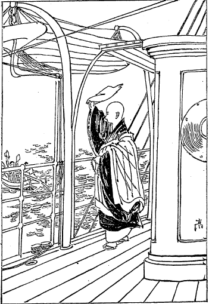
神戸港頭の袂別
七月十二日にシンガポールに到着しました。同地の
扶桑館という宿屋に着いて十五日に日本領事館へ
尋ねて行きました。その時分の領事は藤田敏郎という方で、領事は私の行く前からもはや私の乗って行った和泉丸の船長の話でチベット行のためにこの地方を過ぎるということを知って居られた。で「あなたはチベットに行かれるそうだがどういう方法で行かれるか。チベットに行くのは非常の困難だ。福島さんでさえダージリンまで行かれてどうもチベット行は非常の困難だといって帰られた位だからむろん駄目な事であろう。まあ軍隊を
率いて行くかあるいは乞食になって行かれるか、どっちか知らんですが一体どういう風にして行かれるか」という問であったです。「私はもとより僧侶の事で軍隊を率いて行くという事は思いも寄らぬ。よし率いて行くことが出来るにしたところが私はそういう事は望まない。出家は乞食をして行くのが当り前ですから乞食になって出掛けて行くつもりです。どうせ今からこうああと充分方法を考えて置きましたところがその方法がはたして間に合うか合わぬか分らぬから、到る処に従いその機に応じて方法は
自ら生じて来るであろうと思って居りますからこれから出掛けて行きます」といったところが、領事はどうも危ないというような様子で手を
拱いて居られました。
七月十八日に一つの出来事が私の宿屋に起った。実に危ない話で私が死ぬべきところを助かった事ですからここに述べて置きます。私は出家の事とて
一切到処皆帰道場という考えでこの宿屋でたびたび
説法をしました。ところが宿の主人は特別に優待せられて毎日湯を沸かすと一番新湯に入れといってくれるです。それが泊って居る間例のようになって居りました。この日もやはり例のごとく湯が沸きましたからお入り下さいと女中が言って来た。その時に私はお経を読んで居りました。すぐに出掛けて行ってもよいのですがなんだかぐずぐずして居りました。するとまた女中が来て「あなたがお入りになりませんと外の方が入りますからどうか早くお入り下さい」という。はいはいと答えをして置きながら私はその
儘坐り込んで居りました。
ところが暫くすると
轟然と
酷い音が聞えてその家が震え気味になったです。「はてな地震じゃあないか知らん。事によると外に出なくちゃあならん」と思ってずっと外の方を見て居りますと、別に地震の揺った様子でもないけれどもその音は非常で
俄に人が騒ぎ出しました。そこで様子を聞くとこの宿屋の風呂場が
堕ちたとのことで、一体その
風呂場は二階にありますがシンガポールの家は随分二階と下の間が開いて居りましてほとんど一
丈もあるように見受けます。そんなに開いて居る二階からしてその風呂場が落ちたという
始末。それへ指して私が入らなかったものですからある日本の婦人が先に入って居りますとどういうはずみか風呂と共にその婦人が落ちてしまった。で柱なり石なりがその人の頭といわず身体といわずそこらを打ちまして気絶してしまいました。非常な
負傷をしたそうで私はお気の毒で婦人の
傷を見に行くこともようしなかったですが、
直に病院へ連れて行きました。その後死んだかどうかその婦人の事については聞きませぬが、ある人はどうもむつかしいといって非常に歎いて居られた。
もし私がこの時に女中の報知のままに直に湯に入りますれば確かに死んで居ったかあるいは死なぬにしろ
不具の身となってとてもチベット行を満足することが出来なかったに違いない。幸いにこういう
奇禍を免れる事の出来たのもこれまたチベットへ入って奇禍を免れ安全に故郷へ帰って来られるという
前兆になったかも知れない。気の毒なのはその婦人で私の身代りにそういう
難に陥ったようなものでございます。その後ダージリンにおいて聞くところによるとシンガポールの宿屋は非常に困ったそうです。それは板や柱の腐れ掛った所は土やペンキを塗って
胡魔化してあるからちょっと見ただけでは分らぬといって、警察の役人が槍を持って来てズブズブ突き通して少しでも怪しい所があると皆取り換えさせたそうです。これはもとより当然の事でありましょう。
七月十九日英国汽船ライトニングに乗りペナン港を過ぎて七月二十五日にカルカッタ市の
摩訶菩提会に着きそこに数日
逗留して居りましたが、同会の幹事でチャンドラ・ボースという人があります。その人が私に向い「あなたは何の目的でこちらにお越しになったか」という尋ね。「私はチベットに行くのが目的でチベット語を研究するために参りました。」「それには大変好い所がある。チベットで修学した人で今チベット語と英語の大辞典を著しつつあるサラット・チャンドラ・ダースという方がダージリンの
別荘に居る。そこへ行けばあなたの便宜を得らるるだろう」という。「それはよい
都合であるからどうか紹介状を下さらぬか」と頼んで紹介状を貰い、八月二日に在留日本人に送られてカルカッタより汽車に乗って北に向い広大なる恒河を汽船にて横ぎったり、また汽車に乗って
椰子の林や青田の間を北に進行しました。我が国で見ることの出来ない大きな螢が沢山飛んで青田の水にうつる影のおもしろさ。それがちょうど月が西原に沈んだ後の事でござりました。御仏の昔も思い出でまして
御仏のひかり隠れし［＃「隠れし」は底本では「穏れし」］闇ながら
猶てりませと飛ぶほたるかな
翌三日の朝シリグリーというステーションで小さな山汽車に乗り替えました。その汽車が北に向ってヒマラヤ山にだんだん上りました。
欝茂せる大林すなわちタライ・ジャンガルを過ぎて汽車の
紆曲することは大蛇のごとく、汽関車の声は幾千の獅子の
奮迅もかくやと思われるほどで山谷を震動して
上りました。山道五十
哩を上りまして午後五時頃ダージリンに着きましたが、カルカッタよりは三百八十哩を
経たのであります。
停車場からダンリーという
山駕籠に乗って直にサラット師の別荘〔ラハサ・ビラ〕に参りましたが、大変立派な別荘で私はそこへ泊り込むことになりました。
私がサラット師の別荘へ着いた時にはインドのアッサム地方が大地震で、やはりダージリンもその地震の影響を受けたために家が大分
毀れたり
歪んだりしていた。で、ちょうどその
普請中でありました。その翌日
直にサラット
居士と共にグンパールという所の寺に住んで居るモンゴリヤの老僧を尋ねました。この老僧はその時分七十八歳でなかなかの学者です。その名をセーラブ・ギャムツォ（
慧海）といって私と同じ名の人であった。その名に
因んで大いに
悦ばれだんだん仏教の話も出ましたけれども、私はチベット語の一つも知らずサラット居士の通弁で幼稚な英語をもって話をしただけであります。その時に始めてこのお方からチベット語の
アルファベットを学びました。それから毎日
三哩あるこの寺へ通うてチベット語を勉強致しました。一月ばかりやって居りますとサラット居士は私に対し「あなたはチベットに行くというけれどもそれはもう
止しにするがよい。実に困難な事である。しかしその困難を犯しても
成就すればよいけれどもまず絶望の姿である。だから止すがよい。もちろんチベット語の研究はここで充分出来るからその研究をして日本へ帰れば充分チベット語学者として尊崇を受ける訳じゃないか」という話でありました。
「しかし私はチベット語学者として尊崇を受けるためにチベットに行くのじゃあございません。仏法修行のためですからどうしても行かなくちゃあならぬ必要があります」というとサラット
居士は「必要はあったところで到底成就しない事に従うのは詰らんじゃないか。行けばまあ殺されるだけの
分だ」という話。「しかしあなたはチベットに行って来たじゃあございませんか。私とても行かれぬ訳はないじゃあございませんか」と
詰問しますと「それは時勢が違っている。今日はもう鎖国が実に完全になったから私とてももう一遍行くことは出来ない。その上私はよい方法を求め通行券を得てかの国に入ったのであるが、今はとても通行券を得ることは出来ないからそういう望みは止しにしてただ勉学だけして日本に帰る方が得策です」といって親切に勧められた。「私はとにかくチベット語を学ばなくちゃあなりませずその上にただチベット仏教の学問だけ研究してもつまりませんから、どうか俗語をも学びたい。さもなければかの国に入るに困難ですからその俗語を学ぶ
方便をして
戴きたい」と言って頼みますと仕方がないと諦めてかサラット居士は早速引き受けてくれました。
その別荘の下に小さな美しい二軒家があります。その家はラマ・シャブズンという方の家です。けれどもそのお方はその頃市場の方に住んで居られてその家には居りませぬ。それをわざわざサラット居士が呼び寄せて「あなたの家内一同ここに引き移って、このジャパン・ラマにチベットの俗語を教えてやってくれまいか」と頼みますと、快く承諾してそのラマ・シャブズン師は家族と共にその家に引き移り私もその家へ寄寓することになりました。で、その俗語を習う月謝はもちろん私が払いますので、その上私はダージリンに在る官立学校へ通ってチベット語の教頭ツーミ・ウォンデンという人から正式のチベット語を学ぶことにしました。それらの学問に関する入費は皆私が払ったけれども食物は
総てサラット居士が特に施してくれた。私はそれに対し相当の代価を払うつもりで金を持って行きましたけれどもどうしても取ってくれない。「あなたのような清浄の僧に
供養すると私共の罪業が消滅して大いに福禄を増すことになるからぜひ受けてくれろ」という。私はもちろん金がなくって学問をして居るのですからせっかくの親切を無にするてもないと思ってその供養を受けることにしました。私がダージリンに着いた時分にはわずかに三百円しかなかったけれども家の借賃と月謝と書物代に
小遣だけですからその金で一ヵ年半を支うることが出来た。もし食費を払うとすれば月に五十円位ずつはどうしても
要りますから五、六ヵ月しか学ぶことが出来んのです。
まことに好都合の事は昼は学校に行って学問上のチベット語を研究し夜は家に帰って俗語を研究することで、その上また学校へ行くまでの間にも
朝御膳の時にもやはりその言葉を学ぶというような訳で俗語の進歩は非常に早かった。俗語を学ぶにはその国人と同居するに限ります。日に二時間三時間ずつ教師を
聘して学んだところが到底本当の事は出来ない。同居して居ると知らず知らずの間に覚えることも沢山あります。その中にも殊に俗語の良い教師は男子よりも女子、女子よりも子供で、子供と女子とはどこの国語を学ぶにもそうですが、発音の少しでも間違ったことは決して聞き
棄てにはしない。あなたの言うのはこういう風に間違って居るとか、どういう風に間違って居るとか、何遍か言う。それがまた面白いと見えて私のよく言い得ない事は向うから発音して聞かせる。こちらは一生懸命になって口の開き方、舌の使い方、歯の合せ方を見ましてその音を真似ようとするけれどもなかなかいけない。ようやくに真似ることができたかと思うと一日経つとまたその音が出なくなってしまうというような訳で毎日笑われます。その笑われるがために俗語の発音の進みが案外早かったです。
そういう風にして一生懸命学んで居るものですからわずか六、七ヵ月で一通りの事はまあチベット語で話せるようになった。かえって英語で話をするより楽になりました。日本では英語を二年余一生懸命に学んだけれども外国に出て見ると一向間に合わない。しかるに英語よりむつかしいかと思うチベット語がわずか六、七ヵ月学んだだけでちょっと話が出来るようになったというのも全く子供や女が
喧しく教えてくれたからでしょう。チベット語が分るに従ってチベットの事情を聞く事は毎晩の事で、殊にラマ・シャブズン師は非常な話好きで得意になって自分の難儀した話をされた。このお方はチベットで名高いセンチェン・ドルジェチャン（
大獅子金剛宝）というチベット第二の法王〔パンチェン・ラマ〕の教師をして居られたお方の一弟子であります。この
大獅子金剛宝という方は大変高徳な方でチベットではこのお方ほど学問の
勝れた方はないという評判であった。サラット
居士がチベットに入った時このお方についてほんのわずかの間チベット仏教を学んだそうです。ところがサラット居士がインドに帰ってから英領インド政府の命令でチベットの国情を取調べに来たのであるということが発覚して、サラット居士に関係あった役人すなわち
窃に旅行券を与えた者及び旅宿その他の者が獄に下された。その際にこの高徳なる大ラマも死刑に処せられる事になりました。その時の哀れな有様を聞いて私は思わず落涙致しました。ちょっとそのお話を致しましょう。
当時チベット第一の高僧大獅子金剛宝は下獄の上死刑の宣告を受け
而して死刑に処せられた状態を聞きますに、実に仏教の道徳を備えた
御方はかくもあるべきものかと人をして讃嘆敬慕の念に堪えざらしむる事がございます。私の説くところはただにその
弟子のシャブズン師から聞いたばかりでない。その後チベットに入りラサ府において確かな学者から聞きましたものでその話の中にはなかなか感ずべき事が
沢山あります。始めサラット
居士が帰るや否やチベットに流説が起りました。その時分に大獅子尊者はもはや自分に
禍の及ぶことを自覚して居られたけれども、ただ自覚して居られただけでその罪から身を免れるということもせられなかった。その
尊者の意見なるものを聞くに「私はただ仏教をチベット人に伝うるのみならず世界の人に伝うるのが目的であるから、仏教を教えただけで決して彼が仏法を盗みに来たとかあるいはまた国内の事情を探りに来たということについては一つも私の
与り知らぬ事である。またそういう
素振も見えなかった。我は我が本分を守って仏教を伝えたが為に罪ありとして殺されるならばぜひもないことである」と言って
自若として居られたそうです。
この尊者は実に尊いお方で既にインドの方にも仏教を拡めたいという意見を持って居られたそうです。というのは「もと仏教はインドの国から起ってチベットへ
伝播されたものである。しかるに今はかえってインドでは仏教が跡を絶ってしもうてその影すらも見ることが出来ない。これ実に仏陀及び祖師に対し我々が
黙視するに
忍びないことである。どうかインドの国へ仏教を
布きたいものである」という考えを持って居られた。それはただ考えだけでなくそれがためにわざわざ人をインドの方へ
派遣された。今ダージリンのグンパールの寺に居らるる
蒙古の老僧セーラブ・ギャムツォ師もやはりその派遣者の一人であります。その外にも同尊者の命を受けて来た者があったがそれほど功をなさなかったという。同尊者はただに人を送るのみならず経文及び仏像、仏具等をインドの方へ送られて仏教を布くの材料に供せられた。それらの点から考えても尊者は宗派的あるいは国際的関係を離れて全く仏教の
真面目の意味を世界に布教したいという考えを持って居られた尊いお方であります。
日本の僧侶の中には外国布教の考えを持って居る者は沢山ありますが、チベットのごとき厳重なる鎖国においてそういう考えを
懐いて居らるるというのは真に尊い事であります。こういう尊い心の方であるからサラット居士が行かれた時分にも快く仏教を教えてくれたのでありましょう。しかるに政府部内にはこの学識深遠にして道徳堅固なる尊者を
嫉む者があって、何か折があればこの尊者を亡き者にしたいという考えを持って居る人も沢山あったそうです。ところへそういう風説が起ったものですからこれ幸いとその風説を元としてダージリンの方に人を派遣し、だんだん取調べさせたところが、もとより事実でもありかつサラット博士は英領インド政府の依頼を受けて行ったに違いないから事実通りに確かめられて直ちに尊者は捕えられて入獄の身となり、またサラット
居士に関係のあった他の役人らも皆入獄された。で罪状いよいよ定まって
尊者は死刑の宣告を受けました。それは「外国の国事探偵をその寺に住せしめてチベットの密事を
漏洩したるが故に汝を死刑に処す」という宣告であります。
で、その宣告を受けて死刑に処せられた日は我が明治二十年の陰暦六月の何日であったか日は分らないが、六月の某日に同尊者はチベットの東方にコンボという国があってその国にコンボという大河があります。実はブラマプトラ川であるがコンボの領内を流れるからその土地の人がコンボ川と名づけて居るです。前にも申した通りいつもその第一弟子のシャブズン師が処刑当時の状況を話します時分には、その情真に迫って悲哀の感に堪えぬ様子で私も思わず涙を流して聞いた事でございます。当日尊者はそのコンボ河畔の大なる
巌の上に白装束のまま
坐せられて居ります。そこはいわゆる死刑に処する場所でありますので、尊者は静かにお経を読まれて居った。すると死刑の執行者は「何か望みがあれば言って戴きたい。また何か
喫りたい物があるならば言って戴きたい」と申し上げたところが「私は何も望むことはない。ただ経文を少し読まなくてはならぬ。経を読みおわると私が三たび指を
弾くからその三たび目に私をこの川の中に投じてくれろ」と繩に掛りながら仰せられ、暫く経文を唱えて居られたが
神色自若として少しも今死に臨むという状態は見えない。ごく安泰に
読経せられて居ったそうです。
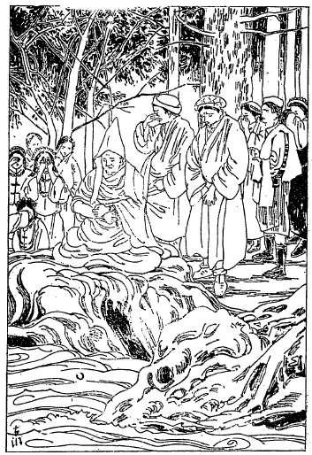
大獅子金剛大ラマの水刑
その節この尊いお方が、人に憎まるるためにわずかの罪を口実に殺されるというのはいかにもお気の毒な事であるといって見送りに来て居った人が沢山ありまして、それらの人は皆涙を流して尊者の巌上にござるのを仰ぎ見る者もない位で、中には地に
俯伏せになって大いに声を挙げて泣き立てる者が沢山あったそうです。ただその諸人が泣くのみかその日の空は曇って
霏々として雨が降り出しました。これ天地もかかる道徳堅固の尊者を無残にも水中に投じて死刑に処するということを悲しむにやあらんと思われるほど、空の色も
陰欝として哀れげなる光景を呈して居ったそうでございます。元来尊者は身に赤色の三衣を
纒わねばならぬ御身分ですが、罪人となって白い獄衣を着けて居られる上に荒繩で縛られたまま静かに坐禅して経を読んで居られましたが、やがて経を読みおわり繩目の間から少しく指を挙げて一度
爪弾きをされたその時は、岸辺に群がる見送人は一時にワーッと泣き出したそうでございます。
尊者は
弾指三たびに及んでもはや我を死刑に処せよという合図を致しましたが、死刑執行官吏は自分自ら尊者に手を
掛けて川の中へ投げ込むに忍びず潜然と涙を流して見送人と共に
嘆きに沈んで居る様はいかにも悲惨の状態であったです。ところで尊者は静かに言わるるには「もはや時が来たのにお前達は何をして居るのか早く我を水中に投ぜよ」と促されて、立会官吏も泣きながら尊者の腰に石を
括り付けその石と共に静かに川に沈め暫くして上に挙げて見ますと、尊者は
定に入られたごとくまだ呼吸を引き取って居りませぬ。そこでまた一度沈めた。もうお
逝れになったろうと思って挙げますとまだ
定に入って居らるるようで死に切りませぬ。
この
体を見るより見送人は「この際どうか助ける道がないものか」と歎いて居りますと、死刑執行者も大いに歎いて今度は沈めることをようしなかった。その時に当り尊者は静かに両眼を開き役人に向っていわるるには「
汝らは決して我が死を
歎くに及ばぬ、我が
業力ここに尽きて今日めでたく往生するのは取りも直さずわが
悪因業ここに消滅して今日より善因業を生ずるのである。決して汝らが我を殺すのでない。我は死後チベット仏教のいよいよ栄えんことを希望するのみである。早く水中に沈めてくれるように」とせき立てられて役人達は泣く泣く水中に沈めて上げて見るともはやお
逝れになって居ったという。それから尊者の死体を解いて手は手、足は足で水に流してしまったそうです。私はこの事を聞いて悲しみに堪えられなかった。私がもしチベットに入って後にまたこんな悲惨な事が起るような訳ではどうも行くに忍びない。どうぞチベットへ入っても後にかかる惨事の起らないようにしたいものであるという考えはこの時からして私は充分に持って居りました。かくも仏道を拡むる事を本趣意とせられて居る
尊きお方が、かかる
奇禍を買い悲惨なる処刑に遇いながら人を怨まず天をも
咎めず自若として
往生せられたという尊者の大量に至っては、これ仏教者の共に
欽慕すべきところでございましょう。
明治三十一年の一月一日には例年のごとく祝聖の儀式を挙げ、天皇皇后両陛下及び皇太子殿下の万歳を祝するため読経致しそれから一首の歌を
詠みました。
ヒマラヤに匂ふ初日の影見れば
御国の旗の光とぞ思ふ
この一年間は実に昼夜チベット語を専門に修める事ばかりに費やしました。その結果として大抵これならばまあチベットへ行っても
差支えあるまいというだけ俗語の研究も学問上の研究もほぼ出来て来ましたから、いよいよ翌明治三十二年にチベットへ行くという決定を致しましたけれども、道は
ということについて自ら調べなければならぬ。その道についてはダージリンから
直に東北に出でニャートンを通って行く道もあり、その横に桃溪の間道もあります。それからまたカンチェンジュンガという世界第二の高雪峰の西側を通ってワルンというチベットの国境へ出て行く道もあり、その
外にシッキムから直に〔カンバ城に〕入って行く道もありますけれども、いずれも関所もありあるいは関所のない所には番兵が見張をして居りますから容易には入れない。サラット博士の説では「ニャートンの関所へ掛り、我は日本の仏教徒で仏教修行に来た者であるから入れてくれろといって
懇切に話をすれば入れてくれぬ事もあるまい」といわれたけれどもそれは
到底駄目です。私がチベット人について充分研究したところによるとそういう方法は取れない。その外にブータンとネパールとの両国について道を発見することが出来る。
その両国の中私にとって最も利益の多い道はネパールの方であります。ブータンには仏陀の古跡もなければまた研究するものも少ない。もっともチベット仏教の高僧の旧跡などはありますけれどもそういうものは私にとっては余り
貴重の事でもない。ただ必要なのはネパールにはいろいろの仏跡もありまたサンスクリット語の経文もあり、よしチベットに入り得られぬまでもこれらを取調べに行くということはよほど有益な事であります。殊にこれまでは欧米人が入って居るけれども日本人でネパールへ入った者はまだ一人もないのでございます。我々の研究する価値のある国ですから道をネパールに取ることが最も必要であります。で、いよいよ
ことにきめました。そこで直にダージリンから西に進んでネパールに行くことができれば美しい山水の景色を見ることもでき、また仏跡にも参詣することができて誠に好都合ですけれどもまた危険な事があります。このダージリンに居るチベット人はかねて私がチベットに行くためにチベット語を研究して居るということを皆聞き知って居るものですから、私がチベットの方向に向って出立すれば必ず跡を
踉けて来て私を殺すかあるいはチベットまで一緒に行って、チベット政府へ
告口をすれば賞金を
貰うことができるという考えで注意して居る人が随分あったです。それゆえにその追跡を免れるためには是非とも外の方法を
執らなければならぬ。そこで私はサラット博士だけにはチベットへ行くという秘密を明かしたけれども、その他の私に語学を教えてくれたラマ達には
俄に用事ができて国へ帰ると告げてダージリンを出立しました。幸いにその時には国の肥下、伊藤、渡辺諸氏の尽力で六百三十ルピー送ってくれましたから、その金を持って一旦カルカッタへ参りましたのは明治三十二年の一月五日であります。その出立の時分に一首浮びました。
いざ行かんヒマラヤの雪ふみわけて
法の道とく国のボーダに
ボーダというのはチベットの国の名でサンスクリット語でそういうのであります。
私はダージリンからカルカッタに着きいろいろ旅行用の買物をしましたが、その時にネパール国政府の書記官で今はチベットへ公使に
入って居るジッバードルという人からネパール国に入ってから都合よく行くようにとのことで、二つの紹介状をネパールのある紳士に当てたのを
貰うことができました。その月の二十日頃ブダガヤに参りました。その当時ブダガヤにダンマパーラ
居士が来て居られて、いろいろ話しましたが、折柄居士は「あなたがチベットへ行くならば法王にこの
釈迦牟尼如来のお
舎利を上げて貰いたい」と言って舎利をおさめた銀製の塔とその捧呈書とそれから
貝多羅葉の
経文一巻を
託されました。でダンマパーラ居士の言われるには「私も一遍チベットに行きたいけれどもなかなかあちらから来いというような許しでもなくてはとても入って行くことは出来ないだろう」と言うような話でありました。私はその夜ブダガヤの
菩提樹下の
金剛道場で坐禅を致しましたが実に愉快の感に堪えなかった。釈迦牟尼如来が
成仏なされた樹の下で私がまた坐禅することの出来るのは実に
幸福であると我を忘れて徹夜致しましたが、菩提樹には月が宿りその影が
婆娑として
金剛坐の上に映って居る景色は実に美しゅうございました。その時に
菩提樹の梢に月のとゞまりて
明けゆく空の星をしぞ思ふ
という歌を詠じました。二日
逗留の後ブダガヤから北に向い汽車でネパールの方へ出掛けました。一日一夜を経てネパールの国境に近いセゴーリという所の停車場に一月二十三日の朝着きました。その停車場から向うへ二日行けばネパールの国境に着くのですがそれから先は英語も通用しなければチベット語も通用しない。インド語を知って居れば進むに
差支えはない訳ですけれども、私はインド語もよく知らなければネパール語も知らない。ネパール語を知らんでは何一つ物を買うことも出来ず道を
尋ねることも出来ぬ。
唖の旅行ではとても目的を達することはできないから、まずこのステーションに止まって幾分かネパール語の練習をしなければならぬ必要が生じたです。
幸いにセゴーリの郵便局長をして居るベンガル人が英語も知って居ればネパール語も知って居りますからその人に
就いて学び始めた。まあ盗人を捉えて繩を
綯うような話です。けれども今日までは専らチベット語ばかり学んで居りましたから外の言葉を学ぶ暇がなかった。学んだ所は一々手帳に記し道を散歩しつつその手帳を頼みにネパール語の復習をするのですが、私がそこに着いてその翌日例のごとくネパール語の復習をしつつ散歩して居りますと、汽車から上って来た人の中にチベット服を着けた四十
恰好の紳士と同じくチベット服を着けた五十余りの老僧とその
下僕ともいうべき者が二人、都合四人連の一行がこちらを指して来るです。「こりゃよい所にチベット人が出掛けて来た。どうかこの人に一つ話をつけて一緒に行くような都合になればよいが」と思いましてその人の
端に行き「あなたはどちらへお越しですか。」「私共はネパールの方に行く」という。「それじゃああなたがたはチベットから来たのですか。」「いやそうでもないけれどもこの中にはチベットから来た人も居る」という。で私に向っていいますには「あなたは一体どこか。」「私はシナです。」「どちらからお越しになったのか。海の方から来られたかあるいは陸の方から来られたか」という。
ここでもし私が海の方から来たといいますと彼らの疑いを受けて私は到底ネパール国にも入ることが出来ない位置に在るのです。というのはこの時分に海の方から出て来るシナ人はすべてチベットには入れぬ事になって居ります。陸の方から来たといえば大抵チベットから来たという意味になりますから、そこで私は「陸の方から来た」と答えて話をしつつ私の泊って居ります
茅屋の方へ一緒に参りました。私の泊って居る所は竹の柱に
茅葺き屋根というごく粗末な家でその向う側にもまたそんなような家があります。それは皆旅人の泊る所ですが別段宿賃を払う訳でもなしただ
薪代と
喰物を買うてその代を払うだけの事です。その紳士の一行も向い側の
茅屋に入ってしまいました。もちろんこの辺にはホテルなどという気の
利いたものもなくまた宿屋らしいものもない。その木賃宿が
旅籠屋であるです。
暫くするとその紳士と老僧が私の所へ尋ねて来まして「時にあなたはシナ人であるというがシナはどこか。」「
福州です」というと「あなたはシナ語を知ってるだろうな。」こりゃ困ったと思いましたが「知って居ります」というとその紳士は大分にシナ語が出来ますのでシナ語を使い出したです。私はそんなに深く知らぬものですからちょっとした事しか答えは出来ぬ。甚だ困りましたが
俄に一策を案出した。「あなたの使って居るシナ語はそりゃ北京語だ。私のは福州の言葉ですっかり違うからとても話が分らぬ」というと紳士は「あなたはシナの文字を知って居るか。」「知って居ります。文字で話をしましょう」と言って鉛筆で書き立てますと彼には
解る字と解らぬ字があったものですから「こりゃとても文字でも話をすることが出来ぬ」という。
「そんならチベット語で話をしましょう」といってチベット語で話をすることになりまして、だんだん話が進みついに紳士は「あなたは陸から来たというがチベットのどこから来たか」と尋ねますから「実はラサ府からダージリンを
経てブダガヤへ
参詣に来たのであります」というと紳士は「ラサ府のどこに居られるのか。」「セラという寺に居ります。」「セラにジェ・ターサンのケンボ（大教師）をして居る老僧が居るがあなたは知って居るか。」「そりゃ知らん事はない」といって、幸いに私がラマ・シャブズン師から聞いて知って居った事ですからうまく答えが出来たです。知って居る話ばかり聞いてくれればよいけれどもそうでないと
化の皮が顕われますからあまりむこうから尋ね掛けないように機先を制して、かねてシャブズン師から聞いて居った
機密の話を持ち掛けた。それはシャッベー・シャーターという方はこの頃自分の権力を張るために大分にテンゲーリンに対し悪意を持って居る様子であるという次第を説明したところが、紳士は大いに私を信じてもはや一点も疑いないようになりました。シャブズン師に聞いたお話が大分に活用できた訳でございます。
その紳士は語を改め「あなたはこれからネパールへ行くというが誰の所へ尋ねて行くか。これまで行った事があるか」という。「いや一度も行ったことはない。それゆえに紹介状を持って来ました。」「それはどこの誰からの紹介状ですか。」「実はカルカッタにおいてネパール政府の大書記官ジッバードルという人から紹介状を二通貰って来ました。その紹介状はネパールの
摩訶菩提の
大塔のラマにあててあるのです。そのラマの名は忘れましたがその書面には書いてあります。このジッバードルという人は領事としてチベットに八年ばかり居って大変によくチベット語の出来る人です」といって
委しくその紹介状を貰った手続を話しますと、紳士は「そりゃ妙だ。その紹介状を書かれたジッバードルという人は私の友達だが一体誰に宛ててあるのか私にその書面を見せてくれまいか」というから「よろしゅうございます」といって荷物の中からその紹介状を出して示しますとジーッとその上書を見て居りましたが「こりゃ奇態だ、この書面で紹介された主は私です」という。
ネパールで友達というのはなかなか重いことでほとんど兄弟というほどの意味を持って居ります。それゆえに友達と縁を結ぶ時分にも一種
奇態の
礼式があって、ちょっと婚礼のような具合に沢山御馳走を
拵え多くの親類縁者を呼び集めてその式を挙げます。委しい事はくだくだしいから申しませんがつまり酒を飲む人ならば互いに盃を取かわし
下僕らにも相当の
祝儀をやらなくてはならぬ。そう言う式を挙げた上でなくては友達ということを許されない。その紳士と私の持って居る紹介状の主とはいわゆる親友の間柄であります。
僥倖にもその紳士が
大塔のラマだといいますから私は「誠に奇遇であります。どうかよろしく頼む」といいますと「就いては明日一緒に行くことにしましょうがあなたは馬か車に乗ってお越しになりますか。」「私はいずれでもよろしい」というと「あなたのようなよい
同伴を得たのに馬に乗って話もせずに走って行くのは面白くない。この間大分に面白い景色の所もあるからぶらぶら話しつつ歩いて行ったならばよほど愉快であろうと思うがそうしたらどうでしょう」とこういう話。「それは願うてもない幸い、そう願えれば誠に結構です。」というのは私の考えではそういう話の中にもネパールの国からうまくチベットに入る道を発見することができれば大いに便宜を得ることであるという考えで、大いに喜んでいよいよ一緒に行くことになりました。ところへその紳士の
下僕が二人真っ
蒼になって駈け付け「大変です、泥棒が入りました」というような訳で老僧と紳士は
慌てて帰ってしまいました。衣類と三百五、六十ルピー入って居た
鞄を一つ取られたそうです。後に宿屋の主人に聞きますとかの泥棒は大変私の物を盗もうとて、うかがって居たのだそうです。私の難を紳士が受けたようなもので、まことにお気の毒でござりました。
その紳士の名はブッダ・バッザラ（
覚金剛）その老僧はラサ府レブン大寺の博士でマーヤル（
継子）というなかなか
剽軽なお方でした。一月二十五日早朝から出立して平原を北に進んで行きました。翌日にネパール国境最初の関所でビールガンジという所に
着て、そこで私はチベットに居るシナ人として通行券を貰いました。その翌
出立してタライ・ジャンガルという
大林でヒマラヤ山の玄関というべき入口より少し前の村で宿りまして、その翌二十八日大林入口のシムラという村を過ぎて
幅四里の大林を一直線に横ぎってビチャゴリという山川の岸にある村に
着て宿りました。夜の十時頃日記を
認めつつ荒屋の窓から外を眺めますと、明月
皎々として大樹の上を照らして居るに河水
潺々としてなんとなく一種
凄寥の気を帯びて居ります。時に大地も
震動しそうなうら恐ろしき大声が聞えました。なんの声かと宿主に尋ねますとあれは虎が肉を喰ってから川に水を飲みに来て唸ってる声であるとのことを聞いて思わず一つの歌ができました。
月清しおどろにうそぶく虎の音に
ビチャゴリ川の水はよどめる
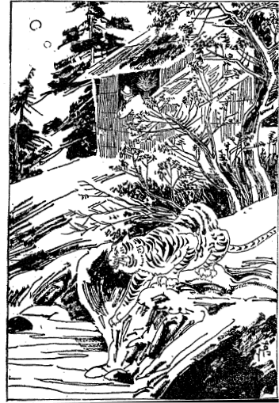
ヒマラヤ山中虎声を聞く
その後二日間
溪流あるいは
林中あるいは
山間を
経てビンビテーという駅に着きました。この駅までは馬車、牛車、馬も通りますけれども、ここからは急坂ですから歩行かあるいは
山籠でなくば行くことが出来ませぬ。私共はやはり歩行で朝四時から大急なる坂を上りましたが、ちょうど一里余上りてチスパニーという関所に着きました。ここには税関があって出入の物品に課税して居ります。また
砲台があって守備の兵士も大分居ります。そこで我らは取調べを受けましてチスガリーという峰の頂上に上りましたが、ここから始めて白雪の妙光
皚々たるヒマラヤの大山脈が見えます。これはダージリンあるいはタイガヒルなどで見た
類でありませぬ。非常に壮観なものであります。
その峰を超えてその夜はマルクーという駅に宿りまして、翌二月一日早朝チャンドラ・ギリーすなわち月の峰に上りまたヒマラヤ山脈の妙光を見まして少しく下ると、山間におけるネパール国の首府カトマンズ付近の全面が見えます。同行のブッダ・バッザラ師は山原中に二つの大金色を虚空に放つところの大塔を礼拝して私に示していいますには、かの一つの大塔は
迦葉波仏陀の舎利塔で他の一つは
尸棄仏陀の舎利塔であるといわれたから、私は大いに喜んで礼拝致しまして、その急坂を下りおわりますとブッダ・バッザラ師の出迎えとして馬二
疋に人が四、五名来て居りました。私共はその馬に乗りその村の近所へ着きますとまた二十四、五名の人が迎えに来ました。セゴーリという停車場からここまでおよそ五十里ほどであります。
カトマンズの
大塔村はいわゆるボーダという名で
迦葉波仏陀の大塔の周囲を廻って居るのであります。ブッダ・バッザラ師はすなわちこの村の長でまた大塔の主人であるです。このボーダの大塔をチベット語でヤンブー・チョェテン・チェンボという。ヤンブーはカトマンズの総称でチョェテン・チェンボというのは大塔というチベット語であります。チベットでは大なる塔のある所は直にチョェテン・チェンボというて居りますが、この塔の本当の名はチャー・ルン・カーショル・チョェテン・チェンボといいますので、これを訳すると「成すことを許すと命じ
おわれり」という意味でこのような名の起ったのには
因縁のあることで、この大塔の縁起によりますと釈迦牟尼仏の前の仏で
迦葉波仏がなくなってから後に、チャチーマという老婆が四人の子と共に迦葉波仏の遺骨を納めたとありますが、その大なる塔を建てる前にその時代の王にその老婆が大塔を建つることを願い出てその許可を受けました。
しかるにその後老婆と子供とが非常に尽力して大塔の台を築いた時分に、その時の大臣長者の人々は皆驚きましていいますには、かの貧困の一小老婆がかかる大塔を建てるとすると我らは大山のごときものを築かねば釣合の取れぬことだから、これは是非とも中止さすが好かろうと相談一決して王に願うてその次第を述べますと、王は答えて「既に我はかの老婆になすことを許すと命じおわれり。王者に二言なし、いかんともすること能わず」と。これによって「許成命了之大塔」という名になったのであります。しかしこの塔の出来たのは多分釈尊以後の事であろうと思います。
（〔ネパールが文殊菩薩によって開かれた後の事だと思われます。〕）
毎年陰暦の九月中頃から二月中頃までチベット、モンゴリヤ、シナ及びネパール等から沢山な参詣人が来ます。夏季はヒマラヤ山中を旅行するとマラリヤ熱に冒されますから冬季に向ってから出掛けて来ますのでその中で最も多いのはチベット人であります。チベット人の中でも貴族とか郷士とかいうような参詣人はごく少ないです。一番多いのが巡礼乞食で、これらは
糊口のために廻って歩くので冬分はこの大塔へ来て居りますが夏になればチベットの方へ出掛けて行きます。
ここで私は一番
肝腎な仕事は何かと言えばまずどこからチベットへ入ればよいかということです。ネパールへ来たとはいうもののネパールから入る道も沢山ありますからその道筋についてどこがよいかということを研究しなくちゃあならぬ。けれどもその事をブッダ・バッザラ師に明かす訳に行かぬ。というのは宿の
主人は私はもちろん公道を通ってラサ府に帰りラサ府からシナへ帰るシナ人であると信じて居るからです。よしそれを明かしたところで、この人はやはりネパール政府のチベット語の訳官をして居るのですから、そういうことを知りつつ大王に申し上げない時分には罪になりましょうから、いずれ私が話をすればきっと大王に奏上するに違いない。さすれば私はチベットに行くことができぬようになりますから、そこで恩人ではあるがブッダ・バッザラ師に明かすことができぬのです。
ブッダ・バッザラ師は世間の人からギャア・ラマすなわちシナの国の
上人と言われて居る。というのはこの人の
阿父さんはシナ人でネパールへ来て妻君を貰うてこの
大塔のラマになったのです。このラマは旧教派に属して居ますからむろん妻君を貰うても差支えないのです。ギャア・ラマは私を同郷の人であると言うて大変
好誼をもって世話をしてくれました。それはともかく私は外に何とか方法を求めて道を
穿鑿しなければならぬ。幸いにこの大塔へ参詣に来て居る乞食の巡礼者はいずれも皆チベットから出て来た者が多い。これらについて道を尋ね研究することが必要であるという考えから私はそれらの乞食になるべくよけいの金銭を遣るようにしました。それも一度ならず二度も三度も
強請らるるままにやるものですから大いに心服して、シナのラマはなかなか豪い方だと言って大いに私を信用するようになりましたからある時は私は「どうだ
己は名跡へ参詣したいが案内して行ってくれないか。」「ようございます。案内いたしましょう」という。その道々「お前はチベット人だというがこのネパールへ来るにどの道を通って来たか」と尋ねたところがテンリーから参りましたという者もあるです。
そのテンリーという道にもやはり三重、四重の関所があって容易に通り越すことが出来ない。で、その道筋の関所の在る所は間道を通っても容易に通れぬと言う。しかし関所の在る所を通って来る時分にはどうしても多分の
賄賂を使わなければ通してくれぬということはかねて聞いて居りましたから、私はその巡礼に向い「お前は乞食の身分で関所のあるテンリーを通って来たというのは嘘だ。どこか間道から来たのだろう。そんな嘘を
吐くに及ばぬじゃないか」と
詰りますと「あなたはよく御承知ですな。実はこういう間道があってそこを通って来ました。その道はあまり人の通らない所です」というようないろいろの話をするです。そういう話を聞いて居る間に道筋の幾つもあることが分って来たです。で一人の乞食に聞いた事を材料にしてまた外の乞食に向い「お前こういう間道を通ったことがあるか」と尋ねますと「その道は通らないけれどもニャアナムの方にはこういう間道があります」というような訳でだんだん取調べて見ますとなかなか道が沢山あります。けれどもネパールの首府からチベットの首府まで達する間にはどうしても一つか二つ位本道の関所へ掛らなければ行かれない。例えばニャアナムの間道を取ればキールンの関所へは掛からずに済みますがその向うの関所で取り押えらるる憂いあり、またシャルコンブの間道を行けばテンリーの関所で取り調べられるというような都合でどうもうまく
脱けることができない。
いろいろ
穿鑿をしてみましたけれどもどうしてもネパールの首府からチベットの首府へ遠廻りをせずに行く間道はいずれも
険呑です。必ずひと所か二所は関所を通らなければならぬ。そういう場合には巡礼乞食はどうするかというと一生懸命に頼み少しばかりの物を納めて通して貰うのだそうです。しかし私はチベットの乞食と違い押問答をして居る中には充分こちらに疑いを受けるだけの材料を備えて居りますから、そういう間道を通って行くことは甚だ危険であります。だんだん穿鑿をして居る
中にここによい道を発見することが出来ました。しかしこの道は大変大廻りをしなければならぬ。普通なればネパールの首府から東北に道を取って行くのが当り前ですがそうでなく西北に進みネパール
の境のロー州に出て、ロー州からチャンタンすなわちチベットの西北原に出で、なお西北に進んでマナサルワ湖の方に廻り、一周してチベットの首府に行く道を取れば関所を経ずにうまく入れるという道順が分りました。これ実に私の取るべき間道であるとあらかじめ決定致しました。
道はあらかじめわかりましたが何も口実なしにその道を通って行くと決めますと、どうもこいつは怪しい男であるという疑いをブッダ・バッザラ師に起される
虞があります。しかるにここに口実として甚だよい材料を見出した。というのは、マナサルワ湖は経文にいわゆる
阿耨達池であるということについては学問上
種々の異論がありますが、とにかく普通の説に従えば阿耨達池であるという。その阿耨達池の傍に在る天然の
曼陀羅なるマウント・カイラスは仏教の霊跡でありますから、その霊跡に
参詣するという口実を設けて行くに
若くはないと考えました。で、ある時にギャア・ラマに向い「私は折角ここまで来たのにむざむざチベットを
経てシナに帰るというのは誠に残念なことである。シナの経文の中にチベットにはマパム・ユムツォすなわち阿耨達池があって、その岸に
聳えて居る山を蔵語でカン・リンボチェといって居るが、私はその山に参詣したいという
願心が起ったからどんな難儀をしても
ちょっと行ってみたいと思うがどうでしょう。
荷持を頼むことが出来ますまいか」と言いますとギャア・ラマは「やあそれは
結構な事だがお止しなさるがよろしい。行く道は大変困難でもあるし殊に西北原には道などはありはしない。私も是非一遍参詣したいと思って居るけれども第一容易に食物を得られないから行くには充分食物の用意もして行かねばならぬ。それに強盗が沢山居るから多くの同勢を連れて行かないと殺されてしまう。そんな訳で今まで延びて居るですがどうも荷持の一人や二人連れて行くのはつまり殺されに行くようなものですからおよしなさるがよろしい」と言ってだんだん私に説き勧められた。
そこで私は「そりゃ殺されに行って死んでしまえばそれで役目が済みます。もと生れて来た限りにはいずれとも死んで行くのです。まず仏法のありがたい所に
参詣するために殺されるというような事はこりゃ実にめでたい、結構な事であります。私は死ぬことはなんとも思わない。もし死ぬ時が来ればチベットの
曠原で泥棒に殺されないでもここに豊かに暮して居っても死ぬにきまって居るから決して構わぬ。どうか
荷持を世話をして戴きたい」と言ってだんだん私の決心を話しますと「それほどまでの御決心なら仕方がないからまあ一つ見つけましょう」と言って人をかれこれ捜してくれました。ところがカムという国すなわち泥棒の本場の国の人間ですけれども、大分に正直らしい巡礼を二人頼んでくれた。それに巡礼のお婆さんがある。そのお婆さんは六十五、六ですけれどもなかなか
壮健で山を
駈け歩くことが出来ます。その三人と出掛けることになりましたが、ギャア・ラマはこの二人の荷持は親切にあなたに仕えるかどうかと見届けるためにツクジェという所まで送らせますからと言って人を一人つけてくれました。
主従五人、私はギャア・ラマから買った白馬に乗って出掛けました。なかなか良い馬で、
嶮岨な坂でもほとんど人が手足で登り駆けるかのごとくうまく進みました。ちょうど三月初めっ
方にカトマンズを出て山の中を西北に進み一日坂を登ってはまた一日降るというような都合で、里程およそ八十五里、十日の日数を経てポカラという山間の都会に着きました。ポカラという所はネパール山中では甚だ美しい都会であたかも日本の山水
明媚なる中に別荘が沢山建ててあるかのごとくに見えます。竹の林に花の山、新緑
鬱茂して居るその上に、
魚尾雪峯より流れ来る水は都会の周囲を流れて遠く山間に流れ去るという。私が通った中ではネパール第一の美しい都会でありますが、その水の色は米の
洗汁のような色です。これは多分山間の土を溶かして来るのでございましょう。この都会はネパール国中で一番物価の安い所で、米などはごく安いのは二十五銭で四升位、普通二升五合位、それに準じて物も
総て安い。物産は銅で製した器具類。私はテントを
拵える必要がありますので六日ばかり逗留しましたが、二十五ルピー（一ルピーは六十七銭）で中で
煮炊の出来る位の広さのテントが出来ました。
それからポカラを後にして北方に進みましたがなかなか
嶮しい山で馬に乗れない場所が沢山あるのです。それゆえにまず馬をわざわざ谷間に廻して半日位歩いてまた馬に乗るというような都合にして行ったです。ある日の事私の荷持は先に立ち馬を導いてくれるものですから、私は別段心も
留めず行く先々の事を考えつつ馬に乗って進んで行きますと自分の眼先に樹の枝が横たわって居ります。ハッと思ってその枝を
避けようとする
途端に馬は進む。私は仰向けになるという訳でとうとう馬から落ちてしまいました。幸いに馬も気がついたと見えて走り上らずにジーッと踏み止まり、私もまた
手綱を放さずにしかと握って居りましたから、岩で痛く腰を打っただけで谷へは落ちませんでしたが、もしその時馬が驚いて
駈け出すか、私が手綱を放しますと
と消えてしまったのでございます。これはいい
塩梅だと思って立とうとするけれども、よほど
酷く腰を打ったと見えてどうしても立つことが出来ない。で、その山の頂上まで十
丁程ある所を
下僕二人に
負ぶさって昇りましたけれども、何分にも痛くて動けませんので二日ばかり山中に
逗留いたし、幸いにカンプラチンキを持って居りましたから自分でよく腰を
揉んでそれを
塗ったり何かしたので、格別の事もなく治ってしまいました。三日目に馬は谷間の方から先に廻し、私達は世に
謂う深山
幽谷というのは真にこういう所を言うのであろうというような恐ろしい深山幽谷の間を歩いて参りますと、カックー、カックーという
杜鵑の声が幾度か聞こえます。その時に
ヒマラヤの樹の間岩間の羊腸折
うらさびしきに杜鵑啼く
そういう
淋しい山の
間を通って参りましたが、人は一日二日交わって居る間は誰も慎んで居りますからその性質等も分らんけれども、長く伴うに従って
自からその人の性質も現われて来るもので、二人の
荷持のうち一人は非常に大きな男でごく果断な
質、一人は甚だ温順ですがちょっと読み書きも出来るという訳で大分に自負心も強い。それが果断の人の気に喰わないで折々衝突が起ります。お婆さんの巡礼は正直な人で二人の荷持については何事も知って居るらしく見えます。私は誰にも同じように付き合って居ります。殊にそのお婆さんは大変に酒好きですから宿場に着くと荷持は申すに及ばずそのお婆さんにも同じように買って
遣ります。またいろいろ人からくれた物などがあると、殊に老人は
可哀そうですから
沢山遣るようにして居りました。老婆はそんな事に感じたのかあるいはまた私が日に一度ずつ飯を喰って少しも肉類を
喰わぬということに感じたものか、何しろ大変私を
敬うて少しも巡礼視するような風が見えませんでした。で、そのお婆さんは何か私に
秘密で言いたいような
素振が見えますが他の二人の男を
憚って居るらしい。
それから私が気転を利かしてある日お婆さんを先に立たして私は馬、二人の
下僕は
徒歩で出掛けましたが、彼らは荷を背負って居るのですから大分私より遅れ、私はとうとうお婆さんに追い付きまして共に話しつつ行きますとそのお婆さんは「あの二人の人たちはよほど
後ですか」という。「そうさ二里位遅れて居るかも知れぬ。」「実はこの間からあなたに
内々申し上げたいと思って居った事ですが、実は彼の二人の荷持はあなたの身にとっては恐ろしい人です。一人はカムで人を殺しまた強盗をした人です。もう一人はそれほどにもないけれども
喧嘩をして人を殺した事のある人でどうせ二人とも人を殺すのを何とも思いはしません。しかし一人の温順な方はまさかそんな事はありますまいが、一人の方はあなたが西北原へお越しになればきっとあなたを殺してお金や何かを取るに違いありません。どうもあなたのような御親切な尊いお方がああいう悪い人のために殺されるかと思うとお気の毒で
堪りませんからお話し致します」と言う。「なにそんな事があるものか。あの人たちは大変正直な人だ」といいますと、老婆は本気になりまして「
南無三宝、もしこの事が
偽りであるならば私に死を
賜え」と証拠立てたです。これはチベット人の間に普通に行われて居る誓いの仕方であります。その上お婆さんのいうことは偽りであろうとも思われず、どうもその様子を見るに全く事実らしい。はて困った事が出来たとこれにはなんとか方法を
廻らさねばならぬと考えました。
私は
荷持二人を
気遣いながら四十里の路を六日間かかってヒマラヤ山中のツクジェという村に着きました。そこにはハルカマン・スッバという知事が居りますがその知事の宅へギャア・ラマの紹介で泊ることになりました。
其家へ泊って一両日
経ちますとギャア・ラマの好意で送られた
下僕は、まあこの
塩梅なら大丈夫でございましょうといって帰ってしまいました。けれども私はこの二人の下僕を追い払わなくてはチベット行を全うすることができぬと案じて居る矢先に、いろいろ話を聞きますとこれから北のロー州を過ぎて行く間道にはこの三ヵ月以前からチベット政府が五名の兵隊を置いて道を守らしむる事になったから、外国人あるいは風の変った人間は誰も入ることが出来ぬようになったという。それはこの間道ばかりでなくいずれの間道でも、人の一人でも通って来られるような所にはすべて五名ずつの兵隊に道を守らしむる事になったという
噂、だんだん聞いて見ると事実で、とてもこの間道からチベット高原へ進むことが出来ぬようになりました。
ここに蒙古の博士でセーラブ・ギャルツァン（
慧幢）というお方が来て居りますが、なかなかの学者で
僧侶らに経文を教えて居る
傍ら医者の真似をして居ります。その人がしばしば私の所へ遊びに来て話をしました。ある夜荷持二人が酒宴をして居りました
揚句喧嘩を始め、いよいよ悪漢の本性顕わして互いにその身の悪事を
罵り合って居る所を聞くと、老婆の言う通りの悪漢でその互いに言うところを聞きますと、手前は強盗をして人を殺したに似合わず表部は猫のように柔和な姿をして居るが、時が来たら鼠を
掴むようにシナのラマに荒い仕事をしようと考えて我を邪魔にするのであろうといいますと、一方はそりゃ手前の考えを手前にいって居るのだからよしおれが邪魔になれば退いてやろうというような事で、非常な争いをした揚句私の
許に来て、彼が居れば私に暇をくれと互いに言いましたから、それを
倖いに相当の礼金を
遣わして断然その二人を解雇し、老婆にも小遣いとカタを与えて放してしまいました。
ところで私の執るべき方針は今
直ちに西北原へ進んだところが到底行けるものでない、といって後へ帰ることはむろん出来ない。なんとか方法を
運らさねばならぬと考えて居ります
中に、この間から私の所へ
度々遊びに来る
慧幢博士はただに仏教上の学問あるばかりでなく文学上の学問もありますから、博士と相談の上私は博士にシナ仏教の説明をし博士は私にチベット仏教及び文学を教えるという約束で、博士の住んで居るロー、ツァーラン指して参ることにしました。その途中のチュミク・ギャーツァ（百の泉という意味）すなわちサンスクリット語にいわゆるムクテナートと言って居る霊跡に参詣致しました。
ムクテナートというのは首の
蔵め所という意味、すなわちマハーデーバの首を蔵めた所であるといって今インド教では名高い霊跡としインド教徒も仏教徒も共に霊跡として尊崇して居ります。百の泉というのは申すまでもなく百の泉から百条の水が流れ出るというところからそういう名を付けたので、なおその百泉という所にはサーラ・メーバル（土に火が燃る）、チュラ・メーバル（水に火が燃る）、ドーラ・メーバル（石に火が燃る）という名所があってなかなか名高い。どんな所かと思って行って見ましたところが、実に馬鹿気た話で縦二尺に横一尺位の岩の間に美しい泉がある。その水平線より少し上の岩の間に穴があってその穴から火が出るのですが、その火が水の上を
匐って上に
騰るのです。愚民がこれを見ると全く水の中から火が燃えて出るように見えるのです。その他も皆そんなもので一向
不思議な事はないが、この辺の山の一体の形を見ますと
古昔は噴火山があったのじゃああるまいかと思われるような
形跡もあります。というのは雪の
積ってある向う側には昔の噴火口の跡らしき池があるのみならず、この辺の岩は普通の山の岩と違って皆噴火山の岩であるからです。そこの参詣を済まし山を降ってカリガンガーという川の端に出て一夜を明かしました。
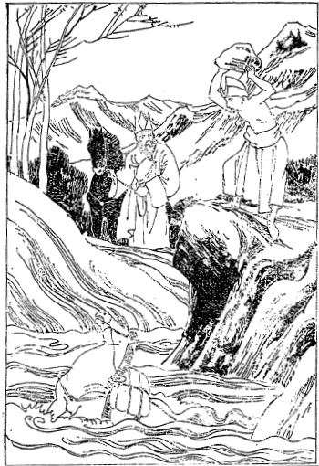
乗馬陥泥の難
その翌日川に
沿うて上りました。浅き砂底の川を
対うに渡らんとて乗馬のまま川に入りますと、馬は二足三足進んで深き泥の中に腹を着くまで
陥りました。私は早速馬より飛び下りましたが博士も馬上で驚いて居られたが、下馬していいますには馬はとても駄目だがあの荷物を取る工夫はあるまいかといわれました。そこで私は
直に着物を脱いで山に少しく上りて大いなる石を一つ馬の居る側に
擲げつけましたが、馬は自分を打たるると思ってかびくびくして居りました。こんな事をしますのは大きな石を沢山泥の中へ入れて馬上の荷物を取るための足場を造るつもりです。ところでまた大きな石を前の石の上に
擲げんとしますと馬は私の様子を見て非常に恐れて居りましたが、やがてズドンと一つ擲げますと馬は大変な勢いで飛び上って
対うの岸へ着きました。それから博士と共に博士の馬を渡す道造りに大石を泥中に沢山
擲げました。およそ三、四時間土木業をやってようやくの事で自分らと博士の馬をも対岸に渡すことが出来ました。それからサーマル（赤土）という村に着きその翌日山の中をだんだん北へ北へと行きました。いわゆるドーラギリーの北の方に進んで行くのであります。
ツクジェ村から下の山には松、杉の類がありましたけれどもこの辺にはそういう樹はなくてただ
檜葉が沢山生えて居るだけです。その
檜葉とても高さ一丈五、六尺から二丈位の樹があるだけでその
外には
灌木しかございませぬ。そういう雪山の中を五、六里ばかり参りますとキルンという小村がありますが、その村には柳の樹が大分に生えて居りました。外には別に変ったものはございませぬ。で、この辺に住んで居るのはチベット人ばかりでネパール種族は居りませぬ。ですからその屋根の隅々には皆白い旗を立ててありましてその旗には真言の文句を木版
摺にしてあります。これはチベットのどこへ行っても見ることが出来るので、たといテントを張ってある所でもそういうような旗が立ててあります。その村を通り抜けてだんだん北へ北へと雪山を進んで行きますとちょうど日が暮れたです。深い谷間には
檜葉の木が沢山生えて居りますが
杜鵑は月の出たのを悦びてか
幽邃なる谷の間より美しい声を放って居ります。
行き暮れて月に宿らむ雪山の淋しき空に杜鵑啼く
やがてキミイ（福泉）という雪山の間の小村に着いて宿り、その翌日北に進んで行くこと四里ばかりにしてツァーラン村が見えます。もはやこの辺は西北原へ一日足らずで出られる所でありますから、雪山とはいいながらほぼ西北原と変らぬような有様で山はなんとなく淋しく樹は見えませぬ。私のツァーランに着いたのはちょうど五月中頃でございましたからようやく麦を
蒔き付けた位でした。村の様子を見ますと四方は皆雪山をもって
繞らし東西四里半、南北はごく広い所で一里半程の高原地にある村落で、しかして西の雪峰から東の方の谷間へかけてごく緩い斜線状になって居りますが、その斜線状に沿うて西の雪峰から流れ来る川があります。これがすなわちカリガンガーという大いなる川の源をなして居るのであります。
その川はツァーランという村の下を廻って南の雪峰の方に流れ去りその
河岸の遙か上に村があるのですが、その村のある一部に小高い山がある。その山の上にロー州の王の住んで居る城があります。ゴルカ種族がネパールを統一するまではこのロー州もやはり独立して居りました。その城と相対して大分大きな寺がありますが、これはチベットの旧教の一派で
カルジクパという宗派に属して居るのです。で、その寺はやはりチベット風の四角形の石造りの堂で赤塗になって居ります。その本堂に沿うて建てられてある白塗の石造りの家屋はすなわち僧舎であります。その城と寺との西側の平地の間に当り大小三十軒ばかりの村が見えてあります。
私は博士と共にいよいよ雪の山を
踰えて行きますと広い原の入口に門が立ってあります。それは別段軍事上の目的で建てられたものでなくて、宗教上その門に仏を祭りあるいは神を祭りその村に悪神等の入り込まないように建ててあるところのものであります。ですから別段に門の両側に高塀があるとかなんとかいうようなことはございませぬ。ただ門だけ建てられてあるのです。その門の高さは四間ばかり、それに相応した大きさの石造りでありましてちょうど我が国における楼門に似て居ります。その門を通り抜けて半里ばかり行くとツァーラン村に着きました。博士はその村のある大きな家へ私を案内した。それがその村の長の家であります。前から我々が行くということを知らしてあったものと見えて、十四、五名も迎えに出て居りまして我々を導いて入ったです。チベットでもこの辺でも同じ事ですが少しよい家では別に仏堂を建ててあります。というのはこの辺でごく尊いお客さんといえばまずラマであります。そのラマを自分の住んで居る所に置くというのは
穢れるだろうというところから、特に仏堂を設けて仏を祭ると共に自分の最も尊敬すべきラマの接待所にしてあるのです。
その堂の建て方も自分の家よりはよほど
丁寧で中も綺麗になって居ります。その
仏壇の
傍らには特別に経蔵を設けまた仏像の中に経文を備えてあるところもある。これは何も自分たちが読むという目的よりは
功徳のためすなわち仏陀に
供養すると同一の敬礼をもって供養するためであります。いわゆる
臨済の三乗十二分教もその真を知らざれば
故紙に等しというような考えはチベット人には全く無い。解っても解らいでも仏
法に対してはただこれを
尊崇するというのがこの辺の人の習慣であります。その仏堂に私は住み込むことになりました。その仏堂の向いにまた小さな離れ家があって博士はそこに住んで居ります。で博士と私との御膳を
拵えるために一人の
下僕を置きました。その村長の名はニェルバ・タルボと言って誠に温順な人で、その妻君は
疾に
逝れて二人の娘があるです。その頃姉は二十二、三で妹は十七、八、この二人の娘は日々男衆や女衆を使って牧畜あるいは農業をやって居る。その働きはなかなか感心なものです。さてこの村人の楽しみは何かというとやはり夜分歌を謡い踊を踊る位のもので、その外には折々
摩尼講まあ日本で言えば念仏講とか観音講とかいうようなものでありまして、その摩尼講にラマ摩尼が出て昔の高僧とか仏法守護の大王の伝記などを詳しく説き聞かせるですが、それを聞きに行くのが無上の楽しみであるらしい。
チベット人のごとくこの辺の人たちは非常に不潔であるいはラサ府の人間よりもこの辺の人間の方がなお
汚穢です。ラサ府では折々洗うことがありますけれどもこの辺では私が一年ばかり居った間に二度位洗うのを見た位のものです。それとてもすっかり身体を洗うのでなく顔と首筋を洗うだけですから、
身体は真っ黒で見るからが嫌に黒く光って居ります。よく洗えば随分色の白い人もあるですが、もしもこざっぱりと洗って綺麗な顔をして居るとあれは不潔の女であるといって笑うです。ここで私はチベットにおいての汚ない事に堪える習慣をよほど養いました。もしここで充分その汚ない事に慣れなかったならば私はチベットに行ってよう物を喰い得なかったかも知れぬ。
ここでもやはり
手洟をかんだ手で
直に椀を
拭ってその椀に茶を注いでくれます。それを嫌がって飲まぬとむこうで
忌み
嫌いますから忍んで飲まねばならぬような始末。実際はそれよりも酷い事があって実に言うに堪えない、見るに堪えない汚ない事をやります。折々はその習慣に慣れようと思いましてもいかにも不潔で
窃に自分で茶椀なりあるいは椀なりを洗って喰うような事もあります。で私の仕事というのは毎日朝三時間ずつ博士に就いて講義を聞くだけです。しかし朝三時間の講義はむつかしいものを学んで居るから下調べもし復習もしなければならぬけれども、昼からの三時間はごくやさしい楽しみ半分の修辞学とかあるいは習字作文等が主ですからその時は折々議論をすることもあるのです。
それはチベットの修辞学中には仏教上の事が沢山入って居ります。それも普通の仏説を応用して居るならば少しも怪しむに足らないですが、チベットには一種不可思議に
卑猥なる宗教がありまして、その宗教の真理を修辞学に応用してあるのでございます。しこうして男女間の情交を説くのに仏と
多羅尼、あるいは
独鈷と
蓮華との関係をもってし、またその蓮華の露の働きを男女の関係に及ぼしていろいろの説明をし、そうしてそのごく
穢わしい関係からして清浄
無垢の悟りを開かしむるというような所に落し込んであるのです。こんな修辞学は恐らく昔はインドに在ったでしょうが、今はチベットに残って居るだけのことであろうと思われる。私は修辞学を非常に研究しましたが何しろそういう説明の仕方ですから博士と意見が合わんでしばしば激論したのであります。この両性交合教の開山は
蓮華生という僧侶でありますが肉も喰えば酒も飲み八人の妻君を持って居った人です。その僧を清浄なる僧侶とし救世主として尊崇したのであります。
これは恐らく悪魔の大王が仏法を破滅するためにこの世に
降りかかる教えを説かれたものであろうと私は断定して居ります。ですから私は博士と意見は合わないので、博士は蓮華生その人は仏の化身であるということを信じて居ります。またこの辺の土民はこの穢わしい蓮華生の仏教を盲信することは実に
酷いもので、全くこの辺に行われて居るのは旧教ばかりで新教派は一人もない。博士はもと新教派の教育を受けたる清浄無垢の僧侶で、二十年間セラ大学で修行を
為し博士の名を得た人であるということは確かですけれども、女のために一旦その身を誤りそれがために蒙古に帰ることが出来ず、といってラサに住して居るのも面目ないというところからこういう山家に
零落れて、不潔な婦女子などを相手にして居るのだと村人はいいましたが、しかし非常に博学の人でありました。
前回に述べた通り修辞学の上について博士と私との間に議論の起る事はしばしばで、ある時博士は怒って講義を
罷め「あなたは確かに
外道の人でチベットの仏法を破壊するために来た悪魔である。いくら金を
貰ってもそういう悪魔に教えを説くことは出来ない」と言って二、三日講義を休んだことがあったです。私は打ち棄てて置くとモンゴリア人の癖として怒ることも早い代りにまたなおることも早い。
暫くすると忘れてしまって「いやこの間のことはあなたの言うのも少しは道理があるようだ。だんだん考えて見ると私の主張が間違って居ったようだ。まあ講義をやろうじゃないか」というてむこうから折れて来ます。「それじゃあお願い申します」というてまた講義を聴きます。
ある時などは
無着菩薩の論部の講義を聞いていました。その間博士のいわるるには「もはやこの菩薩の言うところより上に仏法はない」と断言しました。「いやそれは間違って居る。この菩薩は実に有難いけれども
龍樹菩薩の主張された中道論には及ばない」といってだんだんその訳を説明しますと
仕舞には「どうもチベット仏教に侮辱を加えた。なぜならばチベットでは無着菩薩を非常に尊ぶ。そりゃむろん龍樹菩薩も同じく尊んで居るけれども無着菩薩の仏法が低いというのは確かにあなたはチベット仏教に侮辱を加えたのである。そういう悪魔はぶん
擲る」というて前にあるレクシン（
経帙の締木）を取り左の手に私の胸倉を
捉まえて私の
頭顱をめがけてぶん擲ろうとしたです。
その時は私は大いに声を発して笑いました。するとその笑い声の奇態なるに驚いてレクシンを少し横にやったですけれども私の胸倉はやはり
捉えて放さなかった。そこで私はいうた。「いやどうも無着の仏法を論じながらそんなに執着するというのは困ったものじゃないか」というと博士はその一言の
尖先に打たれて捉えて居る手を放し歯を喰い縛って怒って居られた。暫くするともう顔を見るのも厭だというてほとんど人事を
弁えて居らんような有様である。こりゃ大方モンゴリヤ人普通の癖かと思われる。実にモンゴリヤに居る人たちは大抵こういう人たちが多い。皆そうとは言えんが私の出遇うたモンゴリヤ人には怒り易い人が多くって閉口しました。また怒るということは馬鹿の性癖であると悟りまして私はその後
辱めに逢うても忍ぶという心を養成した訳でございます。こういう風で毎日六時間ずつ勉強して居りました。その間下調べといったらどうしても七時間掛からなければ終らんです。あるいは八時間九時間になることもある。そうすると日に十二時間あるいは十五時間位勉強する。その外に御膳を一度喰い茶を飲んでそうして散歩に出掛ける。
日曜日は全くの休みで山の中へ指して散歩に出掛ける。その時は山をどしどし駆け登る稽古をやりました。この一週間に一度の大運動、これは私がこれから雪山の道のない所を
踰えて行く
下拵えをして置くのでそうして修練しませんければ、私は高い山に登って空気の稀薄な所に至って重い荷物を背負って行く事が到底出来ないという考えでありますから、用のないのにわざわざ石を背負って山の上へ登る稽古をしたです。そして大いに肺部が強壮になって来たように思われました。実際身体も強壮でありました。ところでこの辺の人々の無上の楽しみはなんであるかといえば、女に戯れ肉を喰い酒を飲むことであります。
その外には
物観遊山というような事もない。また何か面白い話を聞きに行くというたところがわずかにラマ
摩尼のお説教を聞きに行く位の事で、それとても毎晩ある訳のものではない。夏は随分
忙しいから肉慾上の事もよけいに起らんですけれども、夏過ぎて少し暇になりますと彼らが打寄って話をすることは
穢らわしい男女間の話よりほかにはなんにもございません。ちょっと考えて見るとほとんど動物のようです。心の中に思って居る事は喰う事と寝る事だけであって着物はどんな汚ない物を着て居っても
構わない。それも年に一度ずつ新しい物と取り替えるに過ぎぬからバタと
垢で黒光りに光って居るです。なお一年よりも二年着て居れば
豪いと讃められるような風習であります。その間一度でも洗うという事はない。
身はそんなに
穢わしゅうて居るけれども喰う物と
寝る事には大変骨を折ります。で、その心に熱心に欲するところは男子は女子を求め女子は男子を求める事で、これは老人から少年少女に至るまでそういう有様ですから
婬風は実に盛んであります。私はそういうような不潔な事をやる人と
交際んものですから一向始めの内は様子が知れなかった。日曜日には休みという事を知って居る村人らは折々病気を診て貰いに来ることがある。もう彼らはラマであると言えば未来の事を知って居るかのように思うて未来記を聞きに来る者もあります。自分の行末はどうなりましょうか、あるいはこれから先どういう風にしたらよいかと尋ねる。どの位
断ってもそれをいわなければ何遍も出て来てこちらの時間が
費えて誠に困るから、まずどっちとも付かぬような返事をしてやるとそれで満足して帰る、どういう心の置き方かこちらはわからんような事を言ってやるのですがそれがむこうにはわかるように聞こえるものと見えます。そう言うような風にして勉強して居る内に私は大変
になりました。あのラマはただ書物を読むだけでその外には考え事ばかりして居られる。そうしてまた山の中へ行っても坐禅をして考えてばかり居る。あれはひととおりの人でないというような種々の評判が立ちました。その中に薬を
遣った病人が
癒ったとかいうような事で、それがまた評判になる。何か
話種のない村の内では私の事が
話種の主なるものになって、そうして私と博士との間について色々の想像話を
逞しゅうするような事があります。それはなぜかというと私が博士と議論の揚句
擲られ掛けたその時に、大いに笑ったその声が四隣を驚かした事もあり、またただ議論をして居る時でも互いに大きな声をして居るものですから、近隣の村人などは博士とシナのラマと今日喧嘩をして居るというて大いに心配して外で聞いて居るです。ところがしまいには笑って事なく済んでしまう事もある。
そういう事が
度々あって度々驚かされて居るものですからその
噂がなかなか面白い。あの博士は仏法の事で議論して居るのではない。あれはこの間シナのラマがどこそこの貧乏人に喰う物をやった。それを自分の方にくれないというてああいう事をしたのであろうとか、あるいはまたこの間私共の方では麦を一升上げに行ったところが、その麦を乞食に分けてやってしまった。それだから大方博士が怒ってああいう事をしたんだろうというような詰らん事ばかりが評判になって居る。それも私は知らなかったが、私の住んで居る家の娘子は長くそこに住むに随って茶などをくれたり、あるいはその村で最も上菓子と
珍重せるところの
蕎麦パンを
拵えて折々私にくれるです。ある時もそういう物を持って来て「この間あなたとゲーセと
大喧嘩なされましたが、ありゃあなたがどこそこの乞食に金を遣ったからそれでゲーセが怒ったという世間の評判です」というような事をいって一々私に話をしてくれます。
それで私はなるほど世間というものは妙なものだ。我々は自分に考えて居る事しか世間の人の心中を
忖る事は出来んが、実に面白いものだという感覚が起りました。ところでおよそこの世の中というものは純粋の親切ばかりで交際するということはほとんどむつかしいものと見える。利益の上の関係あるいは愛情の関係がなければ、交際は円満にして行くことはむつかしいものと見える。ツァーラン村に居る間に深くその事を感じました。私はただ普通どの人に対しても親切に尽すというつもりで居るのです。ところがその親切を誤解して私の夢にも思い寄らぬ事を言う者がありましたがそれは余りくだくだしゅうございますから省略致します。
さて私はこのツァーラン山村には一年ばかりも住んで居りましたから四時の変る光景はよく解りました。しかしこの辺はチベットの内地と同じことで夏と冬との二季に分つのが至当であります。実際もそうなって居りますので、この辺の土人でも春とか秋とかいうような名を知らぬ者が沢山あります。この村の夏の景色の美しさはこの
山人も自ら他に誇って居るように清くして美しい。麦畑は四方の白雪
皚々たる雪峰の間に青々と快き光を放ち、その間には光沢ある薄桃色の蕎麦の花が今を盛りと咲き競う、
彼方此方に
蝴蝶の数々が
翩々として花に戯れ空に舞い、
雲雀はまた
華蔵世界の音楽師は我のみぞと言わぬばかりに謡うて居る。その愉快なる声に和して
賤の女らが美しき声で謡う歌は楽器か、雲雀の声は歌か、いずれがいずれとも分ち難きに、なお天然の真妙を現実に顕わしたるカックー、カックーという美しき
郭公の声はこれぞ宇宙自体真秘
幽邃の消息であります。
それからまた数里を隔てたる西の山々は皆
白雪を
戴いて居りますが、その頂きに夕日が入り掛りますとツァーラン村の東に列んで居る雪の峰々は夕日の反射で
珊瑚色に光って居る素晴らしさ。夕日がだんだん山の
端に入るに従って珊瑚の色は薄らいで黄金色となり、
其色もまた
束の
間に薄らいで
白銀の色となったかと思いますと、
蒼空は
拭うがごとく晴れ渡って一点の
雲翳をも止めず、
見惚れて居ります中に
朧気に
幽邃なる
高雪峰いな
兜卒天上の
銀光殿かと思わるる峰の間から、幾千万の真珠を集めたかのごとき
嫦娥が得もいわれぬ光を放ちつつ静かに姿を現わして、
皚々たるヒマラヤの雪峰を照す光景は、
氷光か何とも
譬えようのない光景であります。
冬の月夜は以上述べたようでありますが、さて雪が
劇しく降り出して四方の雪峰に積るばかりでなく自分たちの居ります平原地にも一尺、二尺と積り三尺と重なり、かてて加えて暴風が恐ろしい勢いをもってその雪を吹き散らしあるいは空に
捲き上ぐるのみならず、雪峰より
雪崩れ来る雪の
瀾がその暴風と共に波を打って平原地を荒れ廻るその凄まじき声は、かのビンドラバンの大林の獣王なる幾千の大獅子の
奮迅して
吼ゆる声もかくやあらんかと思わるるばかりであります。この時に当ってもし旅人があるならば、その雪のために
忽ち捲き込まれて幾
千仞の幽谷に葬られてしまうということは珍しからぬことであります。
ある所の田畑は砂を掘り立てられて荒地となり、また平原のある所には雪の山を形造るというは、これ雪の波と暴風の過ぎ去った後の光景であります。その跡を見ても身の毛がよだつばかりであります。
この時に当り外に出でて有様を見ようと思いましたが、ただその恐ろしい吹雪の音を聞くばかりで顔は雪に打たれて身体は凍え手足は
痺れ眼も開くことが容易に出来ないという有様でございますから、どんな有様か
確と見定めることが出来ませぬ。暴風降雪の過ぎ去った跡でさえなお雪を持て来る雲か、ただしは暴風を追う雲かは知らぬが、
疎に飛んで居るその下にごく細かな雪が煙のように
飜んで居ます。その切々の間から折々月影が
朦朧と見えますが、その色は物凄き薄鼠色を現わして見るからがヒマラヤの凄絶、愴絶なる光景はかくもあるべきかと自ら驚きに堪えぬ程の凄い景色であります。私はこういうような山家に一年ばかり住んで居ったのですから真に愉快の観念に満されて居りました。で日々の学問はどれだけ勉強しても少しも
身体に
応えるようなことはなかったです。
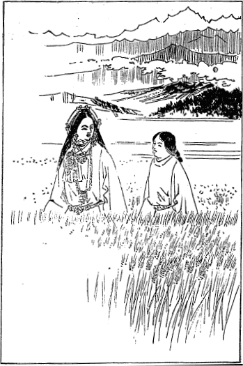
ヒマラヤ山村の夏景
空気は稀薄ですけれども非常に
清浄な空気で、その上にごく成分に富んで居る
麦焦粉を日に一度ずつどっさり喰って居ります。もっとも動物性の食物はただバタばかりでありますが、
蕎麦のできる時分にはその新芽を
酸乳でまぶしたちょうど
白和えのようなご馳走もありますので
身体は
至極健全でありました。陽暦の八月頃は
蕎麦の花盛りで非常に
綺麗です。私はその時分に
仏間に閉じ籠って夕景までお経を読んで少し疲れて来たかと思いますと
颯と吹き来る風の香が非常に
馥ばしい。何か知らんと思って窓を開けて見ますと雪山から吹き
下す風が静かに蕎麦の花の上に波を打ちつつ渡って来る風でございました。その時に一首浮びました。
あやしさにかほる風上眺むれば
花の波立つ雪の山里
このツァーラン村の人口は二百五十名、その内で坊さんが百十四、五名、なおその
内尼が五十名で男の坊さんは六十余名、いずれも旧教派の僧侶ですから酒を飲み肉を喰うことは平気です。尼はもちろん男を持つことは許さないのでありますけれども五十名の尼の中で男を持たぬのは一人だけ、また女に触れない坊さんは二人すなわちその寺のラマとその弟子一人だけでその外は皆汚れて居るという話です。中には尼と坊さんと一緒になって居るのもあれば普通の娘と坊さんと一緒になって居るのもあり、また尼と在家の男と一緒になって居るのもあります。子が生れなければ別段人が何とも言わぬ。ところが子ができるといよいよ戒法に背いたということになるのです。実におかしい話ですけれどもその戒律に背いた時分にはシャクパすなわち
懺悔をしなければならぬ。
その懺悔の仕方がまた面白い。どっさりと酒を買うて百十四、五名のラマ及び尼さんを招き、銘々本堂の仏の前にずらりと
並んで椀を持って居ります側からどしどし
注いで
廻るのです。始めの間はいずれも
殊勝らしくお経を読んで居りますがそろそろ酔の廻るに従ってお経の声は変じて
管を捲く声となり、管を捲く声が変じて
汚穢を談ずる声となる。その見苦しい事といったら何と評してよいか。始めて見た時分にはほとんど評のして見ようがなかったです。これが
釈尊の弟子の集会日だとはどうしても思えなかった。で、その当事者たる尼と相手の男は別に寺に対して五円ずつの罰金を納めなければならぬ。しかしその当事者がもし男僧でありますとその男僧と相手の女は十円ずつの罰金を納めなければならぬ。これは同胞の間で犯したような者だから罰金が高いとのことです。
その
外に酒と肉とバタ茶との供養費が少くも二十五円や三十円は
掛ります。少し派手にやると四、五十円も掛るそうですがなるたけ派手に酒を飲ますのを名誉とし、またよく懺悔が届いたと言って誉めるです。
如来は酒はよくないものであると言って在家の人にさえ戒めた位でありますのにいかにツァーランの出家にもせよ、戒律を無にして仏の前で酒を飲み汚穢を談ずるというのは
怪しからぬ振舞でございます。私はこの有様を見た時ひそかに東方に向いわが堂々たる日本の仏教社会の僧侶諸君の多くも、あるいはこのツァーラン村の僧侶に対しどれだけの差をもって居らるるだろうかと思って実に悲しみました。
明治三十三年の一月一日には例の通り祝意を表さなければなりませぬゆえ、この前からこの土地で得られるだけのご馳走を買い集めて
揚物その他村人には珍しいような物を沢山
拵えました。で例のごとく元日に天皇皇后両陛下、皇太子殿下の万歳を祝しましたが、山海三千里を隔てたるこのヒマラヤ山中において明治天皇陛下の万々歳を祝することの出来るのは実に愉快であると思うて覚えず嬉し涙に
咽びました。その式終りて後村人らにそのご馳走を施したところが、彼らはこの村
創まって以来かかる珍味を得た事はないといって
悦んで居りました。私がこの村に参りましてから満八ヵ月になりますが、村人らは全くこの村に私が生れた人かのように親しみ
敬うようになったです。それは折々私の
遣った薬がよく
利いた事もあるからですが、その薬は私の友達の広岡修造という医師から貰った薬も大分あります。また私がカルカッタで貰った薬も沢山あったので充分人に
施すことが出来ました。
それやこれやで私を余程必要な人間と認めてこの村に永住されん事を希望する者が沢山ありまして、折々は博士にその事を伝えるようになったです。博士は学問のある人に似合わず俗情に通じてそういう俗情にはごく一致し易い性質を備えて居ります。ところで博士はいろいろ方法を考えて見たけれどもどうも安全に止めて置くには妻を持たせるより外に策がないと考えたものか、しきりに自分の居る家の主人の妹を妻にしろと言わぬばかりに策を
運らしたです。しかし私は
釈尊の教えを堅く信じこれを守らなければ自分の生命は無きものであるとまで確信して居りますから一向取り合いませぬ。ほとんど手の着けようがないものですから、博士は種々の方法を運らして私に酒をすすめあるいは汁の中へ肉の刻んだ奴などを入れて誘惑致しましたけれども、私は幸いにして仏陀の光明裡に接取せられて居りましたからそういう誘惑の中から
免れる事が出来ました。もし私が雪山の
垢塗れの土人と一つになるようなことがあったならば、私は今時分はかのヒマラヤの
谷間の
黒坊主となって居ったかも知れぬ。
かような訳で村人とは大分親しくなりましたから道のない山の間からチベットに進入する筋道はどこであるかということを探る
便宜を得ました。けれども特別にそれだけの事を尋ねますと疑われる
虞があります。既に私については不思議な薬を持って居るとかあるいは色が白いとか、綺麗好きであるから西洋人ではないか知らんといって眼を着けて居る人もある際に、チベットへ入る道を尋ねますとどんな危険が起るかも知れませんから、うまく彼らの疑いを起さないように尋ねなければならぬ。そこで私は村民らが出て来ますと殊更に言葉を和げて「一体チベットあたりへ
商いに行く時分には税金を取られたりあるいは政府の官吏に
賄賂を遣わねばならぬような道筋を行くのは不得策である。そういう場合には本当の道筋から行かずに外の道筋から行かぬばなるまい」と暗に問い掛けると「従来はそんな事もなかったがしばしば外国人が入り込もうとするのでこの頃は間道にも五名ずつの兵士を置いてある。だからそういう道を通って行くと兵士がぐずぐずいって荷物に対しやはり幾分か金を取ったり何かするから、大切な品物、
珊瑚珠とかあるいは西洋小間物を持って西北原に出掛ける時分には外の所から行かなければいけません」という。
「どんな道から行くのか。」「道はありませんけれどもこの西の山の隅へ指して行ってあの雪の山を
踰えて
降って行くと川がある。その川はどういう所を渡ってどういう山の方向に進んで行けば人なき所を渡って行かれる」という詳しい話をしてくれるです。私は一々
其言を書き取って置きまして外の人が来た時分にその話を材料にして尋ねると、そこにはこういう危い所があるとかあるいは注意しないと
雪豹のために喰い殺されてしまうというような話を聞いた。
そういう具合にして間道の研究をしたがさてこの村から
突如飛び出して道のない山の方へ行くことの出来ない事情があります。長くツァーランに住んで居ったものですから私が出掛けるについてはどの方面に出掛けるかということを非常に懸念するです。もし道のない所を
無闇に進んで行こうものならそれがために村人の疑いを深くして
追窮されるかも知れない。よってひとまず跡戻りをしてそれから村人らに気付かれぬように、またチベット兵士の守って居らぬ所へ出て行く道はあるまいかとだんだん
穿鑿したところが、ドーラギリー雪峰の山北を横ぎってトルボへ出てから道のない山の間を三日路ばかり
辿って行くと、遊牧民の来て居る西北原に出られる道筋があるという。
仮し遊牧民が来て居らいでも
其原から一日か一日半行くとゲロン・リンボチェの居る所に出られるというような話を聞きました。
これ最も私の
執るべき
道筋でありますからその方向に進むことに
極めました。で、その時季を待つことにしましたがどうしても陽暦の六月にならなければ雪の山を
踰ゆることが出来ないという。六、七、八月と三月は通り得られるそうですがもう九月に入って一度雪が降れば
塞がってしまうそうです。もちろんこの三月の間とても雪の降らぬということはないけれども、まず夏の間は雪が降っても途中で
凍えて死ぬほどの事もなくどうにか助かる範囲において進んで行くことが出来るという。
それらの研究までして時の到るを待って居りますとこのツァーラン村から南の方向に当りツクジェ村の近所にマルバという所があります。その村長のアダム・ナリンという人がツァーラン及び西北原の方へ商いに来るのみならず、西北原には四、五十頭のヤクを放ってありますので、その
下僕がテントを張ってその番をしているという。で時々見廻りに出て行きますそうで、この人達は公然道のある所を通って行くのですから行こうと思えばいつでも行かれるのです。この度も見廻りのために出て来てちょうど私の世話になって居る宅に泊りました。その時に私がその人の
請に応じて仏教の説明をして
遣ったものですから非常に悦んで私に言いますには「私がチベットから求めて来た一切蔵経が仏堂に供えてあるがまだ一度も誰にも読んで
貰った事がない。是非あなたが私の宅へ来て供養のために読んでくれまいか」というたっての
請求ですから、それではいずれ近い
中にあなたの方へ出掛けることにしようという約束を致しました。
私がマルバ村長のアダム・ナリンと約束をしたのは三十二年の十月でございます。しかしその後その人はインドの方へ商業のために旅行したといいますからその
儘に過ぎ去りました。話は戻りますが私がネパールから買うて来た白馬の処分に困って居ったです。ところがこのツァーランの寺の住職でニェンダクという方が私の馬を見て非常に欲しがりました。この人は種々の事情に通じて大酒を飲む人でありますから、こういう人に
要らざる口を利かすのもどうかと思って馬をやってしまいました。で、お経か何か礼にくれるものがあるならば貰いたいといいますと、喜んで
（〔紺紙金泥の〕）経文四
帙とサッキャア・パンジットの拵えたチベット語の仏教辞典（筆記物）とその外二、三の書物をくれました。およそこれらの書物を金に見積りますと
六百ルピー位のものはありましょう。これは私がツァーランに居る間常に愛読して居った書物です。ちょうど三十三年の三月十日チベット
暦の二月十一日にツァーランを出立することになりました。
私がツァーランに居る間に全く酒を
罷めさした者が十五人、それからこの村では煙草の葉を噛んでその辛い汁を吸い込むことが盛んに行われて居りますが、私が宗教上から説き付けて罷めさした者が三十人ばかりありました。それはいずれも私が病気を診察をして薬を与えた人々で、その薬代の代りに禁酒禁煙の約束を貰うたのでございます。一年も居りましたのでこの村で私を
知合にならぬ者は一人もございませぬ。懇意な人たちが餞別であるといって
蕎麦、パン、
マル、
乾酪、
乾桃、中にはカタと銀貨をくれた者も四、五名ございました。その日の午後三時頃二疋の馬に経文その他の荷物を負わせ、自分は一疋の馬に乗り一人の村人に案内されて村
端れまで参りますと、私に
按手礼を受けんがために礼拝して列んで居る人が百名余りありました。一々に按手礼をし話をして居ります中にもはや午後五時頃、よほど遅くなりましたけれども次の村まで来て宿ります
心算で出立しました。で先に通って来ました村の入口の門の所に立ち再び跡を顧み「わがツァーラン村に居る間親切にしてくれた人々がますます仏道に
帰依して永く幸福を受けらるるように」という願いを掛けて別れました。
で、もと来た路を後戻りしてその夜はキミイに一宿し、その翌日カリガンガーの河岸のツクという村に宿りました。そこにもまたお説教を聞きたいという者がありますから説教いたし、その翌朝出立しようとすると按手礼を
請いに来た者が二十名ばかりありました。私の師匠の博士は私の出立の少し以前から他の方へ行って居られましたが、ちょうどこのツクという村でお逢い申して
懇ろに別れを告げ、この日の夕暮マルバ山村のアダム・ナリンの宅に着きました。アダム・ナリン氏は未だ帰って居りませぬがその父のソェナム・ノルブーという方が私を綺麗な仏堂に導いてくれました。この仏堂にはチベット語の
一切蔵経及び他の論部等も安置してあり立派な仏陀も沢山あります。室は二室あって前室の窓から望むと桃園があります。
この辺の土地はツァーランよりはよほど低いので物が二季に取れます。まず麦を取ってそれから
蕎麦を取るのです。その畑の四、五丁向うにカリガンガーがあってその向うに低い松が
生えて居ります。その松山の上には例のごとく
雪山が
聳えて居る。実に
清浄の
境涯でございます。家の
主は長く止まって一切蔵経を読んで貰いたいという希望でありますけれども、私はただ雪峰を越す時季を待つために逗留して居るのでございます。で私は毎日チベット語の経文を読みあるいは抜書きなど致して居りましたが、チベット語の経典でも論部でも自由に解釈の出来るようになりましたのは、全く
慧幢博士が毎日六時間ずつほとんど一年間教授してくれたからであると大いに感謝致しました。
半月ばかり経ちますと私がツァーランに居りました時分にこのツクジェ村の者でインド、カルカッタへ行商に行く者がございました。その行商に託してサラット師に手紙を出しました。その手紙の内には日本へ送る手紙もあります。その男はサラット師の所へ手紙を持って行きまして
返書を持って来てくれました。その返書の中にマハーボーデ・ソサイティの雑誌が一冊ありました。その雑誌の中を見ると大谷派の
能海寛氏がチベットの国境まで行かれたが、その関所の官吏のために追い返されたという記事が、日本のある新聞から翻訳されて載って居ります。それは能海氏同行の寺本氏がその事実を通信したということになって居りました。そこでサラット先生がこの記事の通りであるから容易にチベットには入れない。もちろんあなたはいろいろ成功する方法を考えて居なさるでしょうが無理な事をして命を落さないようにという注意書がありました。
ところが私がその手紙を頼んだ行商がいろいろの事を流言したです。あの人は英国政府の高等官吏に違いない。というものは私が手紙を
託かって行ったサラット・チャンドラ・ダースという人は英国政府の官吏であって月に三百六十ルピーずつ
貰って居る。どうもベンゴール人でそれだけの月給を貰って居る人は沢山はない。そういう人の所へ手紙を
遣るというのはどうも怪しい。あのラマはシナ人だと言って居るけれども実は英国人でなかなか沢山な金を英国政府から貰うてこの辺の地理を取調べ、それからチベットに入り込んで地理を穿鑿する
心算で来たらしい。論より証拠サラット先生が英語の書物を送って来たところを見ると英語が解っているに違いない。どうもあのラマをこの村に置いては為にならぬという流言。それもただ流言だけならよいが
仕舞には私の世話になっている主人に対しても告げたです。
その時分にはアダム・ナリン氏も帰って来ましてその事を聞いたものですから顔色を変えて私に向い「あなたの事をこうこういって悪く言う人がありますがもしもその言う通りであると、私共はどんな刑罰を受けるかも知れないが
如何でございましょう」という。アダム・ナリンという人は至って正直な人ですから私は「あなたがもし私に対して三ヵ年間私の言うた事は誰にも告げないという誓いを立てるならば私はあなたに秘密を明かしましょう。もし誓いを立てなければその流言は流言として打ち棄てて置くより外はない。いずれネパール政府から何とか言うて来るでしょうからそれまで待ちましょう」というと「よろしい、誓いを立てましょう。就いてはあのお経を私の頭に載せて下さい」といいますからその通りにしてそこで誓いを立てさせました。ところでその
主は始終インド辺へ行商に来て英語の綴り位解る人でございますから、私は日本の外務省から貰うて参りました旅行券を示しました。
私はその旅行券を示し「これは日本という国の政府から受けて来た旅行券である。日本という国は仏教国であって私はその仏教僧侶の一人である。で仏教を修行するためにこの山国に来りこれよりまたチベット国に行くので、決して人の疑いを受けるような秘密の用向を帯びて居るものでない。だからこの点において政府に訴える
心算なら訴えるがよい。事に依っては私に繩を掛けて差し出してもよい。しかし仏法は尊いからラマもまた充分保護しなければならぬという考えならば、私はこれからチベットへ向けて出立するから誰にも言わずに居るがよい」と説き聞かせますと、元来仏教を深く信じて居るのみならず私に対しても
深心に信用を置いて居るものですから――殊に旅行券を持って居るものですから――その言うところを全く信任して「決して他言は致しませんからそういう訳ならチベットにお越しになるがよろしい。しかし道筋はどうなさるか。」「これから私はトルボ、セーに参詣し、それから少しく後戻りをしてドーラギリーの谷間に在る仙人の国すなわち
桃源郷という所はどんな所であるか、そこまで案内者を連れて行って見ようと思う。それから
直にチベットに行くか行かぬかまだ分らない。とにかくあなたがたの迷惑にならぬようにこの六、七月頃になれば早速ここを出立して出掛けましょう」といったところが主人は大いに安心した様子でありました。
しかしその家に居るのも気の毒でありますから、この村の寺に移って読経することになりました。そこで着類あるいは食物、飲物等すべてを
調えましたが、ちょうど九貫匁ばかりの荷物が出来ました。その荷物を案内者に持たし自分は経文だけ背負って六月十二日にこのマルバ山村を出立しました。これからどういう風にしてチベットに入るかという困難のところに臨むのですが、これから二十日間程は案内者を連れて山の中を廻ることになって居ります。その後三日ほどの間は道のない所を出て行くのですが、もし一直線に進んで行けば十日位で西北原に出られますが、私はその辺の名跡を巡ったりあるいは山の様子を見て途中間違いないようにして向うへ出ようという考えがありますから二十三日間の予定をしたのでございます。で、いよいよ準備を調えて出立する時分に一首の歌が出来ました。
空の屋根、土をしとねの草枕
雲と水との旅をするなり
しかしこれからの旅はこの歌のようではなかったです。実はこの歌はこれまでの旅に適合して居るので、これから後の旅は「空の屋根雪をしとねの岩枕」で雪と岩との間を旅するような訳でございました。
この村を
出立して西北に向いてカリガンガー川に添うて一里ばかり登って参りますと雨が降り出しましたから小さな家のある所に宿りました。その翌日午前七時に出立して巌石
突兀たる狭い道を登って行くこと二里ばかりにして細い桃林のある谷へ出ました。
其谷で少し食物をたべそれから細い急な坂を二里半ばかり進みましたが、非常に急な坂で殊に空気が稀薄ですから、身体は疲れる呼吸は切れるという訳で進み兼ねましたから午後三時ダンカル村に着いて泊りました。ところが稀薄なる空気に打たれたのかあるいは他の原因か非常に疲れましたから翌一日逗留して十五日に出立しました。
今度は北に向い急な坂を登ること二里にして巌山の氷の谷を渡りなおそれよりごく急な坂を北に登ること一里半にしてやや広き急坂に出てだんだん登って行きますと、大分疲れましたので午前十一時ちょっと休息しましたがその辺には水がない。雪の少しく積ってある岩の間に小さな草の
生えて居る所があります。
餓えたる時は食を
択ばずではない。渇したる時は水を択ばずというような訳でその草を引き抜いて根を
噛んでみたところがごく
酸っぱいです。それからその根を噛みつつ
蕎麦の焼パンを喰いました。
暫く休んで北に登ること一里にして西に折れ一方に
千仞の谷間を望みつつ崖道の恐ろしい
牟伽羅坂という坂を登って参りましたが、その坂路の
嶮峻なることはなんとも形容のしようがございません。で、その坂の左側には高雪峰が剣を列べたごとくに
聳えて居るです。それからその山の
頂きから直下してほとんど道のない岩と岩との間を猿が樹渡りするような具合に
辿って行くのですが、さすがに山に慣れて居る荷持は重い荷を背負いながらヒョイヒョイとうまく飛んで行くばかりでなく、私にはよう飛ばぬものですからこうしてああしてといろいろ指図をしてくれた。また私自分の持って居る杖を岩と岩との間に突き立て転び落ちようとするのを防いだり、まるで杖をば船頭が
櫂を使うような具合に自在に使う、あるいはヒョイと雪車に載せられて千仞の谷底に落ちようとする場合にはうまく岩の端へ杖を突き立てて防ぐ。その杖の先には
鎗のような
鉄が付いて居るです。もっとも
沢山雪の広く積ってある所はそれほど巌も厳しくもなし、まあ平坦になって居りますから登り易いがそうでない所は実に危ない。
そういう危ない間をだんだん登って行く間に雪に映ずる日光の反射のために眼を打たれて、その痛さが甚しいのみならずいかにも空気の稀薄なるために呼吸をすることが困難で、
胸膈を圧迫されて居るのかあるいは
胸膈が突き出るのか訳が分らぬが今思い出してもぞっとする位苦しかった。案内者兼荷持は「こういう急な坂ですからあまり急いで行ってもいけませんが、しかし長くここに止まって居てこの辺の悪い空気を沢山吸うと死んでしまいます」という。けだし荷持は空気の稀薄なることを知らんのです。勇を
鼓して上に登れば登るほど空気が稀薄になりますので
動悸は
劇しく打ち出し呼吸は迫って気管が変な気合になり、その上頭脳の半面は発火したかのごとく感じて
どうにもして見ようがない。もちろんその辺には水は一滴もなし雪を
噛んでは口を
潤しつつ進みましたけれども、折々
昏倒しかかるその上に持病のリューマチのために急に足部が痛み出してほとんど進行することが出来なくなって来ました。
いかにも苦しくて堪らんのでその雪の上へ寝てしまいたくなった事が度々ありましたけれども、ここに寝て居って時間を費やすと死んでしまいますという注意がありますので案内者に引っ張られて進んで行きました。この際は実に危険であると思いましたがこの危険はなおドーラギリーの一番高い所を
踰ゆる時に比すればまだ優しかったです。ほとんど自分は生命あることを覚えて居らぬ位、ある山腹のごときは
雪崩のために積雪と岩とを持ち去られて砂ばかり残って居る所があります。そういう坂道を進んで行く時分には砂車のために谷間に落ちそうになりますと、例の杖をもってこれを防ぎつつ向うへ渡って行きましたが、随分熟練してうまく杖が使えるようになりました。けれどもまだ案内者のごとくにはいかぬ。案内者は猿よりもうまく通って行くです。
そういう危ない所を通り抜けてまた平坦な岩の上に出ましたがもうそこで倒れたくなってどうしても仕方がない。ジーッと立ち止まって居りますともう少し下へ行けば水があるからと言ってくれたけれども
何分にも進むことが出来ない。そこで案内者は水を汲んで持って来てくれた。その水を飲んで少し宝丹を含んで居りますと大分に気持が快くなって来た。自分の手の痛い所へはカンプラチンキを塗り少し休息して居りましたが、日は既に暮れて星の光と雪の光が闇を照して居るだけであります。ようやく気分も爽快になりましたからその星と雪の光を頼りに甚だ急なる岩の坂を西北に降ること一里半、ほとんど坂落しのような山です。やがてサンダーという十
軒ほどある山村に着きました。
この村は一年の間に三ヵ月間他の村と交通するだけで後の九ヵ月間は雪のために閉じられて交通することが出来ないのです。その交通する道筋は私が通って来た道筋であります。こんな驚くばかりの危ない所によくまあ人が住んで居ったものと思われるようです。その辺の雪山及び岩山の景色といったら物凄いようでまたその奇観も一々いうに暇ないが、私の身体はそれほど疲労して居るにかかわらず精神は豪壮を感ずるの情緒勃発し来りて真に愉快に堪えない。それがために自身の
身体の苦しみも忘れてしまう位です。けれどもその翌日はとても進めないから逗留いたし、その翌日もまた逗留して十八日に出立しました。
この村では妙な物を喰って居ります。ターウと言って
蕎麦のような物でありますけれども蕎麦よりはまだ悪い。この村ではこういう物しか出来ぬ。それも年に
一遍です。それからだんだん西北に進んで一里余も行きますとまた砂車の坂へ出ました。この坂では去年も巡礼がこの砂車に乗せられて死んだというような気味の悪い話のあります所で、その坂を過ぎるとまた
達磨の座禅して居るような雪峰がありますが、その雪峰の前を通りだんだん進んで谷間に降りますとその谷間の岩の間にもまた
檜の古木が生えて居りますがその
檜は実に美しいです。そういう谷間の大いなる流れに沿うて西南方に登って行くこと一里ばかりにして午前十一時にターシータン（栄光溪）という美しい
溪に着きました。
それから数々の山及び猛獣の棲んで居る山際を通り、あるいは一歩を誤れば数千仞下の谷間の鬼となってしまわにゃあならぬ所を沢山進んで行きましたけれども、案内者がありますから道に踏み迷うような気遣いはございません。何しろ道かと言えば道のようなものですけれども、どうにか足や手で駈け登ったり駈け降ったりする所があるという
峻しい坂路を通って行くのですから随分難儀です。谷間にはやはり樹もあれば美しい草花が咲いて居ります。その中には薬草も沢山あり、また
麝鹿も沢山棲んで居ります。その夜は雪山の間の巌の中に泊り、その翌十九日もまた同じような道を西北に進みターシンラという大きな雪山の坂に懸りましたが何分にも寒くて
堪えられない。
寒いばかりではない、もう苦しくて荷を背負って居る
荷持に縋らなくてはならぬけれども景色もまた
佳いです。よく見る勇気もなかったが起伏
蜿
、
突兀として
四端に聳えて居る群雪峰は互いに相映じて宇宙の真美を現わし、その東南に泰然として安坐せるごとく聳えて居る高雪峰はこれぞドーラギリーであります。あたかも
毘廬沙那大仏の虚空に
蟠って居るがごとき雪峰にてその四方に聳えて居る群峰は、菩薩のごとき姿を現わして居ります。苦しいながらも思わず荘厳雄大なる絶景に
見惚れて居りますと「久しくここに
止まって居ると死んでしまいますから早く
降りましょう」と言って手を引いてくれますので、この日は四里ばかり山を降ってやはり巌の間に泊りましたがなかなか寒いです。その時苦しい中にも一首浮びました。
ヒマラヤの雪の岩間に宿りてはやまとに上る月をしぞ思ふ
六月二十日また出立して例のごとく恐ろしい山を登って行きました。この辺には灰色の
斑紋あるナーという鹿が居りまして、多い所には二百疋も三百疋も谷間に群がって居るです。だんだん山の中へ進んで行きますと山ヤクも居りますし、また雪豹とか
山犬というような猛獣も遙かの山に見えて居ります。そういう奴が折々出て来るそうで、ある場所には喰われたのか死んだのか動物の骨の散らばって居る所もあり、また雪の中に凍え死んだ死骸の骨の散らばって居る所もありますが、頭の皿と足の骨は一向ないです。これはチベットの仏具に使うために倒れた人があると通る人が皆持って行ってしまうのでただ残って居るのは
肋の骨位です。そういう物を見る度に無常の観念に打たれるです。私もまた
何処の山の端でこういう風になって果てるか知らんと思うと、
幾許か先に死んだ人の事を想い出して後を弔う心も起りました。
その山を
踰えて
（〔二十三日〕）トルボという村に着きました。そこはツァルカともいう。この一村はチベットの古代の教えなるポン教を信じて居ります。
同じような山の中を毎日進んで行きましたがその間には景色のよい所も沢山あり、また仏のような姿をして居る天然の岩もありその他珍しい植物や動物も沢山見ました。
（〔ちょうどわが国の妙義山を広大にしたような山で、石門も天空駆けるように見える岩も見えます。〕）けれどもこれは略します。とにかく険しい山路をある時は一日ある時は二日位逗留して英気を養いつつ七月一日まで進みました。そこで私に付いて来た案内者を
還すことにしました。その間に大分食物を喰いましたから荷物は一貫五百
匁ばかり減って八貫匁位になりました。それを今度は自分で背負って行かねばならぬ。で、いよいよ
を
踰えねばならぬ。私は荷持に対し「私はこれからドーラギリーの山中にある桃源郷に行かなければならぬ。だからお前は帰ってくれろ」と言ったところが荷持は一緒に帰ることと思いの外、ドーラギリーへ行くと聞いてびっくり
愕き「それはいけません。あんな所へは仏様か菩薩でなければ行けやしません。あなたもそういうお方か知りません。あすこへは昔から一人か二人しか行った者がないという話です。恐ろしい所だそうですから行けば必ず死んでしまいます。そうでなくとも桃源郷の外を守って居る猛獣のために喰われてしまいますからお
止しなさい」と言って親切に止めてくれましたけれども、私の目的はそこにあるのだからとていろいろと言い聞かしますと彼は涙を流しながら立ち去りました。
私はその
朔日の朝彼の去るのを影の見えなくなるまで見届けまして、それから八貫匁ばかりの荷物を背負い桃源郷には進まずにかねて聞いてあります北方の山の間へ進んで参りました。これからは実に言語に尽くし難いほど困難を極めたけれども、山はそれほど厳しくなかったです。
突兀たる岩などは誠に少なかったから割合に安楽でありましたけれども、何分雪の中ばかり一人で進んで行くのですから
堪らない。夜は雪の中へ寝た事もありまた幸いに岩陰でもありますとそこへ泊り込むことにして、ただ磁石を頼りにかねて聞いてある山の形を見てはだんだん北へ北へと進んで行きましたが、聞いた通り少しも違わず荷持と別れてから三日路を経てドーラギリーの北方の雪峰を踏破し、いよいよチベットとネパールの国境たる高き雪山の頂上に到達することが出来ました。
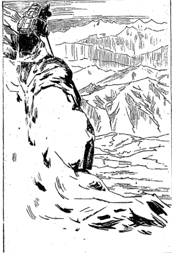
国境雪峰よりチベット内地を望む
ここはすなわちネパールの
国端れでチベットの国の始まりという絶頂です。そこで一番にやらにゃあならぬ事は自分の背負って居る荷物を
卸す事ですが、それはちょっとどこへでも卸すという訳にはいかぬ。その辺は一面の積雪で埋って居りますから……で都合のよい石のあるような所を見付けてそこの雪を払ってまずそこに荷物を卸し、ヤレヤレとそこでまず一息して南の方を眺めますとドーラギリーの高雪峰が雲際高く虚空に聳えて居る。高山雪路の長旅苦しい中にも遙かに北を眺めて見ると、チベット高原の山々が波を打ったごとくに見えて居るです。その間には
蜿たる川が幾筋か流れて居りましてそのよって遠く来る所を知らずまたその去る所をも見ることが出来ない。雲の裡に隠れて居るという有様でござりますが、実にその景色を見た時には何となく愉快なる感に打たれてまずその南方に対しては、これより遙か以南なる
釈迦牟尼如来が
成仏なされたブダガヤの霊場を追想し、
曩日彼の霊場において誓願を立てたがこの国境までにはまずどうにか無事に着いたかと思うと、かつて郷関を辞する時分には今より三ヵ年の後にはチベットの国境にはいることが出来るであろう、何かの準備を整えなくては到底望みを達することは覚束ないからまず三ヵ年と見積らねばなるまいという考えをして参りましたが、ちょうどその
予考通りに三ヵ年の日子を費やした。
明治三十年六月二十六日に
出立して明治三十三年七月四日にこの国境に着いたのであるから自分の予期の違わざりし嬉しさに堪えられなかったです。とにかく
身体が非常に疲れて居るからまずその辺で一休みとこう思うたけれども雪ばかりでどうもよい所がない。……そこでまあ袋の中から
麦焦しの粉を出して椀の中に取り入れそれに雪と幾分かのバタを加えてうまい具合に
捏ねるです。それからまた一方の椀には
唐辛子と塩とを入れて置きまして、そうして一方の麦焦しを雪とバタとでよく捏ねてその唐辛子の粉と塩とを付けて喰うのです。そのうまさ加減というものは実にどうも
もこれに及ぶまいかと思うほど
旨かったです。でまあ椀に二杯位喰いますとそれでその日の食事はすむのです。もちろんこれまでとてもいつも
一食しかやりません。朝はちょっと樹の実の乾したものすなわち乾桃とかあるいは乾葡萄とかいう物を喰って居ったです。で昼だけ
麦焦粉のねったものを椀に二杯ずつ喰べる切り。その椀も随分大きな椀ですからなかなか腹が太くなるのです。ちょっと注意までに申して置きますがその麦焦粉もかの地のはなかなか力が強い。どうも寒国に出来た麦は余程成分に富んで居ると思われるです。でまあそれをゆっくりと喰いまして四面皆雪という雪中に坐り込んで四方を眺めて居ると何となく愉快というだけで、誰もが居らずただジーッと独りで考え込んで居るだけでこれからどちらへ出掛けたらよいのかさっぱり見当が付かない。
どっちみち北の方に降って行くのであるが、さていずれの方面に降ったならば今志すところのマナサルワ湖の方面に近いか知らんという考えから、まず山中ただ一つの頼みとする磁石の指し示すところに従ってまず西北の方に向って雪の中を降ろうと決定した。まあこの方向が一番よさそうなという道筋を山の絶頂からよく望んで置きまして、それから荷物をやっとこさと背負って息杖を頼りにその雪の中を進んで行ったです。ところがこれまでは
日表の山の方であるから雪も格別沢山はない。五、六寸積って居る所もあればまた積って居らぬ所もある。あるいは諸所に
雪融の痕があって石がゴロゴロ転がって居るというような所も随分あったです。
ところが〔今おりる道は〕
日裏の方ですからどうもその雪の深いことといったらなんとも堪えられない。それはどれだけ深いか分らぬけれどもグッと踏んで見ると一尺四、五寸は確かに足がはいってしまう。稀には七、八寸位ですむこともあるけれどもどうもその足を抜くのが困難です。それゆえに杖をもってよい
塩梅に
舵を取ってズブリズブリ渡って行くようにしてだんだん降って行きましたが、雪の積ってある下に石の高低があるものですから、折にはその石と石との間に足を突っ込んで足を抜くに非常に困難したこともあるです。まあそんな具合でぼつぼつと下の方に降って行きました。昇りと違って八貫匁の荷物も下りはごく平気なものですがどうも雪のために足を抜くのが困難でこれには閉口したです。ちょうど一里ばかり降って行きますともうはや雪もなくなった。さあそうすると
石磧です。ようやく
でゴロゴロした石が一面に散らばって居てどこに足を突っ込んでよいのか解らない。チベット
履を
穿いて居ますけれどもその履が石磧のために破れてしまいました。もちろんそこへ来るまでには大分長らくの時日も経って居るものですからその履の破れるのも当り前の事で、履は破れる、足に出来て居る豆が破れて血が出る、そうしてそのゴロゴロした石にその血が染って行くという訳で、もうその痛さといったら実に堪えられないです。それもただ円い石だけならよいが角の立った石が折々あってそれを
踏まなければ行かれない所がある。その上に重い荷物を背負って居るものですからどうも
身体を軽く扱うことが出来ない。ヒョッとその
角石の上に乗るとその荷の重みと共に足を踏み付けるものですから、要らない所に足を
辷らしてまた
怪我をすることもある。履が破れた上にも破れてしまったです。
で二里ばかり行きますと雪融の水の集った周囲の二里位の池と周囲一里位の池がある。その池がちゃんと並んで居る。その一つの池は長方形で一つのは円い池、その池の
端に出ますと誠に美しい鴨が居る。茶色や赤色や白い所に黒点の混って居る大小幾羽の鴨がその池の辺に遊んで居るです。誠にその水の
清冽なることは透き通るばかり、
雪融の水の集まった清浄な池といってよい。そういう所に来るとまあその景色のよい所に荷を卸して一つよく眺めたら旅の疲れも充分休まるだろうと考えて、池の端にドッカリ坐り込んでゆっくり眺めて居るその時の愉快さはまたとない。足は痛み腰は棒のようになって折曲げするのも実に辛いが、しかしその景色を見るとその苦しみは忘れてしまって遂には我を忘れて居るというような有様、しかしこういう所に昔から誰が来たことがあるか知らん、ないか知らんなどいう考えが起って来るです。独り旅ですからな。とにかく私がここへ行き当ったんだから一つ名を
命けて遣ろうと思って長方形の池には
それからまた円い池には私が別名の「
仁広池」という名を
命けたです。そんな池を発見したところで手柄でも何でもありませんけれども、まあそこは昔から人の来た跡もないような所ですからチベットに入った記念のためにそういう名を命けたのです。しかしそんな事をしてそこに居ても仕方がない、まだ大分の時間もあるものですからもう少し西北の方に向って進んで行こうという考えで、だんだんとその池の縁を伝ってまた下へ指して降ったです。下の方へ降って行きますとちょうど
瓢の形をして居る池がある。それはその形によって「
瓢池」と名を命けて置いた。その池の
周囲は恐らく半里位しかなかったろうと思います。それからだんだん下に降って行くと、ずっと向うに雪山がある。その山の西北の方を見るとテントが二つ三つ見えて居る。奇態だどうも、この辺にも人が住んで居るのか知らん、遊牧民でも来て居るのか知らんというような考えが起りました。
それはともかく私はそこで一つの心配が起りました。ははああの家のある方向を指して行くとあるいは彼は道のない所から出て来た、怪しい奴だと疑われるような事があるとわがチベット進入の目的を達することが出来ぬかも知れない、こりゃ外の道を取るがよかろうといって外の方向を見ますと実に深山
重畳として外に取るべき途はどこにも見当たらぬ。その雪の
山辺のテントのある横に大変低い
山間があってその山が西北の方に向って走って居る。まず間道でもあるであろうかというような所がちょっと見えて居る、どうもその方向へ指して行きたいような心持もした。ともかくどうにか
極りを付けなければならんと言ってその荷物を卸してそれからまあそこへゆっくり坐り込んだ、というのは私は例の理論上で極められぬ事があるといつも
断事観三昧に入って事をきめるのであります。その例の手段を執ろうと思ってそこへ
廓然無聖と坐り込んだ訳です。そもそもこの
ということはおよそ事柄が道理で極められる事はその道理によりて善悪の判断を定めると言うことはむつかしくない。ところが理論上において少しもきめられぬ事で将来に対してはどういう事が起って来るか、未定の問題については何か一つきめて置かなければならぬ事がある。それは私は仏陀の坐禅を示された法則に従ってまず無我の観に入るのであります。その無我の観中発見された観念のある点に傾くのをもって執るべき方法をいずれにか決定するのでござります。そこで仮にこれを断事観三昧という名をつけたのでござります。すなわちその方法によって向う所を決しようと思ってそこに坐り込んで
坐禅を組んで我を忘れて居ったのですが、その時はどの位多くの時間を費やしたかも自分ながら分らなかったのでござります。
断事観三昧の示すところによると深山の方へ行くのはよろしくない。テントのある方に行くのが安全であるという決定でありますからそこでまた荷物を肩に背負うてぼつぼつと出掛けました。普通の考えからいうとどういう困難な道でもまず
人家のある方には行かないのがよいのですけれども、しかし人家がないからといって全く道のない所に出てしまってはまた困難な場合に陥るから、とにかくこれまで通り断事観三昧の指示するところに従ってやはり進行したのであります。それでちょうど夕暮にそのテントの少し前に着きますと大変大きな恐ろしい犬が五、六疋もやって来てワイワイ
吠え立てた。
平生肉と糞ばかり喰って居る犬ですからその顔付は甚だ猛悪で毛は非常に長い。大きさは今の西洋の大きな犬よりまだ大きい。そういう奴が五、六疋も私の周囲を取り
捲いて吠え立てるのですから随分気味が悪い。けれどもかねて教えられて居ることがあります。それはなんでも犬に遇った時分には決して犬を打つな、静かに杖の先で犬の鼻先を
扱ろうて居ると犬は決して
噛り付かぬということを教えられて居るからその通りやったです。ところが果たして喰い付かないで、テントの中の人に声を掛けると老婆が一人出て来られて私の姿を見て、ああこりゃ巡礼の方だわいとこういいました。
別に疑って居るような様子も見えない。で私はラサの方から参ったものでこれからカン・リンボチェへ参詣する者ですが、
戸外へ寝るのも非常に寒くて困難ですからどうか一夜の
宿りを願いたいと言ったところが、案外快くそんならばまずこちらにお入りなさい、大層大きな荷物で重うござりましょうというような話でじきに
家裡に通してくれたです。一体この辺はあなた方のお越しになる所ではないがどうしてこんな所にお越しになったかという。いや実はゲロン・リンボチェ（
僧侶）の
許へ尋ねて参ろうと思って図らず道を失ってこういう所に参りました、ああそうですかというような話で早速沸してある茶などをくれました。その茶も日本のような茶でなくってバタも入って居れば塩も入って居る、ちょうど実のない吸物のようなものです。よい具合に味が付いて居てなかなかうまい。と言ったところで我々日本人には始めの中は鼻先へ持って来られるような物じゃない。嫌な匂いがして飲むことが出来ないけれども
久しく辛抱して用いて居ると
遂には好い味になって来るです。
まずその茶を飲み終ると
麦焦しの粉をくれるという
始末。ところでいつも私は午後にはそういう物を用いない。すなわち
非時食戒を持って居るのでこれは戴きませんと断ると、そのお婆さんは大層感心して、こういう旅の中で
非時食戒を守る人はごく少ない。そりゃあなた結構な事だ。しかしこれからそのゲロン・リンボチェの所にお越しになるには、ちょうど一日ほどの道がござります。あのお方はチャンタン（チベットの
西方の高原を指していう）の名高いラマ（上人）でござります――チャンタンという
一体の意味は北の原ということになって居るがチベットでは西の原を指してチャンタンといって居るです――で、チャンタン中のラマであるあのお方に逢えば誠に尊い利益が得られます。
折角都からお越しになったのだからお逢いなさい。その
中に私の息子も帰って来る筈ですが川の水が非常に冷めたくてなかなか
徒渉するのは困難ですから、明日息子と一緒にヤク（牛の類）に乗ってお越しになったらよかろう。息子にもこのゲロン・リンボチェへ
参詣するように言い聞かすでござりましょうからとこういうような話。
こりゃ大変によい都合を得た。ところが私の差し当っての困難がある。
履が破れてしまって一歩も進むことも出来ない。で、お婆さんに尋ねたです。この履をどうにか直す工夫はあるまいか。「そりゃ困ったものだがここでじきに直す訳にはいかない。どうせ二日位逗留しなくちゃあその履を直すことは出来ない」という。それはどういう訳かと尋ねますとそれはヤクの堅い皮を水に
浸して充分柔かにしないと縫うことが出来ないので二日位かかるという。
ところで婆さんのいうには私の所では明日一日この山に居って明後日は他の方へ指して移るのでござりますから、明日ゲロン・リンボチェの方にお越しになってあすこへ二、三日逗留してその
履をよく
為さるがよかろう。明日は息子のあまった履を穿いてあちらにお着きになったら息子に還して下さればそれでよい、と万事好都合。その晩はそこへ泊ることになりました。ちょうど寝ようとして居る所へ息子が帰って来ての話に、かのゲロン・リンボチェというお方は
神通力を得て居って、人の心に思うて居る事またこれはどういう人であるということを
見分けもし、大騒動の起ることを前知して人に知らしてくれる事も
沢山あった。この間も既にこれこれであったと色々面白い話をしましたがそれは余談ですから申しません。もしもその息子のいうごとく真に神通力を得て居るものであれば大いに喜ばしいと思ったです。けれどもチベットには随分山師坊主が沢山ある。そういう
窟屋に住んで居りながら金を沢山拵えることを考えて、己れは隠者という名義をもって財産を集めるところの手段にして居る
似非坊主が沢山あるものですから、もしやそういう奴ではあるまいかと案じられてその夜は
瞬りとも出来なかった程想像に駆られたです。
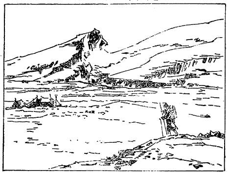
雪中遊牧民の布屋へ向う
夜が明けるとその息子はいそいそしくお婆さんの言付けを聞いてヤクを連れて来た。そのヤクという獣はまず日本の牡牛よりよほど大きいものです。また小さな奴は牝牛位のものもある。少し背が低くて毛深いことは実に非常なものです。またその尾と言ったらばちょうど画に描いたような、獅子の尾のように太くて房の形になって後に下って居るです。
法華経にいわゆる「
 牛
牛のその尾を愛するがごとし」とあるその
牛である。これをチベットでヤクと言って居りますがこの獣は西洋にもないものですから翻訳が出来ぬものと見えてやはり英語でも「ヤク」といって居る。その
牝をリーといいます。牛のような顔をして居ますけれども
眼相の鋭くして恐ろしい事は驚くばかりで時々ギロリと
睨むですな。
始めの中は随分今にもその鋭い角で打ちはすまいかと恐れる位な勢のある獣に見えるですけれども、その性質は案外おとなしくしごく人の役に立つもので、日本の牛よりもなお温柔であるというてもよい位。そのヤクがいかにチベット国を利益して居るかはいずれまた後に折があったらお話致しますが、一疋のヤクに、私の泊った宅の息子はゲロン・リンボチェに上げるところのチーズやバタなどを
載け、二疋は自分らの乗って行くものに供するつもりで都合三疋のヤクを連れ出した。婆さんは誠に親切な人でお茶を拵えてくれたり
麦焦しの粉やらチーズやらバタなどをくれたです。これがチャンタンにおいては非常に優遇だそうです。それから
つもりでだんだん西北の方に向って半里ばかり昇ってまた半里ばかり降り、それから今度東方に見える山に進みかけたです。ところが大変な
霰が降り出してどうも進んで往くことが出来ない。しようがないからヤクの背から荷物を
卸してその荷を霰のために
濡れないように囲って路端に二時間ばかり休息して居ながら、自分の目的地に達し得らるる道筋などを尋ねて大いに利益したです。その中に霰も
歇んだからまたそのヤクに乗って出掛けると半町ばかりの川がある。幸いにヤクに乗って居るから苦もなく渡った。そんな川を二つ渡ってちょうど二里半ほど山を登りますと白い岩窟が見えたです。それで私は白巌窟と名づけた。婆さんの息子がその白巌窟を指してあすこがゲロン・リンボチェの居られる所であると示したです。
それからだんだん上へ昇って行きますとその白い
窟の前にまた一つ窟がある。これは白くない、少し灰色がかった黒みの岩であってその
窟中にはゲロン・リンボチェのお弟子が住んで居る、
其窟へまず案内してくれたです。で、その息子が窟の主に対して、途中で霰に降られたから時間までに参ることが出来ませなんだが、もうゲロン・リンボチェはお逢い下さらんでしょうかというのが午後の三時頃。すると、いやもう今日はとても駄目だ明日でないと。その息子のいうにはそれでは
此品はパーサンと言う者が上げたいと言って
遣したからどうかゲロン・リンボチェにお上げ下さい。私は明日移転するのですから明日まで待って居る訳には行かないと言ってその男は荷物を置いて帰っちまった。そこで私はその窟の中へ泊り込んだ。
というのはやはりラマで
其窟に坐禅をして居る
んです。坐禅して居ると言えば何にもしないようで居るようですが、そうでもない。随分日用品や仏具なども沢山ある。そこには炊事場も
寝所も皆調えてある。その前にお婆さんから貰って来たヤクの乾皮を水に浸した。
此窟で二、三日逗留さして貰っていろいろ話を聞きますと「これからカン・リンボチェの方に出掛けるのはよほど困難だ。まず二、三日行けば人の居る所に着いてそれからまた二、三日間は人の居る所を通るが、そこから向うは十五、六日無人の地を行かにゃあならんがあなた道を知って居るか。」「いや少しも道を知らない。」「それじゃあとても行かれまい。それにまああなたの着物はよし大分荷物も持って居るようだから泥棒が付きますぞ。」「泥棒が付いたら遣りさえすればいいが何しろ道が分らんでは閉口する。誰か案内者を見付けることが出来まいか」といって尋ねました。
すると「どうしてこの辺は最も人の少ない所ですからなかなか案内などする者はありませぬ。あなたはまああの有難やのお婆さんに出遇うたから大変な厚遇を受けてここに来られたが、これから一人で人の居る所に行ったところが誰だって留めてくれやしません。殊に人の居らぬ所が多いから到底無事に行かれはしない。この通り
御覧なさい。これから幾里の間どこにもテントの張ってある所は見えない位だから、とても案内者を見付けて上げることは出来ません」とこういう訳。それから私があなたはカン・リンボチェの方に行かれたことがあるかと言ったら、二、三度参詣したという。これから道があるかというといや道のある方に行こうと思うと
廻り路になる、道のない所から行ける場所がある、どうしても行きたいというなら私がその道を説明して上げるからお聞きなさい。この山を下へ降ると大きな川がある。その川を渡ってこういう風に行くんだと
綿密に教えてくれた。まずこれで二、三日行くだけの道順が分ったという訳。
それからその晩は窟の中で坐禅をやりました。その坊さんもやはり坐禅をやると言う始末。十二時頃にころりと寝ました。よい気持で眼が覚めて見ますともうその坊さんは起きてからに表の方で火を拵えて茶などを沸して居るです。私も早速起き上って当り前なら口を
漱ぐところでありますが、口も漱がず眼をこすりながらお経を読むという訳です。それがまあチベット人の
風俗、臭い口でお経を読むのは誠に辛いけれど、そうやらんではチベットのラサから来たということを信用されない。じきに疑われるです。朝起きて口を漱ぐという習慣はあちらには決してないのですから。その儘お経を読んで居ると茶をくれた。例のバタと塩と混った茶、それを漱がぬ口で飲むのです。その時分には慣れて居るから飲み辛いということはないけれど、随分嫌なもので人の見て居ない所なら口を洗って飲むがどうもそうは行かない。よほど我慢をして飲むという訳です。
それから例のごとくやはり
麦焦しの団子に唐辛子と塩とを付けて喰ったです。それが一番うまい御馳走。で十一時過まで話をして居りました。それは専門の話ですから無論お話する必要もない。そこで十二時前ちょうど逢う時が来たというので参詣に来て居る二十名位の人と一緒にその
巌窟へ指して逢いに行ったです。その巌窟の主人はその辺ではなかなか尊いラマであってどこへ行っても「ゲロン・ロブサン・ゴンボ・ラ・キャブス・チオー」という。意味は
比丘賢解主に
帰依し奉ると言って、その辺の土民は毎晩
寝際にその巌窟の方向に向って三遍ずつ唱えて三遍ずつ
礼拝するです。それを見てもその人がどれだけか高徳であるかはよく分る。で数十里隔った所からわざわざ参詣に来て種々な
上物をするという次第です。参詣人はいつもその巌窟のある山の麓へ泊って待って居って、その着いた翌日の十一時過ぎから一時までの間に逢うのです。その余は誰が行っても逢わしてくれない。巌窟の外に垣のようなものがあって時間外は締め切ってあるからどうしても逢われない。ところが時間になるとその方が巌窟のちょっと外に出られて皆の参詣人に逢われるです。
上り物はお金を持って来る者もあるが物品を上げる者が多い。めいめい持って来た物を上げてそれからお説教を聞いて
摩尼を授かるんです。というのはまずそのラマが
 摩尼吠噛吽
摩尼吠噛吽という六字を
唱えますと参拝者がそれについで和するのです。それからまた種々の教えを受ける前に逢うとすぐに三礼を致します。それから例の通り腰を
屈め舌を出して敬意を表しつつ机の置いてある前まで進んでラマの前に頭を差し付けます。するとラマは右の手を伸ばして頭
をさすってくれるです。少し
いい人なれば両手でやってくれる。また自分と同等の人あるいは自分より
豪い人であれば自分の額をこちらの頭に突き付けてくれる。これを名づけてチベット語で
と言って居る、すなわち
按手礼であります。その按手礼に四通りある。一は
額頭礼、額を
頭に付ける礼、一は
按双手礼、それから
按隻手礼と、
按法器礼の四つでありますが、三つは前に言った通りで大抵分って居りましょうが第四番目のは普通に用いない。首府のラサでは法王がこの礼を用いるです。第二の府シカチェではパンチェン・リンボチェがこの礼を用いて居ります。それはそういう尊いラマが俗人の頭に手を着けるということが出来ないから、そこで
采配のような仏器を
拵えてその
器で頭をさすってやるのが按法器礼であります。ちょっと見ると頭をぶんなぐって居るように見えて居るです。これはごく高等のラマが俗人に対する応答の礼です。そこで私が
その尊者の風采を見ますとほとんど七十位の老僧で白髪にしてその言語の鋭いこと実に驚くばかりです。そうしてその容貌の
魁偉にしていかにも筋骨の
逞しきところは、ただその
禅定だけやって坐って居るような人と見えないほどの骨格の逞しい人で、一見してぞっとするような
凄みのある人でありますけれど、その行なうところを見るとそういう凄い殺伐の方でなくって、人に対して慈悲善根を施し人を愛するということにおいては実に驚くべき観念を持って居られた。その点においては私は一見して充分敬服した訳でありました。こういうような恐ろしい〔尊い〕方もまた半野蛮のチベットに住んで居るものか知らんと思って実は呆れ返った。こういう人ならば彼のお婆さんの息子が言った通り私の内心をよく見通すことが出来る人であるかも知れないから、これは大いに喜ばしいという考えで話をするにもなお一層の悦びと勇気とをもってすることが出来たのであります。それですから後に話をする時には自然私の様子にもその様が現われたろうと思う。
そこでまず私も腰を屈め舌を出して進んで頭を突き出しますと按双手礼をやってくれた。自分とほぼ同じ程に見た位の礼をしてくれた。それからじっと私を眺めて「あなたはこういう所に来る必要はないが何のためにここにお越しになったか」とこう尋ねられたです。「いや実は仏法修行のために諸所の名蹟を廻って
苦行して居るものですが、あなたのお徳の尊いということを承りましたからどうかその仏法上の事をお尋ねしたいと思って参りました。」そうするとゲロン・リンボチェのいわれますには「ふうむ、どういうことを尋ねたいのか。」「私はあなたが
衆生を
済度なさるのはどういう方法を用いてなされてござるか、どうかその方法の微妙なる点をお伺い申したい。」すると「そういうことはお前の皆知って居る事なんで、一切の仏法はお前にあるので、私に尋ねる必要はない」とこういったです。
そこでちょっと日本の禅宗坊さんが問答をやるようになりましたから、私は
直に禅宗坊主の
真面目でその問答に応じました。「
固より一切の仏教はいかなる者にも存在して居るに相違ないけれども、昔
善財童子が五十三人の
善知識を天下に尋ね廻ったということがある。その経歴の苦しかった事は実に我々仏教僧侶の手本として学ぶべきところである。私は及ばずながら善財童子の跡に
倣うてこの修行に出掛けてかくもお尋ね致した訳でござる」とこういうと「私の
衆生済度の
方便は唯一である。その唯一の方法は
大解脱経というお経に依ってやって居るのである。」その大解脱経というものは私はまだ読んで見たことがなかったから「それではそのお経を私に見せて戴くことが出来まいか」というた。
するとその白巌窟の禅定者は
直に立上って自分の巌窟内に入ってそのお経文一冊を持ち出して来てくれた。それからその経を
請け取りまして私はまた直に「この経の真面目は何であるか」と言って尋ねると「それは三乗は即ち一乗であるということを説明した経文である」と答えた。それからその経文を持ち帰って読んで見たところが法華経に似たところのお経でありました。あるいは法華経の一部を抜き取ってこういうお経の名を付けたものではないかと思われたようなところもあった。それから例の
履を
繕わなければならんからその日もその儘泊り込みになってその翌日もまた泊り込み、でそのまた翌日尊者の所に逢いに行ってその大解脱経を読んだ所見についていろいろ問答をした。つまりシナ及び日本風の仏法とチベット風の仏法とが大分喧嘩をした訳であったけれども大いにこの尊者も悦んだ訳でありました。
七月七日になお一度
禅定者に会ってそれから
履の修理をやりましたが、もちろん一度もやったことのない仕事だからその困難は非常なものでややもすると針を手に突き立てて飛び上るような痛い目を見る。そこで窟の主人が見兼ねてこういう風にするのだというて教えながら大方自分でやってくれました。これでまず履の用意も出来ましたから七月八日の朝十貫匁ばかりの荷物を背負って立つことになった。実はその時尊者の言うには是非
麦焦しの粉を少し余計持って行かないとこれから先買うところがあるまい。よしテントがあったところで誰もくれはしないから重くもこれを持って行くがよい。それでないと途中で死んでしまうような事が起るであろうという注意から、麦焦しの粉とバタと乾葡萄を多分にくれたです。そういう物が殖えたものですからちょうど十貫匁余の荷物になったです。その時の重いことと言ったら
堪らなかった。けれども仕方がない。
漸うの事でそれを背負い出立したです。なかなか重い荷物を背負って坂を下るというのは足の疲れるもので、
漸く教えられた川端に着いた時はちょうど十一時頃でござりましたから、そこで
麦粉を喰いましてそれから自分の
穿いて居る履を脱ぎ股引も取ってしまいずっと裾を上まで捲り上げて、かねて川の深さは尋ねて置きましたから浅そうな所へ飛び込んだ。
ところがびっくりするほど冷たい水で自分の身が切られたかと思うほどの感じに打たれたから一遍に後戻りして飛び上った。こう冷たくては堪らない。一町半もあるこの冷たい川を
渡ってはあるいは川の中で死んでしまうかも知れないと暫く考えて居りましたが、もうその冷たさがずっと
身体に廻って参りまして少し震え気味になった。こりゃいけない、どうしようか知らんと考えて居るとふと思い付いた。かねて堺の岡村の
丁子油を持って居る。これを塗るべしと思って早速丁子油の瓶を出して身体にも足にも塗りつけたです。幸い日が照って居るし油をぬり付けて摩擦したので身体も大分温かになったです。
それからぼつぼつ渡るべしと言ってまた飛び込んだ。それでも実に冷たい。始めは冷たくって痛かったがしまいには覚えがなくなって足が川底に着いて居るのか居らんのか少しも解らない。ただ杖が二本あるものですからまあその二つの杖を頼りにして漸く足を支えて向うの岸まで転げそうになって上ったです。川はかなりの急流で深さは腰位まであったです。向う岸に上った時は実に
到彼岸というような快楽を得ました。それからまあ冷たくなって居る所を摩擦するのが役ですから日に乾して摩擦しようと思ったがなかなか動くことも出来ない。もちろん荷物はそこに卸してその辺に転がって見たりいろいろな事をして暫くそこに居たです。大分よく成りましたしほとんど午後の二時頃にもなったものですから、少し進んで行ったらよかろうという考えを起して、だんだんと教えられた山の間を向うに進んで行くという考えで立ちました。ところがどうも足がだるくなって抜けるかと思うような具合でなかなか歩けない。
余り寒気に打たれたものですから、この筋肉の働きが鈍くなったということは察せられますけれども、いかにも向うに進めない。それで
暫く休息してぼつぼつと杖を頼りに登って行ったです。するとどうも足はだるくて堪らない。荷物も以前より重くなって居るから実に苦しい。二、三町行くとその荷物を石のある所にうまく卸して休まなくちゃあ歩けない。寒いのに
腋の下から汗が出るという始末、実に苦しい。これでは歩けないならこの杖を二本合わしてそうして荷物を二つに分けて、ちょうど日本で
天秤棒で
荷うような工夫で荷って行った方がよかろうと思って、荷物を二つに分けて荷った。それから一、二町行くと元来が丸い杖を二つ合わして荷って居るのですから、どうもその肩の痛いことといったら何とも仕様がない。で重いことは前と同じように重い、別に軽くなったとは思われない。そこでどうにもこうにもして見ようがない。背中に背負って見たりまた天秤棒で
担いで見たり、幾度かあれがよかろうこれがよかろうと考えて、
漸く七、八町山を登ってそれから向うの方へ指して降ることになりました。
降りは案外楽なもので困難の中にも半里ばかりの道を降って川の
端に着いたです。その時はちょうど四時頃でもう一歩も動けない。ここで泊るより仕方がない。それにまた早くその辺へ野宿と極め込んでまずヤクの
糞とキャンという野馬の糞を拾う必要がある。それを
薪にするのでござります。
荷物をある場所へ置きまして例のチベット服の大きな裾を上の方に袋形に端折ってその袋の中へ糞を拾い溜めて来たです。で中位の石を三つ集めて五徳の足のような具合に置いてそこで集めて来た糞を塀のような具合に組み立てるのです。それから糞の最も乾いた奴を手で練って粉にして真ん中にふっさりと置くのです。そのふっさりとしたる間へ
火口に似た木の葉で拵えたものを入れてそれから日本の昔の流儀で
燧火石を打って火を移すのです。そうして皮の
鞴でぼつぼつと風を送るんです。その送り加減がなかなかむつかしい。私はその
火を拵えるに大変長く掛るところがある。もちろんよく乾いて居るヤクの糞を入れると火が早く出来るがどうかして湿って居ると半日掛っても出来ない。それで非常に困難する事があった。ヤクですが、それは北海道で馬を飼って居るように
飼放しにしてあるのですから糞を拾うには不自由はない。漸く火が出来てぐるりに
壁形に積んであるヤクの糞に火が付きましてから水汲みに出掛けるので、チベットの
鍋をもって水汲みに川へ出掛けたです。で、その鍋に水を汲んで来てそれから湯を沸かす。湯は高い山の上で空気の圧力が弱いから奇態にじきに沸く。
沸騰すると茶を手で
揉み砕いて入れます。それから茶を煮る時には天然のソーダを入れます（チベット山中にあるソーダ）。どうしても二時間位煮ないと茶がよい色になって来ないです。よく煮ないとチベット人の言いますには毒だと申しますからよく煮るのです。そうしてよく出来上りました茶〔湯〕の中にバタと塩とを入れてそれから実は摩擦すればよいのですが、そんな器械はございませんからその儘指で掻き廻してそれを飲むのです。茶はシナの番茶の固まったのです。それを鍋に一杯の水を入れて煮るです。鍋はおよそ一升入り、その代り昼後は飯は一切喰わない。
さて自分が集め得られただけのヤクの糞および野馬の糞を、一旦湯を沸して真赤な火になって居る上へ一面に
継ぎ
足してそうしてその上へ砂を
打掛けて埋め火にしてしまうです。もちろん夜通しカンカン火を焚いて居ると大変都合のよい事がある。というのは猛獣などがその火を見てやって来ないです。雪の中に居る豹で実に恐ろしい奴がある。これは英語にスノー・レオパルド、学名をフェリス・ユニガというのでチベット人はただシクと呼んでおる。また雪の中に居る猫で大変に人に害をするものもある。そういう獣は夜中火を焚いて居るとやって来ない。それですから本当の望みの方からいうと火を夜通し焚いて居ることは必要であるけれども、それを焚いて置くと或は山の上かどこからか知らんが泥棒などがその火を認めまして、おおあすこに火があるからきっと人が居るに違いない、行ったらよい仕事が出来るだろうと言って、その火を的にどこかの山の端から尋ねて来られる
憂があるのです。
随分猛獣の迫害も恐ろしいものでございますけれども、それよりもなお人間の迫害の方がよけいに怖い。何故ならば猛獣はこっちでよく寝て居る時分にはどうかすると寝息を聞いても喰わずに行ってしまうこともあるです。それですから泥棒の迫害を防ぐために砂を
蔽被ぶせておく。翌日の朝までその火がよく保てるようにして置くです。するとまず非常の寒さのために凍えて死ぬの寝られんのというようなこともない。朝は氷が張って居る位ですから温度は氷点以下です。そこでまずその晩寝ましたがちょうどそれが陰暦の六月十三日の晩ですから
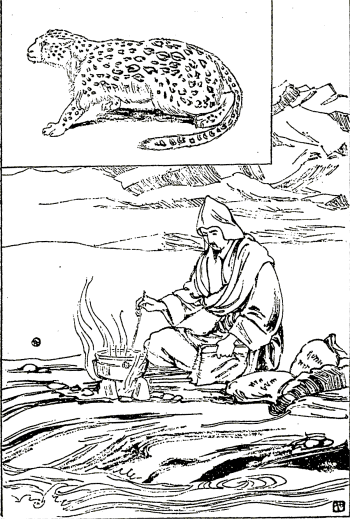
広原中の露宿及び雪豹
と寒天に輝いて自分の野宿して居る前を流れて居る川に
映っているです。語るに友なし折々聞ゆるは猛獣の声、ただその前面を流るる水の音と明月とが私の旅中の困難を慰めるという次第。それがまた非常に佳い景色のように感ぜらるるものですからもちろん山の形などは
巌窟や
禿山ばかりで面白くも何ともないが、ただ月の水に映って居るだけが非常に愉快に感ぜられたのでそぞろに故郷の事なども忍ばれて一つの腰折が出来たです。
チベットの高峰ヶ原に出る月は
天津御国の君とこそ思へ
まあ寝ましょうとしますけれども、なかなか火があっても背中が寒かったり腰の辺が
凍えて来たりするからやはり睡られない。それで
をするのです。で、うつうつして居ります中にいつしか夜が明けました。その火を掻き捜すとまだ火がある。それから水汲みに出掛けた。朝は川の端には氷が張って居るからその氷を叩き割って水を汲んで来てそうして残って居る火に暖めて居る中に自分の
荷拵えに掛る。まず自分の着物の着方のぞんざいになって居るのを直します。その中に
微温湯になったところで直にその湯を飲んでまた乾葡萄の貰ったのを喰いまして、腹が出来たから荷物を背負ってだんだん出掛けて行く。さてその川に沿うて登って行けと言われたのか降って行けと言われたのか不意と忘れました。確かに登って行けと言われたように思いますけれども登って行く方の側へ行くと実に山が高いのです。ああいう高い所には大きな荷物を背負ってはとても登れない。よしんばこの山を登って良い道があったにしたところがこの荷物を持って行っては死んでしまう。だからまあこの川に沿うて降って行こうと思いましてだんだん川に沿うて降って行きました。すると路が間違ったのか、どうも教えてくれたところの石に大きな仏さんが彫り付けてあるという場所へちっとも出ない。どれだけ行っても出ない。出ないはずです。登って行くのを降ったから。
ずっと川に沿うて二里ばかり降ると大分広い原に出たです。向うを見ると原の広さが七、八里もあり横幅が三、四里もある位。いやまあこういう所に出れば安心。山の中でこの荷物を背負って居ちゃあとても堪らない。そこで磁石を振り廻して見ると西北に向うには自分の降った川を向うに渡らなくちゃあ行かれない。ところがその川を渡るのは嫌です。冷たいのが一番苦しいから……どうしようか知らんと暫くそこに立って居ると向うからお坊さんが渡って来た。それもやはり私のような巡礼者であって、カムという国からわざわざゲロン・リンボチェに会いに来たんだそうです。そこで私はこの人に道を尋ぬるために言いました。「これから私はカン・リンボチェの方に行かなくちゃあならないがそのカン・リンボチェに行くにはどう行ったらよかろうか。」「それは向うに行かねばならん。これから二日ほど行くと人の居る所に出られるからそこで尋ねるがよかろう。これをずっと行くとここから見えて居らないがその原の中にテントがある。そこへ指して行けば必ず泊る所が得られるから」という始末……
そこで私はその坊さんに休息して下さい。少しお頼み申したい事があるからと言って、それからその坊さんに乾桃を多分に
遣りました。実は自分でも重くって
堪らんですから
沢山遣ったんです。そうしたところがその坊さんびっくりして悦んだ。で、あなたにこんなに貰う訳がないお気の毒だと言う。いや実はあなたに頼みたいことがある。この荷物を向うの岸まで渡してくれまいか。そうでないと私は大分病気でヒョロヒョロしてどうもこの荷物を持って渡った分にゃあこの急流に押し流されてしまうかも知れないからどうか渡してくれまいかと言って頼みますと、いやそれは何でもない事だ、渡して上げよう。ちょっと見たばかりでも誠に強そうな坊さん。そのはずです。カムの
の人間ですから非常に強い者でなくちゃあ巡礼が出来ないです。そこで何でもなく私の荷物を持ちまして平気で私を引っ張って向う岸に渡してくれたです。その時にはまあありがたい事でした……それからその坊さんはもと来た道に引き返し私はその荷物を背負ってだんだんテントのある方へ指して進んで行ったです。なかなかテントは見えない。ところでその時は疲労がだんだん
烈しくなって仕方がなくなって来たです。心臓病を起したのかどうしたのか知らんが息は非常に
急しくなって来まして少し
吐気が催しました。こりゃいけないと思ってそこへ荷物を卸しますと背中の方にも荷物を背負ったためにすりむくれが出来ましてその痛いことと言ったら堪らないです。その痛みよりも今
吐き出しそうになって居る奴が非常に苦しくって何か胸に詰って来たようになったからじきに
宝丹を取り出して飲みました。
するとドッと一つ血を吐きました。こりゃ大方空気の稀薄の所ばかり長く通ったものですから、こういうことになったのか知らんと思いました。私は元来心臓病はないはずだがなぜこういう風に心臓の加減が悪くなったか知らんと疑いましたが、これもやはり空気の稀薄の加減であろうと察したです。もっともチベット人は空気の稀薄に堪え得られるだけの非常に強壮な肺を持って居るです。私どもの肺はチベット人の肺に比すると大方半分しかなかろうと思います。ですから肺が自然と圧迫されるのか突き出すのか分りませんが、非常に
胸膈が苦しくなって来ましてどうもして見ようがなくなった。で、まあ大病というような形状を現わして来た。こりゃうかうか進んで行くとつまりテントの在る所に達し得ずして死んでしまう。だからまあ今夜ここでお泊りだ。そうしてまあ明日になってぼつぼつ出掛けて行こうというような具合でその晩また野宿と極め込んだです。その距離は二里ほど下って一里ほど来たからその日は三里しか歩いて居らない。どうもその病気の様子といい一方ならぬ有様になった。こりゃ困ったと思いました。実にヤクの糞を拾いに行く勇気もなくなっちまいましてまあそこに倒れ込んで前後知らずに寝てしまったです。それは大方昨夜寒くて寝られないところから前後を忘れて寝たような事であろうと思います。
すると何か顔をば
酷く打つものがあるのでふと眼を覚すと大変大きな
霰が降ってるのです。顔といわず
身体といわずすべてバラバラバラと打ち付けて居るんです。それからまず起き上ろうと思って坐りかけますとどうも身体の各部がリュウマチを
煩って居るようにメリメリと痛いのでそのまま静かに坐り込んでジッとまあ考えて居りました。大分に心臓の鼓動、肺の圧迫等が静かになって来たものでございますからこの様子なら死ぬほどの気遣いはあるまい。だが背中の破れた所が痛い。足の
疵が痛い。それに何しろ重い荷物を背負ったのですから筋肉等がすべて痛んで居ると見えてどこもかも痛いです。
これでは今日はとても進むことが出来ないから今晩はもう一晩ここへお泊りという考えを極めましたけれど、差し当り困った事には例のヤクの糞を捜しに歩くことが出来ないのです。身体が痛くて堪らんものですから……。たとえそれを捜しに歩くことが出来てももはや霰が降って地の温度で霰が融けて行くという有様でヤクの糞も馬の糞も皆
湿って居りますから到底行って見たところが駄目なんです。それから例のツクツク（裏は赤き羊毛、表は厚き帆木綿のごとき切布にて製したる
四布蒲団のごときものにて目方はおよそ三貫目位のもの）という羊毛の大きな夜着のような物を頭から
被って下には羊の毛皮の敷物を敷きましてそれでそこへ坐禅と極め込んだです。別に飲物を拵えようとしたところが薪がないから仕方がない。
そのままジーッと考えて居りますとおいおい夜分にもなって参りますし、ちょうどそれが陰暦六月十四日の晩でございますから月も明らかに漠々たる原野を
皎々と照して居るというような訳で、自分の身体に苦しい所がなかったならばこの境涯は実に愉快極まる高原の夜景であろうと思われたです。何故ならばその漠々たる原野の遙か向うの月下に
朧に雪の山が光って居る様はあたかも雪の中に神仙が現われて居るような有様でありますから、そういう有様をよく観じて見ると決して苦しいどころの騒ぎでなく非常な快楽を感じたことであろうと思うけれども、何分にも身体の各部が非常に苦しいものですからまあ坐禅をして居るもののただその苦しみに心を奪われて、始めは何ということなしに暫く過しましたが、どうもただ苦しい方にばかり観念を奪われてはますます苦しくなる訳でありますから、まあここで本当に苦しいところを押し強く坐禅の妙境に入ってみようというような具合で自分の心を転じたです。するとその辺の場所の愉快なことも分りまして実に面白く感ずるところから五条の橋の上で坐禅された大燈国師の歌を思い出しました。その歌は
坐禅せば四条五条の橋の上
ゆききの人を深山木にして
というのでありますが私はその歌に応えるつもりで一つの腰折が出来ました。
坐禅せば高野ヶ原の草の上
ゆききの人も深山木もなし
こういうのでございますが大方大燈様が居られたならばあるいは破顔微笑されたかも知れません。あるいは
叱咤の声と共に三十棒を喰わされたかも知れませんなど思うて、だんだんそういう観念が深くなるにつれて自分の苦しみも忘れ我と我が身を忘れたような始末になって来たところから不意とまた歌が出たという訳です。その時には愉快でした。その歌は
苦しめる我もなき身のゆきの原
法の光に解くる心は
というような訳でその観念の為にその夜は
寒気の苦しみにも打たれず、また夜の明けぬにも頓着せずについ暁まで坐禅をそのままに押し通したというようなことでございました。そうして翌日になって乾葡萄を喰ってそれからその荷物を集めに掛ると身体の各部の苦痛は大分薄らぎました。疲労はかなりして居りますけれどもこの様子なれば進むに気遣いはないというのでその荷物をよく整理して、それからだんだん北東の方に向って出掛けました。そこで身体も大分によろしいものですから余程道が進みまして朝の中に四里ばかり進行しました。ついその辺に小流れの水があったから例のごとく
焼麦粉を喰ってその小川を渡ると小さな岡がある。その岡を
踰えて向うを見ると遙かの彼方に白いテントと黒いテントが見えて居ります。
黒いテントはあるべきはずだが白い布のテントのあろうはずはないがどうしたのか知らん。一体このテントはヤクの毛で拵えたもので、土人がヤクの毛を口でくわえて手で延ばしつつ
撚りつつ糸にしてそれを織るのでございます。で、その布を縫い合せて家の形のようなものを拵える。ですから大抵は黒いのです。もっともヤクには白い毛のものもありますけれど稀ですから白い毛を集めてテントを拵えるということは全く向うではないのです。だから私の不審に思ったのは無理のない事でどうもそれは分らなかったけれども、とにかく五、六個のテントが見えて居りますからその方に向って行けば今晩はそこへ一宿出来る、事によれば二、三日この病気を療養して静かに休まなくってはなるまいという考えも起った。それから勇を
鼓してテントのある所へ指して二里ばかり進んで行った。そこへ着く半里ほど手前から余程苦しくなったけれども、何分向うに目的がちゃんと
極って居るからそこまでどうやら着きますと、最初にお迎いに預ったのは恐ろしい例のチベット北原の猛犬五、六疋ワイワイと
吠え立ててお迎い下すった。そこで例の杖の先で犬の鼻をあしらって居りますと、その一番大きなテントの中からチベットには稀なる美人が顔を出して私の様子を暫く見て居りました。
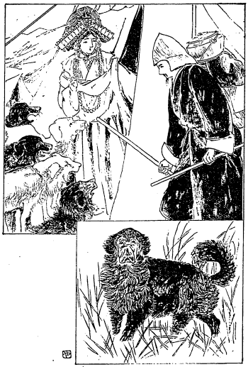
高原稀有の美女と猛犬
それからその美人が門口の紐で
括ってあるテントの
扉を明けてこっちへ進んで来てその犬を一声叱り付けますと、今まで非常に吠えて居ったところの犬はその主人に叱られたので
俄かにポカンと
耄たような顔をして皆チリヂリに逃げてしまったです。その様が実に滑稽で面白かったです。で私は笑いながらその婦人にどうか今夜一晩泊めて貰えまいかと言って頼みますと、一応私のラマに尋ねてお答えを致しますと言うて家に入りそれからまた出て来て、よろしゅうございますからお入りなさいといいますのでまあその中に入ったです。どうもそういう所に入ったのは極楽世界の
蓮華の中に入ったよりか
身体の上からいうと結構に感じました。そこでその夜は何かの話をしてそのまま過しましたが翌日も身体の療養ということでやはり泊って居りました。その翌日もまた泊って居ったです。その間にいろいろ道筋の話を聞いて見ますとこれから半日ばかり馬で行くとキャンチュ（野馬川）という川がある。その川はなかなか大きな川でブラマプトラに注いで居る。その川を渡るには渡る場所があってうっかり渡ると水に持って行かれてしまうという話である。ですからその川を渡る便宜も得なくちゃあならん。
ところでもはや二日ばかり療養して大分に身体も
快くなりましたから、翌日は発足したいと思ったけれども
明後日すなわち十三日でないとその便宜を得られないということであったからそこで休んで居ることになったです。ところがちょうど十二日の晩ですがそこに居る四、五
軒の遊牧民が私に請うて
説教をしてくれということがあった。それは私の居る主人のラマが私をもって誠に尊いラマであるからこのラマの教えを聞くことが必要であるというて外の人に説き勧めたものですから、沢山なといったところで三十名ばかりの人ですがその人たちに対してその夜は説教しました。それでだんだんチベットに在るところの仏教の有難い例話などを引いて説教の後に三帰五戒を授けて遣りましたところがめいめい布施物を上げました。その中に娘が一人居りましたが自分の首に掛けて居る
です。
珊瑚珠が七つばかりでその間に宝石が一つ入って居るその
飾りを上げたです。それは一旦取りましたが必要のない物ですから折角下すった
志は確かに受けたがこれは入用がないからお還し申すと言って還して遣りました。ところでそれじゃあ何にも上げる物がないと言って大いに困ってその内の宝石一つだけくれました。その宝石だけはどうしても貰わないという訳にはいかない。外の人も是非請け取って遣ってくれと勧めますからその宝石だけ貰いまして今もなお記念として私の手にその宝石が残って居る。その翌日白いテントの主人が出て来て乾葡萄、乾桃、
乾棗などを持って来まして私の泊って居る主のラマと
交易しました。それは何と交易するかと言うと羊の毛あるいはバタと交易するんです。その交易に来た人はラタークの
商人です。おかしなチベット語を使って話も
漸く分る位に出来るんです。
その男は余程仏教信者と見えて私にいろいろ仏教の事を尋ねますから相当の返辞をして仏教の有りがたい事を説いてやりました。ところが大いに悦んでどうか私のテントの中に一遍来て下さい、お茶を上げて供養したいと思うから今日昼の御膳はここで上らずに私の所に来てくれというからそこへ参りました。すると乾葡萄など大分高価な物を沢山くれてなおその日そこで出来得るだけのご馳走をしてくれた。で、その主人が明日いよいよその川を渡って商いの都合で向うの岸に居る遊牧民の所へ共に行くということになったです。
しかるにその私の泊って居ったラマというのは実に新教派のラマで妻帯もしなければ酒も飲まないという側の清浄な方であったのでその名をアルチュ・ツルグーと言うて居る。すなわちアルチュにできたところの化身という意味です。その方がその辺での非常な美人に思われたのか、自分が思ったのか、どういう関係から一緒になったか知らんがその美人を女房としてそうして清浄な僧侶の品格を全く汚して居ったのです。けれどその人の心は余程慈悲深い寛大な人で善い方で、財産も余程あるものと見えてヤクなども五、六十
疋飼ってたです。羊も二百疋あるです。大きな財産家ではないですけれどまずその位あればちょっとよい方の側で妻君もなかなか気の利いた美人です。ですから一家の内は和楽して実は悦ばしく過して居たのです。また世間から見ても財産もあり万事整うて居るから非常に安楽であろうとこう見られる訳で私どももつい結構な
活計だなと思って居りました。しかるに私がそのラタークの商人の宅から帰って参りますと
で何か
家内で非常な喧嘩が始まったような声がして居る。何か知らんとテントの内へ入って見ますとその菩薩のような美人の妻君は夜叉のような顔になって角は生えて居らなかったけれど
真赤な顔になってラマに対して悪口を言って居る。その憎気な言い草と言ったら通常の耳をもって聞くことが出来ない。よその
腐れ女をどうとかしたとか女が出て来ると
要らぬ物まで
遣るとかあるいはどこそこの女にこういう事をしたとか、それから自分の親類の者には内の物を沢山遣っていながらおらが親類の者には何もくれないとか、お前のような者は畜生である、犬であると
罵るその鋭い有様というものは全く狂気の沙汰と
外見えないようです。ところがそのラマはごく温和な人ですから黙って居られるけれど、いかにも私が帰って来たのでその手前もあったものと見えてこの畜生と言って立ち上ってその美人を一つ打つ真似をしたんです。すると大変です。さあ殺せと言ってラマの足元へ坐り込んで眼をつぶって夢中になって、さあ殺せそこに刀があるからその刀でもって殺せ。貴様は人間でない夜叉であるから
さあ喰え、坊主の所作も出来ない癖に坊主ぶって人を
誑かす悪魔である、という。その言いようの憎げなことは今思い出してもぞっとする位。私はその時感じました、ああどうも僧侶の身分で女房を持ったというものはこんなに辛い苦しいものか、人目から見た時分には随分よく見えるがどうもこの様は気の毒なものだなあと思って実に呆れ返った訳でございましたが、さて
打っ
遣って置く訳にいかないものですからまずその婦人をよく
宥めてまあ静かに寝さしてしまうような方法を取りました。それからそのアルチュの化身ラマには外へ行って貰うようにして私がラタークの商人の宅へ指して誘導して参りました。それでその夜はうまく事が収まったというような訳でございました。いやもうチベットの坊さんばかりではありますまい。堂々たる日本の坊さんでも女房を持ったり子を
拵えたりして居る人はこれと同じような難儀を見て居ることだろうと思うて、
窃かにその夜は涙を流しましたが実に女房を持った坊さんほど気の毒なものはないです。
それから翌日私はそのラマから借りた馬に乗って、そうして荷物はラタークの商人の
騾に載せて川端を指して参りました。ちょうどその時にはほとんど北に向って参ったんです。
高低な高原地で、雪はチラバラ、草が少しくあっちこっちに生えて居るというような所を通りまして五里半ばかり行きますとキャンチュの川端に出ました。その川はそこからずっと西北の方をながめますと二十余里も向うの方にどっかりとすわって居る大きな
雪山の間から流れて来て居るです。その流れて行く先を見ますと東南の山腹の中に入ってしまってその行く所を知らず、川幅は広い所は三丁あまり水が平に流れて居るが狭い所は半町余りない所もある。その川の狭い所は巌と巌とが迫っているような所です。で、その川端で休んで昼食することにしました。ラタークの同行者は五、六人もあるからそれらが薪を拾い集めに参りまして私はお客さんで坐り込んでお経を読んで居たです。それから私がアルチュ・ラマから貰って来た米を煮ました。その米はネパール地方から輸入されて居るので一升七十銭位の割合です。その米を私に五合ばかりくれたからそれをみな煮て外の人と分けて喰いました。久々で米を喰って実にうまく感じたです。
それで馬に乗ってじきにその川を渡れば誠に楽ですが、大変砂深い川ですから馬の足が深く入り込んであるいは馬に害を及ぼすことがあるか知れないというので、重い荷物は馬から下して人が向うに運び付けるという訳にしたです。そうですから私共も馬に乗って渡ることが出来ない。やはり裸体になって渡って行かにゃあならんです。ほとんど
臍位の深さの所ばかり渡りましたが、それは案内者に引っ張って貰って渡って行くのです。水幅が三町半ほどで、その水の中には朝、氷の張ったのが
融けて上流から流れて来た小さき氷塊があるからその氷が足や腰の辺に当ると怪我をする。水の冷たいことは申すまでもない。まあそういう風で上り終ったところでその冷たい感じのために暫くは歩むことが困難です。
幸い他の人は荷の
上下しをしたり馬に荷を
載けたりして居るその間、私は暫く休息して日に暖たまりながら自分の身体を摩擦して居ますと、荷物を皆馬へ載けてしまったです。で私も同行の人たちも共に馬に乗ってその川端に沿うて西北の方へ遣って行ったです。で六里ばかり行くと一つの遊牧民の集まって居るナールエという所に着いた。それがちょうど七月十四日です。ここはやはりキャンチュの北岸でそこに七、八軒のテントがある。その内で一番大きいカルマという老人の家へ着きました。この辺は皆仏教信者ですから向うで疑いさえ起さなければなんの事もなく厚遇をしてくれる。私は殊にアルチュのラマから馬を送られた位ですから大いに私を厚遇してくれたです。
そのカルマという人の家は実に奇態な家でチベットにはほとんど例の少ない遣り方の家でした。元来チベットでは大抵兄弟三人あっても五人あっても
嫁さんは一人しか貰わんです。兄さんが嫁さんを一人貰ってその外の者はその嫁さんと一緒に居てやはり夫婦の関係になって居るです（婚姻についての面白い話は後にお話します）。いわゆる多夫一妻です。チベットの国は
痩せた国ですから兄弟銘々に妻を持つことになると、財産を分配しなくちゃならんというような関係からかかる習慣が仏教の入る前から形造られて居ったように思われるです。ところがこの家には妻君が三人ある。その主人は五十位の人で一番の女房は四十七、八の
盲目、次のが三十五、六の女、その次が二十四、五です。一番末の女房に子が一人ありました。
こういうのはチベットでは類が少ないです。全く無い事はありません。娘が二人あるいは三人で養子を一人貰って
済まして居る家もその後見た事がありますから無いことはないが、こういう風に始めから自分一人で三人も女房を持って居るというような有様はその後私はどこでも見なかったです。その家でお経を読んでくれないかといいますから宜しいといって自分の身体を休める必要もありかたがたお経を二日ばかり読みました。で、どうしても
履を一足余計に買って置かぬと破れた時分に非常に困るからそこで履を一足買って悪い所を修復したです。で十八日に大きなチベット羊を一疋買いまして、その羊に荷物の幾分およそ三貫目ばかり割いて背負わして私が六貫目ほどの荷物を背負うことにしたです。
大分楽になった訳で、それでヤクの尾で拵えた繩でその羊の首を
括って自分も荷物を背負って、そこの家を
辞してカン・リンボチェの方向に進んで行くことにした。そこで一、二町は素直に行きましたがその羊が逃げようとして非常な力を出して私を引き
摺り廻すです。大変な力のものでどうしても向うへ進まない。一生懸命に引っ張って行こうとすると
後退りしてなかなか進まない。後から杖で
打擲って追い遣ろうとしてもどうしても動かない。そりゃどうも非常な力のものでかえって私が引っ張って歩かれるという訳。遂にはもう羊と戦い
草臥れてしまってどうにもこうにも心臓の鼓動は激しくなって来るし呼吸も
忙しくなって来たです。で様子が変になったからこりゃ
ばかりして居て自分の身体を悪くしてしまっては困るから今日は
後戻りをして一つ聞いて見なければならん。この羊をどういう具合にして遣るかということをよく尋ねなけばならんという考えで、後戻りをしてまたそのカルマという人の家へ来まして、その日はそこへと逗留することになったです。で、その主人に訳を聞いて見ると「こりゃまだ人に慣れない奴だからいうことを
肯かない。もう一疋買うと友達が出来るからどうにか進んで行くことが出来るだろう。人に慣れて居る少し好い羊を上げようからお買いなすったらどうか。」「いやそれでは分けてくれ。」その羊の値は一円二十五銭位のものです。小さいものなれば七十銭位からあるです。そこでまず羊が二疋出来ました。その羊へ荷物を三貫目ずつ分けると自分の背負う分は三貫目、非常に楽になった。これならばずんずん進めるという考え。するとその日の午後三時ごろにホルトショ（その辺一体の地名）の酋長ワンダクが自分の手下を引き連れて私の居る所に出て来たです。
私の主人とも話しまた私とも話をしたがジロリと私の顔を眺めてどうやら疑いのありそうな趣が見えたです。そこで
此奴は疑わしいという話を仕掛けられて花に花が咲いては困る事が起るであろうからと気遣って、私はじきに話の
緒口を開きました。それはゲロン・リンボチェの事を言いました。そうするとゲロン・リンボチェは酋長の非常に信仰して居る人ですからお前はゲロン・リンボチェに
逢ったかという話です。逢うてこうこういう話をしていろいろ
鄭重な品物をくれたばかりでなく
菩提薩
、
摩謌薩の行を
完うせよということを言われたという
一伍仔什を語りました。そこでその酋長はすっかりと疑いが解けてしまいまして大いに私に好意を表して、それでは明日私の宅へきてお経を読んでくれというような事でまず翌日はその人の宅へ行くことにきまったです。
にやるというのは禅宗坊主の特色でありますが、私もその端くれの一人ですから日頃心掛けて居った事がこういう時に大分間に合ったように思いました。で、その翌日ワンダクの宅へ馬に乗って出掛けたです。荷物は皆運んで貰いまして三里ばかり行くとその人の宅へ着きました。山の中で雪の大分ある所でございましたが大きなテントで成程ホルトショの部落の酋長と言われるだけの大きな財産を持って居りました。その翌日も逗留して酋長の
請に従ってお経を読みそこでまた道の順序を尋ねました。で、その翌日二里半ばかりの道を馬
でもって荷物だけ積んで人一人付いて送ってくれまして、これから先はむつかしくはない、今夜一晩野原に泊りさえすれば翌日は遊牧民の居る所に着けるであろうという。それからその言った通りにその晩はある池の端に泊ってその翌日進んで参りました。
ところがもう荷物は羊二疋に背負わして自分は僅か三貫目の荷物ですから歩くにもごく安楽でまあいろいろの面白い考えも出来る。非常に苦しい時分にはなかなか
悠長な考えをして居る暇もない。幸いにある池の端でテントの四つある所へ指して着きました。例のごとく猛犬にお迎いをされたです。こりゃお
極りですからこういう所に着いた時分にはこんな事があったということをこの後はお話することを
止めます。そこである家に宿りました。それから一日ほどの所にブラマプトラという大河の
源流である、チベット語のタムチョク・カンバブという川に着くことになって居るんです。その川はチベット唯一の非常な大河でありますから案内者を頼みまた荷物を向うへ渡して貰う人を頼まなくちゃあなかなか危ういです。で、その
便を得るためにそこでだんだん頼みましたが幾ら金を遣るからと言っても誰も行ってくれない。それからいろいろ珍しい物や何かを遣ったりして頼んだですけれども誰
あって行こうという者が一人もないです。
ところがその近所に病気で困って居るお婆さんがありまして、その病人が出て来てどうか薬を下さい、大変悪いようです、いつ頃死ぬのか診て貰いたいという。様子を見ると随分危ない病気で、肺病のようであったからどうも私共の手に負える訳でもございませんけれど、かねて肺病の容体など知って居るものですから
逐一摂生法を言い聞かせたです。それから薬を遣らないと安心しないから間に合い薬を遣りました。すると大いに悦んで、何をお礼したらよいか、こんな
尊いお方からこういうように結構な目に
遇うということは願うてもない幸いだから何かお礼したい。どうかあなたの方からおっしゃって貰いたいといいますから、それならどうか人
二人ばかりと馬三疋ばかり世話して貰えぬだろうか。ここに馬も五、六疋居る様子だから明日川端まで送って貰ってこの荷物を向うまで運んで貰えまいか、川の中は羊では荷物を渡すことは出来ぬというから是非そうやって貰えまいかというと、ようございますとも私がその事を計らいますと言ってすっかり引き受けてくれました。
まあよい都合で馬を三頭と、それから人二人を借り受けその馬の
鞍に掛けて荷物を四貫匁ずつ位積み、そうしてチベット人の常例としてその上に人が乗るのですが私の荷物は馬三疋に割って何でもなく積んでしまった。それから羊は馬の上からその人たちが引張って行くということになって、馬三疋で羊二疋を引っ張りながら、タムチョク・カンバブの大きい川端に着きました。朝五時頃に出て十一時頃に着いたのですがその間ほとんど七里ばかりの道を進行したです。そこでそのブラマプトラ川の清らかなる水を取って茶を
沸かし
麦焦しを
喫べて例のごとく腹を拵えました。
川底の砂が深いから馬を川に入れない。水のある川の広さは十五、六丁、それから川原になって居るこちら側の広さが一里ばかり、向う側の広さが半里ばかりある。ですから実に広大な川でまずこちらの川原を通り過ぎて川端へ着いたのです。ただ今申した通り時刻はちょうど宜しゅうございますからそこで清らかなる水を取ってまず昼飯を済まし、それから私は例のごとく身体に
丁子油を塗った。しかし塗るのをその人たちに
悟られてはいかないからお
手水に行くという都合にしてある岡の
蔭に隠れて油をすっかり塗って来たです。それからこちらに出て来てさあこれから入ろうといって川の中へ入ったです。で二人の人はその荷物を二つに分けて背負って行く。私を導いてくれる人は羊を引っ張って行く。それで十五、六丁ある水の流れて居る所を渡るのですが浅い所は
腿ほどしかない。それも水は五、六寸位のもので底が見えて居るですがやはり砂の中に足が
嵌り込むから
腿まで入る。また深い所は大抵腰の上まである。
どうやら渡り終った所でその二人は荷物を
卸した。私はその人々に礼物としてチベット流のカタというものを
遣った。これは白い
薄絹です。人に進物をする時分には物にその薄絹を添えて遣るのが礼です。もっともカタばかり贈って礼意を表することもあるからそれを一つずつ男たちに遣りました。するとその男たちの言うには、これから西北の山と山との間を通って行くと、マナサルワ湖の方へ出てカン・リンボチェに達することが出来る。しかしこれから多分十五、六日間は人に逢うことは出来ますまいから充分ご用心なすって、雪の中の
豹に喰われないようにお経でもお読みになってお越しになるがよかろう。私共はここで帰らないとまた遅くなるからと言って別れを告げて帰ったのです。さあこれから
を往かなくちゃあならんかと早速その荷物を背負って半里ばかりある
磧をドシドシ行って参り、そこから堤ではないけれど高くなって居る所をずっと四、五丁も上りますと平地に出ました。平地の間にも山がちょいちょいあるです。そこまで来ると羊に草を喰わせにゃあならず、自分も大分疲れて居るから草のある辺で草を喰わし自分も荷物を卸して休みながらずっとブラマプトラ川の流れ来る西北の方向を見ますと、大きな雪の峰が重なり重なってちょうど
数多の雪
達磨が坐禅をして居るように見えるです。雪が山の
裾まで一面に
被さって居る有様はとてもダージリンやネパールの方からは見ることは出来ない。これがすなわちチベットの高原地から雪山を眺めた時の特色であることを感じたです。それからずっと川の行先を眺めて見ますと遙かの雲の中に隠れてどこへ流れ込んだか分らなくなって居るが、その
蜿と廻り廻って上から下までずっと流れ去り流れ
来る有様はちょうど一流の旗が大地に引かれて居るような有様に見えたです。そこで例のヘボ歌がまた胸の中から飛び出した。
毘廬遮那の法の御旗の流れかと
思はれにけるブラフマの川
どうもこの歌が出来た時には
歌人から見るとむろん
詰らんものでもありましょうが自分の考えからすると実に愉快に堪えられなかった。まあこういう所に出て来ればこそこんな歌が出来たんで、この景を見なかったならばどうしたってこんな歌なんか自分の脳髄から飛び出すようなことはあるまいと感じて非常に嬉しく自分独りで満足して居ました。で草は既に羊に食わしてしまったから自分が荷を背負ってだんだん西北の方向に向って山の間に登って行きましたがもう楽です。荷物が軽いからどんどん進行が出来る。その辺は山の間あるいは高原の間には池が沢山あるです。山の上などに上って参りますとここにもかしこにも池が見えて居る。その池の大きさは大きいのは十丁あるいは二、三丁また一丁位のもある。この
辺の名は何というか知らんけれどもコンギュ州の中であろうと思います。で私はその辺を名づけて「
千池ヶ原」と言いました。それから午後四時頃その池の端に着きまして荷物を卸し羊は草のある所に置いて自分は例のごとく野馬の
糞を拾いに行きました。
その辺はどうも遊牧民の来ない所と見えてヤクの糞がない。大抵野馬の糞ばかり。そこでその野馬の糞を沢山集めて火を拵えてその夜はそこで過しました。その晩は非常に寒いのでやはり寝ることが出来ずそのまま夜を
明した位ですからまた一首の腰折が出来ました。
虫の音も人声もなき高原に
おとなふ月の友は唯われ
翌日また進行して四、五里西北に進む間はやはり池もあったですから、その池の水を汲んで例のごとく昼飯を済まし、だんだん西北へ指して進んで行くと西北に当って大きな雪山が見えます。どうもその雪山を登って行くには非常に困難ですから、東の方に行かにゃあならぬという考えも起ったです。仕方がないから雪の山と山との間でも通って向うに
踰えようか。あるいは東の方の雪のない山を踰えて行こうか知らんと暫く考えに沈むと何とも判定のしようがないから例のごとく
断事観三昧に入って決定して行く。それが誤らずにうまく行ったです。だんだん進んで行くと今度は池も何もちっともなくなった。
それから水は少しもなくなったです。どうか水のある辺まで行って今夜茶を
沸して飲んで寝たいものだと思って四時頃になってもなお歩みを続けて、山また山を踰えて行きましたがちっとも水がない。ちょうど七時頃まで歩きましたが何もない。その日はおよそ十一里位歩いたです。もう羊も疲れてしまってなかなか進まない。自分は喉が乾いて仕方がないけれども幸いに草があるから羊に草だけ喰わして今夜はここへ寝るべしと決心したです。その代り火を
焚く世話もいらぬ。もちろん夜分になっては火など焚いて面倒が起ってはならんから焚くことも出来ませず、そこへ
寝込んだです。ところが昨夜寝られないのと十一里ばかり歩いて疲れて居るのとで随分寒くて苦しかったが、苦しみも慣れて見るとさほどでないと見えてウツウツと寝込んだです。
その翌日五時頃に起きて、羊は草を沢山喰って居るから荷物を背負わせ自分も荷を背負うことにして向うの砂原を見るとどうやら水がありそうに見えて居る。川があるそこまでは少なくとも三里ばかりはあるようですからまああすこまで行きゃあ今日は水を得られるという考えから羊を追い立ててその方向に進んで行った。その前日から水がなくって困って居ったから非常に喉が
乾いて実に
堪えられない。宝丹などを口に入れて
漸く渇きを止めて居るがどうしてもいかない。早く水のある所へ着いたらと思って急いで行って見ると実に失望した。遠く望むと水の流れて居る川らしく見えます。そこに着いて見るとあに
図らんや水はすっかり
涸れて奇麗な白石ばかり残って居る。ちょうどそれが水のように見えて居ったです。
で私はその時に思いました。
餓鬼が水を飲みたい、水を飲みたいと思って行くとその水が火になって大いに困るという話があるが、私のは水が石と変じてしまったと思って大いに失望した。これでは仕方がない。ここからどちらに水を求めに行ったらよいか知らんと思ってあちこちを見たがその辺には何もない。五分ばかり伸びて居る草がちょいちょいある位の事で何にもない。どうも仕様がない。そこで西北の方向を取ってどこかに水があってくれれば好いと思って
またやって行くと向うに砂原があってキラキラ水があるように見えて居る。悦んで行くとそれは不意に消えてしまって
陽炎であったか、つまり砂が日光に反射して水のようにその辺に現われて居ったものと見える。こりゃ本当に
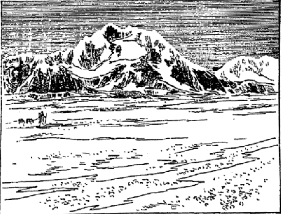
漠々たる広原に渇死せんとす
だと思ったです。腹の中から水を求めて居るようになったけれども仕方がない。だんだん進んで行くけれどもどれだけ進んでもさて水のある所が見付からない。今夜も水を得られずにいた日にゃあこのまま死にはせぬかと非常に苦しくなった。その
度に宝丹を出して飲むけれども飲むとかえって余計喉が乾く位、しかし幾分の助けにはなったろうと思います。それからだんだん進んで十一時頃になると向うの方にちょっと低い
溜りのあるような所が見えた。あすこに水があるだろうと思ってそこへ指して砂を踏み分けつつ行きますとなるほど水がありました。その時の嬉しさは何とも堪え得られんほど嬉しかった。まあこれを一つしっかりと飲んでそれから茶を沸かそうともう片時も待って居られないから、早速荷物を卸して懐ろから椀を出して汲もうとすると
になって居る。これは何か知らんと思うとチベット高原にある一種の水なんで、それは何百年この方そういう風に腐敗してそこに溜って居ったものであろうかと思われる位。早速汲んだところが細かな虫がウジウジして居る。これじゃ
直ぐ飲むという訳にはいかない。殊に虫のあるような水を飲むことは私共には許しませず、どうもこいつあ困った、しかしこれを飲まなくちゃあ立ち行かず、飲んじゃあ仏戒にも背くし第一自分の身体を害するがどうしたら
宜かろうかと暫く考えて居りましたがじきに案が浮びました。かねて
釈迦牟尼如来が戒法をお立ちになった中にもし水の中に虫が居たならばその虫を
切布で
漉して飲めというお教えのあった事を思い出して、こりゃいい事を思い出したというので早速切布とチベット鍋を出してその水を切布で漉したです。そう致しますと外側に虫が残って水が下へ落ちた。それが清水かと思うとやっぱり赤い。けれども虫のウジウジして居るのが眼に掛からんからそれを椀に盛って一盃飲んだ時のその味は
も及ばなかったです。一盃は快く飲みましたが二盃は飲めない。これをどうか湯に沸かして茶を拵えて飲んだらよかろうというので、その辺を駈け廻って野馬の糞を集めて来て沸かして居ると十二時
間近になって来た。十二時過ぎると飯が喰えないことになるからまだ湯は沸かないがその
微温な水で麦焦しを
捏ねて充分麦の粉だけ喰ったです、例の唐辛子と塩を付けて……。実にうまかったです。それから一里ばかり砂の中を行くと午後三時頃から非常に風が吹き出した。どうもその砂が波を揚げて来るので荷物は砂に
押っ
被ぶされてしまうし、バアーッと眼の中へ吹き込むから眼を開いて歩くことが出来ない。と言って眼を開かんでは方向を見る訳に行かず、眼を開けば砂が一ぱい入って来るという訳ですから何とも仕様がない。そうかと言ってジーッと坐り込んでばかり居る訳にもいかない、
のですから……。ああいう荒い凄まじい景色は日本に居る時などは夢にも見たことがなかった。砂がドシドシ波を立てて来る。ですから
堪らんです。砂地がほじくられたようになってドーッと荒んで来る。ですから暴風のために今前にあった岡が失くなってまた向うに砂の岡が出来て居るというような始末。どうもそういう中ですから坐って居ることも出来ず進むことも出来ず進退これ
谷って心中に経文を読んで居りましたが、その暴風は幸いにして一時間ばかり経つとヒョッとやんでしまいました。大いに安心してその砂原の中をだんだん進行してちょうど五時頃当り小さな草も生えて居れば
棘のある低い樹の生えて居る所に着きました。その樹は日本の茶畑のような具合にぼつぼつと生えて居てみな針がある。寒い所であるから葉は青くなって居らんで真っ黒になって居る。こりゃよい所に着いた。この
辺の水の在る所で今夜はこの枯れた樹を集めて、まあ火がよく出来るという考えでその辺の池のある所に荷を卸してまた例のごとく
枯芝を集め野馬の糞を拾ってその夜はごく安楽に、その泊った所も誠に池の中のような所に入ったから案外風が来ないで暖かでその晩ばかりは心安く休んだです。ところがその翌日また
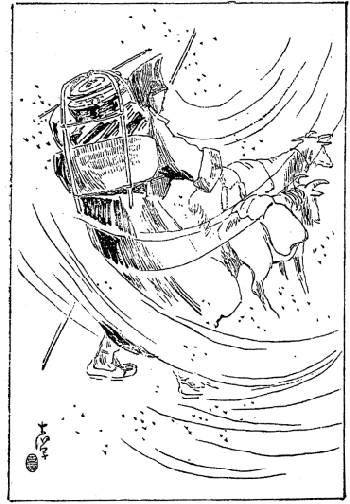
広原の大風砂礫を捲き来る
が起ったです。それでその池の端から出て例のごとく羊を駆ってだんだん山に登ってある山の
中腹に参りまして遙か向うの方を見渡しますと大きな川がある。その川の
折々に池がある（池また川、川また池となるの意）。池はさほど大きなものではありませんけれどもそういう池が沢山にあるのです。で川はみな雪峰から出て来て居るのですが私の見たところでは池がその辺に五、六ヵ所ありました。それはもちろんブラマプトラに注いで居る川でその川の名を後で聞いて見るとチェマ・ユンズン・ギチュ（
卍の砂の川という意味）という。それは川が流れて池となり池また流れて川となるで、その池の配合で川の流れ
塩梅が
卍のようになって居るのかも知れません。で、その川でわが生命を失うかどうかという困難が起って来た。
固より山の中腹から望んだ時はそんな事の起ろうとは夢にも知りませんけれどもその山から望んだ時にはまたこの川を渡らにゃあならんかと思いました。なぜならばその冷たい、冷たい川を渡るのはちょうど
を渡るような感じが起るからです。もっとも私は地獄に行って氷河を渡った覚えはないがそれほど辛く思ったです。固より困難は承知なれども差し当りの困難に対してはいや随分困ったなと考えの出るものでございます。とにかくだんだんその川の方に進行しなくちゃあなりませんからその川へ指して降って参りました。ちょうどそれが午前九時頃でしたけれどまだその川端には少し氷がありますし、今渡った分にはとても寒くっていけない。第一氷で怪我をするからま少し融けてからでなくちゃあいけない。その間に茶でも拵えて昼飯でも喰いましょうという考えでその通りにやりました。やがて十二時頃になってから自分の身体へ例の丁子油を塗付けました。で深さを探って見ると大分に深いです。まず羊を追い入れようとすると羊は深いということを知ってでも居るのかどうしても入らない。
仕方がないから荷物をそこへ置いてまず羊二疋を引っ張って渡ろうという考えで自分はそれほど深いと思わないから、乳の所まで着物をたくし上げて例の杖をもって向うへ指してやって行きました。すると水が乳の所まででなくってほとんど肩の辺までありまして着物がすっかり濡れてしまった。けれども羊は泳ぐことが出来るから首だけ上げてずんずん向うに渡って行くです。もちろん私が繩を持って引っ張って居らんければ羊は流されて死んでしまうのです。まあよい都合に向うに渡り切りましたがどうもその寒い事一通りでない。早速羊を石に
括り付けて自分はまた自分の手で出来るだけ身体を
摩擦して暖気を取りました。で一時間ばかりもそんな事をして費やしたですがその川の広さはちょうど一町半ばかりある。そこでその着物をすっかり脱いで
素っ
裸になり、濡れた着物は風に持って行かれないように石でもって押え付けてよく日に乾くようにして、自分はまた素っ裸で川に飛び込んだです。こっちで三十分ばかり暖を取ってそれからまた油を塗り付けてその着物を頭の上に載せて渡って行ったです。やはり前の川筋を行ったのですけれども荷物の重みもありますし、川底に大きな石があってその石に
苔が生えたようになって居るものと見えて
すると頭の上にあった荷物が横になって片手で上げにゃあならんようになった。もう
杖は間に合わぬようになってずんずん流された。もちろん少し位は泳ぐことも知って居りますから、右の手でしかと荷物を押え左の手で杖を持ちながらこうやって（次の図のごとく）泳ぎ泳ぎ流されましたけれどなかなかうまい具合に行かない。その時ふと考えた。こりゃ自分の命を失ってはならんからこの荷物を捨ててしまって自分だけ泳いで上ろうか知らんと思いました。しかしこの荷物を打っちゃってしまうとたちまち自分の喰物が失くなる。これから十日余り人の居ない所を歩かねばならぬということを聞いて居るからそうするとすぐに飢えて死んでしまう。どうにか足がくっつくか知らんと思って下へ指して杖を立てて見ると杖が立たんです。その中にだんだん押し流されて水を飲む。腕も身体も感覚が鈍くなって
利かんようになった。もう一丁ばかり向うの方へ流されると大きな池の中へ持って行かれるにきまって居る。こりゃこの川で死んでしまうのか。どうせ喰物がなくなって死なねばならんのならいっそ
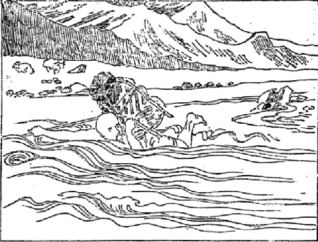
漂河瀕死の難
かも知れんという考えを起して臨終の願を立てていいました。十方三世の諸仏たち
并びに本師
釈迦牟尼仏、我が本来の願望は遂げざれとも我らの最恩人たる父母及び朋友信者らのためにもう一度生れ変って仏法の恩に報ずることの出来ますようにと願いを
掛けまして、もうそのまま死ぬ事と決定して流れて行ったです。流れて行くとふいと何か杖の先に当ったからハッと思ってしかと握って居った杖を立てて見ると杖が立ちました。やこれはと思うと勢いが出ましたからウムと立ち上って見ると水はちょうど乳の所までしかない。これならうまいと思ってずっと向うを見ると水がどういう加減に流して来たものか向う岸の方に流れついて居る。もう二十間も行けば向うへ指して上り得られるような所に流されて来た。
こりゃありがたいと思ったから腕も何もよくきかないけれども一生懸命に、その水の中に在る荷物を頭の上に挙げようと思ったけれども重くなって居るから上らない。荷物は皮の袋や何かですから、すっかりと水が中に浸みて居りませんから濡れ切っては居るがそれほどに重くない。それをまあ引っ張りつけてだんだん向うに進んで行ったところがおいおい浅くなってきて向う岸に上ることが出来た。やれやれと思うともうその荷物を水から取り上げることが出来ない。
閉口したですが荷物をそのまま
抛っては自分の命の
糧がなくなるから
一生懸命力を籠めて両方の手で荷物を上に引き挙げた。まあこれでいいと思ってどっかり坐ってホッと一息
吐きました。どの位流されたのか何でも羊の居る所とは二町ばかり離れて居るです。で羊は二町ばかり上の方に何にも知らずに草を喰って居る。私はもう
其岸へ上った所で少しも動くことが出来ない。大体
どうしてその荷物が上ったのか後で考えてもその理屈が分らん位ですがもう足を
屈めることも出来ず、
凍え切って立つことも出来ない。そのまま、こいつあ困った、このまま死ぬのじゃないか知らんという考えを起したです。どうもして見ようがない。それからまあどうやらこうやら出来るだけ自分で
摩擦をした。指は延びないから
拳骨で
胸膈の
辺りを摩擦して居ると、手に暖まりがついて大分指が動くように感じましたから、指を延ばして全体に対し摩擦を始めたがなかなか暖まりも着かない。で大方一時間ばかりも摩擦をやって居ると大分暖まりがついて指も自由が利くようになったから、今度は荷物を解いてその中から宝丹を出して飲みました。その時にはありがたく思いました。
いつも難儀するとこの宝丹が役に立つが、これは大阪の渡辺市兵衛の奥さんが出立の時分に親切に送ってくれた。それがまあこういう時にこうも役に立つかと思って大いに
悦びました。そうして暫く居るとガタガタ
震い出した。その震動がなかなか烈しくなって少しも止らない。どれだけ歯を喰い縛ってみても止らないです。仕様がないからそのまま倒れて居るとやっぱり震えて居る。まるで
瘧が起ったような有様。……で大方二、三時間も震えて居ったでしょう。その中に五時過ぎになりまして大分日光の力も薄くなって来たが、どうやら震えも少し
止って立つことが出来たから、荷物を二つに分けてそこへ半分残して半分だけ背負ってどうにか羊の所まで行きたいと思って出掛けました。その半分の荷物の重さといったら
堪らないです。昔の監獄で
負石の責に
遇わすということはかつて聞きましたが、その罪人の辛さもこんなで
あったろうとそぞろにその苦しみを思いやって涙を
溢したです。で、その荷物を二度に羊の所に運びました。その晩は火も何もない。
濡れた着物が少し乾き掛けた位ですからその濡れて居る側を外にして乾いて居る側を内にして、例のズクズクの夜着をば冠ってその晩はそこで過しましたが、さてその後に至ってから実にまたそれよりも
酷い一大困難が私の身に起って来たのであります。
その翌日よい都合に日も照ったものですから濡れた着物と経文を乾かしました。その濡れた
痕の付いた
法華経、三部経のごときものは今なお私の手に記念物として保存してあるです。その記念物を見る度にどうしてあの時助かったろうかと不思議な感じが起る位です。ちょうど一時頃荷物を整えてだんだん西北の山の方に進んで参ったところが、昨日の疲れが酷いのと荷物はほぼ乾いて居るけれども一体に
湿気を帯びて居るので非常に重い。その上少しは羊の荷物をすけて遣らねばならんような場合になったのでなおさら自分の荷物が重いのに、川底の石で足の先を切ったものですからその痛みがまた非常に厳しい。
だから進むに非常に困難でしたが、しかし一足向うに行けば一足だけ目的地に近づく訳でありますからとにかくぼつぼつと進むべしというので、ゆるゆると構えながら二里ばかり行きますと雪が降り出して風も大分はげしくなりましたから、その辺に泊る所を求めてある小さな池の端に着きましたけれども薪も何も拾う暇がない。大変な雷が鳴り出して暴雪暴風という
凄じい光景ですから、着物なり荷物なりはまた濡れてしまい折角乾かしたものをすっかりとまた濡らしてしまいましたから、翌日またそれを乾かさなければならん。茶も飲まなかったから随分腹もすいて居る。けれども薪がないからどうすることも出来ない。乾
葡萄だけ喰って昼までその着物を乾かしてそれから出掛けたです。この日が真に
の起った日でそういう事が起ろうとは夢にも考えませんでした。さて西北の方に高い山が見えて居る、しかし外の方を見るとどうも行けそうな道がないから、とにかくあの西北の雪の峰を
踰ゆれば必ず目的地のカン・リンボチェすなわちマウント・カイラスの辺に達することが出来るであろうという考えを起しました。後に聞いて見るとその雪の峰はコン・ギュイ・カンリという二万二千六百五十
尺の高い山であったです。その山にだんだん進んで急坂を四里ばかり登って参りますともはや、午後五時頃でまた暴風が起って大雪が降り出した。そこで考えたことは、これからこの山をドシドシ登って行ったならば今夜はこの高山の積雪のために凍えて死ぬような事が起るであろう。だから目的地へ指して行くことは後の事にして差し当り山の
麓の川へ向って降って行かなければならんと思い、それから方向を転じて北東の方へ降って行くと雪はますます降りしきり日も追々暮れて来たです。
のみならず坂は非常な嶮坂でなかなか降るに困難である。
四辺には泊るに都合の好い岩もないものですからどこかそういう場所の見つかるまで降ろうという考えで進んで参りました。どこを見ても雪ばかりで岩もなければ隠れ場も分らない。途方に暮れたが、といってその辺に坐り込む場所もなし。雪は既に一尺ばかり積って居るです。とにかくどんな所か見つかるまで行こうという考えで羊を追い立てますと余程疲れたと見えて少しも動かない。無理もない、相当の荷物を背負って居る上に今日昼までは草を喰って居りましたけれども、その後は高山に登って来たのですから草も得られなかった。さあ進むことが出来ないといって進まずにゃあ居られないから、可哀そうではございますけれども押強く後から叩き付けてみたり
種々な事をしたが羊はもう動かない、座っちまって……。漸くの事で首に掛けてある綱を引っ張って二間ばかり進むとまた
込んでしまって一歩も動かない。どうもして見ようがない。はてどうしようか知らん。この雪の中に寝れば死ぬに
極ってる。もう既に自分の手先に覚えがないほど凍えて居りますので、羊の綱を持って居るその手を伸ばすことが出来ないほど苦しゅうございますけれども、このまま積雪の中に立往生する訳にいかんからどうかこの羊を起して進ませんければならんという考えで、また一生懸命に力を籠めて羊と戦いながら半町ばかり行きますとまたどっかり倒れていかにも苦しそうな息をついて居るから、こりゃ今晩
此山で凍え死ぬのか知らん。どうにか方法がつかないか知らん。どこにかテントのある所が分って居れば羊を棄てて出掛けるけれども、この間聞いたところでは十四、五日も人に逢わんであろうというからどこへ行って見たところがどうせ人の居る所に着かないに極って居る。こりゃもうどうしても羊と一緒に死なねばならんのかと途方に暮れて居りました。どうも
して見ようがないから羊の荷物を卸して夜着を取り出してそれを
被り、それから頭の上から
合羽を被ってしまいましてそこで羊の寝転んで居る間へはいって
 雪中に坐禅して羊と共に凍死せんとす
雪中に坐禅して羊と共に凍死せんとす
ときめこんだです。羊もその方がよいと見えてジーッと私の側へ寄って寝て居ました。これが随分暖みを持つ助けになったろうと思う。その羊も余程私に慣れているものですから、まるで私の子のような具合に二つが左右に寄り添うて寝て居ったです。可愛いようにもあり可哀そうでもありジーッと見て居ると二疋ともさも悲しそうな声を出して泣いて居る。いかにも淋しく感じましたがどうも
して見ようがない。何か
遣りたいと思っても
其辺に草もなし。自分はもとより午後は一切喰わんのが規則ですからただ懐中から丁子油を出して夜着を着て居る窮屈な中で身体へ塗り付けました。すると大分に温度が出て参りました。
一体油を塗るということは外界の空気の侵入を
禦ぐと同時に体温を保つ効能があるようです。殊にこの丁子油は体温を保つ目的をもって拵えたものであるから非常に暖みを感じたです。それからまた口と鼻から出るところの呼吸を止めるような
塩梅にして居りましたが、それはこの呼吸が当り前に外へ出たり内に入ったりして外界と交通しますと身体の温度を保つに困難であろうという考えであったです。こうして余程温度を保って居りましたが、十二時頃からどうもだんだんと寒さを感じて非常に感覚が
鈍くなって何だかこう気が変になってぼんやりして来たです。人間の
臨終の
際というものはこういう具合に消えて行くものであろうかというような感覚が起って来たです。
こりゃどうも危ない。しかし
今更気を
揉んだところで仕方がないからこのまま死ぬより
外はあるまい。仏法修行のためにこの国に進入して来た目的も達せずに高山積雪の中に埋れて死ぬというのも因縁であろう。仏法修行のため、この道に倒れるのは是非がない。そう歎くにも及ばないがただ自分の父母、親族及び恩人に対してその恩を報ずることの出来んのは残念である。どうか生れ変ってからこの大恩に報じたいものであるという考えを夢心に起しましたがそれから後はどうなったか少しも知らない。もし人があってこの境遇を評したならば全く無覚である。我を失って居るものである。あるいは死んだ者であるといわれるような状態に陥ったものであろうと後で想像されたです。その時は全く何も知らなかった。すると自分の
端で動く者があるから不意と眼を覚して見ると
二疋の羊が身顫いし雪を払って居るです。それがちょうど私の身体の雪を払うようになって居るのです。フッと
現に帰りましたがまだ夢路を
辿って居るような心地で、こりゃ奇態だという感覚が起った。その中に羊は自分の雪を払い終ってしまいましたから私も雪を払おうと思って身体を動かしかけると何だか身体が固くなって容易に動かない。それから例のごとく摩擦をして空を見ると夜前降った雪の後の空にまだ恐ろしい黒雲が
斑に飛んで居りまして、その雲間に太陽が折々光って居るという
凄じい空模様である。大分、気分も確かになったから時計を出して見ますと午前十時半頃、それはその翌日の十時半であったか翌々日の十時半であったか、時を経たことはよく分らない。それから
麦焦しを喰おうと思いましたけれど例の水がないものですから傍の雪を取ってバタを入れてそれでまあ麦焦しの粉を一ぱいばかり喰いました。で羊にもやはり麦焦しの粉を沢山に
遣りました。
彼らは始めの程は草より外喰わなかったけれどだんだん慣れるに随って麦焦しの粉を食べるようになりました。その時は余程腹のへって居ったものと見えて沢山喰いました。それから羊に荷物を背負わせ自分も荷物を背負って雪の中をぼつぼつ下の方に向って参りました。もうこれから上に向って進んで行くという勇気はない。まあ谷間で身体を休めてそれから進行しなくってはとても身体が持てないという感覚が生じましたからだんだん下へ指して二里余り降りますと川が一筋ありました。その川へ着こうという手前からまた綿のような大雪がドシドシと降り出した。今晩もまた雪の中で凍え死するような目に遇うか知らんと思って居ると、ふと降りしきる雪の中で実に美しい声で啼き立つるものがあったです。何の声か知らんと思ってよく見ると
鶴が七、八羽その川端を
徐ろに歩いて居るです。その景色には実に旅中の困難を慰められた。その後そこの景色を思い出して
詰らぬ歌を詠んで記念にして置きました。その歌は
ブラフマの、川の渚の砂地に、牡丹やうなる白雪の、降り積りたる間より、
コ、コウ、コ、コウとなのる声、いづくよりかと尋ぬれば、静かに鶴の歩むなり
それからその一町余りある川を渡ってだんだん低い方に進んで参りますとその辺は谷間でそんなに高低もなし、だんだん行きますとヤクが数十疋も居るような有様が見えたです。例の通り石の転げて居るのがヤクに見えるではないか知らんと思うと
彼方此方に動くです。こりゃいよいよヤクに相違ないと思ってその方向に進むと果せるかなヤク追いがその辺に居りました。で物を尋ねるとその人のいうには、俺たちは昨夕ここに移って来たばかりだ、これから向うに行くと四つばかりテントがあって人が住んで居るから、大方そこに行くと今夜泊れるだろうという話でございました。実に地獄で仏に逢ったような心持でだんだんその教えられた方向に進んで行くとテントがあったです。例のごとく恐ろしい犬に迎えられてあるテントについて事情を述べてどうか今晩泊めてくれろと願いました。
ところがそのテントの
主人はどう思ったものかいかに願ってみても泊めてくれない。もちろんその時には私の姿が恐ろしくあったろうと思います。何故ならば髪の毛は二月ばかり剃らんのですから充分延びて居る所へ髯が
蓬々と生えて居りますし、それにいつも腹はへり勝ちで痩せこけて頬骨が出て居るという次第ですから向うで恐れて泊めなかったかも知れないと想いました。いくら頼んでも泊めてくれないからまた犬と戦いながら他のテントに行って頼みました。ところがこれもやっぱり泊めてくれない。それからもう一軒の所に行って一生懸命に頼みました。私はこういう訳でもう七、八日人に逢わんで実に困って居るからどうか救うて下さいといって事情を明かし、手を合せて拝まぬばかりに頼めば頼むほど
情なく出られて閉口し切ったです。どうかテントの隅でもよい、外へ寝ると今夜この雪のために凍えて死んでしまうから命を助けると思って泊めてくれないかと頼んだけれども、なかなか
肯いてくれないばかりか遂にはお前はおれの家へ
かといわれたです。もうその一言で頼むことも出来ませず仕方がないものですからまた外の方に出ましたが実に泣きたくなるほど辛かった。もう一軒テントの張ってある所があるけれどもがっかりしてそこへ頼みに行く勇気もなく茫然と雪の中に立って居ると羊も悲しそうに鳴いて居る。可哀そうになったから四軒目のテントへ行って頼みましたところが、そこの主は私の姿を一見するやお入りなさいといって誠に快く入れてくれたです。どうもこの一群の遊牧民は実に無情極まる人間だと思いましたが、案外にも情け深い人に出逢ったものですから大いに悦んで早速幕内へ指して羊の荷物を卸し羊は羊で
繋ぐ場所に繋いでその夜はそこへ泊りました。
身体は非常に疲労して
履も非常に傷んで居りますけれども暖かな火の
端ですから真にこういう状が極楽であるというような感じが生じた。その翌日は身体を休めるために主に願って
逗留しました。で私はかねて仏教上どうか一切
衆生のために
尽し得られるだけの事を尽したいという
があってそれを書いて居た。こういう自分の熱心な事を書いて居る時には足の痛みも身体の疲れも忘れてしまうからこれが真に苦痛を免れる良い方法になった。つまり私のやった誓願は人の苦痛をも免れしむる良い方法になるであろうと予期して歓喜した訳であります。その翌日朝五時頃出立して今度は方向を転じて北に向って四里ばかり原野の雪の中を辿って参りました。雪の消えて居る所は少し草が生えて居る。で一つの大いなる池の端に着きましてそこで昼飯を済ましその池の端で向うの方をずっと眺めて見ますと砂原です。砂の山があっちこっちに見えて居る。これは以前のチェマ・ユンズン川の前にあった砂原より大きい。この砂原で暴風でも起った日にゃあまたこの砂に埋められる
憂があるからどうか早く進みたいという考えが起って来ました。これもやはり経験上苦労に慣れたからこういう考えがすぐ湧いたのです。それから自分は
一入勇気を鼓して羊を駆って大いなる砂地を指して進んで行ったのでございます。
さてその砂原を二里半ばかり行きますとまた草原に着きました。その草原を少し参りますと誠に奇態な石ばかり集って居る原野に山が一つチョンポリと立って居る。後にその山の来歴を聞いてみますとそれはポンという教えの神さんが住んで居る山であったそうです。このポン教というのは仏教がチベットに入る前にチベット人の宗教として行われて居ったものである。今もなお微々ながら行われて居りますが、その教えは一体インドに在る教えに似て居る。というのは仏教が入って後ポン教は非常に衰えたので、その後ポン教のある僧侶が仏教の組織をそのままポン教に取ってしまって新ポン教というものを
拵えたです。それゆえ今のポン教は犠牲を供するとか、妻帯をするとか、酒を飲むことを除くの外は教理の上においてはほとんど仏教と同一である。この教えの事は専門にわたりますからここでは申しませんが、つまりチベット古代の教えの神々の住んで居る社というようなものは別にない。大抵は石山あるいは雪峰もしくは池、湖というような所になって居る。その山の所を過ぎて少し向うへ参りますと野馬が二疋向うからやって来たです。ここでその
を少しして置きたい。野馬はチベット語にキャンというて北原の野馬だとして居るが、その実は野の
驢馬であって英語にはチベット語をそのまま用いてキャンというて居る。学名はエジュアス・ヘミオニスであるとのことだ。その大きさは日本の大きな馬ほどあって背中の色は茶がかった赤い色で腹が白い。背筋がまっ黒で尾は驢馬の尾のごとく細く
鬣もある。すべての様子は馬と少しも変って居らないがただ違って居るのは尾だけである。そうして余程力の強いものでその走る速力も非常なものですが決して一疋で出て来ることはない。大抵二疋かあるいは五、六疋、あるいは数十疋群を成して出て来る。妙な馬で半里も向うの方からくるくる廻りながら四、五町手前まで来るとまたクルッと廻ってあたかも狐が後を向いて見て居るような風に見てそうしてまた驚いたような風をして逃げ出す。で、もう逃げて居らんのかと思うとまたくるくると廻って自分の近くに来て居る。いつまでもくるくる人の
周囲を廻って見て居るです。その馬が出て来ましたが例の事であるから別段不思議にも思わずにそのまま進みました。
ところがどうしたのか羊がその野馬の走る勢いに驚いて私の持って居る手綱を引き外して逃げ出した。さあそれからその羊をば追っかけた。追っかければ追っかけるほど余計に逃げる。なにしろ広い原の中ですからくるくる廻り廻って羊の跡を追っかけたがなかなか追っつかない。羊は余程走るのが早い。で私と羊と競走して居るものですから野馬の奴がまた好い気になってそのぐるりを走って居るからどうしても羊が止まらない。もう私は疲れ果てて遂には倒れそうになった。けれどもうっちゃって置く訳にいかないから自分の持って居る杖も棄ててしまってそれから
一生懸命に走りました。それでも捉まらない。仕方がないからそのまま自分は倒れてしまって暫く羊の逃げて行くままにうっちゃって置いた。羊に逃げられると自分の食物が失くなるのであるが仕方がない。ジーッと
正視して居ると野馬も突っ立って
眺めて居るです。そうすると羊も止まって
正視して居る。こりゃなるほど私が悪かった。むやみに追っかけたから逃げたのだ。いわゆる狂人を追うところの狂人、馬鹿げた事だと休息致しました。
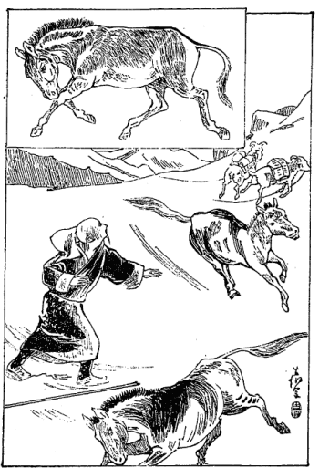
奇なる野馬の挙動と羊の逃走
暫くして静かに羊の綱を
捉まえに行くと今度は訳もなく捉まえられた。それはよいが一疋の羊の荷物の片っ方がどっかへ落ちたか失くなって居る。そりゃ一番自分にとっては大事な物を入れてあるからこりゃ困ったと思ってそれから羊を引っ張りながらあっちへ廻りこっちへ廻りその辺をすっかり捜した。随分厄介な話、どこを捜してもどれだけ走ったか訳が分らずに追っかけたからさっぱり見当がつかない。
ようなもので少しも捜し当てることが出来ない。その中に何が入れてあるかというと時計、磁石、インド銀が四、五十ルピー、それから食物を喰う椀、乾葡萄、西洋小間物の人に遣って珍しがるような物も大分入れてあった。そこで私は少し考えた。こりゃもはやマナサルワ湖に近づいて人に逢うことも近くなったのであろう。それにこういう西洋物を持って居ては人から疑いを受けて
奇禍を買うようになるから仏陀がわざとこういう物を失わせるようにされたかも知れない。主に西洋物ばかり入れてあるもの一つだけ失ったのであるからこれは捜す必要はない。ただ少し困難なるは銀貨を少し失ったけれどもそれはほんの当座用に出して置いたのだからさして困難もないとこう考え直して捜すことを止めたです。それからその羊の荷物をもう一度整理してだんだんと西北の山の方に進んで行った。けれどもその辺は余程広い
山間の原野で二里半ばかり参りますと今度は平地を降ることになってずんずん半里ばかり降った。
するとそこに一筋の道がある。こりゃ奇態だと思ってよく前に聞いてある話を思い出しますとそれはマナサルワ湖へ指して行くチベット本道からの廻り路であるということに気がついた。こりゃうまいものだ。これから人に逢うことが出来るであろうと思ってだんだん進んで参りますと大きなる川の端に一つの黒いテントがある。早速そこへ向って参りまして私はこういう者であるから一夜の宿りを乞いますといって頼みますと誠に快く泊めてくれた。その人たちもやはり巡礼者であって伴の人が五人、その中女が二人で男子が三人、その男子は皆兄弟で一人の女は兄の嫁、一人は娘、で私は安心しました。こういう女連れのある巡礼者は大抵人を殺さぬ者であるということを聞いて居りましたからまず大丈夫と思いました。
けれどもその人たちは強盗本場の国から出て来たのです。その本場というのはどこかというとカムの近所でダム・ギャショの人であるということを聞きましたから少しく懸念も起りました。何故ならばその辺の諺にも
人殺さねば食を得ず、寺廻らねば罪消えず。人殺しつつ寺廻りつつ、人殺しつつ寺廻りつつ、進め進め
そういう諺がある国の人でなかなか女だって人を殺すこと位は羊を斬るよりも平気にして居る位の気風でありますから容易に油断は出来ない訳です。けれどももうそこに着いた以上は
虎口に入ったようなものですから逃げ出そうたって到底駄目だ。殺されるようなら安心してその巡礼の刀の
錆になってしまうより外はないと決心して泊りました。
になると決心したもののしかしそのままそこに寝る訳にいかない。いろいろその巡礼と寺のありがたい事など物語って、ともかくその晩はゆっくり寝ることになったです。その翌日が即ち八月三日です。五人連れの巡礼も志す方向に進むというので、翌朝連れ立って西北の方に向い大きな川に沿うて進んで参りました。その川は東南の雪峰から流れ出してマナサルワ湖へ流れ込んで居る。広さは二町ばかりもあって大分に深そうな川です。
かれこれ一里半ばかり行って山の上に登った所に誠に澄み切った霊泉がある。その泉がチュミク・ガンガー（訳は
恒河の源泉）というのです。そこで水を飲んでそれから北の方の山に登りますと大きな白大理石がある。その大理石の山のようになって居る岩下にまた大きな霊泉がある。その名をチュミク・トンガア・ランチュン（
見歓自然生泉）という。その名のごとく実に見て喜び、自然に嬉しい思いが生ずるです。
大理石の中から玉のような霊泉が湧き出て居るんですから実に喜びの心に堪えない。それらは皆インドのガンジス川の一番
源の水である。この水は真の霊水であるといってチベット人及びインド人の中にも伝えられて居る。そこを離れてだんだん西北に進んで川端に出ましてある川の最も幅の広い所を向うへ渡りました。渡ってそこでまた一夜を明すことになったですが、その日は僅か三里半位しか歩かない。遙かに西北の空を眺めますと大きな雪峰が
聳えて居る。その峰が即ちチベット語のカン・リンボチェで、インドでは
マウント・カイラスという。昔の名はカン・チーセといって居る。その雪峰は世界の霊場といわれるほどあってヒマラヤ雪山中の粋を
萃め、全く
を成して居る。その霊場の方向に対してまず私は自分の罪業を
懺悔し百八遍の礼拝を行い、それからかねて自分が作って置きました二十六の誓願文を読んで誓いを立てました。こういう結構な霊場に向って自分が誓いを立て得られるというのは何たる仕合せであろうかという感じが起りまして、その時に一首の歌を詠みました。
何事の苦しかりけるためしをも
人を救はむ道とこそなれ
ところが前夜私が泊りました同行の人たちは、お前はなぜそんなに礼拝をしてシナ文字を読み立てたかと聞いたからその意味の
一斑を説き明してやりました。すると大変に感心して、シナの坊さんというものはそんなに道徳心即ち
菩提心の
篤いものであるかと大いに悦んで随喜の涙に
咽びました。で、その夜はどうか説教をしてくれろといいますから、私はその人たちに対して誠に分り易く説いてやったものですから大いに悦んで、こういうお方と一緒になったのはありがたい、カン・リンボチェを巡るこの二月ほどの間は、一緒にお給仕を申し上げたいものである。そうすれば我々の
罪障も消えるからと彼らは互いに物語るようになりました。まずこれで安心。どうも仏法というものはありがたいものだ。人を殺すことを大根を切るように思うて居る人間が仏法のありがたさに感じて共に
苦行をしたいというのは誠に結構な事であると、私も彼らが涙を
溢すと共に喜びの涙を溢しました。その翌日余り高くない波動状の山脈を五里ばかり進んで参りますと遙かの向うのマンリーという雪峰が
聳えて居る。これは海面を抜くこと
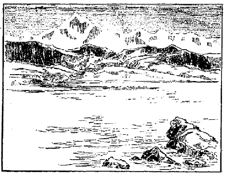
阿耨達池とカイラス雪峰
であって
巍然として波動状の山々の上に聳えて居る様はいかにも素晴らしい。その辺へ着きますと
閃々と電光が輝き渡り
迅雷轟々と耳を
劈くばかり。同時につぶつぶした荒い霰が降り出して轟々たる
霹靂に和し天地を震動する様は雪峰も
破裂しようかという勢いであった。その凄じい趣きの
愴絶、快絶なることはほとんど言語に絶し、覚えず我を忘れてその
凄絶、快絶なる偉大の霊場に進み来ったことを大いに悦んだです。何と形容してよいかその時の有様は今なお忘れられないほど愉快であった。そういう
酷い勢いが一時間経たぬ中にパッとやんでしまいまして、後は洗い
拭うたごとくマンリーの雪峰が以前のごとくに姿を現わし、ただ片々の白雲が雪峰の前に
ちょいちょいと飛んで居る位の事で、元のごとく日が明らかに照って居るというその変幻の
奇なる有様には実に驚かされたです。
かくのごとき境涯の変幻自在なる有様は実に人を感ぜしむるに余りありと私は自ら感に堪えなかったです。それから少し進んで池のごとき沼のごときその端に着いて一行の人たちと一緒に宿りました。私はこの時位嬉しい事はなかった。宿る時分にはちゃんとテントの中に寝込んで、一番上座に据えて貰ってヤクの糞を拾いに行く必要もなければ水を汲みに行く世話もない。じっと坐り込んでお経を読み坐禅をするのが仕事で、夜は説教をしてやる。それだけの勤めで気も安楽ですから自分の身体も余程強くなったように感じたです。で、その翌日即ち八月六日は大変な坂を
踰えて行かねばならんのですから、今度は「このヤクに乗って坂を
踰えると大いに安楽だからお乗り下さい」というその人たちの注意に従いかつ大いに厚遇を受けました。それは自分の荷物は皆一行の人が持ってくれたのみならず羊の荷物まで少なくして貰ったです。こうして五里ばかり進みますと例の
の端に到着した。その景色の素晴らしさは実に今眼に見るがごとく豪壮雄大にして
清浄霊妙の有様が躍々として湖辺に現われて居る。池の形は
八葉蓮華の花の開いたごとく
八咫の鏡のうねうねとうねって居るがごとく、そうして湖中の水は澄み返って空の
碧々たる色と相映じ全く
浄玻璃のごとき光を放って居る。それから自分の居る所より
（〔広い湖面を隔てて〕）西北の隅に当ってはマウント・カイラスの霊峰が
巍然として碧空に聳え、その周囲には小さな雪峰が幾つも重なり重なって取り巻いて居る。その有様は五百羅漢が
説法を聞いて居るような有様に見えて居る。成程天然の
曼陀羅であるということはその形によっても察せられた。そこへ着いた時の感懐は、飢餓乾渇の難、渡河
瀕死の難、雪峰凍死の難、
重荷負戴の難、
漠野独行の難、
身疲足疵の難等の種々の
苦艱もすっぱりとこの霊水に洗い去られて清々として自分を忘れたような境涯に達したです。そもそもこの霊場マナサルワ湖〔（心池）〕は世界中で一番高い所に在る湖水でその水面は海上の水面を抜くこと実に一万五千五百
尺以上にある。この湖水の名をチベット語でマパム・ユムツォ
（〔無能勝母湖〕）といって居る。また
梵語には
阿耨達池といい漢訳には
無熱〔
悩〕
池としてある名高い湖水であります。
（〔南瞻部州閻浮檀金の名もこの湖に因って起っている。〕）この池については仏教にも種々の説明があって現に
華厳経には詩的説明を施して居るです。実にその説明の仕方が面白い。それによるとインド及びチベットのある地方を称して
南瞻部州という名の起りもこの池から出て居るのである。
瞻部というのはジャンブという水音を表わして居る。その音は何故に起って来たかというと、この池の真ん中に大きな宝の樹があってその樹に実が
生って居る。
のごときものであって諸天と
阿修羅とはその実を得るのが非常の喜びである。ところがその実が熟して水中に落ちる時分にジャンブと音がする。その水音に因縁してインド地方をジャンブ州と言ったので、何故その水音に因縁して居るかというに昔はこの池からしてインドの四大河が出て来たものであるという説明であったです。その四大河というのはチベットの名では東に流れるのをタムチョク・カンバブ（馬の口から落ちて居るという意味）といい、南に流れるのをマブチャ・カンバブ（孔雀の口から落ちて居るという意味）といい、西に流れるをランチェン・カンバブ（象の口から落ちて居るという意味）といい、北に流れるのをセンゲー・カンバブ（獅子の口から落ちて居るという意味）という。この四つの口がこの池の四方に在ってそれからこの四大流がインドに注いで来たのである。で、この水がインドへ指して来てインドを
潤して居るから、そこでこの四大河の根源の池のある所の事を取ってこの地方全体の名にすることは当り前の事であるという考えから、ジャンブ州という名を付けたものである。今でもその川はインドでは皆霊あり聖なる川であるとして居る。その経文に書いてある詩的説明によっても
が流れて居る。南の川に銀砂が流れて居る。西の川には黄金の砂が流れて居る。北の川には金剛石の砂が流れて居る。で、その川はこの池のぐるりを七遍巡り巡ってそれから前に言った方向に流れ去るとしてある。この池の中には今は眼に見えないけれども
池中に大きな蓮華が開いて居って、その蓮華の大きなる事は極楽世界の蓮華のごとくその蓮華の上に
菩薩も仏も居られるのである。それからその近所の山には百草もあればまた極楽世界の三宝を
囀る
迦陵頻伽鳥も居る。その美しさと言えば
であるのみならず、川の西北岸に立って居るマウント・カイラスの中には生きた菩薩や仏も居られ、それから生きたところの五百羅漢も
［＃「五百羅漢も」は底本では「五百漢羅も」］住んで居られる。また南岸に在るマンリーという霊峰には生きた仙人が五百人も居ってこの南ジャンブなどにおいて天上の無上の快楽を尽して居るのであると、こういうような説明が沢山ございまして、誠にその説明を見ますとそういう所に行って見たいような心持がするです。けれども実際来て見ますとそんなに形容してあるようなものはないです。ただ先に申しましたような豪壮なる清浄なる景色は確かにあって霊地である。
霊妙の仙境であるという深い深い感じが起ったです。その夜などは
碧空に明月が輝いてマパム・ユムツォの湖水に
映し、その向うにマウント・カイラス
山が仏のごとくズンと坐り込んでいる。その
幽邃〔玄妙〕なる有様に
はほとんど自分の魂も奪われてしまったかと思うばかりで未だに眼に付いて思い出すと心中の塵はことごとく洗い去らるるかの感に堪えぬのでございます。
マナサルワ湖の絶景に
見惚れて記念のため歌を
詠みました。
東なる八咫の鏡を雪山の阿耨達池に見るは嬉しも
ヒマラヤのチーセの峰の清きかな阿耨達池に影を宿せば
ヒマラヤのサルワの湖に宿りける月は明石の浦の影かも
で一体四大河というものはこういう風に詩的説明をされて居りますけれども、実はその湖から直接に流れ出して居るというのは一つもないのです。つまりその湖のぐるりに在る山の中から四方に発して居るのですから、この湖の馬の口あるいは獅子の口から落ちて居るなどということはどこにも見ることが出来ないです。もっともかの四大河の発する源泉もです。西に流れるランチェン・カンバブ、南に流れるマブチャ・カンバブ、北に流れるセンゲー・カンバブの源泉は大抵分っておるですが、東に流れるタムチョク・カンバブの出て居るところはちょっと分らない。
それからインド語では東に流れるのをブラマプトラという。南に流れるのをガンジス、西に流れるのをストレージ、北に流れるのをシタといって居る。で、このマナサルワ湖の測量については欧米人はやったことがあるか知らんけれども、これまで私の見た欧米人の調製に係る地図によりますと大変に小さく出来て居る。マナサルワ湖はそんな小さなものでなくって湖の周囲が八十里ばかりあるです。その形状のごときも地図に書かれてあるのは変な具合になって居りますが、今私のいった通りにちょうど
八咫の鏡が
畝くって
蓮華の形のようになって居るです。どうも西洋人の
拵えた地図は大分間違って居るものもあるらしい。その夜はツェコーロウというマナサルワ湖辺の寺に着いて宿りましたところが、この寺の和尚からして一つの
を聞きました。このラマは五十五、六の人で無学ではありますけれども、ごくおとなしい人で嘘なんかちっとも言わないような人であった。で私にいろいろ仏法の話を聞いて居るうちにその人の言うには、この頃わが国の坊さんの行の悪いには閉口しましたと言う。それはどういうことかと尋ねたら、まあ何でもない
平僧ならば不品行な事をやっても目に立ちませんけれども、このマナサルワ湖の中でも有名な寺のラマ、アルチュ・ツルグー（アルチュの
化身という意味）が美しい女を女房にして寺の財産を
悉く女房の家に送って、
揚句の
果てに残りの品物をすっかり纒めてどこへか逃げてしまった。様子を聞けばホルトショの方に行って居るというがあなたはお逢いにならぬかという話。私は実に驚きました。私に親切にしてくれたかの美人を妻としたるラマが、
不埓にも寺の財産を女房の里に送り、そのうえ寺の財産を有らん限り持って田舎へ指して逃げて行ったとは、人は見掛けによらぬものだと実に驚いたです。ところで私も嘘を
吐くことは出来ませんから、こういう訳で宿りを求めて大変お世話になったと言いますと、いやあのラマは
表面は誠に優しくって慈悲深いように見えますけれども、恐ろしい悪い奴です。
菩薩の化身などとはもっての
外のことで
私は悪魔の化身と思って居る。いつも仏法を喰い潰す悪魔はかえってああいう
袈裟を掛けて頭を剃り、殊勝らしくお経や念仏を唱えて居る者の中にあると思って涙を
溢したと言う。私はそのことを聞いていよいよ驚いた。日本の社会ではどれほど坊さんが腐敗しても、まさか寺の金を取って自分の女房を養い、自分の女房の親を養うというような不徳義な者はあるまいと思いました。その夜は
其寺へ泊りまして翌日また湖水の辺に出て
四方の景色を眺めながらあちらこちらを散歩しておりますと、そこへネパール人及びインド人などのごく熱心なインド教の信者が参詣に参りまして、午前十時頃から湖水の中で礼拝をして居る。これは仏教徒でなくインド教徒で、このマナサルワ湖を霊地とし、向うに見えるマウント・カイラスをインドの三大神の一なる
塵訶湿婆の霊体として
尊崇礼拝して居るのでございます。
それらの人が私を見てあの人は仏法のありがたいラマであるらしいと言って、いろいろな奇なる
乾した樹の実などをくれました。その夜もその寺へ泊り、翌日また湖水に沿うて西北の山の中に進んで行くことちょうど四里ばかりにして向うにラクガル湖が見えます。これはチベット語にラクガル・ツォといい英語にレーク・ラカス・タールと言うておる。その湖水の形はちょっと
瓢箪のようになっていますが、マナサルワ湖よりはよほど小さい。ところでだんだんその方向に進んでまた三里ばかり山を登りますと、よくその湖の水面が見えました。
マナサルワ湖とラクガル湖との間には幅一里位の山が垣のように
峙って両湖が限られて居るです。で山のある部分は谷になって居りまして、その谷の水が両湖に通じて居りはせんかという位に見えて居る。けれども水は通じて居らんので全く別々になって居るのです。その有様を見ますに、マナサルワ湖よりラクガル湖の方がよほど水面が高いように見えて居った。後にこの両湖について聞くところによりますと、十年か十五年の間に非常な降雨があるとこの湖の水が谷を通じて一緒になることがあるそうです。その時分にラクガル湖の水がマナサルワ湖へ指して流れ込むということが証明された。そこでマナサルワ湖は嫁さんで、ラクガル湖は
聟さんで、聟さんが十年か十五年の間には一遍逢いに行くというようなチベットの面白い神話のような話がある。そうしてカン・チーセ即ちマウント・カイラスの名跡誌にはこの両湖が夫婦のごとくに連なって居るということを書いてあるが、これもやはり通俗の神話から来たものらしい。
それからまただんだんラクガル湖を眺めつつ山の中を五里ばかり降って平原に着きますと、そこに大きな川が流れて居る。広さが半町余りある非常な深い川です。この川はある場所に行けばきっと幅が三町にも五町にもなって居るところがあるに相違ない。この川がすなわちマブチャ・カンバブというのでガンジス川の
源を成して居る。
此川が南の方に流れて行ってプランというチベットとインドとの国境の
山都に流れて行くのです。それから向うに出て、ずっとヒマラヤ山を通り抜けてインドのハルダハルの方から流れて来るガンジスの大流と合して居るのでございます。一体現今のインド人はハルダハルの方から流れて居る川をガンジスの源流として
尊崇して居るが、古代はこのマブチャ・カンバブを源流としたことがありました。その川端へテントを張って、その夜はそこへ泊りました。この辺には四五のテントがあっちこっちにありましたが、その人はみなプランという山都から交易に来て居るんです。ちょうど七、八月時分には遊牧民も巡礼者もすべてこの辺に多く集って来るものでございますから、そこで交易をするのですが、その交易の仕方がまたなかなか面白いです。
チベット
（〔の辺鄙〕）ではすべて物と物との交換をやるので、金銭で物を買うということはごく稀である。その物品はチベット内地人はバタ、塩、羊毛、羊、山羊、ヤクの尾というような物を供し、またネパール人及び
雪山地方のチベット土人は布類、砂糖、
羅紗類をインド地方より仕入れて、バタ、羊毛、ヤクの尾の類と交易し、それをまたインド地方へ売るんです。もっとも羊毛とかバタを売ります時分には金を取って売ることもあるので、その金は大抵インドの銀貨であるです。それからその勘定の仕方がチベット人のは非常に面倒なものであって、筆算も
珠算もないのであります。
数珠を持っての勘定で、ちょっと二と五とを合わせる時分にも、まず二の
珠を数えて置いて、次に五の珠を数え、そうして二と五とを合わせ終ったところでもう一度それを珠一つずつ数え始めて七になったということが分るのです。そういう都合でなかなか数えるに暇が掛るが、全くそれが普通の遣り方で、もし我々が分り切った加減乗除の勘定をすぐにやって見せますと彼らは決して承諾しないです。どれほど言って見てもまず自分の数珠を取り出して、それからぼつぼつと勘定を始めて、我々が一秒時間も掛らない勘定に一時間余りも掛るというような始末。ですからチベット人と少し
沢山に商いをする時分には非常に困る。なお
錯雑な勘定になりますと
白い石粒と黒い石粒とそれから細い
竹屑のような物を持っておりまして、まず白い石粒が十になりますと黒い石粒一つに繰り上げ、黒い石粒が十になりますと竹屑のような物に繰り上げ、それから竹屑が十本になりますと白い坊主貝のような物に繰り上げ、それが十になりますとチベット銀貨に繰り上げます。そういう風にして十から百、千と沢山な勘定をして行くんです。まあ我々が早く読み早く数えて一時間位で済ます加減乗除の勘定を彼らは四人ばかり掛って
慥に三日間の仕事があるのですから、実に
迂遠千万と言わなければならんです。そういう遣り方で売買をするものですからなかなか暇が掛る。その商いをする所に三日ばかり
逗留して見て居りましたところが、誠につまらない話が一つ起って参りました。それはかねて一緒に参りました巡礼者らは非常に私を信仰した。余り信仰して
誉め上げる余りに
そのうちの歳のいかない娘が非常に思いを深くしたものと見えて、私に対して
訝しな怪しい
素振りが大分見えて来たです。ですから、私はその意中をじきに察しました。ははあ、こりゃ何だな、権力なりあるいは
富貴の力なりを慕うのは大抵婦人の常であるから、大方同行の親兄弟がこの坊さんは非常に学問があり徳があるというようなことをたびたび言って聞かせたので、それで我を忘れてこういう風な思いが
兆したものであろうと思ったです。だからじきにその恋慕に対する垣を設けました。その垣は仏教上の道理で、真正に僧侶の行うべき事、すべて僧侶というものは
清浄であって世の
福田となるべきものであるということを説きまして、もしも
不清浄な事を行って間違いが起ったならば無間地獄へ
落ちるのは当り前の事だ、そういうことの起るというのは実に罪障の深い事であるから、美しい娘さんなどは坊さんから
誉められるような事があったら充分注意して自分の身を用心しなければならん、今一時の快楽に耽って後に長い苦しみを受けるような事があっては取り返しがつかないからと、こういうような事をその娘一人でなく皆の者に対して説明しました。もっともその娘は、ある女のように坊主
騙して
還俗させてコケラの
鮨でも売らしたいというような悪い考えでもなかったでしょう。
その娘は十九位でした。ごく
美い方でもないが普通よりか
美い方なんです。決して悪い考えはなかったので、つまり人があまり誉めるものですから、こういう人を自分の故郷に連れて帰ることが出来れば結構であるという考えを起したらしく見えたです。その後もそういうようなつまらぬ話は大分に持ち掛けられたですけれど、私だって随分そういう事には
前方苦しんだ事もありますから、まあよい
塩梅に切り抜けることが出来たのです。さてこの地方はチベット語にンガリというので、シナ人はこれを
音写して
阿里というて居る。なかなか広い地方で西はラターク及びクーヌブまで含んで居るので、この中で一番有名なる所はここより南の方向に当ってプランという
山都である。それは前にもちょっと申しましたが、そこに大変結構な霊場があって三体の仏を
祀ってあるという。すなわち一体は
文珠菩薩、次は
観世音菩薩、次は
金剛手菩薩である。
これはセイロンから昔伝わったものだとの伝説ですが、ちょうど私が着きます半年程前に大火事があって、三体の中二体焼けて
文珠菩薩だけが残ったという。私はそこへ
詣りに行きたいのですけれども、そこへ行きますと例の関所がありますので、関所の役人
などに逢うたり、あるいは山都の中にはどうせ
猜疑心の深い
商人も居るであろう。毛を吹いて
疵を求めるも
要らぬ事だと思ってそこには行かないことにしました。ところが私の
同伴の人達はそこへ参詣する、私は留守番ということになりましたから、その人達が参詣して来る二日程の間は坐禅ばかりやって居りました。その人達が帰りましてからだんだん西の方へ進行してラクガル湖の西の端に
出で、それよりラクガル湖に沿うて東北に進んで行ったです。その辺からラクガル湖の西の方を見ますと三つの島があって
其島がちょうど
五徳の足のような形になって居る。よってその三島を名づけて五徳島といっておいたです。それから
幾日か経て八月十七日にギャア・ニマという
市場に着きました。
この市場は夏季二ヵ月間の市場であって陽暦の七月十五日から九月十五日までの間開けるのです。この
市人らは大抵インド部のヒマラヤ山中に住んで居る人であって一方の相手はチベット人、ここではよほど盛んに市が行われるものと見えて白いテントが百五、六十も張ってあるです。互いに売買をする人が五、六百人も群を成して居るようです。最も多く交易せられるのは羊毛、バタ、ヤクの尾というような先に申した類の物で、チベット内地人の買うのもやはり先に申し上げたるような
代物に過ぎない。
其市へ泊って少しばかり買物などをしました。その翌一日
逗留してその翌日またギャア・カルコという市場へ指して後戻りしました。このギャア・ニマというところは私の西北に進んだ極点の地です。
これまでは目的地に近づく点から見ると大廻りをして居った訳でありますから、実はラサを後にしてだんだんと西北に進んで居った訳でありますが、これからは真にチベットへの本道に一足ずつ近づくと同時にラサに近づいて行くのです。ギャア・カルコに着いてまた三、四日
逗留しました。このギャア・カルコにもやはり百五、六十のテントがあってギャア・ニマよりなお盛んに商売が行われている。これはチベット西北原の一地方とインドのヒマラヤ人との交易場であるです。ここまではインドのヒマラヤ人も来ることをチベット政府から許されておるです。そのギャア・カルコというところにはヒマラヤ部落の商人が沢山居りましたが、そのなかにミルムの商人で英語の分った人間が居った。
其人が私に御膳を上げたいからと言って
窃に招待致しましたからそこに参りますと、私を全くもって英国の国事探偵吏であるという
認を付けました。
と認めてその男の言いますには、私はあなたの国の支配下の者であるから決してあなたに不利益な事はございません。その代りにあなたがインドの国へお帰りになったらば、どうか私の商法を引き立てて
貰いたいという話なんです。
訝しい事を言うと思いましたが、だんだん聞きますと全く私が英国政府の
依頼を受けてこのチベットの探検をして居るものであるという風に勝手に解釈をして居ったのです。それから私はシナ人であると言いましたらシナ人ならシナ語が出来るかと言う。
其語は知っておると答えました大胆に……するとまたシナ語の少し分って居る人間を引っ張って来たです。こいつは困ったと思いましたけれど、
曩にネパールでギャア・ラマと逢った手続もあるから、そんなに驚かずに相手にしてみますと案外シナ語が出来ない。ところで私はシナの文字をどしどし書き立てて、お前これが分るか、分るかと言って話し掛けると、その人は笑いながら、よしてくれろ、チベット語で話をしたいということになった。
そこでその主人は大いに驚いて、それではあなたはシナ人であったか、そんならばなおよい、シナは大国でもあるし、今国の方に居る親父もシナへ行って来たことがあるから商売上何か便宜の用に立つことがあれば与えて貰いたい、私はこういうところにいるからと言って
土地書や何かを英語で書いて示したその様子はいかにも私に真実を明かすようでありまして、人を
誑かすような有様でもなかったから私も考えたです。この人はインドへ帰るんだからインドから一つ手紙を出して貰おう。
委しい事は書けないがチベット内地のここギャア・カルコまで来たということをインドのサラット・チャンドラ・ダース師に知らしたい。それのみならず先生の手から堺の肥下徳十郎氏なりあるいは伊藤市郎氏らに私が死んで居らないということを知らして
遣りたいという考えを起しましたから、手紙の事を話しますと早速引き受けてくれた。
そこでインドのダージリンのチャンドラ・ダース師へ出す手紙の中へ日本へ送る手紙を封じ込んで確かに封をして、その男に
若干の金を与えて出して貰うことにしました。今度帰って肥下、伊藤の両氏に聞いて見ますとその手紙は確かに着いておりました。随分確実な人であったと見えるです。それからそこへ
逗留しておるうちに私が長い間連れて歩いた二
疋の羊が
失くなったという始末なんです。その羊はどっかへ逃げて行ってしまったという訳であったが、実はその三人兄弟の一番の弟が大分に悪い男で、金が欲しいというところから羊を盗んで売ったらしく察せられますけれども、私は全く知らない風をして、なあにそれだけ位のものは
遣ってよいという考えで居った。ところで一番困ったのは
曩に申したダアワ（月という意味）という娘である。チベットでは大抵月曜日に出来た者をダアワと言い、金曜日に出来た者をパーサンと言い、日曜日に出来た者をニマと言います。
委しい事は後にお話しましょう。その
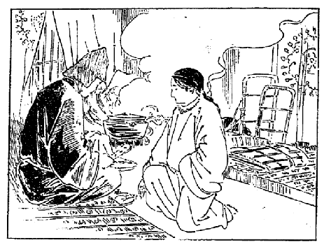
女難に遭わんとす
が、いろいろな事を
旨く持ち掛けて来たです。どうも一心というものは巧みな方法を産み出すものと見えて、ぼつぼつと自分の故郷のいい事のみ言い出した。自分の
阿母さんは非常に慈悲深い親切な人である。それから自分の故郷にはヤクが百五、六十
疋に羊が四百疋ばかりある。実に豊かな
活計、チャチャン・ペンマで真に幸福なる活計をしているのである。私は
独娘でまだ自分の気に合うた聟さんがないのであるというような事からいろいろな説明をして来たです。チャチャン・ペンマということは茶と酒と代るがわる飲むという意味の言葉で、チベットでは例のバタを入れた茶とそれから麦で製造した薄い酒とを代るがわる飲みますのをもって無上の快楽として居る。これは大変に財産の豊かな者でなければ出来ない。で気風もまたバタ茶と酒の快楽を極めることに傾いて居るのみならず、ほとんど人の目的であるかのごとく心得て居るのである。普通社会の快楽なる
究竟の状態を言い
顕わすにはチャチャン・ペンマという一語で事が足りて居る。少し横道に入るようですが、この
が面白い。三尺もあろうかという木の
筒桶にバタと茶〔湯〕と塩を入れて、そうしてその筒桶に相当した棒の先を
菌のような具合に円くして、その棒で日本で言えば
龍吐水で水を突くような具合にシュウッシュウッと
扱き上げ
扱き下げるその力は非常なもので、我々にはとても出来ない。その扱き上げ扱き下げる間に茶やバタが摩擦されて一種の茶〔湯〕が出来るので、チベット人はその扱き上げ扱き下げる時の音の
良否で
旨いのと
不味いのとの出来るのが分って居ると言ってるです。お話は元へ戻りますが、その娘がしきりに自分の家がこういうようによい都合になっておるのみならず、私の地方ではラマでも皆
家内を持って居られる。ラマが家内を持たれてこの世を楽しく過されるということは実に結構な事で、私は彼の人達がそうして楽しく過されるのは誠に利口な仕方であると思って居る。どういう訳であなたは私の相手にならないのか、お前は馬鹿であるとこう言わぬばかりに言って居る。ちょうどその時にふと思い出した事があるです。
それは
釈迦牟尼仏がブダガヤの
金剛道場の上に安坐なされてもはや仏になるに違いないという時に当って、悪魔の大王は大いにこれを恐れて自分の娘三人を遣わし、釈迦牟尼
如来の心を大いに誘惑しようと掛ってその
素振、その眼付、如来を色情に誘惑する様子のあらゆる限り、その時代のいわゆる誘惑手段の三十二法を尽したけれども、釈迦牟尼仏は泰然として動かない。そこでその三人の娘らは歌を
謡ったです。その歌はダアワが私に言った事と同じような事でございますから、ここにちょっとチベット語の経文から訳してその事を申して見ましょう。
優し美しいとおしの、姿や妖婉の女郎花、香ばしき口に妙の歌、いとも嬉しき愛の主、住むふるさとの極楽に、まされる妾の楽しみを、受け給わねば世の中に、これより上のおろかなし
という歌でありましたが、私は
固より
釈迦牟尼如来のよう
に悟りを開くことが出来ないから馬鹿には相違ないが、もう一歩進んで馬鹿になってもよいという考えでその時に一意これを拒絶することに
力めながらも、どうやら小説的の境涯にあるような感じが起ってむしろ娘の心を気の毒に思いました。その時一つの歌を作っておきました。
愚かにもまして愚かになりなまし
色にすゝめるさかし心を
しかるに娘はだんだんと興に乗じて自分のことを
肯くようにと素振りをますます現わして来たです。その時にはちょうど親や兄弟は皆買物に行きまして、テントにおるのは私と娘だけですから、大いに時を得たりという訳でだんだんと勧め掛けた。私はその時に
履を直して居ったです。履を直しつつ娘のぐずぐずいうやつを聞いて居るのです。実に面倒で仕方がない。まんざら樹の根や石の
磧で出来て居る人間でないから幾分か心の動かぬ事もないが、そんな馬鹿な事をやった日には自分の
本職に背く訳でもあるし、かつ
釈迦牟尼如来の見る前も恐ろしいという考えがありましたから、それがために一点も心の底の掻き乱されるというような事はなかったです。で私はその娘に対して、「誠に結構な家であろうが、その結構な家に残って居るお前の
阿母さんは生きて居るであろうか死んでいるであろうか。それが分るかどうか」と私はぽんと一本
喰わして
遣りました。さあといって娘は非常に驚いたような顔をしたです。
娘は驚いて、「それは生きて居るか死んで居るか分らない。私が国を出てから一年程こうして
阿父さんと一緒に廻って居る。で
阿母さんは病身であるから、出て来る時どうか死なないようにしてくれろと言って泣いて別れて来たんですが、今どうして居るか分りません」と言いますから、私はそれへつけ込んで「ふーんそれが分らないか、お前は自分の家が実に結構なものである、立派なものであると思って居るが、私はちゃんと
阿母さんの安否を知って居る」と、少しく
仰山に言いますと、娘が恋慕の情はにわかに恐怖の情と
憂愁の情に変って、それでは自分の母が死んだのではないか知らんという考えを起したです。
ことにチベットではラマと言えば
神通力を得て居る人が沢山あるということは俗人の迷信になっておるから、私に対してもやはりその妄信を繰り返してにわかにその情緒を変じた。そこで私はまずこれで安心だと思い、「なあにお前の
阿母さんは死んだという訳でもあるまいけれども、この世の中は阿母さんが先に死ぬか、お前が先に死ぬか分らぬ。私だって
明日死ぬか分らない。そういう危ない無常の世の中で、僅かの楽しみを無上の快楽のように思うて居るのは、実に馬鹿気た話であるから」と言って
懇々説諭をしたです。すると「郷里の母が死んだか死なないかどうか本当に言ってくれろ」と言って
です。それには少し困りましたけれども、まあよい加減にその場を過しますとその後も娘は母の事を思って全く私の事を忘れてしまった。大いに私は安心を得たです。そこで数日滞在の後、八月二十六日に一緒にそこを
出立して東北の方に向って行くと、その辺は一体に沼の原でそこここに浅い水が見えておる。一里ばかり進んで行くと大変深い沼がある。杖でもって測量して見ますに、どうも杖が落ちつかない。だから
此沼は到底渡るべきところでないというのでまた引き還して、半里ばかり後戻りをして道を東の方向に取って進みました。すると今度はその沼から流れて来たのか川になって居りまして、その川を三筋ばかり向うに渡って、ちょうど行くこと四里ばかりにしてその沼の間を離れてまた山の間へ指して着いた。そこでその晩は泊ったです。その辺にはギャア・ニマ及びギャア・カルコへ商売に往来の人が沢山居って、あっちこっちにテントが見えて居るです。それからそういう場合に
頭陀行をすればよいと言うので
をやりました。僅かな物を上げてくれるのですけれども、五、六軒廻って来ると一日の
喰物くらいはある。その翌日も同様頭陀行の出来るところは
乞食をして、それで夜はいつもお説教です。そのお説教がなかなか
同伴の人らの心を和らげる利き目がある。もしそうでなければ、私はその人らのために危く殺される筈です。しかし今の間は殺される気遣いは滅多にない。なぜかと言うとこの辺には人も沢山ありますし、また人が居らないにしたところがこの辺は一体に霊地になって居って、いかなる猛悪の人間もこの霊地に一度入る者は強盗もやらなければ、また狩もしないという訳です。だから今の中は大丈夫ですけれども、その霊跡の地を離れたならばきっとやられる
虞がありますから、余程教育を
旨くやっておかないといかんです。というような点から私は
力めて説教をしました。それがまた大いに悦んで聞かれた。ところで八月二十八日の日に八里ばかりの波動状の山脈を
踰えて行くのに一滴も水がない。
立際にお茶を一
盃飲んだきりで麦焦しも喰うことが出来ない。随分喉は乾きましたけれども、前に喉が乾いて
を
嘗めた程困難を感じない。そこでその日の夕暮ランチェン・カンバブの上流の方に着きました。このランチェン・カンバブというのは英語にリバー・ストレージと言いまして、先にも申しましたように、ずっと西に流れてインドへ行ってシタ川と合してインダス川となって
アラビヤ海に注いで居る川の源でありますが、この川はマナサルワ湖から出て居るという土人の説明です。それから私は押し返して、「それでもマナサルワ湖はすべて山で取り囲まれてあって、どこからも川の出るところがない」とこう申しますと、いやそれはそうだが、この川の流れ出す源はマウント・カイラスの西北方にある山間のチュコル・ゴンパという寺の東の
岩間の泉から流れ出すので、その泉は取りも直さずこのマナサルワ湖から来て居る水である。つまりマナサルワ湖から
隠川になってこの方に流れ出して居る訳だという説明の仕方です。
成程ちょっと面白い考えではありますけれども、どうも位置の高低を考えて見るとこの川がマナサルワ湖の水面よりも高いところから流れて来て居るように思いましたから、土人の言った説明に感服することが出来なかったです。で、その川の端へ着して例のごとくテントを張って泊った。その翌日がこの辺で名高いプレタプリーという霊跡へ参詣に行きますので、荷物並びにテント等すべての物と留守番二人をそこに残して私と娘とその
親人ともう一人の女と四人で出掛けて参りました。で、そのランチェン・カンバブに沿うて西の方に降って行くと、大きな岩が三町ばかり続いて居るその岩の間を通り抜けますと、また北の方から注いで来て居る一つの川がある。そういう川がその辺に三筋あるので、トクポ・ラプスン（三筋の友達川という意味）と言って居るです。その一筋を渡って一町ばかりの坂を上りますと大変広い原がある。その原には
があります。それを見渡しますとちょうど宇治の茶畑に行ったような観念が起りまして実に我が国を忍ばれるようでした。それからだんだん進んで半里余り行くとまた一つの川に出逢った。それも前のと一緒の名で、それを渡ったがやはり深さが腰位まであってなかなか両方とも冷たい。氷の流れて来て居る川ですから非常に
凍えた。で上に
昇ってだんだん進んで行こうとするけれどもどうも進めない。そこで同行三人の人に向って、「私はここで一息して行きたい。どうも
灸を据えてから出掛けないと歩けないからあなた方先へ行って
貰いたい。」というのはその人達はその日に参詣して留守番に帰り、私は一晩霊場に泊る筈ですから、
同行の三人もそんならばこの方向に向って道を尋ねて来れば間違いないからと言って、その人らは先に行った。どうもチベット人の身体の強壮で歩くことの早いには――私は余程修行したつもりであるけれども――とても及ばない。足が動かんのにその人らと一緒に歩いて行くことは実に困難ですから断ったので、そこでマッチと
艾を取り出して足の三里に灸を据えますと大分足が軽いような感じがして来た。一時間もそこで休息してだんだん西の方へ二里ばかり進むと平原が尽きて、川に沿うて下流へ降って行くとずっと向うに寺が見えて居る。実に立派なもので石の
摩尼檀がある。その摩尼檀はちょうど汽車の列車が
繋がって居るような風に見えて居る。もっともこれはこの辺にあるばかりでなく、ヒマラヤ山中にも沢山あるのです。ことにヒマラヤ山には
が居って全く汽笛の声とちっとも違わぬ声を出すです。列車のごとき摩尼檀を見て不意とその鳥を思い出して――この辺に汽笛鳥は居らんですけれど――あたかも文明国の土地に出たかのような感じが生じました。
真実文明国の土地に来たような心地がして向うの方を見ますと、本堂もあれば僧舎もあり、それからなにか石の塔のようなものも沢山あって随分立派に見えて居る。チベットの高原地で石を集めて家を建てるということは非常に困難な事でかつ大金を要する事であるけれども、ここはプレタプリー（
餓鬼の
街）といって、昔パンデン・アチーシャがインドから真実仏教の面目を伝えてこの国に来られた時、この地に来てプレタプリー即ち餓鬼の街という名を付けられたです。こりゃどうも余程面白い名ですが、一体チベット人は
とも
謂うべきもので、まあ私の見た人種、私の聞いておる人種の中ではあれくらい
汚穢な人間はないと思うです。もちろんそういう習慣は昔も今も変らず、パンデン・アチーシャが来られた時分にも今の通り汚穢な有様であったから、つまり
糞を喰う餓鬼の国の街であるという名を
命けられたものと見える。それをチベット人はインド語の意味を知らんものですから、パンデン・アチーシャは我々の街に誠に
尊い名を
命けて下すってありがたいと言って誇って居るです。それから寺が建てられていろいろ尊いラマ（
上人という意味）が参りまして、その後ズクパ派のラマでギャルワ・ゴッツァン・パーという人がここに完全な道場を建てられた。で今に存在しておるのでございますが、僧舎も四つ五つあるです。私はその中の一舎に着いて宿を借りました。そうして先に行った私の
同伴はすでに参詣を済まして帰って行きました。
其舎で昼飯を済ましてその寺の僧侶に霊跡の案内を願ったところが、始めに連れて行った本堂は表四間に奥行五間位の本堂、もっとも石造で大変丈夫に出来ておるです。他のチベット風の寺のように二階造りあるいは三階造りになって居りません。ただ一層の家でありましたが、その中に最も尊く
祀ってあるのが
釈迦牟尼仏と、チベット仏教の古派の開祖ロボン・リンボチェの肖像であるです。このロボン・リンボチェについては、実にいうに忍びない妙な事が沢山ございますので、これは
今日お話することは出来ませんが、余程奇態な仏法の人で恐らく今日日本の堕落僧といえどもこの人の行為を聞いたならば驚嘆せざるを得ないだろうと思うです。で私はその
二方がれいれいと
并べて
祀ってあるということについて、実に言うに言われぬ
嫌な感じがいたしました。なぜならばそのロボン・リンボチェというものは、悪魔の僧侶と姿を変えて真実仏教を
紊すという大罪悪人であるからです。その祀ってある
須弥壇が下に一つの幕が張ってある。その幕の中には実に
尊い有難い物があるということで、一タンガー（我が二十五銭）出せば見せてやると言う。私はさっそく二十五銭払って見せて貰いました。それはいわゆる古派の開祖のロボン・リンボチェが、その土地に来てこの岩に対した姿がそのまま自然に映ったのであると言う。
もちろんチベット人はその像に瞳を
据え遠慮なく
凝と見るということはしない。まず
活きた仏のようであるから余りに見詰めると自分の眼が潰れるというような馬鹿な考えを持って居る。私は充分に見ましたが、古代
奸黜なる僧侶がその岩に彫刻をして、そうしてよい加減な絵具を付けてこしらえたものであるということがよく分った。それも非常に美術的に、天然に映ったようにでも出来て居ればたとい人造のものでも私共の眼にはそれを発見するに困難でしょうけれど、
実にチベットは美術の進歩し
て居らぬ国であるからこの像なども詰らない遣り方に出来て居る。ですからじきに人工であるということが発見された。そこでこういうものをもって人を欺いて金を取る
奸黠な手段がこの仏教の盛んなチベット国において行われて居るというのは実に奇態である。日本あたりではこういうような事をやる悪魔の僧侶が随分あるということを聞いて居ったが、どうもチベットの僧侶も日本の僧侶も一様な事をやって愚民を欺くかと思いますと実に仏教のために慨歎せざるを得なかったのです。
けれどもこの道場は随分天然的に良い道場なんで、チベットの諺にも、
プレタプリーに逢わざれば、雪峰チーセに逢わぬなり、コルギャル池を巡らねば、阿耨達池も巡らざる
というくらいですから随分尊い霊場である。この諺の意味は雪峰チーセに参詣しても、このプレタプリーに詣らなければ、つまり雪峰チーセに参詣したことにはならない。
阿耨達池を巡って見ても、その阿耨達池の東南方にあるコルギャル池を巡らなければ何にもならぬという意味なんです。で天然の有様から見ても随分立派な道場であって、その下にはランチェン・カンバブの大河が洋々と西に流れ去って居るです。その川を隔てて向うの岸には奇態な岩壁が重なり立って居りまして、その色合も黄あるいは紅色、誠に
爽かな青色、それから緑色、少しく紫がかった色というようにいろいろな
彩が現われて居る。さながら虹か、
霞の彩られたような言うに言われぬ美しい模様を現じて居る。ことに岩でありますから、
突兀としてその姿の鋭いところはその美と相映じて
余程面白く見えるです。こちらの方の寺のある近所には、これまた天然の
が沢山にありまして、いろいろの形を成して居る。その岩に愚僧共がいろいろの名を
命けて悪魔降参石とかあるいは
馬頭妙王の夫婦の石像、雪峰チーセの石像、
観世音菩薩の自然像、
迦葉波仏陀［＃ルビの「カッサパぶっだ」は底本では「カッサバぶっだ」］の大塔というようなそれぞれ似寄りの名前を付けまして、愚民の心を誘惑して居るです。しかし私は先に
拵え物のロボン・リンボチェを見て感情を害して居るところでしたから、この美なる天然の景色にも感心せずに案内坊主の言うことがいちいち気に
障るというような事で、ついにはもうその案内坊主をぶんなぐってやりたいくらいに思ったけれども、そのままにいちいち聞いて参りました。で、ずっと
神石窟という
岩窟の所から川に沿うて二町ばかり降りますと、大きな温泉が三つばかりある。
小さな温泉も二つ三つあってその温度を見るに非常に熱いのもあって手が付けられない。どのくらいの温度か知りませんが、
慥に
百度以上の温泉でありました。はなはだ冷めたいというようなものはなかったです。いずれも透明な清水である。それからその辺に温泉の原素の結晶したものがある。その結晶しておる色を見ますと、白いのもあれば赤、緑、青というようなのもあるです。それはみな石灰を固めたような具合に固まって居る。で参詣者はこれは霊跡の薬であると言って持って帰るです。なるほど何かの薬にはなるでありましょう。そういうようないろいろの説明を聞き、その夜はまたその寺に一宿して坐禅に一夜を明かし、その翌朝帰路につきました。
すると広い原の中でどういう風に
路を失ったのか
何程行ってもその川のあるところに出ない。どうもこりゃ奇態だ、少なくとも三時間来れば川の端に出る筈だが、もうはや五時間も歩いたのにまだ川が見えない。だんだん見ますと北の方の山に向って進んで居る。こりゃ大変だと思って道を転じて南東の方向へ進んだです。すると川に着きました。その川を渡って参りますうちにとうとうその日は飯を喰わずに日暮になってしまったです。後で聞きますと、テントの人達は大いに心配して、あのラマは水に連れて行かれて死んだのじゃあるまいかと言って、日暮がたぼつぼつ帰って参った時などには娘さんが羊を連れて出掛けて来たです。で私の姿を見ると大悦びで、あなたはもう死んだのではないか知らん、今から捜しに行こうという次第であったと言う始末。その翌日もやはり東の山の方に進んで行きまして、ラクガル湖の東北、マナサルワ湖の西北の原に着きました。
其原は大なる
雪峰チーセ
（〔の台地であってそこから一里半程湖水に向って南に行きますと、タルチェン・ターサムにつきます。チーセ雪峰から台地が斜な平地になって〕）から山がずっと湖水の方に向って流れ込んで行くような具合にだんだん低くなって居る斜形状の平原です。〔我らは〕その夜はそこへ泊ってこれよりいよいよ大雪峰チーセへ参詣するということになりました。
ところがその夜の話にその人らは一緒にこの雪峰チーセを
巡ろうということを承諾しない。皆別々に巡るという。何故かというにその人らはここに来て四日なり五日なり居る中にこの山を三度も巡りたいという。で、その巡る道は二十里余りある。私はその人たちと一緒に一日に二十余里
廻って帰る訳にいかないからどこかに泊ってぼつぼつ
詣らなければならん。しかるにその人たちは夜の十二時から起きて
翌晩の八時頃まで廻って来るので、それで大抵五日居る中に三遍位廻ろうという勢いです。娘たちも二度廻ったです。どうも驚きました。私は一度廻れば沢山ですからまず四、五日分の食物を自分で背負ってその廻り道に出掛けて行ったです。これは何を廻るのかというと雪峰チーセの中央に在る釈迦牟尼仏の体になって居る雪峰とその周囲を取り巻いて居る
諸天諸菩薩の雪峰と五百羅漢の雪峰とがあるのです。
その外側をぐるっと廻るように道が付いて居る。その廻り路にも非常な
険しい坂があってある時にはほとんど山の頂上まで登らなくちゃあならん場合もあるです。けれども山の間にそういう具合にぐるっと一廻り出来る道が付いて居る。その道をチイコル（外側の廻り道という意味）という。それからパルコルと申して
二番目の廻り道とナンギイコル（内廻り道）という道があります。それは神か仏でなければ巡られないといって居る。普通に巡るのはチイコル（外廻り道）でそのチイコルを二十一遍廻ったものはパルコルを
廻ることを許されるのです。これは外道の内部に在るのですから道は余程付いて居るけれども非常に
険岨であって普通の者には巡れない。もっとも雪のために
仆されあるいは岩のために進行の出来ない所が
沢山あるそうです。そのナンギイコルには雲を
掴むような訳の分らぬ神話が多い。私はそのチイコルに着いてまず普通の方面より寺へ
参詣しました。その廻り路の東西南北の隅々に一軒ずつ寺がある。これを名づけて
という。私は始めに西隅にあるニェンボ・リーゾンという
阿弥陀如来の
祀ってある寺に参詣しました。その寺がこの
霊場では一番収入の多い寺で、日本でも阿弥陀様を祀ってあるお寺は収入が多うございますが、奇態にこのチベットでもそういうような事になって居って大変な上り物です。僅か夏季三月の間にこの寺の上り物は一万円内外の物が納まるという。かかる霜枯れた土地としては非常の収入といわなければならぬ。それは皆ブータン国の王様に納めるのです。妙です。この雪峰チーセという寺はすべてブータンの
管轄地です。一体はチベット法王の支配に属すべき者であろうと思うのに、その昔ブータンのズクパ派の坊さんがこの山に関係が多かったものですから、そこでこの山の支配権がブータンに帰したことと考えられる。その寺の中に入って
阿弥陀如来を見ますると純粋に光沢ある白い宝石をもってその如来を造ってある。チベット人の技術としては大変立派に出来て居ります。そのお顔がチベット風にごく優しく出来ていかにもありがたく感ぜられる。その前に二本の象牙が建てられて居る。その長さは五尺位で余程太い物です。でその後を巡りますとチベット蔵経の仏部が百冊書籍棚に挙げてある。この蔵経は読むという目的でその棚に上げてあるのでなくってお
燈明を上げて
で上げられて居るのである。実に馬鹿げた事で、お経は読むために拵えてあるのにお燈明を上げて供養するというのは余程おかしい。もちろんお経を粗末にして鼻紙にしたり塵紙にするような人間があればそれは常識を失ったものといわなければならんけれども、お燈明を上げるというのも珍しい。けれども少しも読まずに経堂などに仕舞ってある日本の伽藍寺のごときよりはお燈明を上げるだけが優しいように思われる。私はその阿弥陀如来に参拝して阿弥陀経一巻を読みそれからその寺の
霊跡を尋ねて立ち出た。そこからがすなわちこの天然の
曼荼羅における純粋の所であるです。その名をセルシュンすなわち
という。もちろん黄金があるのではないけれども実に奇々妙々な岩壁が
厳然として
虚空を
劈くごとくに
峙って居る。その岩壁の向うに玉のごとき雪峰が顔を出して居る。その姿を見るだけでも勇ましいという感に堪えんほどであるのにその碧空に
峙った剣のごとき岩と岩との間からおよそ千尺位の幾筋かの滝が落ちて居る。その壮観といったら恐らく
喩えようもないです。随分幅が広いのもあって沢山見えて居りましたがその内最も大きなのを選ぶと七つばかりある。その滝の形状の奇なることは
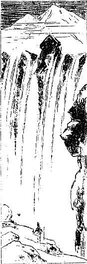
カイラス雪峰の七滝
が跳って岩下に飛び降るかのごとき趣がある。あるいはまた徐々と布を引いたように落つる滝もあり
蜿蜒として
［＃「蜿蜒として」は底本では「蜿として」］白旗の流れて居るようなのもある。もう私は暫くそこにじっと坐り込んでその風致を眺め、うっとりとその境涯に
見惚れて茫然無我の境に入りました。で、その七つの滝を名づけて試みに雪峰チーセの七龍といったです。実に愉快でした。道の左側にも同じく滝が懸って居りまた雪峰もありますけれども右側にある今の光景には較べ物にならんです。これだけの景色を見ただけでも種々な難儀をして来た
甲斐があると思いました。そうなると何か歌を作ってみたくって堪らないが出ないです。それからだんだん山を廻って行くといわゆる山の中央から北に当って居る方向の所に出ました。
そこにリ・ラ・プリー（ヤクの角の所という意味）という
精舎があります。これは
金剛仏母が姿をヤクの形に変えて、その時にこの山へ始めて巡りに来たラマを導き終るとこの岩窟の中に隠れた、その隠れ際に岩に突き当って角が一本落ちた、その角がそこに残ったということでこの地を称してヤクの角の所というんだそうです。その寺が阿弥陀寺に続いて収入の多い寺、坊さんは前の寺よりも余計居るです。といったところで十五人ばかりしか居らない。前の寺は四人のほか居らんです。その寺に着いた時は日暮ですから宿を借りますと、その寺の幹事のような人が大変私を信用してくれて自分の居間を明けて、この室はちょうどかの雪峰チーセを見るに都合が
好し、夜分はごく美しい月を見ることが出来ますから
此室にお休みなさいという。大いに悦んでそこへ坐り込んで居ると茶なども拵えてくれた。御膳は夜分
喫べぬといったものですから茶の中へバタを余計入れてよく拵えてくれた。
そうしてその坊さんが私と遙かに相対して居る山について説明してくれた。その門前の南方に当って中央に
巍然として聳えて居る大いなる雪峰はすなわち雪峰チーセすなわち
釈迦牟尼仏の体である。その前の東の方の小さな雪峰はこれは
文珠菩薩の姿である。中央にあるのが
観世音菩薩、西にあるのが
金剛手菩薩の像である。それからいろいろ
外に見えて居る細かな峰について説明をしましたが、委しい事はこの雪峰チーセの霊跡史を翻訳すれば分ることでありますからここには申しません。その夜は真に愉快を感じた。その雪峰の前を流れて居る水は
潺々として静かに流れ去る。その
漣波に明月が影を宿して居る。その月光がいちいち砕けて実に
麗しき姿を現わして居る。その水音を聞いて私の観念は非常に静かになったです。あたかも極楽世界で樹の枝に吹く風の声が正法の声と聞かれるごとく、
此音もやはり仏法の音楽を奏でて居るかのごとく感じて、我が心もだんだんと深い霊妙なる境涯に入りました。もちろん真実霊妙なる霊地は自分の
清浄なる心の中にありということはかねて釈尊から教えられて居りますけれども、やはり我々凡夫はかかる霊地に参りますとその心までも霊になって、大いに感化を受けた訳でもあります。
さてその翌日もその寺で泊り込んでいろいろその地の事について研究しましたが、夜はやはり
禅定に入ってその楽しみを続けた。その時の楽しみは一生忘れられません。その翌日は非常に
厳い坂で
三途の
脱れ坂というのを
踰えねばならん。ところが幹事は誠に親切な人でヤクを貸して上げましょうという。私とは余程深い縁があると見えて出来得るだけの親切を尽してくれいろいろな喰物もくれました。そのヤクに乗って一人の人に案内されて恐ろしい坂を登って参りました。するとチベット人の妄信といってよいか信仰力といってよいか、仏陀に対して自分の
罪業を
懺悔し自分の善業を積むという熱心は実に驚くべきほどで、その山を一足
一礼で巡るという
酷い
行をやって居る者もあるです。それらは大抵若い男女がやって居るので老人には出来ない。ただ登って行くだけでも随分困難を感ずるですからとても若い者のような具合には行かない。私はヤクに乗って登ってさえも随分苦しい。何故かならばいかにも空気が稀薄ですから、三途の
脱れ
坂を二里ばかり登りますと非常に疲れて呼吸が大分苦しくなったから少しは薬なども飲むつもりで休みました。するとそこで面白い話を聞いたです。それは向うの
釈迦牟尼如来といわれる雪峰チーセに対して礼拝をして居る人がある。その人はいわゆる強盗の本場であるカムの人です。様子を見るに実に
獰悪なまた豪壮な姿であって
眼眦なども恐ろしい奴ですから、強盗本場の中でも一段
勝れた悪徒であろうと思われたです。その悪徒が大きな声で懺悔をして居る
その懺悔のおかしさと言ったらないです。なぜならばおよそ懺悔というものは自分のこれまでした
罪業の悪い事を知って
其罪を悔いどうかこれを
免してくれろ、これから後は悪い事しないというのが一体の主義である。しかるにその人らのして居る懺悔は実に奇態で私も聞いて驚いたです。その後ある人に聞きますればカムの人がそういう懺悔をするのは当り前である。誰でもその通りやって居るという。だから私は実に驚いた。それはどういう訳かというとこういって居るのです。
ああ、カン・リンボチェよ。釈迦牟尼仏よ、三世十方の諸仏菩薩よ。私がこれまで幾人かの人を殺し、あまたの物品を奪い、人の女房を盗み、人と喧嘩口論をして人をぶん撲った種々の大罪悪を此坂で確かに懺悔しました。だからこれで罪はすっかりなくなったと私は信じます。これから後私が人を殺し人の物を奪い人の女房を取り人をぶん撲る罪も此坂で確かに懺悔致して置きます。
とこういう事なんです。実に驚かざるを得んではありませんか。それから上が
というのでその解脱〔仏〕母の坂を登って行くと右側にノルサン（
善財童子の住んで居る峰という意味）の峰がある。その山に沿うてだんだん登って解脱〔仏〕母の坂の頂上に達しますと、そこに天然の岩の形で解脱〔仏〕母の像がありその東北に当って奇岩怪石が
雲霞のごとくに
峙って居る、そこに何か像のごとき天然に
突兀として突き立って居るものがある。
其岩を称して二十一の解脱〔仏〕母の姿であると説明をして居るです。そこが一番外道の中で高い所で
ほとんど雪峰チーセの高さと高低がない。ですからその辺は随分寒くってそれで空気が稀薄ですからじっとして居っても
心臓の鼓動が激しくいかにも苦しいような感じが生じた。幸いにヤクに乗って
上ったものですから非常な苦しみを受けなかったけれども、もし歩行して上ったのならばとても今日ここまで到達することは出来なかったであろうという感じが生じたです。もちろんチベット人は非常に強壮なる肺を持って居るから平気で、かくのごとき険山を降り昇りして居るんですが私どもはなかなかチベット人の半分もない肺を持って居るのですから
徒歩で上ることは思いも寄らんことです。それから三町ばかりその坂を降って参りますと大きな池がある。その池はすっかり氷で張り詰められて居る。その池について一つの神話的面白い話がある。それは昔
善財童子がこの池で手を洗われた。その時分には夏の中は氷なんかは張って居らなかったのであるけれども、その後ある巡礼が子をおぶってこの辺に来てその綺麗な水で手を洗おうとして
俯向くとそのおぶって居る子が池の中に落ちて死んでしまった。それからこの山の神様がこれではいけないというのでいつも氷を張り詰めることにしたのである。これは神様の徳で我々を保護するために張られたところの厚い氷であるという説明なんです。そんな話を聞いて誠にきわどい坂をば降って参りました。もちろんその辺にはいろいろと天然の奇なる岩石に名を
命けてあるけれども余り長くなるから止します。坂は非常に厳しいですからヤクなんかに乗って
降ることはとても出来ない。
だんだん下へ降って雪峰チーセの東の部へ着きますと、ズンツル・プク（
幻化窟）という名跡があります。この寺はチベットで最も尊崇され最も賞讃されて居る尊者ゼーツン・ミラレバが開かれた道場で、大変面白い話が沢山あるが皆宗教的専門の事でありますからここで説く必要はありませんけれども、ゼーツン・ミラレバという方は非常な
苦行をされた人でまた仏教的の真理を
諸方に顕揚されたところの大詩人である。かくのごとき一大詩人はチベットにおいては前にも後にも出なかった。そうしてこのお方の伝記は実に奇態な事が自然的に出来上って居る。全く詩的伝記に成り立って居るです。ただにその人一部の伝記が詩的であるのみならず、そのまた思想が全然詩的の
幽邃な趣味を持って居る。それゆえにこの頃欧米学者のある者がこのお方の詩をあっちこっち取り抜いて分り易いようなところをその国語に翻訳して居る。それから私の知って居るロシアの博士も私がダージリンに帰ってから私の説明をきいてロシア語に翻訳したです。実に完全なものであるといって大いに悦んで居った。で、この寺に一夜泊ってその翌日ハムフンギチュ（靴落し川）という川に沿うて降りまして南方のギャンターという寺のある下の方に着きました。その寺にはドルジェ・カルモ（
白金剛母）を祀ってある。道筋よりは十五、六町内へ曲った山中にあるので、通常の道にはタルチェン・ターサムという駅場がある。ここには三十軒ばかり石造の家がある。その
遠近にテントも十二、三見えて居る。この辺の
であってまた租税物を取り立てる所である。その市のある家について宿り、私を送ってくれた人とヤクはそこで暇をやりました。私はその夜例の観法に一夜を過しましたが、その翌日十時頃に私と別れて居った同行の人たちが参りました。このタルチェン市はマナサルワ湖の西北の隅とラクガル湖の東北の隅の斜線状の平原にあるのです。その斜線状の平原に沿い東南に向ってマナサルワ湖の西を進んで参りその翌日もやはり同じ方向に進んでポンリーという雪峰の下に着きました。これは前にもちょっと申したチベット古代の教えのポン教の霊跡である。しかるにここに大きな寺があってその寺はもちろんポン教の寺であると思って居ましたが、そうではなくチベット仏教の新派の寺でありました。なかなか立派なものが山の間に建ててある。しかしその寺までは私はよう行かなかった。さてこの辺にはいろいろの
蕈が生じて居る。すなわち
水蕈、
黄色蕈が樹もないのにその湿地に生じて居る。その蕈が非常にうまいからというので同行の女たちは取って参りバタで
揚げて塩を掛けて喰いますと成程真にうまいものであったです。どうもこの辺は大分霊跡から離れて居りますので、
その
宿主（巡礼者）らのいうにはもはや我々の本業を始めんければならぬとこういい出したです。その仕事は何であるかというに遊猟に出掛けるという。この辺に住んで居る鹿を撃ちに行きますので、ただそれだけなら当り前ですけれども都合次第ではその三人の兄弟が出掛けてからに良い旅人を撃ち殺して物を取って帰るのじゃないかという疑いもあったです。何気なく進んで参りましたがどうも私の身も大分危ないように感じましたから何とかしてこの人らと離れなければならん。しかしながら突然逃げ出したならばかえって彼らの疑いを受けて殺されるようになるかも知れんから、何とかよい方法が付けばよいがと思いながらその翌日ある山の端に着きました。ところが同伴の者は自分の眼の前でチャンクーという獣を発砲して殺しました。しかもそれを喰うためではない全く慰みに殺したのです。
この獣は犬のような大きな奴で毛は余り深くない。それが夏の間は赤茶色で実に綺麗です。ちょうど私が見た時分にはその色でありましたが、冬になると白灰色に変ずるそうです。その灰色に変じたのは私は見たことはないですがチベット人の誰でもいう説明によるとその事は確実らしい。ところでその耳は鋭く立って居りましてその顔付の
獰猛にして残忍酷薄なる様子を示して居ることは一見恐るべきもので、現に旅人でも一人位であると不意に噛みつかれ喰い殺されることもあるそうです。そういう奴が五、六
疋向うの山の端にやって来たのを兄弟三人がこちらから発砲して殺したその時の顔色を見ると、非常に愉快を感じたらしく見えたです。その非常に愉快に感じて居る残忍の有様を見てこの様子じゃ人を殺して随分愉快を感ずる方であろう、こりゃどうも危ないという感覚が起って来たです。
その翌日はやはり雪が降ったものですからそこへ泊り込みになったです。その時宿主らの連れて居る猟犬は
兎狩に行って兎を喰殺して帰って来るという
始末で大変に
殺伐な光景が現われて来た。その翌九月十五日にだんだん東に向って波動状の山を
踰えてほとんど峰の頂上に着きました。ところで宿主のいいますには、もうここでお別れだといいますから何でお別れかと聞くと、ずっと西の方に見えて居るマナサルワ湖と湖水の中央から南方に見えて居るマンリー
雪峰を指して、最も尊い霊跡を離れたから我々はこれから本当の仕事に掛るんだ、だからここで
礼拝してお別れを告げてまた後にもう一遍ここへ巡礼に来た時お逢い申せるように願いを掛けて置くとこう申して礼拝をするから、私もそれに
傚って礼拝をしてそこで余程感慨に打たれたです。
幾千里の山海を隔て非常な困難を冒して日本人として始めてこのマナサルワ湖に着いた。しかるに今ぞこの霊なる湖とお別れせねばならんかと思うと、何か知らん無限の感に打たれました。それから降ってまた波動状の山を幾度か
踰えてポンリー寺の所属の十二、三テントのある部落の近所に着き、まずその部落へ指して
頭陀行即ち乞食を行いに参りました。それはただ物を貰うというのが趣意ではなくて
どういう人民が居ってどういう風に暮して居るか、あるいはいかなる人情風俗であるかを幾分か研究したりその他の有様も知りたいという考えがあったです。けれどもただぶらぶら散歩する訳にいかないからまず乞食という姿で行けば、物をくれてもくれなくってもその辺をよく研究することが出来る。常にそういう考えを持って居るからいつもどこかへ出ます時分には乞食に出掛けてあちらこちらを見廻った訳ではございます。その翌日もその宿主らはそこへ逗留して遊猟に出掛けた。私はテントの中で漢字の法華経を読んで居りました。するとその一番兄の女房とそれからダアワという娘（仲弟の女なり）が外で何か話をして居った。
始めは何をいって居ったかよく分りませなんだがラマラマという声は確かに私の事を意味して居るような話でしたから、聞くともなしに聞きますとダアワという娘のいうに、あのラマは私の
阿母さんがどうも死んだらしいような話をした、本当に死んだのだろうかとこういって尋ねて居るです。すると他の婦人は笑って、なにそんな事があるものか。あなたが余りあの人に思いを掛けたからそれでよい
加減な事をいってごまかしたんだ。そんな事をいうのを聞いて居った分には役には立ちゃあしない。それにこの間も私の内（夫を指していう）が話したことだが、もしあのラマが俺の
姪の
婿に成らないようであれば、
屠って喰物にするという話であった。実際内のも非常に怒って居るんだからその訳をよくいって一緒になったがよかろうということを私に聞えよがしにいって居るです。
私はどうも驚きました。けれどもその時に決心した。もしかかる事のために殺されるならばこりゃ実にめでたい事である。我が戒法を守るということのために殺されるというのは実にめでたい事である。これまでは幾度か過ちに落ちて幾度か
懺悔してとにかく今日まで進んで来た。しかるにその進んで来た功を空しくしてここで殺されるのが恐ろしさにあの魔窟に陥るということは我が本望でない。ただ我が本師釈迦牟尼仏がこれを
嘉納ましまして私をして快く最期を遂げしめ給わるようにという観念を起して法華経を一生懸命に読んで居ったです。しかしその日は何事もなかった。その翌日二里ばかり向うへ行ってまたある山の端へ着きましてずっと向うの方を見ますと何か建物のあるような所が見えた。そこであそこは何かといって尋ねますとトクチェン・ターサム（駅場）であるという。例のごとく私はそこへ乞食に行きそれを済まして帰って来ますとただダアワが一人残って居て他の者は居らぬ。どこへ行ったかと聞きますと皆遊猟に行って誰も居らぬという。私は
悟りました。ははあこれでいよいよ
知らん。なんにしても危急の場合に迫ったという観念が生じました。しかしこの娘もやはり何かの縁があってこういう事になったんであろうから充分に仏教のありがたい事を説き付けてやろう。この娘が私に対し
穢わしい思いを起したのは実に過ちであるということを悟らすまで懇々と説き勧めてやろうという決心をもって座り込みました。ところがその娘は朝から例の
水蕈を取り集め、あなたが非常に蕈がおすきだからといって親切らしくそれをくれたです。そこで例の
麦焦しの粉とその
蕈を喰いましていよいよ法華経を読みに掛ると、娘はそれを差し止めて申しますには、是非あなたにいわねばならん
酷い事を聞きましたから申します。でなければあなたに対してお気の毒だから……とこう申すです。その事はもうよく私に知れて居るのですけれどもなんにも知らん振りして聞きますと、やはり前に私が聞いて居った通りの事をいったです。
私がいうにはそれは結構な事だ、お前と一緒にならずにお前たちの親の兄弟に殺されるというのは実に結構な事である。もはや雪峰チーセも巡りこの世の本望は遂げたから死は決して
厭うところでない。むしろ結構な事である。で私は極楽浄土のかなたからお前たちが安楽に暮せるように護ってやる。是非今夜一つ殺して貰おうとこういって
向うへ追掛けてやりました。すると大変にびっくりして娘はいろいろと言訳をいったです。けれどもだんだん私に迫って来て、あなた死んでは詰らんじゃないかとかなんとかいろいろな事をいい出したけれども、私はすべて鋭き正法を守る
底の論法をもって厳格に打ち破ってしまった。で四時頃になりますと遊猟に行った先生たちは
四人とも帰って来たです。帰るや否やその三人兄弟の中の一番悪い弟がダアワに対して、こいつめ男の端に喰い付いていろいろな事をいってやがるという小言を一つくれたんです。それはテントの外から私共の話を聞いて居て来たんでしょう。するとその娘の親が何だとその弟に喰って掛り、貴様の娘じゃなし貴様に
麦焦しの粉一ぱい喰わして貰うという訳じゃあなし、俺の娘がどうしたからといって貴様の世話にはならないといってここに兄弟喧嘩が始まったです。
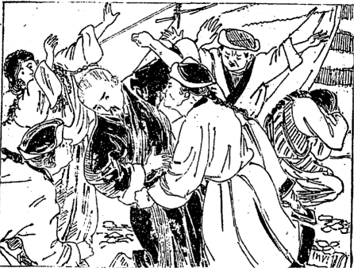
兄弟の争闘
兄弟喧嘩がだんだん盛んになって、やあおのれは泥棒でどこそこで人を殺したの、おのれはチベット政府の金を盗む企てをしてそれがばれたものだから逃げ出したのと、有った事か無い事か知らんが
罵詈讒謗を始めたは
未だしも、
仕舞には弟が非常に怒って兄をぶん
撲る。大きな石を投げ付けるという
始末。私も見て居られんから飛んで出て弟を押えようとすると私の横面をば非常な
拳骨でぶん撲った。それがために私は倒れてしまった。その痛さ加減というものは実に全身に
浸み渡ったです。そうすると娘が泣き出す。女房が泣き出す。一人の男がそれを押えるという始末で実に
落花狼藉という有様に立ち至った。私もしてみようがない。倒れたまま酷い目に遇ったとばかりで寝転んで居った。するとだんだん夜にもなって来ますし、おいおい喧嘩も下火になりましてその晩はそのまま過しましたが翌日から
ひとりひとり思い思いに行くといい出し、そこで一番の兄は女房と一緒に、娘は親と一緒に、弟は一人、私も一人で行くことになったです。
忽ち困難を感じたのは荷物を持って行く羊がない。ですから一疋六タンガー（一円五十銭）ずつ出して羊を二疋買いました。それからその人たちに別れて私は東南の方へ向けて参りました。その人たちは北の方に行くのもございましたがまた後へ引き返す者もありました。
予て私は道は東南に取らずにずっと東へ取れということを聞いて居った。けれどもその人らの中で私を追って殺しに来る者があるかも知れないという考えがあったので東南の山中に進行したです。
もし彼らの
毒手から免るる事が出来たならば実に彼らの兄弟喧嘩で私が拳骨一つ喰ったのが誠に好い仕合せであると思ったです。幸いにその夜はある山の
端に着きましてまた例の雪が
疎らに積って居る草の原に宿りました。これまではテントの中に寝て居りましたのに急に雪の原に宿ったもんですから寒気に侵されて一睡もすることが出来ない。その翌九月十九日雪の原を東南に進行して、ニョクチェという所のシャ・チェン・カンバという小さな寺に着きました。で、その翌日はその寺へ逗留して履の修復や衣服の
綴りをやりました。その寺には僧侶が二名ばかり居りますから
此寺まで
気遣いもなかろうという考えで
緩りして居りました。すると彼らから買うた一疋の羊が死んでしまったです。誠に可哀そうに感じて相当の
回向もしてやりました。それから他の一疋ではどうしても進みませんから、その一疋を他の人に半額で売りまして死んだ羊の死骸は人にやりました。私が羊をくれた人はトクチェンの駅場へ羊毛の税品を
納めに行った人だそうで、ちょうど四名ばかり
其寺へ泊り合わせたその人らに死んだ羊の肉を遣りますと、大いに悦んであなたこれからどちらの方へ行かれるかと
尋ねますから、私はホルトショの方へ行くつもりだといいますと、それじゃあ私共もちょうどその方向に進んで行くんだからあなたの荷物を持って行って上げましょうといいました。
彼らはヤクを沢山連れて居るものですからそのヤクに私の荷物のすべてを載せてくれた。それからその寺を出まして東南に進んで行くこと一里半ばかりにして周囲十町ばかりある円形の小池のある所に着きました。その池の右側に沿うてまた東南に進みますとじきにまた大きな池が見えたです。その池はコンギュ湖という湖水で東南から西北へ非常に長く東北から西南に掛けてごく狭い湖の周囲はほぼ十五、六里だそうで、その周囲の山脈は黒い岩の間に雪がまばらに積っていて余程面白い形状を現わして居るです。その湖水の縁に沿うてある山の上へ登って湖水の形状とそれから小さな円い池の有様を見ますと、そのコンギュ湖の
蜿蜒として西北に進んでかの円い形の池に臨んで居る有様はちょうど
ような天然画の有様がある。そうしてその両岸の山の黒岩の間に斑紋になって居る雪は、あたかも
斑に飛んで居る〔白〕雲のごとき有様に想像されて余程面白く感じたです。それからその池を左にして東南に進んで行くこと七里ばかりにしてその湖の端へ着きました。けれどもその人らはテントを持って居らないからやはり雪の中に寝るのです。ところがなかなか寝られない。大分に疲れもひどく感じて居る。こういう時には座禅するのが一番苦痛を免れる最上の方法で、誠に
如来の布かれた方便門のありがたさをしみじみと感じたです。その翌九月二十二日東南の山中に向って急坂を登らねばならん。余程な
嶮しい坂で随分慣れて居る人たちでも苦しい息を吐いて登るです。私は幸いにヤクに乗せて貰って上に登ったものですから苦しい中にも幾分か楽でございました。それからまた南の方向に降ること一里半ばかりでまた平地に着きました。その辺は一体にコンギュ州の中です。その平地に真っ白になって居る池のようなものがある。あの辺に雪の積って居る訳はないがどうして白いのかというとあれはプートーすなわち
であるという。その辺へ着きますと私どもの一行は皆それを沢山取り集めてヤクの毛で拵えた袋に入れてヤクに背負わせた。これは茶を煮る時分に入れるのです。それからまた波動状になって居るそんなに高くない山脈を幾度か昇ったり降ったりして、そうして先に私が死にはぐった所のチェマ・ユンズンの川尻に着きました。その時分にはもはや秋の末でありますから水も大変減って居りまして渡るにも困難でない。その上にヤクに乗って渡るんですから何事もなくその川を渡りました。
この頃はほとんど一日に十里位ずつ歩んで居ります。もし私がヤクの助けを得なかったならばこの空気の稀薄な高原地をこんなに
沢山歩むことはとても出来なかったです。夜は例のごとく寒くて寝られない。その翌二十三日また東南に向って、その人たちと共に十里ばかり進んで参りますと、前に渡ったブラマプトラ川に出た。この辺の川の名はマルツァンギチュともいい、またコーベイチュともいう。それは皆地名に準じてそういう名を
命けたものである。そのブラマプトラ川ももはや非常に減水して居りましたから渡るに造作はない。
例のごとくヤクに乗って渡して貰いました。するとその川端にその人たちのテントがあって、そこへ宿ることにしました。随分疲れも
酷うございますが夜分テントの外に出て見ますと
月はございませんでしたが
碧空にはキラキラと無数の星が輝いて居りまして、その星が水面に映じ川はその星を流して居る。遙かの彼方を眺めますとヒマラヤの雪峰が
朧に
聳えて居る。その朧気な夜景は真に森厳にして侵すべからざる威風を備えて居るので、何となく無限の感に打たれて五、六首の歌が出来ましたがその中二つばかり申し上げましょう。
ちよろづの星をやどして流れける
ブラフマ川や天津川かも
天津神まします国のヒマラヤは
ブラフマ〔（清浄天）〕川の上にかがやく
その翌日その人らは外の方向へ出掛けるので、私はその人らと別れて一人でまた重い荷を背負ってだんだん川に沿うて東南に進んで二里ばかり参りますといかにもその荷物が重くなって来た。これまで大分に楽をして居ったものですから非常に重さが
厳い。暫く進んではまた暫く休むという始末で遂には進めなくなってしまった。
どうしようかしらんと休んで居るとよい
塩梅にヤクを一疋
牽いて出て来た遊牧民があったです。それからその人に頼んで、どうかこの荷物をお前の行く所まで持って行ってくれないか、いくらかお礼をするからと申しましたところが早速引き受けてくれました。で一里余り進むと向うの方から非常に強そうな馬に
跨った奴が三人やって参りました。その様子を見るに背にはそれぞれ鉄砲を担ぎ右の腕には槍を
提げ腹の前には刀を
佩し、そうしてチベット流の猟帽を頂き意気揚々と近づき来るその容貌が、いかにも
獰悪で身体も強壮なチベット人中殊に強壮らしく見えどう考えても強盗とほか鑑定が付かない。
なぜならばもし巡礼者であれば巡礼に必要な食品を背負って居るところの荷馬とかあるいはヤクとかを
率いて居る訳であるのにそういうものはない。
行商かと思えば行商でもない。なぜならば商法人は少なくともいくばくかの馬を率き連れて居る。多い者は八十疋も百疋も荷馬を連れて居るのである。しかるにこれは三人の
外に何もない。遊牧民かというに遊牧民なればかかる立派な風はして来ない。こりゃ全く強盗であるということが分って来た。果たして私と一緒に居る同行者も非常に恐れて居る様子ですからそこで私は考えた。仕方がない。この強盗に着物から荷物まですっかり遣っちまえばそれで事が
済むんだ。別段争うことも何も
要らない。この際
だが先方にとっては人の
生命はなんにもならぬ。こりゃ何もかもすっかり遣ってしまうに
若くはないと覚悟してしまった。ですから同行の
奴は恐ろしがってなるべくその視線から
免れるようにして居るけれども、私はその強盗の進んで来る方向に向って進んだです。するとその三人の奴が私の前へ来て「お前はどこから来たか」といいますから「雪峰チーセへ参詣して来た者であります。」「雪峰チーセからこっちに来る時分に何か商人体の者に逢わなかったか。実は俺の友達がこの辺をうろついて居るので
其友を捜して居るのだ。」「いやそういう者に逢わなかった。」「そうかお前さんはラマらしい。ラマならば定めて
卜筮をするであろう。俺の友達がどこに居るか早く分るように占ってくれ」という。その意味はよく分ってる。それは友達を捜すのではなくてどういう方向に行ったなら金を持って居る商人に行き遇いその者を
屠って金を取ることが出来るであろうか。その方向を
卜筮で知らしてくれろという意味なんです。こういうような大きな盗人に遇った時分には余り恐ろしい事はない。なぜかといいますと彼らは小さな仕事を心掛けて居らない。大きな商人を見付けて
其人を
その財産のすべてを奪って逃げるというのが彼らの目的であるから、私どものような僧侶で一人旅の者に逢う時分には必ず
卜筮をして貰って、それから行く方向を極めて大きなる仕事をしようとこういうので、で僧侶に対しては特にお礼をするんです。強盗からお礼を貰うというのも
訝しいが向うからお礼をくれるです。そこで余儀なく私はよい加減な事を言って人の居らんような方向を指してこういう所に行けばその友に逢うであろうと本当らしく述べてやると、彼らは大いに
悦んで「またいずれ逢うであろう今お礼をする訳にいかない。御機嫌よう」と言って出掛けた。
そういう話をする中にも同行の奴はブルブル震えて居ったです。で私に向って「あの強盗らは何を言って居りましたか。」「あの人たちは私に占ってくれというから教えてやった。」「あなた本当の事を教えてやりましたか。」「なに本当の事を言った分には人に迷惑が掛るからな」と話しながら川端を三里ばかり進みますとそこに一つのテントがあった。そのテントはその男の住んで居る家なんでその辺にはまだ二、三のテントもありました。その夜はそこに宿り翌日も非常に疲れて居るから一日休息してその翌朝すなわち九月二十六日、
山羊は一疋でも行くといいますからそこで荷物を背負わす山羊を一疋買い調えて出掛けました。
そうすると雪が大層降って来たです。だんだん
劇しくなってどうにもこうにも進み切れない。もう自分の着て居るチベット服も全身
濡ってその濡りが
膚に通って来たです。そうしてどの方向に進んでよいかあまり大きな雪が降って居るものですから少しも向うを見ることが出来ない。磁石でもあれば出して見ることも出来ますが磁石は既に失くしてただ
無闇矢鱈に進んで行くのですから実に危ない訳です。ところがこういう場合に地獄で仏とでもいいますか、一人の乗馬者に逢いました。
その男が私を見まして、どうもこの雪の中でそんな事をして居っては今晩とても寝られやしない。まあ今頃の事だからまさかにこの辺で死ぬ気遣いはあるまいけれど、何しろ非常の寒さだから死ぬような苦しみをしなくちゃあならん。聞けばお前さんはラサ府に行くという。少しは廻り路だけれども私のテントのある所へ来て泊っちゃどうかといってくれるので私は再生の思いを致し、なに後戻りしても構わない、実はこの大雪で後戻りをする道も分らんからどうか連れて下さいとその人に従い、荷物は馬に幾分か載せて貰いまして自分は山羊を連れその雪中を冒してその人のテントに着きました。翌日またそのテントの人たちもやはり私の進んで行く方向に移転するということでその親切にしてくれた人は
外の方へ行きましたが、その外の人と一緒に雪の積って居る中を六里ばかり東南の方へ進みました。
一緒には来たものの実は未だに口もきかぬ人ばかりです。けれどもこういう雪の沢山ある中だから誰かテントの中に泊めてくれるだろうという考えで一緒にやって来たんです。ところがその人たちは
四辺の雪を掃き付けて雪のないよい場所へテントを張り付けた。私はその間外にジーッと立ってその辺の景色を眺めながら雪の中に立って居りました。皆テントを張り詰めてしまいましたから、どうか今晩宿を貸してくれといって頼みましたところがなかなか貸してくれない。押して頼んでも貸してくれない。それからまた他のテントへ参って頼みましたけれどやっぱし貸してくれない。
ちょうど五、六軒のテントに
就いて言葉を尽し事情を分けて頼んでも皆貸してくれない。こりゃ困った。私に縁のない遊牧民と見える。一番
仕舞のテントへ来て強情にも酷く押して頼んだです。こんなに積って居る雪の中へ寝ると凍えて死んでしまう。また夜の中に雪が降らないとはいえぬからどうか宿を貸してくれ。幾分のお礼をしてもよいからと拝まぬばかりに頼みました。するとそこにはお婆さんと娘さんと二人しか居りませなんだがお前は女ばかりと侮ってそう押付けな事をいうか、ここにはテントが
七つも
八つもある。男の居る
幕へ行って頼めばよいのに女ばかり居る所へ来て押し付けに泊ろうとはもっての外だ。行かないか。行かなければぶん
撲るぞと言っていまヤクの糞の火を掻き捜して居るチベットの
火箸を持って私をぶん撲ろうとして立ち掛けたのです。
どこでも泊めてくれないので何んともしてみようがない。で、ずーっと四、五
間こっちへ来てテントの張ってある五、六軒の家を眺め、どうも縁なき
衆生は
度し難しと
釈迦牟尼如来がおっしゃってござるが、この先生たちは私にちっとも縁のない人たちばかりであるからこういう具合に
刎ね付けられ、今夜この
温そうなテントの中を見ながら外に寝なければならんというは誠に浅ましい訳であると思いました。しかし縁のない人もこうやって頼んだのが縁になって、この後どういう縁が付くか知れんからこの人らが後に仏教に入るようにお経を読んでやりましょうと思ってお経を読みました。それは仏教の真実広大なる慈悲の主義から来て居ることであって、我々仏教僧侶としてはそれをやるのが当り前の事です。
だから一生懸命にお経を読んでやりますと、今頼んだテントの娘がちょっと顔を出して暫く眺めて居りましたが、急に
幕内へ入って母に向いあのラマは私共が宿を貸さなかったのを怒って悪い
 法
法を唱えて我らを殺すか病気にするような行いをして居る。非常に腹を立てたものと見えるといって話したのでありましょう。果たしてその
阿母さんは余程妄信の深い人と見えて、そりゃ
堪らんからお前が早速行って
幕内へ招待してそういう事をしないようにして貰わなくちゃあならんと言い付けたらしく直ぐ私の所へ出て来て、どうかそんな事をして下さらずに内へ入って
緩りお休み下さい。今晩いろいろ供養を上げますからといってとうとう
家へ泊めてくれることになったです。どうも吹き出すようにおかしゅうございますけれども、つまりこちらの善意が事を助けたので、
先方の悟り方は悪いにしたところが即座に難儀を免れたのも仏の教えのお蔭であると思い私も大いに
悦んだです。例のごとくその夜は観法で過ごして翌日早くそこを立って一里ばかり東南の山中へ進んで参りますと、その辺には誰も居らない筈でありますのに、ついにその岩の向うの方から二人の人が現われて
強盗の様子にも見えないけれど刀は二人とも

して居る。多分この土地の土人がどこかへ行くのでもあろうと思って何心なく立ち止まると、彼らは岩の間からこっちへ降りて来て「お前は何を持って居るか」というから「私は仏法を持って居る」といいましたところが判らないです、先生らには……。「お前の背負って居るものは何か。」「こりゃ喰物だ。」「懐の
脹れて居るのは何か。」「これは銀貨だ」といいました。そうするとその男は二人とも私の前に立って私の持って居る杖をいきなりふんだくってしまった。ははあこりゃ強盗だなと思いましたから、じきに決心をして「お前たちはなにか私の物を欲しいのか。」「もちろんの事だ」と大いに勢い込んで居る。
「そうかそんなら何も
慌てるには及ばない。お前の欲しい物をすっかり上げるからまあ
緩りするがよい。何が欲しいか」といいますと「まず金を出せ」という。それで銀貨の入れてある袋をそのまま遣りました。すると「背負って居るものにどうやら珍しい物がありそうだ、
下して見せろ」というから「ハイ」といって下し、また「山羊の背に負わしてあるものはそりゃ何か下して見せろ」というからハイといって下しますと、二人で
穿鑿してお経とかまた彼らの要らない夜着とか重い物だけはそのまま還したです。これだけは
俺等が入用だから貰って行くと言って喰物もすっかり取ってしまいました。ちっとも失くなってはこっちが困りますから少し貰わなくちゃならんと思いました。
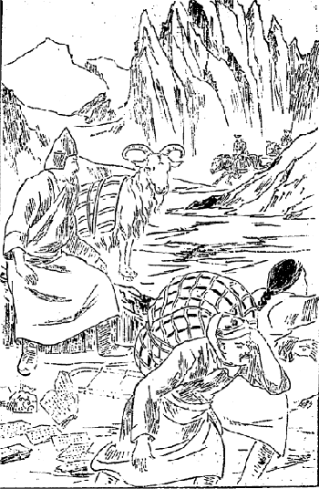
劫盗奪品の難
一体チベットの盗人に
遇うた時はちゃんと規則があるんです。その事は前に聞いて居りました。何でも盗人に逢うた時はすっかり向うの欲しがる物をみな遣ってしまって、そうしてお経を申してどうか食物だけくれろというと向うから三日分位はくれるというから、そういう手続きにやろうと思いまして「私の
懐にある物の中に
釈迦牟尼仏の
舎利を蔵めてある銀の塔がある。それはかつてインドのダンマパーラ居士がチベットの法王に上げてくれろと言って
言伝って参ったものであるからこれだけは取らんでくれ」というと「それを俺に
遣さないか。」「いやそれを持って行くのはよいがこれを持って行った分にはお前が難儀な目に遇うであろう。なぜならばこの舎利様は普通俗人が持った分にはよくお
護をすることが出来ないからどうせお前らに善い事はありゃあしない、しかし欲しければ上げる」と早速出して「まあ一遍開けて見るがよい」と言って渡しますと、その遣り方は思いの
外に出たと見えて彼らはそれを受け取らずに「そんな有難いものならば
私の頭へ指して戴かしてくれろ、でその有難い
功徳を授けてくれろ」といいますから、
其男の頭へ載せてやってそうして
三帰五戒を授けて
悪業の消滅するように願を掛けてやりました。それから今度立ち上って二、三日の喰物をくれろといおうとすると
遙かの向うの山辺からまた
が現われて来ました。それを私が認めると同時にその強盗らも認めたと見え、両人は立ち上って受け取った物だけ
引っ
攫いある方向へ逃げ去ってしまったです。彼らが山を走ることは
恰も兎の走るがごとくで私など追いかけたところで、
埓の
明く訳でもない。また追いかけようという考えもない。そこでかの現われて来た乗馬者を呼び止めて彼らから幾分の食物を貰ってこの二、三日を安全に進もうと思ったところが、乗馬者はどういう都合かこっちの方には進まずまた向うの山の間へ上って行った。
だから私は声を揚げてチベット人の呼ぶ仕方で右の手を内輪に廻して呼び立てましたけれども、その声が耳に入らんのかあるいは他に用事があるのかこちらへ来てくれなかった。もっとも肌に着けて居ったインド金貨八枚だけは取られない。自分の荷物は大分軽くなり山羊の荷物は全く失くなってしまったから自分の荷物の幾分を山羊に
載け山の中へ登って行った。非常に
嶮しい山で三里ばかり進むともう日が暮れて参りました。例のごとくその夜は山の間に露宿してさてその翌日は東北の方向を取ればある
駅場に出られる訳ですが、
何分にも磁石がないから方角が分らない。
東北に行くつもりで進んだのが東南の方へ進んだものと見える。後には全く南の方向へ進んで行ったものと見える。その後その着いた所によって推しますればちょうど今言ったような方向に進んで来て居るです。大分進みましたが午後三時頃からまた雪が降り出した。それから日の暮れるまで進みましたけれどどこにも人の居そうな所が見えない。で余り腹が減って喉が乾いて堪りませんが何にも喰う物がないから雪を喰いました。
一日に一度ずつ喰えば充分であるのですけれど何にも食わないと一層非常な困難を感ずるです。日は暮れる腹は減る、ほとんど進むことが出来ない程になって来た。雪の降ってる中ですから
殊更に池のような深み
溜りの間に入ってそうして雪を
掃い込んでその中へ寝たんです。どうも広い原で雪に降られるのみならず暴風に当られますと凍え死をする
基ですから、それだけの用心をして池のような中へ入って、そうして例のごとく呼吸を充分注意してなるべく自分の呼吸と外界と
遮断するような方法にして
禅定に入りました。これが一番雪の中で寝るにはいいようであります。その翌日起きると雪は非常に積って居るけれどももう止んでしまって日が出て居る。で、その辺の山の様子を見ると
どうも先に通ったナールエという遊牧民の泊って居た所の山の形によく似て居るからもしやそうではあるまいかと思って、だんだんに進んで行くとなるほど先に見覚えあるキャンチュという大きな川もその端にある。こりゃ
旨い。ナールエの方へ行けばあそこは遊牧民の集まる所であるから誰かあそこに来て居るかも知れんと思って、わざわざ廻り路をして二里ばかり進んで行ったです。ところが何にもない。見渡す限り雪ばかり。その時にはほとんど失望した。何故ならば腹は充分
減って居る。喉は乾いて来る。果てには非常に苦しくなった。もっとも荷物は盗人に取られて大いに軽くなって居りますから重荷を荷うという苦しみはないけれども、腹が減った苦しみには堪えられなかった。仕方がないからまた雪を喰い喰い進みましたがその甲斐もなくそこには誰も居ないという始末で実に失望致しました。
しかしこれから引き還してキャンチュを渡って向うの方に行けばまたアルチュ・ラマの居った方向に出られるに違いない。あの人は余り他の遊牧民のごとくに諸所方々に行かない。僅かにあの辺で位置を変じて居るだけだということを聞いたから大方あの辺に居るかも知れない。そうするとまずあの方向に進んで行くのが今の急務であろうと思いましてキャンチュを向うへ渡りました。渡った所は前に渡った所よりも三里半ばかり川上です。しかしその時分は水が非常に減ってほとんど五分の一しかないのでそろそろ氷に変じ掛けて居りましたし、昼頃の事でございましたから氷の間をうまく杖で叩き付けたり割ったりして渡ってしまったんです。氷が厚く張って居れば大変都合がよいが薄いから融けて居るという有様で渡るのが非常に危険です。氷の切端で足を切ったり何かするものですから実に危険です。
辛うじて
其川を渡ってだんだん南へ南へと進んで行ったです。すると私が引っ張って居る山羊、その山羊の上に
載せてあった僅かの荷物――羊の皮の敷物、
履、薬のような物、それがどこへか落ちてしまったです。その辺を余程捜して見ましたけれども何分雪の中の道のない所で落したものですからどこへ
捜しに行って見ようもない。やはり海の中で物を失ったと一つ事であるから
已むなくそのままにしてだんだん進んで、どうか今夜はテントのある辺まで着きたいもんだ、毎晩毎晩雪の中ばかりに寝て居るともはや死ぬより外に道がないから、遅くなっても充分に進みたいという考えで、腹の減るのを無理押しに押して午後八時過ぎまでに八里余り進んだには進みましたが、雪の光の反射のためにいわゆる
依雪眼病を煩った。その痛さは
喩えようがない。今にも
かというような有様で実にそのままじっとして居ることが出来ない。外には雪が非常に積って居る上にまた夜分になって雪が降り出した。非常な寒気と痛さで身体中は冷汗を流して居るような訳、いかにも苦しくって
堪らんのでどうも観念に入ることが出来ない。また横に倒れて見たところで頭に雪が喰い付くというような訳でなお痛さが増して来る。で、その辺の雪を手に取って眼に当てて見たりしてもなかなか痛さが止らない。そうして居る中に自分の身体もだんだん凍えて
痺れて来る様子ですから眼を塞いだまま無闇に身体に
丁子油を塗り付けたです。眼は塞いだけれども寝るにも寝られずそのままやはり仏法を念じて居ります。その間に不意と歌が出たです。妙な時に歌が出るものでその歌が出てからなんだか苦しみが余程優しゅうなったように思ったです。その歌は
雪の原雪の蓐の雪枕
雪をくらひつユキになやめる
その歌の面白みに自分と自分の心を慰めて悦んで居りました。これで
大和言葉の国風の有難い事、かかる困難の時に人を慰めるものであるということを実験した事でございます。その翌は十月一日です。そこにじっと坐って居っても仕方がないから朝六時頃出掛けようと思いますともう雪は
歇んで日が照って居る。その雪に輝く光線が私の眼にキラキラ反射しますので一層眼が痛みました。
眼を
閉って進んで見たがどうも進むに困難である。だから少し眼を開いて進んで行くとますます眼が痛み出して今にも潰れるような痛さ。自分の身体も我れ知らず
引繰返って雪の中であろうが草の中であろうが一向構わずに倒れ込んでしまうんです。そればかりでなく三、四日前から少しも食物を喰わずに居るものですから身体が非常に苦しい。ひょろひょろしてちょうど
酒飲が大変飲み過してじきに倒れてしまうごとくにちょっとした雪の中の小石に
躓いても倒れてしまう。けれども怪我はしない、その辺には雪がありかつ自分の身体はごく軽くなって居りますからなんともないです。腹は減る、眼は痛む、足はひょろつく、という始末で進退全く
谷って我れ知らず雪の中へ
座り込んでこりゃ死ぬより外に道がないのだろうという考えがつきました。けれども自分の精神は確実でこの雪の中で死んで行くかと思われるような精神は少しもない。ごく確かですからこの身体の苦痛さえどうにか免れる工夫が立ちさえすれば充分進める筈であると思ったけれども仕方がない。するとまた奇態に遙か向うに
です。それから痛い眼をよく引き開けて私の見違いではあるまいかと思ってよく見ますと全く一人の男子が馬に乗ってやって来るです。私はじきに立ち上ってその人を手真似で招いた。声を立てようとしたところがちっとも声が出ない。何だか喉が縛り付けられたような喉の穴が細くでもなって居るような具合に声が出ない。余程無理をして辛うじて二声ばかり声を発し、手をもって仕方をして呼び止めますと向うでもそれを認めたと見えてこちらへ馬を走らして来た。その時には嬉しかったです。
すぐに私の傍へ来ましてこの雪の中でどうしたのかといいますから、いや実は泥棒に遇ってすっかり何もかも失くなってしまった。その上に残って居った少しの荷物も途中で失ってしまい三、四日何も喰わずに居るのだが何か食物を下さるまいかとやっとの思いで声を出すと、若い男でございましたが感心な心掛けで暫く首を
傾け、どうも私は今
麦焦しも何も持って居ないけれども一つこういう物があるからといって懐から出してくれたのが、牛乳を
煮て
冷して置きますと薄く上へ張って来るクリーム、それを集めてその中に黒砂糖を入れたものであります。それはこのチベットのチャンタンにおいては無上の菓子として人に贈りあるいは珍来の客にすすめるものであるが
其菓を私に一箇くれたです。
それから早速
其菓をうまいとも何とも分らずに喰ってしまいそれからその若い男にどこかこの辺に私の泊る所があるまいか、食物も欲しいからと言いましたところが、いや私もやはり巡礼者だがあの山の
際に私共の父、母及びその
同伴の者が沢山居るからあそこへお越しなさい。どうにかなりましょう。私は急ぎますから先へ帰りますといって馬を
駆ってその山の方向に去ってしまったです。で私の居る所からそこまでは僅かに一里ばかりですけれども、そこまで進んで行くのに幾度か倒れたりあるいは眼が痛いので休息をして見たり、また腹がすいて喉が乾くので雪を喰ったりいろいろな真似をして行ったものですから、ちょうど三時間ばかり費やして午前十一時過ぎにやっとそこへ着きました。すると早速その少年が迎えに来ましてテントの内へ案内してくれたです。
で、まあ可哀そうにという訳で向うに拵えてあったところの米の御飯にバタの煮たのを掛けて、その上に砂糖と乾
葡萄とを載せたチベットでは最上等の御馳走を私にくれた。その時は実に
有難かった。まあそれを二杯ばかり喰いました。余り一遍に喰ってもまた身体を害するであろうと思いましたからそれ位にして後は牛乳を少しばかり貰って飲んだです。その夜は眼の痛みで寝られない。けれども薬はなし外にどうもして見ようがない。ただ雪を
切布に包んで眼に当てて居ると幾分か楽に感じますけれども、その痛みが
劇しいのでその夜は良い寝床を得たに
拘わらずやはり寝られなかったです。
ところがその翌日彼らは巡礼者の事ですから
出立するという訳、私も同じく出立しなければならん。彼らはなかなか出立するのに暇が掛る。なぜならばその張ってあるところのテントを片付け、荷物をそれぞれヤクに載せてそれからぼつぼつ出掛けるという始末ですから容易じゃない。私は茶を飲んで外に出ますと彼らは忙しげにテントを片付けて居る。それから私はそのテントを片付けて居る一番外れの四、五軒目位の所に参りますと、例の七、八疋の猛犬が
吠立てながら私のぐるりを取り巻いたです。
猛犬に取り巻かれたけれども私は眼が痛いものですからどうも常のように犬をよく
扱うことが出来ない。眼を開いて二本の杖で前後に迫る猛犬を扱って居る間はよかったですが、痛みの劇しさに不意に眼を
塞いだ拍子にどうしたものか後の方の杖をある犬のために
咬え取られたです。すると他の一疋の犬が私の後からやって来て足に噛み付いた。私はじきにそのまま倒れてしまいましたが、少し声を立てて救いを求めましたから、そこへテントを片付けて居った人たちが
慌てて遣って来て、犬に石を
打っ付けて追い飛ばしたので犬はことごとく去ってしまった。ところで私の足を見ますと出血
淋漓としてどしどしと新しい血が出て来る。それから私は左の手でその噛まれた右の足の
疵口を押えてジーッとして居ると、
其薬が犬に噛まれた時の一番良い薬であると言って、ある老婆は薬を施してくれたから、その薬をつけて
括って立って見ようとすると少しも立てない。
によって少しも立てない。けれどもじっとそこに座り込んで居る訳にいきませんからその人たちにどうか方法がつくまいか、この辺にアルチュ・ラマが居る筈だが居られないかといって
尋ねますと、あなたはアルチュ・ラマを知って居るかといいますから、よく知って居ると答えたところが、その中の一人がそれなら私の犬が噛んだのだからアルチュ・ラマの居る所まで私の馬で送って上げよう、あのラマはお医者様であるから充分に疵を治しあなたの眼病も
癒すことが出来ましょう。だからまずあそこへお越しになるのが一番
得策であるといって親切に馬を貸してくれたです。
それからまあ押し強く杖に
縋って立ち上りましたが、一本の杖は折れてしまって役に立ちませんでした。で馬に乗ってテントの二つ張ってある所まで参りまして眼を開いて向うの方を見ますと、アルチュ・ラマのテントよりは甚だ小さい。どうもこれは奇態だと思って馬から
下りてそこへ行って尋ねますとこれはアルチュ・ラマのテントではない、その奥さんの親の家だという。それではアルチュ・ラマの家へぜひ
遣って貰いたいというと、ちょうどその奥さんが親の家に来て居りまして私の声を聞き、あれはこの間雪峰チーセへ指して参詣に行かれた尊いラマであるといって見に来たです。
それから私が逢って「あなたのラマはどこに居られるか。」「これから一里ばかり東の方の原に居る。」「私はそこへ行きたいが今日誰かに案内をして貰えまいか。」「私はもうあんな所に行かないんだから案内者は付けられませんが、あなたがお越しになるならば私はこの馬を
牽いて来た人に
吩咐けますから、この馬方と一緒に行かれるがよかろう。」「なぜあなたは自分の家にお帰りにならんですか。」「あんな悪い人はないから私は暇を取ってやるつもりです」といいますから「それはいけません」といっていろいろの事を聞いたりいったりしてそこでまあ昼御膳をよばれて、それから一里ばかりあるラマの家に着きました。
するとそこには召使ばかり居て誰もが居らんでしたが、その夜になってアルチュ・ラマが帰って参ったから、実はこういう訳で盗人に逢いその後こうこういう所で犬に足を喰われたが何か良い薬があるまいかといいますと、親切に良い薬をくれまして、しかしこの
塩梅では数日間ここに滞在しなければ歩くことが出来まい。ある犬は非常な毒を持って居りますから、まずその毒下しをしてあなたの身体に毒の廻らないようにしなけりゃあならんとの注意ですから、それじゃどうかそう願いたいといってそこへまあ滞在する中に薬の
利目か眼の痛みも少し
癒って参りました。これまでしばしば
難儀の上に難儀を重ねて
が
螫すというような目ばかり見ましたが、これからとてもなおなおどういう難儀があるかわからん。けれどもまず進むだけ進むのが真に愉快であるという考えから一首の歌を
詠みました。
くさぐさに有らん限りの苦しみを
なめつくしてぞ苦の根たえなん
その翌日ラマに向い、なぜあなたの奥さんは御自分の家に行って居られるのかというとラマはいろいろ奥さんの行き届かんことを説明された。どっちを聞いて見てもごもっともで私はどっちが善いか悪いかということは
一向分らなかったですが、とにかく男は心を
大量に持たなくちゃあならん、女を慰めて遣るのが道であるからまああなたからお迎えを出すのが宜しゅうございましょうといって、だんだん仏教の方から説きつけますと「それはそうだ」といって迎えの人を二人出したです。
それで奥さんは
漸くのことでその日暮に帰って来た。その翌日私は浄土宗の三部経中の
無量寿経に説明してある五悪段というものは、チベットの経文中にないという話をしますと、それは誠に結構な事だから是非そのシナ仏教の経文からその五悪段の講義をしてくれないかというラマの依頼で、私は毎日その講義をして遣ることになったです。その五悪段というものはこの濁悪世界の悪人共がいろいろの手段を尽してする悪事を五つに
約めて適切にありがたく説明されてある。それゆえその夫婦らはその説明を聞いて毎日涙をこぼして自分の罪を
懺悔し、ある時はほとんど後悔の情に堪えられないで暫く講義を止めてくれろといって二人とも泣いて居った事があるです。
自分のした罪悪のために自分の心を責められるということは実に苦しい事でありますけれども、またそれは非常に善い事でそういう風に自分の心が苦しめられますと今度は善い事をするようになりますから、懺悔したのは実に感ずべき事です。で、ちょうど十日ばかりここに
逗留し、夜分などは実に素晴らしい雪と氷の夜景さえ眼を楽しましむるその中に、
碧空には明月が
皎々と
冴え切って居るです。いわゆる
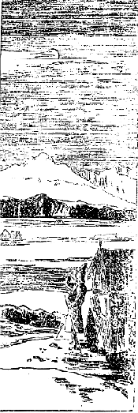
氷光明徹裡の寒月
を見てそぞろに故郷を
懐い、あるいはその凄じき清らかなる状態を想うて幾つかの歌が出来ましたが、その中の一、二を申せば
塵一つなき高原に月さえて
きよき御国の影をしぞ思ふ
草かれて尾花も萩もなき原に
やどれる月のいともさびしき
こういうような事で楽しく日を過しましたが幸いに疵も
癒え眼の病もすっかり癒って身体も丈夫になって来た。それからそのアルチュ・ラマの勧めでかの白巌窟に住んで居るゲロン・リンボチェにまた逢いに行こうということになり、私の荷物と
尊者に上げる供養物とを馬に
載け私ども三人も馬に乗って行くという訳で、
下僕が三人に馬七疋、同行六人で南の方へ指して進んで参った。大分に素晴らしい勢いであったです。
無性に駆けて五里半の路を暫くの間に着いてしまいました。まだ十一時前でもう少し
経たなければお逢いにならぬという。十一時になったところでそこへ参詣に来て居る者が三十人余り、それらが皆礼拝をなしあるいは尋ねる事を尋ね受くべきものを受けめいめい供養すべき物を供養して帰ってしまったから、私の
同伴も私と一緒に帰る筈であったですがその尊者のいわれるには、今日は私に対して話があるから待って居れという。そこでラマ夫婦はそれじゃあここでお別れ申しましょう。あなたはこれから首府ラサに行く道を取られるがいいといっていろいろ礼などいって別れたです。
何の話があるのかと思って尊者の端に坐って居りますと尊者は余程思いに沈んで居られるようです。その訳を私はほぼ察しなかったのではない。なぜならばアルチュ・ラマの家に泊って居る間に少し聞いた事がある。それはどういう事かといいますと「あのシナのラマであるといって雪峰チーセに参詣した人はシナ人でない。確かに英国人である。チベットの国情を探るために来たのである」とこういう評判が大分に高くなって居るということを私はそのラマから聞いたです。もちろん彼が私にこの辺の愚民どもは何をいうか知れやしないと私を信用して、この地方の人民の取るに足らぬことをなお続けていいました。どうもあなたのような真実に仏教を修行なさる方を捉まえてそういう悪い噂をいう位の奴らですからどうも困ったものだ、愚かな者はして見ようがないとこういった位だから、その事がやはりこの尊者に聞えてあるいは思いに
沈んで何か質問の
端緒を捜して居るのではないかと思ったです。
果たして尊者は実際的に問を起していいますには「あなたがいろいろの困難を取ってわざわざラサへ行かれるというのは
一体何のためでありますか」と聞きますから、私はこれに対して「私は仏道修行をして一切
衆生を
済度しようために参ったのでございます」とこう
先方の実際的の問を
外して形而上の仏教的説明の答をしたです。すると尊者はじきに「あなたは何の原因をもって衆生を済度するのであるか。」「何も私に原因はない。衆生がいろいろの苦しみを受けるからであります。」「それではお前は世の中の衆生という者を見て居るのか」といって非常に理想的の問を起しましたから私も理想的の
鸚鵡返しをやったです。「我に我なくしてどうしてこの
衆生を見ましょうか」とこういって答えましたから尊者はにこりと笑って問を変じ「あなたはこれまで色慾のために心を苦しめ〔られ〕た事がありますか。」
私は尊者が色慾に関する問に対し「かつて大いに苦しんだ事がありましたが、今はどうやら
免れたようであります。また全く免れんことを希望して居るものである」といいますと、じきに問はかの賊に逢った時の思いはどうであったかということに及んで来たです。尊者のいわれますには「賊に逢うた時にその盗人を憎いと思ったか、その盗人と別れた後に彼を憎んで
呪法でも行って彼らに
仇返しをするような事をやったか」とのことですから私は
直ぐに「私にそれだけの取らるべき原因があってかの強盗に取られたのでありますからあの人を憎む必要はない。私がかような不幸な目にあう原因を持って居るこそむしろ憎むべきである。私はこの借金
済しの出来た事を
悦んで居るのである。だから何も彼らに対して呪法を行う必要もない。どうかあの男も私の物を
奪ったのを因縁として、この世では行かずともせめてあの世においては真道に入って立派な人間とも菩薩ともなるようにと願いを掛けた訳である」といいますと「そりゃ成程もっともだがこれからまたああいう賊に
度々逢うかも知れないから、もはやあなたはラサの方へ行くことを止しなさるがよかろう。なぜならば賊に
逢って殺された分には自分の
の目的を達することも出来ん。であるからこれからネパールの方に帰るがよかろう。ネパールへ帰るにはローという所から入って行くと良い道があるからそこへ早く行くようにするがよかろう。もしこのまま進んで行くとどうもあなたは殺されるより外に道がないと思う」と何か意味ありげに申した後、なお厳格の言葉を発していいますには「およそ目的を達するためにはどんな方法をも
執るべしである。ただラサに行くべき事のみをもって目的とすべきものでない。一切衆生済度の目的が信実であるならばネパールに帰らねばならんのである」という。
私は実に驚きました。そこで「私はさような
曖昧な事は出来ません。目的を達するためにはどんな方法をも
執るべしというお説には同意することが出来ません。大日経には方便すなわち
究竟なりというて誠実なる方法を実行するのがすなわち究竟の目的を達したのである。別に極楽へ参ったのが人間の目的を達したのでもなければラサに達したのが目的を達したのでもない。ただ誠実な方法を実行するのをもって目的その者として一切万事誠実なる事のみを行うその端的に目的が達せられたものである。」「しからばそれではどの道を廻ってどこへ進んで行くか。」「私はもちろん山道を通ってチベットの首府に行くのである。」そうすると尊者は非常に
急き
込んで「どうも妙だ必死の
虞ある危険の道を取るよりは安全に行けるネパールに帰るがよい。お前は乱暴な事をいう人である。私はちゃんと行末の事を見抜いて居ってこのまま進んで行けば必ず
ということを知って居る」とこういって
威しつけたです。「そうですか。しかし私は死ぬことも知りません。また生れて来ることも知りません。ただ誠実なる方法を行うことを知って居るだけであります」と答えますと尊者は少し頭を
俯向けて考えて居られましたが、
忽ち話頭を転じてマニすなわちチベット仏教秘密の事に移りました。こういう問答は専門に
渉ったことでありますからこれから後の分も略します。だんだん仏教の話が
嵩じてとうとう夕暮になってしまった。尊者は大いにその疑念を氷解していわれますには「いやこの辺の俗物が俗な考えから種々な説を
捏造したのである。全くあなたは信実に仏教を求める方である」というて大いに悦び、さしずめ必要なものは金銭と食物であるからというのでチベット銀貨二十タンガーと茶一塊、それから
麦焦しを入れた大きな袋一つとチベット銅鍋一つ、その他いろいろ旅中に必要なる物品を与えられた。
その価が五、六十タンガーですからちょうど日本の十五円位の物を一度にくれたです。「どうもこんなに沢山貰っては持って行くのが困難だからもう少し
尠なくしてくれ」といいましたら「いやこれからお前さんの通る所はどこへ行っても私の
弟子ばかりで、この袋を見せると私がくれた物であるということを皆知って居るから、この荷物は必ず運んでくれるに違いない。心配するに及ばない」という。それから
其品を戴いてこっちに帰って参りました。すでにその時に約束した、明日はマニの秘密
法力を秘密に授けてやるといいますから、ありがたい事と心得てその翌日
を授かるつもりでその夜は休みました。で、その夜つくづくと考えますに尊者に対してチベットのラサへ進入の道は山道を取るといって置いたがこの山道には尊者の
弟子が多いから危ない。尊者は私を信用してくれたにしろ、弟子どもの中にはやはり疑いを懐いて居る者があるかも知れない。だからこりゃ少し廻り路をしても公道を取るべしと決定致しました。で、その翌日朝の中に前日の約束のごとくマニの秘密法力を授かり昼頃にそこを立ってその荷物を背負って二里ばかり降って参りましたが随分荷物が重い。それから実は尊者から教えられた山道の方へは参らずに、教えられぬ公道へ出るつもりで北へ北へと進んだです。で二里ばかり参りますと二つのテントがあってその内から一人その辺の立派な遊牧民の風をして居る人が出て来てうやうやしく私を迎えたです。
不思議な事である。この辺に誰も知って居る者がないのに、どう顔を見てもその人は知らない。知らない人に迎えられるのですから気持は少し変であったけれども迎えらるるままにその中に入って行きました。するとそこにアルチュ・ラマが居りました。アルチュ・ラマは昨夜ここへ泊り込んで私が先夜仏教上のいろいろありがたい話をした事をそのテントの人たちに取り次いで居られた訳です。それで私のこの辺へ来るのを知って迎えられ三帰五戒を授けてくれといいますからそれを授けてやりました。で程なくそこを立って荷馬二疋と一人に送られてンガル・ツァンギチュという川に沿うて東に降って参りました。
この川はかつて白巌窟尊者の所を辞して雪峰チーセに進んで行く時分に渡った川の下流であります。その川岸に沿うて三里ばかり降って午後六時頃に川岸のテントの在る所に泊り込みました。私を送って来た人はじきに荷物を
卸してそこから引き還してしまった。そこでその晩いろいろ公道へ出る道を尋ねるとまたブラマプトラ川を向うへ渡らんければならぬという。その川を渡るにはやはり荷持と案内人が要る訳ですからその人を雇うことを約束して翌日はちょうど沼の原を四里ばかり東へ進みました。降り昇りとも一里余ある高い坂を
踰えるといわゆるブラマプトラ川に着きその人らの案内で向うの岸へ着くと一つの貧しいテントがある。
そのテントはそこに迷うて来たヤクを止めて置く所で、つまり番をして居るのです。そこにお婆さんと娘が居ってそこへ泊り込んだ。その翌日は肌着を
綴りなどして一日を過しそれから十月十六日また沼の原を東に進んで行きました。この沼の原というのは水の溜って居る所に泥があってその中に草が生えて居る。余程深い沼もあればまた浅いのもあるが本当の池の形を成しては居らぬ。ごく湿地の原です。
其原を四里ばかり行くとまた一つの川に着いた。その川はナーウ・ツァンボという。これはこの地方から北方の高原に流れて行ってブラマプトラに流れ込んで居る大河である。渡る場所はかねて聞いて居りましたから砂泥で非常に深く足が
嵌り込んで渡るに困難でありましたが、幸いに無事に向うに渡ることが出来ました。
その川幅は二町位ですけれども深さは乳位まであってちょっと急流でもありますし、重荷を背負って居るのでほとんど倒れそうになった事もあります。川を渡って少し参りますと大分に大きなテントがあった。頼み込んだところが幸いに泊めてくれた。その夜その辺の道筋について話を聞きますと、これから二里程東北に当って公道がある。その公道の所にトクスン・ターサムという駅場がある。この高原地では大抵四日か
五日路位の道を隔てて駅場が一つずつ置いてある。そのトクスン・ターサムより四日路手前で雪峰チーセに近い方向に当ってやはり一つのターサムがある。それはサムツァン・ターサムというのです。これから後は私は公道を取るのですからそのターサムのある所は自然によく説明が出来て行くのです。で、その翌日やはり東に進みました。東北に進めばトクスン・ターサムに出られるですけれども要らない廻り路ですから東に進んで公道に出る道を取ったです。その翌十月十九日もその通りの方向を取って参りましたがここにまた一つの大なる困難が私の身に起って来たのであります。
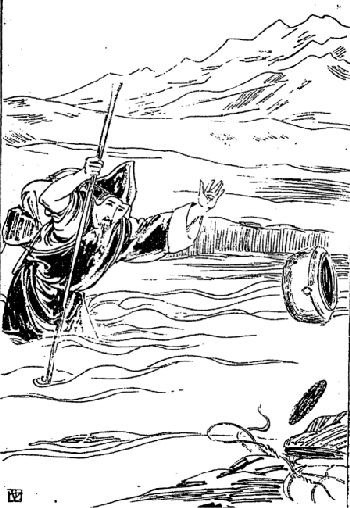
高原の沼泥中に陥る
もとより沼原池を行くのですから浅い水の所を渡ったり泥の中に入ったりして行かねばならん。で
泥
の所へ行き当ったから試みに杖を突っ込んで見ると大分深そうです。こりゃこの中に溺れては堪らんとなるべく距離の狭い所を択んで渡り掛けました。もちろん浅い水で殊に泥の上には砂が被って居るものですからそれほど深い泥とは思われない。杖を突っ込んで見ると少しは下に入るけれどまずもって渡るに差支えなさそう。それに幅は二間にも足りない所ですからこれなら大丈夫とその泥の中へ飛び込むと大変です。ふた足目にはゴボゴボと深く入ってちょうど斜線状に向うへ倒れ込んだです。幸いに杖があったものですからその杖で踏み
堪えた訳ですがさて進むことが出来ない。後に引き返そうとしますと大分向うへ
摩れ落ちて居るのでどうも後に帰ることが出来ない。
それからその杖を
楯に取って非常に力を入れ自分の身体を上へ
上心にしてうんと
息張ると幾分か上りましたから、今度はそろそろと荷物をこの泥の中へ引き下し背の方に手を廻して向うへ一つ投げてはまた次の残ったのを投げる。そういう具合で荷物は
悉く向うの岸に投げ終ったです。それから自分の着て居る着物は
濡れては居りますが、
其衣も帯を解いて脱いでしまって向うの岸へ
投りつけ下着もその通りに投りつけて丸裸体になりましたが、どうもその寒いことといったらないです。ところが何が役に立つか分らないもので、子供の時分に足芸の軽業を見たことがありますがあれを不意と思い出しました。
さてこういう時に急いでやるときっと踏み
損うからまあそろそろやるべしと考え
徐かにその杖に力を籠めて自分の身体を上に上げることに掛りました。ところが注文通り斜線状になって居た身体がまっすぐになったから、そこで一本の短い杖を自分の遙か向うへ横にしてそれから後の足をその杖へ載せる程の見込をつけ、で長い杖を右の手で充分突き立てて自分の身を軽く飛び上り気味に後の足をその杖の上にふーっと載せてしっかりとその杖を踏みつけて、それと同時に後の足を上げて前の杖に乗ってある足の深く入らぬ中にひょいひょいと飛んで、自分の身体の軽くなって居るのを幸い向うの岸に訳なく飛び上ったです。
飛び上った時には寒くて
震えて居ましたが、しかし非常に愉快でした。妙なもので子供の時に見た
軽業がよい所で役に立ったものだと大いに愉快を感じたです。着物が濡れて居りますからまず絞って乾しました。なかなか乾くのを待って居られませんからとうとう濡れたままを着て、そこから公道の近所に見えて居るテントの方向に進んで行ったです。幸いそこにも巡礼者が居てその夜はそこに泊ることが出来ました。それでその翌日は
です。公道といえば非常に立派なようでございますが別に人が
普請をして拵えたというような道ではなく、ただ通り易い所を馬や人が沢山に通ったというだけです。委しくいえば商人なり政府の役人なり兵隊なりあるいは遊牧民なりが最も多く通るために草も沢山生えて居らず
石礫も少ないというだけそれを公道と呼んで居るです。
沙漠の中に参りますとその公道といわれて居ったものも風が一遍吹くと
足痕も何も消えてしまう。でチベットには本当の道はラサの近所に少しあるだけの事で外には道らしい道はない。皆天然に人馬の踏破した跡が道になって居るというに過ぎない。公道といえば車でも通るかというような考えもありましょうけれど、チベットでは人力車とか馬車の通るような道は一つもない。それについておかしい話があります。ネパールの王様がヨーロッパ風に出来て居る四頭
曳きの立派な馬車をカルカッタから買うてチベットの今の法王に上げたです。ところがチベットではこんな物を
貰ったところで私の方では動かす所がないからどうか持って帰って貰いたいという始末。けれども折角遠い所を持って来たものだからまあ飾り物にでもこっちに置いて貰ったがよかろうというので、今なおチベットの法王の宮殿の中にその
残って居るです。それはつい四年ばかり前の話です。そういう訳ですから道路の悪いということはこの辺ばかりでない。チベットで最も開けて居るラサ、シカチェでさえ道はほとんどないのです。とにもかくにも公道に出たのですからこれからはまあ安心なもので、途中に関所もなくラサ府に着くまでは坦々たる公道を大手を振って行けるという道へ出たんですからなかなか面白く感ぜられるです。で、その日ある沙漠の間を
踰えて向うへ出ますと一つのテントがあった。それがその辺での酒店なんです。どうもこんな所に酒店があるのは奇態だと思いましたが、これはその月の末頃までロー州のモンダンという山村から売りに来て居るのだということでした。
この辺では塩、羊毛、ヤク、馬等の交易が盛んに行われるのでありますからそういう商人を目当てに酒を売って居るんです。もっとも麦で拵えた酒でありますが……何でもいい、そういうテントのある所へ日暮に着いたのですからそこへ泊めて貰おうと思って行きますとその家の人は奇態に知って居る人であったです。それは私がロー、ツァーランという所に居った時分に知合いになったお婆さんが酒を売って居るのです。大いに悦んであなたはどこへ行かれたかと思って心配して居りましたが、よくまあ外へお
出なさらないでここまでお越しになりました。これからロー、ツァーランの方へお帰りになりますかという話。で私はさあどうするか分らんといいましたがその夜はそこへ泊ったです。大いに便宜を得たようなものでありますが、さて大いなる便宜はいつでも大いなる厄介を持ち来すものですから、少しは思案をして見なければならん事もありますけれども、その婆さんはごく無邪気な人ですから何事もなく済みました。
翌日その婆さんの
下僕の者に送られて荷物はやはりヤクに
載けて貰うて五里ばかり東南の方にあるギャル・プンという人の家に着きました。それはお婆さんの紹介でこのラマは尊い方だからあなたの所に泊めてくれろということであったです。そのギャル・プンというのはこのボンバ州一帯の第二の長者でヤクが二千疋に羊が五千疋その外財産が随分あるです。その人のテントの大きさは三十間四面のものもある。それから横に石造りの仏間もある。また普通の大きさのテントが一つに遊び屋になって居るような小さなテントが一つ並んである。で、その最大なるテントの中に入りますと、沢山な物品がそのテントの幕尻の押えになって居ってその上に一々チベット製の毛布が掛けてある。
その下には何があるか分らないが大抵バタとか麦とか小麦とかあるいは羊毛とかいうような物が大部分を占めて居るのであります。そこへ泊りましたがそのギャル・プンという主人は七十五、六の人であってそのお婆さんが八十位の人で盲目でありました。で、その人には子がないのです。そんなら養子でもあるかというにそれもない。こういう場合にはチベットではどういう風に相続するかといいますと、それは必ずそのギャル・プンの近親あるいはその兄弟の子で最もその人に縁の近い者をもって相続させるので、他人を養子に貰うということはチベットでは許されんのです。ですからそのまま打っちゃって置けば無論自分の身に一番近い者が出て来て相続することになって居るので、別にそういう法律が発布されて居る訳でもありませんけれども、習慣が自然の法律になって居りまして誰もそれに対し異議を唱える者がないのでございます。
その哀れなる老人二人が私にいろいろ仏法の事を尋ねますからねんごろに話してやりますと、誠に
結構だ、どうかわれわれが死後に
回向供養のためお経を読んで戴きたい、もう私どもは死んで後の事より外に何も望みがないと大層喜んだです。私は随分身体も疲労して居りますし余り道を急いで自分の身体を悪くしてしもうてもならんから、向うの頼みをさいわい数日間お経を読むことになった。ところがその長者はもし私がそこに止って居ることが出来るならば半季でも一年でも止って居て長く仏教の説明をして貰いたいという望みであったですがこれに応ずることは無論出来ない。長くここに滞在して居るとヒマラヤ山のロー州以来の思いがけない風説が伝わり伝わって私の身を危うする憂いがあるのみならず、いくら沢山着物を着てもどうもこの地の厳寒中の寒気に堪え得ることは出来ないだろうという想像がついたです。
既にその時すらも余程堪え難くなって来て長者の着て居った毛皮の着物を二枚も借りて着て居ってもなお夜分は随分寒気が
膚に
徹す位でありますから、これから厳寒になって来たらばこんなテントの中に住むことが出来ようかという感じがありました。それでどれだけ頼まれてもそこに居ることが出来なかったのですが、その時の長者の望みというたら非常なものでそれに応ぜぬのは実に気の毒な程でした。
ところがそこに滞在して居る中に私の身体に病気のような非常な変化が起って来た。ある時外へ散歩に出て居りますと、何か喉の所に塊が
滞って居るようであるから何心なく吐いて見ると血の塊を吐き出したです。ドドドッと一遍に吐き出した血は鼻から口から止め度もなく流れ出したです。はてこりゃ肺病になったのじゃあないかしらん、私は元来肺が強いつもりであったがなぜこんな病気を患うのか知らんという考えも起ったですが出血はどうも止らない。しかしそういう時にジーッと静かにして居られますのが前に禅宗のお
宗家様から
であって実に苦しくなる程余計静かになって来る。そこで呼吸の内外に通ずるのを余程
阻害して行くような心持をもってじっと草原の中に坐り込んで居ると大分に血の出ようが少なくなった。
漸くの事で止りましたが、その時に出た血がどれだけあったかその辺は真っ赤になって血が沢山溜って居りました。どうしてこんなに沢山血を吐いたものか知らんと、自分ながらびっくりして顔も青くなって帰って来ますとギャル・プンの長者が、あなたの顔が大変青いがどうしたのかという。その次第を告げますと、そりゃあなた何だ、シナの人などがこの辺に出て来るとどうもこの辺は
息気（空気の稀薄な事を知らぬゆえ）が悪いもんだから血を吐くということを聞いて居る。それには良い薬があるからといって薬をくれたです。
そこで私も経験ある老人に教えられて始めて肺病でない、成程空気の稀薄な土地を長く旅行したためにこういう害に
遇うたのかと漸く安心致しました。けれどもまた三日ほど経ってまた血を吐いたです。今度は大分少なかった。で、その老人のいうにはもう二度やれば
そんなに血を吐く気遣いはあるまいといいましたが、成程そうと見えてその後はもちろんラサ府に居る時も一度も血を吐かなかったです。その筈です。この辺は海面を抜くこと一万五千尺の高さでラサ府は一万二千尺ですからラサ府で血を吐くというような事は始めからない訳です。で長者から牛乳などを沢山貰いまして七日間滞在して
養生して居りました。
八日目に出立することになりますと長者は私に向って、あなたに何を上げても用をなさないがイーという獣の皮を上げましょうという。
其獣は雪の中に居る猫のような形で――猫よりは少し胴が長いけれども――その毛は非常に柔かで温かなものである。それはチベットでも一番高価に売られる毛皮である。
其毛でもって
拵えて肩まで
被わるところの帽子を一つくれたです。
此帽は新しければ二十五円位、古いのでも
棄売にして十円以上の物であると後で他の人から聞いたです。
其帽と少しばかりのバタと金を十タンガーくれまして馬と
下僕をつけて送らしてくれた。四里ばかり参りましてアジョプーというその辺の一つの部落の長の家に着いてその夜は泊りました。とにかくギャル・プンの家に一週間ほど泊ったのは大変好い事であったです。
もし道中であれ程出血するような事が起ると私は出血のためにあるいは死んだかも知れん。なぜなれば滋養分を得られないで出血ばかりした分には補いがつきませんから……十月二十九日その家を出立してまた自分一人で荷を背負って東南の沙漠地を進んで行くこと四里ばかりでブラマプトラの川辺に着きました。その時分にはもう余程氷が張ってございまして日光が氷に映じてギラギラと光を放って居りました。実はこの方向に進んで来る訳じゃあないのです。
此道は間道であって一体公道を行くには東へ進んで行かねばならんのです。しかるに東南に向って来たその訳は、東に進んで行くとタズン・ターサムという所まで全く遊牧民の居らぬ無人の地であるということを、昨夜泊ったところのアジョプーという人から聞いたから、それでこちらへ来れば遊牧民が居るというのでその通り来ましたところが、果たして川端に遊牧民が居りました。
そのテントについて宿を借りましたが宿主は余程親切な人でギャルポという人です。その人のいうには、我々は明日あなたの行く方向へ進んで行くのですから一緒に出掛けよう、で、あなたの荷物は皆ヤクに載せて上げましょうとこういう訳で、その翌日その通りに荷物をヤクに載せて貰ってだんだん川に沿うて東南に降って行った。その辺はやはり
磧で沼の原になって居る。行くこと一里半ばかりにして白い砂原に着いた。その砂は余程深く足が入ってどうも抜くに困難を感じて居りますと、ギャルポという人は
見兼ねてお気の毒だけれどもあの裸馬にお乗りになったらどうか、
鞍があれば誠に都合が好いけれども鞍がないからあなたに乗ることが出来るかどうかといいますから、それは結構だといって
その裸馬に乗りました。で暫く乗って行くと馬の背骨で尻骨を痛めた。その痛さ加減は何ともいえない。ですから西洋の女が馬に乗るような具合に足を馬の背骨の上に掛けたけれどもそれでも物の十町も行くと足が痛み出して来る。仕方がないからまたその馬から下りてその困難な道を歩いて行きました。困難といったところが荷物は背負って居らず誠に楽なもので、その砂原を二里ばかり行くと今度は
突兀［＃ルビの「とっこつ」は底本では「とっごつ」］と突っ立った巌壁と巌壁との間を流れて居るブラマプトラ川に着いた。川幅は狭まって居るが非常な急流です。私どもは凄い水の落ちる横合の岩の間を通り抜けて向うに出ますと
拳を伏せたような具合の山が三つあってその間々に三条の
溪があってブラマプトラ川は東南の山の間の溪へ流れ込んで居る。
私どもはその流れ込んで居る方向へ行かずに東北の谷の間へ出て行った。ですからそこでブラマプトラ川と離れてだんだん東北に進んで大きな山を
踰えて向うに着きますと誠に広い原が見えて居る。その山際に一つのテントがあってそこへ私は泊ることになった。この日は七里ばかり歩いたので私と一緒に来たギャルポという人たちは外の方に行くといってその日別れてしまった。その夜これからタズン・ターサムという所まで行くには川があるかないかと聞きますと一つあるという。で、その川は危ないから案内者がなくてはいけませんというのでその翌日案内者を雇うて、広い原を東南に進んで行くこと三里ばかりにして幅一町余の川が一つある。まだ十時頃ですからよく氷が
融けない。で案内者のいうには今渡った分には
かも知れない。ここで茶を沸し昼飯を済まして居る中にはこの氷が融けるからそうしましょうというので、茶など飲んで十二時頃に川端の氷を叩き割って中へ飛び込んだ。融けた氷が自分の腰や足に打ちつけますからどうしたところが少々の傷は受けるんです。向うへ渡り終るともう寒気が骨髄に徹して皮膚の感覚を失って居るです。それから三里ばかり進んでその夜は小さなテントに泊り翌十一月一日九時過ぎ出立、行くこと二里ばかりにして十二時過ぎに小さな氷河を渡り、なお行くこと二里余にしてチベットの北原においては最も名高いタズン（七つの毛という。その意味は七
仏の毛をその寺内に埋めてある故なりという）という寺に着いた。それは小山の上に建てられてある寺で、その寺の端には政府の租税を取り立てる所もある。いわゆる北原地のターサム（駅場）の一つでありますからちょっと市街のようなもので商人も大分集まって居るです。何しろ随分大きな寺で中には珍しい〔宝〕物も沢山ある。
その翌日はそこに逗留して堂内にある宝物や像などを拝観した。この地はちょうど私が前に一年ばかり住んで居ったヒマラヤ山のロー州のツァーランという所から二十五里真北に
隔って居る所である。で、ここへはツァーラン地方の人もその近所の人も沢山
商いに来て居るです。けれどもそういうことは私はよく知らなかった。宝物を拝観して後に寺のぐるりを散歩しながら自分の居る
家に帰って来ようと思いますと道で不意と一人の知って居る人に
出遇った。その人は非常の
飲酒家でヒマラヤ山中の土民の中でも余程悪い博徒といったような男で、常に私に対して
蔭言をいい、あれは英国の官吏である、探偵であるというような事をいい触らして居た男ですけれども、私はそういう男には普通の交際をしてその男の家の者が病気になった時分にはやはり薬なんか遣ったものですから、余り
酷い悪口もいわんけれどもこちらの遣り方一つではすぐ喧嘩を仕かけて酒の種にしようという悪い男です。
そういう男に遇ったから私は一策を案じたです。もしこのまま打っちゃって置けば必ず政府に告げ口をして私の大目的の妨げをなすに相違ないと思いましたから、殊更言葉を和げてその男に向い、久々で逢ったんだから酒を一つあなたに上げたい、私は酒は飲まんけれどもここは
駅場でよい酒があるという話じゃから一番よい酒をあなたに上げて
久濶の情を
叙したいと思う、どうです私の居る所に来ないか、といいましたところが酒と聞いては少しの
猶予も出来ぬ人間ですから早速やって来ました。それから宿主にいいつけて一番よい酒を沢山に買うて私もその
対手をして、もとより酒は一滴も飲まんのですがなるべく飲んだようなそうして酔うたような風をして、その夜の四時頃までも飲まして遣ったです。で彼は非常に飲んだものですから酔い潰れて大変によく寝てしまった。
私もそこへちょっと寝たような振りをして居た。すると宿主が五時半頃起きましたから私も起きて宿主に向い、ここに寝て居る人は私の大事な人だ。お前にこれだけの金を上げて置くから今日も充分お前の腕前で酒を飲ましてくれろ。その代りにお前にもこれだけの礼を上げて置くから、といって若干の金を渡しなお宿主に、決してその人を外へ出してくれてはならん。もし眼が覚めて私がどこへ行ったと問うたらばツァーランの方に行ったといってくれろ、といいつけてそれから荷物を整え六時頃そこを出立しました。ツァーランの方に行くというのはいわゆる策略で実は東南の方向のラサを指して公道を通って進んだです。
ゆくゆくも考えますのは、彼はヒマラヤ山中の人間の中でもすばしこい奴だからもし眼を覚して私がどこへ行ったということを尋ねてツァーランに行ったという時分に、なあにあいつはラサに行ったんだ、俺を欺いて酒を飲ましたとこう悟ってタズンの収税官吏に告げはすまいか。もしそうでもあるとすぐその官吏に馬でもって追かけられるから私がどれだけ急いで逃げて見たところが駄目だ。どうかこの際今持って居るだけの金を皆使ってもこの荷物を持って行く人なりあるいは馬なりを借りたいものだとこう思ってはみましたが、もとより曠原地で馬も何にも得られよう筈がないから仕方がない。ただその公道をずんずん東南に進んで参りますと後の方から人馬の煙を立てて大勢やって来る者がある。何か知らんと思って見ますと様子がどうも
らしく見える。近寄るに従ってなおよく見ますと馬が八、九十疋に人が十六人居るです。で私はその中のある人を呼び止めて、どうもこの荷物を持ち歩くことが非常の困難である、お金を出すからどうかこれを馬に積んで持って行って貰うことは出来ないか、すると私は馬の後から走って行くからとこういって頼みますと、その男はその中の
下僕と見え私にはどうするという訳にはいかないと
断るです。それからその後に出て来るその中の
主だった者と思えるような人に対してまたその事を願いましたところが、どうも今承諾する訳にはいかない。とにかく私どもは今日向うの山の間に泊るのだからあすこへ来てはどうだ。少しは辛かろうが急いであそこまで来るならばまたどうにか我々の中で話のつかんこともあるまいというような話でした。これは結構、よい幸いであるからどうかあの山の間までどんなに苦しくっても今日は着きたいものであるという考えで非常に勇気を鼓して進んで参り、午後八時頃に大きな白いテントの二つ張ってある山の
端へ着いたです。するとその中の一番大将であるらしいラマが一人居る。その横にまたその次らしいラマが一人居る。どうも
と見える。早速そこに拵えてある茶
をくれてそれからそこに煮てあるところの肉を喰わないといったところが、どうしてお前は肉を食わないのかと尋ねますから私はその理由を逐一述べました。するとそのラマは余程感心したような顔で「お前はどこの者か。」「私はシナの僧侶である」といいますとそのラマは少しシナ語を知って居ると見えてまたシナ語で話し掛けますから、私はそれを避けるためあなたのシナ語は北京語だからと申して例のごとくお断りをなしやはりチベット語で話しました。
ところが先生シナ文字を出して読んでくれといいますからそれを読んでその文字の意味を説明したところが、始めて私をシナ人だと信じたようでしたが、まだ多少疑って居るようにも見えたです。さてこれらの人はどういう人かというに、チベットの西北の
隅でカシミールの東境のラタークという所に接して居るルトウという国がある。その国のフンツブ・チョェテンという寺のラマなんです。一番主なるラマをロブサン・ゲンズンといい、その次の人をロブサン・ヤンベルという。で、その人々の商売を引き受けてやるツォンボンという者がある。ツォンボンとは商将という意味です。そのツォンボンが実は私をここへ来いといって導いてくれたのでその他は皆坊さん及び俗人の
下僕であったです。
この一隊はカシミール地方の産物の乾桃、乾葡萄及び絹物あるいは
毛織物類をラサ府に持って行き、そうしてラサ府から茶、仏像、仏画の類を買って来るための旅行なのでしたから、私にとっては大変好い便宜を得た訳でどうかしてこの人達にうまく話し込み――この荷物をラサまで一緒に持って行って貰うてはかえって都合が悪いから――せめてこのチャンタンの間すなわち一大牧場の間なる曠原を通り抜けるまで一緒に行くことができれば好都合であるという希望を起した。ところでその主のラマのいいますには、あなたはどういう仏法を学んだか、どういうことを知って居るかといい、だんだんチベット風の仏法で質問を起して来たですが、ありがたい事には先にも述べたごとく私はロー、ツァーランで博士ギャルツァンという方にチベット仏教を
充分に研究し、また
文典については殊に自分も注意を加えて研究しましたから、かのラマの問に対して訳なく答が出来たのみならず、まだこの人達の知らない事までをチベット仏教について沢山説明してやったです。
ところが彼は大いに驚きチベット文典について非常に質問を起した。その人は大分チベット文典を調べて居るようですけれど
広く調べて居らん。殊に科学的に分類をして調べるというような事は向うの人にはとても出来ないのですからもちろん分る訳はない。で私がだんだん文典上の解釈を施しますと彼は、どうかこれから一緒に行って貰いたい、我々は毎日午後二時ごろまでは馬でもって進行するけれども二時ごろになると必ず泊るから全く暇なんだ、あなたのような方に文典の講釈をして貰うのは実に結構である、いずれ相当のお礼もするしまたこの旅行中の食物はすべて私が上げますからそうしてはくれまいかという。くれまいかどころの騒ぎではない。こっちからそう願いたいというて私は早速承諾しました。
翌朝四時頃に眼を覚すともはやテントの人はヤクの乾いた糞を燃して肉と茶を拵えているです。暫くすると皆の人も起きましてその内の七、八名は昨夜放して置いた
騾馬や馬を捜しに参りました。これは夜通しその辺の草を喰わせるために放ったのであるいは山のかなたに行って居るのもあれば山また山を
踰えてその向うに行って居ることもある。それを捜しに参るのです。で帰るまでには少なくとも一時間、ことによると三時間も掛かることがある。もちろんその人達が捜しに行けばその馬は逃げて来ないなどという事は少しもない。人の顔を見るともう時が来た。帰って行けばうまい豆が御馳走になれるという楽しみがあるものですから訳もなく帰って来るのです。で、それらの馬群があちらこちらに散らばって居るのを皆の者を集めて参りまして杭へ
括り付け、そうしてかねて湯でもって潰した豆の中に
麦焦しの粉を入れて
捏ねた大きな塊を一つずつその馬にやり馬が喰って居る中に荷物を負わせるので、で馬の世話役は五、六疋に一人ずつときめてあるようです。
この人々は荷物を
載け終る前に代る代る食事をすますのですが、その食事は羊、ヤク、山羊の肉が大部分を占めて居る。都会の地へ来れば豚も稀には喰うようです。このように荷物を負わせ食事がすむとそれから宵に張ったテントを片付けてそれも馬に背負わせ、自分の乗る馬は自分で鞍を付けてその馬に乗って自分の受持の五、六疋ずつの馬を追って行くのです。私の同伴は十六人ですがその内十五人は皆馬に乗り一人だけはラサ府へ修学に行く坊さんでそれは馬にも何にも乗って居らん。つまり同じ地方の者であるから一緒に連れ立って来たというような訳です。で私とその人とは歩いて行く都合ですから少しも早く出たらよかろうというのでその人と共に彼らの荷物を片付ける前から茶を飲んでそのテントの在る辺を出てだんだん東南の方へ進んで参りました。
馬には乗って見よという
喩もありますがその人はなかなかの学者自慢で自分は非常な学者のように思って居る。実際大分の学者ではありましたが仏教の要領は少しも知らない。またその細かな区別の存在して居ることも認めない。ただ広くぼんやりと知って居るように見られたです。ともかく旅行中に良い友達を得たのですから私も心に嬉しく互いにいろいろの事を話しながら参りましたが、私の喜ぶに拘わらずその人は少し私に対して不快の念を持ちしかもその不快はその後だんだん深くなって来たようでした。その不快の原因は何かというと昨夜私がチベット文典の大綱を説明した一事にあるです。その人は学者自慢でありながらチベットの文法を知らない。そこでその人のいいますには文法のようなものを知ったところが本当の仏教の意味を知らなくては何にもならない。つまり馬鹿の物知りというようなものであるというその素振といい言い様といい、どうも私に対して少し
嫉妬心を持って居るように見えたからよい程に
扱って置きました。
その日は大きな山を一つ
踰え前後七里ばかり歩いてある沼原地に泊ってやはりその夜も文法の講義をしました。その翌五日もやはりその坊さんと一緒に砂原を行きました。この坊さんはラサ府に着いてからも大層難儀して全く喰物がなくなって困った時分に私はあべこべに
大分の物がありましたから、その人に対し救えるだけの事をして幾分の助けをしたのであります。それは後の事ですがさて道中いろいろ面白い仏教の話が出て来ました末彼は私の
素性を探ろうということに掛かったです。で、どうも英国の人ではあるまいか。英国人でないにしろヨーロッパ人種に違いない。何故ならば色が白いからというようなところからだんだん疑いを深くして来た。だがその人の尋ねる位の事は私には既に解って居るものですからよい
塩梅にその疑いの解けるように説明して置きました。その砂原を行くこと二里にしてまたブラマプトラ川の岸に着きました。もうその時分には氷が解けて静かに下の方へ流れつつそうして
その
氷塊と氷塊が打ち合って非常に凄じい響の聞えた時は実に
爽快に感じた。またその氷に日光が反射する
塩梅がいかにも美しく見られたです。その川の岸を東に降って行くこと三里ばかりにしてその川を離れそうしてブラマプトラ川の流れ込んで居る川端に沿うて東北へ三里余り登りそれから馬に乗ってまたその川を渡りました。その川岸の少し北に当ってニューク・ターサムという駅場がある。しかしそのターサムへは着かずに
其駅を左にして東に行くこと一里ばかりにしてある山の腹に泊りました。ちょうどその日は九里ばかり参りましたが、一体この商隊はハルジェという駅のあるつい近所に着くまでは
駅場とかあるいは村のあるような所には少しも泊りませんでしたが、それは何故かというに馬に草を喰わせますには駅場のある近所に泊っては草の良いのを得られません。
そこで駅場よりは少し離れてどこか良い草のたくさんある所を見付けてその辺に泊り込みますので、そういう訳ですからこの西北原地では駅場などへは泊らなかったのであります。ちょうどこの夜私は感じました。もはやタズンという所から二十六里ばかりもこちらへ来て居るからあの無頼漢に追い付かれて捕えられる
気遣いはないが、あの時は随分危なかった。あの男が急に眼でも覚しそれと気が付いて告発したならばその告発のために大きな金が得られるのであるからきっと自分を追ったに違いないが、いい
塩梅に酒のために前後を忘れて一両日は夢中で過したものと見えるとこう想像していささか安心致しました。例のごとく文典の講義と仏教上の話が終りますと、私を非常に疑って居る僧侶、自分が学者として任じて居る僧侶はどこまでも私を
で
睨んで居るので突然私に向い、あなたはインドに行って来たというがインドにはサラット・チャンドラ・ダース
かつてチベット探検
を試みたという人がある。その人に会って来たろうなとこういって尋ねたです。それは私のチベット語の
師匠ですから知って居るどころの話ではないけれども、そういう人はどこに居るのか、インドは三億も人の居る所であるからなかなかチベットのような具合にどこにどういう人が居るというてどんな名高い人でも尋ねることは出来ない、それはどんな人か、といって何事も知らない振りで尋ねると、例のサラット・チャンドラ・ダース師が今より二十二、三年前にチベットの官吏を欺き旅行券を取ってまんまとチベットに入り込んでそうしてチベットの仏法を盗んでインドへ帰って行った。その後その事が知れてチベットで第一の学者であり道徳家であるところのセンチェン・ドルジェチャン（
大獅子金剛宝）という方も死刑に遇うし、またたくさんな僧侶、俗人らも殺された。それから財産を没収された人もたくさんにあったというような事情を
委しく話し、さてサラット・チャンドラ・ダース師はインドでもなかなか名高い人だからあなたが知らんということはない。大方あなたが知りながらとぼけて居るんであろうという。
その言いようが憎らしい言草でありましたが私は
其言に対し、そりゃ名高いイギリスの女王でも私はまだお顔を拝したことがない。どうも広い所は困ったものだといって笑いに
紛らしてしまったです。このサラット・チャンドラ・ダース師の話はチベットのどこへ行っても話が出ますので、子供でもその話はよく知って居るです。しかしチベット人中にサラット・チャンドラ・ダースという名を知って居る人は誠に少ない。エ・スクール・バブー（学校の長という意味）といって居る。その事についてはいろいろ付け加えた
奇談がございます。それはつまり、外国人を導いてチベットに入れたチベット人は殺されるものである、また
其事を知って政府に告げざる者は財産を
没収されるものである、ということを子々孫々によく知るようにお
伽話のようにして親達が子供に話をするものですからどこへ行っても
其事を知って居る。で、サラット・チャンドラ・ダース師の事が発覚以来
のように
猜疑心を起し外国人に対しては非常の注意を持って
穿鑿するという有様である。その事は私もよく承知して居るから
一言一句といえども――たとえ笑いながら発するごく無邪気の言葉でも――充分注意を加えて居りました。だがなかなか質問の仕方も上手で、笑いに
紛らすとその僧侶はいろいろの点から質問を始めて来る。すると元来猜疑心に富んで居るチベット人の事としてみなその猜疑心に
駆られてからして、私はほとんど沢山の敵の中に独り孤城を守って居るような姿になって来たです。
私も危く感じましたからたちまち話頭を転じて、あなた方は一体
釈迦牟尼如来がありがたいか、この国の旧教派の
開祖のロボン・リンボチェがありがたいかといってポンと外の話を突き出した。これについてチベットに「釈迦牟尼仏より尊いペッマ・チュンネ」という語があるがそれは釈迦牟尼仏より旧教派の開祖のペッマ・チュンネがありがたいという意味なんです。で日頃その国で非常にやかましい議論があるものですから私の問が口火になってだんだん議論に議論の花が咲き、とうとう私の方に向けた質問の矢が一転することになりましたが、私はどうもこりゃ危ない。せっかくここまで来て
見顕されるような事があってはならない。よほど用心しなければならんという考えを持ちました。
モンゴリヤ人がチベットの人を評した語にセムナク・ポェパというのがあります。その意味は心の黒い者はチベット人なりという事なんですが実に内情に立ち入っていろいろの事を探り廻るというのはチベット人の癖で、その上腹が立って居ってもにやりにやり笑って居て後で
酷く仕返しをするというのがまたその性情の一つであるです。そんな人ばかりでもありませんけれど多くはまあそういう傾きがある。今の諺のポェパというのはチベット人という意味でありますがついでに何故チベット人をポェパというかという説明を致して置きましょう。ポェというのはチベットの国の名で、チベット人はその国を呼んでポェといって居ります。チベットという名はチベット人自身は
チベットも知らんのです。そこでポェという意味はチベット語の「呼ぶ」という意味、その名の意味はどういう所から出て来たかというにこの国が始めて出来た時分に
となったのはなにものかというとテーウ・トンマル（赤面の猿という意味）という男とタク・シンモ（岩の鬼女）という女であります。テーウ・トンマルは観世音菩薩の
化身でタク・シンモは
瑜珈女の化身であるという。その瑜珈女がテーウ・トンマルに請うて夫婦となりそれから六道即ち地獄、餓鬼、畜生、修羅、人間、天上から一人ずつ呼んで来て六人の子を拵えたというところから、「呼ぶ」即ちポェという名を国に付けたという。これは恐らく後世あるラマが仏教に
付会して拵えた神話であろうと思われるですがそういう説もある。ところでインド人はチベットといわないでボーダというて居る。ボーダには道というような意味もありもう一つ外
（〔に覚という〕）意味もあるです。
どっちの語源から起って来たかただいま不明でありますが、インド学者の説によるとポェはボーダという音の
詰ったのであるとこういうて居る。
なおインド人はこのチベット国を称して餓鬼の国ともいって居るです。それはさきにお話した通りパンデン・アチーシャがプレタプリー（餓鬼の街）という名を付けたのでも分って居るです。このチベット国の名についてはまだ
二様の名があっていろいろ研究すれば面白い事もありますがこれは専門的になりますから止して置きます。でポェパの「パ」の字は人という意味でそこでポェパといえばチベット人という意味になって居るのです……翌十一月六日道を東南に取り波動状の山脈を幾度か降り昇りして八里の道を経てようやく大いなる雪山の麓に宿り、その翌七日東に向い雪山の端を降り昇りすること二里余りにしてチャクサム・ツァンボ（鉄橋川）という川に着きました。想うに昔
此川に鉄の橋が
架ってあったろうと思う。といったところで立派な鉄橋ではない。ただ一筋の
が
此岸の山の岩から向う岸の山の岩へ括り付けてあって
其橋へブランコになって人が向うへ渡って行くというに過ぎなかったのでしょう。聞くところによればラサの近くにはその鉄繩が二つ引いてあってそうしてその間を通ってよい具合に向うへ渡れるようになって居たそうです。それもこの頃はないのですけれど昔はそれを用いたことがあったので、今このチャクサム川の鉄橋はその内のいずれか分りませんけれどとにかくその一つであったので、それに因縁して名を付けたらしく考えられるです。その川は非常な急流で氷がたくさんに流れて居りますけれども、私は
騾馬に乗って誠に気楽に向うへ渡りそれから
山間の原を進んで参りましたがこの辺の山には樹もない。
それかといって草が深く生えて居るということもない。まあ水のあるような所には草が
生えその外は全く石の
禿山といってよい位。しかしその平原地になって居る所には水も溜って居り幾分か草も生えて居る。その景色は実に
淋しい
厭な有様で少しも旅行の苦を
慰めるというような事はない。そういう山の間を一里半ばかり行くとまた小川があって、それからまた同じような山の間を一里半ばかり東南に進んでサッカ・ゾンという城の西の沼の端へ宿りました。サッカ城は山の上に建てられて居る城で、その建て方は寺と別に変って居らないけれど幾分か様子の変って居るのは戦いの目的に備えられたものであるからでしょう。しかし別に政府から兵を置いてある訳ではない。
何か事があった時分にはそこに住んで居る二百名余りの人間が皆兵隊になるのです。その時の話でございましたが一昨年も北原からしてある部落の者が攻めて来て大合戦の
揚句人死が二、三十名もありヤクを二千疋ばかり取られてしまったそうで、それが今チベット政府の裁判沙汰になって居るという。すなわち
此城はそのいわゆる遊牧民の襲撃を防ぐために備えてある城と見える。そこには税品を取り立てる所もあるです。この日はちょうど六里ばかり歩きましたがその夜も同じく文典の講義をなし（以下同様）、翌日同じような山の原を東南に進んで行くこと三里ばかりにして左側にチョモ・ラハリという大きな雪山がありました。その雪山の麓を向うへ通り抜けて東南に二里ほど行って泊りましたがその日は別に話すこともない。その翌九日また同じような枯れた
淋しい山中を東南に進んで行くこと六里半にしてある山を
踰えて
谷間に着きました。
ところが向うの方に非常に大きな動物が見えた。ヤクの形に似て居るが確かにヤクでないことは解って居る。早速何かといって尋ねますと
彼獣はチベット語に「ドンヤク」とて山ヤクという非常に恐ろしいもので大きさは通常のヤクの二倍半あるいは三倍、背の高さはおよそ七
尺、しかし象ほどはない。じろりとこちらを
眺めて居るその眼は実に恐ろしい。その角の根元の廻りが二尺五、六寸で長さが五尺ばかり、太さは二尺五、六寸もあります。これはその後ラサ府で山ヤクの角を見た時分ったのでその時に測量して知った訳ではない。そのヤクの説明を聞くとやはり草を喰って居るんですけれども、何か腹の立った時分には飛んで来てその角で人なりあるいは他の獣類なりを突き殺すのみならずその舌は小剣を並べたごとく、一度
舐られるとどんなものでもずたずたに切れてしまうという。
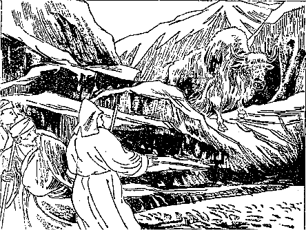
空谷怪獣に遇う
私はその後その舌の乾かしたのを見ましたがその舌の乾いたので馬の毛をこするブラシにして居たです。で
此舌は山ヤクの子供の舌であるというて居りましたがそれでもなかなか大きいものである。そこで私の一行の中のある正直な男が非常に怖がって私に向い、どうか今夜無事に過されるだろうか、一つ
占筮をしてくれろという。「はて山ヤクが出て来るので恐れて居るのか知らん」と思うとそうではない。「つい昨年の事であったがこの山の少し下で……」といって一、二丁ある所を指さしてその男のいいますには、あそこで強盗のために商売人が六人殺された。今夜も我々は寝ずに居らねばならんかと思うほど何だか怖いから一つ占ってくれんかという訳なんです。まあ心を休める方便ですからそんな事は決してないと説明して置きましたが、随分その辺の様子を見ると山ヤクがのろのろとやって来る位ですから物凄い厭な所でありました。しかしその夜は無事で、その翌日また東南に向って山原地を進むこと六里にしてある沼原地に宿った。宿る時分にはなるべく沼のある原を
択むです。なぜならば沼の原は草が余計ありますから……。
その翌十一日も同様山原を六里進み、十二日にクル・ラという降り昇り三里ばかりの急坂を
踰えて東に行くこと七里ばかりにして、またある
沼原地に宿りました。この間の事です。私と同行して居るあの坊さんは他の正直にして
篤く仏教に
帰依して居る人達が私に対して同情を表することが非常に盛んになってつまり私の味方が沢山出来て来たものですから、さすが高慢なる坊さんもその味方の悪口を恐れて私と特に親密にしようという傾向を現わして来たです。もちろんどういう動機であってもその人の親切を無にするというのは
宜しくない事でもあり、かつその人と反目することは甚だ不得策でありますから向うの親切よりも私はなお一層親切にしたです。それから大いに円満になってまあこれなればあばかれるような不幸もあるまいかと安心が出来たです。
その翌十三日大変大きな坂を二ヵ所ばかり
踰えて岩石の
突兀［＃ルビの「とっこつ」は底本では「とっごつ」］として
聳えて居る山の麓に宿り、その翌日はその突兀たる岩石の間を流れて居る
溪川に沿うて東南に行くこと三里、また五里ばかりの
緩い坂を踰えて川端に宿り、十一月十五日その川に沿うて東南を行くこと二里にして平原に出て、そうしてその曠原を東に横切って三里ばかり行くとギャートー・ターサムという駅場に着きました。その駅場は前の駅場よりも石造の家が大変に多い。で人も大分沢山居りましたが
総てで四百名位だということです。家屋は六十戸ばかり、風俗もこれまで通って来たチャンタンといういわゆる遊牧民ばかり住んで居る所とは大分に違い幾分が都風に化せられて居る様子が見えて居るです。遊牧民は非常に粗野で人と物をいうにも
剥出しで実に荒々しい風ですが、もうこの地方の住民は遊牧民とはすっかり違って言葉の使い方も幾分か都風になって居る。なお地方の
訛言は免れて居りませんけれど……。
そこで買物などをして二里ばかり東南の山中に進んでその川岸に宿りましたが、もはや陽暦でも十一月中旬頃でございますからなかなか寒いです。けれども誠に仕合せな事にはその沢山な人達が着くと
直にヤクの糞を沢山に拾って来て、夜通しテントの中で火を燃して居るのみならず、私が文典を講義してやりますので主人およびその
次序のラマが大いに私を厚遇して敷物や夜着などを貸してくれたですから少しも寒さを感じない。その翌日大きな急坂を
踰ゆること二回（この里程六里足らず）にして平原に出で一里半ばかり行きますと
その平原の中央に大きな岩の柱が二本抱き合わしたように鋭く空中に聳えて居てその上に一つの寺が建って居るです。その岩の高さはおよそ三丁ばかりあるという。その上に寺が建てられてあるのですから浅草の凌雲閣どころの騒ぎではない。実に高いです。その寺の名をセースム・ゴンパといって
古派の寺であります。その下を過ぎて東の沼原地に宿り、その翌日山の間を東南に行くこと八里ばかりにしてサン・サン・ターサムに着きましたが、その駅場には泊らずにその東の原に宿った。なかなか火を燃して居ってもこの辺は殊に夜分などは寒気が厳しい。翌朝起きて見ますと雪も何も降らんですけれど全く雪の降ったごとくにその枯草に霜が一面に積って居りました。そこで詰らない句が一つ出ました。
かれくさや霜の花さく高の原
例のごとく東南の山原を一里半ばかり進んである山の
麓の三軒家に着きました。ところがその三軒家の軒を見ますと大変です。沢山な羊を殺して皮を
剥いたその
身体が
幾十となく掛かって居ります。で、そこでまたヤクを殺して居るです。元来チベットでは秋の末になりますとすべて家畜類を殺して肉を貯えて置きますので、その肉は乾肉にするのです。チベットは寒国でございますからその肉を干して置いたところで別段腐るということもない。その乾肉の
旨いことはチベット人のいうところに依るとこれほど旨い物はないという。ある人などは夏になって乾肉がなくなったというて大いに心配して居ったのをその後私はたびたび見ました。そうですから
と見えるです。そういう旨い肉を拵えるために秋の末に沢山殺すので、秋は家畜を殺すに大変好い時期であるそうです。なぜならば夏の間すっかり家畜類が良い草を沢山喰ってその肉が充分肥ったその時に殺して乾肉にするのですから非常に旨いという話なんです。しかし自分の部落とかあるいはテントの辺で殺してはよくないというのでわざわざこの三軒家まで連れて来てこの近辺の住民が殺すのだそうです。一人一軒の分を殺すのでなく一村のを集めてそこで殺して居るのです。
ちょうどその日に殺した数を尋ねますと今日は羊と山羊が二百五、六十疋、それからヤクが三十五疋、その内二十疋だけ殺してまだ後に十五疋ばかり残って居ったです。それを今殺すという。で「ヤクが鳴くところを見ると余程珍しいから見ちゃあどうか」との話でした。どうしてそんなものを見るに忍びましょう。しかしその様子を知りたくもあったのでじっと見て居りますと、ヤクはとぼとぼとただ
牽かれて行くその後の方から二人で押して来るです。で、ようやくその殺される場所まで出て来ますと直ぐ四足を
縛られてしまったです。ヤクは今自分の友達が殺されて多量の血の流れて居るその臭い中へ牽き出されて、もはや自分も殺されるということを知って居るものと見えまして
を浮べて居る。実に見るに忍びない。自分が金がたくさんあればどうかみなこれを助けてやりたいと思うほど可哀そうでしたが、別にしようもございません。ところがそこへ坊さんがお経を手に持って出て来て何か口の内で唱えながらお経と
数珠をヤクの頭に載せて引導を渡すです。こうすればヤクが死んでからも生れる所に生れられるからまあ殺した罪はあってもヤクの
怨みを受ける気遣いはないという考えなんだそうです。そりゃまあ殺すのは実に残酷ですけれどお経でも
唱えてやったならば幾分かありがたい
利目があるであろうと思われる。
けれどもその唱え言をして居る様を見るのが余計に悲しくって、私はもう涙が流れその首を切り落すのを見るに忍びませんから家の中に逃げ込みました。そうして可哀そうに思って涙ばかり
溢して居りましたが暫くするとヤクの首を切ったと見えてズドンと落ちた音が一つしました。それはやはりチベットの鋭い刀で一度にその首を切り放してしまいますので、すると血がたくさんに流れ出しますがその血をなるべく外に溢さないように
桶のようなものに取って居るです。で、その血はよく煮固めて
羊羹のような物を
拵える。それがまた大層うまいそうです。もちろん殺さなくっても時々には首筋に傷を付けてその傷口から血を絞り取ってその血を煮てそうして
を
拵えて彼らは喰うのでございますが殊に殺した時のはうまいそうです。こんなに
沢山殺すというのは実に
酷い事だと思いましたが、その後ラサ府に着いて
其府に住んで見ますとこの位の事は実に小さな事で、ラサ府で十月、十一月、十二月のこの三ヵ月に殺される羊、山羊、ヤクの
類は実に五万以上に超ゆるのでありますから、このくらいの事は何でもない事なんです。それからそこを立って悲哀の感に打たれながら大変急な坂を三里半ばかり登りまた三里降って川端に宿り、その翌十九日古派の寺でターサン・ゴンパという大きな寺のあるその山の麓を通り抜けて溪川の
傍に泊りました（この日の行路八里）。その翌日また山の中を行くこと二里ばかりにしてマヌユイ・ツォという池の西岸に在るラールンという村に着きましたが、この池は周囲五里ばかりでよほど深いように見えました。このラールン村に着くまでは少しも田畑がなかったが、
此村からして小麦の作られる畑があってあちこちに村舎も大分見えます。
その時分はもう冬季ですから
麦などはどういう風に出来て居るのか見ることが出来なかったが、聞くところによるとこの辺の麦作は一斗の種で四斗ぐらいの収穫を普通とし、もし六斗も取れれば非常の豊作だといって喜ぶそうです。またラサ府の近所では一斗の種でよい年には八斗あるいは一石ぐらい取れることもあるがまあ六斗くらいでもよいとして居るそうです。これで見ても耕作法のいかに進んで居らぬかが分る。で、その畑を見ると一層驚かざるを得ない。その畑の中にはごろごろと石の多いことまるで石を植えた石畑のようなものです。これは決して悪口でない。どこへ行ってもその通り。
だから私はある時チベット人に忠告してこの石を取り除けてはどうかといいますとそんな事は昔から習慣がないからやらんという話。チベット人は昔からの習慣ということを先天的命令のように心得て居ってこの習慣がすべての事情を支配して居るです。もっとも都会の人は幾分か改進的の気象を持って居りますから西洋品なども輸入するのでございますけれども、一般の人民は非常に昔の習慣を尊んで居りますので、現に自分の田畑を害して居るところの沢山な石を取り去ることすらも習慣がないからといってやらんのです。実に面白い遣り方ですが、なおそれよりも奇妙なことを私はその辺の
村夫子に聞きました。その時はそんな馬鹿げた事があるものかいい加減な事をいうて居るんだぐらいに思って居たですが、その後ラサ府でその事を聞いて見ますと誰も彼もやはり同じ事をいって居た。それは実に
であってその遣り方はまずこういう訳です。一体田畑があればそれに政府から地租を課さねばならん。その地租を課するにもどれだけの大きさの
田地ということが分らぬ。ところでちょっと前にも説明しましたようにチベット人には数学的観念というものは実に
乏しい。いなほとんどないくらいであるから田地を正当の方法で
量るということは到底出来ない。そこでヤク二疋に
鋤を引っ張らしてその田地を
鋤かして見るです。で半日掛るとこれがヤク二疋で鋤いて半日掛った田地の大きさというのでそれだけの租税が極まり、一日掛ると一日の田地ということで政府はそれを標準として税品を取り立てるのです。随分奇態な遣り方です。その他いろいろそのチベットの風俗あるいは僧侶の品行等の話を聞いて、それから五里ばかり池の端を通って向うへ出ますと溪の流れの合して居る所があってそこへその夜は泊ったです。十一月二十一日ごく狭い山の間の谷道に沿うて行くこと二里ばかりにして今度はまた大きな池に着いた。その池もやはり周囲五里ばかりのごく清潔な池でその名をナム・ツォ・ゴガという。その池の北岸を東南に進んでセンゲー・ルン（
獅子溪）という
溪の間を通って行きました。がその溪の両側の岩が妙な形をして居るのでチベット人はその岩の形の獅子に
擬えそれで
と
命けたと思われるです。その溪の間を三里ばかり進むとまたセンゲー・ルンという村に着いた。その村に
宿らないでナクセーという村まで行って泊りましたがその日は十里以上歩いたです。なぜこの日に限ってこのように不規則に歩いたかと申しますと、これから旅行の遣り方を変えなければならん必要があったからです。今まではチャンタン（牧場）の草の多い所を通って来たから馬に草を喰わせるために早く泊り込んで、そうして充分馬を
養わなくちゃあならなかったが、家のある方へ参りますと田畑が多くって牧場が少ない、それゆえ
秣草を買わなくちゃあならない。ある宿屋に着いてその宿屋から秣草すなわち小麦
藁、麦藁、豆の木などを買うて馬にやらなければならない。ところが
此秣がなかなかチベットでは
高価いのです。
今一疋の馬に一晩充分喰わせるとすると安い所でも十五銭、高い所では確かに三十銭ぐらい掛る。その上になお豆をやりあるいはまたバタを融かして
脂にして馬の口に注ぎこむこともあるです。ですからチベットで行商をやるということはなかなか困難な事でもあり費用も、沢山掛るそうです。十一月二十二日また大分に高い山坂を
踰えて山原地を進むこと五里ばかりにしてまたブラマプトラ川の北岸に着きました。その辺のブラマプトラ川は私が先に渡ったようなものではない。
幅は二町ばかりですけれどその深さは青みがかってどのぐらい深いか分らない。到底馬でも渡ることは出来ない。殊に夏になればその川幅が非常に広くなって一層深くなるそうです。で、その川には
渡船がありますがその渡船は
なんです。底は平面の長方形で
舳の真中に蛇の頭がぬるっと首を出して居るところの彫刻物が食い付いて居る。で
其船には馬も二十疋、人も三、四十人位乗れる位の大きさのもので、向うの岸に渡りますとその岸がハルジェというチベットでは第三の都会の地です。そこまで着けばまずチベットの内部へは全く入り終ったようなもので、ここからチベット第二の府たるシカチェという所までは僅かに五日間の旅程しかないのです。で川を渡ると南に当ってシナ人の立ててある旅館がある。旅館というたところが宿屋になって居るという訳ではなく、シナ人がそこへ出て来た時、泊り込むだけになって居るまでの事で別段宿屋の主人というものもない全く
です。それはシナ人がチベットで商いをする便宜のためかつは兵士らが行軍する時分の便宜のために建てられたのである。随分大きなものです。私共の一行もそこへ着いて泊りました。ところが一行の人達は大悦びで西北原のあの恐ろしい間で幸いに賊難にも
遇わず、また猛獣の侵撃にも遇わずにここまで来たまずめでたい祝うべしというので、大いに酒を飲みまた女を
聘んでその夜は騒いで居りました。そういう有様は日本あたりとちっとも変らないようである。その翌日も私は逗留しましたがもはやその人達と別れる時に臨んで居るものですから、今まで親切にしてくれた恩を謝するために一日
を読みました。その日は私共の同行者は実に獣慾的快楽を極めて居りましたがその有様はいかにもいうに忍びないから
止します。その翌二十四日に私は二、三の人といよいよ出立してサッキャア派の大本山に行く道を取り、またあの一行の商隊は公道を取ってプンツォリンを経てシカチェ府に行くことになりました。別れに臨んで今まで私が文典の講義をしたお礼として主僧から十タンガーその他の人々も感心な巡礼のラマであるといって
若干の金をくれて敬意を表せられたです。で、その主なるラマとその次のラマと
下僕一人だけは私と共にサッキャアの大本山に行くことになりましたので、
其寺まではあなたの荷物を持って行ってあげよう、また共に馬にも乗って行くがよいというので、安楽にサッキャアなる大寺へ指して参詣することになりました。その日は南に向って麦畑の間を行くこと二里、その辺は余程土地が肥えて居る、もっともチベット人は耕作法を知らないことは前に申した通りですから充分収穫を取ることは出来ないに極って居るが何しろ土地は非常に肥えて居る。
とにかくチベットではこのハルジェという所が麦、小麦、豆、バタというようなものが一番安い所です。それはこの辺で沢山出来るからでございましょう。その畑を過ぎて二里ばかりの急坂を
踰え東南に向って畑の中を行くこと四里半ばかりにしてレンターという小村に宿り、その翌日は川に沿うて七里半行くとサッキャアの大寺が見えました。なかなか立派なものでこちらから見ますと二丁四面余の高塀の中に大なる建築物がありだんだん近づいて見ると皆石造で、その本堂の高さが十
間ばかり東西の長さが三十四間、南北が四十間、石は皆白く塗られ塀は
弓形方に立ち上って、その上にヒワダを重ねたような具合に黒塗の一城が築かれてある。そのずっと上の屋根になって居る所に
最勝幢幡と露台が金色の光を放って周囲に突っ立って居るです。その内容のいかんに拘わらず外部から見た時分にはいかにも森厳にして人をして
敬粛の念を生ぜしむるように建てられてあるのです。
で私はその寺の近所に着いて宿を求めその宿屋からの案内で本堂その他の諸堂へ参詣致しました。まず高さが二丈ばかり厚さが六尺ばかりある石塀の門を通り抜けて門内に入りいろいろの堂の間を通って本堂の
間に着きました。その本堂を外から見ると四方形で中は全く
塞って居るように見えるですが、中には空間があって中庭から光線を導くようになって居るです。それで堂の間口十三間奥行六間ばかりある玄関を入って参りますと、その両脇に二丈五尺余の青と赤との金剛力士が立って居る。その力士の様子は日本の
仁王と違って右の足を少し折り曲げ
心に左の足を斜線に突き立て、右の手を空に振り上げ左の手を伸ばして力を籠めて居る有様である。余程美術的に出来て居ると見えてその筋肉の働きなどは大分よく現われて居ます。詳しく見たらもちろん不充分なものであろうという事は我々
素人にもよく分って居りますが、とにかくチベット美術としては余程立派なものに違いないです。それからその次の右側に高さ三丈ばかりある四天王の大きな像が四つ並び、また左側を見ると諸天諸菩薩の大きな画が壁に描かれてある。
其画は石壁の上に土を塗りなおその上にチベットの天然の石灰のようなものを塗った所へ種々の方法を尽して立派に
描き上げたものですが、高さ三間半に横四間位の大図なるに拘わらず一つも壁の割れたなどという所がなくって誠に綺麗に出来て居る。
建物も随分古いけれどもよく保存されて居るです。
其堂を通り抜けると中央に東西五間に南北六間位の庭がある。
其庭もやはり一体に板石が敷き詰めてありますが
其庭は下等の
僧侶が集まってお経を読みまた茶を飲み麦焦しを食う所です。よい坊さんは本堂の内で喰うのですけれども下等の坊さんは皆その中庭に居るのです。その広庭を過ぎて正門すなわち西の方にある本堂中のいわゆる本堂に入る。この一体は皆本堂ですけれどもここに本尊様を祀ってありますから、仮に本堂中の本堂というて置きます。その本堂に入るに二つの入口があって南の方の入口はこの寺の坊さんらの入る道、また北の方は我々参拝人の入る道なんです。すなわち私共はその北の口からずっと入って見ますと実に
金碧燦爛として何ともいえない感に打たれたです。
どこから形容してよいかどこからいい出してよいか分らん程
錯雑して居るがなかなか立派です。惜しいかなその仏像の陳列の仕方が
拙いので参拝人をしてそれ程に敬粛の念を起させない。つまりぞんざいな仏像画像及び経本等の博覧会に行ったような感じが起ったです。けれどもその天井を見ると五色の
金襴あるいは
綾錦の類をもって
蔽われて居る。それから下には諸仏、諸菩薩及び妙王、金剛、
薩の類の像などが三百余りもあって皆
金色の光を放って居る。その金も非常に精選したものらしく柱もまた金襴で巻き立てて、その中央には三丈五尺の釈迦牟尼仏の
金色の像が安置してある。それは泥で拵えたものだそうですけれど立派な金で塗ってあります。それからその仏の前に並べてある七つの水皿、
燈明台、
供物台等は多くは純金で、ごく悪い所に在るのでも銀で拵えてある。その仏像、仏具及び装飾の
金繍等が互いに反映して輝く有様は
皓々赫々として
目眩くその立派なることは実に
胆を潰すばかりでありました。けれども私は余り感服しなかった。装飾度に過ぎて秩序なきがためにかえって不愉快に感じました。
その仏像を
祀ってある後の堂に入りますと今度はなかなか立派なものがある。それは前のごとく赫々と光を放って居るものではなく実に立派な経殿である。その経殿の高さは十間余、広さは四十間でその堂はすべての経文が満たされて居るのである。その経典は
紺紙金泥及び
梵語で記された
多羅葉の類で、古代この寺を開いたサッキャア・パンジットという方がインドからして沢山経典を取り寄せられ、またその後もインドの方へわざわざ僧を派遣して沢山取り寄せた経典があるのですから、この中には非常に我々の参考に供すべき経文が沢山あるであろうと想像しました。版本になって居るチベット語の経典はないがただ写本だけの経文がここに余程納まって居るということでございました。その所を出て本堂の
彼方此方を見廻って居りますと始めはそんなに思いませんでしたが非常に嫌な臭いがして居る。
これはチベットのどこの寺に行ってもこういう
臭いがするので、とても日本人が始めて入った時分には鼻持ちのならぬ臭いであろうと思われたです。チベットでは燈明は皆バタで上げる。それから僧侶がここに来て茶を飲む時分にバタや茶を
溢すです。ところが庭は板石といったところで
漆喰みたようなものですからじめじめ湿って居りますからそのバタの腐敗した臭いが堂内に満ちて居る。
此臭はチベット人にはよい臭いとして
嗅がれて居るのですけれども私共には非常に厭な臭いである。本堂を出ますとその両側にまた堂があっていろいろの仏像が飾ってある。
その中でも殊に目立った物は古派の
開祖ペッマ・チュンネの像でありました。
其像は台も像も一体に宝石で出来上って居る。ぐるりの壁もまた庭にも宝石が敷いてある。もっともそれは敷き詰めてあるのでなくって模様に宝石を
置いてあるだけですが、実に人目を驚かすばかりの立派な有様である。本堂の外に出ると僧舎が沢山あって僧侶が五百名程住んで居るそうです。で南の方の大なる層楼に住んで居る当寺の大教師はチャンバ・パーサン・チンレーという人でこの五百人の僧侶を導くところの大教師であるです。
そこで我々一行は大教師に逢いに参りましたがなかなか立派な室で、大教師は二畳台の上に乗って居りました。見るからいかにも有難そうな
風采です。私はそのラマにいわゆるサッキャア派が他の宗派と異って居る点を尋ねようと思い、いろいろ話を仕掛けますと今日は
忙しいから明日来いという。で、その翌日出掛けて行くことに
極めてその日はそこを辞し、それから二階を降りて石の高塀の外に出ますと
遙か南の枯れた柳の林の中に御殿のようなものが大分に沢山に見えて居る。一行の者はあすこがすなわち当大寺の
主僧であるサッキャア・コマ・リンボチェという方の居られる所であるから逢いに行かねばならんという。それで私もそこへ出掛けて行きました。
コマ・リンボチェとは
上宝という意味でシナの皇帝もやはりチベット人はコマ・リンボチェといって居ります。東ではシナのコマ・リンボチェ、西ではサッキャア・コマ・リンボチェ、この二人が日月のごとく尊いお方であるとこういうような具合に民間に伝えられて居る。そういう尊い人ですからその人に
逢えば誰も彼もが皆礼拝していろいろありがたい授かり物をして来るのでありますが、しかしその人はその実俗人なんです。それはサッキャア・パンジットからの血統で今日まで続いて来て居りますので、もちろん俗人の事ですから
肉食、妻帯、
飲酒等もして居るのですけれども、チベットは妙な所で純粋の僧侶がやはりその方の所に行くと礼拝するのです。しかし釈迦牟尼如来の教えとは全く違って居るのですから私はそこに行った時分に
敬いはしましたけれど三礼はしなかった。なぜかというに俗人に対して僧侶が三礼するという規則がないからその事はやらなかった。けれどもお逢い申して見ると威厳あって随分尊く見える貴族でした。
その方に逢っての帰り途に私と同行のラマ達がなぜあなたはあのコマ・リンボチェに対し礼拝しなかったかといって責めますから、私は別に軽蔑した訳ではない。ただ釈迦牟尼如来の教法を守って礼拝しなかったのである。あの方は俗人で私は僧侶であるから礼拝したくも出来なかったのであると答えますと、どうもシナの坊さんは非常に意地の堅いもんだといって驚いて居って、その翌日かねて約束の時間にサッキャアの大寺に逢いに参りますとその尊い教師の側に可愛らしい十二、三の
子僧が居るです。
其子が教師にふざけて居る。いかにもその様子の馴れ馴れしいこと実に教師の子ではあるまいかと思いましたが、しかしその方は純粋の僧侶であるから妻君がないに極って居る。しかしその様子がどうしても一通りの関係でない。実におかしい事であると思いましたが後にラサ府に着いてからその疑問がすっかり晴れたです。
実はこの大寺に二週間ばかりも泊ってせめてこのサッキャア派の仏教の綱領だけでも知りたいという考えでしたけれども、そういう腐敗した坊主について学ぶのは厭ですからその翌日出立してまた
以前のごとく一人で荷を背負って、東南の方へ指して溪流に沿うて一里ばかり登り、それから東に二里ばかりの急坂を
踰えて今度はずっと山の間を東南に進み、川に沿うて四里余り参って二軒家に泊り込んだです。荷物を背負って居りながらとにかく七里ばかりの道を歩くことが出来たのは余程身体が丈夫になって居ったからであると思いました。その翌日また一里の急坂を登り、降ること二里、降雪のために荷物が濡れていやが上に重くなりましたからその辺のある家に泊り込み、その翌十一月三十日、四、五十疋の
驢馬を率いて居る七、八人の運送業者に遇ったのを幸いに賃銀を払い荷物を託しタール川に沿うて北に降って行くこと二里、その川がまた方向を変えて東南に降って居るから、その川の岸に沿うて降ること六里にしてある村の
端れに宿ったです。で、この驢馬の運送屋はやはり村の中へは泊らない。畑の中へ指して行きましてそこへ驢馬の荷物をすっかり卸して
其荷を三方に積み立てて
囲いを造り、その中へ人が入って例のごとく石を三つ集め鍋を掛けてその辺から拾い集めたヤクの糞をもって火を燃すという趣向です。今まで私の一緒に来た商隊よりは余程劣って居るのです。
十二月一日川に沿うて降りかつ登ること四里、そこで川を離れ東の山中に登ること四里にして非常に険しい赤い岩の下に着いた。いわゆる
赤壁巌でこれをチベットではランラと称して居る。そこにまた露宿してその翌日石壁の間の二里の急坂を
踰えて山の原を行くこと二里、カンチャンという大きな寺がある。その寺の南の野原に宿りましたがその辺は皆畑なんです。ところが運送業者はその畑の中をどこでも横行して行くです。こんな事をしたらばその畑の主が喧しく
叱言を言いはすまいかと言って
尋ねますとなあに決して叱言など言いはしない。
だからという。休み田地というのはどういう意味かといって尋ねますと、一年麦を作ると一年休ませて何にも作らないのだそうです。これはラサ府の方ではない事ですけれどこの辺では二年に一期の収穫なんです。またたといそうでなくても冬の間は田畑の中をどこを道にして歩いて行ったところで誰も何ともいう者はないのですから畑の中はどこでも道といってよろしいのです。その野中に露宿してその夜は運送屋のために説教をなしその翌日東に進んで行くこと三里ばかり、チベット政府が新たに建築して居る立派な寺が山の際に見えたです。なぜ政府が自身に寺を建築するのかというて尋ねますとその寺の建って居る下に泉があるそうです。ある
神下し（わが国の
修験者のごとき者）が
此泉は龍の口であるからこの泉が破裂するとチベット国中が海になってしまう。だから寺を建てて塞いで置かなければならんといったそうです。のみならずちょうどその事をいった時分にシナから
が来た。それはある僧侶が何かためにするところがあってそんな物を作ったんであろうと思われる。私はその予言書を読んで見ましたが、つまりこの頃は不道徳の行いが盛んになって来たためにこの世界はすっかり水に
溺れて滅亡してしまうとか、あるいはその前に
大饑饉が起るとか大戦争が起るというような事が沢山書いてあるです。その予言書もです、天から降って来たというので、もしこれを嘘だなどというと即座にその人は血を吐いて死んでしまうなどということも記されてある。ところが私はちょうどそれを読んだ時分に嘘だと言ったけれども幸いに血
は吐かなかった。なにしろ悪い考えで拵えたのではなかろうけれども、余りに妄説が沢山記してありますから少し見識あるものが見れば嘘な事は分るです。
けれどもチベット人の多くはそれを信仰し、そしてその予言書がチベット語に翻訳してチベット国中にはどこにも散らばって居るです。で、その本を読んで居るその時分にちょうど
神下しがそんな馬鹿な事をいい触らしたものですから、堂々たる政府がこういう神下しの事を聞き莫大の金を費やして寺を建てて遣るというその馬鹿さ加減には驚かざるを得なかったです。けれども神下しの言を聞くのはただこれだけではない、国民皆自分の判断のつかん大抵の事はいつでも神下しの言葉を聞くのですから、日本の
天輪王の
尊などがあちらに行けば随分はやるだろうと思う位に迷信が盛んです。その新築をして居る寺の下を過ぎて少し行くと
山の端にチャ・ゴッポ（
禿鷲）という鳥が五、六羽居るのを見た。それからその訳を尋ねますと、この辺では死んだ人の死骸を持って来て上げる信者が少ないからそれでこの禿鷲が大方餓えて居るので、タシ・ルフンプー寺の台所からこの八羽の禿鷲に禄が付いて居るんだという。その禄は肉だそうです。鳥に禄があるというのは奇態ですけれどこの鳥は葬式の時に人の死体を持って参りますと
其肉を喰うのです。その有様はどういう風にして喰うか、どういう風にして食わせるかまた葬式の仕方はどんなであるということは私がラサ府に着いてから見た事についてお話し致そうと思います。
さてその辺を過ぎてナルタンという寺の近所のニュン・ネー・ハーカン（
持斎堂）に着いて私は泊ったが、その他の一行は私に荷物を渡してシカチェ府の方へ行っちまいました。私は少しここで調べ物をする必要がありますからその翌日も泊るつもりでその人らと別れて特にここに宿ったのでございますが、持斎堂というのはこの辺の僧侶や俗人が八
斎戒を保つその上に一日間全く肉を喰わぬとか、あるいは人と少しも物を言わぬという
行をするためにここに立てられて居る堂であります。チベット僧侶はすべて肉を
喰うなということはない
けれどもその戒を保つと同時に殊更にそれを守るのであります。その翌日ナルタンという寺へ参ってその寺の一番宝物であるところの
版木を拝見しました。その版木はチベット
一切蔵経の版木で一切蔵経はチベットで仏部、祖師部に分れて居る。なおチベットのラマ達が拵えた語録様の版木も沢山あります。その版木の入れてある堂も余程大きなもので、三十間の間口に奥行が十間ばかりその中に版木がいっぱい詰って居る外にもまだそれぐらいの堂と小さな堂が少しあるです。
で、この寺で大蔵経の版が刷り出されますので、その寺に住んで居る三百人の僧侶はすなわち版刷職工である。私はその寺の大教師に会いましたが、その方はタシ・ルフンプー寺から特派されて居る大教師であってなかなか問答の遣り方が巧みです。で私は終日仏教の話をして大いに益を得たのみならず大層快く取り扱うてくれたです。その翌十二月五日東南に向って平原を行くこと五里、すると岩山の下に
金光燦爛たる御殿風の屋根が見えその横には
白堊の僧舎が沢山立ってある。それからその間に朱塗の殿堂のようなものも混って居って実に壮大美麗な姿を現わして居る。これが
シカチェに在るところの大寺でタシ・ルフンプーという。タシは栄光、ルフンプーは塊、
その意味はすなわち須弥山の形をしているので開山のゲンズン・ツブという人がこう名を
命けられたんです。その寺には三千三百人の僧侶が居る。もっともチベットで一番大きな寺というのじゃない。第二流の寺ではありますけれどもその資格は法王の寺と同等に位して居るのです。その寺の向うにシカチェという
市街が見えて居る。その市街は三千四、五百戸もあろうかと思えるですが、住民は僧侶と共に
三万余りだそうです。これは決して当てにはならない。チベット人は統計を作ることを知らないのですからおおよその事をいって居るのです。私はその大きな寺の中に入って参りまして西北原から出て来たというて西北原の信者やラマの泊るべきピーツク・カムツァンという僧舎を尋ねました。それは暫くこの大寺に逗留して博士、学者、徳者に逢い仏教上の教えを受けようという考えで泊り込んだのです。この寺の今の主人は
というてもよい。政治上の権力は少しもありませんけれどもシナ皇帝から与えられて居る位階の上からいうと法王より上に在るんです。もっとも法王がお隠れになって再び生れ返って来て法王の位に
就き政権を
執るまでは、時としてはこの第二の法王が政権を執られることもあるんです。だが尋常政治には関係しない。この寺の大ラマの通俗の名はパンチェン・リンボチェで、今のパンチェン・リンボチェの名はキャプコン・チェンボ・チョェキ・ニマ（
大主護法日）という。私の着いた時がちょうど十八歳で生れは
未の歳、阿弥陀如来の
化身だといわれて居る。私はこのお方に会おうと思いましたが離宮の方へ行って居られたので会うことが出来ませんでした。ところで多くのラマなり学者なりあるいは博士なりを毎日尋ねて行っていろいろ仏教上の事を質問するのを私の仕事にして居りました。
ある日この大ラマの侍従教師であるツァン・チェンパという老僧の所に参りました。その方は七十四歳の高齢でなかなか親切に仏教の事を説明してくれた。それから文法と修辞学においてはこの大寺の内で第一等の学者であるということを聞きました。私も文法については一方ならぬ研究の力を費やしたものですからその点についていろいろ質問しますと、そういうむつかしい事は私は知らんからしてこれからラサ府に行く道にエンゴンという所がある。そこに医者をして居る人で大変な学者がある。その方について聞いたならば大抵は分るであろうという。
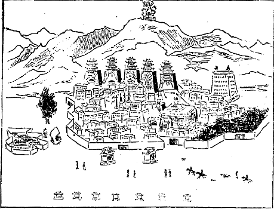
タシ・ルフンプー大寺
私は自分の分らない事を聞いたのではない。どういう説明をするかと思って参考のために聞いたのです。けれどもそういう次第であったからそのままお別れ致しました。もっともチベットへは昔のインドの五明とて五つの科学が入って居る。それは
声明とて言語音声に関した一切の科学、
医方明とて医学、
因明とて論理学、
工巧明とて工学、
内明とて宗教的科学及び哲学でありますけれどそれをよく取り調べて明らかに通じて居る人はごく少ない。それはほとんど無いというてもよいぐらいですから文法などを心掛けるような人はごく少ないです。まあ政府部内の人で是非文章を書くに必要だから少し学んで置こうぐらいのもので、それもごく初歩の文典を学んで居るに止まって居る。だから仏教の哲理を説明し及びその事を
修学するの甚だしきに拘わらず、歴史とかあるいは科学の事について質問されると何にも知らないというような堂々たる博士があるのでございます。数日逗留したがもはや余り泊る必要もないから出立しようと思うて居るその日に、大ラマが
離宮から帰って来られるということですから、どんなお方か、どういう行列で帰って来るかと拝観に参りました。
すると道というような道は無論ないのですけれど広く人の
足痕のある所が道になって居る。その両脇につぶつぶと円い郵便函のような物が立って居る。それが何かといいますと
香を
焚く台である。その大ラマの出て来る前からして僧俗の者が香を焚いて待ち受けて居る。そういう人達は行列をジーッと見て居るというより礼拝して地上に
打伏してしまうのが多いです。私はジーッと見て居りますと馬がおよそ三百騎ばかりで、その大ラマは
金襴あるいは異様の絹布類で装われてある
宝輦に乗って来ました。それが実に立派なものである。で始めにはチベット流の音楽、ちょうど日本の
簫篳篥及び
太鼓の
ようなもので行列を整えて参ります。もちろんこの行列には鉄砲、槍、刀の類を持って来るような者は少しもない。ただ仏具を持って居る者を大分に沢山見受けたです。
余程盛大なもので随分一日泊って見ただけの価値は充分にございました。その夜私の泊って居る
舎で僧侶らの
請に従って十
善法戒の説法を致しました。すると彼らがいいますには仏法はこんなに分り易く説いてくれる方はごく少ない。論理的で趣味のないむつかしい事ばかり聞いて居ると、
坐睡の出るような事ばかりいわれるから私共は仏法の坊主でありながら厭であった。けれども今日
承って仏法のありがたい事を知りましたといって
悦んで居りました。それでチベットの中等以下の僧侶がいかに仏教を知らぬかが分るでしょう。しかしこの寺の僧侶の行いはなかなか厳格だそうです、後に聞いて見ますと……。だが酒を飲むのが一つの癖で実によく酒を飲みます。
それについてなかなか面白い話は、ラサ府の法王とこの寺の大ラマとが一緒になられた事がある。その節の話にラサ府の法王がいわれますには、私の方の寺の坊主共は煙草を沢山飲んで困るということであったそうです。ところが大ラマは私の方の寺の僧侶は酒を沢山飲んで困る。酒と煙草とどっちが罪が深かろうという話がだんだん出たそうですが、既にその悪い事が公然の秘密になって法王達もよくご存じであるけれどもいかんとも仕方がない。ところで酒を飲むことを防ぐために僧侶が
市街に行って帰って来る時分には門の所に立って居る警護の僧に対し口を開いて
香いを
嗅がすのです。で酒の香いがして居ると
引捕まえる。ところがなかなか僧侶もずるい。充分酒を飲んで足はひょろひょろ、眼はうとうとして居りましても口には少しも酒の香いをさせないようにするのです。それは
蒜を沢山喰って蒜の香いのために酒の香いは消してしまうのです。まあそんな悪い事も、ありがたいラマの話も聞いて
玉石混淆の道場を後にして、十二月十五日朝十時に
其寺を出立しシカチェの町を横切って行くことほぼ一里にしてサンバ・シャル（東の橋）という大きな橋に着きました。
長さは三町程で幅が四間ばかりある。この長さ三町の橋は日本のごとくに橋杭を打って向うまで架けてあるというものじゃあない。川の中に四、五間ずつ隔てて大きな土手を築いて居る。その土手は皆石で積み上げられて居る。それへそれに相応した長い木の柱を横たえてそれからその上に板石を敷き土を被せてある。
欄干もやはり木で
［＃「木で」は底本では「張木で」］拵えてある、そういう具合にして三町幅の川を向うへ渡れるようになって居るですがこの川の名はツァンチュといいます。その川を渡って北に行くこと一里半ばかりにしてまたブラマプトラ川の岸に着いて、その川に沿うて東に降り行くこと五里ばかりにしてペーという村の貧しい農家に宿りました。するとその農家の内で私が見て変った感じを起しましたのは、
五徳の横に積み立ててある
薪はヤクの
糞でなくって芝草の根なんです。芝草の根を土と共に切り取ってそれをよく乾して燃すようにしてある。これはその辺で多く用いて居る薪だそうです。
その火の燃えて居る
端に十一、二の子供が手習をして居るです。それは黒い板木に白い粉を振り
蒔いて竹でもってその上へ書いて居るです。すっかり書き終りますとその親に見せて悪い所を直して貰って
一応その字を拭き取りまた白い粉を振り掛けて書くというような訳で手習をして居るのです。私は大いに感じまして、どうしてこんな
貧しい家で子供に手習をさせるかと思って尋ねますと、この辺は皆農家であって
地主に小作料を
納めます時分に字を知らないというと地主にごまかされる。だから字を習い数を算えることをよく習うのでございますという。数を算えることは先にも説明したように石や棒あるいは
数珠で
算える外に遣り方はないのです。
貧民で字を習うことはこの地方の農家に行われて居りますだけで、ラサ府の方に行きますと貧民は決して字とかあるいは不完全なる算え方さえも知らないです。そういう点は余程この辺の方が勝って居る。その夜はその人達に説教してその翌日また大河に沿うて降って行くこと二里ばかり、大変嶮しい岩山に沿うて川を左にして細道を東に降って行くこと一里半ばかりにしてちょっと広い所に着きました。で、その右側を眺めますと山の上に大きな寺が二つ見えて居る。
其寺がかねてタシ・ルフンプー寺の老僧に教えられて居った文法学者の居るエンゴンという寺である。そこで公道を取らずにそのエンゴンという寺へわざわざ上って参りました。坂を登って行くこと一里ばかりにして寺に着きました。峰の上の方にある寺は男僧の寺で少しく下にある寺が女僧の寺です。で、その寺には男僧が二百三十名、女僧が七十二名居る。なかなか
由緒のある寺で
委しい事はここで申す必要はありませんから略しますがそこにある坊さんの
舎について宿りました。早速その学者に遇いたいといいますと明日でなければいけないというのでその翌一日逗留して博士に逢いました。ところがその方は仏教の事について少し説明をされたが文法あるいは修辞学についてはよく知らないから医者のアムド・カーサンという方に尋ねるがよかろうという。そのアムド・カーサンという人はさきに私が老僧から教えられて居った文法及び修辞上の大学者であるという。
そこでその人の所へ参り相当の
礼物を差し上げてそれから来意を告げますと、あなたは文法あるいは修辞学をやったことがあるかという。そうです三年ばかりやりましたと答えました。それは私はチベット語を学ぶ始めからチベット語の文典については非常に注意して居ったものですからそう答えました。ところでその学者のいわれますのには、しかし三年やったって遣り方によっては少しも分らんからなといって二、三質問されました。それはごくやさしい質問で私は直ぐに答えました。それから何か一番むつかしい修辞学上の事を尋ねてくれないかといいますとその学者は私は修辞学を知らないという。それではあなたはチベット文典についてはどういう学派の主義を取って説明されるかといって尋ねますと、チベット文典では不完全なングルチュという人の文典を用いて居るという。こりゃ私に向って嘘をいって居るのではないか知らんと思いましたから、チベット文法を精確に説明したる「シートゥ」ラマの主義を取らないかというて尋ねますと彼は「シートゥ」の名は聞いたがまだその書物を見たことはないという。
そこでチベット文法学者中に非常に議論の盛んなるチベット文字の母音について尋ねました。まず始めにチベットにはどれだけ母音があるかといって尋ねました。これは何でもない問題のようですけれど実にチベット文法の真意を解釈するにはこの問題から決しなければならんのです。ところがその方は少し当惑して母音が十六字あるといってサンスクリット語の母音をそろそろいい出したです。奇態な事をいう人だと思いましたから、チベットでは母音は五字だという説があるがその説には賛成しないかといって尋ねますと、ああそうであったっけ、これはほんに
梵語の母音である、チベット〔語〕の母音は確かに五字である、といって大いに恥じて断りをいいました。ところがそのチベットの母音が五字であるということも非常に間違った説で、西洋
人などはチベットの母音は五字であるという説を伝えてそのまま翻訳して得々として居るのでございますけれど
真実チベット文字を創造したツーミ・サンボーダという方の原書にはチベット文字は四字の外母音を置かないとしてある。それが全く真実である。それを間違って五字でなければいかんという説もあるので、それがためにチベットの文典学者の中でも議論がいろいろに分れて居る。そういう初歩のやさしい事すらよく知らない坊さんが文典修辞については大学者であるといわれて居るのはどうも分らない話だ。事によると嘘を
吐いたのではないか知らんと思っていろいろ他の文典上のやさしい話を尋ねましたが一向何も知らない。ごく知り易い誠に平凡な事だけ知って居るに過ぎない。
こういう方がこのチベット内で文法の大学者であるの修辞学の大博士といわれて居るのは実に鳥なき里の
蝙蝠であると思って、いかにも文法や修辞学上の学識の程度の低いのに驚いて自分の宿って居る僧舎に帰って参りますと、その舎の
主僧が私にあの医師の所で何を話したかと尋ねますから、私は文法について話したと答えますとかの主僧は
勿体らしくいいました。「あの医師はツァン州において唯一の文法及び修辞の学者でなかなか一度や二度遇って話したぐらいであのお方のいうことは解るものじゃない、あなたもほんとに文法を知りたくば
此寺に二、三年間留まってあの方に毎日習学したらわかるであろう。私なんぞは
側に居って始終聞いて居ても何にもわからない」と。かかる
滑稽な事を聞いた私は我知らず吹き出して大いに笑いましたが、かの主僧はその大笑に
訝しな顔をして居りました。その翌十八日、東南の方に向って少しく坂を登りまた降ること二里余にしてブラマプトラ川に着き、その川の岸の大いなる原をだんだん東に向って参りますと向うの方にポンボ・リーウチェという古派の寺が山の上に見えて居る。ほとんど一里ばかり手前になったところで原の中から突然私を呼び止める者がありました。
何か知らんと思って
眺めて見ますと、二人の偉大な男が現われて来たです。両人共前にチベット流の刀を横たえてこちらに進んで来ました。近づくに従って何か用でもあるのかと言って尋ねますと、一人の若い男は「何を言やあがる」と言っていきなり下にある大きな石をもって私に打ち付けようという勢い。それから私はじっと眺めて居りますと「逃げて見ろ、逃げるとこれで打ち殺してやるから」と
威し付けたです。「ははあ、こりゃ例の強盗であるらしい」と思いましたから、私は道端の石に腰をかけた。
すると両人ともずかずかと私の前に来て私の持って居る杖を
強奪ってしまったです。で、「何を持って居るかさっそく言え、一体手前はどこから来たのか」と言う。「私は
巡礼者で雪峰チーセの方を廻って来た者である」と言いましたところが、「
金があるだろう」と言うです。「金は少しはあるけれど、沢山な金は西北原で泥棒に取られてしまったから今ここには余計はない。」「そのうしろに背負って居るのは何か。」「こりゃ経文と食物である。」「それを
解いて見せろ、そこに沢山な金がはいって居るかも知れない。」「金は
懐にある。このうしろの荷物の中には金は入って居ない。私は僧侶だから嘘はつかない。金が欲しければ金を上げる、荷物も欲しければ荷物も上げる」と言って金を出そうとすると、向うから馬に乗った男が三人ばかり走って参りました。
するとその二人の男は杖を
打棄って
逸散に逃げ出したです。これがため図らずも賊難を免れた訳で、その馬に乗った三人の人は私に向い、「今の人は何か」と聞きますから、「金をよこせ物をよこせと言って出て来たものです」と申したところが、「憎いやつである」と言うてしばらくそこに立って居りましたが、「あの寺のある下まで行けば村があるから、あすこへ早くお越しなさい。向うへ着くまでは私がここに見張りをして居るから」という御親切であった。そこで私はその村の方に進んで参りますと、その馬に乗った人もしばらくたってから西の方へ行ってしまいました。
その夜はその村に泊らずに、
其処から三里ばかり東へ進んでニャーモ・ホッターという小さな村に着いて宿り、その翌日テーショクという村で
昼飯を済まし、その夜はタクツカという村に泊りました。十二月二十日は前夜来大分に雪が降りましたので朝
未明に雪を踏み分けながら川に沿うて東南にのぼって参りますとブラマプトラ川の
川洲――砂原のあちこちに夜来の雪が残って居ります。その間に鶴が幾羽か
徐に歩みながら誠に高い清い声を放って居るです。その光景に寒さも忘れて幾つかの歌が出来ました。二つばかり申しましょう。
妙や妙玉のいさごの河原の
雪のまに／＼群鶴の鳴く
おもむろに雪ふみわけつ妙鶴の
千代にかはらぬ道をとくかな
こういう美しい間を川の南岸に沿うて降って行くこと三里半ばかりにしてクルム・ナムセーという村に着き、ここで昼飯を喫して同じく川に沿うて二里ばかり東へ行きますと、川は
東北の方へ流れ去り、本道は東南の山の中へ指して登って行くようになって居るです。その坂を登って行くこと一里半ばかりにしてシャブ・トンツブという村に着いて泊り、その翌日東に清らかな小さな流水に沿うて登ること一里半ばかりにして、その川流の岸に登って参りますと大きな岩山がありまして、山の麓にチャム・チェン・ゴンパ（
大弥勒寺）という寺があって、その寺は名のごとく三丈五尺余の
弥勒仏の像がございます。一体弥勒は菩薩なんですけれど、またこの次に生れ変って来る仏だと言うのでチベットでは菩薩と言わずに仏と言うて居るです。その
弥勒の菩薩に参詣して、それからその横にある
水牛面忿怒妙王の大堂と
釈迦牟尼仏の大堂にも参詣してある僧舎について宿りました。この寺は僧舎二百戸に坊さんの数が三百人ばかりあって、第二の府のシカチェから首府のラサまでの間の一番大きな寺であります。
私の泊った
主僧は何かこの間から続けて
凶い夢を見たというので大いに恐れて居る。何を恐れて居るかと言うに、自分は財産が沢山あるけれども、この間から続けて死ぬような夢を見たからそれが怖くってたまらない。どうかその災難を免れるようにお経を読んでくれまいかと言う。私はそんな災難
避のお経は知りませんけれど、何してもここに
一切蔵経があるからその中のお経を何か読んでやったら向うの心も休まりましょうし、また幾分か
功徳になるだろうと思いまして、それじゃあお経を読んで上げようと言って、その翌日からチベット語の
法華経を始めとして他のお経を読みました。
ちょうど十二月二十八日でございましたが、この寺からある僧侶がネパールのカトマンズへ行くと言いますから大変好都合であると思って、故郷の方へ手紙を出す都合をしたです。それは故郷の親友の肥下徳十郎という人にあてて出しますので、どうかこの手紙をネパールへ持って行って郵便局で書留にして出してくれろと言って、大分にその僧侶にも金をやって持たしてやりました。余程正直らしい男でありましたが、どうなりましたか、その人に託して出した手紙は今日こちらに届いて居らない。察するに嘘を
吐くような人でないことは分って居るんですから、多分その人は途中で死んだのではないかと考えられるです。その月の三十一日の午後、その僧侶の親元の
宅へ来てくれと言うて馬で迎えに来ました。
その馬に荷物を載せ、自分も他の馬に乗って一里半ばかり東に行くとターミラという村に着いて
其村でまた読経する事になった。その村へ乗り行く馬上で「明治三十三年も今日で終るのだが、まあ今年は大変ないろいろの困難を経てとうとうチベットの中央まで入って来た。これ全く我が本師
釈迦牟尼仏の加護である」とその恩を感謝し、この後もなおいかなる
艱難が起ってもあくまで進んでその
艱難を切り抜けて、いささか仏法のためにする志望を
完とうしたいものであるという考えを起しました。もちろんチベットでは陽暦がございませんから、その翌一月一日とても何でもないのです。けれども私はその日はことさら早く午前三時頃に起きて東の方に向い例年のごとく
を始めた。それはこの仏教の規定として我が大日本帝国
今上皇帝陛下の万歳万万歳を祝願すると同時に、皇后陛下ならびに皇太子殿下の万歳万万歳を祝願して皇国の御威光がますます万国に輝かんことを深く願うというのがつまり我が仏教の
世間門に対する主義ですから、その主義を確実に実行するためにどのような山の中に居っても、それは必ず一月一日になれば東方に
対い読経礼拝して祝願するのでございます。その祝願を終って一首の歌が出来ました。
チベットの高野に光る初日影
あづまの君の御稜威とぞ思ふ
其村で一月五日まで経を読み、その翌日
出立してオーミという村まで三里ばかり進んで
其村に泊りました。その村のお寺にスン・チュン・ドルマ（物言う
解脱母）という菩薩
が居るので、その姿は三尺ばかり、非常に綺麗なもので、いかにも物を言うたような、今でも物を言いそうにあるのです。チベット人の説にはかつて本当に物を言ったことがあるとしてあるのです。その寺の僧侶に頼まれてまた二日経を読んでやりますと、なかなか沢山な
布施物をくれました。私は泥棒に逢って金が失くなったけれども、その後いろいろの人から金を恵まれ、それからお経を読んで布施をもろうても
其金を使うということはそんなにない。
喰物は人からくれるという訳で大分金が出来ました。
一月十二日朝五時出立、荷持ちに荷物を持たして東南の山間の溪流に沿うて登りました。その辺は一体に雪が氷になってどうかすると
辷り込みそうで余程注意しないと危ない。五里半ばかり進むとチョェ・テンという村へ着いた。その村に温泉があって現に入浴の出来るのが三ヵ所ばかりある。どういう
効験があるか詳しいことは解りませんが、
僂麻質斯には余程いいようです。で、川の中には幾所にも温泉が
湧き出て川水と共に湯気を放って流れて居る。そこで昼飯を済まし、同じ流水に沿うて東に上ること三里半余にして川辺の
柳林の間にある美しい小さな寺に着きました。
其寺をマニ・ハーカンと言う。マニとは心のごとくなるという意味で、心のごとくなるところの
真言を書いた紙を沢山に集め、
其紙を円く長い筒のようにしてその
外部を銅板で綺麗に
被いなお金銀で飾りを付け、そうしてその中心には鉄の心棒があって、くるくる右へ廻すようになって居ります。その大きなのを
祀ってあるからマニ・ハーカンと言いますので、これはことにチベットで名高いのであります。すなわち
ジェ・ゾンカーワという方がこの
摩尼をこしらえられたというので非常に尊んで居るです。私はこの堂へ泊りましたが、その堂の
護して居る坊さんはいかにも貪慾な人らしく、私の顔を見て言いますには、
貴僧はどうも一通りの人でない。私の人相を見ることが出来るだろうから見てくれろと、こう言うのです。私は人相見をした事はないけれども、チベット人は非常に迷信が深いから少しは戒めにもなるだろうと思って、その男に向い、あなたは気の毒なもんだ、金や品物が沢山入って来ても、また人から損を掛けられたり、あるいは偶然な災難に出遇うてせっかく
貯めた金を時々に失くしてしまい、いつも借金に苦しむという
質だと、こう言いましたところが、案外にも
其言が非常に適中したものと見えてびっくりして、いやこれは実に驚いたと言って
呆気に取られ、その事をその近所での一番
大家ドルジェ・ギャルポ（金剛王）という人の
家に行って私の事をすっかり話したとのことで、その夜その家の奥さんと見える綺麗な方が子供を
伴れてどうか人相を見てくれと言って出て来ました。
実は私も弱ったですが、その子供を見ますに、いかにも勢力がなくってどうも死にそうな様子があるのみならず、チベット人は
殺生することが非常に
嗜ですから一つ殺生を戒めてやろうという考えで、どうもこの子は寿命がない、誠に気の毒な事だと言っていろいろその
因縁を話しました。するとどうにか方法はあるまいかと言いますから、私は心の中でこういう大家へ行って一切蔵経を長く読むことが出来れば誠に仕合せだ、ラサ府に着いたところがどうせ忙しくって充分読めはしないから、こういう山家でゆっくりとお経を読むのもラサ府に着いてから研究の材料を余計に得る訳だからと、そこで奥さんに向い、お経を沢山読めばどうにかなるだろうとこう言いますと、その夜はそのまま帰って行ったですが、翌朝からその子供が非常な病気になったのでその家の人達は大いに
狼狽して私の言の適中したのに驚き、どうか幾日掛っても構わんからお経を読んでくれろと言って頼みに来ました。
それからその宅に移ってお経を読むからと言ったところが一切蔵経はその宅にはない。そこから少し上に
昇ったところでロン・ランバという駅がある。その駅に一切蔵経があるということで、その駅へ書物を借りに行くという始末。その間私は坐禅をやって居りますと勝手元の方で非常に女の泣声がする。どうも奇態だ、何か喧嘩でもして居るのかと思って耳を
欹てて聞きますと喧嘩の様子ではない。何か非常に悲しい事が起った様子である。けれどもどうも始めて来た家ではあるし、何であるかと言って尋ねに行く訳にも行かず、じっと聞いて居ますと、その家の花嫁さんが私の所へ走って来まして「坊っちゃんが死んだ、あなたの言った通り死んだ。助けてくれろ」とこういうことなんです。影が薄いからああは言ったものの、偶然にも妙に適中するもんだと、さっそく参って見ますと、全く感覚を失うてしまって冷たくなって居る。
それから脈など見ますとほんの
微かに
搏って居るばかりで、腹の中に手を入れて見ると幾分か
温気がある。首筋を持って見ると非常に堅くなって居る。私も多少医書を見たことがあるですが、こりゃどうも脳に充血したものであろうという考えで、それから冷水を取らして
切布に浸し、その頭を冷しながら非常に首筋なり脳なりへ圧迫力を加えて居りますと二十分ばかりもたちましたころ、もっとも一時の絶息でもありましたろうがその坊っちゃんが眼を開きかけて来たです。するとその時のお
婆さんの喜びは非常なもので、可愛い孫の今死んでしまったのがまた
甦って来たと言って大きな声を立てて
悦びますから、暫く静かにしろと言ってだんだんその脳髄、
脊髄の筋肉の堅くなって居るのをよく
揉んで遣りますとどうやら甦って来たです。そこで彼らは大いに驚いて一通りの方でないというようなことになり、どうか長くここに
逗留してお経を読んでもらいたいという訳なんです。
寒い間こういう山家でヤクの
糞の沢山あるところで暮すのは余程得策でもあり充分書物も読めるという考えで、そこへ逗留することになりました。その逗留が満二ヵ月余でございましたが、その間にいろいろの事があったですけれども、余り細かな事を言うのも
煩わしゅうございますから、その中の興味のありそうな事だけお話いたしましょう。だんだんそこでお経を読んで居る
傍に山の間あるいは川の辺を散歩して居りますと、その私に救けられた子供及びその兄などは私を親のごとくに慕って共に散歩をするです。誠に可愛いもので、私は一体
子煩悩で自分が子を可愛がると言うよりは子供から愛せられるというような点も余程あるようです。毎日まあお経を読んだ間に子供を連れて遊ぶのが仕事で、実にチベットに住んで居った間の無邪気な楽しみはこの時にありました。けれども
厭な事もまた沢山ありますので、それはほかの事でない、チベット人には実に
がある。その二、三をお話いたしますが、その私の居る家には
下僕が二十人ばかりも居る。その下僕が毎日チベット茶を持って来る。その茶碗は宵に飲み干したままです。で、申しますには「
此器はごく
清浄です。夜前あなたが
喫ったのですから」と言ってバタ
滓の茶碗の縁に付いてあるのをそのまま
侑めるのです。
不清浄という意味は、他の下等の種族が飲んだ茶碗であればその碗は洗わねばならないけれども、自分の飲んだ物及び自分と同等の種族の飲んだ物は
清浄であるからと言って、チベットでは決して洗わんです。しかしバタの
滓が沢山付いて居るなどは実に見るから厭なものであるです。それをどうかちょいと拭いてくれないかと言うと、ようございますと言ってじきに取り上げて、自分の鼻汁を拭いた長い
筒っ
袖の先で茶碗を拭き取るのです。それで誠に
清浄になりましたと言ってそこに据えて茶を注がれる。いかにもその茶を呑むことは出来ないけれど、余りに
喧しく言うと例の疑いを起されるような事になりますから、なるべく辛抱して呑むのです。
食器を自分の着物で拭く位の事は平気なもの、
卑陋至極ではありますが彼らは大便に行っても決して
尻を
拭わない。またインド人のごとく水を持って行って左の手で洗うというような事もしない。全く牛が
糞をしたように
打棄り放し。しかしこれは少しも奇態な事ではないので、上は法王より下は羊追いに至るまでみなその通りですから、私のように隠れ場へ紙を持って行くというような事をしますと大変に笑われるのみならず不審を抱かれるです。子供などがそれを見付けますと大笑いに笑って向うの方に逃げて行ってしまう。実にこれには困りましたけれど、さてそれかと言ってどうも隠れ場へ行ってそのまま出て来ることは出来ないから、なるべく隠して紙を持って行ってどうにか向うの知らん中にうまく始末をして
厠の中から出て来るという始末。これには実に閉口しました。それも家のあるところでは便所があるですが、テントのところでは便所というようなところはない。
なんです。どうもその西北原でテントの
端でお
便をして居りますと恐ろしい犬が四、五疋取巻いて横で見物して居る。気味の悪い事と言ったら始めはなかなかお
便が容易に出ない。けれどもそれも自然と慣れるです。そうしてこっちが
其便を済まして来ますと犬は先を争うてその
人糞を喰いに来る。だから西北原の内には便所はないけれど人糞の転がって居るような事もない。それだけではない。彼らは元来生れてから
身体を洗うということはないので、
阿母さんの腹の中から出て来たそのままであるのが沢山あるです。都会の人士はまさかそうでもないが、田舎にいたる程洗わぬのを自慢として居る。もし顔を洗ったり手先を洗ったりすることがあれば大いに笑ってその取締のない事を
嘲けるのです。そういう訳ですから、白いところと言ったらば手の平と眼の玉とである。ほかは全く真っ黒である。
もっとも田舎人士の中でもその地方の紳士とか僧侶とかいう者は顔と口と手だけは幾分か洗うものですから、そんなに汚なくもありませんけれども、やはり首筋から背中、腹に至っては真っ黒なんです。アフリカ人の黒いのよりもなお黒いのがある。で、手の平がなぜ白いかと言いますに、向うでは麦粉を
捏る時分に手でもって椀の中でその麦粉を捏る。であるから手の平に付いて居る
垢は麦粉の中に一緒に混って入ってしまうんです。それで手の平には垢がない。まあ垢と
麦焦しとを一緒に捏て喰うといううまい御馳走なんです。そういう御馳走をです、黒赤くなった
歯糞の
埋もれて居る臭い口を
開いて喰うのです。それを見ただけでも随分胸が悪いのです。で、生れてから身体を洗わないという
理由はどうかと言いますと、洗うと自分の福徳が落ちると言うのです。妙な考えを起したもので、もっとも中央チベットではそれほどにも言いませんけれども、
辺鄙なヒマラヤ山の北方のチベット人などは実に甚だしい。
まず嫁を取る時分に向うの娘はどういう顔をして居るかと言いますと、どうも
垢で埋もれて真っ黒けになって白いところは眼だけである。手先でもどこでもが垢でもって黒光りに光って居る。それからその着物と言うたらば垢とバタで
ですな、黒く
漆のごとく光って居ると、こう言うとその娘の福相を現わして居ることになる。もしこの娘が白い顔をして居るとか手先や顔でも洗って居るとか言うような事を聞きますと、そんな娘は福が洗い落されてしまって居るから、それはお断りだと、こういう訳。それは男ばかりでなく女が聟さんを選ぶにも、やはり垢の多少をもって福の多少を判断して、それで嫁に行ったり聟を取ったりするというような始末である。実にこれらの事はその地にいたって実際を見ない者の想像以外で、話だけ聞いては私共でさえ始めは信じなかったのですが、いろいろの地を経て来て始めてその前に聞いた話の実説であることを確かめた訳です。
中等以下の者は全く着替がないですから、着物なども古くなると垢でぽろぽろに
千切れてしまう。それから人の前でもどこでも自分の着物の
裾裏をまくって
涕をかみ、そうして
其涕をうまくすり付けてしまう。余り
涕が多いと
筒っ
袖の方にもそれをすり付けて置くんです。で、裾の方が涕の壁のように堅くなって、その上で鼻をふくことが出来なくなりますと、今度は膝の辺でまたふきますですから、着物は涕とバタと垢との三つの壁になって居る。これらは中等以下の社会の人に多い。しかし中等以上はさすがにそれほどにもない。
垢は沢山付いて居っても幾分か綺麗なところがある。ことに僧侶にいたっては顔を洗い手を洗い着物も綺麗にしなくてはならんと言って、しばしば僧官から戒められますから、そりゃ幾分か綺麗なんですが、それとてもいろいろ種類があるです。これはラサ府に入って後の実地について充分に話することにいたしましょうが、何にしても、そういう人に
冊かれてお茶を戴き御膳をよばれるというのですから、随分嫌な事は沢山あります。
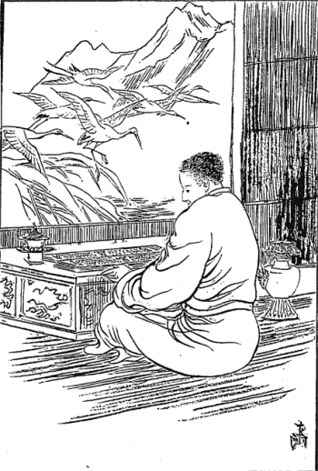
白雲群鶴裡の読経
もちろん雪山のツァーランというところに居ります時分にも、そういう事には余程慣れるつもりで勉強して居ったんですけれど、やはり嫌な事はいつになってみてもよくないもので、余程苦しく感じました。だが嫌な事もある代りにまた天然の景色は格別心を慰めたです。それはついチベット暦の正月前の事でしたが、家の人達は正月が来るからと言うので忙しくして居るけれども、私は窓の横に経机を置き、お経を読みながら外を眺めると雪が降って居ります。その少しく隔ったところには柳の樹に雪が積もって実に綺麗な、なよなよとした姿を現わして居る。そればかりでなく、もう一層美しさを添えるチベットの名物とも言うべき鶴がその雪の間をあちこちとさも愉快そうに散歩をしている。そういう景色を見るとまた
平凡歌［＃ルビの「へぼうた」は底本では「へぽうた」］でも考え出さずには居られません。
雪降りて枯木に花は開きつる
さまをよろこぶ群鶴の声
わが庵の経よむ窓に鶴の来て
道ときつると妙になのれる
そういうような風で
厭な中にも楽しい事は沢山あるので、ことにチベット暦の正月元日には随分面白い礼式がございました。
一体チベットの
暦はインド暦でもなければシナの太陰暦でもない。トルキスタン暦を取って居るので、その暦はシナの太陰暦にほぼ似て居るけれども全く同一ではない。すでに
閏月のごときもシナの暦では当年ですけれど、チベット暦は昨年であったです。四年目、四年目に閏月のある事は同じであるけれども、こういう具合に一年
後先になって居るばかりでない。月の内の日を繰ることもチベット暦では大変妙な繰り方をするので、七日というような日が二つあって見たり、また十日という日が切れて九日からじきに十一日になったりすることがある。ちっとも私共にはその訳が分りませんでしたが、その後ある暦の学者に遇って聞いて見ますと、それは時間を勘定する上において、ある時には一日余計入れ、ある時には一日切り去ってしまわなければいかない事がある。そういう都合でこの勘定は出来たものである。
なお日の中にも
善い日と悪い日がある。悪い日の時分にはその日を切り取って、ごく善い日の時分にはその日を二つ重ねて置くという誠に都合のよい暦で、
其暦がチベット国中確かに一般に行われて居るけれど、その日の繰り方なり正月元日の出て来る日なりが地方によって一致しない事があるです。それはもとより驚くべき事ではない。チベット政府においては四名の暦官を置いてある。その四名の者が白い石や黒い石や棒切や貝殻でもって勘定して毎歳
暦をこしらえ出すのですが、大抵四名とも少しずつは違って居るそうです。そのうちのよいのを二つ取って、例の
神下しに尋ねてどっちがいいかということを聞いて、その一つを取るんです。数学的観念のない半開人のすることは実に
憫れなもので、噴き出すような馬鹿な仕方であるです。で、正月元日の式は大抵政府の暦によってやるんですが、それとても本当の元日はどうだか分りはしない。大抵シナの太陰暦の元日とチベットの元日とは同日になることはごく
稀です。一日あるいは二日
後先になることもありまた三日位違うこともある実に奇態な暦であるです。
は朝起きますとすぐに
麦焦しを山のように盛り立てて、その上へ
五色の絹――ハンカチーフを集めたような物を旗のような具合に
し、また麦焦しの粉の中にはバタと
乾酪がはいって上に乾葡萄、乾桃、信濃柿のような小さな黒い乾柿が
蒔いてある。で、
其果をまず第一に主人からしてちょいと右の手でつまんで何か
唱え
言を言いながら空中へ三度ばかりばらばらと
撒き、そうして
其果の幾分を自分の
掌裡に取って喰うのです。それもやっぱり黒い
垢だらけの手へ取って喰って居る。それから
自家の奥さんお客さんなど
主な者から
下僕に至るまで順々にやってしまいますと、チベット茶と同時に一人一人に小麦粉を
捏ねてちょうど
棒捩にしたような揚げ物と
瓦煎餅にした揚げ物を盆に一ぱいずつ分けるのです。そのお盆は日本のようなものではなく
銅の皿のような風になって中に
白鍍金がしてあるのです。で、茶を飲みながら
其菓を喰いますが、別段日本のようにまず明けましておめでとうと言うような事もないのです。まず喰うのが何よりの楽しみで、それから肉を沢山喰う。その肉は乾肉、
生の肉、煮た肉の三種で焼いた肉は礼式には用いません。
チベットには
川魚もあるのです。けれど魚を殺すのは罪が深いと言って普通の人は余り魚を喰わない。喰う
のはヤク、羊、山羊の類を主として居る。豚もチベットに居るシナ人は喰いますけれど、チベット人はシナ人に交際して居る人だけが喰うので、その他の人は余り喰わないです。朝の式が終りますとまた十時頃にちょっとお茶を飲んでお菓子あるいは果物のような物を喰います。それで午後二時頃に本当に
昼御膳を喰うので、その時にはまたよい家では卵入りの
饂飩をこしらえます。だしは羊の肉などでうまそうに喰って居る。夜分は九時あるいは十時頃に肉のお
粥を
焚きますので、その粥は普通麦焦しの粉と小麦団子と肉と大根と
乾酪とを入れるのです。それを夜分喰います。
しかしこれは毎日順序がきまって居る訳ではない。時によると夜分喰うところの粥を朝喰うこともございます。決して一定はして居りませんが、まあこういうようなものがチベットの上中等社会の御馳走である。下等の者は
粥と言っても
乾酪や肉を入れることは困難であるからして脂肪を入れるです。大根などもなかなか得られない。まあ小麦の団子を入れるのが余程上等の分で、それも正月とか
客来の時にでも喰うが関の山、普通はただ麦焦しの粉を入れて、どろどろに
拵えてその中に草の花を入れるです。冬はもちろん草花はない。夏乾かしてあるだけで、もっとも大根の沢山ある地方は大根を入れるのです。普通の食物は麦焦しを
捏ねて喰うのが上下通じてチベットの食物で、これは米よりもかえってよろこびます。すでにダージリン辺に来て居るチベット人が長く米ばかり喰うて居りますと病気になると言って、わざわざチベットから麦焦しの粉を取り寄せて喰うです。
病気の時分麦焦しを食うと余程
勢分が付いてよいと言う。
尤もインドにも麦焦しのない事はない。けれどチベットの方が余程よいと言って
彼地からわざわざ取り寄せる位ですから、チベット人にはこれが最も適当した食物であります。まあそういう風で正月も済み、私はお経を読みながらその綺麗な景色を
眺め、あるいはチベット風俗の真相はどういうものであるかも、その家族の人と共に住んだお蔭で
一入研究の材料が得られたような訳でしたが、さてその窓の下へ
鴉よりも小さな白と黒の混った全く鴉の形をした鳥がやって来るです。
其鳥をチベット語でキャーカと言って居る。この鳥はなかなか利口な鳥で人を見分けることをよく知り、それから進退共にちゃんと法則がきまって居るようです。ある時私がジーッと窓から
覗いて居ると、そのうちの大将らしい鳥が何か朋輩同士の鳥が喧嘩をしたのを怒ったと見え、一羽の鳥を喰い殺してしまった。ひどい事をするものだと思ってその話を宿の
主にしますと、そりゃもう
というものは人間の法律より正しいもので、ご承知でもあろうがこういう諺がある。
チャ チム ター ンガ ツァム シクナ ミー チム ニャ シン ツァム シク ゴ
で、その意味は「鳥の法律が馬の尾〔先〕程破らるならば人の法律は大木程もやぶらるべし」ということなので、その位鳥の法律は
厳いものであると言っていろいろそういう例話を
引いた話を聞きました事でございました。長い間経典を読んで居りましたが大分に暖かになって来ました。三月十四日に
其家を出立することになりますと、朝から家内一同の者がどうか
三帰五戒を授けてくれろと言うから
鄭重に授けてやりました。で、昼御膳を
其家で済まし
布施には金と法衣を一枚貰いました。
其衣は羊毛で
拵えた赤い立派な物で、買うと三十五円位するそうです。
馬で送りたいけれどみな商いに出してしまって居らんからと言うので、
下僕が荷持になって送ってくれました。それから東へ進んでヤクチュという川に沿うて四里ばかり上り、チェスンという駅場に着いてその夜は宿り、翌朝六時出立、川に沿うて東に行くこと三里ばかり、その間はみな非常に狭まったごく高い山の間で、谷間には雪が非常に積もり川には氷が張り詰めて居るという始末。三里向うへ出ましたところで少し広いところに着いた。
左傍の山の上を見ますとごく頂上に一つの白い堂が見えて居る。どうも奇態だ。本堂でもなければまた坊さんの住んで居る寺でもない。何か知らんと思いまして同行の人に尋ねますと、
彼望は
でございますとの答え。その
防霰堂という意味はこれまで私には分らなかったのですが、この時その人から始めて話を聞いて、そういう奇態な事があるのか知らんと思ったです。実は始めて聞いた時分には余り奇怪でございましたから信用が出来なかったですが、その後ラサ府に着いていろいろの人に
委しく尋ねて見ますと、その時聞いた話が全く事実であったから、ここに
此堂を見た因縁でその奇怪なるお話をいたしましょう。元来チベットの
耕田部では
霰を一番恐れて居るのである。特に夏の間に霰が降りますと一年一季あるいは二年一季の収穫の麦あるいは小麦をその
降霰のためにすっかりと荒らされてしまうものですから、チベットの農民はその降霰を恐るることは実に大敵国が攻め込んで来たように恐れて居るのでございます。ですから
其霰を防ぐ方法を立てなくてはならぬ。その方法が実に奇々怪々で抱腹絶倒せざるを得ないのです。
チベット国民は元来宗教を信ずることが甚だしいところから、ある僧侶が奇怪な説を出したです。元来年々大きな
霰の降るというのは八部衆の悪神すなわち天、龍、
夜叉、
乾達婆、
阿修羅、
迦楼羅、
緊那羅、
摩伽羅迦等
（〔八部衆の悪神〕）が人民を害することを大いによろこんで霰や
雹を降らして、そうして収穫を
滅却してしまうのである
［＃「滅却してしまうのである」は底本では「減却してしまうのである」］。だからこの八部衆の悪神と合戦をやってその悪神等を
殺戮してその
降霰を
防禦しなくてはならないということを主張するところから、その防禦に従事するところの僧侶が出来た。それは大抵古派の
修験者です。
さてその修験者らはどういう方法でこの悪神と合戦をして打ち勝つかと言いますと、まず八部衆の悪神等が
霰を
拵えるのはいつであるかということを考えなくてはならん。それは冬の間に最も雪が沢山降る時分にこの八部衆の悪神がある場所に集って、雪を固めて霰を沢山製造するので充分作物を害し人民を殺すに足るだけの霰が出来るというと、その霰を天の一方に貯蓄して休息するので、その貯蓄した霰の
弾丸をもって夏の時分に穀類がほとんど熟せんとする時に当ってこれを空中から投げ付けるのである。だから人民はたまらない。その
霰弾を防ぐ武器としては、充分立派な武器を拵えなくちゃあならん。その武器はまず彼らが霰弾を拵える時分に当って、我々も秘密にある山の谷の中へ入り込んで、そうして
しなくちゃあならん。その
防霰弾は何で拵えるかと言いますと、泥を固め雀の卵位の大きさの物を沢山に拵えるです。それも一人の修験者が拵えるのではない。一人あるいは二人の従者を引き連れて、そうしてその
寂寥なる山間の道場に入って秘密の法則でもって防霰弾を沢山に製造して、一種の
咒文を唱え、その一つ一つに咒文を含ませて置くんです。
此丸が夏
霰の降って来る時分に当って、その霰を防ぐところの戦闘用具である。一体チベットにおいては、修験者の事をンガクバ（
真言者という意味）と言うて居る。その者は昔から修験者の血統のかかったものでなければ、その職業をすることを許されない。
だから
新派のラマのように誰もが坊さんになれるという訳のものでなくって、親から子に血統相続をされますので、これらの修験者は大抵一村に一人ずつあるのです。冬の間は祈祷をしたり、あるいは
咒咀をしたり、あるいは人のために
幸福を祈ったりしますので、時によると人に害を加える悪い咒咀をして人を殺すような祈祷もするというのがチベット人の信仰である。だから誰々はどこそこの修験者に逆らったがために悪い咒咀をされてとうとう死んでしまったというような話はどこででも聞く事なんです。冬はまあそういう仕事をして夏になると霰との合戦に従事するのです。ついでに申して置きますが、
チベットには
春夏秋冬の四季はない。夏と冬との二季に分れて居るだけです。もちろんチベットの書物には春夏秋冬の四季の名は現存して居るのでございますけれど、その実際は二季のほかはないものだから、チベット人もやはり実際の気候に従ってヤルカー（夏）、グンカー（冬）という二つしか一年中に用いない。それで陽暦の三月十五日頃から九月十五日まで夏で、その他は冬です。で、もはや陽暦の三月、四月頃から畑を耕してぼつぼつ
麦蒔にかかる。そうするとその
修験者は一番そのチベットでの高い山の上に建ててある
防霰堂へ出掛けて行くです。この防霰堂はなぜ高い所に建てて居るかと言うのに、霰の雲がどの方向からやって来るかということを発見するのに便利なためにどこでもその地方中の一番高い山の上に建ててあるのです。
で、麦の芽が出ますと修験者は多くはそこに住んで居るのでございますけれど、始めのうちは余り用事がないものと見えて、そこから自分の
宅へ帰って来ることも折々あるそうです。六月頃になるとだんだん麦が大きくなって来ますから、霰を防ぐ必要も迫って来る訳で、そこでその堂に詰め切って毎日その守護神すなわち
馬頭妙王あるいは
執金剛妙王あるいは
剛蓮華生等に供養をして祈祷をしますので、それが昼夜三遍ずつやって毎日毎日沢山な
真言を唱えるのです。また一番よく大きな霰の降るのが不思議に麦の大分に熟して来た時分なんです。その時分になるとその修験者らは実に一生懸命になってその霰を防ぐことに従事するのです。
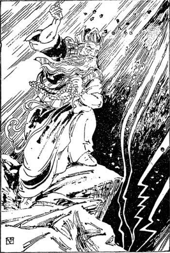
修験者防霰弾を虚空に擲つ
時に
油然として山雲が起って来ますと大変です。修験者は威儀を
繕い
儼乎たる態度をもって
岩端に
屹立します。で、真言を唱えつつ
珠数を
采配のごとくに振り廻して、そうして向うから出て来る山雲を退散せしむる状をなして大いにその雲と戦う。けれども雲の軍勢が
鬱然と勃起し、時に
迅雷轟々として山岳を震動し、電光
閃々として凄まじい光を放ち、
霰丸簇々として矢を射るごとく降って参りますと修験者は必死となり、今や最期と防戦に従事するその勢いは
関将軍が
大刀を
提げて大軍に臨んだごとき勢いを示し、強くここに
神咒を唱えつつ、右の手の
食指を突立ててあたかも剣をもって空中を切断するように縦横無尽に切り立て、それでもなお霰弾がどしどしと平原に向って降り付けると、大いに怒って修験者それ自身が狂気のごとく用意の防霰弾を
手掴みに取って
虚空に打ち付け投げ付けて霰と戦うです。
それでもいかないと今度は自分の着て居る着物を引っ裂いてしまって、その引っ裂いた着物を空に打ち投げるというまるで
瘋癲のごとき有様で霰を喰い止めることに従事して居る。幸いにしてその霰がどこかほかの方へ指して行ってしまい、そこではそんなにひどく降らぬということになるとその修験者は大いにその戦勝を得たことを誇り、また民人も大いに賀する訳でありますが、もし不幸にして霰が沢山降って収穫を害する時分には修験者は被害の多少に従って、かねて法律にきめられて居る刑罰を受けなければならん次第である。その代りにこの修験者がうまくやってもやらいでも、その年霰が降らなかったかあるいは降りかかってもうまく
留めたというような時分には充分の収入がございますので、それは毎年きまった税品を取るんです。チベットにおいてはこれを名づけて
防霰税という。実に不可思議なる税品もあるものです。
という不可思議な税品はほぼ一反について麦二升程ずつ修験者に納めなければならん。まだそのほかによく出来ると二升のものは二升五合にして納めなければならん事があるという。これは実にチベット農民にとっては大いなる負担です。なぜならばただこの修験者に霰税を納むるのみならず、政府にはやはり当り前の租税を納めなくてはならないのですから、実にこういう仕方のために、いらない不可思議の
税物を納めて居るのです。そこでなお奇態な習慣は、夏の間は収穫の出来るのも出来んのも全く修験者の力にあるというところから、その地方の裁判の権力はみなこの修験者に帰して居るのです。すなわち
であって、その霰税を受けるほかに執法官としての収入がまた甚だ多い。されば大抵これらの人は財産家であるべき筈であるが、奇態にチベットではンガクバと言えば貧乏人が多い。どうも人を
欺き人の妄信に乗じて金を取るような悪銭はいわゆる身に付かぬものと見えるです。けれど権力は非常に強くって、これを称してラー・リンボチェと言うて居るです。その意味はラマの宝と言うので、ちょっと道で逢っても貧乏な乞食
坊主のような修験者に立派な紳士が舌を出して頭を下げて最敬礼をやって居るです。だがこのンガクバはそれだけ大収入を得るに反して、もし霰でも降ると大変です。その時分にはその地方の長官からその
耕田部の害された度合に比して罰金を取られるです。それから刑罰に処せられて
尻を
擲られることもあるんです。
チベットはそういう点は余程面白いので、貴族でも、ありゃ貴族だから悪い事をしても仕方がない、
打棄って置け、というような事はしない。こういうところはちょっと面白い。これで防霰税の事は済みました。その防霰堂の下からまた三里ばかり東へ進んでヤーセという村に着いて、この村の少し東の山の中から流れて出るヤクチュという川があって、それが西北に流れてブラマプトラ川に入って居る。しかるに西洋のある地図にはこのヤクチュ川がヤムド湖から流れて出て居るように画いてあるものがある。これは間違って居ります。その村からなお東に進んで行くこと一里ばかりにして世界唯一の一大奇湖を見ました。この湖の名をチベット語にヤムド・ツォと言います。西洋の地図にはレーク・パルテーとしてありますが、パルテーというのは湖水の名でない。湖の西岸にある駅の名であります。何かの間違いで駅名を湖名に付けたものと見えます。
その周囲は確かな事は分りませんが、およそ七十里余あって湖水の中央に山脈が連綿として浮んで居る。こういう風に湖水の中に大きな山があるというのは世界に類がないそうでございます。もちろん小さな島のある湖水は沢山にあるのですが、ヤムド・ツォ湖のごとき類はないということは余程地理学上名高い。もっとも南の方には二ヵ所ばかり外部の岸と中央の山とが陸続きになって居る。この山脈が湖面に浮んで居る有様はちょうど大龍が
蜿蜒として碧空に
蟠まるというような有様で実に素晴らしい。ただそれのみでなく、湖水の東南より西南にわたって高く
聳ゆる豪壮なヒマラヤ雪峰は
巍然として妙光を輝かして居ります。ただそういう景色だけ見ても随分素晴らしいものですが、時に
黒雲飛んで大風起ると同時に、湖面は大なる波濤を揚げて愉快なる音響を発します。実にその物凄く
快濶なる有様に
見惚れて私は湖岸の
断壁岩に
屹立して遙かに雲間に
隠顕するところのヒマラヤ雪峰を見ますると
儼然たる
白衣の神仙が雲間に震動するがごとく、実に豪壮なる光景に無限の情緒を喚起されました。
湖辺に沿うて東へ一里半ばかり行くと、それから東北へ向って行くようになって居る。左側は山続きで右は湖水を隔ててその湖面に浮んで居る山脈に対して居るんです。その湖岸の大分広い道を東北に向って行くこと二里半ばかりにして、パルテーという駅に着きました。その駅には湖に臨んで居る〔小〕高い山があって、その〔小〕山の上に城が建って居る。その城の影がさかさまに水に映って居るので夕暮の景色は実に
得も言われぬ面白い風情である。その城の下のある家について泊りました。その日は十里余り歩きましたが、景色のよいのでそんなに疲れも感じなかったです。翌三月十六日午前四時に雪と氷を踏み分けながら湖辺に沿うて東北に進んで参りますと、やはり左側は山で右側は湖水である。その道はやや北に向って居るけれど、決して一直線に付いて居るのでなくって山のうねうねと
畝ねくって居るところを
廻り廻って、あるいは
昇りあるいは
降って行きますので、随分氷で
辷り
転けたりあるいは雪の深い中へ足を突込むこともある。その危険は非常であるけれども、ヒマラヤ山を
踰えた危険に比すれば誠にお茶の子で訳なく進むことが出来ました。
暁霧を冒して少しく山の上に登ったところで、いかにも景色が
美うございますから湖面を眺めますと、
碧々たる湖上に浮んで居るところの
朦朧たる山脈の間から正月二十六日の弦月が上りかけたその美しさ……
微かなる光が湖面に映って何となく
凄味を帯びて居りますが、次第に夜の明くるに従って月の光の薄らぐと同時に南方雪山の頂には暁の星が
輝々煌々と輝いて、その光が湖面に反射して居る。これら微妙の光景に旅の苦しみも打ち忘れてぼんやりと
見惚れて居ると足元の湖辺の砂原に赤あるいは黄、白の水鳥が悠々とあちこちに声を放って
行き
通い、湖上には
鴛鴦が浮んで居る。また鶴の群も素晴らしい声を放っておもむろに歩んで居る。その
一際洗ったような美しい景色は昨日の凄まじい景に比してまた一段の興味を感ぜられたです。こういうところを
朝未明に旅をするのは実に旅行中の最大愉快である。湖辺に沿うて行くこと五里ばかりにして朝
五時頃に山の間の小さな流れのところに着きました。そこで茶を
沸かして、その流れの水で麦焦しを喰いますので、湖には水は満々と満ちて居りますけれど、
なんです。これにも面白い話がある。その毒水になったという次第は、かの有名なイギリス人のサラット・チャンドラ・ダース師（実はインド人）が昔インドから
此湖に来て――チベット人は僅か二十年前の事を昔と言う――何か
咒咀をこの湖水の中へ吹っ込んだ。そうするとこの湖の水が真っ赤になってまるで血のような有様を示して居った。ところがあるラマが来てその赤味だけを無くしてくれたけれど、その毒が残って居るから今は飲めないと言う。これはチベット人の
拵えた妄説であって、取るに足らん事でございますけれども、その水が真っ赤になったということは事実なんで、それはなにもサラット・チャンドラ・ダース師がそうした訳ではない。何か湖中のある変化から水が一度赤くなった事があったんでしょう。
其事がちょうどサラット師が帰って後間もなくそういう事が起ったものですから、師がそういう事をやったような風説が起ったのです。
もっともサラット・チャンドラ・ダース師はご承知のごとくインド人である（今なおダージリンにあり）。けれどもチベットでサラット・チャンドラ・ダース師のインド人であるということを知って居るのは世
事通の人だけで、普通の人はみな英国人だと言うて居るです。とにかくヤムド・ツォ湖の水は昔から毒があるに違いない。なぜならばこれはどこへも流れ出ないでそこにたまって居るばかりでなく、その辺にはいろいろの元素がある。現にこの辺の山の間には石炭もあるかと思えるようなところもあり、またいろいろ妙な礦物薬品らしいものが土の中にあるのを見ましたから、それらが溶解して水が毒になって居るのであろうと思われる。
ある西洋人の地図にはこのヤムド・ツォ湖の水が直ちに北に流れてブラマプトラ川に入るところを書いてあったのを見ましたが、あれらは全くの間違いであるのです。そこで私共が昼飯をやって居るばかりでなく、ほかにこの山
河の水で昼飯をやって居る者も大分にありました。何分ここはチベット第二の府からして首府ラサへ通ずる公道でありますから、
往来の者も随分多い。そこで一人出遇ったのがネパールの兵隊で余程
瓢軽な面白い男でした。それから道連れになって一緒に参ったです。
その兵士はラサ府に居るネパール公使を守護するために行って居ったんだそうです。ところが自分の
阿母さんが恋しくなって一旦ネパールに帰るというのでシカチェまで帰って行ったところが、ふと自分の内縁の女房にして居るラサ府の婦人を想い出して阿母さんの方を
打棄って置いてまた
跡戻りをして来たという
頓馬な兵隊なんです。それからいろいろ話が出て、ネパール政府はラサ府には何人兵隊を置いて居るかと尋ねますと、その兵隊を置くようになったのは今より五、六年前の事である。それまでは兵隊を置かなかったのであると言う。それはまたどういう訳かと聞くと、なあに今から十二、三年前にラサ府に大変な事が起ったという話。そのいろいろな話を
約めて言いますと、ラサ府にはネパールのパルポ種族の商人が三百名ばかり居る。これはネパールの国民中でも商売には最も機敏な
質であって宗教は仏教を奉じて居る。チベット語の仏典でなくサンスクリット語の経文によって仏教を信じて居るです。商売はラサ府では非常に盛んにやって居りますので大抵その品物は
羅紗、木綿類、絹類、
珊瑚珠、宝石類、西洋小間物、米、豆、
玉蜀黍といったような物を多く
商って居るです。
ところで今より十三年程以前にそのパルポ商人のある大きな店へラサ府の婦人が買物に行って珊瑚珠を一つ
瞞着したとかいうので、店の主人が大変に怒って調べたがどこに入れてあるか分らんので、その女が嫌だと言って非常に泣いたにも構わず、無理往生に家へ引っ張り込んで丸裸体にして捜したところが何にもないという。そこで女が出て来ますと、その様子を見て居た外の人達がその女にどういう具合であったかと尋ねたところが、こういう訳だと言うて裸体にされた
一伍一什を話したそうです。
其事をセラ大寺の壮士坊主が聞いて居てすぐパルポ商人に向い、どうも無礼だ、嫌だと言う女を無理に裸体にして
恥辱を与えるというのは実に不届き千万な訳である。一体本当にそういうことをしたのかと詰問すると、全くその通りやったもんですから、そうだと言って答えたそうです。そんならよろしいと言ってその壮士坊主は帰って行ったが、
セラへ帰った後この事を親分に話し壮士坊主の群を千人ばかり召集した。その壮士坊主は一人の親分に取り締られて居て親分が命令を発すればすぐに集まることになって居る。その時分には余り沢山居らなかったので、それでも千人ばかり集まったそうです。で、その夜ラサ府へ侵入してパルポ商人のすべてを
打撲って殺してやろうと言うてその用意をして居ると、ラサ府とセラとは僅かに一里半位しか隔って居らんところですからその風聞がラサ府に聞えた。そこでパルポ商人は大いに驚き、自分の物も何も
打棄って置いて逃げ出した。もっとも逃げ出さずに居った者もあったが大抵は逃げてしまったそうです。
そのうちにセラの壮士坊主共は
各
に刀または大きな鍵を
提げてラサ府に侵入して来たところが、パルポ商人の家はいずれも戸が締め切ってあるので戸を叩き破って屋内に侵入し、すべてのパルポ商人の財産を奪って持って行っちまったです。もっともその時乱暴したのは壮士坊主ばかりではなく、ラサ府にうろついて居るところのごろつき壮士坊主というような
無頼漢も沢山に混って居て、セラの壮士坊主と共にパルポ商人の店々に
闖入し夜の明けるまで乱暴
狼藉を働いて、夜の明け方にそれぞれ獲物を得て引き挙げたそうです。一方のパルポ商人はその翌日家へ帰って見ると喰う物もないというような始末。もちろん彼らには田畑というような財産はない。すなわち商品が財産であるのに、その商品のすべてと売揚げの金銭をみな取られてしまい、すべての損害高が二十三万円程であったという。
其事が国際問題になってちょうど五年程もかかったが、結局チベット政府がその損害を賠償することになり、そしてその談判が済んで後、ネパールの兵隊が二十四、五名ラサ府へ特に置かれることになったということです。その外交上の談判の主任となった人はジッバードルという人で、私がカルカッタでネパールのラマに紹介状をもらって行ったその人であるです。すなわちネパールの
大書記官で今はチベットの公使を勤めて居る
のです。そういうような話を聞きながら進んで参りましたが、ゲンパラ（ラは坂という意味）という急坂を登ること一里ばかりで山の頂に達しました。遙かに東北の方を見ますとブラマプトラ川が東南に流れて行く。その大河に東北の方から流れ込んで居る大きな川がある。その大河をキーチュ川〔（幸福川）〕という。その川に沿うたる遙かの空を見ますと、山間の平原の中にズブリと立って居る山がある。その山の上に
金色の光を放って居るのが日光に映じてきらきらと見えて居る。それがすなわちラサ府の
で、ポタラと言うのです。そのポタラを隔てて少しく向うに
市街のようなもの及び堂等の
金色の屋根がやはり空中に光を放って居る。それがラサ府の市街である。ここから見ると実に
明らかに小さく見える。暫くそこに休んでそれからだんだん下へ急な坂を降って行きました。三里にしてパーチェという駅に着いて泊りましたが、どういう加減か自分の足は
履に
喰れて余程
疼みを感じたです。この日は雪と氷の中をむやみに歩いて来たものですから……それに十里半もこの困難の道をやって来たものですから余程疲れた。その翌三月十七日午前四時に一里ばかり降って行くとブラマプトラ川の岸に出ました。それからその南岸に沿うて二里半も行きますとチャクサムという
渡場に着いた。これはブラマプトラ川の北岸に渡りますので、
此川には昔鉄の橋が架って居ったのである。現今は渡場の少しく下にその鉄橋の跡にその鎖繩が
遺って居る。しかるに今は
この渡場を称してチャクサム〔（鉄橋）〕と言うて居る。今ではインド流の長方形の船で人を渡して居るけれど、これは
冬分だけこういう船で渡すことが出来ますので、夏になればこんな大きな船でもってとても
向岸に渡すことが出来ない。それで
があるんです。余程妙なもので、ヤク三疋の皮を集めて
其皮を縫い合せ、その縫い目に水の浸み込まない
物を塗り付けて水に浮べますので、冬でも沢山に
渡人がなければその皮の船で渡るんです。そうですからチベットでは船という名を皮という
字でもって現わして居ることがある。すなわちコーワと言えば皮と言うにも用い、また船と言うことにも用いて居る。もちろん皮の事でございますから
湿気がひどくなりますと柔らかになって重くなる。だから半日位水に漬けて置くとまたじきに上に引き上げて日光に乾かしますので、その船は一人で背負って行くことが出来る。だからこの船をごく上流まで背負って行ってそこで荷物なり人なりを積んで、一日程なりあるいは二日程なりを降って来て荷物なり人なりを上げ終りますと、今言う通りまたその船を上げて乾かすというごく便利なものです。私共は大分に
同伴が沢山あったので余程大きな船へ乗って
向岸へ渡りました。
川の中の砂原を行くこと一里半ばかりにして
山水明媚とも言うべき岩なりまた柳なり桃の
樹なりがあるところに着いたです。その樹はいずれも川端に臨んで水に影を宿して居る。ここは非常に暖かなところでラサ府よりも余程よい気候です。昨日お話したヤムド・ツォ湖の辺は地面が余程高い。海面を抜くこと
一万三千五百尺位のものであろうと思われる。ところがここは
一万一千五百尺程で、地の高低も違って居る。その上に
水辺ではあり日光の当りがよいものですから、この辺の柳はもはや青い芽を発して居たです。実に長らく禿山なりあるいは枯れた樹ばかり見て居った眼には青い柳の葉が珍しく、ことに美しく感じました。
荷物はもちろん荷持の男が持って居りますから自分は西北原を歩く時のように荷のために苦しむということはないのですけれど、足の古い
疵が再発して
疼みが非常に厳しくなり、ほとんど歩むことが出来ない。そこへちょうど馬方が来ましたから、その馬方に
若干の金をやって馬に乗せてもらったです。それから進んで一里ばかり行きますとチュスルという駅に着きました。この駅は東北の方から流れて来るキーチュ川と西北から流れて来るブラマプトラ川との三角州の間にあり、駅場であって大分に
繁昌して居る。
しかしラサ府に着くまでの道中でこの駅場の人程悪い人はないのです。実に薄情でその上旅人の物を盗むことがごく上手なんです。荷物でも運送品でも何でも構わず盗みますが、その盗み方がまたなかなかうまく盗まれた人もちょっと分らんということです。どうもチュスル位盗人の盛んなところはないとチベット国中で評判して居ないところはなく、私も前々からチュスルに行ったら注意をなさいということを
度々人から聞いたです。それ位盗人を巧妙にやりますし、ことに
此駅は多くの人の寄り集まるところで金も沢山落ちるところですから非常に金持が多かろうと思って尋ねますと、他の村方よりは貧乏人が大変に多いと言う。実に奇態な話です。それから私共は充分用心をして
其駅で昼飯なんかを済まし、馬がないものですから歩いて東北の原に進んでキーチュ川に沿うて上って行きますと、ますます足が
疼くなってどうにも動くことが出来ない。原の中に坐り込まねばならんようになりましたが、幸いに後の方から
驢馬追いがやって来ましたので、その驢馬に乗せてもらって四里ばかりの道を経てジャンという駅に着きました。その駅で今まで送って来た荷持男はぜひ還さねばならんような事が起りまして、仕方なしに還してしまいました。
私は足がますます
疼みますし、どうもして見ようがない。その日は幸いに驢馬の助けがあったので十里半ばかりの道は来ましたが、明日はとても進行の見込みがない。ところが
此駅に泊り合せて居る人で
税肉をラサ政府へ納めに行く者がございますので、その人らに頼んで明日は出掛けることになりました。けれども政府へ納め物に行くからといって自分の村から馬を連れて来る訳ではなく、その駅々からして
駅馬を徴発して
其馬で運送を続けて行くのですから、日に三里かよく行って四里位しか行かないのです。で私は仕方なくその人らに荷物を托し自分も馬に乗って進んで参りまして、その人らと一緒に足の疲れや
疼みを休めるためにナムという小さな村に泊り込みました。その翌日またキーチュ川に沿うて行くこと二里ばかりにしてその川原に
出で、その川原を二里進んでネータンという駅に着きました。
そのネータン駅にチベットで一番ありがたいと言われて居る
解脱〔
仏〕
母の堂がある。この堂はチベットで新派を開く動機となったところのパンデン・アチーシャというインドの尊者がここに来て寺を開かれたのであると言うて非常に名高いのであります。私も
其寺へ参詣してその中におさめてある二十一の
解脱〔
仏〕
母に参拝しましたが、なかなかありがたい姿で美術的の眼から見ても余程立派なものと思われた。その翌二十日また川の辺に沿うて東北に向って二里ばかり、田畑の中を進んで参りますと大きな橋がございました。
其橋を渡って東北に一里半ばかり参りますとシン・ゾンカーという駅がある。
其駅に着いてまた宿ったです。三月二十一日いよいよ今日は国都ラサ府に
這込るということになりました。
私はその駅から馬を一
疋雇い、荷物はやはり税肉を納める者に託して山と川との奇態な景色の間の道を通り抜けて一里足らず行くと、左の山の手に立派な寺が見える。いな一見したところでは寺とは思えない。ほとんど大村落であろうかと思われる位。それが全くの寺で、その寺の名をレブンと言い、ラサ付近では一番大きな寺である。もっとも法王の管轄のチベット内ではこの寺が一番大きいので、僧侶の数が七千七百人あるです。それは定員の数で、時によると八千五百人あるいは九千人になることもある。ただし夏など僧侶が地方へ出稼ぎに行った時分には六千人位に減ることがあるが、とにかくなかなか盛んなもので、そこにやはり大学があるんです。もっとも中央チベットで大学の科目を授けるところは三ヵ所ありますので、一つはこの寺、一つは私の住み込んだ
もう一つはガンデンというのであります。セラ大学は五千五百人が定員、またガンデンは三千三百人が定員でありますが、これらはただ定員と言うだけであって、もちろんレブン寺のごとく増減は折々ございます。その寺の下すなわち今私共が通って居る
路端にヤクあるいは羊、あるいは山羊を殺すところがある。で法王がお
喫りになる肉類はここから供給されますので、日々に法王だけの膳に供えるためにお用いになる羊が七疋ずつなんです。それでその羊は法王が召し上るのであるから誠に結構な事だと言ってチベット人は大いにその羊を
羨んで、その毛などを持って帰るそうです。もっとも法王は羊だけお
喫りになるのではない。ほかの肉も沢山喫るので、その肉もここで殺して供給します。
何もこんな遠いところからお取り寄せにならずに、ラサの市中からお取りになれば大変都合がよさそうに思えるですが、ラサ府では余り近い。どうも法王のために殺すという考えでやられては
適わない。だから少し遠いところで買うがいいというような
主義で、つまり自分が命令して殺したんではないといういわゆる仏教上の
清浄の肉を得んために、そういう事をやります。その主意は結構な事から起ったのですが、法王の召し上る肉がここから供給すると決めてあるから、内々命令して殺さしたようなもので、私共から見るとラサ府で買うのもあまり違わないと思います。そのレブン大学の下を通り掛けて二里半ばかり行きますと、先にゲンパラから見えて居りました法王の宮殿の下に着きました。
（〔法王の宮殿の名をツェ・ポタラという。ツェは頂上、ポタラは船を持つの義で港の事をいいます。ポタラは観音の浄土でインド南端の海中にあるセイロン島の事で、シナの普陀落の名を襲用したものである。ここは観音の化身ダライ・ラマの住する所であるからポタラといい、山上にあるからツェ・ポタラという。〕）
はどうも立派なもので、その立派な事は図面を見ても分るからここに説明する限りではないけれど、ただ面白い一つの話がある。ある田舎者がある時バタを沢山
驢馬に積んでラサ府へ売りに来たそうです。ところがこの立派な法王の宮殿を見て
恟然呆気に取られ、これは神の国の御殿ではないか知らんと
暫くはぽかんとして
見惚れて居ったがふと気が付いて、はて驢馬はどこへ行ったか知らんとそのあたりを見ますと、かなたこなたに別れ別れになって居る。それからその驢馬を集めて来て一体この驢馬は十疋居ったんだが、もうどこへも行って居らんか知らん。勘定して見ると九疋しか居らない。
そこで大いに驚いてもう一疋の驢馬はどこへ行ったろうと気狂いのようになって騒いで居るところへ、ラサ府の人がやって来て「お前は何をそんなに騒いで居るのか」と尋ねると、「いや実は十疋居る驢馬が一疋失くなったのでそれを捜して居る。誰か盗んで行ったのではないかと思って実に気が気でない。この法王の宮殿に
見惚れてうっかりして居る中に誰か盗んで行ったと見える」と言って非常に落胆して居る。それからその人がずっと
数みますと確かに十疋居るです。「何を馬鹿言って居る、ちょうど十疋居るじゃないか。」「いや九疋しか居らない。」「そうさ、九疋向うに居るから、お前の乗って居るのとで十疋じゃないか」と言われて始めて気が付いたという位。実に法王の宮殿はこれを見る者の心を奪ってしまうというような立派なものであるという一つ話でございます。
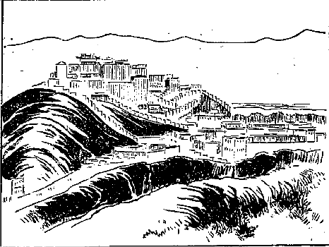
チベット法王の宮殿
この法王宮殿の山の前を東南に
抜けて広い道を七町参りますと長さ二十間幅三間程の橋があって、橋の上にはシナ風の屋根がある。その下を過ぎて一町余り行くとラサ府の西の入口の門に着きました。その門はちょっとシナ風に建てられて居る。それから中へ進んで行って左の広い道に沿うて二町余り行きますと、大きな広庭のある所に着いた。ここまでは馬に乗って来たのですが、さてここにチベットで最も
聖とせられ最も崇拝せられるところの
釈迦牟尼仏の大堂がある。
ここに安置してある
釈迦牟尼仏の由来を聞くに、始めて仏教をこの国に入れられたソンツァン・ガムボという大王が、まだ仏教を信じない時分にシナから唐の
太宗の皇女なる
文成公主を
娶ることになったその時分に、文成公主はその父の太宗に願うて言いますには、チベットは人を殺して喰うという国と聞きますから、かの国がその国に仏法を弘めるという約束をして貰いたい、また一つには、インドから当国に移って居られたる釈迦牟尼仏の像を御供して行きたいと。この約束が成り立ちまして、それで文成公主が一緒にこの国へこの釈迦牟尼仏をお
護申して参ったので、それ以来、このラサ府に安置されて居るのでございます。
実はこの文成公主がこの国へ来てから仏教及び文字の必要を感じて、仏教修行のためかつはチベット文字を
拵えるために、天資
英邁の人を撰んで十六人インドへ送ったのでございます。その結果チベットにはチベット文字が出来、その文字で仏経も翻訳される事になって、その後だんだん仏教が起って来たのです。それは今より一千三百年程以前の事で、歴史上から言っても、また釈迦牟尼仏の経歴から言っても非常にありがたい事であります。この釈迦牟尼仏はシナで拵えたのでなくって、インドから一旦シナに伝わり、シナからチベットに伝わったので、もと
此像はインドのビシュカッマー（
仏工師）が作った
のでございます。
その釈迦堂に参拝してまずめでたくチベットに到着したことを大いによろこび、思えばインドのブダガヤの
菩提寺で釈迦牟尼仏にお逢い申したが、今また
此寺で釈迦牟尼仏にお逢い申すというのは世にもありがたい事であると、無限の情に迫られて、余りの嬉しさに涙が出た位の事でございました。今さら申すまでもなく私は元来
釈迦牟尼仏を非常に信仰して居ります。他の仏様もありがたいには違いないけれども、自分の本当の師と仰ぐべきものは釈迦牟尼仏のみであると信じて居るのでございますから、一意ただその教のみを奉じて仏像に対しても真実に敬礼を尽すのでございます。それはさておき、私はこれから
ということが問題で、実はラサ府の中にも随分怪しい木賃宿のようなものが沢山あり、また
酒舗もあって人を欺いて金を取るというような事も聞いて居りますから、なるべくならば自分の知って居る所に着きたい。その知って居る所というのは、かねてダージリンで知合になりましたパーラー家（摂政）の公子。この人がダージリンへ来ました時分に大変親しく交際して、私がラサ府に着けば必ず充分に世話をするという約束もあり、随分
善さそうな人でもあり、
旁私もその人のためには充分利益になる事をしてやったものですから、もちろん自分が恩を
被せたのを鼻にかけてその恩を返してもらおうために行くのではありませんけれど、どうもほかにしようがないからその家を尋ねて参りました。その家なるものはバンデーシャと言い、屋敷が一町四面ほどあってなかなか立派なものです。行って尋ねますと、
とでも言うのですか、その私の尋ねる公子は居らないと言う。どこへ行ったかと言いますと、彼は気狂いだからどこへ行ったか分らないという答えなんです。私もその時には驚きまして、「それはいつ気狂いになったか」と尋ねますと、「もう気狂いになってから二年にもなる」という話。「本当の気狂いですか」と聞きますと、「それは気狂いでない時もあれば気狂いになって居る時もある。ちっとも訳が分らぬ」と言いますから、「しかしその人はどこに居るか」と言ったところが「ナムサイリン（兄の別宅）というところに
往って居る」という返事です。そこで余儀なくナムサイリンへ尋ねて往ったところがそこの家にも不在で、その家の者もやはり前と同じような答えをして居るです。
しかし少し待って居れば来ないこともあるまいと言うので二時間程も待って居りましたが、またよく考えて見ると精神の
錯乱して居る人に遇って見たところが別段頼みになる訳でもないから、こりゃ一つセラ大寺へ
直接に出掛けて行って、それからまあ仮入学を許してもらい、折を見て試験を受けて大学に入る分別をするのが一番身にとって都合がよいと思いましたから、すぐに荷持を雇い、北方に向ってセラという大寺のある方に出掛けて参りました。
やはり
此寺もレブン寺と同じく山の
麓の段々上りの所へ、上へ上へと建てられて居るので、こちらから見ますとちょうど一村落のように見えて居るです。
其寺へ指してその荷持に案内されて午後四時頃着き、ピーツク・カムツァンという僧舎へ尋ねて参りました。一体私は前の手続によるとシナ人であると言うて居ったんであるから、パテー・カムツァンというのに行かなければならんのですけれど、
其舎へ行くとシナ人という化の皮が現われる
憂があるから、西北原の方から来たのを幸いに西北原のある部内の者であると言って、ピーツク・カムツァンに着いたんです。もうその時分は長い間
鬚も
剃らず髪も摘まず、湯にも何にも入らんのですから、随分顔や
身体もチベット人のように汚くなって居ったでしょう。で私はチベット人としてその寺に住み込むという決心をしたです。実はチベット人としての入学試験は私にとってはむつかしい訳であるんですけれど、俗語の使用はほとんどチベット人と変らんように出来るものですから……。
折々どこへ行ってもチベット人として取り扱われる事も沢山あったです――この様子ならチベット人と言うても気遣いあるまいというので、まあ自分の一時の居所を安全にするためにそういう風にして入って参りました。そのカムツァンというのには一人の
長がありまして、
其長は年番である。私の行った時分の長はラートェパという人で、ごく親切な無邪気なお
爺さんでございました。その人の
舎に泊り込んで、私は
此寺に仮入学をしたいがどういう手続にすればよいかと尋ねますと、いろいろ教えてくれました。
まずこのセラ大学についてちょっと説明をして置かないと分らん事があるから、ここでその内部の大略だけ申して置きます。セラ大学を大別すると三つになって居るので、一つはジェ・ターサン、一つはマエ・ターサン、もう一つはンガクバ・ターサンというこの三つで、ジェ・ターサンには僧侶が三千八百人、マエ・ターサンには二千五百人、ンガクバ・ターサンには五百人居るです。またンガクバ・ターサンを除く他の二つの内にはカムツァン（僧舎という意味）というのが十八ずつある。
そのうちには大きいのもあれば小さいのもあって、大きなカムツァンには坊さんが千人も居るですが、小さいカムツァンには五十人位しか居らないのもあるというように色々に分れて居る。私の居たカムツァンには二百人居たです。で、カムツァンにはそれぞれカムツァンの財産がありますが、それらを纒め一つに
統べたものをセラと言って居るのです。これはもうごく大体の分ち方で、その中には細かな
区別もいろいろありますが、それは専門にわたりますからよします。
なお一つ話して置きたいのは僧侶の種類です。大きく分ちて二通りある。その一つは修学僧侶で、一つは壮士坊主、修学僧侶はその名のごとく学問をするために来て居りますので、これは幾分の学資がいるです。沢山でもありませんけれど、どう
始末しても月に三円位、当り前にやれば八円もかかります。ところでこの修学僧侶はその学資を使ってセラ大学の科目となって居る仏教上の問答を学びますので、二十年の後にはこの大学を卒業するようになって居る。それも普通の事は自分の寺で学んで来て居りますから、大抵大学の卒業は三十歳か三十五、六歳の人が多い。特に利発の人であると二十八歳位でその修学を終って博士号をもらう人も
稀にはあるです。
ところで壮士坊主というのはもちろん学問を
修業するだけの学資金がない。けれどもやはり僧となって
其寺へ入って居りますので、何をするのかというと野原に集めてあるところのヤクの
糞を背負って来るとか、あるいは南方のサムヤエ、あるいはコンボから運んで来たところの
薪を、ラサ川端からセラまで運んで来るというような仕事をします。それから修学僧侶の
下僕にもなるです。それらはまあよい方の仕事で、なお大きな笛や
笙篳篥を吹いたり太鼓を打ったり、あるいは
供養物を拵えたりするのも、やはり壮士坊主の一分の仕事になって居るのです。
これらはまあ下等な僧侶としてなすに
耻かしからぬ
業であるけれども、壮士坊主と言われるだけ奇態な事を課業として居る奴があります。その課業は毎日ある山の中へ参って大きな石をぶん投げるんです。で、その大きな石をどの辺まで投げたかという距離の程度によって、その筋肉の発達いかんをためし、あるいは
其石をどこへ当てるかという
的を付けて、そうしてその石をぶん投げるということを奨励します。また高飛びもやるです。走って行って山の上へ飛び上るとか、あるいは岩の上から飛び降りるとかいうような事をやるんです。その間には大きな声で俗謡を歌う。その声が非常に大きくってどこまでもよく通って美しいというのが壮士坊主の自慢で、どうだこの位の声なれば向うに張ってある窓の紙を破り抜くことが出来るだろう、というような事を言って誇って居るんです。その上にまた棒の
擲り合いを始める。
それらが日々の壮士坊主の課業で、寺にきまった用事がなければ必ずそれらの者が三三五五、隊を成して、思い思いの場所に到ってその課目を怠らず修練して居る。そういう坊主は一体何の役に立つだろうかという疑いが起りましょうが、
此僧がチベットでなかなか要用なんです。時にラマが北原とかあるいは人の居ない地方へ旅行する時分には、壮士坊主が護衛の兵士となって行きますので、なかなか強いそうです。自分に妻子がないから死ぬことは平気なもので、何とも思わずに
猪武者で戦いをやるものですから、チベットでは坊主の暴れ者は仕方がないという評判さえ立って居るです。そうしてまた壮士坊主は喧嘩をよくする。けれども出遇いがしらに喧嘩をやるという事は
稀なんで、何か一つ事件が起らなければむやみにはやらんです。
その事件というのも金銭上に関係したことは余りない。いつも綺麗な小僧さんが種になっておかしい問題が起るです。昔高野山にあったようなああいう卑しい情慾を
遂げる遂げぬという場合、すなわち彼らが自分の小僧を盗んだとか盗まれたとかいうような場合に、公然決闘を申し込むんです。申し込まれた時分にはどんな者でも
後へ
退くというような事はしない。退けばその時限り壮士坊主の仲間から
刎ね
退けられて寺に居ることが出来ない。その壮士坊主にもちゃんと親方もあり、またその仲間の規則もちゃんと立って居って、その規則を
司って居る奴がある。それは寺内では公然の秘密で、つまり寺内の僧の長官も何か事の起った時分には、その壮士坊主の長に命じていろいろ働きをさせるものですから、まず壮士の長や壮士坊主等が僧侶にあるまじき行いをして居るのを公然の秘密として許されて居るのです。
そこで両方とも承諾していよいよ決闘となりますと、所をきめて大抵夜分出掛けて行く。そうして
各自に刀をもって
果合いをやるのです。それには立会人があって、どっちの遣り方が善いとか悪いとかいう判断を下します。余り
卑怯な遣り方をすると、その遣り方をした奴が殺されるまで
打棄って置くそうです。しかしどっちも好い
塩梅に出掛けてどっちにもよい程の
疵が付くと、立会人はその喧嘩をよさしてしまう。で、そのまま事を済ませよと言うて、ラサ府へ引っ張って行って酒を飲むのだそうです。もちろん酒はセラの寺内では非常に厳格に禁ぜられて居りますから決して飲むことは出来ないけれど、ラサ府に行けば壮士坊主の中には随分酒を飲んで
横着な事をやる奴が沢山あるそうです。
私はその後思いがけなくお医者さんという評判を取ってから非常に壮士坊主に
敬われたです。それはなぜかと言うに彼らは高飛びをして足や手を
脱かすとか
傷めるとかいう時分には、すぐに私のところにやって来ます。来ると私がそれ相当の療治をしてやると奇態にまたよく
癒るです。ああいう半開人の病気とか傷とかいうものは、余程癒りやすいものと見える。ことに腕の
脱けたのなどはすぐに癒っちまうものですから、彼らは大いに驚いて我々壮士仲間には特に必要なるドクトルであると言って非常に賞讃したです。ところで私はそういう人間から決して
礼物を取らない。大抵は薬も施してやる。療治も施してやる。向うからしいて品物の礼でも持って来れば請け取ってもやるが大抵は取らない。
それがまた先生らの大いに気に入ったので、果合いなどをして腕を
落されたり、あるいは顔を切られた者で、他のチベットの医師にかかると必ず
片輪になって、一生不自由な思いをして暮さなければならん者が、私のところへ来ると傷薬を
貼けたり傷を洗ったり骨つぎをしたり、いろいろの世話をしてやるです。それが別に片輪にもならず、どうかこうか都合よく癒るというような具合で、実に彼らはよろこんだです。それゆえに私は大いに
どこへ行っても壮士が舌を出して敬礼をするようになり、その壮士が陰となり
日向となって私を護るために、便宜を得たことが沢山ございました。で壮士は非常に義の堅いもので、貴族僧侶のごとき
表面は優しい事を言うて居っても陰険な心をもって人をおとしいれ、自分の利益、自分の快楽のみを謀って居る者に比すると、やることは随分乱暴ですけれど、その心に毒のない事はむしろ愛すべきである。その他にもなかなか愛すべき点が沢山あるように私はしばしば感じました。
かえって柔らかい物に巻かれ、あるいは上等の
羊毛布に巻かれて居るようなラマ連は非常に卑しい陰険な者が沢山あって、交際するにも非常に困った事が折々あったです。これで僧侶の
区別が二つあるということがよく分ったろうと思います。さて私はもちろん修学部の僧侶になるのですから、その方向を
執らなくちゃあならん。ところで大変私の
頭の毛も
髯も伸びて居る。十ヵ月ばかりも剃らないから非常に長くなって居る。その長いのが寒い所を旅行するにはごく暖かで都合がよいものですから、そのまま
打棄ってあった。
その翌日
剃髪します時分に
髯も一緒に剃ってくれと言いましたところが、私の
頭髪を剃った坊さんが大いに驚いて冗談言っちゃあ困ると言う。なぜかと言いますと、髯を剃るということは大いに愚かな事である、せっかく生えたこういう立派な髯をどうして剃ることが出来ますか、剃ったならばこの辺ではみなあなたを気狂いと言うでしょう、本当の事を言ってるのか冗談ですか、と言って決して本当にしない。それで仕方なく立派でもない髯がその時に残りまして今まで存して居るので、
此髯がすなわちチベット
土産なんです。
純粋のチベット人は髯が生えない。カムあるいは
辺鄙の人は髯が生えますけれども……。そこでチベット人はどんな髯でも非常に珍しがって、自分もその髯のあらんことを非常に求め、私が医者になってから後も髯の生える薬をくれろと言うて非常に沢山な人から頼まれて、困ったことがございました。あなたの髯は多分薬を付けてそんなに立派に生やしたんだろうというような事を言うて折々迫られましたが、その日に
其寺の正規の帽、靴、
数珠と言うようなものを買い整えた。
法衣は先に貰ってあるもので間に合うから買わない。で、私の学部のジェ・ターサンの大教師に逢いに参りました。
この大教師はいちいち人を点検して仮入学を許す人です。この時には試験も何もない。ただチベットで一番よく拵えた進物のお茶を一本持って逢いに参りますと、「お前はどこであるか。お前はどうもモンゴリヤ人らしいがそうではないか」と頭から尋ねられたです。「いや実はそうじゃございません。つい西北原の方から来ました」と言うと、その方はなかなかチベットの地理には
委しいものですから、いろいろ質問されましたが、もちろん自分が困難して経て参った地方の事ですから、どんな質問を受けても立派な答えが出来ました。そこで
仮入学を許されることになりましたから、私はそのラマに対し舌を出して敬礼いたしますと、やはり右の手を頭に付けて、そうして赤い
切布ですが二尺ばかりある
切布の裂いた物を首に掛けてくれたです。
其布をもらったのがすなわち仮入学を許された
証なんです。しかしチベットでは尊いラマに遇いに行くと、こんな赤い
切布を首にかけるのが例になって居ります。それで私は引き取りましたが、今度は僧侶の中の法律を
司って居る執法僧官に遇って、また許しを受けねばならん。それはもう大教師の許しを受けて来れば決してむつかしい事はないのですぐに済みました。これでまあ仮入学が出来たんですから、これから大学の議論部に入る試験の
下拵えをしなくちゃあならん。それについては師匠の選定も必要であるから、その翌日師匠を頼んでそれから自分が師匠から学んだところを充分研究したですが、一人の師匠では沢山な事を学ぶことが出来ないから、二人頼んで調べて貰いました。
で毎日毎日その下調べのみにかかって居りましたが、ここに妙な奇遇が起って来た。私の住んで居る向う側の、大きな僧舎に居る大変
肥った学者らしいラマがあるです。ある日その方が私を呼んで話に来いと言うものですから
其舎へ参りますと、「あなたはこの間西北原からサッキャアという寺まで、ルトウの商群と一緒に来られた方じゃないか」と言う。「へえそうです。」ところが「それで分った。私の弟子はその商群の一人である。」「それは誰ですか」と尋ねたところが、最も私に親切にしてくれたトブテンというごく優しい人で、始めに私に肉を喰わんか、いや私は喰わないという答えをしたその人なんです。
其人がこの学者の弟子だそうです。そこで私が西北原の人であると言うて入って居ることの
が現われて来たんです。「それじゃああなたは西北原の人ではないじゃあありませんか」とこうやられた。その時分の話に、「あなたはシナ人でシナ語を
能くし、シナ文字をよく知ってるということを私の弟子は言って居るが、それはどうか」という
詰問。「いやその通りです」とこう答えると、「どうもそういう風に嘘を
吐いて居ると、ここに大変困難な事が起って来る。シナ人なればパテー・カムツァンに行かなければならん。ところで私の方に入れて置くと、パテー・カムツァンの方から裁判を起して来て大いに私の方に
厄介をかけられる。困った事が起った。なぜそんな事をなすったのか」と尋ねたです。そこで私は、「そりゃシナ人には違いないが、どうもパテー・カムツァンにシナ人として入って行くとお金が沢山かかる。ところで私は西北原で泥棒に遇ってお金をすっかり取られてしまったから、自分の行くべき本当のカムツァンに行くことが出来ない。多分私が西北原で泥棒に遇ったことはお弟子からお聞きでございましょうな」と言うと、「そりゃ聞いて知って居る。実に気の毒な訳だ」という話。
「それのみならず、パテー・カムツァンに行くと、シナ人は一年たたぬ間にそのカムツァンの役を勤めなければならん。その役を勤めるにも沢山の金がかかると言う。だから私はどうも自分の本当の舎に行くことが出来なかったので、この秘密を打ち明けて置きますから、どうかここに居られるようにして戴かれないでしょうか」と頼みますと、「そういう都合なら分るまで
打棄って置け。分ったところが金がないから行けないと言えばどうにか方法が立ちましょう」と、ここでうまくその一段落が済んだです。私は本当の日本人であるという点から見ると、ここでシナ人と言ったのが秘密になる訳であるから、二重の秘密を保って公然西北原人として止まることになったのでございます。それで毎日毎夜勉強を重ねたものですから、大分に肩が
凝り、
肩癖風を引いてどうにも仕方がないものですから、自分自ら血を取り、それからラサ府のシナ人の売薬店へ薬を買いに行って
服みましたところがさっそく癒りました。
四月七日の事、大清国皇帝のために
戦に関係した
祈祷会があってなかなか盛んな式だと言いますから、それを見に参りました。これはこのセラだけでやって居るのではなくチベット国内のおもなる大きな寺ではみなやりましたので、私の住んで居る寺でもすでに七日間秘密法を行い、その専門的秘密行者が御祈祷を行ったです。で、その後いよいよ戦争で勝ち得べきところの秘法を
修するという順序だと言いますから、一体どういう訳でシナに戦争が起って居るのかという事を、私の寺のおもなる人に尋ねますると「いやほかではない。ペキンへ沢山な国が一緒に攻めて来た。それでどうやらシナが負けたらしい話であるから、どうせ間には合わぬだろうけれども、まあ皇帝陛下にお怪我のないように、安全に居らるるように祈祷するだけの事だ」という訳なんです。
それは大分に事情をよく知って居る人で、いろいろ聴こうとしたけれども、それは秘密だから言えないとか何とか言って居りました。で、
（〔後によく解ったところによると、義和団に対する戦争でありました。〕）その
祈祷会を見ますと、ツォーチェンというセラの大本堂からして練り出すところの戦争的準備のごとき有様は実に勇ましい姿である。真っ先に
笙篳篥、太鼓、大笛、足取りを
揃え、その次に金香炉、それは十二、三から十五に至るまでの、チベット人としては最もうるわしい子供ばかりを
選り集めて立派な
法衣を着せ、
五色のシナ
縮緬で飾りを付け、
其子に例の香炉を持たして香を
焚かせて居る。そういうのが十名ばかり、その後に続いて両側に
鎗の形で
上部はちょうど
シナ風の劒のごとくその刃先はべろべろと動いて居る。その刃先の下の
（〔ところに〕）鍔のようなものがあって、それから
金襴あるいはシナの五色の上等縮緬が一丈六尺程
垂下って居る。その全体の長さは二丈五尺程ある。それを強壮な壮士坊主がようやくの事で持って行くような訳で、肩に掛けてさえ二人でようやく持って歩く位のものですからなかなか重い。もちろんその
柄は銀あるいは金
鍍金などで飾り付けてあります。なかなか立派なものです。
そういう飾りの付いた鎗が両側に五十本宛、それからその後に長三角形に拵えた高さ六尺位になって居る板にバタでいろいろ模様を置いたものを持って参ります。その次にやはり長三角形で四尺位の高さになって居る麦焦しと、バタと蜜などで
捏ねてこしらえた赤い
煉物を持って行く。それらはみな七、八人が手にさげて行くので、その後にチベットでは最もうるわしい
法衣を着けその上に絹の
袈裟を着て居る僧侶、それらはみないずれも高価なものでチベット人の目を驚かすに足るものです。そういう僧侶が二百人ばかりも参り、その中の半分は太鼓、半分は
鐃鉢を持って居ります。その後ろにこの秘密法を行うところの主任者である大ラマが最も立派なる装束を着け、そうして自分の僧官に相当した僧帽を戴きしずしずと歩んで行く。またその後ろには弟子達が沢山に
扈いて行きますのでチベットでは非常な
観物です。
ですからラサ府の市民もやはり沢山に
観に来て居ります。大本堂から繰り出して僧舎の間を二町ばかり下って石塀の外に出ますと、広庭になって居る。それはラサ府まで見晴しの広庭である。その広庭を二町ばかり下におりますと、そこに
草家葺きのようなものが、竹、木、
麦稈等で建てられて居る。その前に着くと主なるラマは、先の劒のごとくにしてある三角形のバタの紋付の供物と、
鎗形にしてあるものと、麦焦しでこしらえた三角形のものに対して何か
唱え言をする。そのぐるりには二百人ばかりの僧侶が太鼓を打ち
鐃鉢を鳴らして居るです。そうしてお経を読み出すその間に、一人の僧侶が鐃鉢を持ってその大勢の僧侶の中を踊り廻るのですが、その踊り方が余程面白く太鼓と鐃鉢の調子できまって行きます。これはちょうど
音頭取りのようなものです。だがその鐃鉢を打ちながら踊り廻る様子の活発で、またその
素振りの面白い事は、他の国の舞曲とかダンスとかいうようなものとは余程違って居る。
そういう事をやって居るうちに時機を計って、主任導師が
数珠を振り上げ打ち付ける真似をしますと、
鎗方の僧侶が鎗をその草屋の内に打ち付けます。それから麦焦しの長三角形もやはりその草屋に打ち付けると同時に
其家に火を
放ける。で、煙と火が炎々と空に上ると僧侶はもちろん見物人も大いに手を叩いて、ラハーキャロー、ラハーキャローと幾度か大きな声で唱えます。ラハーキャローというのは
真の神が勝つなりという意味である。それで式を終るのでございますが、随分仏教上の
主義としては厳烈にして勇壮な有様を呈して居ります。これは大方秘密仏教の特色で
あるかも知れない。その翌日チョエン・ジョェという
法会〔（法行祭）〕のためにこの寺の僧侶はすべてラサ府へ引き移ることになりました。この法会はチベット法王が一年の間安穏に過さるるようにという
大祈祷会で、一ヵ月ばかり続きます。チベットではこの大法会が第二番目の法会だということである。それがために私もラサ府へ参ってパルポ商人の二階に宿を借りました。
そうすると都は都だけでシナの戦争についての
風聞も余程高い。これはシナから帰った
商人、あるいはネパールから来た商人らが持ち来ましたところの風聞であろうと思われる。もちろんチベットからインドへ交易に行く商人も幾分かの風聞を持って帰ったのである。その風聞がなかなか面白い。雲をつかむような話で、あるいはシナの皇帝は位を皇太子に譲ってどこかへ逃げて行っちまったとも言い、なあにそうじゃない、
戦争に負けて新安府へ逃げたのである。なぜ戦争に負けたのだろうかと言うと、それは悪い大臣があってシナ皇帝の嫁さんに英国の婦人を貰った。それから騒動が起ってとうとう負けることになって逃げたのであるとか、いや日本という国があるそうだが
其国がなかなか強くって、とうとうペキンを取ってしまったとか、またシナは
饑饉でもって何にも
喰物が無くなったから人が人を殺して喰って居る。で全く
郎苦叉鬼の国に変じかけて居るとかいうような、とりとめのない風聞も沢山ありました。その後ラサ府では日本ということについて少し知って来たです。
これまでは日本という名さえ知らなかったんである。ことに商法人などは事実あった事か無い事か知りませんけれど、日本という国は余程義気に富んで居る国で、
戦争に勝ってペキンを取ってしまったけれど、ペキンが
饑饉の時分に自分の国から米、麦あるいは着物など沢山船で持って来てそうして幾百万の人を救うた。そういうえらい国であるというようないい評判もある。またある一方には、なあにそんな事をやるのはいい加減にごまかすので、実は日本という国はイギリスと一緒になって戦争をやる位の国だから、やはりイギリスのようによその国ばかり取ることを目的にして居るんである。そんな義気などあったもんじゃない。つまり遣り方が上手なんだ、というようないろいろな風聞があって、どれがどうともとりとめはつかんけれど確かにシナと各国連合との戦争はあったという位の事は確かめられたです。
ちょうど私が泊って居るパルポ商人はその時分にネパールの方に帰るということでございましたから、幸いであると思ってインドのサラット博士と故郷の肥下氏とに出す手紙をしたためて託しました。幸いにその手紙はこっちに着いたです。こういう手紙を託するのは実に困難です。なぜならばその人の気風をよく知って決して他言せぬとか、あるいはまた充分こちらを信用して居るとかいうような点がなくてはむやみに頼むことが出来ない。随分
善い人でございましたからその人に託して出した訳です。さてこの
は私共がかつて見たことのない法会で、今図面に現われて居るように二町四面の釈迦堂のその中に、一町四面の
根本釈迦堂がある。その間に広き敷石詰めの廻り
路がある。普通の僧侶はその廻り路へ集まって来ますので、その二階三階にも僧侶の集まるところがある。で釈迦堂の中へは法王あるいは大教師というようなものでなくては入れない。もっとも
其堂へお越しになることもあれば成らぬこともありますので、その法会に集まる僧侶がおよそ二万人位のものです。だがこれは第二番の法会であるからその位ですが、第一のモンラムというシナ皇帝の
大祈祷会の時には二万五千人位の僧侶は確かに集まるです。それは朝五時位に召集の笛の
音を聞きつけてラサの市中に泊って居る僧侶がみなそこへ出掛けて行きます。そうしてお経を読むと、例のバタ茶を三遍もらうことが出来るです。
その
もらうからもらうまでの時間が三十分程ずつありますので、その間はお経を読んで居なければならん。さてその二万の僧侶が集まると言ったところで、本当の僧侶というような者は誠に少ないので、壮士坊主とか、あるいは安楽に喰うのが目的で、バタ茶をもらうのが目的で来るような僧侶が沢山ある。ですからお経を読むのじゃない。
鼻唄なんかうたう
奴もあればあるいは大いにそのなかでもって
腕角力など取って居る奴もある。それはなかなか面白い。もっとも厳粛な式を行って居るところに行けば、いずれも真面目な顔をして真面目にお経を読み、いかにも真実ありがたく見えて居るですけれど、普通の壮士坊主共が寄り集って居るところに行くと、男色の汚い話、
戦争の話、泥棒の話がおもであって、果ては俗間の喧嘩の話から中には真実喧嘩をおっ始めて、ぶん
擲り合いをするというような始末です。なかなか騒々しい事は容易でない。
こういう壮士の状態ですから、それを整理するためには警護の僧があって善いも悪いもない、
喧嘩両成敗で両方をぶん
擲ぐる。何かぐずぐず言って居ればじきにぶん擲ぐる。ですからその警護僧を見ますと互いに警戒して、「おい来たぞ」と袖を引き合い、眼と眼で知らすという訳。それでもどうかすると知らずに居る時にふいと出て来られて、ひどい
権幕で頭と言わず
身体と言わずぶん擲ぐられるもんですから、中には頭を割り血を吐く奴もあれば、甚しきは殺される奴も折々はあるです。殺されたところが別にしてみようもない。また殺した人間が法律に問われることもなけりゃあ何にもない。で、その死骸は鳥に喰わしてしまうです。話はもとへ戻りますが、そういう風にして壮士坊主は朝二時間ばかりそこで過します。
その間にはもちろん茶でもって麦焦しも喰い腹もこしらえる。それから
仕舞にはお
粥が一ぱいずつ出るですが、そのお粥を取る時の競争と言ったら実にたまらんです。もっともその粥は米で煮てあるのが多い。
其粥は施主があって施すので、その中には肉が大分に入って居る。その粥なり茶を受ける椀は小さいので三合、大きなので五合位入るのを持って来て居る。
其椀で粥を一ぱいに茶を三ばい引っかけると充分なもので、それから自分の
舎へ指して帰り道で、ゲ（ゲは徳を施すの意味）を貰うです。ある信者がその二万人の僧侶に対して二十五銭とか五十銭ずつとか施すので、そういう点にはチベットの大商法家あるいは大地主あるいは官吏等の沢山財産ある者は思い切って
布施金を出します。で多い時分には八、九千円の施しをする人もある。それは一軒ばかりでなく沢山あります。特にモンゴリヤからそういう布施金を沢山持って来る者がある。すでにロシア領のモンゴリヤ人
の僧侶で大博士で、そしてツァンニー・ケンボ（定義教師）の官である人
（〔で、ドルジェフという者〕）はそういうゲを何遍か施したです。それゆえその人の名声はチベットで
旭日のごとくに輝きのぼって、今もなおその名声が盛んである（この談話は後段につまびらかなり）。一人でそれだけ沢山な施しをしたからと言って別段特遇を受けるということもなく、ただ
其金を上げて自分の道徳を積んだと言うて喜んで居るのであります。もちろんその者に仏教上の信心がなくってもこれを上げるのを名誉とし、また
其金を多く上げるのを
商法的生活にして居る商業家もあるようでございます。
何しろそういう物を沢山貰うのですから、その時には僧侶は一番
金のよく廻る時です。ところが金と
喰物の余計出来た時がいつでも小言が沢山起って喧嘩が余計出来るのです。そうですからこの時には最も決闘が多いけれども、ラサの市街でじきに決闘をやることが出来んからして、どっか他へ指して行ってやるということになる。それからここで決闘をやる約束して置いて自分の寺へ帰ってからやることもある。というのはこの時の執法官は各自の寺々の執法僧官でなくて、レブンという寺の執法僧官がすべてを
統轄しますので、その遣り方が非常に残酷である。罰金を取ることも実にひどい。それゆえに彼らはその点を恐れてこの時にはなるべくやらんようにして、
此寺に原因を起した決闘を寺に帰って後やることが多くあるんです。
その法会の終りの日に大いなる練物がある。それは一口に言い尽すことが出来ない。始めに四天王の装束を着けた者、それから八
部衆の大王達、いずれもその種類の面をかぶり、五百人あるいは三百人ずつの同勢を連れて居る。その同勢もみな同じような面をかぶり種々異様な風をして行く。なかなかその様子の面白い事は容易に形容が出来ない。それらはみな日本の練物のごとくに厳格の仕掛けで行くのではなく、思い思いに
巫山戯て行くので、中には見物人に巫山戯廻って行く奴もある。で、その間には太鼓、
笙篳篥、インド琴あるいはチベット琴、笛などいろいろ楽器類及び宝物を持って行くのです。
その中でもことに眼に立ったのは龍の種類で、いろいろの宝物が龍宮に沢山あるというので、その形を現わしたいろいろの宝物がある。これを要するにおよそチベットにありとあらゆる器具、宝物、衣服類その模様古代より伝わって居るところの風俗の有様、インドの各種族の風俗の有様などを現わしたものが一里ばかり続いて行く。私はその行列を一遍見ただけですから、今記憶を
喚び起してこれだけの事を言いましたので、その細かな事はなかなか話し切れない。
これは妙な考えからこういう行列が起ったのだそうです。それはチベットの新教派の五代目の化身で、ンガクワン・ギャムツォという法王が、夢に極楽世界の
練物を見た、その夢の順序に従って始めてこういう練物を始めたんである。なるほど
蜃気楼のごとく
湧いて出たような遣り方の練物で、実に奇観極まって居るのでございます。私は秘密な事を見、あるいはいろいろの事を聞きたいために、他の僧侶のごとくそんなにお経を読み、かつ茶を飲みに行くためには行かなかった。どういう様子か、その様子を見るだけに折々は行ったけれど、その他は隠れて勉強ばかりやって居ました。それはなぜかと言うと、この事の終らない前に大学に入学試験がありますので、その入学試験に及第したいからであります。ところが例のごとくまた勉強のひどいために病気になった。それで以前のごとく薬を買うて飲んだのでさっそく癒った。
そういうような事を私に近づいて居る人達はよく見て知って居ったです。で折にはいろいろの事を尋ねるです。「あなたは医者の道を知って居るのか。」「いや実は医者の事は知らんのだ。」「知らん事はあるまい。自分で薬を買いに行って自分で自分の病気を癒す位だからきっと知ってるんだろう。」「そりゃまあ少し位の事は知ってるけれども、そんなに深い事は知らん」とこんなこともあったです。こういう事が後に自分が医者をやらなくてはならんような原因になって来ました。
ところがその法会の半ばに試験があるからというので寺に帰って来ました。ちょうど四月十八日でございましたが、その試験を受けに参りました。試験の受け人が四十名ばかりであった。いろいろの問題に対して筆記で答えるのと口頭で答えるのと二つです。それから暗記の
経文もありますので、この三科はまあチベットで中等の科目を卒業した者ならばちょうどその中に入れるようになって居るのです。案外問題もやすかったもんですからさっそく合格しました。しかし随分それでもむつかしいものと見えて、四十名の内で七名落第いたしました。私は幸いにその大学に入学を許されたです。で、この入学を許されるということはただ修学坊主だけではない。また壮士坊主にもあるです。
壮士坊主中の野心ある奴は借金しても入学し得らるるまで一生懸命に勉強するです。入学するというたところが学問するために入学するのでなく、大学に入れば政府よりしていわゆる大学僧侶の学禄なるものがあって、一ヵ月に一円あるいは五十銭、時によると二円ももらえることがある。
（〔麦の収穫の時には一人前麦一斗ずつ支給せられる。〕）それはごく
不定ですが、とにかく年に十円位の収入があるです。
其金をもらうために壮士坊主がその試験に応ずることが沢山ございます。私はいよいよ大学の生徒として一番始めの級へ入りました。するとそこには十四、五の子供から四、五十歳までの僧侶が居って問答を稽古しますので、その問答は我が国の禅宗のような遣り方とは全く違って居るです。それは余程面白い。また非常に活発である。甚だしきは他から見ますとほとんど彼は喧嘩をして居るのではなかろうかと見らるる程一生懸命にやって居るです。
の面白さ及び力の入れ方、声の発動、調子、様子というものがどうも実に面白い。まずどういう風になって居るかと言うに、
答者は図面にあるごとくに坐って居る。すると
問者の方は立ち上って
数珠を左の手に持ちしずしずと歩んで
答者の前に立ちます。そうして手を上下向い合せに拡げ大きな声でチー、チー、タワ、チョェ、チャンと言ってぽんと一つ手を
拍ちます。そのチー、チー、タワ、チョェ、チャンというのは
（〔はじめのチーは〕）文珠菩薩の心という〔種字〕
真言なんです。すなわち文珠の本体である
智慧の開けんことを祈るという意味で、始めにかような言葉を発して、それからチー、タワ、チョェ、チャンというのは、このごときの法においてという意味で、すなわち
宇宙間如実の真法において論ずというので、それから問答を始めるです。
その問答は
因明の論理学の遣り方であって因明論理の法則により、まず始めに仏というものは人なるべしと言うて問いかけると、
答者はそうであるとか、そうでないとか答える。もしそうだと言えば一歩を進めて「しからば仏は生死をまぬかれざるべし」となじる。そこで答えて「仏は生死をまぬかれたり」と答えると、
問者は「仏は生死をまぬかれず。何となれば仏は人なるがゆえに、人は生死をまぬかれざるがゆえに、汝は
爾く言いしがゆえに」と畳みかけて問い詰めるので、そこで
答者が
遣手でありますと「仏は人にして生死をまぬかれたり。仏の生死は仮りに生死を示現したり」などと言うて、仏に
法身報身化身の三種のあることを解するようになるのです。またもしそうでないと答えると、いやインドの
釈迦牟尼仏は確かに人であった、これはどうであるかというようにどこまでもなじって行く。どっちへ答えてもなじるようにしてだんだん問答を進めますので、その問い方と答え方の活発なる事は真にいわゆる
懦夫を
起しむるの概があるです。
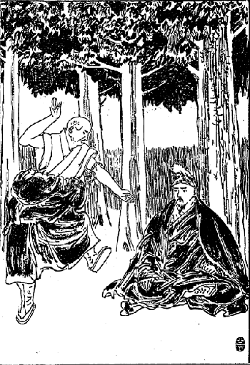
修学僧侶の問答
その例を一つ申しますが、今
問者が言葉を発すると同時に左の足を高く揚げ、左右の手を上下向い合わせに拡げて、その手を
拍つ拍子に足を厳しく地に打ちつける。その勢いは地獄の蓋も破れようかという勢いをもってやらなくてはならんというのであります。またその
拍った手の響きは、三千大千世界の悪魔の胆をこの
文珠の
智慧の一声で
驚破する程の勢いを示さなければならんと、その問答の教師は常々弟子達に対して教えて居るです。そこでその問答の
底意は、己れが
煩悩の心を打ち破って己れが心の地獄を
滅却するために勇気
凜然たる形をあらわし、その形を心の底にまで及ぼして
解脱の方法とするのであります。ある田舎者がその問答をやって居るところを見に参りました時に、あたかもカンサという事を論じて居った。カンサというのは人の相というような意味ですが、チベットの俗語でカンサと言えば
煙管の事になって居るのでございます。
それで僧侶達は人相の事についてしきりに論じて居ったその時分にその田舎者は、何かわからんけれども、どうも問答というものは奇態なものだ、なんでも
煙管から争いが起って居るらしい、なかなか
煙管一本についても大変な喧嘩をやって居るものだ、それにしても頭をぶん
擲ぐるやら砂を浴せかけるやら、他の者が
嘲けるやら大騒動をやってきゃっきゃっと騒いで居るが、ありゃまあどうしたことであろうか、と不思議に思って帰ったそうです。
それから三年程たってまたその田舎者がまたセラのお寺に参詣して、その問答をやって居るところを見ると、やはりカンサという事についてしきりに議論をやって、しまいには
擲ぐり合いを始めるというような大騒動になって来ましたので、どうもこの坊さん達は困ったものだ、
煙管一本で三年も争いを行って居るというのはつまらないわけだ、
俺が一つこの喧嘩の仲裁をしてやらなくちゃならんと言うて、自分の腰の
煙管を抜いて坊さんの所へずっと持って行きました。
すると坊さん達はその田舎者を見て、お前達の来る所じゃないと言うて
叱りつけますと、なーに私は
貴坊がたが三年の間
煙管一本について
大論判をやって居るのがあまり気の毒でたまらない、ついてはこの煙管を
貴坊がたにあげますから、どうかその喧嘩をよしてもらいたい、と言うたそうです。それが今なお笑話となって残って居ります。まあそんなふうな元気をもって問答をやるので、決して儀式にやって居るようなものではない。しかしこれをやるには始めから仏教を知らんではやれない訳ですが、やはり問答の教科書及び参考書が沢山あって、年々それに相応する取調べをして、一年一年に及第して二十年間の修業を積んで始めて博士の位を得るようになるのでございます。
と言えばまずこの問答法である。これが非常に趣味があって人を導く要素を沢山そなえて居るものでございますから、そこでかの遠いモンゴリヤから沢山の学生がわざわざ困難な道を
踰えて参りますので、現にセラ大学にはモンゴリヤ人だけでも三百人余り居りました。それからレブン寺にもガンデンあるいはタシ、ルフンプーというような大きな寺々には、モンゴリヤから沢山学生が来て居る。新教派が今日まで盛んに維持が出来て旧教派のごとく品格を落さずに居るというのも、つまりこの問答法が基礎となって居る。
確かにこの問答が
怠惰なるチベット人、
蒙昧なチベット人を
鞭撻して幾分仏教の真理に進ませるので、半開人に似合わず案外論理的思想に富んで居るという事も、こういう事から起って来て居るのです。で最も論理的思想に富んで居るのは学者の中には多いですが、普通人民はやはりそういう教育を受けないから実に
蒙昧なもの
でございます。で、この問答が行われて居る場所もまた実によい。チベットは元来
樹のないところであるが、そこにはよい樹が植わって居る。それは
楡、柳、
胡桃、桃、檜その他日本に見られない樹の種類の大木がある。それからその下に美しい
銀砂が厚く敷いてある。そうしてそこで一問答が終りますと
今度は法林道場というやはり
麗わしい樹の
繁った花も咲いて居るところの道場へみな寄り集まるんです。そこにも同じく銀砂が敷いてあるです。その
周囲は五、六尺高さの石塀で、入口の門はシナ風の優美なる門です。その中へみな集まってお経を読む。で、お経を読み終るとまた問答が始まりますので、その時には上の級の人も下の級の人も混雑になって問答をやる。思い思いに教科書にない事やら
世間門の事やら種々の問答をやります。その問答がまた余程人智開発に
与って力がある。で
戸外で問答をやって居る時は、一つの級に五十人あろうが百人あろうが、まず
問者一人に
答者一人でほかの者はそれを
見聞して居るというだけ、もちろん折には
問者も変りまた
答者も変るですが、それは一組ぎりです。
ところがこの法林道場の中へ
這入るとそれが一人一人みながやるんです。そうして上級下級に論なく老僧が小僧と問答するという有様です。ですからその手をたたく音は
溌々と
霰の降り乱れるごとく、戦場における鉄砲がばちばち響いて居るようなふうに聞えて居る。で私がちょうど桃の木の花の下で問答をやって居る時分に雪がちらちらと降って参りました。その様子がどうも面白いものでございますから、自分は問答をやめ暫くその辺の有様を見て考え込んで居りますと、ひょいと国振りが出来ました。
法の会の花の莚に花咲きて
妙ににほへる心とくかな
桃の花咲ける弥生に雪降りて
高野ヶ原は花に花咲く
そういうような遣り方でなかなか勉強するのも面白い。日々夜々に勉強したです。しかし師匠一人だけでは余暇があり過ぎて思うように調べる事が出来ないものですから、二人頼んで毎日尋ねに行く。折には
先方からこちらへ教えに来てくれるというような都合で余程進歩するのも早いように思いました。なお妙な風があって大学の生徒になった時分にはその
証として
薪をラサ府へもらいに行くのです。これがすなわち
である。それを二日ばかりやらなければならん。それはつまり大学に入学した者の義務としてやることになって居る。ある日私の近隣の小僧が他の小僧と喧嘩をして石をぶっつけられた。ところが二の腕がはずれたです。で、その師匠はことにその小僧を愛して居りますので、非常に心配してこれはどうも一生の
不具になってしまうと言う。というのはチベットでは
接骨の法を知らない。チベットのお医者さんはそういう時になると
灸をすえるとか、
貼薬をするとか薬をのませるだけですからなんにもならん。腕の離れた時はただその骨をもとの所へ入れてやれば癒るものを、いらぬ療治をするものですから
不具になってしまうので、その師匠は大いに悲しんで居ったです。
私もその子が非常に泣声を出して居ったのを散歩しながら聞きましたから、どうしたのか知らんと思って
往って見ますと、腕がぬけて居る。それでお医者さんを呼んだがよかろうと言うと、お医者さんを呼んだところでお礼を沢山取られるだけでなんにもならん。どうせ灸をすえてもらっても
不具、このまま捨て置いても不具、同じ不具になるなら熱い思いをさせたり苦しい思いをさせぬ方がよいと言うて
悄れ返って居るです。
それから私が、チベットのお医者さんは
違えた骨をもとのところへ入れる事を知らないのかと言いますと、そんなうまい事が出来るものかと言って居るです。それでは仕方がないから私が一つ癒してやろうかとこう言ったところが、治りますかと言う訳。いや治らん事はない、じきに治るからと言って、それからその子のそばへ行って他の人にその子の頭と左の手をつかまえさせて置いて、右の手をひっつかまえ、訳なくもとの所へ納めてやりました。で少し筋肉が
腫れて居るからそこへ針をしてやりましたが、果たしてすぐ治ったです。それから大分に評判になって病人がどしどしやって来ることになった。
こりゃ困った。こんなに病人に来られちゃあ本業が出来ない。それに薬もないからと言うて
断って見たところが、チベット人は断れば断る程余計出て来る。
匿せば匿す程余計に見たいというような訳で、もう手を合わさぬばかりにして頼みに来るものですからどうもしようがない。ラサのシナ人の
天和堂という
薬舗へ行って薬を買うて来て病気に対する相当の薬を遣りますと、
先方の信仰力が強いので治るのか、薬がうまく病気にあてはまったのか、私も少しは漢方医の事は聞き
囓って居るものですから、それでまあどうにか自分の知って居る範囲内で薬を盛ってやりますと不思議に病人が治るです。ことにチベットで最大難病としてわずらえば必ず死病とされて居る病気がある。
其病は
水腫病で脚気のようではあるけれども、ちょっと様子が違って居る。その病気の治る薬を私は前に不思議な事からチベット人のある隠者から聞いた事がある。
それでラサ付近ではその薬を用いる事を誰もが知らんようでございますから、私はその薬を拵えて水腫病の患者に与えました。ところが十中の六、七人は不思議に治った。もう手後れになって居るものはもちろん治らなかったですけれども、その事が非常に評判になって、始めは自分の寺の中の皆の者に知られただけですが、それがおいおいラサの市中に知れ渡り、それから田舎に伝わって
終いにはチベット第二のシカチェ府まで私の評判をしたそうです。
だというような評判で自分が驚く程評判が高くなると共に、大変遠い三日程もあるような所から馬を
二疋も連れてわざわざ迎えに来るという騒ぎが起って来た。ことに私は貧民に対しては薬を施して礼物を取らない。それらがまた評判を高くする一つの大なる事情となったかも知れない。なぜならば貧者は薬を貰ってその礼金をしないのに病気が癒るという訳ですから、こりゃ本当の薬師様が出たんだと言ったそうです。またチベットには肺病がなかなか多い。初期の肺病患者には漢方でも相当の
手術の出来るものですから薬を施すけれども、
痼疾となってとても癒らぬ奴には薬をやらん。ただ坐禅を勧めあるいは念仏を唱える事を勧めて未来の安心を得さしめ、
死際に迷わないように決心する事ばかり説いてやりました。
それで病人が私の所へ来るのを恐れる者もあったそうです。あのお医者さんが薬をくれる病人は癒るが、薬をくれなければきっと死ぬにきまってる。なぜならば
誰某も
診てもらったけれども、ただ未来の安心を説き聞かされて薬を下さらなかったところが、その人は果たして死んでしまった。どうも自分の死ぬのが分ると気持ちが悪いからと言って、女の人などが病気になってもよう来ないのがあったそうです。それからチベットでは病気になると妙な風習があってまずお医者さんを頼みに行かんで、始めに
神下しに頼む。すると神下しがどこのお医者さんがよいとか、またどういう薬がよいとか、あるいは薬を用いる事はならんとかいろいろの事を言うです。
そこである悪い医者などは神下しに
賄賂をやって自分の事をよく言ってもらおうと思って運動する医者もあるそうです。私はそんな事は始めは知らなかったですけれども私の名が余り高くなったものですから、神下しも自分の指示したお医者さんで病気が癒ったと言えば大いにその神下しの名誉になる訳ですから、神下しからどしどし私を指名し、あのお医者さんにかからなくちゃあこの病気は癒らないと言うてよこしてくれるようになった。私は神下しに運動したこともなければ顔を知って居る者もない。
先方でも顔を知らんのに、その評判だけ聞いて私の方に振り廻して来るというのは、
畢竟己れの名誉が可愛いからでございましょう。
そうなったものでございますから、政府の高等官吏あるいは高等僧官等が病気になりますと、まず神下しあるいは
卜筮者に尋ねるけれども、その人らがいわゆる一時の流行で私に対して指名するものですから、やはり馬でもって私を迎えに来るです。その迎えに来るのは自分の
下僕一人を馬に乗らしめ、私の乗るべき馬を一疋連れて、そうして必ずある人らの紹介状のような物を持って、また紹介状のない時分には、その主人が特に頼み入るという書面を持って出て来るんです。仕方がないからその馬に乗って出掛けて行く。で向うに着くとなかなか扱いは立派なもので、どこへ行ってもお医者さんと言えば命をあずかって居ることになって居るから待遇は誠に好くするです。
どうも半開国俗の時の流行を
逐うことは意外なもので、
其事が尊き
辺まで達しまして一日私を招待することになった。法王はもちろん格別の御病気でもなかった。ただ私の評判が余り高いものですから、どんな人間か見てやりたいというような
思召であったと見える。チベットではなかなか法王にお逢い申すということは非常に困難な事である。ただお通りになるを拝む位の事は誰にでも出来るけれども、本当にお逢い申してお話をするというような事はとても普通の僧侶いな高等僧官でもむつかしい位である。
だから法王にお逢い申すということは私の身にとってこの上もない名誉でございますから、直ちにその仰せに従って宮中から送られた馬に乗って参りました。その時に法王は本当の宮殿であるポタラには居らんで、ノルプ・リンカという離宮に居られたです。
此宮はポタラより西少し南に当り、キーチュ
河岸にある林の中に建てられたる大いなる宮殿である。新たに建てられたところの離宮であって夏の間はいつも
此宮にお住いなされます。しかし今の法王はこの離宮が非常にお好きであって本当の宮殿に居られることはごく少ない。
で私は林の中の広い道を三町ばかりまっすぐに進んで参りますと高さ二丈余り周囲三町四面の石塀が立って居る。その石塀のまんなかに大門がある。その大門の内へ西向きに入って行くと、白く円い郵便箱のような物が三間程ずつ隔てて道の両側に立てられてある。それは法王がお出入りなさる時分に香を焚くのであります。その両脇の広庭には大木が青々と茂って居る。もっとも中には
樹が少しもなくって広い芝原になって
毛氈を敷き詰めたごとくになって居るところもある。それから一町ばかり進みますと中に一町半四面程の垣がある。その垣の外には石造の官舎が沢山に建って居る。それは僧官の住するところである。その僧官の住舎もなかなか立派なもので、いずれも庭付である。その庭にはチベットで得られる限りの花、樹、草類を集めて綺麗に飾られて居るのでございます。
ところで一層奇態に感ずるのは、この一町半四面程になって居る石垣の隅々、あるいは折々の間には恐ろしい大きなチベット猛犬が屋根の上から太いうなり声でわうわうと吠えて居ります。それはいずれも鉄の鎖でつながれて居るが、すべてで四、五十疋も居たです。この法王は珍しい癖があって大層犬が好きなんです。強い恐ろしい大きな犬を献上に来た者には沢山な賞典をやるものですから、遠いところからわざわざ犬を撰択して法王に献上するという次第である。しかし前代の法王には犬を愛するというような事は例のない事です。その法王の御殿へ入る入口の門は東
西の隅に南向きに建てられて居る。
其門に対し十五、六間隔てて大きな家があります。その家の後の方に馬を導いて行ってしまった。で私はまず迎えの人に法王の侍従医長のテーカンという方の屋敷へ連れて行かれたです。
の事でございますから、そんなに大きくもありませんが、かなりに広い客室と書室、
下僕部屋と
庖厨都合四室ございます。まず花の沢山置いてある庭の間を通ってその宅に着きますと、綺麗な白い布の
帳が入口にさがって居る。
其帳を引き上げて内に入るとまた庭があって、その庭の横口が即ち客室でシナ風の障子に白い
切布を張り、そのまんなかに
硝子を入れてある。室内には金泥の地に龍、
孔雀、花模様の描いてある
箪笥台の上に立派な新教派の開祖がジェ・ゾンカーワと
釈迦牟尼仏とが安置してある。これは新教派の普通の仏壇の本尊であるです。
その前にはチベットの銀の燈明台があって、これには昼もバタの燈明が三箇ばかり上げてある。侍従医長はその前に敷いてあるチベット流の厚い敷物（花模様ある毛の
段通）の上に坐って居ましたが、その前には高い綺麗な机が二脚並んである。それが即ち正面で庭に臨んだ方にもまた厚い皮の敷物がある。その敷物の上に客人は坐りますので、私がその敷物の上に請ぜられて坐ると、
下僕の僧はじきに一番上等の茶をもって来て、まず机の上に置いてある主人の茶碗に注ぎ、それから私に注ぎました。侍従医長は非常に優しい慈悲深い人だそうです。不思議に私と同じような顔で世人がその後兄弟じゃないかと言うくらい形までが似て居ったです。顔ばかりでなく笑い方までが似て居ると言うのですから私も妙な感じが起りました。
さて侍従医長の申しますには別段法王には御病気ということもない。だが
貴僧が沢山な人を救われた事を聞かれ、大いにおよろこびなされてお遇いあそばしたいというお話で、その事を私に伝えられたから
貴僧を招待した訳である。しかし今日は余程法王もお忙しいから沢山なお話もあるまい。私がよくお話を聞いていろいろ
貴僧にお取り次ぎ申して御相談しなくてはならん事もあるだろうというような御挨拶。それから侍従医長との話が終ってそのお方の御案内で法王の宮殿に参りました。先に南向きになって居る門に対して北に進んで入りますと、門の
傍に一人の警護僧が居るです。
普通の僧侶は
筒袖の着物を着ることを許されないけれども、警護僧は筒袖の僧服を着け、長い棒を持って居るです。門内に入りますと十間四面程の敷石詰めの庭があって、そのぐるりは廊下のようになって取り囲まれて居る。そこにまた腰掛のような物がずっとあって、そうしてその門から正面に当りまた入口一間半ばかりの小さな門がある。その中へ入ろうという門の
両脇に
警手の僧が四人居るですが、これは別段長い棒を持たない。ただ短かな物を持って居るだけ。その小門より奥行五間ばかり中庭に入って静かに立って見ますと、左右の壁には勇壮活発なモンゴリヤ人が虎の
手綱を引張って居る図が描かれてある。その壁は廊下のように屋根があって中は
空庭になって居る。その空庭をまっすぐに行かずに廊下に沿うて左側に進んで行きまして、暫く西側の壁の
端で待って居りますと
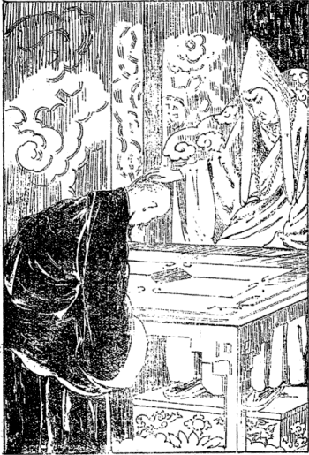
チベット法王に謁す
法王が内殿から御出御になります。前案内としてズーニェル・チェンモ（侍従長）が先に出て参ります。その後へチョェ・ボン・ケンポ（教務大師）、その次に法王、その後にはヨンジン・リンボチェ（法王の大教師）が付いて参ります。で法王は正面の右の席へ着かれますと他の二人はその
端に立たれて、ヨンジン・リンボチェは少し下の椅子に腰を掛けられた。そうしてその前には高等僧官が七、八名付いて居るです。
そこで侍従医長は私を連れて行って法王の少し正面の横まで行きますと礼拝をさせます。私はうやうやしく三遍礼拝して、それから
袈裟を片肌脱いで小走りをして法王の前まで進んで行きますと、法王は私の頭へ指して手をのせられたです。侍従医長もやはりその通りの礼式をせられた。それから下へ下がって二間程隔てて、侍従医長と私とは並んで立って居ります。
すると法王の言われますには「お前はセラに居って貧苦の僧侶の病人をよく救うてくれるそうだが実に結構な事だ。長くセラにとどまって僧侶及び俗人の病気を治すようにしてくれろ」というありがたいお言葉でございますから、「仰せのごとく致します」とお答え申し上げました。ところで法王はシナ語をよくするということはかねて聞き及んで居りましたから、もしシナ語で仰せられては
化の皮がたちまち現われてしまうに違いない。
もしシナ語で仰せられたその時は私は日本人ということを明かして一つ日本人の勇気を示そう。それからどうなろうとも名誉ある法王の御前、一か八かやって見ようという考えであったです。ところが幸いにシナ語のお話は別段されないです。ただチベット語でシナの仏教僧侶の事についてだんだんお尋ねがありましたからお答え申し上げますと、大いに御満足の御様子でした。で「誠に感心な事だ。いずれまた相当の官にお前を用いたいと思うて居る。その
心算で居れ」というようなお話でございました。その話が終りまして、法王の御面前で私にお茶を下さるということでありがたくそこでお茶を戴きました。もっとも法王はその茶の済まない中に内殿へ指してお入りになりました。で私は
の御様子を見まするに通常の僧服とは違って居ります。もちろん二十五
条衣の絹
袈裟をかけて居られましたけれども、その絹袈裟の下はチベットの羊毛のごく上等なプーツクで、お腰より下にお召しになってござるのはテーマと言うてシナ製の上等羊毛布で
拵えたもの。また頭には立派なる法冠を戴いて居られました。もちろん法冠をお着けなさらず、ただその儘で
円顱を出されて居ることもあるです。この時にはどういう訳であったか、法冠を戴いて居られた。そうして左の手に
数珠を持たれて居る。
御歳はその時二十六歳で今は二十八歳。
御身の
丈は五尺七寸位ございます。チベットでは余り大きい方ではございませんけれども、
は俗に言うとなかなか
利かん気なお顔で、眼は遠慮なしに言うと狐のようにつりあがり、眉毛もまた同じ形につりあがっていかにもその様は鋭いお顔をせられて居る。あるシナの人相学者がその後私に話しますには、今のチベット法王は
敢為なお顔付であるけれども、あの
眼相はよくないからしてきっと戦争でも起して大いなる困難をこの国に来たすことがあるであろう、と言いましたがその当る当らんは第二段にして、ちょっと人相学者が見たらば何か小言の言えそうなお顔なんです。お声はごく
透きとおって重味のある、威厳のあるお声である。ですから自然に敬礼をせなければならんようになるです。その後法王の事についていろいろ聞きもし、またお逢い申して自分が法王から秘密の法を授かりました。その時々に仰せられたお言葉などを総合して考えて見ると、
法王は宗教的思想よりむしろ政略的思想に富んで居る。もちろんそのお育ちは宗教的のみで育てられたんですから仏教に対する信仰も厚く、充分仏教を自分の国に拡張普及して僧侶の腐敗を一洗しようというお考えは充分あるようでございます。けれどもそれよりは政略的の考えが非常に多い。そして最も怖れて居るのは英国であって、その英国を
禦ぐにはどうしたらよいか、英国がこのチベットを取ろうという考えを持って居る、その
鋒先はどういう風に
禦いだらよかろうかということを、始終考えて居られるようです。それは私がその後いろいろ研究した結果によってそういう事が分りましたので、それでまた御自分を守るという思想にも余程富んで居る。もし自分を守る思想が乏しかったならば、この法王はもはやとっくに近臣のために毒を盛られて殺されて居ったに違いない。ところがなかなか機敏で法王自身がその身を守ることの注意が深いところから、どうしても近臣の者が毒を盛っても大抵はその罪悪を見破られて、罪に陥る者がこれまで度々あったです。そういう点から見てもなかなか智慮に富んで居る法王であることはよく分る。
これまでチベットで八代から十二代に至る五代の法王というものは、歳二十五まで生きて居られたお方は一人もないのです。今の法王は十三代目でありますが、八代から前十二代までは十八歳で毒のために殺されたとか、二十二で毒殺されたとかいうお方ばかりです。それは全くチベットでは公然の秘密で誰もが知らん者がない位になって居るです。なぜそんな事をするかと言いますに、
聡明な法王がその位に即きますと近臣の者がうまい汁が吸えない。己れの利益を
完うすることが出来ないからで、これまで出たところの法王もみな随分人物が出たらしく見えるです。その人達の中には二十二、三歳に至るまで特別の教育を受けたお方もあるそうです。それぞれの著書を遺して人民を導かれたということを見ても分るです。それは歴史によっても充分証拠立てられるのです。
その後前代法王の事などを私の寄寓して居りました前大蔵大臣から聞いて見ますと、涙のこぼれるような事がある。どうも近臣に不忠の大罪人が多い。稀には忠臣も二人や三人は無い事はないそうですけれども、いかにも勢力が鈍く不忠の人間は
奸智に富んで居るだけ、巧みに徒党を組みたやすく倒すことの出来ないように立ち廻って、宮中に
瀰蔓って居ると言う訳ですからどうもして見ようがない。私が世話になって居った大蔵大臣もやはり退けられた一人であるそうです。しかし不忠な人間が不忠な様子を人民に示しては、なかなか自分の位置は保てない。そこで表面は法王に対し真の忠臣が思い及ばぬ程の敬礼の意を表して、いかにも忠義を尽すように見せかけて居る。
それはなかなか巧みなもので、やはり今でもそういうやつが沢山居るです。で何かちょいとした事があるか、あるいはまた己れの利益に
戻るような事が起って来ると、自分一人で言っても
利目がないから
平生徒党を組んで居るやつが陰に陽に相呼応して、実にかかる不忠の大罪人としてはとても口から言い得ない事を言い出して、一方の忠臣を傷つけるということです。
誰某は法王殿下に対して不敬を犯しました、実に不届きなやつでござるとやかましく言い立てて
辜のない学者や人民を害すると言い、陰険極まる近臣が沢山あるという話です。ですから真の忠臣や人民はたまらない。こういうひどい悪魔が忠臣面をして法王を取り巻いて居るのですから、法王がちょっと御膳を上がるにも毒が入って居りはせぬかというような訳で微細の事まで注意しなければならん。実にお気の毒な事であると思う。こういう本来の悪魔が忠臣と化けて居るお揃いの宮中はです、よもやよその国にはあるまいだろうかと思ってひそかに涙をこぼしました。
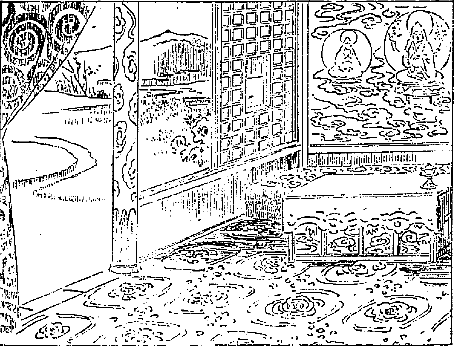
法王離宮の内殿
ところが今の法王はなかなか果断なお方ですから、かかる悪魔等も大いに恐れて居るそうです。すでに何遍か毒を盛って見たんですけれども、それがうまく
成就しないで大分に死刑に処せられた者があるものですから、それでこわがってさすがの悪魔もびくびくふるえて居るという始末。けれども今の法王とてもそういう悪魔の中に居るから危ないものです。それはさておいて今の法王は実に感心なお方です。お若いに似合わずごく細民の情実まで汲み取って、そうして地方官吏が細民をいじめたり何かする場合には充分注意して細民に同情を表せられて地方官吏を罰し、その財産を没取したりあるいは牢屋の中に入れたりするような事が折々ございますので、官吏中には法王を毛虫のごとくに嫌って居るやつが沢山ございます。けれども地方人民は今の法王は実に結構なお方であると言うて、
菩薩か仏のごとく信じて居るのでございます。
ちょうどその後大蔵大臣の宅へ住むようになったから法王の離宮の内殿も拝観することを許されて拝観に参りましたが、なかなか立派なもので、その様子はチベット風、シナ風、インド風の三つが混合して建てられたように見られる。庭などは多くはシナ風に
摸って
築山などがありますが、と言ってまた外に広い芝原の庭があり、その真中にちょいと花があるというようなインド風のところもある。その辺はごく運動がしやすく出来て居るです。御殿の内はもちろんチベット風で屋根はシナ風になって居るところもあり、また全くインド風の平屋根もあるです。
庭にはいろいろの石あり
樹あり、その樹は柳、
檜、桃、
楡その他チベットの異様の樹があちこちに植えられてある。花は一体チベットでは夏向きの花は沢山咲きますけれども、冬はほとんど花などを見ることが出来ない。その花は菊、
罌粟、
解脱母の花、
小木蓮、
欝金香その他種々の花が多く御殿の椽先に鉢植えで置いてあるです。で内殿のたたき庭になって居る間には尊き宝石が花模様に敷かれてあり、その横の壁にはチベットで最も上手な
画師が描いた高尚な
画があり、その正面にはチベット風の二畳の
高台（法王の
御座）があって、その横にまたチベットの厚い敷物がある。それらはいずれも皆シナ製の花模様の羊毛
段通が上に敷いてあって、その前には美しい
唐木の丈夫な
高机が置かれてある。
床の間はもちろんないのですけれども、ここに
茶箪笥が置かれてあって、正面にジェ・リンボチェの金泥の画像がかかってある。そういうような室は
幾室もあり、なお中に見ることを許されない室も沢山ございました。それらは中に何がありますか、法王が今そこに住んでござるから私共は行くことが出来なかったが、何せい外から見ても随分立派なものであります。私はその後もたびたび侍従医長からお迎えを受けて折々侍従医長の屋敷へ伺って、つまり私の知らない医学上の話をうけたまわるのです。けれどもその時分には必要に迫られてシナの医学の書物も大分に見て居ったものですから、どうにかその先生と話をすることが出来ました。そこで侍従医長は非常に私を厚遇して、ぜひ
それには私も充分運動するがあなたも少しほかのシャッベー（宰相）や大臣等に向って運動するがよいというお話でありましたから、私はそう長くこの国に居られない、実は仏教を修業する者であってインドの方へサンスクリット語を学びに行きたいと願って居るので、到底この国に留まることは出来ませんと答えますと、侍従医長は、それはいけない、あなたのような人に他国へ行かれてしまっては
此府にいい医者がなくなるから、ぜひとも此
府に止まってくれなくちゃあ困ると言う。いやしかし私は医者でもって一生を過す人間ではない、また医者は自分の本職ではございません、仏道修業が自分の本分でありますからいつまでも医者でもって
此府に止まって居ることは出来ませんと言いますと、侍従医長は、仏道修業の最後の目的は
衆生を済度するにあるのではないか、医者をして人の命を救い、そして仏道に導くことが出来れば、これもやはり衆生済度の一つであるから、どこに居て衆生を済度するも一つ事ではないか、だから
此府に止まってもよい訳ではないかと、もっともらしい理屈を言いました。
そこで私は、医者をして人を救うのはこの世だけの苦しみを救うのである。それも全く救い切れない。いよいよ
定業が満ちて今死ぬという時になったならばたとえ
耆婆、
扁鵲といえども救うことは出来ないのである。いわんや我々のごときヘボ医者、ほとんど医者の道を知らん者は到底人を救うより害することが多いかも知れない。もちろん医者で充分人を救い得たところが衆生が受ける
定業の苦しみを救うことは出来ないのである。私が仏教では僧侶の本分として衆生の一番重い病気、最も深い苦しみ、長くやまないところの
煩いを救うにあるのである。即ちこの
ように修業するということは、医者をやるよりも急務である。だから、私は医者をして此
府にいることは出来ない。じつに
如来は大医王である。その薬は八万四千の法薬でもって衆生の八万四千の煩悩を救うのであるから、我々はその弟子としてその医法を修業せんければならん。だから侍従医になるということはお断り申したいとこう言いますと「それではどうしてもあなたはインドへ行かれると言うんですか。」「まあそうです。」「そりゃだめだ。とてもあなたはインドへ行くことは出来ない。それともしいてインドへ出かけるとかどこか遠い所に行くということになれば、さっそく法王からして命令を発してあなたをつかまえてしまって、この国へ留めるようにしますから、そういう思いは断念なさるがよい。そうして我々と共々に働くようになすったならば大いに幸福を得られる訳でございます」と言われたので、私はふいと自分の胸中の秘密を明かした事に気がつきました。余りインドへ行くということを主張しますと自分が帰る時分に困難するだろうというところにふいと気がついたから、まあ好い
塩梅にその話は済ませました。医者の事についての話はまだ沢山ございますけれども、まあこんな事にして置いて、ここに妙な事が起ってきたです。
妙な事とは何かと言いますに、どうも法王がお
聘びになったり、あるいは貴族、大臣等が迎えるという程の非常に立派な医者を、今居るようなつまらない僧舎に置くことも出来まいというのが、私の住んで居るセラのピーツク・カムツァンの老僧達の議論になって来たんです。だんだんその説がカムツァン中で勢力を得て、ついに私に対して、これまでにない事ではあるけれども、とにかく法王から招待を受けるような医者はまた特別の取扱いをしなければならんというので、上等の
室を私にくれるようになったです。で、そこへ住むがよかろうということになりました。何はともあれ汚い臭い

の
端の暗い部屋に住んで居るよりは上等の部屋に居る方が自分も結構ですから、まあ
其舎へ指して移りました。
法王に始めてお目通り致したのは七月二十日で、部屋の引移りがちょうどその月の末頃であります。一体順序から言いますると、始めてこの学校へ来た者は別に室を貰うことは出来ない。誰かのところに一緒に居らなくちゃあならないけれども、少し金のある人ならば大学へ入学するとまず汚い室を貰うことが出来る。それも必ず貰えるときまっては居らんのです。私は少し金の廻りもよいものですから、大学へ入学するとすぐに汚い室でありましたが貰いました。大抵十年位たつと四等室位まで移ることが出来る。それから三年たつと三等室に移ることが出来る。それも金がなくちゃあ駄目です。
それからまた博士になると二等室に移ることが出来る。やはりこれも金がもとであるんです。で一等室は
化身のラマ達の修学に来て居られる者が住むのです。私は二等室をもらいましたが、なかなか立派なもので部屋一つに
庫裡一つ、それから物置が一つある。誠に小綺麗な二階
造り、三階の所もありますが、私の居った所は二階しかない。二階造りは二階が一番よいので、三階造りは一番上の室をもってよいとされて居る。それでそういう室に住みますと、やはり相当の道具もいればまた
下僕の僧侶も置かなくちゃあならん。ちょうど書生が新たに世帯を持ったような訳でいろいろな物を買わなくちゃあならんけれども、随分金が沢山あったものですから、すべて入用の物はその室に相応したよい物を買うことが出来ました。ここで
についてちょっと申して置きましょう。僧侶の生活はいろいろの階級になって居りますけれども、大別して三つに分つことが出来ます。上等僧侶の生活と普通と下等の三種であります。普通僧侶の生活ですと月に一人について衣食の入費が七円位のもので、住居はもちろんその自分の属して居る寺から備えられて居るのでございますから、それに対する金はいらない。しかしあるカムツァンなどはそのカムツァンに借金がございますので、僧侶に対して室の代価を僅かずつ徴収するです。それから一つのカムツァンへ多くの僧侶が参りますと、もちろんその中へ入れることが出来ない。
その時にはその入り切れない僧侶自らが外のカムツァンへ行って約束して、そのカムツァンの室を借りて住み込まねばならん。それにはやはり月に一円かかるもあり、いいのになると三円位のもある。ごく悪いので二十五銭位である。衣服は普通の羊毛布でこしらえた
袈裟とシャンタブ（
下纒衣〔
穿抜腰衣〕）と正規の僧帽と中等の
履を用いて居る。それでも一通りそろえますと二十円位かかります。食物は朝はバタ茶に麦焦し、それも大本堂へ行けばお茶は毎朝大椀に三杯ずつ貰うことが出来るですけれども、大抵財産のある普通の僧侶は朝々自分の室で茶を
拵えて飲む、昼少し過ぎにまた同じくバタ茶で麦焦しを喰いますが、その時には肉を喰います。その肉は乾したのが多く折々は生肉も用いて居るです。
晩は大抵麦粉のお
粥、その中へ
乾酪、大根、脂肪肉等を少し入れうまく拵えて
其粥をすするのです。バタ茶は大抵隙間もなく机の上の茶碗に注がれてある。どうもチベット人は肉を喰う割合に野菜が乏しいので始終茶を飲んで居るです。その茶飲み茶碗はいつも銀の
蓋で伏せてありまして、
其茶がよい頃にさめると飲み、飲んではまた注いで二十分位蓋をしてさまして居るのです。もっとも冬はそんなに長く置くことが出来ないから、五分か六分の間に
其茶を飲みつつ話をするとか、あるいはお経を読むとか、あるいは内職などをやって居る者もある。そういうのが普通の僧侶の飲食物であるです。
で僧侶の財産はと言うと大抵田地を持って居ります。中にはある地方においてヤク、馬、羊、山羊等の牧畜をして居るのもありますが、しかしこれらは余り多くはありません。まず家畜ならばヤクが五十疋、馬が十疋位、畑ならば前に申した通りヤク二疋で
鋤いて一日かかって畑の十枚もやるのが関の山です。それらの財産から自分の
喰物なり
小遣なりが出て来ますので、普通寺から給せらるるところの禄、信者から僧侶に対して一般上げらるるところの「ゲ」を受けるだけでは中等の生活は出来ないです。で、その寺なり信者なりから受けた上に自分の財産及び内職でその生活を立てて居るんです。
僧侶のうちで商売をしないものはまあ稀な方です。大抵商売しなければ農業、そうでなければ牧畜、それから職工は仏具を
拵えるもの、仏画を
描くもの、裁縫師、大工、左官、
履師、
石積などチベット国民のあらゆる職業
（〔中、屠者猟師の業を除いては何の職業でも〕）僧侶のうちに見出せないものはない。のみならず俗人に出来ない仕事でかえって僧侶がやって居る事も沢山あるです。これらはただに中等の僧侶ばかりでなくまた下等の僧侶にもある。
上等僧侶の衣食住はなかなか立派なもので、まずその財産を言いますとヤクが五百疋以上四千疋以下ぐらい持って居る者がある。馬は百疋以上五、六百疋、田地はヤク二疋で
量った一日程の田地が百枚以上五、六百枚以下、それから商売をやる者では一万以上五十万以下の資本をもって商売に従事して居るのもある。しかし僧侶で五十万位の資本を持って居る商売人はチベットでも三、四人しかないそうです。これらの僧侶の生活の程度は立派なもので、お
蚕ぐるみという訳ではありませんけれど、チベットの内で出来た最も上等の羊毛布の
法衣を着け、その食物は朝々に
粥のようにどろどろになったバタ茶を用うるです。
此茶はチベットでは非常によく
拵えて居ります。
まず
其茶を半日も
煎てその
滓をよく取って、そうして真っ黒な少し赤味がかった汁になって居る中にヤクのごく新鮮なバタを入れ、例のごとく塩を入れて筒の中で二度ぐらい摩擦したのがごく上等の茶である。こういう茶を一
罎こしらえますには三十八銭ぐらいかかるのでございます。その一罎というのはちょうど日本の
溲瓶の形になって居る土焼の
茶瓶一つを言うのです。その茶瓶に入れて口より茶碗に注ぎ込むのですが、どうも始めは気味が悪いです。溲瓶から油のどろどろした汁が出るように見えて、ちょいと手に取って飲んでみる気にはならない。こういう茶を飲むのは上等社会でなくちゃあやれないです。
即ち上等の僧侶は毎朝その茶でもって上等の麦焦しを
捏ねて、その中にツーというものを入れます。このツーというのは
乾酪とバタと白砂糖とを固めて日本の
擬製豆腐のように出来て居るものです。それを入れてうまく捏ねてそうして
其塊を右の手でよく握り固めて喰います。もちろん朝から肉は喰いますので、その肉はやはり乾肉と生肉とそれから煮たのと三種類です。昼は一升五十銭以上の高価な米、ネパールから輸入された米を煮て喰うんですが、御飯もそのままは喰わない。バタの中に砂糖と乾葡萄を入れ、そうしてそれを混ぜて茶碗に一ぱい喰うのです。その後で卵
饂飩あるいは麦焦しをたべることもある。
夜分は小麦団子を
雑煮のように
拵えてたべる。チベットでは
粥と言うて居るが、その中には肉も入って居れば大根も
乾酪も、もちろんバタも入って居るです。しかし朝必ずしも麦焦しを喰うと限りません。お客さんがあった時分にはそれがあちこちになっていろいろ変ることもございますが、まずこういうのが上等社会の常食である。上等の僧侶は一日として肉がなくては決して喰うことが出来ない。どうかして
斎戒を保って
肉食をやめるような事があるとやかましい事で、
痩せたとか死にそうになったとか言うてわいわい騒ぐです。実に哀れなもんです。
さて上等僧侶の住所は第一等あるいは第二等の住所をその所属の寺からもらって居るばかりでなく、また自分で別荘を拵えたりあるいは自分で寺を持ってる者もある。ですから上等の僧侶は実に結構なもので、そういう
活計をする金はどこから来るかと言えば、先に申しました財産から供給されて居ますので、上等僧侶の家には大抵五名以上七、八十名までの召使がある。そうしてその中から執事とか、あるいは会計主任とか、また
商将とか、あるいはラマのお
侍とかいうような者を選抜して、いろいろその勤める範囲が違って居ります。上等僧侶はそういう沢山な
下僕の僧侶にかしずかれて荒い風にも当らずに結構に暮して居ますが、下等の僧侶に至ってはそれと全く反対で、実にこれを説明するにも涙がこぼれる程哀れな
境涯にあるのです。
その気の毒な有様はほとんど言葉に尽せないけれども、まず申しましょう。同じ下等と言っても壮士坊主ならばよその
百姓働きに行ったり、あるいは内職をやったり、あるいは護衛兵になったりして金を儲けて、それで自分の需用をみたすことが出来ますから、今日喰う物もないというような
活計はして居らない。ここに最も気の毒な最も哀れむべき者は下等の修学僧侶の
生活である。これは自分の宅から送る学資金もない。また自分で働いて儲ける金もないのです。何分にも科目の調べに忙しいからどこへも出ることが出来ない。で自分の学資として仰ぐところは、信者より「ゲ」として上げられた月々に一円から二円の金、それから俸禄として一円ぐらい。どうも二、三円では到底生活することは出来ない。
朝は大本堂へ行って茶はただ飲めるにしても
肝腎の麦焦しはただは来ない。一月に一円三、四十銭なくてはどんな者でも腹を太らせることは出来ない。で問答修学期の間は毎日ターサンに行って茶三杯ずつ貰うてそれで昼御膳を済ますけれども、この問答修学期は一月問答をやれば一月は休み、半月やれば半月休んで復習し、かつ下調べをせんければならん。そこでこの僧侶はまた問答を習うために教師の所に通わなければならん。それは少なくとも月に五十銭ぐらいの月謝を払わなくては教えてくれる人はないです。これも余程お慈悲のある人でなければ教えてくれないですから、二円の金は大方麦焦しと修学の月謝にかかってしまうような訳。と言って自分の室内で夜分まんざら火を燃さずに居るという訳には行かないです。
夜分もやはりちょっと茶を
拵えて麦焦しを喰わなくちゃあならん。ところでその茶を買う銭の出どころがない。もちろんバタなどを入れるような
奢ったことは到底出来ない。ですから下等な修学僧侶は上等僧侶の飲み
滓の茶を貰って来て
其滓を
煎じて飲むんですが、さてその煎じるところの
薪即ちヤクの
糞はこれまたただは来ない。一俵（およそ五斗入り）の
価が三十五銭もするです。少し余計に
焚くと一月に三俵も四俵も一人で
入っちまうですが、その貧しい修学僧侶は一俵で一年ぐらい辛抱しなくちゃあならん。
そういう人の室内に行くと、その財産としては羊の皮と
木椀一つ、
数珠一つに見すぼらしい敷物一枚。その敷物が夜分の寝床にもなりますので、隅にはその室付の
竈が一つ、その上に
土鍋が一つ、それから水を入れる土の
罎が一つある。壁の隅に
綴った袋が一つかかってありまして、
其袋には先生らの命をつなぐ麦焦しの粉が入って居る。それとても満ちてあるものは稀です。けれどもそのうち一番肝腎な財産は何かと言うと問答の教科書です。それはどんなつまらん僧でも五、六冊位は大抵持って居る。しかし
其本は教課が済みますとじきに売ってまた今度いる新しいのを買いますので、決して永久の持物として持たれて居るものじゃあない。
夜分は自分の着て居る袈裟と
下衣とが夜着であって、その上に一枚の
古毛布でもあれば余程よいのですが、それもないのが多い。それでも一人で室を持って居るのはまだ大分に気が
利いて居りますので、大抵九尺四面の一室内に三人ぐらい住んで居る。そうして三人共有の土鍋が一つというような訳。だからまあチベットの厳冬の夜、ごく寒い時分どうしてこの室内で過すことが
出来たろうかと思うて、そういう人のところへ病気などを
診に行くと思わず涙がこぼれて薬代を取るどころではない。金をやって来たい位の感覚が起ります。これが下流僧侶の生活の有様である。
そうですからこの僧侶らは「ゲ」のない時分にはほとんど食物を得ることが出来ないで、折々は三、四日も喰わずに居ることがある。けれども二十銭なり三十銭なりの「ゲ」を貰うことが出来るとさっそくラサ府まで一里半あるところを、ひだるい腹をかかえて麦焦しを買いに行くです。買うてじきに帰って来れば大いによろしいですが、事によると余り腹が減ってたまらないので
煮出屋へ飛び込んで、そのもらって来た「ゲ」のすべてを
費うて
饂飩や何かを喰っちまうから、また腹が減って
喰物がなくって二、三日も喰うことが出来ない。すると今度はいよいよどこかへ貰いに出かけるというような可哀そうな有様を私は折々目撃した。そういう場合には自分の出来るだけの
金を遣ったり何かします。それで修学僧侶などは私に対して大いに敬意を表し、
仕舞には
途で遇ってもなかなか私の顔など見て歩く者がない位になりました。
少し話が後に戻りますが、私が医者を始めてだんだん盛んになるに従って、薬を沢山買わなくてはならないようになったです。そこで薬買いには、シナの雲南省から来て居る商人で店の名を天和堂と言い、
主の名を
李之楫という人の宅へ折々行かなくちゃあならんようになった。チベットでは
薬はみな粉にして用います。シナ人のごとくに切って置いて
煎じて飲むということをしない。すべての草根木皮は粉に砕いて薬を製造します。また
角の類あるいはいろいろの
礦石類も用うるです。
そういう薬剤を粉にしてもらうためにその宅に一日二日泊ることが度々あります。何しろ沢山薬を買うものですから大変よいお客さんになって、
先方でも随分好遇するようになって来た。そこでその人から
景岳全書という医者の書物を借りまして、前に自分の聞いて居ることやあるいは少し知って居る上にその書物を見ましたから、まあ大抵な病人を取り扱うことが出来るようになった。随分
と自らは信じて居るけれども、鳥なき里の
蝙蝠でまあ仕方がない。それでもラサ府のお医者さんよりは余程立派なもので、生理学の議論ぐらいやったところが決して負けない。その点においては確かにラサ府のドクトルよりは私の方に信用を置かれるようになって居った。で折々その宅（天和堂）へ出かけて行く。その家には室も沢山ある。ラサ府には三軒シナ人の
薬店があるけれども
其宅が一番大きいので、その
主はまだ三十歳ぐらい、ごく人のよい
方で大層親切にしてくれた。その家内もなかなかよく行き届いた人で、その夫婦の間に女の子と男の子が一人ずつ、それに女房の母親、それから召使が三人、これだけの家内で暮して居る。で皆が私を家族同様に扱うようになった。と言うのは元来私のところには人から
喰物を沢山くれるです。それを自分一人で喰うことが出来ない。まあ余るものですから誰にも構わず遣ったです。
その中でもことによきお菓子あるいは酸乳、白砂糖あるいは
乾葡萄などを貰いました時分には必ず
其家へ持って行ってやるものですから、子供達は大変な喜びで、私が出て行くと何か必ず貰えることにきまって居るように心得てちゃんと待って居る。二、三日行かないとこの節はどういう訳かセラのお医者様がお越しにならないと言って大いに待って居るようになり、そこでちょうどその家の家族の一人のような
塩梅になりました。子供と親密になるのは早いもので、全く十年も十五年も手掛けたような有様で、ほとんど他からちょっと来た人が見た時には、シナから出て来る時分より
近眤であったかあるいは親類であったかのように人々から折々尋ねを受けた位。この親密なる交際が私がチベットを出ます時分に非常の助けをなしましたので、この事は後にいずれ順序としてお話致しましょう。
天和堂というギャミ・メンカン（シナの
薬舗）はワンズュ・シンカン（ラサ府の町名）にあるので、その宅へ遊びに来る人で駐蔵大臣（シナの全権公使）の秘書官
馬詮という人がある。この人はシナ人の中でも余程の学者で、また経験家で
良実な人である。もとチベットで生れた人で、そのおっかさんはチベット人である。だからそのチベット語にもシナ人の語調はありませんけれども、さればとてシナ語もよく出来、シナの書物もよく読めます。むしろチベットの書物よりもシナの書物に通じて居る人で、ペキンの方へも二度ばかり行き、またインドのカルカッタ、ボンベイの方へも二度ばかり商いに行って外国の事情にもかなり通じて居る。
其人が
衙門へ指してお勤めに行く。時間はごく僅かで務めのほかは遊んで居る。薬屋の
主と非常に親しいものですからいつもこの薬屋へ来ていろいろの話をする。
それから私が近づきになってだんだん話して見るとなかなか面白い。またチベット人の種々の秘密の悪い風俗、習慣などをこの人から聞くことが出来た。それを聞いてよく眼をつけて居るとなるほどその言葉通りの事も分る。全く聞かないとうっかりして居る事も沢山ある。のみならず駐蔵大臣の秘書官ですから、いろいろシナとチベット政府のその間の秘密の事情などもよく知って居っていろいろ話をする。元来この秘書官は非常な話し好きで、私が尋ねなくても親切によく話してくれる。だから私には大変有益な友を得ましたので、まあセラなどで書物を読んで余り疲れた時分には、買う薬がなくても運動かたがた出かけて行ってその秘書官と話をするのが何よりの楽しみになった。
ある時の事、私が天和堂の
門口に立って居りますと一人の貴族が
下僕を連れてこちらの方向に向いてやって来ました。この
薬舗がパナンショーへ行く道とカーチェハカンへ行く道の三角形の
角にある店である。するとアニサカンの向うの方からその紳士がパナンショーの方へ向けて出かけて来るです。私が店に立って居るのをちょっと見て少し行き過ぎましたが、また後戻りをして見に来たかと思うと、その付添の
下僕が違いない、違いないと言った。そうするとその紳士が私の所へやって来て「やあ、あなたは」と言う。その顔をよく見ますと余程痩せ衰えて居ますけれども、これは前にダージリンで出遇うたところのパーラー摂政家の公子である。様子を見ると先に聞いて居った気狂いのようでもない。
ところでその後は誠に久し振りで、あなたはよくこちらにお越しになる事が出来ましたというような話。こんな所で話をしても仕方がないから家に入ってはどうかと言うたら、それでは急ぐけれどもちょっと入りましょうと言うて内へ入りました。すると天和堂のお
内儀さんはかねて知合いと見えて、さっそく椅子を指してどうかお掛け下さいと言って
請じたです。で何か私の話をしそうですから私は眼で知らして、さて第二の府であなたにお眼にかかってからちょうど半年ばかりになりますとふいな話を仕掛けた。そこで
先方ももちろん私がダージリンに居たことをここで明かせば自分の身にも害が及ぶという位の事は知って居るものですから、私の話に応じてうまく
辻褄を合わしたです。
そんなところを見ると全く気狂いのようでもない。いろいろ話したが常識を備えた人の話と変らない。その話の中に「私はこんなに痩せる訳はないけれども、三ヵ月以前に私の
下僕が盗人をした。それを
譴責したところが大いに怒って私のこの横腹へ刀を突き込んだ。それで
腸が少し出て非常に困難をした。もしあなたが来て居ることを早くあの時に知ったならばこんなに困難もしなかったであろう。」「それはお気の毒な事であった」といろいろそんな話をしてその方々は帰りました。すると天和堂の奥さんの話がおかしい。「なかなかパーラーのぼんちはうまい事を言われる。自分が悪い事をして腹を傷つけられたのに、あんなてれ隠しを言ってあなたを
騙そうとするけれども、私はその事情をよく知って居る」と笑いながら話をした。
どういう訳であなたはそういう事を知って居るかというと、なあに私はもとあの
兄さんの女房であった。それを兄さんが私の宅が階級が低いものだから長く添うて居る事を親から許されなかった。で兄さんは私を離縁してナムサイリンに養子に行かれたですから、あすこの家の事については何でも私はよく知って居ます。一体あのぼんちは女好きで女に迷うて沢山な借金を拵え、その女と酒との
揚句に何か喧嘩が起って腹を切られたんで、今あのぼんちの言われたような立派な話じゃないですと言われた。「それじゃあ気狂いじゃないか」と聞きますと、「
彼は勝手気狂いで借金取りが来たり都合の悪い事が出来ると気狂いになるが、当り前はまともなので実に困った人です。気狂いと思ってなかなか油断はなりません。金を借ることはなかなか上手ですからあなたも御注意なさいませんとひどい眼に遇いますよ」とこういう訳でその事は済みました。
薬屋との関係はこの後も沢山出ますけれども、これは今はこの位で
措きます。この後八月上旬の事ですが後々私に深い関係の起る人から招待された事についてお話をします。もういちいちどういう立派な人が私を招待したとか、こういう病気が治ったとか治らんとかいう話は面白くないから、そういう事は抜きにして、ここでどうしても私に非常に関係の深くなった人の事を述べなくちゃあならん。
それはチベットの大蔵大臣の家に居らるる老尼僧がある。その方が病気でもって麦
田の別荘に居られる。チベットでは別段花を
観に行くと言ったところが桃の花ぐらいのもので、じきになくなってしまって面白くもない。そこで夏になると大抵リンカ（林の中あるいは花園）の宴を開くと言うて、麦畑の間にテントを張ったりあるいは林の中に敷物を敷いて
思い思いの面白い遊びをなし、御馳走を喰い酒を飲みあるいは歌を
謡い踊を
跳るという遊びをするです。それがチベット人は無上の愉快としていつも夏になるとリンカの宴を開きに行くことを待ち兼ねる位です。
それでその麦
田の別荘に招待されて行くと六十余りの尼僧が居られる。
其尼に
付添の尼僧、女中というような者も七、八名も居るです。家はなかなか立派に出来て居る。天幕でなく板をもってうまく拵えてその
外部は
切布で張ってある。
内部もいろいろ立派な模様
晒布で張り付けてある。仮住居ですけれどもなかなか綺麗にしてある。そこへ招待された。老尼僧の言われるには、私はもう十五、六年間の病人でどうせ老病であるから治る見込はないが、名高いあなたに脈だけ見てもらって、よし治らなくても痛いところが少し助かりでもすればそれでよい、どうか一応
診てもらいたいというお頼み。そこで容体を聞いたりいろいろ診察しますと
僂麻窒斯です。さっそくカンプラチンキを拵えてやりました。
なお胃病も少しあるようですからその薬も遣った。それは非常によい薬でもないけれども一体信仰力が強いものですから、その信仰の力は恐ろしいもので、余り結構でない薬が実に結構に
利いて、十五、六年このかた痛みのために夜はいつも寝られないで
難渋して居ったというその痛みもどうやら取れて、幾分か歩くことも自由が利くことになった。ところが大よろこびでさっそくその事を自分の宅の大蔵大臣に報知した。
此尼は実は前大蔵大臣の内縁の奥様であったです。
奥様の尼さんとは変だと思いましょうが、大蔵大臣もやはり僧侶です。ことに新教派の僧侶です。その事は言うに忍びないけれども、どうも本当の事を言うて置かないと訳が分らんからよい事はよい、悪い事は悪い、当り前の事実を述べて置く
所存です。この大蔵大臣と尼僧と一緒になって居ることはその人らだけに行われて居る事で、なかなかその社会では許されないけれども、およそ貴族の僧侶と言えば妻がある。公然と妻は持てないけれども内縁の妻をどこかに隠して置くとか、あるいは内に入れてあるとか、それにはまあ最も便利なのが坊主の女房に尼と言ったようなのがごく都合がよい。それでこの大蔵大臣にもやはり尼僧の奥さんがあります。しかしもはや大変な老人で、白髪頭で腰は
屈んで居るけれど身体は大きくって元来強壮な質の人であります。
大蔵大臣の家にはもちろん家来も沢山あり
下僕も沢山ある。そういう人達が病気になるとセラのお医者さんに限ると言うてみな私のところへ
診て貰いに来る。それが
先方の信仰力で病を治してくれる。こういう風に信仰されるのはこりゃ私の力ではない。全く仏がこういう風に拵えてくれるので人が信仰するのであろうと自分ながら不思議でたまらなかったです。それからだんだん前大蔵大臣と懇親になって来た。で、いろいろ話をしますと、この方は
非常な才子でまた博学であるのみならず、難局を裁断して遺憾なく、外交上の問題などについては充分処理の出来る人です。
歳はその時に六十二歳でございましたが、チベットではあれだけ高い人を私は見たことがなかった。七尺四、五寸は確かにある。私がその方の
端へ行くと乳のところまでしかない。その方と
一処に道でも歩くと、まるで親と子供と一緒に連って歩いて居るようにしか見えない。その方の着物を拵えるにはいつも二枚分いるです。人を見るの明あって世才に富んで居るにかかわらず非常に親切でまた義に富み、決して人を欺くというような事はしない。ただその人の欠点と言うべきは、若い時分にこの尼僧と一緒になり、それがために自分の身を誤った一事です。
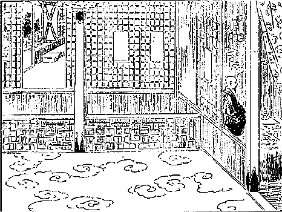
大蔵大臣別殿の一室
私と親しく話をする時分に折々尼僧と共々に涙を流してあの時に、あんな事がなかったらこんな馬鹿な事はなかったろうという
懺悔話を折々聞いた。そういう点を見ても全く根が悪い人でない。一時の
若気で僧侶の正しい行いを
完うすることが出来なかったのである。しかし世間一体の風潮もすでにそういう風であるから幾分か世間の風潮に染んだのであろうと思う。とにかくそういうお方ですから、私の情実を察してくれて、「どうもあなたは気の毒なものだ。セラに居られるとあのセラの病人を相手にするだけでもなかなか容易なものじゃない。そのうえラサ府からも病人が行くと地方からもやって来るという始末だから、実に書物を読む暇がありますまい」と言う。
「実にその書物の読めないにはほとんど私も困り切って居ります。」「それは気の毒な事だ。それにどうもこの後そんな風にやって居ると第一身が危ない。」「何が危ないか」と言うと「あなたが来てからほかのお医者さんが喰うことが出来んようになったから、その医者達が人を廻してあなたに毒薬を盛らぬとも限らん。まあ大抵
殺られましょう、私の見るところでは」とこういう話。「それは困った。何とか方法のして見ようがないか知らん」と言うと、「あなたは喰う事と着る事さえ出来ればいいだろう。」「いやもうそれだけ出来れば充分です。」「それだけは私が供養して上げましょう。住所もそんなに立派ではないが、お寺に居るより少しは気楽な室を上げますからどうです。私の宅へ住み込んでここで勉強せられては。かえってよく勉強が出来るだろう。余程困った病人でなくちゃあここへはめったに言うて来やしない。病人に対しては気の毒だけれども、ラサ府のお医者さんを助けてやると思ってここで勉強せられちゃあどうです」と言われた時は実に
嬉しゅうございました。チベット仏教を調べるためにせっかくラサ府へ出て来たのに、世間の事ばかり見てその世間の事を取り調べる便宜は得ても、仏教を取り調べる事の出来んのは誠に残念の事である、と思って居りました矢先へその事を聞いたものですから、その時の喜びは親に遇ったよりもなお嬉しかったです。
何事もとんとん拍子のよい都合に行って、お金は出来るし衣食住は大蔵大臣からすっかり下さると言う。そこでセラの方から食物その他日用品をみな運び、そして自分の今までの住居の方には小僧だけを留守番に置いて、私が決して大蔵大臣の宅に居るということを言うな、また非常な病人が来ても大抵はほかのお医者さんに
診て貰うように言え、私はこれから勉強しなくちゃあならんから、と言って小僧には
喰物を与え、ちゃんと勉強する道を付けて置いて、私は全く大蔵大臣の別殿へ住み込むことになりました。ただしセラで問答が始まると折々問答の稽古に出て参りました。
けれども私の貰った御殿はそんなに広くはない。長さ三間に奥行二間ばかり、
其室が二間に仕切られて居る。けれども元来貴族の御殿風に出来て居るものですから中の壁の模様などは実に立派です。緑色にすっかり塗られてきらきら光って居るところへ、金でもってチベット風の花模様が置かれてある厚い敷物、
唐木の机、ちょいとした仏壇もある。何もかも行き届いた誠に清潔な御殿で、その御殿の横にもう一つ大きな御殿がある。
其殿は新大蔵大臣の居らるるところで三階造りです。前大蔵大臣チャムパ・チョェサン（
弥勒法賢）は二階造りの御殿に居らるるです。そういう
閑静な所でもあり、何しろ大蔵大臣の邸ですから、セラに居った時分の僧侶の友達までが恐れて出て来ない。そこで勉強するには好都合であるがさて教師の所に通うのが困難である。どうも二つよい事はないもので。
ところがここに最もよい教師というのは前大蔵大臣の
兄さんでチー・リンボチェという方がある。これは父
異いの兄さんでシナ人のお子だそうです。このチー・リンボチェはやはりセラ出身の方で七歳位から僧侶になられたそうですが、この時には六十七歳であって、その前年にガンデンのチー・リンボチェというチベット最高等の僧の位に
就かれた。このチー・リンボチェという意味は
坐台宝という意味で、新教派の開山ジェ・ゾンカーワの坐られた坐台がガンデンという寺にある。その坐台へ坐ることの出来るのはチベットでただ二人。それは法王とそのチー・リンボチェとである。しかし法王は常に
其坐に坐れる訳じゃない。チー・リンボチェはガンデンに住んで居れば
（〔法式の時は〕）いつもその
坐に坐られるのです。
で法王は生れながらにしてその位置を占めて居るのですが、このチー・リンボチェは仏学を学んで博士となった後に、ほとんど三十年も秘密部の修学をしなければならん。修学というよりむしろ修行である。その修行の功徳を積み学識と徳行との二つが円満に成り立ったところで、チベットではこの人よりほかにこの坐台に坐るべき方はないという高僧になって始めて、法王の招待によってこの位に就かれるのです。けれども
屠者、
鍛冶屋、猟師、
番太の子供はその位に就くことはもちろん出来ない。普通人民の子供でありさえすれば、誰でも五、六十年の修行を重ねて学徳兼備の高僧となればこの位に就くことが出来るです。
ですからむしろ実地の学徳の上から言えば法王よりもこの方が尊いので、私は幸いにしてこういう尊い方を師匠として仕えるような仕合せを得た。これはなかなかチベットでは容易の事でない。ことにチベットは階級の厳しいところですから、お遇い申すことさえも容易に出来ない尊い方である。たといある
伝手を経てお逢い申しても、その方から話を聞くということは余程困難な事です。しかるに私はその方を師匠として教えを受けるようになったのは、全く前大蔵大臣の厚意によってこういうよい
幸福を得ることになったのである。それでチベット仏教の
顕部についても秘密部についてもこの方から充分学ぶことが出来た。しかしこのチー・リンボチェという方は余程妙な方で、私を一見してすぐに私の
素性を知って居たかのように取り扱われたです。しかしまあ当分害がなかろうからここに居るがよいというような事を
暗々裡に
漏らされた。
私は実に恐ろしくなったけれども、また私の心の中を見て下すったものと見えて、真実に仏教を教えて下すったです。その有難味は未だに忘れられない。私はチベットに居る中に多くの博士、学者、宗教者、隠者からしていろいろの説を聞いて利益を受けたけれども、この方から受けた程の感化は受けなかった。こういう尊い方があるから、その弟の大臣が
過って悪いところへ陥っても、結局自分で真実に
懺悔して未来の
大安心を得ようということに
勤めるようになったのであろうと私は察しました。また前大臣の奥さんである老尼僧も大臣に劣らぬ活発な気象だが、女ですから幾分か優しいところもあるけれども
男優りの思想を持って居られたです。
この尼僧はネパールのカトマンズへさして二十年程以前に、
罪障懺悔のために巡礼に行かれた事がある。その時分にいろいろ
難儀した話やら私がネパールに居った時の話やらがよく私と合いますので、いつもその話を聞きましたが、似た者夫婦とか言うて大臣の義気に富んで居るのとこの方の義気に富んで居るにはほとほと感心しました。それで私はむしろこのお二方、尊い僧侶と尼僧とが御夫婦になって仏教の真実体面を汚したという罪悪を憎むよりは、その心情の哀れなることを察して折々は自分でもどうも誤り易いは色情であると思って、前車の
覆えるを見て私の進んで行く道の
戒めとした訳でございました。
だんだん親密になるに従って家内の事、その家来の気風はどんなであるということから、仕舞にはごく
些細の事までもよく私には分って来た。そこで現任大蔵大臣はやはり私のつい隣の御殿に居られるけれども、なかなか事務が多いものですから現任大臣とはそう話をすることが出来ない。この方の名をテンジン・チョェ・ギャル（
教持法王）と言う。なかなか温順な方で、また侵し難い程意思が
鞏固なのです。いつも話をする時はにこにこ笑ってまるで友達扱いをされますので、この方は大臣だということも打ち忘れ、先方でも大臣の資格をもって話をせずにごく友達風に話すです。それと言うのは前の大臣なり尼僧なりが私を自分の子供のように愛していろいろ世話をして下さるものですから、それが幾分か関係を及ぼしてこういう風に親切にされたんだろうと思う。
打ち解けて話をする時分には現任大臣の事ですから政府部内の話も折々ある。で、この方は政府で何かむつかしい問題が起ると、その場では意見を述べずに家に帰って来てそれから自分の
父親のごとき前大臣に相談をするです。今日はこういう問題があったがどうしたものだろうと言うと、前大臣は前例を
鑑み、あるいはその事変に応じてそれぞれの処分法をば言われる。一体から言うと前大蔵大臣は今頃は総理大臣の位置に居るか、高等僧官の中で
宮内大臣の位置に居るか、どっちかの位置に居られる人だそうです。そう行かなかったというものは、この尼僧を奥さんにせられた事からやはりチベットでもそれが幾分か攻撃の種になって、自然
蟄居しなければならんようになったと言う。
もしこの方がチベットで政治を
執るようになって居りますれば、今の鋭敏なる法王とこの老練なる大臣とが
相俟って随分面白い仕事が出来たろうと思う。こういうような前大臣と現任大臣との夜分のお話には、私もその席に居ていろいろ聞いたり、時としてはまた私の意見などを言って見たりするような親しい間柄になったです。それがために私は研究しようとは思わない、とても研究しようと思ったところが到底出来得ないと絶念して居った
の事についても充分に知るの便宜を得られた。ただ寺に居った分には仏教上の理屈を研究するにはごく都合がよいけれども、なかなか政府部内の秘密なんと言うことは学者社会にはちっとも知られて居らんで、ただ法王の政府はありがたいという考えを持って居る間抜け坊主ばかりが学問に従事して居るのです。こりゃ間抜けじゃない。知らさないから知らんのでしょう。とにかく私はそういう好都合を得ましたから、この
後場合を見て、私の聞いたシナ、英国、ロシア、ネパール等に対する外交上の秘密な事についてもお話をしようと思います。
それからまた妙な事が重なれば重なり、奇遇というような事も随分あるもので、すでに前にはパーラー公子と
天和堂の前で奇遇しましたが、今度はまたダージリンの商人で、ツァ・ルンバ（土地の名をその人の名とす）という人に
邂逅しました。
此人がまた後にチベットを出る時分に大変助けになった人ですから、ここに寄遇した事を言って置かないと後の事が分らない。ある日私はラサの
目抜であるいわば
とも言うべきパルコルという道を廻って参りました。
其街には商業家がいずれもみな店を張って居りますので、その店の張り方は別段他の国の遣り方と変った事はない。ことに
露店も道の広いところには沢山あって、それらの売物は大抵日用品のみです。衣服に要する物、あるいは食物に要する物それから日用道具、その中にはもちろんチベットの物が大部分を占めて居りますけれども、次いで多いのはインド、カルカッタ、ボンベイ地方から輸入された物品である。その中で最も私の感じたのは日本の
燐寸です。大阪の土井〔（亀太郎）〕という人が
拵えた燐寸がチベットのラサ府の中に入って居るです。まだほかの物も入って居るですがその名が記してないから分らない。象の面が二つあるのと一つあるのと、それからまた一つの象を家のところから引き出して居るような
蝋燐寸もあって、それにはメード・イン・ジャパンと書いてある。その面は赤い地に
画を白く抜いてある。もっともスウェーデンで拵えた燐寸も幾分か入って居るですけれども、それは
されて今は少ししかない。それから日本の
竹簾に女の絵などの書いてある物がやはり入って居る。なお陶器類でも九谷焼――それは店の売物としては出て居らんけれども
――などが貴族の家に行くとあるです。また日本の画なども貴族の家に額面として折々掛けられてある。それらの日本品を見て、心なき
物品は心ある人間よりもえらいと思うて自分ながらおかしく感じました。ことに日本の燐寸の沢山入って居るのを見て、日本の
智慧の火がこの国の
蒙昧なる
闇がりを照すところの道具となる
縁起でもあろうかなどと、馬鹿な考えを起してうかうか散歩しながらある
店頭へ来ました。ところで大変よい
石鹸を見付け出した。そんな物はかつてラサ府にはなかったので、こりゃよい掘出物、買おうと思って値段を聞きますとその主が私の顔をじろりと見ました。
私は何心なく見ますと、ダージリンで知合いになったところのツァ・ルンバという商業家らしい。なぜこんなところへ商法店を出して居るのか知らん。それともあの男によく似た人がここに居るのであろうか知らん。あるいは兄弟ではないか知らんという感じを起したけれども、どう見てもツァ・ルンバである。ところが私の顔と風俗が全く変って居るので〔先方には〕ちっとも分らなかったようです。けれども余程不審な顔をして眺めて居った。もっとも私がダージリンに居た時分には多くは日本服を着け、稀にチベット服を着けても余り人中に出たことがない。チベットに行ってからは純粋のチベット服を着けて居るからその様子も変って居るでしょう。またダージリンでは
髯がなかったが、その時分は髯が長く生えて居ったからちょっと分らんのも無理はない。
その主人の言うには「その石鹸はなかなか値段が高いからよしたらよかろう。こっちの方に安くてよいのがございますから。」私はその安くってよい方は気に喰わないので高くてよいのが欲しいと言うと、向うでも笑って
何程何程と言う。それを
二個ばかり買って帰って参りまして何心なく現任大臣に見せますと、
此品は
香いもよし、非常に立派だから私にこれを分けてくれまいか。いやそれじゃあさっそくお上げ申しますと言って二個とも上げてしまった。
そこでまた二、三日たってそのパルコルに出かけ、あの石鹸を二つ三つ買って置かないと、売切れてはラサ府で買うことが出来ないと思うてその店に行ったところが、その主人は石鹸を売るということをせずにジーッと私の顔を
見詰めて居る。私は石鹸はこの間の値段で買うからといって
銭を出そうとすると「まあお待ちなさい、あなたは私を
御存知ありませんか」という声が
紛いなくツァ・ルンバに違いございませんから「知って居る」と笑いながら答えました。すると大いに驚いた顔をして「何しろ内へお入り下さい」といい、もう
日暮でもございましたから店の
小厮に店を
仕舞うように
吩付けて家へ入った。私も続いて家へ入りますと「どうかまあ久々の事ですからむさいところではありますがお上り下さい」といいますから主人に従って家に通りますと、なかなか小ざっぱりとした立派な商法家で、二室ばかり向うに抜け
梯子段を上に
昇り、その人の本堂の室へ着きました。
其室にはその
内儀さんのペートン（
蓮顕）という女がやはりダージリンから一緒に来て居る。私はじきに知りましたけれども先方では全く知らない様子。主人は笑いながら自分の女房に対し「お前はこのお方を知って居るか」と
尋ねましたが、私を見て「存じません」と答えたです。「存じない事があるものか、大変よく知って居る
筈だ、お前達が世話になった方だ」といわれて今度は大変よく見て居ったですが、全く分らんものと見えて、「どこのお方か覚えません私が世話になった方ならば知って居る筈ですが」というと「そういう
馬鹿だから困る。それダージリンで
差込が起った時尊い薬を
貰って治ったじゃないか。」すると「ああそうです。もうその先は言ってくれないでも
宜しい。どうも失礼致しました。久々でこういう所でお目にかかろうとは思わなかった。
嬉しい事でございます」という
挨拶。
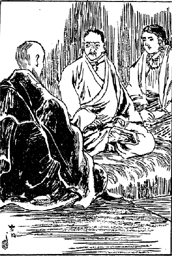
再度の奇遇機先を制す
それから二人は口を
揃えて「まあどこからお越しになりましたか。我々は
紛いもないチベット人ですら、
出入をするに実に
困難を極めて間道でもあれば脱けて行きたいと思う位苦しんで居りますが、それをまああなたはどこからお越しになったか、空でも飛んでお越しになったか」という話。「空を飛ぶような事は知らない、西北原から来た」といいますと「なあに西北原だってこの三、四年このかたは皆その間道間道には兵隊を付けてあるからどこでも通り脱けるということは出来ない。間道から来なければどこにも通って来る所はないのですからどうも空でも飛んでお越しになられたとほか思われません。」「イヤそんな事の出来る
訳がない、道のない所を
難儀して来た」と話しましたが信じないようでした。
私はここ
危機一髪を誤まれば自分の日本人たる事が
顕われてあるいは大なる災害を自分の恩人たる大蔵大臣およびセラ大学に及ぼすかも知れない。
商人という者は殊に利に走り易いものであるから、どういう事から私の事を政府に告げて金を儲ける
算段をするかも知れない。およそ物事は「機先を制すれば勝利は自分に得らるるもの」、この時に当って一つの策略を
運らさなければならんという考えが浮かびました。
そこで私は
殊更に
儼然と
構え込んでさて「どうだお前達二人は誠に立派に暮して居るが、しかし俺の事を政府に告げると随分金儲けが出来るだろう。私もその方がかえって大変都合のよい事があるんだ。私が自身に言うて出ると、なんだか本当の事を嘘の事でもあるように疑われて詰らない。だからお前達二人でダージリンで見たところのジャパン・ラマが
此国に忍んで来て居る。それを私が発見しましたといって願うがよかろう。するとお前達は銭儲けが出来るし私の方も都合がよい。私はもう
括られる用意をして居るから」と鋭くいいました。
すると妻君は少し震い気味、その
良人も非常な驚き方で「どう致しまして、そんな悪い事をして多くの金儲けをしたところでその金が何の役に立ちますものか、それほど私共は悪い人間じゃあございません。喰わずに居ってもそんな事をするのは嫌でございます。たとい
此事が知れて私共の身に災難が起ったところがどうせ
前世の
因縁と
諦めなくちゃならん。こんなに商売人こそして居りますけれどもそういうむさい金を取ろうというような考えは持って居らないのでございます。そんな事をおっしゃって下すっては困ります」となかなか立派な答え。
「そりゃそうだろうけれどもお前にも金儲けが出来、私の方にも便宜を得る訳だから言って見たがよかろう。それともお前達はどうしても政府に告げる気はないのか。」「ないどころじゃない、チョオー・リンボチェ（誓いの言葉）、そういう事は死んでもいいません」という。これがチベット人のラサ府における最後の誓いである。
チョオー・リンボチェというのは救世主宝という意味でラサ府の
釈迦牟尼仏を指していうのです。すなわち釈迦牟尼仏に対し「もし私がこの事を発言するならば死んでよろしい、どうか殺して下さい」というくらいに強い誓いを立てるのです。で、そのチョオー・リンボチェといって左の手を拡げてラサ府の釈迦牟尼仏の居る方向に指して一生懸命に祈るがごとく恐るるがごとくに誓いを立てました。その時の様子はいかにも人を
欺くような
素振は少しもない。全く深い心の底から出て来たとしか見られない。
するとその妻君も同じくチョオー・リンボチェと言って「決してそういう事はしません。たといあなたが告げてくれろとどれだけお
頼みになってもそういうお頼みはチョオー・リンボチェ決して
肯くことは出来ません。」この誓いを得さえすればチベットでは公正証書を取ったよりも確かなものである。そこで私は「そんなら無理に頼む必要もない」というてその事は一段話が
極りました。ここでちょっと
について話して置きます。チベットでは誓いの詞が幾種もあって「
南無三宝」というのが普通で「
母と離る」とて、わが言うことの違えばわが最愛の母と死別れよというて誓うことになるのですが、また地方においてはその各地の
地神あるいはその地方で名高い
仏菩薩を指して誓います。ラサ
府では「チョオー・リンボチェ」というのが主であって、商売の取引上にもいよいよ確定の値段になるとこの詞を出して誓います。これはただ
口先だけでいうので釈迦堂を指して厳格にいうようなことは致しませんですから、商売上とかちょいとした話に「チョオー・リンボチェ」を感詞のごとくに話の切れ目に投げ入れても、それで確実に信用することが出来ない場合も沢山ありますが、しかしいよいよ釈迦堂を指すとかあるいはお経を頭に戴くとかしてこの誓言を発して事が決定した場合に、それを破るのは親を殺すよりも大罪として居ります。
大抵普通の場合に用いる誓いの詞は自分の話を確かめるために感詞のごとくに詞の間に入れますので、婦女子の話には大変誓詞を沢山用います。チベットにおける誓詞の数は私の知って居るだけでも四十五種もございますが、くだくだしいから略します。次に主人は私のただ今の住所を尋ねたから私は今はセラに居るといったところが、主人は少し考えて居りましたが、「それじゃあなたはこの頃大変名高い法王の御殿に出入するセライ・アムチー（セラの医者という意味にて著者の通称なり。ただし本名はセーラブ・ギャムツォすなわち
慧海という）というのはあなたの事じゃございませんか。」「そうだ」といいましたところが非常に驚いて「どうもこの頃は世間ではあなたを
のようにいって居ります。私共も身体が弱いから
酷い病気でも起らないかどうか、一遍お
逢い申して見て戴きたいと思うて居った
矢先でございました」というようないろいろの話が出てそれから大変にその人と親密になった。そこでまた例の大蔵大臣の所に居るものですから
喰物が沢山余って仕様のない事がある。それはやはり大臣方の紹介で是非見てやらなければならん貴族の病人がある。それらを見に行くと沢山な
礼物の上にいろいろ珍しい喰物をくれるです。
そういう物は自分一人で
喰えないからみんな
薬舗と
其所へ持って行って分けて遣る。自分の部屋の留守番をして居る弟子坊さんにも分けて遣る。自分の喰うものはそんなになくっても大臣の所で御馳走があり余る程あるんですから……。それでだんだん親しみを増して来て私の災難を真実に救う原因となったのです。そこで私はやはりその大学の生徒になって居るのですから科目を怠ることは出来ない。折々セラの方にも帰って問答に出なくてはならん。もっとも医者であるから幾分か教官の方でも大目に見てくれて、そう毎日出なくったって
叱言は喰わないんですけれども自分も好きなものですから折々
やって行く。ここで僧侶の一般の傾向及び学者の理想として望んで居るところの事柄、僧侶の人種の区別等についてお話して置きましょう。
三大学にはどこにもチベット人ばかりが居るのではない。モンゴリヤ人それからチベット人とはいわれて居ますけれども、少し人種の違って居るカムの人も居るです。これらは国を異にするに従って幾分か性質も違って居る。チベット人は外見は
温順しくってよく何もかも考えるですが、一体勉強の嫌いな質でごくごく
怠惰な方で、不潔でくらすのも
一つは怠惰なところから出て来たようにもあるです。まあチベット人の坊さんで普通の生計をして居る人ならば冬は本堂にお経を読みあるいは茶を飲みに行く。その間は自分の舎の前の日当りのよい所に
裸体になって、背中を亀の甲のように乾して居る。そうして羊の毛織りの端くれで
鼻汁をかんで、その鼻汁をかんだ切布を頭の上に載せて乾しながら、うつうつと
坐睡り好い心持に暖まって居るざまというものはないです。
年寄ならまだようござりますが、随分若い者がそういう事をやって居るのを見てもチベット人の怠惰であるということが分る。そこへ来てはモンゴリヤ人はそんな事をやって居る者はない。わざわざ遠い所から出て来たのは勉強が目的であるから、非常に勉強するのみならず、問答などの遣り方もなかなか
劇しい。大抵五百人居ればまず四百人までは普通善い方の人になって百人ぐらいしか
屑は出ない。ところがチベット人は五百人居れば四百五十人までは確かに屑の方で、かの壮士坊主なんかというのもチベット人が主なのです。カムの人にもモンゴリヤの人にも壮士坊主は稀であります。
そうしてモンゴリヤ人は勉強もし、またなかなか進取の気象に富んで居るけれども、実に怒り易い人間でちょっとした事にもじきに怒る。というのはつまり自分の種族自慢で、モンゴリヤ人はなかなか立派だ、皆勉強してこの通り大勢博士になって国に帰る、チベット人あるいはカム人とは全く違って居るという高慢の心が非常に強くって、他人に対しても理屈のない詰らない事を非常に威張って怒って居る。そういう点など見ると実にその人の狭量な事を
憫まざるを得ない。そうしてモンゴリヤ人の多数はこんな者で、余程
大人らしゅう構えて居る人でもちょっとした事で腹を立てる。こういう人種は忍耐力をもって大業を成すことはむつかしい。ジンギスカンのように合戦をやって一時
成就する人が出来ても、長くその国の文明を形造ってその社会がますます進んで行くようにするというような充分の力を持って居らぬと思われる。
カムの人は他の者に比すると余程善いです。もっともカムは強盗の本場ですからごく短気であるけれどもモンゴリヤ人のようにちょっとした事でじきに怒らない、なかなかその辺には忍耐力もある。身体の強壮な事も三種族の中で第一等です。義侠心も随分ある。強盗をやるような奴でも、人を救うためには随分熱心にやる人間もあるそうです。セラの中に居る坊さんの中でも、嫌味がなくっていわゆる義侠心に富んで居るという侠気の人間はカムの人に多いと私は観察しました。そうむやみにお
諂などいうのは大嫌いの性質である。
モンゴリヤ人はどうかするとつけたようなお
諂を言い出す。その点においてはチベット人は最も
酷い。カム人でも余程チベット風に染みて
腐敗した奴はともかく、そうでない限りそんな人間はまずカム種族の中から
擯斥されてしまうです。カムの
女子達はどうも余程
情ないようで、愛らしい所はちっともない。チベットの人間は
表面は男もおとなしいように見えて居るくらいであるから、女もまたなかなか表面は優しく見えて居る。ただし
心内に恐るべき剣を収めて居ることは事実である。これがごく大体の気質の分け方ですが、カムの中にもマンカム（地名）もあればバーアもありツァルンもある。その他沢山あって性質が幾分か違って居る点があるが、細かな事はここでは略します。
一体僧侶及び学者の理想として、自分がかくなりたいということを希望して居るのは何であるかといえば、大抵はかの閉ざされた国において名声を高く広く挙げたいというのと、財産を沢山に得たいというのが目的であって、
衆生済度のために仏教を
修行するのではない。自分が苦しくないように、金を沢山得られるように、この世も安楽に未来も安楽に行けるようにというのはまだまだ余程よい方なので、未来はどうでもその学問を利用して名を社会に挙げ、そして沢山の財を得て安楽に暮らせばよいというのが、千人の内九百九十九人までその傾きがあるです。
こういう風になって来たのはどういうものかというに、つまりかの国では僧侶及び学者の価値を判断するには、その学識とか徳行とかあるいは世人をいかに利益して居るかという点から判断するのでなく、その財産の多い
寡いによってその人の
値打が
極ります。それゆえ千両の財産ある学者は千両だけの値打しかない。たといその人が十万両持って居る〔無〕学者よりも尊い智識であっても、その十万両持って居る無学者の方が、かえって社会より称讃を受けて居る。だから金なしではなんの
所詮もない。ただ金これ万事を処するといったようなところに眼を着けて、金を貯える事に非常に
奔走尽力して居る。
それだから僧侶が商売をやるとか農業をやるとか、あるいは職工をやるとかあるいは牧畜をやるとか、いろいろな事をやりますので、それからまた僧侶の本分として俗家へお経を読みに行って、その布施金を畜えるということも大いに行われて居る。かわいそうなのは少しも学資金がなくて勉強して居る修学僧侶でありますが、それとても目的はやはりその一般の風習に化せられて、今のこの苦労が後の安楽を得たいということに向って進んで居るので、決してその苦しんだ事をもって社会を利益しよう、
衆生の苦しみを救う資本としてやろうという志望をもってやって居るような人は、あるいは有るかはしらんけれども、私はそういう結構な人に不幸にして逢うことが出来なかった。
そこでそういう僧侶がずっと二十年間も学問して進んで行きますと、いずれ博士になることが出来る。博士になる時分には少なくとも五百円位の金は掛る。それはどういう事で掛るかというと、その学部一体の者に肉粥を供養しなくちゃあならん。それは
椀に一杯ずつですけれども、その一杯ずつがどうしても二十五銭位ずつ掛るです。その外にいろいろ入用なものがあるからどうしても五、六百円の金は掛る。その金はこの貧乏な修学僧侶には一文でもあるものじゃあないけれども、またその位置に進んで行くと金を貸してくれる僧侶がある。その金満家の僧侶は金を貸し利子を取って、そうしてその人に恩を
被せまた自分も利子を得るという訳です。なぜならば博士になると実際それだけの力のない
バカセでも、その名だけでお経を読みに行くと金を沢山得られるからです。どうなりこうなり二十年の
修行を済まして、博士の名を貰った人はどういう事をするかというと
の奉公をしなくてはならん、その金を貸してくれた人に対して……。まあ都合好く行けば五年か八年で借金は抜けるそうですけれども、そう行かなければ一生奉公するというような詰らん境遇に立つのです。せっかく苦心して学問して、そうしてその虚名を貰うためにまた後の苦心を続けるという、実に社会の
制裁とはいいながらその
制裁に支配されて居るチベット僧侶の愚もまた
憫むべき訳である。僧侶の事はこれくらいにして置きましょう。
さて私は大蔵大臣の家に居るものですから他の大臣たちの家へも折々は行くことが出来た。その中に宰相の一人でショ・カンワ（家の名）という人がある。元来宰相という名前の者はチベットでは四人、また大蔵大臣も三人ある。けれども真の大蔵大臣は一人で、一番古くやって居る者がすべてその責任を帯びてやりますので、その他はまあ次官のようなものです。宰相もまた同様で一番元老の人が実際の権力を持って居るので、その他は次官のようなものでほとんど自分の意見の行われるということはない位。
このショ・カンワというのは宰相中の二番目であって私もたびたび遇って話をしましたがその方の娘がユートという華族の公子に嫁に行くことになった。でその結婚式を実地に見ました。ラサ府の中でも殊に正しい結婚式でございますからその事についてお話したいと思います。
結婚の事を話す前にちょっと、地方とラサ府の結婚の遣り方の違って居ること、それからかの国の夫婦の関係および権力等について
予め言って置く方が順序かと思います。一体結婚の礼式は地方によって大変に違って居るから一概に言うことは出来ない。これまである西洋人はラサ府までは来ずに、法王管轄のチベットの関所いわゆるシナ領のチベットまで来て、そうしてチベットという名目で公けにされて居る書物が沢山ある。それらの書物の中にいろいろ結婚の事が書いてありますがそれは実際その人の見て来たのもありまた聞いて書いたものもあって確かなものではあるけれども、ラサ府の中に行われてある結婚について非常にくわしく書いてあるものをこれまで見ませぬから、特にラサ府の事をいうのが必要であると思う。
そのいろいろ違って居る点は、その地方地方についていちいち説明しなければ、到底細かい事を言い尽すことが出来ないけれども、そういう事はとても及ばない。また自分も各地方についていちいち結婚の礼式を見た訳ではない。ラサ府で二、三の礼式を見ただけであるからこれについて述ぶるのが私において最も便利である。チベットは世人によく知られて居るように
多夫一妻である。それにも種類があって兄弟で貰うのとまた他人同士が相談して貰うのと、それから最初は一夫一妻であったが、その妻君の権力が強くってよその男を引っ張って参り、自分の古い
聟さんの承諾を得て多夫一妻になることも沢山ある。それでその人倫の
紊れて居ることはほとんどいうに忍びないほどの事もありますけれども、チベット人は
恬として
耻じない。
それで親子三人の場合にその母親が死ぬと、今度は父親に女房を貰うとかあるいは息子に女房を貰うとかして、その一人の女が親子に女房になるということも法律上少しも差支えない。そんなに
紊れて居るからしてどこどこまでも制限がないかと思うとまたそうでもない。
従兄弟同士が夫婦に成ることは犬のようである、兄弟が夫婦になったと同じだから許せないというて大いに世人も
咎めるのみならず、やはり法律上の罪人としてその処刑を受けなければならん。
チベットでは一般にいえば妻の権力が非常に強い。例えば夫が儲けて来た金は大抵妻に渡してしまう。で三人
夫があれば三人の儲けて来た金を妻が皆受け取ってしまい、儲けようが少なかったとか何とかいう場合にはその妻から
叱言をいう。で夫は自分の入用の時分に妻の手から、こういう訳でこれこれ金が
要るからくれろと言わなくてはならん。もし夫が
臍繰金を持って居ることが分ると、大いに妻が怒ってその夫に喧嘩を仕掛け甚しきは夫の
横面をぶんなぐるというのもある。
これはまあ甚しい例で、そんなのは稀ですけれども、一般に妻の権力が強い。例えば自分がよそに行って何かの相談がほぼ
纒まりそうになると「これで私は承知した。一遍家に帰って家内に相談してあれが承知すればそれでご返事を致しましょう」と言うても誰も笑う者がない。自分もやはりそのとおり家内に相談しなければならんという。ですから妻の権力は非常に強いもので、大抵の場合には妻の命令で
商売にも出掛けるというような訳です。三人兄弟で妻を一人持って居る場合にはいずれも妻の気に入ろう入ろうと心掛け、お
髯がないからお髯の
塵を払うことは出来ないけれども、ご機嫌を伺うということはなかなか
力めたもので実に哀れなものです。
しかしチベットにも一夫一妻がある。それらは夫の権力が割合に強い。それからまた一時夫婦になって、即ち自分の好きな間だけ夫婦になって嫌になり次第別れるという結婚の約束がある。そういう女は沢山男を持って居りまして、いずれの男からも金を
貪り取るという始末にいかぬ奴である。それは田舎では少ないがラサとかシカチェという所には
沢山あるです。チベットにおいて
娼妓とか芸妓とかいう者は大抵こんなものです。こういう細かな事についていろいろいうて居ますとなかなか果てしがないから、まずラサ府の
についてお話しましょう。チベット国人の結婚期はおよそ男女の歳は同一であって大抵二十歳から二十五歳位に至る間に行うです。稀には早婚の者もあって十五、六歳で結婚する者もある。また晩婚の者があって三十歳以後にやる者もある。しかしそれらは例外で普通は前にいうたとおり同一であって、その女の歳が大抵男の歳と同一である。しかし折々女の歳の少ない事もある。晩婚の者は非常に歳が違って居るのもあります。女房に子が出来た場合には、たとい兄弟が五人あっても
阿父っつぁんと呼ばれるのは一番の兄さんだけで他は決して父と呼ぶことを許されない。おじというて居るです。
ところがある欧州人の著書には、チベットでは一番の兄を称して大なる父、その次の者を称して小なる父というとこう書いてある。これは大方チベット人が嘘を
吐いたのを、その西洋人が
真面目に受けて書いたからこんな間違いが出来たのでしょう。小さな父などというて呼ぶことは決して許されて居らない。あるいは私は行かぬ東北のカム地方ではそういうかも知れないが、私の通った地方では決してそんな事はない。ある西洋人は自分が実見せずにチベット人の嘘を聞いて、チベットではこれこれだと書くものですからそんな間違いが出来るので、その著者に対しては誠に気の毒である。
そこで結婚はその娘の自由選択によるということはほとんどないです。すべて父母の随意に出るもので子女はその相談にも
与かることが出来ない。また
其事に
喙を
容れる権利もない。また娘はその親からこういう息子があるからお前行ってみないかという相談を掛けられることもない。全く父母が絶対的圧制で結婚せしめるのです。そうですからこの国では離婚の不幸に遇うことが実に多い。けれどそれはこういう圧制な事をやったから離婚の不幸を来たしたのである、こりゃ注意しなくてはならんというような事は全くない。今でもこの強圧なる風俗は依然として存して居るのでございます。
だが
辺鄙の地方あるいはラサでも随分野合は行われて居る。野合の後にその子女が
予めその父母に告げ、承認を得て結婚の礼式を挙げる者もまた有るです。けれどもそれらはまあ例外の方で、どっちかというとその子女の父母がやるのが一般に通じて居る習慣です。通常結婚期に達して居る男子の父母は、自分の財産および家の系統、階級等に相応した家に結婚期に達して居る娘があると、その娘の父母の家に
媒介人を遣わしてその娘をばどうかくれろと申し込むのです。もしその娘の父母がその媒介人に対し最初に断然と謝絶する時分には、その媒介人がこりゃもう話が成り立たないというて、その息子の父母に告げて結婚は成り立たぬようになるのです。
もしその娘の父母が媒介人に対し「どうにか成りましょうから互いによく話して見ましょう」と返事をすると、媒介人はその後五、六遍娘の家に行って、いわゆる媒介人口をきいて勧めるです。そこでその娘の父母が「それでは娘を遣りましょう」とほぼ承諾しても、まず
卜筮者とかあるいは高僧に判断を乞うとか、または
神下しについてまずその吉凶いかんを尋ねに行くです。自分がよいと思ったから遣るというような事はほとんどチベットでは例を見ることが出来ない。
卜筮者なり神下しがきっとよいといえばそれで
忽ち結婚の相談が成り立つのです。
けれどもその子女の父母はその息子、娘に対してはその相談は全く秘密なんです。どうも非常な圧制のもので、これらの相談中に日本とかあるいは欧米の風俗のように
幾許かの
結納を納めて、そうして財産はどれだけ持って来るとか、あるいは何箇の荷物を贈るというような事は決してやらないです。あるいはまた夫の財産はどれだけで妻の財産はこれこれ、それで婚姻を取り
極めるということもやらんです。その持って行く物にもどれだけという
極りはないけれど、その家に相当して世間の人に誇られる位の物を持たして遣らなければ、娘の親も
耻であるということは承知して居る。貰う方でも娘の母親に対して
乳代を納めるのです。
その乳代というのは娘が育て上げらるる時分に乳を呑まして貰うたその乳代を納めるというので、またその家相当に耻かしからぬように持って行く。これは日本の
結納とは違う。もちろん
何程という内約も何もない。そこで娘と息子の両親は例のごとく
卜筮者あるいは
神下しに聞いて吉日を択んで、いよいよ結婚の礼式を行う
準備をするのです。まずその娘の父母はいつ頃花聟さんの方から
媒介人が出て来るであろうとちゃんと
慮って居る。そうしてその時間の少し前に娘に向って、今日は大層天気も好いからお寺詣りに行こうとか、あるいはどこそこへリンカの宴を開きに行くから、お前は美しく髪の毛を洗わなくてはならんと言い聞けると、自分は嫁に遣らるるためにお
粧りさせられるとは知らずにお
粧りする者もありますが、どうかすると
怜悧な娘は悟って、今まで機嫌の好かった娘はそれと悟って悲しそうに泣き立てる者もあるです。
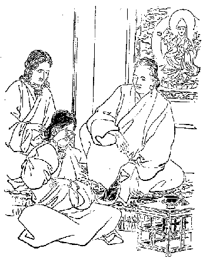
少女両親より突然結婚の事を聞いて泣く
それから両親がです、娘に向って「まあ今日は顔も身体もよく拭き取らねばならん」という。このときにはやはり顔や身体を拭いたり洗ったりするです。チベット人でも洗うことを絶対的に悪いとはして居らんですけれど、一般の風習はまず洗うのを笑う方です。しかし貴族は日々朝起きると幾分か洗う。その洗い方が面白い。ついでに申して置きますが、まず
下僕なり
下婢なりが湯を
柄杓に汲んで持って来ると、それを両方の手の平を
凹めてその湯を受けて、一旦口に含んで口から手の平に吐き出しつつそれで顔を洗います。口の中の湯がつきるとプップッと
唾を吹っ掛けて洗うというその遣り方が実におかしいです。もっともまた
金盥に水を取ってすっかり洗う人もありますが、唾を吹き掛けて洗う先生たちが随分ある。
それはさておいてまず娘は何も知らずに今日は遊びに行けるというので大悦びで、頭の毛を洗い古い
櫛で頭の毛を非常によく
梳いて居ると、時分を計らって
媒介人が出て来ます。あるいはその前に来て花聟さんの父、母から贈ったところの髪の道具を
窃に娘の父母に渡しますと、娘の父母はその物品を娘の
許へ持って来て「お前のその櫛は大分古くなって居るから
其櫛を棄ててこの新しい良いので梳くがよい。ここに良い油もあるからこれで立派にお
粧りするがよい」という。で、お化粧が終りますとその父母は娘に向って始めて、こういう訳で、結婚の約定が成り立ったからお前はこれから
某の許へ嫁入に行かねばならんということを告げるのです。これはラサ府およびシカチェその他都会の地では一般に行われて居ることです。
前にもちょっといった通り稀には
敏捷な娘はその結婚のために髪を洗うということを知って泣いて髪を洗わないのがある。「私は行くのは嫌だ。
阿父つぁんや
阿母さんは嘘を
吐いて私を厭な所へ遣るのだ」といって泣き立てる場合もある。そういう時にはその娘の友達が前から来て居りまして巧く慰めて
強いて髪を洗わせるです。
いよいよ嫁入の支度が整うと娘の父母は
送嫁の宴会を開かなければならん。その宴会の期限はその家の貧富の度に従って長短を異にし、あるいは一日、二日ないし五日、十日また半月に渡るものもある。この宴会の間において娘の父母の親類、知合ならびに娘の朋友などはみんな贈物をする。その贈物はその人の貧富及び親疎の度合に従って違いますが、そのうちには金銭もあり衣類あるいは飲食物もある。その祝い物を贈って来た人にはまずチベット流の茶と麦の冷酒を飲ませる。チベットでは酒を
煖ためて飲むということは全くない。で前に言いました通り茶と酒は終日終夜絶間なく飲むのです。即ちこれが最も幸福の状態チャ・チャン・ペンマ（酒と茶とこもごも飲むの
謂なり）といって、前にも説明したようにチベット人の幸福の境涯の状態を現して居るです。で酒の
肴というようなものは用いない。
日中後の食事の時分にはまず
麦焦しと肉を出す。その肉は大抵ヤク、山羊、羊の肉を多く用い稀にはラサ府では豚の肉を用いる者もある。牛肉などはほとんど用いない。殊に婚礼の場合には用いない。その料理の仕方は生肉、乾肉、
煮肉の三種で焼肉は礼式の時に用うることを許さない。で大抵肉は油と塩とで煮るのですがあるいは水と塩とで煮るのもある。この三種の肉と共にツー即ち
乾酪、バタ、砂糖の三種で拵えた
擬製豆腐のような物を与えるです。それを喰い終りますと米飯にバタに砂糖と乾葡萄と小さき柿とを混ぜた物を
饗い、夕飯あるいは終宴の時分には
卵饂飩あるいはシナ料理を御馳走する者もある。
こういう風で三回あるいは四回の美食を日々に
供しますので、その間にも茶と酒とは絶えず飲ませ、その飲食の間にはあるいは面白い話をします。チベットの舞踏は俗謡を唄って舞踏をやるです。舞踏は足を揃えて歌に調子を合わせ庭を踏み鳴らして跳り立てるです。紀律がちゃんと立って居ってちょうど
を見るようです。けれどもともと男女が入り混ってやるものですから、その間に幾分か愛情も籠って随分面白そうに見えるです。楽器はダムニャン（チベット絃）というのを弾じてこれを
謡と足拍子に合わせる。男女幾十人が
数珠の環の
回るがごとく歓喜に満ちて踊り巡るのですが、わが国古代の
歌垣もこんなものかと思われます。こういう宴会はその家の交際の多少と貧富の度合に従って、時間に長短のあるのは前にいうた通りですが、
媒妁人が迎えに来てその翌日すぐ嫁入りするというのはごくごく貧しい交際のない家の事です。
さてその後幾日か経っていよいよ聟さんの家に行くというその前日になると、花聟さんの父、母はその
媒妁人と自分の代理者とそれから出迎えの者を十数人（貧富によって多少の差あり）嫁の家まで迎えに遣るです。で媒妁人と代理人とはまず花嫁の父母にヌーリン即ち乳代として若干の金を与えます。多いのは日本の金で千円あるいは五百円、少ないのは二、三円のもあるです。しかし娘の父母はこれをじきには受けない。まず辞退して押し戻す。それを媒妁人が無理に勧めて受けるようにさせる。
中には絶対的に辞退する父母もありますが、その場合に娘の父母のいう言葉は「我々の可愛い娘をあなたの方に上げるのですから、決して乳代を貰うというような事は私共は願わない。ただあなたの方へ遣ったこの娘をあなたがたが愛して下すって、末長くこの子があなたの宅で幸福を受けるようにさえして下さればそれで充分です。私どもは切にそれを望む」というのです。しかし大抵は一旦辞退しても強いてこれを受けさすのがほぼ通常になって居る。それと同時に娘の結婚式場に用うる衣服のすべてと
を受けるのです。その結婚玉瑜というのはラサ府の女の飾りとして
額際の正面に着けられてあるものです。それは人の女房になった
証だということですが、ラサ府ではそれがはっきりと分っていない。結婚しない人でもやはり飾りに用いて居るです。ところがシカチェ及びその付近の地方では、結婚玉瑜を頭の後の頂上に着けてありますから一目見て人の妻たることがじきに分る。それでもし不幸にして離婚になると、その男は大いに怒ってその女の結婚玉瑜をその頭の飾りからしてひん
毟ってしまう。むしってしまえばそれで離婚ということが
極ります。
三行半の
暇状を出す代りにこの結婚玉瑜を取ってしまうのです。
その他に首飾環、胸飾環、
瓔珞、
耳瑜、耳飾塔、腕輪、指環等の粧飾品で、大変金の掛って居るものが沢山有るですけれども、それらはみな娘の父母がその女子に与えますので、式場に用うる衣服、帯、下着、
履の類だけを花聟の父、母から贈って来るです。で、その贈って来た物は善くっても悪くっても式の時はそれより外のものを着ることを許されない。それから嫁を迎えに来た媒妁人とその代理人は、その夜嫁さんの家に泊って酒宴を開きそうしてその喜びを尽す。その
宴がなかなか面白い。
まあちょっと酒を飲ませると飲まされまいとの合戦のような騒ぎです。花聟さんの方から来た媒妁人と代理人とは、その夜は充分用心して決して多量に酒を飲まないです。なぜそんなに用心をして居るかというと、それはこの国に一種奇態な風俗がありますので、その奇風というはもしこの夜沢山酒を飲み充分熟睡して前後知らずに眠ってしまうと、花嫁の家に居る朋友とかあるいは親類の者がその寝て居るところを
窺って、何か彼らの持って来た内の一つを盗む。それは良い物でも悪い物でも構わない。で、その盗んだ者は昨夜はうまく盗んで上げましたといって翌日皆の者に示します。すると大変です。盗まれた人はその
としてチベット銀二十タンガー即ち日本金五円をその盗んだ人に遣らなくてはならない。こういう奇態な習慣があるものですから、
媒妁人らは充分注意してなるべく酒を飲まないようにする。けれどもまた花嫁の朋友とか親族とかいうものは巧みに勧めて酒を飲ませようと掛る。そこで飲め飲まぬとの争いがほとんど戦争のようになりますが、しかしその酒をすすめる言葉および動作はすべてこの国の古代から伝わって居るところの習慣によって、巧みにすすめなくてはならん。もし古代の習慣に違う時分には、その花聟の媒妁人あるいは代理人は「あなたがたは古来の習慣を知らない。礼式を知らない。いやどうも智識がない」といって大いに
罵るです。それは大変花嫁の家の耻になるという訳であるから容易な事ではない。
それからまた花聟の側の人たちも酒を辞退するにそれ相応の文句がある。酒は百毒の長とか、いや酒は喧嘩製造の道具であるとか酒を飲むと智恵が失くなってしまうとか、種々の
比喩あるいは教訓、
唱え
言をいって辞退しないとその媒妁人から大いに
罵倒される事がある。それからまた花嫁の方で出してある酒の
味がまずいとか肉が良いとか悪いとか、その他食物の調理の仕方が
旨いとかまずいとかいって大いに論戦して果てしがつかんというような事もある。で、どっちが勝ったとか負けたとかいって誇り合うのを結婚の式に伴う普通の事の心得、花嫁の朋友親戚あるいは近隣よりいわゆる新聞種として世間に伝えられるという訳なんです。
いよいよその当日になりますと娘の父、母は朝早くからまず送嫁の酒宴を開き、そして古教派いわゆる赤帽派の僧侶をして、その村の神々及び家の神々を祭らしめる。その祭典の趣意はその神々に対していいますには「今度
某家の娘が某方へ嫁入を致します。ついては村の神様ならびに家の神々、どうかこの娘にお暇を
遣わし下さるよう、この娘を
余所に遣ったということをお怒りなされて害を与えられぬように願います。その代りにお経を読み供養をして今日お暇を貰うところの慰みを申しあげます」という次第で、この法式は大抵その僧侶の住する寺で行いますので、これと同時にチベット古代宗教のいわゆるポン教の僧侶をその家に招いて、その家ルー（龍王）、ルーというのはチベットではその家の財宝を
司どって居る神さんである、殊に龍王がその家の運をよく守って居るものであるから、もしその龍王がその家に対し何か怒るような事でも出来るとその家の財産が失くなってしまう、とこういう信仰がありますので、そこでその龍王がその家の娘に大変愛着してその娘と一緒に花聟さんの家に行ってしまう時分には、その娘の家はじきに貧困に陥るからその娘と共に先方に行かないような方法を
運らさねばならぬ。
その式に用うる経典の言葉が面白い。これはポン教の経典である。その文句は大抵皆どこでも一つ事で「その娘の嫁入りすべき家は決して我が家のように幸福なものじゃございません。また娘御と共にあなたに行かれるごときは決して
龍王として為し給うべき行いでない。よろしくこの
家にとどまってこの家運を守り給えば
長えに
龍王の
享け給うべき幸福は尽きることはございますまい」という経文を読んで
龍王に対し盛大な供養をするです。こういう事は
畢竟古代の習慣上の礼式というばかりでない。前にいった通り、もしその
龍王にしてその娘と共にその家を出てしまいますと、実にその家が貧困に陥るであろうという堅い信仰をもって居るところからこういうことを行いますので、その供養が終って次に
その娘に対するところの
戒告者というものがある。それはまず花嫁の前に立って格言で組み立てたところの
戒めを告げるのです。その戒告者としてはその戒めの文句を暗記して居るくらいな、少し道理の分った人間を雇うて来てその人に戒告せしめるのです。その戒告の文句は大抵
極って居る。また
至極通俗に出来てどういう人にも
解し得られるようになって居る。その言葉は「先方へ行ったならば何事も親切に勉めよ。目上の人に仕うるのは女の道であるから一旦他家へ嫁いだ後はその家の
舅、
姑に従順に仕うることはもちろん、夫には最も親切になお夫の兄姉等にもよく仕え、夫の
弟妹などは家の弟妹のごとく可愛がりその上
婢僕は自分の子供のごとくによく
憫んで使ってやれ」とこういうような事をいいます。
その中へ
譬なども入れてごく感心するように戒めます。その事が終りますと今度はその父、母がまた正しくその場に坐り込んで同様の事を告げる。それはほとんど泣きながら告げて居る。親族、朋友等もまた涙ながらに花嫁の前に
跪き、その手をとって
懇ろに同じような事を戒めるがごとく勧めるがごとくにいうのです。これらの式が終っていよいよ花嫁はその家を出ることとなるのであります。そこで花嫁が花聟の家に持って行く財産は貧富
貴賤によって一定しないが、富貴な者は自分の
荘田を送り貧賤なる者はその度に従って多少の衣服等を持って行く。
で、その家を出ます時分には花嫁は大抵大いに泣き悲しんで馬に乗ることを
肯じない。地にひれふしてほとんど立つことが出来ない。すべてその状態は自分の父母の家を去ることを惜しむところの真情が顕われ居るのです。これらはただ礼式に泣くのでなくして、真実に長く育った父母の
許を去るに忍びないで泣きますので、その場合には朋友らが
介錯をして強いて馬に乗せるです。で馬の
鞍なども西洋風のとは違い日本の古代の風によく似て居る。なかなかチベット婦人は馬によく乗るです。乗るにも決して
鐙の紐を長くして乗らない。低い
椽に腰を掛けたような具合にごく
鐙の紐を短くして足を折って乗って居る。男でも女でも皆乗り方は同じです。私共も始めは大変に困りました。長く乗って居ると足の骨がビリビリ
疼んで来るです。
さて花嫁さんは無理に馬に乗せられていよいよ嫁に行く道に出る。その花嫁の飾りは身には花聟の家から贈って来た衣服を着け自分の父、母より与えられた頭飾り、腕飾りに至るまでの装飾品を着け、そうして頭から顔の部はリンチェン・ナーンガ（五宝布）即ち青黄赤白黒の段だら織になって居る羊毛布をもって被うて居るです。だからその顔はどんなのか見ることができない。そうしてダータル（
吉祥幡）を花嫁の首の後に立ててある。その吉祥幡というのは五色の薄絹で造り、ちょうど我が国の寺堂の
幢幡形の小さなような物です。長さは一尺二寸程の大きさに造ってある、これはつまり吉祥すなわち幸福を招くという意味で、花嫁の首筋の後に立ててあるんです。
花嫁を迎うる幾多の人と花嫁を送って行く幾多の人と、いずれも乗馬で花嫁を率いて花聟の家に向って行く。その道筋において花嫁の親類あるいは
知己の人々が、その所々において都合三回の送別の酒宴を開くですけれども、道の長短に従って三里一回あるいは五里一回、短い所は二、三町でやる所もあるです。そこでまた花聟の家および
親戚の人々も道筋の各所において、都合三遍の歓迎の宴会を開く。すべて六回ずつの送り迎えの宴会を経て花聟の家に達するのですけれども、この行路の送迎の宴会においては彼らは充分に酒は飲まない。それは彼らはこの花嫁を安全にその花聟の家に伴って行かねばならんという義務があるからして、たとい
強いられてもちょっと飲むだけ、また片方でもちょっと挨拶に強いるまでの事です。
一体チベットの接待の風は一方は非常に遠慮し、一方はむやみに勧めるのが一般の風俗で、じきに喰ってしまうとあの人はシナ人のようで馬鹿だという。その道路において開く宴会はあるいは村落の家の内で開くこともあり、あるいは自分らの知合の家を借りて開くこともありますけれども、多くはその原の中の便宜な所へ別にテントを設けてそこで宴会を開くというのが一般の風習です。さて花嫁は花聟の門前に達したからというて直ぐにその堂へ上るんではない。むこうから迎えに来た訳ですからちゃんと入ってよい筈ですけれども、ここにチベットの奇々怪々なる風俗があって、そこへ入って行こうとしても花聟の家では堅く門を閉じてあるから入ることが出来ない。私は実にこの奇なる風習には驚いたです。
花聟の門前には多くの人が立って居って、その人らの中には妙な事をやる人間がございます。それは極った事で、この花嫁に付いて来たところの悪魔あるいは
疫癘というものがある。その悪魔あるいは
疫癘を八つ裂きに裂くところのトルマ（秘剣）を自分の右の手で隠して持って居るです。それは何で拵えてあるかといえば、
麦焦しをバタと水とで
捏ね固めてその上を植物の赤い汁で染めてある。その形は立法三角で
剣の形に似て居る。その剣は僧侶が秘密の法を封じ込んで拵えたものだそうです。
その剣を持って居る人は誰か分らないがその人らの中に居りますので、この人は花嫁の門前に到着するのを見ると、その
隙を狙って花嫁の顔にその剣を投げつけると同時に、門の戸を開く者がありますので飛ぶごとくに門内に飛び入ってしまう。その人が入るや否や以前のごとくその門の扉が締められてしまう。どうもおかしなことで、花嫁の顔には赤い汁の
掛って居るバタと麦焦しが
細かに砕けて奇麗な着物に掛ってしまう。もっとも花嫁さんの顔は、先にもいった通り
五宝布で蔽われて居るから顔にはじかに掛って居ませんけれども、沢山におカラが掛ったような風になって居る。なぜこんな奇態な事をやるかというとそれはその理由があるのです。
なぜかというと花嫁はその故郷の神様およびその家の神様の守護を失ってしまったのである。というのはお
暇を貰って出て来たからです。ですから自分が花聟の家に来る時分には故郷や家の神様は付いて居らない、つまり花嫁を護る神様がないから、途中において沢山の悪魔や
疫癘が付き
纒うて花嫁に従い、そうして花聟の家に入って来て嫁と聟とに害を加えるようになるから、これらを追払うためにまたこれを征伏してしまうためにこの
秘剣を
擲つのです。ところで擲った人はなぜそんなに門内に逃げ込んでじきにまたその門を締めるかというと、この人はもし
其剣を投げてぐずぐずして居ると花嫁の送りの人に
捉まる恐れがある。捉まると大変です、この時またチベット銀二十タンガー（元）を罰金としてその捉まえた人に払わなくちゃならぬ習慣があるものですから。そこでじきに逃げ込んでしまうのです。
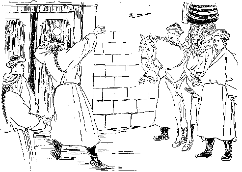
秘剣を花嫁に放擲す
そうすると
予て門内に待ち受けて居る人のいいますには「この門に対してシェッパ（讃辞）を与えよ。さすればこの門に入ることを許しましょう」という。この讃辞というのは種々の美麗なる言葉、豊富なる名詞をもって
佳瑞祥富の縁起を讃説するのである。で、その花嫁の側の讃説者のいいますには「讃辞を述べようと思ってもカタ（薄い絹にて冠婚葬祭の場合の贈物）がないからどうも仕様がない」と答えますと、門内の人は門の間からカタの
端切を示して「さあカタを」といってちょっと示したかと思うその瞬間に、じきに門内に引き入れてしまう。なぜこう機敏にやるかと言いますと、またこれにも理由があるので、そのカタの先を花嫁の側の人に捉えられると、二十タンガーの罰金をその握った人に遣らなければならんという奇習があるからである。
そこでそのカタを見ただけで、讃説者はうやうやしく構えて「この門は宝蔵の入口にして金の柱に銀の扉あるいは門の内には七宝自然の宝堂、玉殿あり、
其殿に在する方々は神か菩薩のごとき真善美を備え給うなり。かかる美しき門に入るは実に無上の幸いと喜びの基を成すの始めなり」というような事を多く述べるのです。その讃辞を述べ終りますとギイーとその門が開かれるのです。ここでちょっと述べて置かなければならん事がある。時としてその花嫁が花聟の所に出て来る中途である村落を通って来ると、その村落の人のために花嫁を奪われる事がある。その奪う村の人の口実として言いますには「あの女は自分の故郷の守護神なしに出て来たから多くの悪魔や
疫癘が付き添うて来た。そうしてこの我々の村の中へ入ったから我らの村落に損害を与え本年の収穫に大害を与えるに違いない。だからこの花嫁を
として奪わなくちゃあならん」といって引っ捉まえるです。で、なかなか渡さない。すると花嫁の随行者はその
要償金の
幾許を与えて、まず安全の通過を
希いここに始めて通過し得らるるのです。もちろんこれは都会には行われて居りません。つまり
辺鄙の地に稀に行われて居るので大抵はそういう事はしない方が多いのです。どうか憎まれでもするとそういう事をやられる。さてその花聟の家の門が開かれると同時に、花聟の
阿母さんは酸乳とチェマとを持って来るです。チェマというのは
麦焦しとバタと砂糖と小芋とを混ぜたものです。小芋はチベットで出来る自然生のもので、大きさは小指の先ぐらいで芋と同じ味、ごく堅くってうまいものです。この四つを混じて拵えたものをチェマという。チベットではこの酸乳とチェマとは非常な祝意を表するために用いるものです。
そこでこの二つの品を花聟の母は花嫁を始め送り迎えの人々に少しずつ遣りますと、彼らはいちいちこれを手の平に受けて
舐るです。
其式が終ってからその母の案内に従って堂内に入って行く。ここでまた酒宴が開かれる。ところで古教派の僧侶はまたその村の神様、家の神様に向い「この花嫁は某から貰い受けて今日より我が家の人となりました。ついては村の神様ならびに家の神様は今日以後この花嫁の
庇護者とならんことを
希います」と告げるです。そこで酒宴が開かれますと、花聟の
阿父つぁん
阿母さんは花聟および花嫁
媒介人ならびに送迎人らに対して例の一筋ずつのカタを与える。これは花聟と花嫁と夫婦の語らいが確定した事を意味して居る礼式なんです。
花聟と花嫁は宴
酣に至らずして外の室に移されてしまう。この始めの酒宴で日本のように三々九度というような
交盃の式はない。これらの送り迎えの人々および親類の人々などは依然として、やはり花聟の家に止って日々酒宴を開く。で、その間には花聟の親類、知己、朋友らが皆相当の贈物をもってその宴会に招かれて来るです。その宴会の短いのは二、三日長いのは一ヵ月に至ることがある。チベット人はこういう宴会とかあるいは遊びに行くとかいう事にはごく気長いです。それからチベットの御馳走というのはごくしつこい物ばかりで、シナ人よりも
脂気の多い肉のような物ばかり喰うです。あっさりとお茶漬に
香の物というような御馳走は夢にもいただけない。そういう重くるしい御馳走で長い宴会を開く。その宴会が終って送り迎えの人々が帰った後では、なお数日間は花嫁の朋友下女などが花聟の家に止って居るのが例になって居る。
もっとも有福者は花嫁の家から一生使うべき
小間使を添えて来るのが大抵通常である。これで全く結婚の事が終ったというのじゃない。その後一ヵ月あるいは六ヵ月あるいは一ヵ年を経てから花聟と花嫁は共にまた花嫁の家に出て来るです。その場合には沢山な人は一緒に来ませんけれども二、三人の人を引き連れて来て、花聟は大抵花嫁の家に止まり幾日かの後自分の宅へ帰ってしまう。で花嫁はその生家に止まる事あるいは一ヵ月ないし三ヵ月、それは花嫁の望みに従って時日の長短はいろいろになって居る。しかし何月何日逗留して居るということは花聟に約束するですから、花聟はその期日になると迎えに来て家に連れて行くです。
そこでその花聟に弟があると大抵その結婚した後六ヵ月あるいは一ヵ年を経て、家内だけでちょっと礼式を挙げて結婚するです。大抵兄はその礼式の時分にはどこかへ旅をするとか遊びに行くとかして居る留守に、礼式を挙げて弟と結婚させるのもある。それは母親が媒妁をするのです。弟が三人あるいは五人あっても同じくこういうような方法でちゃんと結婚させます。あるいは花嫁と弟らと随意に結婚してその礼式を挙げないのもある。まずこういう風で結婚の礼式は終ったのである。チベットではこの多夫一妻を称してサースンというて居るです。サースンに子が出来た時分には誰の子か分らないけれども、その
真実の
阿父つぁんというのはその
真実の親の誰たるに拘わらず、まず一番の兄をもって父と呼びその他はおじと呼ぶことは前にいった通りである。
こういう奇怪なる家庭にすべて兄弟が同時に住んで居るということが少ない。大抵その中の一人が家に止って居ると、その他の者は商売に出掛けるとかあるいは官吏ならば官用を帯びて出掛けるとか、いろいろの方法で外に出るようになって居るです。この多夫一妻の風俗は今でもチベットでは実に盛大であって、その国人にはその事は大いに善良であると信ぜられて居る。稀に外国に出て行ったところの商人らはこの風俗の
可かないということを知って、いろいろに言う者がないでも無いけれども、それは昔からルクソー・ミンズ（古来習慣がないという意味）という一言で皆破られてしまう。
この言葉は殊に強大なる勢力をもって居って、この一語の下に尊き真理も
蹂躙せられてしまう。かかる奇怪なる結婚式と夫婦の関係はチベット古代のポン教より生じた習慣で、今日までルクソー・ミンズの一語のもとに真実仏教の
這入ったる後もこの習慣が盛んに維持して来たのである。いな盛んに伝わって来たのである。もちろん仏教徒は社会的問題に注意する者少なく、ほとんど古来の坊さんは皆隠居主義でヤマ仏法ばかりやって、本当の社会に活用する活発発地の真実仏教の真面目を
顕揚することに注意せず、こういう悪い風俗習慣を打ち破ることをも
為さずして、その儘に放って仏教本来の面目に似合わぬ事をやって居ったのです。これらは古来の仏教坊主の欠点であって決して仏教そのものの欠点ではない。
十月上旬ラサ府の住居よりパルコル（廻道）へ指して出掛けました。ここはラサ府での目抜の所で、罪人などあるとこの道の辺に
晒します。その晒し方にもいろいろある。ただ手錠、
足枷を
箝めて晒して居る者もあるがこの時は大変に晒されて居るのを見たです。およそ二十人ばかりも
彼方の辻、こなたの柱に一人ずつ晒されて居った。いずれも立派な着物を被て居る。その首には三尺四方の板で首の入るだけ穴の
穿いた、厚み一寸二、三分のごく重い木で拵えた板が
箝めてある。板は二つに割れるようになって、
其板に二つの
桟があってその桟をもって二つの板を合せて、そうしてそこへ錠を
卸したもので、その板の上の紙にチベット語で罪状が記してある。それは何々の罪状によってこの者は幾日の間こういう晒し者にして、その後あるいは
流罪あるいは叩き放しにするとかいうような事なんです。叩くのは三百より七百位まであります。
なかなか沢山記してございますからいちいち読む訳には行きませんが一つ、二つ読んで見ますと、ラサ府ではなかなか名高いテンゲーリンという法王の居らない時分には法王となり得べき資格のある候補者の寺の人らである。その寺に居る人たちの中には俗人もあれば僧侶もありますが、元来この寺の主人をテーモ・リンボチェといい、その執事をノルプー・チェリンという。その執事が今の法王を
咀い殺そうとして大変な秘密
祈祷を始めたそうです。その秘密祈祷は仏教上からやったのでなくって、ポン教の法によって法王を殺すところの
咒咀を行い、その出来上った咒咀の紙を
履の台に詰め込んで、法王に良い履を拵えて上げたそうです。
で法王がその履を穿くとご病気が起ったとかいうのでだんだん
詮議の末その履の中を調べて見ると、ポン教の
咒文が入って居ったという。それから事が破裂してその事に関係ある人が皆捕われることになって、テーモ・リンボチェという方もやはり
其事に関係があって捕えられた。あるいは世間ではテーモ・リンボチェのいいつけでノルプー・チェリンが法王を殺そうとしたのである、法王が死にさえすればこのテーモ・リンボチェが法王の位に登られるという見込があったからああいう悪い事をしたので、実に憎むべきラマであるといって居る人もある。その真偽はとにかく、なにしろ今の法王が位に
即く前までこのテーモ・リンボチェが法王であったのです。
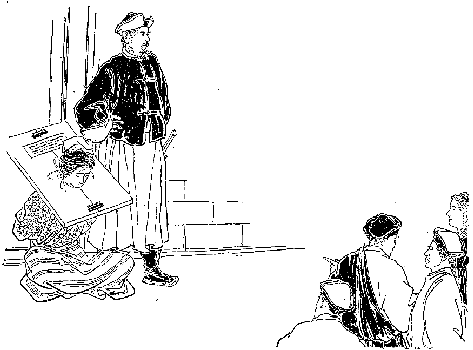
悲惨なる美人の晒し者
その時代にノルプー・チェリンという人が総理大臣の権を握って大変に圧制をして、
辜のないのに沢山な人を殺した事もあったそうですがそれは全く事実である。で一旦今の法王にその位が帰すると、その時の有様を委しく告げた者があるので、法王も内々このテーモ・リンボチェならびにノルプー・チェリンに対しては善い感情をもって居なかったそうです。
そこでこの履を献上した事から皆が入牢するようになったので、テーモ・リンボチェはもはや獄中でお
逝れになったが、ノルプー・チェリンはまだその時分には石牢の中に放り込まれて居った。その石牢の上の方には窓があって、重い罪人ですからその窓から食物を入れますので
苛責をする時分にはその窓から出入をするようにしてある。そうですから容易に
迯げることも出来ずその石牢の中で苦しんで居るので、折々この世の日影を見るような事が出来ると、必ず打ち叩かれるか恐ろしい
拷問に遇わされるそうです。その拷問の仕方はどうであったかその当時の有様を見ることが出来なかったから知らんけれども、聞いただけでもぞっとする程の拷問である。
その拷問の仕方は、まず割竹を指の肉と爪の間に刺し込んで爪を
剥して、そうしてまた肉と皮との間へ割竹を刺すのです。それは十本の指とも順々にやられるので実に血の涙を流して居るけれども、ノルプー・チェリンは、これは自分の
仕業［＃ルビの「しわざ」は底本では「しわぎ」］であって決してテーモ・リンボチェ即ち自分の主人の命令でやった訳でないと
強情を張ったそうです。ところがいやそうではあるまい、主人の
吩付でしたのであろうと非常に責めても
肯かなかったという。
既にテーモ・リンボチェが在世の時分に、その苦しみを受くる事をよくご承知になって居るものですから、全く自分が
吩付たのである、彼は私の命令を奉じてやったのであるから彼に罪がないといわれたという。それでテーモ・リンボチェは執事に向って「おれはもうこうこういって白状したからお前もその通り白状しろ」と説き勧めると、ノルプー・チェリンは「あなたは尊いラマである。一時の
嘘で私を救うような事をしてくれてもとても駄目である」といって少しも承知せずに苦しんで居る。これだけの苦しみを受けてもまだ白状しない。私がラサ府に着いて居る時分にはそんな責苦を受けながら既に二年の
星霜を経たという。
それでも自分の主人に対し一言もこうであったといわぬところを見ると、全くテーモ・リンボチェはその事に
与らなかったかとも思われますけれども、あるいはまたノルプー・チェリンのためにはテーモ・リンボチェは真実の兄さんであるという。して見るとその兄に対して罪の及ばぬように保護して、自分がその罪を
被ったものか知れませんけれども、とにかくそれだけの非常なる苦しみを受けながら、なおもって自分がその拷問を忍んで居るという忍耐力と、自分の守るべきところを守って居る点においては、世人が実に
罵詈讒謗を極めるに
拘わらず、私は
窃に実に可哀そうなものだと思って同情を表して居りました。
そこに
晒されて居る人達は皆ノルプー・チェリンの幕下の者で、既にその事に関係あるポン教のラマで死刑に処せられた者が十六人、その外
流罪になった人数はよく分りませんが、大分に沢山あったようです。今ここに晒されて居るのは流罪になる者が半分で、その半分は三日あるいは七日晒されて後に、柳の太い生棒で三百あるいは五百なぐられる者であります。私は現在の世の中に地獄が現われて居るかのごとく思われ、その人の心事を察して気の毒に思いつつ向うの方に廻って参りますと、
釈迦堂の南西の隅の日当りのよい所、最もパルコルの中の道の広い所であるがそこの石の上に
が居る。その貴婦人はやはり前に見たごとく三尺四方の厚い
首枷を
箝められて居る。その首枷が
柔弱い貴婦人の肩を押え付けていかにも苦しそうに見えて居る。で頭には小さなブータン製の
山繭の赤い
頭掛を懸けて、少し
俯向き心になって眼を
閉って居られるです。その端にはこの貴婦人を警護して居る巡査のような者が三人ばかり居る。
麦焦しを喰わせるものと見えて麦焦しの
入物がその端にある。また差入物というような訳と見えて少しよい食物もそこに置いてあります。その食物はいちいち人から喰わして貰わなくては、自分の手はやはり手錠を下されて居るからもちろん
喫べることは出来ない。かかる
柔弱い尊い婦人は誰であるかといいますと、これはこのチベットでは一番旧い家として、そうして貴族中でも最も
利者として世人の尊崇を受けて居るドーリンという名家の令嬢であったです。
その貴婦人はノルプー・チェリンの夫人になられた方です。その夫のノルプー・チェリンが石の牢の中に居られる前に、少し
寛やかな牢に入って居られた。その牢は牢番に少しの金を与えればそこへ逢いに行くことも出来る。それゆえにこの夫人は何か御馳走をもって自分の夫に逢いに行って、泣き悲しみながらいろいろの話をせられた事が発覚して、この夫人もやはり牢屋の中に入れられて居ったが、今朝牢屋の出口で柳の太い生棒で三百ほど
嬬弱い
臀部を打たれて歩けない程になって居る。その苦しい中でこの
首枷を掛けられてそうして道端の石の上に晒されて居るという。
もう人事もどうやら無さそうで実に見るからが涙が溢れるような次第であったです。しかるになお哀れを増しますのは、その端に見て居るところの野次馬連ばかりでない、貴族らしい人達も一緒にその夫人の首枷に貼り付けてあるところの刑状を読み立てて居る。この女はこういう罪があって幾つ幾つ棒で打たれてここで七日間の晒者、この後はこういう所へ流罪になって、
其島でまた手枷、足枷で牢の中へ縛って置かれるのであるというような残酷なる宣告状です。それも声を発せずに読むならばよいが大きな声で読むばかりじゃあない。憎らし気に
嘲って居る。「ざまを見やがれ。おのれが前に人を
苛て
酷い事ばかりしやがったから今日のざまを見ろ」というような口調で野次馬連は
罵り貴族達は
冷笑って居る。
その様は大いにその不幸に落ちたのを見てかえって快楽を得たような顔をして居る。その薄情さ加減、その憎むべき挙動というものは、かくもチベット人は不人情な者かと思って実に怒らざるを得なかったです。この今
罵詈をして居る人間いわゆる、
冷笑って居る人間は定めてノルプー・チェリン夫婦が総理大臣であった時分には、へいへいいってお髯の
塵を払った奴に相違ない。そういう人間がこの哀れむべき有様を見て
不便とも思わずに笑って居るのを見まして、私は実に人情の軽薄なることをそぞろに感じたです。
よし罪があるにしても決してその人を憎むべきものでない。いわんやこの婦人には何の罪もないのである。政治上の関係ある家と家との交際上から敵味方となって居る。その敵の圧制から罪なき夫人までがかくのごとき悲惨な目に遭って居るのだと、その内実を知って居る者にはいかにも気の毒で堪えられない。で道々感じつつ一首の歌が出ました。
咲きそむる花にちりゆく花にやよ
あはれくみしれ露たもつ身は
それで帰って来て前大蔵大臣に遇って、一体今日はかくかくの者を見て大いに可哀そうに思って帰ったが、ありゃ一体どういうものかと尋ねたら「さあどうも気の毒なことでございます。実に威勢
熾んな時分には空飛ぶ鳥も落ちる位のもので誰も指一本差して見る者もなかったが、今日はああいう事になって誠に気の毒だ。殊にテーモ・リンボチェという方について世人がいろいろ悪口をいうている。いや女を拵えたの、こういう悪事を働いて居ったなぞというて居る人もあるけれども、私は実に自分ながら女を拵える位の罪悪人であるから、人の罪悪を見ることには実に鋭い。よく分るです。けれどもテーモ・リンボチェに対しては一つの欠点を打つべき所もなかったのであります。誠にその
戒行は
清浄であって人を
憫み救わるる点においても実に感心の至りであった。ただ付添うて居る家来が悪かったためにあんな事になったので、決して決してあの方の意見から出たことでないということはよく分って居る。世人に対してそんな話は出来ないけれども内実はそうである」と委しく話されました。一体
はごく残酷である。またその処刑もごく野蛮の遣り方である。獄屋というようなものも、なかなかこの世からのものとは思えない程の所で、まずその拷問法の一つ二つをいいますと、先に言った割竹で指の爪を剥すとか、あるいは石で拵えた帽子を頭に載せるという仕方もある。それはまず始めに一貫匁ぐらいの帽子を載せ、それからまたその上に同様の帽子を、だんだん五つ六つと載せていくので、始めは熱い涙が出て居る位ですが、仕舞には眼の球が外へ飛び出る程になってしまうそうです。そういう遣り方もある。それから叩くというたところで柳の太い
生棒で叩くのですから、仕舞にはお
臀が破れて血が
迸って居る。
それでも三百なり五百なり極めただけの数は叩かなければ
罷めない。もっとも三百も五百も叩く時分には、半ばでちょっと休んで水を飲ましてからまた叩くそうです。叩かれた者はとても病気せずには居らない。小便は血のような真っ赤なのが出る。私はそういう人に薬を遣った事があります。またそのお
臀の傷などもよく見ましたが実に
酷たらしいものであります。獄屋も余程楽な獄屋といったところが土塀に板の間の外には何にもない。かの寒い国でどこからも日の射さないような、昼でもほとんど真っ
闇黒というような中に入れられて居るので衛生も
糸瓜もありゃあしない。
また食物も一日に
麦焦しの粉を二握りずつ一遍に与えるだけです。それだけではとても活きて居ることが出来ない。そこで大抵獄中に入れば
知己が差入物をするのが
常例になって居る。その差入物でも牢番に半分以上取られてしまって、自分の喰うのはごく僅かになってしまうそうです。刑罰の一番優しいのが罰金、
笞刑、それから
取ってしまう刑、手首を切断する刑。それもじきに切断しない。この両方の手首を紐で
括って、およそ半日程子供が寄って上げたり下げたりして引っ張って居るです。すると
仕舞には手が
痺れ切って我が物か人の物か分らなくなってしまうそうです。その時に人の見て居る前で切断してしまうのである。これは多くは泥棒が受ける。五遍も六遍も牢の中に入って来るとその手首切断の刑に掛ってしまう。ラサ府の乞食にはそういう刑に処せられたのが沢山ある。
最も多いのが眼の球を
抉り抜かれた乞食、それから
耳剃の刑と
鼻剃の刑、これらは
姦夫姦婦がやられるので、
良人が見付けて訴えるとその男と女がそういう刑に遇うことがある。またチベットでは妙です。訴えを起さずにじきにその良人が怒ってその男と女の鼻を切り取っても、つまり政府に代って切り取ったのだからといって自分が罪を受けるということはない。
流罪にも二通りある。ある地方を限って牢の中に入れずに放任して置くところの流罪と、また牢の中に入れて置く流罪とがある。それから
にして殺すんです。それにも二通りある。生きながら皮袋に入れて水の中に放り込んでしまうのもあり、また船に乗せ川の中流に連れて行って、そうしてそれを
括って水に漬け石の
重錘を付けて沈めるのです。暫く沈めておいて十分も経つと上に挙げ、なお生きて居るとまた沈めて、それから十分ばかり経って上げて見るのですが、それで死んで居ればよいが生きて居るとまた沈める。そういう具合に何遍か上げたり沈めたりしてよくその死を見届けてから、首を切り手足を切り、五体放れ放れにして流してしまって、首だけこっちに取って来るのです。で三日あるいは七日晒し者にするもあり、あるいは晒さずにその首を瓶の中に入れて、そういう首ばかり集めてある堂の中に放り込んでしまうのもある。その堂というのは浮かばれない堂という意味で、そこへ首を入れられるともう一遍生れて来ることが出来ないという、チベット人の信仰からこういう残酷な事をするのです。
これらの刑罰はどうも仏教が行われて居る国に似合わぬ実に残酷な遣り方であります。もう殺してしまえばそれで罪が消えてしまうのであるから、そういう意味で罰しなければならんと思うのに、未来の観念まで制限するというのは実に刑罰の法則に背いて居るであろうと思う。
実に野蛮の遣り方である。こういう残酷な事はまだなかなか沢山ありますけれどもこの位にして置きます。ちょうどラサ府に十月中頃まで居りましたが、勉強のためにセラに帰って来ることになりました。で大臣から送られた馬に乗ってそろそろ帰って来ますと、その日がちょうど前夜から少しく雪が降り続いて居りまして、まだ道には大分雪が積って居ります。それが初雪なんです。
ラサ府を離れションケー・ラムカー（坊主道）を通って、セラへ着く半マイルほど手前の所に川が一筋ある。その川は冬は水がないのでやはりその川の中にも雪が積って居ります。するとセラ寺の小僧が五、六人寄り集って一生懸命に雪合戦をやって居るです。どこも同じ事で小僧達には余程面白いと見えて、無邪気に我を忘れて戦って居る有様は無我に活発の面目を顕わして居るのでそぞろに
床しく思われたです。子供というものは実に罪のないもので、師匠に叱られる事のない場合には、こういう風に面白く我を忘れて遊んで居るのがなかなか愉快なんでございましょう。私はその様を見て一首を
口吟みました。
白雪をなげつゝ童ゆきあひて
雪白妙にゆきつとけつゝ
で立って見て居りますと後の方から大の男が一人やって来ました。その男が私の乗馬して居る下から覗き込んでジーッと眺めて居る。何を眺めて居るのか知らんと思ってその男の顔を振り向いて見ますと、その男は
紛いもなく西北原でマナサルワ湖の辺を共に巡礼して居りましたかの兄弟三人の中の一番の弟で、私の横面を
撲り
飛ばして倒した男なんです。その男は私がいかにも以前のごとき詰らない巡礼でなく、堂々たる貴族の風をして馬に乗って居るのを見て、大いに怖れたかのように私の視線をそらして向うに進もうとしました。
そこで私は呼び止めて「お前は私を忘れたか。」「なあに忘れはしない。」「それじゃあ俺の所に一緒に来るが好い。お前はどこに行くか。」「セラに行く。」「それじゃ私の寺へ行くのだから一緒に来い」といって自分の舎へ連れて来ました。小僧に
吩付けて出来るだけのご馳走を拵えさせてその男に喰わせ、その上
家苞物などを拵えて、「先年はいろいろ厄介になってありがたい」と礼をいって還してやりましたが、帰りしなには礼拝して何やら罪を悔いたような様子を顕わして涙を流しながら帰って行きました。その時にその男の話に兄弟三人離れ離れになって居ったけれども、後に一緒になって安全に故郷に帰って皆無事で暮して居るということでありました。
それはさておき今度はちょうどセラに問答が十四、五日あるものですから、今度こそ充分問答をやってみようという考えで
其舎に住んで居りますと、私の知合の人が死にまして、その葬式を送って行かなければならんことになった。そこでその葬式を送って参りましたが
ここに一大不思議なる、世界にほとんど例があるまいかと思われるところの葬式を見ました。それは屍体は棺に入れるでもなければ、また壺へも入れない。棒を二本横に並べてそれを縦にして、その棒にまた小さい棒を二本横たえてその棒を網のように
搦み付け、その上に敷物を敷いて屍体を載せ、その屍体の上へ白い布片を被せた儘で人が
荷って行くんです。葬式の門出をしますにも今日死んだからすぐに明日出すという訳に行きませぬ。ことによると出せる場合もありますけれども、多くの場合は三日とか四日とか経ってからです。
なぜならば葬式を出すにも日の
吉い
凶いがあって、
其日をよく見定めてから、どういう方法の葬式にしようか、この屍体はどう始末をつければよいかということをラマに尋ねなければならん。そうするとラマは
委しく書物を見、かつお経は何々、幾日のいつ頃にこの
屍を門出して水葬にしろとか、あるいは火葬、土葬ないしは鳥葬にしろと皆いちいち指図を待たなければならんからです。チベットのいわゆる鳥葬というのは仏法の方では風葬というもので、チベットでは屍骸をチャ・ゴエ（禿鷲）に食わせるのをもって一番良い
葬り方として居るです。その次が火葬、水葬で一番悪いのが土葬である。
土葬は通常の病気で死んだ時分には誰でもやらないです。チベット人は非常に土葬を嫌う、ただ天然痘で死んだ時分だけ土葬にするです。それは鳥に
与れば鳥に伝染の
憂があり、また川に流せば他に伝染の憂があるというところから許されないのです。火葬はまあ良い方ですけれども、殊に薪の少ない所でもありまさか屍体をヤクの糞で焼くことも出来ませんから、それで火葬は余程上等の人でなけりゃあ行われない。水葬は大きな川の辺では大抵行われるです。それも屍体その儘川の中に放り込まない。屍体の首を切り手を切り足を切り、みんな切り放して流すです。そうするとあっちの
洲に止まりこっちの崖に止まることもなく、魚もまた食い易いからということであります。
空葬といって空に葬るのはいわゆる鳥に食わせるので、こりゃ実地私が見たところでお話しましょう。この四通りの葬り方についてどういう風にしてよいかとラマに尋ねるので、ラマはその人相応の指図をするのです。なんでこの四通りの葬り方があるかというと、インド哲学の説明では人体は地火水風の四つより出来て居るという。それゆえこの四つに帰る道があるので、
土に帰るのは
地それから
水、
火として鳥に食わすのがすなわち
風に帰るのであるという説明なんです。大抵まあ僧侶は皆鳥に食わせる。ただ法王とかあるいは第二の法王および尊き
化身のラマ達はこりゃ別物であって普通の僧侶は鳥に食わせます。
私が今度送って参ります葬儀もこの鳥葬で、まずセラの大学から出て東へ向って行くと川の端に出る。その川辺を北へ廻り山の端について二、三町も行きますと、同じく川端でしかも山の間に高さ六、七間もあろうかという平面の大きな天然の巌があります。その平面の所は広さ十五、六坪もある。そこがすなわち墓場でして、墓場のぐるりの山の上あるいは巌の
尖には、怖ろしい眼つきをした大きな坊主鷲が沢山居りますが、それらは人の死骸の運んで来るのを待って居るのです。まずその死骸の布片を取って巌の上に置く。で坊さんがこちらで太鼓を
敲き
鉦を鳴らして御経を読みかけると一人の男が大いなる刀を持って
まずその死人の腹を
截ち割るです。そうして腸を出してしまう。それから首、両手、両足と順々に切り落して、皆別々になると
其屍を取り扱う多くの人達（その中には僧侶もあり）が料理を始めるです。肉は肉、骨は骨で切り放してしまいますと、峰の上あるいは巌の
尖に居るところの坊主鷲はだんだん下の方に降りて来て、その墓場の近所に集るです。まず最初に
太腿の肉とか何とか良い肉をやり出すと沢山な鷲が皆舞い下って来る。
もっとも肉も少しは残してあります。骨はどうしてそのチャ・ゴエにやるかというに、大きな石を持って来てドジドジと非常な力を入れてその骨を叩き砕くです。その砕かれる場所も
極って居る。巌の上に穴が十ばかりあって、その穴の中へ大勢の人が骨も頭蓋骨も脳味噌も一緒に打ち込んで細かく叩き砕いたその上へ、
麦焦しの粉を少し入れてごた混ぜにしたところの
団子のような物を拵えて鳥にやると、鳥はうまがって喰ってしまって残るのはただ髪の毛だけです。
 死体を解剖す
死体を解剖す
さてその死骸を
被うて行ったところの
片布その他の物は
御坊が貰います。その
御坊は俗人であってその仕事を僧侶が手伝うのです。骨を砕くといったところがなかなか暇が掛るものですから、やはりその間には
麦焦しの粉も食わなければならん。またチベット人は茶を飲みづめに飲んで居る種族ですからお茶を沢山持って行くです。ところが先生らの手には死骸の肉や
骨砕や脳味噌などが沢山ついて居るけれども、一向平気なもので「さあお茶を
喫れ、
麦焦しを
喫れ」という時分には、その
御坊なり手伝いたる僧侶なりが手を洗いもせず、ただバチバチと手を拍って払ったきりで茶を
喫むです。その脳味噌や肉の端切のついて居る汚い手でじきに麦焦しの粉を引っ掴んで、自分の椀の中に入れてその手で
捏ねるです。
だから自分の手について居る死骸の肉や脳味噌が麦焦しの粉と一緒になってしまうけれども平気で食って居る。どうも驚かざるを得ないです。あまり遣り方が残酷でもあり不潔ですから「そんな不潔な事をせずに手を
一度洗ったらどうか」と私がいいましたら「そんな気の弱いことで坊主の役目が勤まるものか」とこういう挨拶。で「実はこれがうまいのだ。汚いなんて嫌わずにこうして食って遣れば仏も大いに悦ぶのだ」といってちっとも意に介しない。いかにもチベットという国は昔は
羅苦叉鬼の住家で人の肉を喰った国人であって、今の人民もその子孫であるということですが、成程羅苦叉鬼の子孫たるに
愧じないところの人類であると思って実に驚いたです。
葬式が済んで帰りますと、家ではやはりその葬式の間もお経を読んで居る。で
肉粥とかあるいは
卵饂飩とかを拵えて立派なご馳走を喰わせます。僧侶であれば酒がないだけで、
在家では皆そんなものに酒を添えて出します。さてこれよりは、法王とかあるいは第二の法王、高等なる
化身のラマのお
逝れになった時分にはどういう風にして葬るかということについて述べましょう。貴いラマがお
逝れになると大きな箱を拵え、その箱の中へチベットの自然の
沼塩を入れ、その上に死骸を置く。で、そのぐるりもまたすっかり塩で詰めてしまう。その詰めたり何かする間にも、
笙篳篥のごとき笛を吹き太鼓を打ち、誠に殊勝なる経文を唱えてなかなかありがたく見えて居ります。
死骸を収めた箱は堂の中に
据えて大抵三月位はそこに置いて、生きた人に対して
供養をするがごとき礼式を行い、そしてその弟子達は少しも間を欠かさずに三人あるいは四人位ずつで日夜お経を読んで居るです。その棺の前にはチベット風の純金の燈明台へバタの燈明、ならびに花のある時分には花、それからまた銀の七つの水器には
阿伽と
称うる清水、その他沢山な供養物も供えてある。それへ詣る者は皆カタ一つと幾分の銭を添えて上げる。で三月あるいは百ヵ日経つとその死体の水分は塩に吸い取られてその死体は全くからからになってしまう。この塩は日本の塩と違って余程
曹達の類も含んで居る。
外に何の成分が入って居るか、私は化学上の取調べをしないから分りませんけれども、確かに曹達が入って居る。で、その中から死体を出しますと、もはやかちかちになって全く木で拵えたもののようになって居り、腹などもすっかり引っ込み眼も
凹ちてしまって水気は少しもありません。そこでその死体を出して、よい泥と
白檀の木を粉にした物とを一緒に
捏ねてその痩せこけた死体に塗るのですが、それには何かチベットの外の薬も混って居るです。それですっかり旧の通りにまず顔を拵え、それから身体も拵えて全くの立派な木造のようにしてから
金箔を置きますので、ちゃんと出来上りますとそれを像とし、そうしてその堂の中にまた別に七宝で拵えた塔を立て、その塔の正面の中央に
厨子形のような物を拵えて、その
厨子形の中へ今の
を祭り込みます。そういう風に出来上って居る堂は現にシカチェのタシ・ルフンプー寺には五つあって、その屋根は皆金色の光を放って居る。いわゆる
金鍍の屋根でシナの二重の御殿屋根風に似て居るです。もちろんその装飾、堂の大小及び塔の飾り（金飾りあるいは銀飾り）もラマの階級によって違いがあります。この像は永久に祭られて人民もそこへ拝みに行けば僧侶もまた拝みに行くです。だからあるシナ人が笑っていいますには「チベット人は土葬が嫌いで、土葬をすると何か地獄に落ちた程に悲しむが、一番えらい法王とかあるいは第二の法王とかいうような者はやはり土葬ではないか。その死体を鳥に
与るでもなければ水の中へ葬りもしない。ちゃんと塩漬にしてそうしてその乾いた死体を泥で塗るのであるからやはり土葬である」という。ちょっと面白い話です。で、その棺の中へ入って居った塩です、
ものでちょっと普通の人民は
其塩をお貰い申すことが出来ない。なかなか金を出しても容易には廻って来ない。
伝手があればまず貰えるといったようなもので、
其塩は貴族と僧官の主なるものに分たれる。もっとも大なる
檀越とかあるいは殊更に関係ある大商業家などは幾分か貰えるです。なぜその塩が尊いかというと、ラマのありがたい汁がその塩に吸い込まれて居るからそれで尊いという。
此塩は薬にもなるとかで、風邪をひいた時などあるいはその他の病気の時分は、その塩を呑み湯でも飲みますとじきに治ると申して居りますがいかにも妙な薬です。その薬といえば一つ思い出しましたがチベットには
がある。その薬の本来を知った者は恐らくチベット人を除く外誰も飲むことが出来ぬだろうと思います。それはチベット法王あるいは第二の法王というような高等なるラマ達の大便は決して棄てない。また小便も決して棄てない。大小便共に天下の大必要物である。その大便は乾かしていろいろな薬の粉を混ぜて、そうして法王あるいは高等ラマの小便でそれを
捏ねて丸薬に拵え、その上へ
金箔［＃ルビの「きんぱく」は底本では「きんばく」］を塗るとかまた赤く塗るとかして薬に用いますので、この薬にツァ・チェン・ノルプー（宝玉）という奇態な名を付けます。
それは決して売り出すのではない。なかなかそれを貰うことさえ容易に出来ません。まずよい
伝手がありお金を沢山上げてようやく貰いますので、貰ったところでチベット人は非常な病気になったとかあるいは臨終の場合に
其薬を一つ飲むのです。それで快くなればその有難味が利いたといい、たといそれがために死んだところが、チベット人は満足して「誠にありがたい事だ。ともかく宝玉を飲んで死んだからあの人も定めて極楽に行かれるだろう」といって
誉れのように思って居ります。実に奇々妙々の風俗で、チベット国民が実に
汚穢極まるということも、こういう事によっても知り得ることが出来るのでありましょう。
しかしこういう材料で宝玉が出来て居るなどということは、一般人民はほとんど知らないので、この薬は法王が秘密の法で拵えたごくありがたいものであるということを知って居るだけで、その薬の
真面目のいかんは法王の宮殿に出入する官吏あるいは官僧、その外それらの人々から聞き伝えて、いわゆるチベットの事情に通じて居る人間が知って居るというだけでございます。
十一月上旬にまたラサ府へ来て前大蔵大臣の別殿に住んで居りましたが、その時分には現任大蔵大臣も少しは
閑暇でした。このお方は
此家の尼僧の
甥になるので、先に申したようにごく話も温和な方で、口数も余り利かぬ方です。けれども忙しい中にも帰って来ると始終前大臣と尼僧と私と四人でいつも話が始まります。また折々は私の方から現任大臣の室に出掛けて話をすることもあります。その中に英国の女宣教師の事について話が出た事がありますからちょっとそのお話を致しましょう。
ある時の話に現任大蔵大臣がいわれますには「どうも英国人は奇態だ。なぜあのように私の国の中を見たがるのであろうか。訳の分らぬ位である。ちょうど今から八、九年前の事であったが、シナ領と法王領の境目であるナクチューカという所まで、英国の婦人が二人の
下僕を連れて我が国へ入る目的で来られた」とこう言い出したです。
其女はミス・テーラーという英国の女宣教師で、シナの地方から北部の方を経てラサを
踰えダージリンへ出る目的で来たので、大臣はミス・テーラーの名を知らなかったけれども、私はダージリンに居る時からこの
女丈夫については聞いて居ったこともあるし、その女の道案内をして行った男と私はダージリンでふとした事から親しくして居ました。
ですから私はその事の
一伍一什を知って居ましたけれども、そういう顔も出来ませんから珍しい話のように聞いて居りますと、大臣は話を進めて「どうもその婦人がナクチューカまで来たところが土人のために差し留められた。幸いにその土人の酋長は非常に慈悲の深い人であったので、まあ土人のために殺されなかったけれども、その地方からどうしようかといって政府の方へ
伺って来た。その時に政府の方から私と私の家来二人をあの地に差し向けることになった。もっとも外に荷持とか馬とかいう者はおよそ三十人ばかりも行ったけれども、つまり主立った者は三人でその主任者は私であった。で、むこうへ着いて聞いて見ると話はちっとも分らない。その婦人はチベットの言葉を使って居るけれどもラサ府の言葉でないからどうも話がよく分り難い。けれどもよく心を鎮めて充分に聞いて見ると大分に分って来た。
で、その言うところによると実は仏法のありがたい事を知りたいためにこの国へ来たので、これからラサの霊地に行ってそれからダージリンの方に出たいのであるからどうか許してくれということであった。それのみならずシナ皇帝陛下の免状を持って居るといってその免状を示して是非内地へ入れてくれろというから、どうもあなたの情を察すると入れて上げたいけれども私は法王政府の命令を受けて居るから絶対的に入れることが出来ん。もし入るならば必ず殺さるる程の難儀に遭う。こちらでは無論その保護はしない。それでよければ入ってもよいけれど、そういう事をして国際上要らない関係を起すよりは、よく説諭をして還すようにしろという命令を受けて居るから決して入れることは出来ない。お気の毒だがこれから帰って貰わなくちゃあならんと、こう私が優しく言ったところがなかなか
肯かないでだんだん迫って来た。それが一日二日でない、四、五日も私に迫った。
どうも仕方がないから私はそんならばあなたは内地へ死にに入るつもりか、とても命を全うして入ることは出来ん。それを知りつつ無理に入ろうというのはつまらんじゃないか。それよりか相当の保護を加えてやるからもと来た道へ帰るがよかろう、しいて入りたいというならばそりゃあなたのご勝手である」と決答に及ぶと、その婦人は「あなたの国はシナ皇帝の
配下ではないか。しからばシナ皇帝の命令状を持って来た者は必ずここを通さなくちゃあならん訳ではないか」とこういって理屈詰めに出て来た。もちろん我が国はシナ皇帝の
配下であるけれどもすべての事をシナ皇帝から命令を受けない。殊にこの
のごときに至っては、たといシナ皇帝がこの国に兵を向けて外国人を入れなければならんというても決して入れることをしないのは我が国の主義であると断言し、またその
下僕の者はチベット人であるからこっちに引き取って相当の処分をしなければならん。しかし後に戻るならば必ずしもその処分をせねばならんというのではないといってだんだん
説諭したので、その後半日程経てとうとう帰るということになったけれども、彼らは途中で泥棒に遇って物が無くなって大分に困って居る様子であるから相当の贈物をして後に還すということにしたという、
一伍一什の物語をしてそれから「どういう訳でしょう。外国人はこんなに来て見たがるのは」という話。で私は「さあどうもそれは分りませんが一体昔からこの国へ外国人が来て居るじゃあありませんか」と尋ねるとその事はなかなか現大臣はよく知って居られて「今より六百年程以前」といい掛けました。
それをこちらで想像しますと、一三二八年にポルデノーンの僧侶でオドリックという人が始めて
此国へ入ったですけれども、これは天主教の布教が目的であったですがその目的は達せられなかった。つまりチベットではいろいろ奇態な聖書に書いてあるイエス・キリストの奇蹟のような事をやる僧侶が沢山あったです。それでこの事柄をすべて書き留めて持って帰ったけれども、そういう事を世間に
公にしますとキリスト教に関係を及ぼすものだから、そこでその報告書を焼いてしまって幾分の話も伝わらなかったということです。しかるに世間の学者の中にはこういうて居る人がある。
オドリックその人は秘密国に入ったけれどもその秘密国の有様を書き留めた事に誤りがあってその誤りを後世に伝えるのが嫌だというところから、その原稿を焼いたという説を為す者がある。世人は大抵その説のみを信じて、その時のチベットの現状は
耶蘇教よりも奇跡などが以上にあったという事のためにその報告書が焼かれたということを知らない。それゆえにその後ローマン・カソリックの法王政府ではシナの方には盛んに布教しましたけれども、到底チベットは天主教の力の及ぶところでないという決定になって、チベットには布教しないということになったそうです。その後一六六一年にグリーベーとドルブィッル、こりゃ確かフランス人と思いますが、この二人の兄弟はチベットのラサ府には着かぬようですがどの辺までか入ったらしい。
インドから入ってチベットのラサ府を通過してシナに出た人があります。それはヴァン・デ・プッテという人です。それからワーレン・ヘスチング
［＃「ワーレン・ヘスチング」は底本では「ワーレン ヘスチング」］という人がインドの太守であった時分に、インドとチベットの間に貿易を開こうと思って、一七七四年にジョージ・ボーグルという人を使者としてチベットに遣わした。それはいわゆる公使のようなものでその夫人も共に行かれた。この人はラサまでは入ることが出来ないで、第二の府のシカチェという所まで行ってそこに止って居ったです。そのシカチェまで着いたところの日記などがあって、その書物は今でも残って居るです。
その人が帰ってから一七八一年にまたワーレン・ヘスチングがキャプテン・ターナーという人を使者として遣わした。その人は二ヵ年居ってインドに帰られたが、その時分からインドとチベットとの貿易は盛んになって来たです。けれどもその後ワーレン・ヘスチングがインドの太守を辞して英国に帰って後はそれが立消えのような具合になって全く交通もほとんどない位になって来たです。
ところでその時分にやはり
耶蘇教の宣教師らがチベットのラサ府までは行きませんけれども、その近郷まで入って
耶蘇教を
布き仏教を破ることに努めたので、チベット政府は大分に用心するようになったです。その後一八七一年にロシアの大佐でプレゼバルスキーという人が東の方のカム地方から入って、ラサ府までは五百マイルの所まで着きましたがそこから追い還されてしまった。けだしこれはシナ領のチベットを旅行しただけで法王領の地方へ来た所で止められたのであろうと思う。しかしその人はなかなか
遣手と見えて今度は北の方から入ったらしい。その時はちょうどラサ府まで百七十マイルの所まで行ってまた差し留められたそうです。これもやはり北の方でいえばちょうどシナ領と法王領との境まで行ったので法王領の内に入ることは出来なかったのです。
一八七九年に英人のキャプテン・キルという人がタッツァンルーの方からしてチベットに入って行ったけれども、これもやはりシナ領と法王領との境目即ちバーリタンという所まで行って追い還されてしまったです。我が国の
能海寛師もそこまで行ってどうやら追い還されたようです。
其事は私の親友なる現任大蔵大臣も日本という国から坊さんが二人出て来てバーリタンまで入ったけれども、坊さんか何か話が
聢と分らんのでそこから追い還してしもうたという話をされたです。それで一八八一年及び八二年にインド人ですなわち私の師匠である
という方がチベット政府からして巧みなる方法によってチベットに進入する通行券を得たです。八十一年に一遍第二の府シカチェまで入って二ヵ月ばかり忍んで帰って来ました。で、その事が英国政府に報告になりますと、今度はまた八十二年に行くことになりました。その時にもやはり通行券を貰ってまたシカチェ辺へ着きそこからラサ府に行かれたです。なかなかこの方は注意の深い人で、決して日中など外に出られた事は余りなかったそうです。たとい出られても人に見られないよう自分も人を見ないようによく用心をして、止むを得ない場合には出られたそうですけれども、平生は寺の一室に閉じ籠って居ってただ自分が研究する事だけして居られたそうです。
この方はラサ府には二十日ばかり居られたように聞いて居ます。それからあちらこちら取調べをしたそうですが、ちょうどダージリンを立ってから帰って来るまでが一年足らず、その間に取調べを済ましてしまったそうです。その後先にもちょっと申したようにチベットにおいて大疑獄事件が起り、そしてサラット師が通行せられた関所なり村なり師を泊めたる家々は皆財産を没収され、情の重い者は死刑に処せられるという大騒動の起った事は既に述べた通りでありますが、その後チベットという国は全くの鎖国になってしまったんです。
その後一八八八年、合衆国ペキン駐在の公使官書記でロックヒルという人がやはり進入を企てたけれども駄目でありました。それから
耶蘇教会の宣教師の中で大分に沢山企てましたがそれらも皆駄目でありました。なんでもその間に探検を企てた人の数は私の知って居るだけで二十五、六名ございます。もし不確かな者をも合していいますれば四、五十名はあるだろうと思いますが、まず確かなのは今いった通り、もっともこれまで日本の雑誌とか新聞等に出て居ります中には大変妙な事間違った事を書いて居られるのがある。チベットの事については何にも知らんからというて、自分がいい加減な想像でもって書物を解釈して書くものですからいろいろな間違いが起るのです。
その一例を申せばチョーマーという人はチベット語と英語の対照字典を始めて拵えた人でありますが、この人はチベットの西北の境に在る英国領のラタークという所に十年余も住んで居りました。そこでラタークのラマについてチベット語を学びあるいはその人の説明を聞いて始めて不完全ながらも字典を拵えました。けれどもどうもチベットの内地に入って見ないと靴を隔てて
痒きを
掻くという歎に堪えぬというところから、内地へ入ろうという考えを起したが、ラタークからチベットの内地に入ることは堅く閉じられてあるからどうも行くことが出来ない。事によればダージリンの方から行けば入れるだろうというのでその時分にダージリンに来られた。しかるに惜しいかなダージリンの近傍の林の中に在るところの
瘴毒に
中てられてとうとう死んでしまったです。これが一八四〇年頃の事で、現にダージリンの近傍にこの方の墓が残ってあります。
しかるにあるいは新聞あるいは雑誌記者などがこの人はチベットのラサ府に入ってチベット語を研究してそうして字典を拵えたというて居ります。またその後イェスキーという人もチベットに行かずにやはりチョーマーの字典を台としてもう一つ完全な字典を拵えました。この人も実際チベットに行かないのですけれどもある人は確かに彼はチベットに行ったとかあるいはまたチベットのラサ府に長く止まって居ったというような事を沢山書いてあるものもあります。こりゃ日本の新聞および雑誌記者ばかりを
咎めることも出来ません。西洋でもそういう嘘が沢山伝わったものと見えて、折々確実でない学者の著書の中にはそういう誤ったことを沢山記されてあるように見受けます。
かくのごとくチベット進入を企てた者が沢山あって、その他まだちょいちょい国境を
窺う探偵は英国からもロシアからも沢山に来たようです。そこでチベット人は非常に心を悪くしました。そうでなくても山間の人民で殊に
猜疑心の深き国民でございますから、なおさら疑いを深からしめました。もとチベット人は外国人に対しては誠によく取り扱う性質の者でありましたけれども、シナ政府の政略によって「お前の国へ外人を入れると仏法を滅ぼされて
耶蘇教を拡められるから用心しなくちゃあならん。必ず堅く閉じなくちゃあならん」と持ち掛けました。
其事を正直なチベット人は本気に受けて鎖国主義を奨励して居りました。けれども今より二十二年前すなわちサラット・チャンドラ・ダース師が入ってインドへ出て来るまではまだ鎖国とはいうものの全然と鎖国には至らなかったです。ところが先生がインドに出て来てからその事の知れた後は
のごとくになったのですから、チベットに入るということは実にヨーロッパ人としてはほとんど絶念しなくちゃあならんような事になったです。でヨーロッパ人は大抵顔色、眼付、髪の色までが違って居るのみならず、大仕掛に沢山な同勢、
駱駝なども沢山に引っ張って来るものですからすぐ追い還されてしまう。現にヘディンという人も私がラサ府に居る時分に何遍かチベットの北の境を侵して入って来かけたけれどもいつも留められて仕舞にはとうとう帰ってしまった。
こういうように沢山な人がチベットを窺って居るものですから「一体どういう訳で外国人はこの国を知りたいのだろうか。この国を是非取りたいのじゃああるまいか」というような疑いをやはり政府の人達も持って居るです。もっとも人民の言うところによると、英国人がこの国を欲しがるのはこの国に金鉱山が沢山あるからだ、それだけが見込でこの国を欲しがって居るというような事をいって居るです。私の考えでは英国はそんな小さな考えじゃああるまいと思う。ロシアがチベットに下りて来てそしてチベットを土台にしてインドに臨んだ時分には、到底インドの
安寧を保たれないことは明らかな
数でございましょうから、おそらくその事を
慮って英国はチベットに対し深き注意を加えて居るのではあるまいかと想像されたです。
で現任大臣の話が面白い。国を取られるということは実に国の耻であるが、なおこの宗教を滅ぼされるということは我が国に取っては実に言うに忍びない
国辱であるからどこどこまでも防がなくちゃならん。もしも我が政府部内の者が互いに反目して争って居るこの
内訌を外国人が知ったならばじきに攻めて来るかも知れない。だからこういう事の知れないようにうまくかの外国人らの進入を防がなくちゃならんという。
昔時はチベットの法王政府は確かに宗教のために鎖国を奨励して居った。ところが今はいわゆる
で政略上からも鎖国を奨励するようになったものですから、サラット・チャンドラ・ダース師の事件発覚以来誰も外国人としてチベット内地に入った者がなかったのでございます。さて現大蔵大臣は私の師匠のサラット・チャンドラ・ダース師が来たことについて、だんだんいろいろな話をして「その後は実に我が国も
睡りを覚まされた。外人に対する注意力を非常に喚び起された」というて居られたです。大臣とのその時の話はその外いろいろの事もございましたけれども、今記憶に存じて居るのがそれだけの事ですからその話はここで
擱きます。
その時分に私は前大蔵大臣と一緒にラサ府のリンコル（廻道）を廻りに行きました。リンコルはラサ府の図面に記されてあるように一番
外部のラサ府を巡る道なんです。この
廻道はおよそ三里程ある。
其道を一周しますとラサ府内に在るところのすべての仏および
法の宝すなわち経蔵を廻った事になりますから、非常な
功徳を積んだという訳になるのです。その廻り方にもいろいろありまして、ただ歩いてずっと廻るのもあれば一足一礼で廻るのもあり、また三足に一礼して廻って行くのもある。
私と前大蔵大臣と供の者一人と三人連でぶらぶらとその廻道を廻りに出掛けて行きましたが、楽しみ半分に話をして廻って行きますので、大臣は誠にそろそろと歩まれて居るけれども私は余程急いで歩まないとどうしても平均が取れない。その筈です。大臣は非常に大きいから私が一足半歩まなくちゃあ大臣の一足に足らないのです。大臣はゆるゆる話して行かれるけれども私は余程急がなくちゃあならんからなかなか辛いです。
その道筋の脇でちょうどラサ府の東に当って居る方に奇態な高塀がある。その高塀はヤクの角を積み立てて
拵えてあるのですが、その角の数は幾百万本とも知れない実に沢山なもので、塀の長さは一町ばかりある所もあればまた半町余りあるのもある。また二町ばかりの所もある。ですからその角の数は何千万本とも知れないです。その角の塀で囲われて居る中にヤクを殺す所があって、そこで
屠り殺したヤクの角でこの塀を拵えてある。私はこの塀を見て実に
喫驚した。もちろん前にも見ない事はないけれどもその日は殊に閑暇で心も自から
閑でしたからそういう事にもよく気が付く。
で大臣に「どうもヤクの殺されるのも大きなものでございますな」といいますと、大臣は「どうも可哀そうなものだ」といいながら暫く歩いて行くと、その高塀の門口があって内を見るとヤクが殺されるために三十疋ばかり
繋がれて居る。で向うの方に一つ縛ってあっていよいよ今殺すという有様である。ところがラサ府では殺す度にお経の本を頭に載せてありがたい事を聞かして遣るということもない。なぜならばラサ府でヤクを殺し羊を殺す者は仏教徒ではない。シナ人の
回回教徒です。それが皆
屠者である。だから彼の
回回教徒らはヤクに引導を渡さないですぐに首を切り落してしまう。その殺すところを友達の大きなヤクが恐ろしそうな眼をして見て居る。
実にその哀れな様を少しの間立って眺めて居りますと、大臣のいうにはこういう有様を見るとどうも肉は喰えない。誠に肉を喰うのは罪が深いように思われるけれども、いかにも我々凡夫は馬鹿な者で家に帰ると自分の食卓の前に肉がないと何にも喉へ通らない。この可哀そうな事を打ち忘れて喰うのだから、実に我々は
羅苦叉鬼の子孫に違いないといって
懺悔しつつ話があった。ラサ府で殺されるヤク、羊、山羊の数は先にもちょっと申した通り大変に多いです。で、その
廻道には政府から道造りが付けてあります。わざわざ大地へ頭をつけて礼拝して行く人がある位ですから道もかなりによく出来て居る。注意して歩かないでも倒れるような気遣いはない。けれどもかえってラサ府の市街の道の悪い事といったら仕方がない。高低の多い所で町の真ん中に深い溝が掘ってある。
その溝にはラサ婦人のすべてと旅行人のすべてが大小便を垂れ流すという始末で、その縁には
人糞が行列をして居る。その臭い事といったら堪らんです。まあ冬は臭いもそんなに
酷くはございませんけれども、夏になると実にその臭いが酷い。それで雨でも降ると道のどろどろの上へ人糞が融けて流れるという始末ですから、その臭さ加減とその泥の汚い事は見るから
嘔吐を催すような有様。一体ラサというのは神の国という意味で、いわゆる仏、菩薩すなわち
外護の神様の
住処で非常に清浄な土地であるというところから神の国という意味の名をつけられたのである。けれどもその不潔なところを見ると、確かにパンデン・アチーシャがいわれたごとく
糞喰い餓鬼の都としか思えない。実に不潔なものです。
私はシナの不潔をしばしば耳にしましたけれど、恐らく糞の中、糞の
田圃を堂々たる都の道路として歩くようなそれほど不潔な所はあるまいだろうと思います。もちろんラサ府には糞食い犬が沢山居りますけれども、なかなかその犬だけでは喰い切れない。犬も糞の新しいのは悦んで喰いますけれども古いのは喰わない。だから古い奴が沢山残って行く勘定になるのです。
屎尿が沢山ある道の傍に
井があってその井から水を汲み出して呑むというのですから、随分衛生上にはこれほど悪い事はあるまいかと思われるけれども、しかしそれ程衛生には害になって居らない。
これは確かに害になるでしょうが一体ラサ府の気候は実によい。冬は余程寒いけれども日本の北海道よりは楽であるです。夜は氷点以下に降りますけれども昼は華氏の四十度あるいは五十度位の間にあるです。夏は八十度以上に越したことはない。ですからその気候のよい事といったら、私が旅行した中また聞いて居る中では第一等の地である。そこでこの不潔な市街、
汚穢極まる人民、年中垢の中に
塗れて居る人間もそんなに病気を受けないのだろうと思います。これらは大臣と共に
廻道を廻りあるいはラサ府を散歩した時に浮かんだ事であります。ここで少し
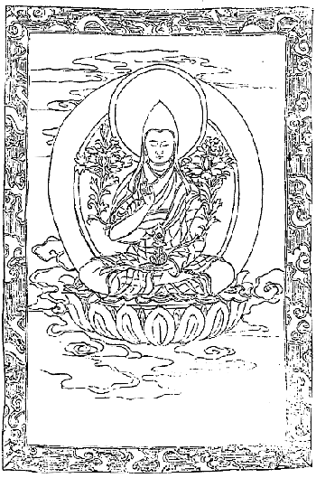
教派の開山ジェ・ゾンカーワの像
について説明をしたい。それは政府の組織を説明するには、かの国の政府は仏教によって立てられて居るのですから、まず仏教の事を説明しないと政府の事が説明出来ない。政府の事を説明しない時分には外交上の事も説明することが出来んのですから、そこで順序としてまずチベットの仏教について概略だけお話して置こうと思うのです。もちろん委しい事は専門的に述べなくては到底尽すことが出来ません。
チベット仏教は大体に分って二通りある。それは古教派と新教派である。古教派は世に赤帽派といわれて、新教派は黄帽派といわれて居る。で古教派の中でもいろいろその中でまた名が分れてあるです。サッキャアとかあるいはカルマーワあるいはズクパとかゾクチェンパとか、まだ沢山ありますがとにかくその主義はほぼ一致して居ります。その
成仏の方法もまたほぼ一致して居りますのでこれらを総称して古教派というのです。
これを開いた一番最初の人はロボン・ペッマ・チュンネというインド人です。この人はベルチスタンという国で、昔はウルケンというた国の王庭のダナコシャという池の蓮華の中から出来たというので、ペッマ・チュンネという名が付いて居るのですが、この人の履歴については怪しい想像的の事ばかりで、捉える所がごく少ないです。古代の神話よりもなお怪しい事が沢山あって、その歴史その伝記などというものはまるっきり年代が
滅茶滅茶です。だから本当の事は分りません。けれどもこの人は僧侶でありながら肉食、妻帯、
飲酒等を非常に
励行した人である。ただこれを励行したばかりでない。仏教の主義に自分の肉慾主義を結び付けて巧みに仏教を解釈し、そして
成仏の唯一手段最上秘密の方法としては僧侶たる者は女を持ち、肉を喰い、酒を飲み、踊りかつ歌うということが最も必要である。この方法こそ五
濁の悪世において、その場で成仏
解脱を遂げ得るところの
甚深微尠の方法であると教えたのであります。
肉慾を満たすのが必要であるというその説明はどうかといえば、大慾は大
菩提性なりといって、人間の中一番大なる慾は女色を求むる事である。この女色を愛して居る中に無我の本体に到達して大菩提性を得るのである。それから人は肉を喰うことを欲するものである。この肉を喰ってその動物の精神をして自分の菩提に感化せしめ、そしてその喰われたところの動物の菩提を得るようにして遣るのがこれまた慈悲の道である。酒は快楽を得るものである。その快楽を受けて互いに相和合して、
我人共にこの世界を安楽に暮すのがすなわち真実知恵の発現である。すなわち酒を飲み肉を喰い女色を愛しつつ
禅定を修めて、直ちに即身
成仏することが出来るのであるという。
その
巨細な事については風俗を害する恐れもあり、また余り
猥褻にして大方の人に知らすことの出来ぬ事も沢山あります。とにかく仏法の好名題をいちいち
煩悩の求むるところのものに配合して、種々
附会の説明を施して居る。日本でも
昔時真言宗において
立川流というものが起って、
陰陽道と秘密の法とを合してこれに似たような説を唱えて、大いに社会を
蠧毒したことがあったです。それは日本でもある部分には大分盛んに行われたようで、ただしその経文および論部のいかんは今残って居る者が少ないからよくは分りませんけれども、なかなかチベットに在るような大きなものじゃあるまいと思われる。
チベットのはインドから伝わって非常に広く行われ今もなおその経典が沢山存在して居る。既にインドで拵えられたサンスクリット語（
梵語）の経典および翻訳書籍も大分チベットに存在して居る。それからそれらの教えについてその後ラマ達が自分の思い思いに造り出した説、かえって仏教を
蠧毒するところの教えを、仏教の名でもって沢山に世にあらわして居る。それは現今チベット仏教の半分はその経文で満たされて居るというても、決して過言ではないと思われる程である。
既に私が持って帰った経典の中にもこの宗派において最も確かとせられ、最も信用されて居るところの秘密部の書物が沢山あります。これはただ私が秘密に調べるだけの事で、社会に公にするのもほとんど困難な位
猥褻のものである。そういう主義の教えがチベットの古代に行われて今より五百年以前まではなかなか盛んでありました。ところでその教えが実に腐敗を極めて、いかに倫理の
紊れて居る事を習慣として居るチベット国でも、実にしてみようのない程困難の地位に陥ったです。そこで新教派が起って来た。
はインドから来られたパンデン・アチーシャに基づいて、その後ジェ・ゾンカーワという方が、シナ領のチベット即ちチベットの北部にアムドという所がある。そこの「ゾンカー」即ち
葱畑の間にある家に生れて、そこから身を起してチベット仏教の腐敗を一洗することになったので、「ジェ」尊あるいは聖と敬称を付けて「ジェ・ゾンカーワ」といいました。で、この方は充分古教派の悪い事を知り、そして僧侶は全く戒律によって立つべきものである。戒律がなくては僧侶という名をつけることが出来ない。その戒律の中でも殊に
淫戒を最も重しとするのである。
もし僧侶が女を持てばそれは確かに俗人である、いな仏法を滅亡するところの悪魔であると、こう確実に
極められて
躬自ら実行せられた。で秘密部の大部分は
顕部の経論によって、僧侶には皆
清浄の戒法を受けしむることにせられた。けれどもその戒法を受けねばならんとせられた時分には、まだチベットにはその戒を授けるだけの師匠がなかった位であるが、しからばどういう勢いで起って来られたかというと、誠実なる信心の強い方によってあるいはまた誠実なる人が沢山に集って来、それで新教派の
芽
というものがだんだん出来て来たのです。その旗挙げをしたのがラサ府より十四、五里隔って居るガンデンという寺のある所であったです。もっともチベット仏教は顕部の経論のみによって立てられて居るものは一つもない。新教派もまた秘密部を取って居ります。
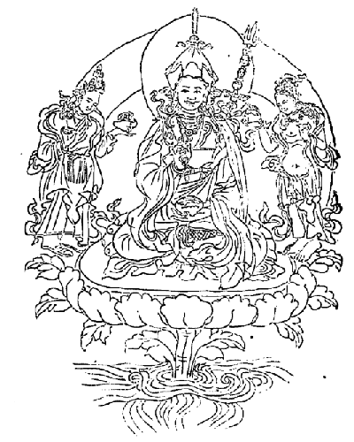
旧教派の開山ロボン・ペッマ・チュンネの像
しかしその秘密部はいわゆる正統派の秘密部を取られたのであるが、古教派は邪統派の秘密部であって全く真の仏教を破るところの教えである。正統派の秘密部には男女合体して居るところの仏様とか神様というようなものはほとんどないのである。けれどもチベットでは秘密仏法といえば必ず男女合体したところの仏体があるので、既に持って帰りました秘密の図画中にもそういう物が沢山あって、人には容易に見せられぬ位のものである。
けれども最初はかくのごとき社会に普及して居る古教派の秘密仏教の尊像を皆打ち破ってしまって、これは真の仏教でないというだけの認めは付かなかったようです。そこで新教派の開山たるところのジェ・ゾンカーワという方が、これをよい具合に解釈しそしてこれを皆抽象的にして
大体男とは方便を意味し女は智慧を意味するものである。その方便と智慧とが一致して仏が出来るのである。決して肉慾を行うたからといって仏が出来るという意味じゃないとこう解釈された。それから肉は慈悲を表したまでで肉を喰えというのじゃない。お慈悲を行えといわれたのである。酒もまた決してこの有形の精神を
紊るところの物を飲めというのじゃない。酒は性智を表わしたものでその
自性の智慧を日々よく用いよと勧められたまでであるというような具合に、すべて真実仏教の道理に合するように説明せられて、そうして像は邪統派の像をそのまま正統派の仏教の解釈に利用してしまったのです。
ですからその真実の内容からいいますと、もちろん正統派の仏教を現わして居りますが、しかし表面だけ見るとやはり邪統派の像を用いて居るものですから、どうもおかしいように思われる。しかし大方その時代には止むを得ぬ事であったかも知れない。これで二教派の概略を述べたという程ではございませんけれども、つまり仏教の事は専門にわたらんでは分り難い事も沢山あるからまずこれ位にして、この宗教上チベットにおいて最も特別なる
化身の事についてお話したいと思います。一体
はその本体は仏あるいは菩薩であって、その真体は無形であるから
衆生に見えない。そこでその徳を備え居るところの有形の体を現わして、世の
衆生を
済度するために仮にこの世に生れて来た。すなわち仮にこの世に化けて来たところの身という意味から
化身という。ところでチベットではただ仏や菩薩が
化身して来るというだけでなくって、ちょっとしたラマもやはり死ぬというと、今度また生れ変って来て世のために働くという信仰があるので、その化身についても昔の化身と今の化身とは余程違って居るです。昔のは歴史上に残って居るだけで、現に私が観察して来た訳でございませんから、果たして確実なりや否やは保証することは出来ませんけれども、チベットにおいて確実なりとせられて居る歴史により古い事は止して、中古に起ったところの化身について申しましょう。
今より四百年ばかり以前にゲンズン・ツブという人があった。そのゲンズン・ツブは新教派の開山のジェ・ゾンカーワの弟子であるが、このゲンズン・ツブが
逝れる時分に、
乃公は今度どこそこに生れて来るといったそうです。ところがその名指した場所に生れた者があって、生れて暫くすると自分の寺に帰りたいといい出した。
その寺とはどこかと聞くと、タシ・ルフンプー寺であるといったそうです。してみればゲンズン・ツブの生れ変りに違いない、なぜならば遺言とその子供の言うこととが一致して居るから、というて連れて来て育てることになり、だんだん生い育ったところでそれが第二の法王になられた。その方が死なれて第三代、第四代まで非常に確実な世であったです。
ところが第五代、第六代となってはどうも歴史を見ても余程怪しい事が起って居る。その時分に起った怪しい事がつまり、近頃の化身を認定するところの法則になって来たです。第五代目の法王はンガクワン・ギャムツォ（言力海）という方で、この方は自分は新教派でありながら旧教の事を非常に研究して、そうして旧教の説明を新教派に引き入れた人で、その時代に
神下しを用うることが大変
流行って来た。その時に確定された法王政府の神下しというものが四つある。その四つは皆寺ではありますけれども神様を祭ってある所です。しかし神官でなくって皆坊さんを置いてある。その寺の四つの名は一にネーチュン、二にサムヤエ、三にラーモ、四にガートンというのであります。この時分に
神下しを置かれるようになったのも、つまりこの法王からしていよいよ
ということになったからです。この法王まではいわゆる宗教ばかりの法王であって少しも政治を
執らなかった。それは政治を執るにも自分の領分がなかったからです。ところがモンゴリヤからしてシリー・ゴーミ・テンジュン・チョェ・ギャルという王が出て来て、チベットの各部落に分れて居るところの王様を皆征伏してしまった。その時分の計算によりますと一万戸の部落が十三あったというのですから、都合十三万戸あった訳である。ところが今でもその時分からちっとも殖えて居らぬかのように、ポェ・チーコル・チュスン即ちチベットの戸数は十三万戸であるという事が
俚諺のようにいわれて居ますが、これは多分その時分に取り調べた即ち法王領分のチベットだけについて言うたものでしょう。
さてそのモンゴリヤの王はチベット各部の
総てを征伏してしまったけれども、自分は王様にならずにその権を挙げて法王に与えてしまったのです。五代の法王はその
権柄を受けて、その時からいよいよ教政一致ということにしたのです。ですから教政一致になったのはまだチベットでは三百年経たぬ位の事なんです。で化身はやはり昔のようにして自分はこういう所から生れて来たとか、あるいは私は死んで行く時分には今度はどういう所に生れるということを自ら言わぬその時はどういう風にして
極めるかといえば、まず誰か尊いラマが死んで四十九日経ちますと、その魂はどこかへ生れて行くことに極って居るというのがチベット人の信仰です。そこで暫く経つとどこへ生れたか見てくれというて聞きに行く。その聞きに行く所はいわゆる
神下しの家です。聞かれると神下しは神様を下して告げるです。
は日本のお
稲荷さんとは大分に様子が違う。実に奇怪な遣り方で、急に気狂いが起ったかと思う位のものです。まず何事に拘わらずその神下しの所へ見て貰いに行くと、坊さんが四人位太鼓を叩き、四人位は
鉦や
鐃鉢を打ったりしてお経を唱えて居るその間に神様が下るのです。その坊さんの様子は頭に大なる帽子を戴いて居る。その帽子の後の方に長く足の所まで下って居る
切布が実に立派な五色の絹である。それは
金襴あるいは綾錦等も使われて居る。着物は日本の僧侶の法衣のようなもので、花模様の置かれてある派手な黄色あるいは赤色の
緞子である。そのまた帯の結び目のたらしは長く下って居るが実に異様な立派なるものです。
そういう支度をした神下しが眼を
閉ってジーッと中腰に構え込んで居ると、その側ではしきりにお経を読んで居るです。すると次第次第に震え出して、その震いがいよいよ厳しくなると同時に
忽ち後ろへ倒れてしまうのもあり、あるいはまた立ち上るのもある。それはその神様の
性分でいろいろになるのだそうです。まず後ろに倒れながらぶるぶる震えつつ、そのラマはどこそこに生れて居るとか、その地方の家の向きは何方であって
其家には夫婦ばかり居るとか、あるいは家内が何人居って何月何日に生まれたのがいつぞや死んだラマである、というような事を言うのです。ところがそっとそこへ探しに行くと奇態にまたその通りの子が生れて居るそうです。
けれどもその母親の乳離れのするまでその家に置いて、それから寺に連れて帰って特別の教育を加えて自ら信ずる力を強くさせるのです。即ち「我は
前生はかくかくの立派なラマである。そういう立派な人の生れ変りであるから、決して人から馬鹿にされないぞ」というところの気象の充分満つるように仕向けるのです。かく自信力の厚いところへお側の者がそれを敬いつつ充分教育を施して行くです。たとい法王の化身といえども学問をする時分にはやはりよく修めないと
臀部を打たれる事がある。そういう事は全く無いというてある僧侶などは弁護しますけれども、それは嘘なんで実はやはり修学中は随分
酷い目に遇わされるです。
とにかく第五代目の法王からこういう神下しが起って、何事もこの神下しに相談するという事になったです。国際問題でもまた何か変った国内の出来事でも自分の心で判断が出来難い、もし道理上よく判断が付いて居ってもどっちにしたらよかろうと迷うような時分、また迷う事も要らぬごく分った事件でもその神下しに尋ね、そして神が下って来て気狂いのようになり泡を吹きつつ言うて居るその事を聞いてから
其言を実行するのです。で法王政府には先にもいうたように、その政府を
外護するところの神様が四つある。ネーチュンとラーモとサムヤエとガートンです。その中でも最も勢力の強いのはネーチュンであります。
まず法王が死なれて今度生れ変って来るのをどうして知るかといいますと、法王政府は法王がお
逝れになって後一年も経たぬ中にその四つの寺へ命令を下し、どこに生れ変ったかこちらに来てよく判断しろとこういうてやると、その四ヵ寺の神下しの坊さんは皆出て来るです。で、その四人の神下しが自分の平生信ずるところの神を
祷り下げて伺った上、法王は今度どこの方角に生れ変ったという事をいちいち言うですが、その言う神さんが別々ですから四人の言う事が
区々になって違う事がある。あるいは二つ位一致して他の二つが別々になることもある。大抵は三人位候補者が出来て来るです。そういう時はどうして次の法王を定めましょうか。
法王に生れた
化身の候補者というのをごく秘密に取り調べて見ると、三人あるいは四人の子供を得ることになるけれども、その子供が五歳位になるまでは政府からそんなに保護も加えない。また粗末にもしないように注意を加えて置くです。で五歳位になりますと、いよいよその子供をラサの政府へ迎えますが、その
取極め方はシナの
欽差駐蔵大臣と、それから法王が
逝れて後政治を
司って居るところの代理の法王とが立ち会い、総理大臣および大蔵、陸軍、宮内、教務等の大臣達とその次官のごとき者が皆集まるです。
僧侶の方でも最も重い高等僧侶などは皆そこへ立ち会いまして、まず黄金の
甕のような物に、その子供が三人あれば三人の名、四人あれば四人の名を書いて入れる。で、ちゃんと封をしてそれから七日間大いに祈祷をなし経を読む。つまりこの中で真実の化身を得るようにといって、そういう
大祈祷会を開きます。祈祷が終ると前にいうた通りの高位高官の人々が立会の上で、封のしてある
甕をよく
検めその封を切って
蓋を開けると、欽差駐蔵大臣が象牙の箸を持って、眼を
塞ぎながら甕の中へ突っ込んで一つだけ摘まみ出すです。その摘まんだ名が誰に当って居るか、その当った子供が法王となるのです。
こういう風にするのですからその間に余り弊害もないようですけれども、私が駐蔵大臣の秘書官の
馬詮という人から聞くところによると、随分弊害のあった事もあるようです。それは自分の子供が法王になれば、自分らは法王の王族としてシナ政府からは公爵を受くることが出来るのみならず財産も沢山に得られて、実にこの世における円満なる幸福を受けることが出来るというので、大いに
賄賂を使って奔走する奴があるそうです。で、それらはまず駐蔵大臣に金を沢山遣り、それからまたチベットの高等僧官にも
賄賂を沢山遣る。そうするとつまりその賄賂を受けた者の子供しか摘まんで出されないような方法にして置いてやったこともどうやらあるらしい様子です。それは必ずしも証拠立てることは出来ないです。けれどもどうもそういうことがあったという話をたびたび聞きました。
法王の化身を定むるについては以上述べましたごとくなかなかむつかしい。けれどもその下の高等ラマに至っては少し面倒な事もあるです。けれども大抵この神下しという奴は実に悪い奴で賄賂を
貪り取ることは非常です。ですから神下しの坊さんには大変な金持があるです。現に
のごときは恐らくチベット中の金満家といわれる位に金があるです。そこで大抵高等ラマの化身は多く貴族の子供とか、あるいは金満家の子供、大商法家の子供というような者が多い。それがおかしいじゃありませんか。貧乏人の子供にラマの化身が宿らないと極めてあるように、ほとんど十中の九までは皆富貴の家からその化身が出るという一段に至っては、必ずその間に何かの事が行われて居るに違いない。それはただ
表面から観察しただけでも分るですが、実際は全く妙な事が行われて居ますので、折々嫌な事を沢山耳にしたです。
まず自分の子が出来る前からして
神下しの所に行って賄賂を遣って置くです。そうしてどこか良い寺へその子供をあるラマの化身だというて
口入をして貰うのです。良い寺には沢山な財産がありますから、そういう風に申し込んで置くとその寺の財産を自分の子供が生れながらにして得らるることになるのであります。それは随分商売的の場合から言ったならば賄賂を沢山使っても余り損はないというようなものでしょう。それゆえに金を沢山贈る者があるんです。これは私のしばしば見聞した事であって、決して表面から観察してこうであろうというような推測話じゃあない。だから化身の信ずるに足らんということはもう分り切って居る。昔の事はいざ知らず今の化身というのは本当の化身でなくって
であると私は言った事がある。それでもその子供に自信力をつけてよく教育するものですから、どうも化身と称するラマは十人の内でまず八人までは出来の好い方です。二人位は
屑もあります。その教育の方法は教師も付添人もその化身とされし子供に対して
鄭重に敬語を用います。
喩えばその化身の子供につまらないことがあっても
無下に叱るということをしないで、あなたは化身であるのにさようなことを遊ばしてどう致しますかというて反省させる位のものであります……。だから私は少し考えた事がある。どうも子供を無闇に馬鹿だの
頓馬だのと罵り、あるいはその記憶力の足らぬ事判断力の足らぬ事をば
無碍に
卑しめてその自信力を奪うという教育法は、確かにその子供の発達を妨害する教育法だと思います。
その子供には自信力をつけて充分進めるものであるというところの観念を起さしむるように教育することは必要であるという考えを、チベットに居る時分に起しました。チベット人はそういう事はもちろん知らない。また賄賂を遣るというような事もそれは富貴者の間に行われて居ることで、一般人民はそんな事はちっとも知らない。実に馬鹿なもので、政府が
蜻蛉返りをして居っても一般人民はほとんど知らない。一般人民の間に伝えられて居ることは、どこそこの華族さんに今度お子達が出来たがそのお子達は生れながら
乃公はどこの何というラマであるというたとか、あるいはその子供の所へその前のラマの物としからざる物と同じような物を二つ持って来て、あなたのはどちらかと尋ねたら同じような物の中でよく見分をつけて、これは本当これは嘘であるというたそうだ、だから
彼子は確かに化身に相違ないというような説が俗人社会に行われて居ります。
これはチベット一国にこういう迷信が行われて居るので、ただラサ府、シカチェにおける秘密に立ち入って見ると、その化身は
賄賂の化身ということは確かに断言して
憚らない。たとい賄賂の化身でなくても、神下しとある貴族との関係上、神下しはその貴族の保護を受けて居る時分には特別に賄賂を貰わないでも、それはいわゆるおべっかにそういう事をやることもあるです。この神下しの事についてまだ少しいいたい事がある。
政府内において例えばある大臣が誤った仕事をしますと、
敏捷な大臣はそれと悟ってじきに政府の
外護の神であるネーチュンに何万円かの金、あるいはその罪の大小に従ってそれより少ない事もあるけれども、まあ千円以上、少なくとも千円より下の金はない、その金を持って行ってネーチュンに頼むです。程なくその大臣のした
過ちの
化の皮が顕われて、いよいよ
其事が政府部内の問題となり、
譴責をするかあるいは重い罰に処するかという場合には、じきにネーチュンを呼び神様を下ろして、この人を罰して善いか悪いかについてお
伺いをするです。
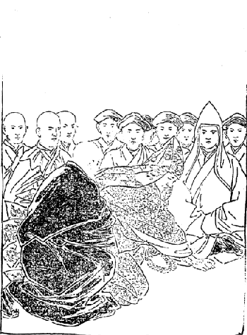
神下し大問題に窮し詭って仆る
するとネーチュンはその時に金を沢山貰ってあれば「決して罰するな、余り罰すると国の運命に関わるからちょっと
叱言をいって置く位がよかろう。あれは元来善い男だけれども今度は心なしに誤ったんだから
宥してやるがよかろう」という具合に言うのです。その代りどんな善い事をして居っても、ネーチュンのお気に入らんとじきに法王の面前でたちまち神を下して、その善い事も
逆まに悪事に言い立てて
譴責を喰わせるとか罰せられるようにされるものですから、チベットの政府部内では法王を恐るると同時に、なおより多くネーチュンなる神下しを恐れて居る。チベット政府の政権はこのネーチュンの左右するところであるというても過言でない位である。もっとも今の法王は余程果断な人でありますから、事によるとネーチュンの言う事を
肯かぬ事もあるけれども、大抵古来の慣例に
背くというてその人の言うことを
肯くです。
なる者もそういう
微細な事については明らかに是非善悪を断定するが、さて天下の大問題が起って外交上どうしたらよいか訳が分らんような事になると、そのネーチュンなる神下しが実に面白い。まずその身には光明輝くばかりの衣服および帽子を着けて、法王および大臣、高等僧官らの前に立って祈りをして居るとやがて神が下って来るです。その下って来る時分に「このたびイギリス政府とこういう訳で合戦をするような事になって居るがどうしたらよかろうか」といって尋ねると、神は何にも言わずにぶるぶる震いながら飛び上って、神下しはドタリと倒れて気が付かんような風になってしまう。そうすると側の者は「さあ大変だ。こりゃ神さんが我々が不敬な事を尋ねたものだから怒って
往ってしまわれた」とこういう訳ですから、一番困難な問題が起って来た時分には、ネーチュンは神さんが逃げて行ってしまったというので何にも言わんでもそれで事が済むのです。実におかしくて堪らんです。
そこで心ある博士あるいは僧侶の中においても、是非善悪を
弁えて居る者はひそかにその挙動の憎むべき事、その業の社会、国家を害することを
悪んで、彼は悪魔である、彼は決して仏法を守る者に
非ずして仏法を破壊する者であるというて大いに怒って居るです。けれども法王に至っては、富貴の子供でなくてかえって
貧賤の中から沢山出て居る例もこれまであるのですから、一概に法王あるいは第二の法王まで神下しの勢力を及ぼして、この事を決定することの出来ない場合もある。現に今の法王のごときも実に貧乏の家から生れて居られるです。
第二の法王もつまらない身分、母親は
唖者で父親は一体誰だか訳が分らぬ。ある隠者がその
唖者と一緒になったとかあるいは坊さんが一緒になったとかいろいろの説がある。ある確実なる博士の説によると、私の居りましたセラという寺の人でメトーケーサン（菊の花）という博士があった。この人がいわゆる古教派の仏法を修めて、遂に色気狂いになって地方へ漂流して行った。その時分にその方が
唖者の娘と一緒になって出来た子である。現に第二の法王の顔がそのメトーケーサンによく
肖て居るという話です。しかしその事は世人一般の認定の説でなくって、ただセラ大学に居る私の知合の博士が言ったのですから真偽は保し難い。神下しの事はこの位にして置きましょう。ここで
の事についてちょっと説明をして置きます。チベットでは教育は余り普及して居らない。ただ第二の府たるシカチェの辺では大分に単純な習字とかあるいは数える事、読物の
類は行われて居りますけれども、その他は寺でない限りはほとんど普通人民の子供は教育されるということはないのです。ですからもちろん学校も沢山にない。ただ学校らしいものはラサ府の法王宮殿に一つと、シカチェのタシ・ルフンプー寺にあるだけ。その他はすべて私塾のようなものであって最も広く教育の行われて居るのは僧侶学校である。
普通人民の子供は僧侶にならなくては中等以上の学問をすることが出来ない。政府の学校へは普通の人民は入ることは出来ない。その普通人民の下に最下族というのがある。その最下族というのは漁師、
船渡、
鍛冶屋、
屠者の四つである。鍛冶屋はなぜ最下族の中に入って居るかといいますに、これはやはりインドも同じ風俗で、鍛冶屋は屠者が動物を殺すその刀なり
出刃庖丁を拵えるというようなところから、鍛冶屋も罪ある者として最下族の中に入れてあるです。
この普通人民と最下族の二種族は政府の学校に入ることが出来ない。殊に最下族の者は僧侶になることも許されない。だが遠方に行って自分が最下族であるということを押し隠し、そして僧侶になって居る者もありますが、自分の生れた近所では誰もがその事を知って居るから決して僧侶になることを許されない。その点においては平民は僧侶になることが出来るから余程上等の位置を持って居る。そんならどういう種族が政府の学校に入れるかといいますと
第一にゲルバといういわゆる華族です。第二ンガクバ（真言族）第三ポンボ（古教族）第四シェーゴ（古豪族）です。第一華族というのは古代の大臣あるいは将軍らの子孫でこの内にはヤブシーといって法王の種族も含まれて居る。その法王族というのは多くはないです。ただ昔から十三代あったその間の王さんに付いた親族だけをいうので、これらは皆公爵家です。公爵家には法王族と王族との二つある。今言ったのは法王族ですけれども、王族というのはチベットの最初の王様でニャチー・テーツャンという人から仏教をチベットに入れた最初の大王ソンツァン・ガムボに至り、それから代々血統相続で今日に至って居る王族である。
その正統者をラハーキャリーといって、今でもその家は立派に残って居る。けれども政権はない。ただその位階は法王と同じ座に着くことが出来るです。それからその法王族のヤブシーというのは、これまでの法王の親族の公爵家が残って居るだけですが、それらは大抵その家に
遣手が出ますと、総理大臣あるいは陸軍、大蔵等の各大臣になることが出来る。そうならなくてもつまり勅任官位の役目はいつでも持って居るです。しかしヤブシーというのもラサの法王について言うただけでタシ・ルフンプー寺の第二の法王の方にもヤブシーという者はありますけれども、ラサの法王のヤブシー程勢力はないです。
それらの二つをつまり王族といって置けば宜しいけれども、やはり華族の中に置かないと外に似たような者が沢山あるからこれを華族の中に入れて居る。その似た華族の中にデーボン・チェカー（大将軍族）というのがある。これは昔から大戦争の起った時分に、非常な軍功を立ててよく国家の困難を救うた者の系統である。これらは非常に好遇されて居ります。なおもう一つ下に在るところの華族よりは余程優遇されて居る。で、その家の子供なども太子様などと人から尊称を受けるようになって居る。
一番仕舞のが普通の華族でやはり昔から大変に
由緒のある家、あるいはまた国家に功労のあった大臣の子孫らであります。これらの華族の中でも普通よりも
勝れた才を持って充分国家のために働く人が出ます時分には、そういう人は必ず総理大臣にもなることが出来るです。今日はむしろ国家を調理する才能よりも
賄賂をうまく運用する才に富んで居る人間なれば、必ず総理大臣の位置でも得られないには限らんです。ほとんどチベットの
でもって買える位のもので才能の有無はそんなに問わない。なぜならば才能があったところでかえって邪魔になる位のものです。沢山な馬鹿の人の居る中に立派な人が一人居ると、かえって邪魔になって仕方がないから、そういう立派な人が出ると他から必ず
嫉まれて放り出されてしまう。つまり勝利を得て居るのは賄賂で官職を買った人が今日は沢山政府の要地を占めて居るです。この三つを総称して華族というて居ります。
第二ンガクバ（真言族）というのは、その祖先のラマが非常な
遣手であっていろいろ不思議な事をした。そのラマがつまり妻帯をして子が出来た。ところがその不思議な事を伝えるに、
余所の人には誰にも伝えずして自分の子供だけにその一家の特色を伝えていくとこういう事になって居りますので、
其人はやはり今でも国家において必要な地位を占めて居るです。この間もいいましたように
霰税を取って夏季の執法官となるところの権力もあり、秘密行者として地方人あるいは都会人の尊崇を受けるです。
なぜならばかりにも御機嫌を
損った時分には極悪な秘密
咒法を行われて、それがために害されるであろうというチベット人の一般の信仰でありますから、そこで大変に
敬われて居るです。先にもいったようにこの真言族はそういう風ですから金が沢山入る。人から上げて貰うものも沢山ありまた
霰税のごときものも沢山取れるから、普通から言えば非常な金持であるべき筈であるのに非常に貧乏人が多い。ンガクバといえばチベットでは貧乏に限ったように思われて居るけれども、またンガクバといえば貧富に拘わらず最も敬わなくてはならんもののように一般人民が思うて居る。華族の人でも乞食のような風をして居るンガクバを見ると、馬から下りて挨拶する位です。
第三はポンボです。これは仏教がチベットに入らぬ前から伝わって居る古い教えで、その坊さんはやはり妻帯をして居ります。その子孫がつまり古教族というので、これらもまた地方の神様を祭り、そしてその地方の神様が怒って人民を罰したり何かすることを防ぐために法を行いますが、すべて男女結婚の場合にはその村の神を祭るためにこのポンボ族を頼むのです。その外ポンボ族は人に頼まれて祈祷をしたり
咒咀をするのを仕事として居ますが、ごく
辺鄙の地即ちヒマラヤ山中のトルボという所のある村落は、一村三十軒
挙ってポンボ族であります。そういう所は別ですが一村あるいは一地方にポンボ族が一人というような場合には、そのポンボ族はその地方において行政司法の長官として尊敬を受ける。またそういう長官でもなく祈祷もやらず外の仕事をして居っても、血統の正しい者であるというて非常に尊まれて居る。
ですからポンボというものは昔は一つの宗教であったけれども、今は血族その者がポンボという教えを代表して居るだけで、その教えを外の人に教えるとかあるいはその説を説明するということはないです。ただポンボの子孫がその教えを子孫に伝えていくというだけにとどまって居る。で世俗的の仕事をして居る者はポンボの中でもラマでない。ラマはやはり仏教の僧侶のように
剃髪して
法衣なども着け、そしてその種族中で一番最上の席を占めて居る。要するにこのポンボという者は血統の上で尊敬を受けるのみならず、またそれ相応の才学があって僧侶となれば、またその僧侶の位置に伴うだけの社会の尊敬を受けるです。第四はシェーゴです。即ち
の事で、この種族はその名のごとく
古の豪農あるいは豪商らの子孫であって、今なお多くの財産土地を持って地方において権力がある。ああいう山国の人民は非常に保守力に富んで居るものですから、昔から有るところの財産をそのままに維持して行く。殊に多夫一妻の風俗でもってその財産を維持するようにばかりして居りますから、昔から財産家は今もなお財産家である。しかし稀にはこの頃財産、土地を失って富豪家といわれる実のないものがあるですけれども、やはりシェーゴ（古豪族）の種族として社会の尊敬を受けて居ることは同じ事です。
チベットではこれより下の種族即ち平民あるいは最下族がどれだけ金を持ちどれだけ社会に勢力を得るに至っても、決してこの古豪族の貧乏人に対しては威張ることが出来ない。それは昔京都のお
公卿様に対して非常の金持の商工人が威張ることが出来なかったのと同じようなものであるです。平民はトムバというて居る。で、トムバの中にもトムバとトムズーの二つがある。
トムバは昔から普通の財産、土地を持って他人の奴隷とならなかった家系をいいますので、トムズー即ち小民というのは平民のもとに在ってほとんど奴隷の業を
執って居る者の子孫をいう。しかし全く奴隷でもない。ごく悪い小作人といったようなものです。古代は全く地主と小作人との関係を持って居ったのです。が今は皆そうであるという訳にはいかない。あるいはトムバ（平民）の系統であって小民よりも貧困に陥って居る者か、あるいはまた小民の系統で多くの土地財産を持って平民より遠く
勝れて居る者がある。けれどもこれらはごく普通の場合でなくってまあ例外というてよろしい。大抵は平民の方が大きくて小民の方が小さい。
小民の血統の者でどれ位財産、土地を持つようになりましても、また平民がどの位貧困に陥ってもその系統、階級というものは決して
紊れない。従ってその社会がその両者に対する待遇がちゃんと違って居って、決して平民と小民と共に食物を一緒に喰うというような事はしない。また結婚というような事も決して許されない。一番最下の族は先にもいいましたように
渡船者、漁師、
鍛冶屋、
屠者の四つで、これらの中でも渡船者と漁師とは少しく地位が高い。決して鍛冶屋や屠者のようではない。
この鍛冶屋と屠者とは他の平民とは決して一室内にて共に飲食することが出来ません。渡船者、漁師もその飲食器を共にして喰うことは出来んけれども一室内に団坐して飲食することが出来る。ただ自分の椀で自分の物を喰うというに止まる。この四つの最下族は決して他の種族と結婚することが出来ない。もし平民以上の種族の子供がこれらの最下族の者と野合するような事があった時分には、その上等種族の子供はただ階級から退けられて最下族に陥らんければならぬ。そうしてその父母の家へ来ることも許されない。もしその子女にして
過ちを悔いて最下族の者と離婚したところが、また決して従前の上等種族に
復ることが出来んです。最もおかしいのは、この最下族と平民とが夫婦になった間に出来た子です。その子供を世間でテク・タ・リルというて居る。テク・タ・リルというのは
という意味で、そういう名を付けて最下族よりもなお悪い者としてあるです。で、この最下族中の鍛冶屋とか屠者などが金を拵えてその商売を
罷め、農業あるいは商業をするようになりましても、彼らは永久に最下族として決して普通社会の交際を受けることが出来ない。しかし他の上等種族で鍛冶屋の技に巧妙な者があって、自ら好んで鍛冶業をする時分には、その血統が悪いのでなくただ技が巧妙でやるのですから、これをリク・ソー（工士）といいます。その血統の階級上において、法律上あるいは習慣上その上等種族は下等種族に対して特殊の権利を持って居る。例えば華族の子供と平民の子供とが争論、喧嘩をし、もし平民の子供にして華族の子供に対し怒りの余りに尊敬語を用いずして対等語あるいは
蔑視した言葉を用います時分には、その争った事柄の是非善悪いかんに拘わらず法律上必ず平民の子女は悪いものとなってしまうです。
またどんな金持の平民の子供でも自分より一階級上のンガクバあるいはポンボ種族に対しどんな場合でも敬礼をしなければならんです。同座の場合にはごく貧乏人のンガクバでもやはりその種族に対して正席を譲らんければならぬ。話をする時分には必ず尊敬語を用いなければならぬ。もちろんその階級の異なるに従って結婚等も皆別々になって居るものですから、自から品格、容貌、性質、作法等も変って居るです。ですからこの国の
諺に
によって知らるるなり、
都鄙の人々はその言葉によって知らるるなり、ということがありますように、華族は特別に容貌も高尚なる姿があって、その作法もすべて風雅で
静粛である。その心のごときも我は華族であるから
耻かしき行いをしてはならんと深く自ら戒めて居る者が多い。他の真言族、古教族、古豪族のごときは華族程に立派でありませんけれども、平民に比して見ますと幾分か高尚なところがあって、その性質もまた卑しくないのが私共でも大抵一見して分る。この人達は平民でなくって高等種族であるということが着物の着方でも分る。
平民はその容貌、品格等が
卑賤でありますけれども、その性質はやや正直で盗心が盛大でない。平民はどんな貧乏に陥ってもし乞食になったところが大抵彼らは盗みをしないという一事をもってなお社会の人に信用されて居る。最下族の中には強盗、殺人等重罪の犯罪者が最も多い。それは重罪の
巣窟であるというてよろしい。また乞食の多くもこの種族に属して居る。なおこの種族の中には別に乞食族という者もある。なぜならば代々乞食を続けて居る奴は乞食族とこういうのですから、たといこの最下族中に善人があっても社会は彼らを信用しない。その容貌も一見していかにも最下族ということが知られる。残忍、
酷薄、
卑汚醜穢その性質もまた容貌のようであるです。
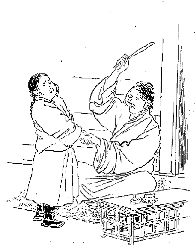
教育の良法と考えて子供を打つ
先にもいいましたように上の種族は政府も学校へ入学を許します。その学校で教えるところの事は暗誦、習字、算数の三つの課目である。第一が暗誦第二が習字で時間の上からいうと最も多く習字に費やされて居る。算数は前に説明したように小石、
木屑あるいは貝殻で勘定する方法を教えて貰う。何を暗誦するかといいますと、経典の一部と文法書のごく単純なもの、それもごく不完全なものでそれから修辞学をやるです。チベットでは文法よりも修辞学の方がまだ必要な位です。
なぜならば何でもむやみに飾って立派に言うことが好きですから、ちょうどシナ人がむやみに形容するようなもので、チベット人もそういう点については余程シナ人にかぶれて居るのかあるいは本来の性質か知らんが、法王とかあるいは少し目上の人に上げる書面でもむやみに立派な
誉言葉を沢山使う。ですから修辞学が必要である。余程分らないひねくった字を手紙の中へ書き入れることが好きです。
殊に上書文と来た日にはお経の中でも見出すことの出来ないようなむつかしい字ばかり集めることが得意で、何でも人が見て分らないような物を
拵えて喜んで居る。またそういう風に学校でも教育して行くです。修辞学の中には一枚の文章を一日もかかってからして、修辞学の原書をたよりたより読まなくちゃあ分らん位むつかしい文章が書いてある。まるで
符牒を書いてあるようなものがある。で世人一般に分らない字を知るのをもって教育の最後の目的として居るのですから、実に
奇怪なる教育の目的と言わんければならんです。
そういうむつかしい修辞学を教えるのですからなかなか子供には堪えられない。ことに暗誦が主でその暗誦の文字もむつかしい。ですから容易に覚えられない。覚えられないのを奨励して覚えさせる唯一の方法はぶん
擲ぐるので、それを最上の良法として用いて居る。師匠と生徒との関係はあたかも看守と罪人の関係のごとく、生徒は師匠の前に行くと始終ぶん擲ぐられはせぬかとぶるぶる
慄えて、
怖がって居る様は実に可哀そうなものです。
私の
寄寓して居りました大蔵大臣のごときは、教育上においても余程心掛けのある人でありましたけれども、自分の家に居る子供に教える第一の方法はやはりぶん擲ぐるのでした。ですからその子供が大臣の前に出て来るとぶるぶる
慄えてから、もう今にもぶん擲ぐられはせぬかといつも
逡巡りをして居るです。その擲ぐるのはすべて
坦たい竹で、子供の左の手の平を三十位びゅうびゅうと擲ぐるのです。もしその手を引き込めると三十のやつが六十になりますから、どの位痛くっても縮んで縮み上っても、こうやって（前図のように）慄えながら熱い涙を
溢しながらジーッと辛抱して擲ぐり終るのを待って居ねばならぬ。その哀れさと言うたらとても見て居られない。
これではその子を教育するのではなくて
賊するのですから、私はある時大臣に教育法というものはこういうものである、擲ぐるのはよくないということを充分説明しました。ところが始めは大分議論を言いましたけれども、何分事の分った方でありますから、その後は子供を
擲ぐらんようになって、まあ余り覚えないと少し
叱言をくれる位になったそうです。その後も私はなるべく精神を開発して教えるように勧告しましたところが、大臣はその後ぶん擲ぐらないとかえってよく覚えるようになったと言われた位であります。しかしこのぶん擲ぐりは大臣一人がそうするのでない。大臣よりよその方がひどい。御膳を喰わせなかったり、あるいは一晩縛って置いたりして、ほとんど子供が堪え得られない程に苦しめるです。しからばチベットでは子供を教育するに少しも慈愛の心をもってせずに、ただ厳格に罰するというだけでやって居るのかといいますと、またそうでもないです、即ち
になるとそれはもう甚しいもので、教育しても覚えなければ仕方がないというように
打棄って置いて、そうして始終その弟子に
接吻するという風で何しろ非常に愛するです。あたかもその関係はその色に
溺れた婦人に対するごとき有様を呈して居る。ですから愛に溺れてまた教育することが少しも出来ない。一つは厳格に過ぎ一つは愛に
溺れて教育が出来ない。この
中庸をとって慈愛を施しつつかつ厳格なる態度も維持しつつ教育するということは必要ですけれども、チベット教育はあるいは過ぎあるいは及ばぬかというたような遣り方ばかりです。
その中庸をもって得る者は私の見たうちではほとんどなかったです。で僧侶の教育というたところが既にそんな風でありますから、よい人物の出て来ることはごく少ない。心ある僧侶は自分の弟子に接吻するということはよくない。つまりその子を
賊うのだからというてよその弟子に接吻して、自分の小僧には接吻せずに教育する人があるです。そういう小僧はだんだん発達して行く。
発達して行くがさて困難な事は
暗誦ばかりですから、学ぶ者の身にとっては容易でない。大抵一年の間に十五、六歳になった子供は三百枚あるいは五百枚の紙数を暗誦して、その経文の試験を受けなくちゃあならない。それも決して書物によって学ぶのでなくって、そのラマの口から伝えられて無意味に暗誦するだけです。その無意味に暗誦した経文、その経を一年に三百枚から五百枚の試験を受けなくちゃあならんのです。一番少ない程度においても五十枚は暗誦しなくちゃあならん。それはごく記憶力の鈍いやつに対する特別の取扱いで、半年に五十枚ずつ都合一年に百枚だけ暗誦してその試験を受けさせるです。
もう十八、九歳から二十五、六歳、三十に至る間においては五百枚、八百枚甚しきは千枚も暗誦する人がある。どうして暗誦が出来るのか私共にはほとんど分らない。私共は半期に五十枚暗誦するだけでもやっとこさと出来る位の事です。右のごとくチベット人の教師は
擲ぐるのをもって一番良い教育法として居るですが、またそのほかに
として畜生、豚、乞食、
餓鬼、
驢馬、親の
肉喰犬というような荒々しい
罵詈の言をはなってその子供を教育する。そういうような荒い言葉をもって教育されるものですから、その教育された子供が今度大きくなって人に対する時分には、また自分のされた通りに繰返すという訳で実に浅ましいものです。次に商業上の事についてお話したいと思いますが、それについて私は明治三十四年の十一月十八日に前に話しました、ダージリンにて知合になったところのツァ・ルンバという商人に託して書面をダージリン及び故郷へ送ることにしました。
このツァ・ルンバは政府の命でインド・カルカッタへ鉄を買いに行くのです。この鉄はどうするのかといいますに鉄砲を拵えるのです。その鉄砲を拵えるのは、ラサ府の南方にあるキーチュ川の向側にチェチョリンというところがあって、その東のジブという所に鉄砲製造所がある。この
はその時より八年ばかり前に起ったので、それまではチベットでは鉄砲を製造することを知らなかった。ところがチベットのハーチェリンという男が長らくダージリンに住んで居ったことがある。一種変った人間で、その男がチベット政府の命令を受けて、インド地方からインド及びカシミールの
回回教徒で、鉄砲製造に従事した人間を十人ばかりチベットへ連れて来て、チベット人にも鉄砲製造方法を教えさせた。その十人のうち死んだ者もあれば国に帰った者もあって、私の居る時分には二人しか居らなかったけれども、チベットの鍛冶屋はその鉄砲を製造することをすっかり学んで、その人達が教えただけの事はすべて出来るようになったのです。
どうもチベットでは他国から鉄砲を輸入することは困難である。ことにインド地方から良い物を輸入することが出来ない。これまではみな
火繩銃ばかりであったですが、今度いわゆる新式の鉄砲が出来るようになって、それが大分成績がよいのでなお鉄を沢山仕入れて大いに製造しようというところから、ツァ・ルンバが政府の命令を受け金を沢山持ってその鉄を買いに行くことになった。で内々その事を私に知らしてくれた。もとより確かな人でありますから私はさっそく手紙を認めてその人に託した。その手紙はダージリンのサラット・チャンドラ・ダース氏に宛てました手紙で、その中に故郷の方へ発する手紙も封じ込みました。
チベット人がこの頃交易のため出かけることの最も多くなって居る外国は英領インドでその次がシナです。その次はロシアとの関係ですけれども、ロシアとの通商はそんなに開けて居らない。こりゃほとんど言う必要がないです。政治上の関係は現今に至りますます持ち上って来ましたけれども、通商上の関係はまあ絶えてないといってもよい位です。私はまず始めに英領インド及びその隣国のネパールとの交易について少しお話したいと思います。
英領インドの方へ輸出する品物は羊毛がおもで、次が
麝香、ヤクの尾、毛皮、獣皮
位のもので、なお細かな物は少し位ずつ出るです。あるいは
経文とか仏像とかいうものに至っては、
余程持出すようにインドの方から求めても、そういう物は途中で見付けられると没収されるから、余り輸出されて居らない。その他日用品も多少輸出されますけれども、既にシナ茶のごときもチベットを経てインド地方に来て居ったのですけれども、それすらもこの頃はすっかり
止めてしまった位であるから、その他も
推して知るべしである。シナからチベットを通じてインドに茶を送るというのは
訝しいようであるが、この茶はインド人が飲むのでなくってダージリン近所に居るところのチベット人が飲むのであるですからわずかであるけれども、それすらもこの頃は輸出を止めたです。
羊毛はカリンポンといってダージリンの東に在る山都会に出て来る分が、毎年
騾馬でもって五千
駄以上六千駄位ある。それからブータンの方に出るのは一千五百駄以上ある。しかしこれはそれより以上あるかも分りませんが、何分統計などのある訳でもなし、ただその商人についてどれだけ位売出すかということを
聞質したまでの事ですから本当の事は分らない。ネパールの方に出るのが二千五百駄内外で、ラタークの方に出るのもやはり三千駄位のものと思われる。シナの方へ出るものとそれからマナサルワ湖の西方に出て行くものは、こりゃ私が通らない地方でもありかつまたよくたずねて置かなかったですからどうも不明です。
で
麝香は実にチベットでは沢山である。
麝猫とて猫のような形の
香物を持って居る動物もあるそうですけれども、チベットのはそうでなくて一種の鹿の類です。やはり草ばかり喰って居りました。その大きさが猫の二倍半あるいは三倍位ある。形はちょうど鹿のようであるがあんなに
背が高くない。可愛らしい
狆児のようなものであって、その毛色は
濃鼠で誠にサバサバしたごく軽い毛である。その顔の愛らしい事といったら実に一見してその動物の性情の愛すべきことが分るです。殊に
下顎と上顎から二本ずつ曲った美しい牙が出て居る。で
麝香は
臍にあるというような説がありますけれどもそうではなく、
彼香は陰部即ち
 丸
丸のうしろに
膨れ上って付いて居るです。ですから雌にはもちろんない。
これを殺すには月の十五日に殺すと麝香が一番余計あるという。もちろんその
麝鹿の大小によって幾分かその量を異にして居りますけれども、とにかく陰暦の十五日は麝香の満つる頂上だそうです。その時麝鹿のした小便を
嗅ぐと非常に麝香の匂いがして居る。十六日、十七日とだんだん
月末になる程、減って行くという。また月が変ると月初めからぼつぼつと
殖えて、十五日になると
充分満ちてしまうという訳でちょうど日に関係をして居る。ですからなるべく十三日から十五日の間に取って居るです。取るのは鉄砲で殺すのですが、しかしチベットには
殺生禁断の場所が沢山あってその場所には殊にまた沢山
麝鹿が居るです。
私の住んで居ったセラ大学の後ろの山などにはなかなか沢山居りました。けれどもそこは殺生禁断で、そこで鉄砲など放った分には自分の命に関わる位のものですから、誰も殺生をやらないですけれども、またなかなか賢い方法で取るです。ヤクの尾で
拵えたところの
紐で山間の草の生い繁って居るところに
罠を拵えて置く。すると
麝鹿が草を喰いに来てその罠にかかり、大いに苦しんで声を挙げて鳴き出すと、そこへ先生やっていって殺してしまう。そういう方法で沢山取るのです。これはただチベット国内だけでなくて、チベットとネパールの間のヒマラヤ山脈の間にも沢山
棲んで居る。しかし最も多いのはチベットである。チベットの内でも麝鹿の本場ともいうべきはコンボ及びツァーリー並びにローバ地方で、この地方には非常に沢山居るからその地方へ行って買えばごく安いです。
まあ日本で買うほとんど十分の一位の値段である。ことにローバの住民は
極の
野蛮人でただその陰部だけを
蔽うて居る種族である。これはチベット人ともインド人ともつかないですが、その言葉によって見るとどうやらチベットの方に近い。そういう人間の持って来る
麝香は少しも混り気がなくって、殊に大きな良いのを沢山持って来ますが値段は非常に安い。何を持っていって買うかというと、小さな鏡、水晶玉、鍋、釜、庖丁類、
麦焦し、チベットの菓子類、西洋品のごく安い
玩具類、そんな物を持って行って
欺くらかして換えるのです。
どういう風にして換えるかというと、どこの野蛮人にも行われて居るような具合に向うから
麝香の軽いやつを一つ出しますと、こちらからもまずセルコみたような物を一つやるです。それはいけないもっと余計よこせというと、そこで水晶玉の三つか四つ位付けてやりますと、彼らは大いによろこんで交換するです。ですからそんな所から買って来ると、まるでただもらったような訳ですけども、しかしそこへ行くまでがなかなか危い。強盗の沢山居る中を行かなくちゃあならんから
首尾よく
其香を買出して来たところが、果たしてラサ府まで持帰れるかどうか、その間に強盗のために
商人の
殺られる者が多いそうです。安物を買いに行って一番高価な自分の命を棄てなけりゃあならんような事がありますから、そこへ出かけて行く人間は余程
稀です。
この麝香はどこへ最も多く輸出されるかといいますと、この頃はシナよりもインドの方に余計に輸出されて居るです。以前は
雲南の商人などはチベットから沢山その麝香を買出したものですが、インドの方へ
吐口が多くなってからして値段が大変高くなりましたので、今では雲南の方へ持出しても前ほど銭儲けがないそうです。しかし今でもその幾分は持出されて居るですが昔のようではない。これを雲南からして
雲南麝香という銘を打って我が国などへ輸入して来たらしく見えるです。シナへ輸出するものの中で一番立派なのはシャー・イ・タクラー即ち
であります。この
血角はシナでは身体を壮健にして寿命を長くし、なお顔の艶をよくする
利目があるというので、いわゆるシナの仙薬を拵えるためにチベットから沢山買い出して行くです。なかなかその値段は高いもので、ごくよい
血角になるとその価もまた非常に高い。その
角一隻の価がチベットでシナ人の買う値段が、日本金貨に換えて五百円位のものがあるです。しかしごく悪いやつになると二、三円しかしない物もあるです。なぜかというとごく悪い者は薬にならない。ただ飾りになるに過ぎない。その悪いのと善いのとを見分けるのはなかなか困難です。
チベット人の大抵は血角といいさえすれば何でも金の高いもののように、五百円も千円もするかのごとく思うてやかましくいうて居るです。けれども決して
玄人の間ではそんなものでない。いかに大きくっても薬にならんのはごく安いです。この
宝鹿という鹿はどこに多く居るかというと、チベットの東南部に最も多く居るです。また西北部の
曠原にも大分に居ります。その大きさはほとんどごく大きな馬程ある。その形は全く普通の鹿のようであるが、鹿よりも余程肥えて居るです。その毛色は少しく
灰白色を帯びて居る。なおほかの色のものもあるそうです。
ここに不思議なるはこの血の角は毎年陰暦正月からして新芽を
出すのです。その新芽の外部は一面に毛の皮で
被われて居って中は全く血で骨も何もない（著者の携帯品中に在り）。その芽が月々成長して三、四月頃になると一つ位枝が生えるです。枝が発すると下の方は少しく堅くなって、骨のような具合に変ずるけれども上の方は全くの血である。
其芽がだんだん大きくなって枝に枝を生じ、その枝が成長して九月頃になると全く成長の極に達するのです。最も大なる
宝鹿の角はその長さが一
丈二
尺程ある。私は実際その角を
天和堂という薬屋へ売りに来たのを見ましたが、その根元から
尖まで
量って見ましたところが、今いうた通りありました。で、これが一番大きな角だという話。
その幹の太さは囲り一尺七、八寸あって、つまり血が骨のごとき角になって居るのですけれども、その角の全体は根元から
尖の方まで
悉く毛の皮で包まれて居る。その角は十月から十一月にかけてだんだん枯れたような状態を現わして、十二月中旬頃になると根元からポッキと落ちてしまうのです。毎年こういうような例でその角は出来ては枯れて落ち、落ちてはまた新芽を出すという実に奇態な角であるです。で、その
血角を取って薬にする一番よい時季は四月か五月頃である。その時分には土民がその時を計ってからして巧みに銃殺するです。その
弾丸は首筋へあててじきに殺してしまうようにしなければ、その動物を殺したところが間に合わない。
なぜならばもしほかのところへ弾丸が
中りますと、その動物は自分の呼吸のあるうちに、その頭の
血角をば
四辺の岩へ叩き付けて貴き血を振棄ててしまうか、あるいは土地へ
摺付けてしまうか、とにかくその血角だけは必ず失くして死んでしまうです。ですから余程うまく
撃殺さないとその血角を取ることが出来ない。また、
宝鹿は四月、五月の間は自分の頭の血角をよく保護するためにそんなに遠いところに遊びに出ないけれども、土人は巧みにこの
血角宝鹿を撃ち止めるです。この
獣はごく優しい質ですけれども、尊い血の角を持って居るためにたびたび銃殺の不幸に遇うです。私も一番よい血角を求めて来ましたが、しかしその角は余り大きくなって居らんものですから
値段も少し安かった。しかし薬としては非常に効能があるそうでチベットの血角を
商う
大商人に鑑定して貰ってその後に買いましたのですから確かなものでございます。
ネパールへ輸出する品は羊毛、ヤクの尾、塩、
硝石、
羊毛布等の種類です。西北方のシナ地方及びモンゴリヤ地方へ輸出するものは多く羊毛布の種類である。その種類はナンプ（羊毛製の下等厚地布）。プーツク（羊毛製上等
繻珍ようの物）。チンマ（中等羊毛厚地布）。チンチー（中等薄地羊毛布）。デーマ（
縦織羊毛薄布）。コンボチェリー（渦巻羊毛布）。ツクツク（羊毛
擬いの段通）等で、その他モンゴリヤへの輸出品中最大部分を占めて居るものは経典である。
次に仏像、仏画、仏器等も輸出して居るです。しかしこの頃チベットで出来る仏像仏画は美術的としては実に
詰らぬものである。昔のは余程よいですがだんだん衰えたものとみえ、仏画とは名ばかりでほとんど型のようなものです。現にチベットの立派な寺に
行いて新しい仏画あるいは仏像を見ると、実に嫌になるようなものが沢山ある。最も
婬猥な仏あるいは明王とか金剛族とかいうような仏法を守護する神さん達までも、やはり
夫婦合体であるから実に見苦しい。
私がチベットに居りました時分に、これがチベット人の短所であろうと考えましたのがまず四つございます。一は不潔、二は迷信、三は
不倫理行の習慣（多夫一妻の類）、四は不自然的美術、こう感じましたがそれに対する何かよい長所を見付けたいと思って余程捜しましたけれども、あまり良いものを得られない。しいて求むればラサ府あるいはシカチェあたりの気候の実に好い事、次に
誦経の声の
瀏喨として実に
聞心地のよい事、問答の方法の活発なる事、古代美術のやや自然的であるということ、まずこれらでございましょう。まだこのほかにも輸出品はありますけれども略します。
はインドから輸入されるのが一番多い。その中でも無地
羅紗が多い。即ち青、黄、赤、白、黒、紫、緑の七色、これらはあまり沢山売れる方でなくってお寺の本堂の飾りとかいうものに多く用いられる。最も売行き多く従って多く輸入されて居るのは
黒蝦色の
羅紗です。けれどもあまり上等の品は向かない。安物ばかり輸入されて居る。それから絹ハンケチ、ビルマ
縮緬、ベナレス
金襴、薄絹、木綿類。この木綿の中には帆のような厚地の物もあればまた薄い物もある。
色は白地が多くまたは浅黄。その中でも余計売れるのは黒蝦色の無地の大幅木綿
晒紗の花模様、あるいは縞模様物もかなりある。その他インドから人物、樹、お寺などの書いてある
晒紗が大分入って居る。これらの品でインドへ来て買います時分には、もちろん英国政府の尺度で買うのですけれども、ラサ府で売る時分にはその切布を四角に折曲げてこれをチベット語で「カ」という。で「カ」一個で幾らということで売ります。しかしチベットの羊毛布などを売ります時は折には妙な事をして売ることがある。
それは自分の手を一ぱいに拡げてこれで幾らという売買の仕方です。大きい人でも小さい人でも
値段は同じですから、大きな人が買いに行くとこちらが得をする代りに商売人が損をする。また
肱節から指の先までの長さ一つが幾らという売買の仕方もある。これもやはり大きな人は損をする訳で我々ごとき者が買いに行くと損です。そういう物を買いに行く場合には大きな人を雇って、そうしてむこうで
尺度を取らして買うと大変得をする。
けれどもインドから入って来た者へはそういう事をして売る者がまずない。それからチベット人はなかなか
懸値をいう。始めから一定の値段で売るなどということはラサ府ではどこの店にもない。必ず懸値をいうにきまって居る。信用ある店ですと一割か二割位の懸値ですが、それ以下の店では倍、三倍あるいは相場の分らん物は五倍、六倍にもいうことがあるです。で、その品物を売買する時のモンラム（願い事）が面白い。
この品をあなたがお求めになって病気もなくまた
煩いもなく無事月日を送り、家運ますます繁昌してかくのごとき品を沢山お求めなされて、ついに多くの家倉を建てらるるようにならんことを願います、といって品物を渡します。それは普通の事ですがお経を売った時のモンラムはなおさら面白い。経文は大抵僧侶に売るのですから僧侶に対してその書物を
恭しく自分の
頂まで両手で持上げ、「あなたがこの経文をお求めになってこの経文の真意をよく解するのみならず、その正しき意味のごとく実行せられ、そしてその智慧と道徳とをますます進めてついに
一切衆生の
大帰依主となり、この経典によってますます一切衆生を利益せられよかし」と熱心に願い立ててその品物を渡しますと、客人は例の
垢だらけの銀貨をちょっと
舐め、それから自分の
襟でその銀貨を拭いて、そうして一応
其貨をよく
検めてからさも惜しそうに渡します。
そんな事をするのはどういう意味かというと、つまりその銭に付いてある福運までも共に商人に付けてやることを願わぬというところから、その福運だけ吸い取り並びに拭き取って、そしてその福運のない
殻の銭を渡すという意味である。もちろん大きな商売をする茶商人などはそんな手間のかかることはしないけれども、普通の人はみなこういう事をやるのでその習慣は地方に至る程一層甚しいです。
シナから多く輸入されるものは絹布類が最も多い。そのうちでも
金襴、
羽二重、
縮緬、
緞子、
繻珍、
綾錦［＃「綾錦」は底本では「綾綿」］、
綸子、
繻子、モミ、唐縮緬、白地薄絹、絹糸、絹打紐、その他銀塊、薬種等も多く輸入されます。シナの輸入品中の大部分を占め、そしてチベットにおいて輸入品に対し一番沢山金を費やすところのものは茶である。しかしこの茶はどの位チベット国中へ入って居るか、計算をして見ることが出来なかったです。ラサ府へ出て来るだけでも二十五万円程のものであろうと思われる。確実な事はむろん分らんのです。
東部チベット即ちチベット半部に売込まれる茶は、ラサ府に輸入されるものよりなお余計あろうと思われる。なぜならば東部地方には住民が最も多いから余程多いだろうと思う。元来チベット人はそんな貧乏人でも茶がなくては一日も居られないという有様で、大抵茶を買うことになって居るが、その茶を買うことの出来ん者は
富貴な人の飲み
滓を
貰って、
其滓を
煎じて飲むです。で茶二
斤を固めたところの長方形の
茶塊（長さ一尺幅六寸五分厚さ三寸）一個が、我々がラサ府で買います
値段が二円七十五銭。それは番茶のごく悪いのである。枝のない葉ばかりの茶は五円、時によると五円五十銭位することもある。ラサ府で二円七十五銭の茶は、西北原に行くと大抵三円七十五銭程になって居ります。次に
ブータンあるいはシッキム地方から、
山繭でこしらえた布、羊毛の広幅布、木綿糸の広幅布類が大分輸入されます。なおインド、カシミール及びネパールの方から穀類、
乾葡萄、乾桃、
乾棗及び薬種その他宝石類では
金剛石、
瑠璃、
※琥［＃「王＋車」、U+2496D、第4巻-23-13］、
瑪瑙、
琥珀、
瑜類であるが、なかんずくその大部分を占めて居るものは
珊瑚珠と
瑜という
髻を飾る宝石である。
品の良いものは金剛石より尊まれて居る。その代りよい石になりますと小指の頭程の大きさのものでも一千二百円もするです。チベットへは金剛石のごくよいものはあまり来て居らん。貴族の家でも普通のうちの上等を用いて居るに過ぎぬ。
珊瑚珠は沢山輸入されて居るが日本のように
無瑕の物は少なく虫の
喰ったような物が多い。それでもチベット人は好んで付けます。色は日本婦人の最も好まない赤色、薄桃色もあるがそれは勅任官というたような者が
髻の飾りに用いる。なかなか立派なもので、大きいのは一個百二、三十円もする。しかしそういうよいのはインドの方から来ずにシナの方からくるです。インドから入って来る珊瑚珠はみな虫の付いたような物ばかりで、そのほかごく安い
枝珊瑚珠をちょっと切って、先を
円めたような細長い玉を
繋ぎ合わした
数珠も沢山入って来るです。年々チベットに入る珊瑚珠は大変なもので、これ程という予算は取れないがその多くはネパールとカルカッタの方から入って来る。
下等社会では珊瑚珠が高いものですからガラス玉を沢山買うです。そのガラス玉は数珠にするのでいろいろの色合の数珠がラサ府の露店に
晒されてありますが、それらは田舎の人が出て来て沢山買って帰る。それから日本で拵えた
贋珊瑚珠も沢山入る。この珠には初め随分人が
欺されて金を沢山出したですけれども、今では余り沢山来て居て
本珊瑚珠と分ち得ることが出来るものですから人も欺されなくなって相場も下落しました。けれどもやはり相当の
値段に売れて居るものとみえて、続々商人がカルカッタから買入れて来るです。
またインドから銀塊、銅、鉄、
真鍮の類が沢山輸入され、このほかに西洋小間物と日本
燐寸も多く入るです。で、経済上からいうと輸入品が非常に多くって輸出品が少ないから、どうしてもチベットでは金がなくなって困難であろうと思われるのにその実決してそうでない。
 僧侶の商群ヤクに荷物を着く
僧侶の商群ヤクに荷物を着く
は
蒙古の方から余程来た。その金は蒙古人がただ物を買いに来るよりかラマに上げに来たのが多い。その沢山な金がつまりチベットの国のものになったので、それで幾分かこれまで補いを付けて居ったのです。チベットは政治上の鎖国を厳格に守って居るけれども、通商上においては決して国を
鎖すことが出来ない。今突然通商上の鎖国をすれば、チベットは必ず大
饑饉を来たすかあるいは内乱が起るかするであろうと思う。なぜならばこれまでは蒙古から輸入される金が沢山ありまして、その金によってチベットの財政と経済が維持されて居りましたけれども、近頃は蒙古からあまり金が来なくなったです。それは日清戦争以来余程少なくなったその上に、各国連合軍がペキン侵入後はほとんどチベットに来る金はなくなってしまったです。
既にチベットに留学して居るモンゴリヤの僧侶すらも、自分の家から送らるべきはずの学資金を送られんので非常に困って、一時学業を中止せねばならんという位に立ち至って居る者も沢山にある。したがって昔はモンゴリヤ人は学問ばかりして決して他の俗人社会の業務を取るということはなかったですけれども、この頃はチベットの僧侶と同じように俗人社会の事業に従事しなければ食を得られないという哀れな境遇に立ち至って居る。それ位ですからチベットへ入るべきモンゴリヤの金はむろん入って来ない。
加うるに生活の程度がだんだん進んで来て、今より二十年以前は貴族といえどもあまり
奢らなかったものが、だんだん他国と貿易するにしたがって外国の事を見習うて幾分か体裁を
繕い便利を
謀るようになったので、自然金も余計にかかるようになったです。けれども商売をしないと金を得ることが出来ない。その商売もただ内地だけでやって居った分では到底いかない。多くの利益を得るには外国に出なくてはならんというところから、少し有力の資産家及び僧侶などはどしどしシナ、インド、ネパール地方へ交易に出かけて行く。
ですからここで突然通商上の鎖国をやりますと、この頃はシナから仰ぐところの物品よりかインドより仰ぐ物品が最も多いのですが、
其品が全く止まってしまい第一、日用の需要品に差支えるです。それはまあ辛抱するとしたところで、自分の国の内にあり余るところの羊毛を売さばく道が付かなくなるです。これはともかく一番の大得意は英領インドです。カシミールの方にも行くけれどもこれもやはり英領です。通商上インドと
絶ってしまうということは到底出来ない。
そのあり余る羊毛を自分の国だけで使うということになれば、また
以前のごとくに
値段が下って来るでしょう。値段が下れば遊牧民は金を得ることが出来ない。さなきだにこの頃一体に食物が高価になって居るのに、最も多い遊牧民が金を得ることが出来んとあってはその結果は知るべし、必ず
饑饉が起るに違いない。だから到底通商上英領インドと絶つことは出来ないです。それでも前のごとくにモンゴリヤから金が沢山来ますれば、それは随分通商を
遮断しても
立行かんこともありますまいけれども、今いう通りもうこの金の来る見込みはほとんどなくなってしまった。ですから繰返すようですが到底チベットそのものは通商上鎖国をやるという訳には行かん。ただ政治上鎖国を守って居るというだけに止まるです。
かくのごとくチベットではだんだん商売の必要が起って来たところからして、この頃はチベット人のすべて、
唖とか
聾とか
盲目とかいう不具者あるいは子供位を除くのほかは大抵商売人というてもよい位。そんなら百姓でも商売をするかといえばやはりします。夏の間は百姓をして居ますけれども、冬は別段用事がないから北方の
沼塩地へ塩を買いに行って、それでその塩をまた南方のネパール地方あるいはブータン、シッキムの方へ売りに出かけるんです。僧侶も商売をすることは先にも申した通りである。一個の僧侶として商売をするのみならずまた一大寺院がその寺院の資格で商売をする。その時分には大分大きなもので商隊を組立てて、あるいは百疋ないし二百疋の馬に二十人ないし三十人の人が付いて、
其馬に載せ得らるるだけの荷物を積んで交易に出かけるです。
をして居ますので、政府の商隊は多くペキンあるいはカルカッタの方に出かける。けれども商隊に属する人間らは決して自分達は政府の商業家であるということをいわない。つまり一個人の商業のようにいうて居るけれども、その政府の商業家はチベット国内では非常な勢力を持ったもので、到るところで馬を徴発し食物もまた地方地方からみな納めさせながら商いに出かけて行くです。そうですから普通商業家よりも政府の商売の方が余計儲かる訳である。
華族もやはり商売をする。それは商隊を他国へ出すのもありまた全く商売をせずに自分の領分から上って来るものだけで衣食して居る者もある。しかしこれらの人でも全く売り買いをしないかといいますとやはりやります。全体チベットには余程奇態な風があって、私共が華族の家などへ行き何か珍しい物でも見て、これを欲しいと思うと無遠慮に「幾らですか。」「さよう
此品は幾ら幾らです。」「そんならこれを私に売って下さるまいか」とこう出かけると「いや
値段が
極まれば売らんこともない。」「それじゃどの位まで負けて下さるか。」「いやそれはいけない」と押問答の末値段が
極まると、じきに自分の家に飾ってある道具を平気で売るです。
尋ねた人も別段その人に
恥を
掻かしたのどうのという考えもない。「いやこりゃ私のところでは
要る物だから売れない。」「ああそうですか」といったような調子で一向平気です。どこの
家へ行ってもそういう風ですから、小僧までがやはり売買をやって居る。ちょっとラサ府へでも行って何か西洋小間物の奇態な物でも見付け出して買って来ると、
其品を寺へ持帰ってほかの小僧を
欺かして売るとかほかの物と取換えるです。
そういう風で誰もが商売をする。ただ商売をしないのはいわゆる不具者位の者である。その商売も誠実にやるのでなく前にいうた通り
懸値をいったり人を欺いたりすることが多い。どうもチベット一般の人民はしごく
狡猾な気風に養成されて居るです。もっとも未開のところでは真実の仏教が盛んに行われて居らんからこんな風になって居るんでもあろうけれども、とにかく商売しなくては安楽に月日を送って行くことが出来んという気風が、チベット一般の人民に行渡って居るです。
その売買の
遣り方は、物品交換もありまた銀貨で買うこともある。チベットではたった二十四銭の一種の銀貨があるだけですから、買物をするには小さな買物は出来ない。それで切って使うのです。半分に切ったのが十二銭で、三分の二と一とに切り分けその一方が八銭で他が十六銭、それだけしか分けられない。ところがその切り方が余程面白い。半分に切ったからというて半分
真的にあるというのは余程珍しい。多くは中の部分を繰抜き、また外側を幾分か削ってしまったもので三日月形にしてあるものがやはり半分に通用します。
ところで一番細かな買物は幾らかといいますと四銭の買物が出来る。その四銭の買物をするには三分の二の十六銭の銀貨を持って行って、向うから半分の銀貨即ち十二銭の
釣を取るのです。ところがどうかするとその半分の銀貨が売手にないことがある。すると今度は自分の方で、半分の銀貨と三分の二の銀貨（十六銭）と二つ持って行く。で向うから一タンガー即ち二十四銭の
円銀を取って四銭の買物をして来る。八銭の買物なれば向うへ一タンガー渡して、十六銭のやつをこちらへ受取る。そこでチベットでは四銭をカカン、八銭をカルマ、十二銭をチェーカ、十六銭をショカン、二十銭をカーチェ、二十四銭をタンガー・チクとこういうて勘定をして行くですが、法王領のチベットではこれよりほかに遣り方がないのです。
けれどもカカン即ち四銭の買物をするのも、ラサ府とシカチェでは出来ますけれどもほかへ行っては全く出来ない。もうほかの土地に行けば半分の買物も出来ない。即ち一タンガー（二十四銭）以下の買物は少しも出来ないです。この貨幣の外に金貨もなければ銅貨もない。またこれより大きい貨幣もなければ小さいのもない。
ところがチベットの西北原で英領インドに接し、そして法王領でもありまたインド領でもあるような地方において、その地方に王様などがありますとやはり半分の銀貨を発行して居るです。
其貨はその地方で通用して居るだけで法王領のチベットでは通用しない。それは
平円の形である。こういう貨幣ですからなかなか売買をするにも余程暇がかかって不便でございます。
商売の事はこの位にしてここに十一月下旬、前にお話しましたパーラー家の公子でダージリンで遇った人、その人が金がなくて余程困ったものと見えて私のところへ金を借りに人をよこしました。あまり沢山いうて来たものですから、どうせ還してくれないにきまって居るとおもってその半額だけ手紙を
添けて
下僕に持たしてやりますと、大変怒ったそうです。私は乞食に使いをやったのではない、金を貰うためにやったのでないのに金をくれるとは失敬千万だ、そんな物は
要らんというて突き還して来たです。要らなければ何もやる訳はないと思って
打棄って置きますと、今度また手紙をよこしてさきにいっただけ入用だからぜひ貸してくれろという。つまりいばった事をいうて居りますけれどもやはり余計
貰いたいのです。仕方がないから貸してやりました。
その後ほどなくその下僕は、私の日本人たることを知って居るものですから五十円という金をねだりましたけれども、私もその主人がダージリンにおける身持ちの悪い事を知って居りますから彼は私の事を
訐いて害を加えるような事もようしなかったです。それから十二月頃は私はお経を買うことばかりにかかって居ったです。その前からもちろん経文の買収をやって居りましたけれども、十二月になってからは金が余程出来たものですからほかのものを買う必要はない、ただお経を沢山買いたいと思ってお経ばかりを買いました。しかし普通の経文は本屋で売って居るけれども、少し参考書にしたいとかあるいは込み入ったむつかしい書物であるとそれは本屋には決してない。しからばどうして買い整えるかといいますと
その
版木は寺々に別々に在るんです。例えば文法上の学者の出た寺には文典の版木があり、また修辞学上の学者の出た寺にはその人の著述された版木が残って居るというような訳で、歴史も論部もみなそういう風で保存されてある。このように版木が別々にあるものですからその寺々へ
版摺人を
遣わして刷らせなくちゃあならん。まず紙を買い整える。その紙は紙の
樹で拵えたのでなく草の根で拵えるのです。その草は毒草で根もやはり毒です。その根は白い色で
繊維が沢山ある。その繊維でもって紙を製造します。紙質は随分強いが真っ白な紙はない。少し黒くって日本の
塵紙のようなものである。そういう紙を沢山買い整えて
版摺にカタ（進物用の薄絹）と
版代とを持たしてやります。
版木の借賃は寺によって高いところもあり安いところもあれども、大抵百枚刷って一タンガー即ち二十四銭あるいは四十八銭、最も高いので一円二十銭位のところもあるです。そういう風にして三人なりあるいは六人なりの人を
遣わして版を刷らせるのですが、
版摺は大抵二人で一人は刷り上げたのを
纒める役目である。版摺といったところが日本の人のようになかなか手早くはいかんです。それに茶を
喫みながら仕事をするのですからごく
呑気なもので仕事はいっこう
捗らない。ですから割合に入費が余計かかる。で版摺一人の手間賃が向う
扶持で五十銭ずつやらなければならん。
ですからなかなか書物は高く付くけれどもちゃんと
摺本になって居るものはごく安いです。その代り紙も悪し、中には版の悪い所が沢山ある。そんな書物でも売って居ればよいが大抵本屋で売って居るのは
祈祷のお経と僧侶学校で用いる問答の教科書です。そのほか少し面白い伝記とかあるいは茶話のような本があるだけの事で、少し学者の欲しいと思うような書物は一つもないです。それは今チベットでは博士になるために僧侶学校に入って教科書を学んで居るけれども、さればとて参考のためいろいろの書物を調べるというような面倒な事をやる学者が少ないからでありましょう。
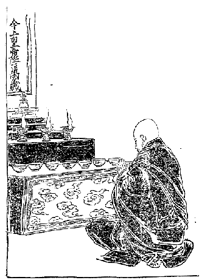
慧海師元旦に皇朝の万歳を祈る
その本屋なるものも自分の家で店を出して居るというものはない。チョーカン即ち大釈迦堂の前に広場がある。その広場の石の上に十人ばかりの本屋が大きな風呂敷を広げその上へ本を
列べて店を出して居る。それも日本のように拡げて見せない。みな積立てて列べてある。
このほかにラサ府では本を売る所はない。シカチェでは
市場に二、三人そういう
露店を出して居るだけで、そのほかにあるかないか知りません。とにかく私の行った都会ではこの二つしか見なかったです。
版摺に任してもその版木を
摺ることを許されん場合には、自分が他から紹介状などを
貰いわざわざ出かけて行って刷らして貰うようにして、それでようやく書物が整うという始末ですからなかなかむつかしい。
まあそういう風にして大分書物も集まったです。で、その書物はみなセラの寺に置いてあるものですから、私の居る舎の近所の坊さんは
呆れ返って、「読まない書物をそんなに沢山どうするだろう。実にあの人は遠い国から来て居るのだから、あれだけ沢山な書物を持って帰ることは出来やしない。博士だってあの人の持って居る書物の三分の一も持って居るものはありやしない」といって非常に怪しまれた位。そういう話を聞きましたからその後買うた書物はみな大臣の宅へ持って行って自分の部屋に集めて置いたです。
さて十二月も末になっていわゆる
大晦日となりました。その夜は特に
支度をしてまずラサ府の釈迦堂へ指して
燈明を上げに自分の小僧をやりました。それはバタの油を
拵えてラサの
釈迦牟尼如来の前に
列んである黄金の燈明台に、そのバタの油を
注いで上げるのです。別段黄金の燈明台へ上げたからというて非常に御
供養になるということもございますまいけれども、つまり釈迦牟尼如来に対してじかに燈明を上げますには黄金の燈明台に入れなければ上げることが出来ない。
で釈迦牟尼如来に供養の燈明を上げる時には、その燈明台を借る代として二タンガー納めなければならん。で私は自分の舎にあってまず釈迦牟尼如来の
掛物を掛け、その前に釈迦牟尼如来の
仏舎利を納めてある舎利塔を置き、大きな銀の燈明台を三つ列べてバタの燈明を上げ、その他沢山な
供養物を供え
仏名を
唱えて礼拝を致し、もはや十二時過ぐると思う頃から法華経を唱え始めたです。で午前四時に至って
を挙げました。祝聖の儀式というのは神聖なる明治天皇
陛下万歳万々歳、皇后陛下の万歳万々歳並びに皇太子殿下の万歳万々歳を祝願し、ついで日本国家の威力が
旭日の輝くごとく万国に光被せんことを祝願するので実にめでたい
願文である。厳粛にその式を行いその願文を読み立てて後に自分一人で感じました事は、チベットのラサ府において神国の天皇陛下、皇后陛下並びに皇太子殿下の万歳万々歳を祝願したのは、大日本帝国
肇まってこのかたほとんど三千年を経ましたけれども今始めてかと思いますと何となく有難き感に打たれて、われ知らず涙が
溢れました。
高原におとす涙は日の本の
天が下なる草の露かも
で残りの法華経を読みながら窓から外を見ますと初日が東の
雪峰の間から昇りかけたです。雪に映ずる初日の
美しさに加えてわが窓の向うなるセラ大寺の広庭には幾羽の鶴が
徐ろに歩みつつ幾声となく叫んで居る。その景色の壮麗なることは景色好きのわが国人に見せてやりたい程の心地がしました。殊に法華経を読んで居る暁に鶴の声を聞き実にめでたいというところから、
うたひつる声に明けゆく高の原
あづまの君の千代やことぶく
たへづるや妙のみのりの花の庭に
妙のこゑもてみのりことぶく
と詠じましてそれで一月一日をめでたく過ごしました。
一月四日即ちチベット暦の十一月二十五日から、サンジョェということが始まったです。この日は新教派の開山ジェ・ゾンカーワのお
逝れになった日で大変な騒ぎ、チベット人はみな家屋の上で百の
燈明、千の燈明を供養するのですから、ラサの市中、セラの大寺、ガンデンの大寺、それからその間の村々の家の屋根には幾千幾万の燈明が上って居てその美しさは
喩えようがない。この日は沢山御馳走を拵えてそうして昼のうちはみな
遊び戯れて踊りを踊る、歌を
謡う、それはそれは誠に陽気な日です。
しかしここに一つ随分困ることがある。このサンジョェを行うためにラサ府の人達は大抵自分の家へ出て来る目上の人に対して金をくれと、それはこの十一月十日過ぎから乞いますので、サンジョェのために乞食をするのは当り前だといって随分立派な家の人が金をくれといい出す。私共もあちらこちらに知って居る人があるので随分金を取られました。あちらで一タンガーこちらで二タンガーという風で、ちょうど五円ばかりいりました。また来年になったならばその倍も三層倍もかかるだろうとある人がいって居りましたがそうかも知れません。知って居る人が
殖えれば殖えるだけ余計取られるんですから。
サンジョェというのはチベット暦の十一月二十五日の夜の十二時から始まりますので、その意味は
普賢菩薩の願文会という意味です。二十五日の夜から十四日間その事をやるので、毎夜十二時から朝までお経を読みます。それは誰もが
詣らなければならん。私も誠に結構な事ですから参拝に参りましたが、なかなか本堂の中は
静粛なもので、普通の時から見ますと僧侶も夜分で来る人も少なし、それにお経の唱え方の優しい事というたら音調が何となく厳格であって、おのずから人の心を
鎮めるような力がある。そういうところを見るといかにも極楽世界の菩薩達が集まってお経を読んで居るかのように思われる。
なぜなれば普通の時と違って本堂の内は
綺羅錦繍で飾り付けられて居る。
五色のシナ
縮緬で
捲立てられた柱もあれば、またある大きな柱は赤地に青と白との
唐草模様の
羅紗で捲立ててある。で常には何もかかって居らなかった壁の上にもまた柱の上にも、チベットでは最上等に位する仏画の軸が沢山にかけられて居る。その他いろいろの飾物があるのみならず、本堂の中には三千五千のバタの燈明が
燈って居るです。バタの光というものは
菜種油の光よりも非常に白く、ちょっとガスの火に似て余程明るいです。
そういう中でお経を読んで居ると何となく自分はありがたい観念に打たれるです。大抵人は
境涯に化せられるものであって、どうもそこへ行って見ると自然にありがたくならなくちゃならんようになって来る。なおその読みつつあるお経の文句の意味などを考えると、そぞろに涙の
出ずるを
禁め得ない。かかるありがたい
普賢菩薩の
願文会においても、悪い
奴はどうしても化せられぬものか。随分妙な事が沢山ある。夜が明けて
僧侶が外へ出て来る時分には信者が
布施をするといって「ゲ」を出します。一タンガーずつ出すこともあれば半タンガーずつくれることもある。
僧侶は出かけにそれを貰うのですが、悪い奴はそれを
一遍貰ってまたくるっと裏から廻って来てまた一遍、都合がよければもう一遍、で三遍取ったとか四遍取ったとかいうような人間がある。それはなるべくそういうことをしないように
警護の僧を付けてある。ところがその警護の僧が
訝しい。自分が
見張をして居りながらなるべくそれを取らせるようにする。取らして
其金は自分が取ってしまうです。小僧などはその見張に
吩付けられてうまく人の間を
潜り抜け、くるっと廻ってまた一遍取って来て、私はこれだけ取って来ましたといってその人に渡すです。するともう一遍やれなかったか位の話。
もし小僧が
吩付けられた時分に
嫌がってやらないと、何かに
托けて太い棒でぶん
擲ぐられる。小僧は擲ぐられるより
盗をする方が楽ですからその命に従って盗をやる。その事が知れてふん
捉まってぶん
擲ぐられても平気です。もっとも擲ぐられるだけの事でそれがために寺から
追出されるということも何もない。寺ではそういう時分の
盗人に対してはごく寛大です。
もとよりこれは本当の盗人とはいえませんが、しかし人の家に在る物を一つでも取ったという場合には、その僧侶は
直ちに退寺を命ぜられるのに、とにかくこういう場合に限り、二度取っても三度取っても擲ぐられる位の事にて済むのは
妙です。しかし私の居った寺では酒に対してはごく
厳しいもので、酒を飲んだ事が知れると寺を追出されるです。
そういう悪い事をするのは
壮士坊主に最も多いのですが、壮士坊主というのはすっかり頭を剃って居るのもあり、
顳
の毛を
奴のような具合に四寸も五寸も伸ばして居るのもある。で
其毛を下に
垂らして
吊鬚のような具合に見せて居るのです。しかしそれを
厳しい僧官に見付けられますとその
顳に生えて居るところの毛を
引抜かれてしまう。一時に沢山の毛を抜くから血が出るです。誠に
酷たらしい有様が見えて居るけれども当人はかえって平気です。いな、そういう風にしていかにも勇気
凜乎たる有様を人に示すのであるという。
しかしなるべく僧官に見付からないように、本堂などに来る時分にはその毛をくるっと耳に巻いて居る奴もあれば、顔一面に
鍋炭とバタを
塗付けて毛のあるのを分らん様に隠して居る奴もあるです。ちょっと見るとお化けのようですが毎日そんな者を見て居るとまた何ともなくなってしまう。そんな事までして少しばかりの毛を
蓄えて置くのはどういう訳かというと、それが壮士坊主仲間では非常に意気だ
粋だといって
羨まれるからです。なお
厭な事はこういう
厳粛の
法会の時に当ってとにかく金を沢山貰えるものですから、貧乏な壮士坊主の常としてうまい肉を余計喰う奴もありまた小僧を
慕う壮士坊主もある。
で夜の十二時頃に本堂に出かけて行くところの小僧を
捉まえて、泣き
喚く口を
塞ぎながらどこかへ引張って行くというような事も
折々ある。それが知れたところで別段罪にならん。大抵その儘
打棄ってあるです。それはみんなそういう事をやるのですから、それをあまり
喧しく言うとかえってその
喧しく言い出す僧官が
不首尾になって来るものですから、その儘打棄ってある。多い小僧の中には面白半分にそこへ行く奴もある。またうまい物をくれるとか
玩具をくれるとかお金をくれるからというて
慾得から好んで行く小僧もある。
甚しきは少し金でもあるとかあるいは豊かに暮して居る美しい僧侶を見ると、その小僧は出来得る限り小ざっぱりと
綺麗に
支度をして来て、その金持の僧侶を誘う奴もあるです。そうして
袈裟などを拵えて貰う。誠に
穢わしい話ですけれども実際に行われて居る事ですから……。そういうことが沢山行われるからしばしば
喧嘩や
決闘が生ずるので実に見苦しい訳です。
こういう
大罪を犯して
恬として
愧じないところの人間がです、かえって虫を殺したり
虱を殺したりすることを大いに恐れてしないような事もあるです。それからまた何でもない寺の規則とかいうような事を
一生懸命に
喧しゅういうて守って居る。とかく小さな事にばかり
拘泥して、いや着物の着方はこういう風にやらないではならんとか、あるいは物の言い方はこうだとか
喧しく言うて、それを守るのが道徳を積んだかのように思って居る。それからまた堂とかあるいは塔へでも
参詣した時、もしその堂または塔を右へ
廻らずに左廻りをして行くともう
大罪を犯したかのように
喧しゅう言うですから、人を殺すほどの悪い男でもやはり堂や塔のあるところへ行きますと、必ず右廻りをして決して左からは行かない。
ちょっとした
石瓦のような仏様の
破片でもあると必ず右へ
指して
廻って行く。それは決して悪い事ではない。これには
因縁があります。なれども、しかしそんな小さな事に非常に注意するに
拘らず、人の小僧を夜中
担げて往ってからして
破戒な事を行うて平気で居るというその真意が分らない。
朦昧といってよいか馬鹿といってよいか。いわゆるこれが
顛倒衆生といって全く
逆まな行いをして居る者であろうと思われる。
これについて面白い話がある。ちょうど日本の
一休和尚のような方がチベットにもあって、その人の名をズク・ニョンというて居るです。これはズクパの国に生れた
気狂いという意味ですが実は気狂いではない。非常に尊いラマであって、つまり世間がいろいろの事に迷うて居るのを
悟らせようというので、一休和尚のような具合に
行脚していろいろの面白い事をやったのです。ですからこの人の伝記はちょうど一休和尚の伝を読むようである。チベットと日本とはもちろん人情が違って居るからそりゃ
幾分か違うところもあるですが、人を笑わせるような事をして導くという点に至っては全く一致して居る。
このズク・ニョンがある時新教派のラマと
道連になったことがある。その時にズク・ニョンは
途に小さな石があるのを見て、その石をばわざわざ
避けて遠くを廻って向うの方に行ったです。ところがまた大分大きな石に
遇いました。これはぜひ廻らなくてはいけない石ですのに、さはせずしてパッと
飛踰えて向うに行った。すると新教派のラマが不思議に思って「何でそんな馬鹿な
真似をするのか。大きな石は廻らなくちゃあ危ないじゃないか。小さな石はヒョッと
飛踰えても平気なものじゃないか。どうも馬鹿な事をする人だ」と
理屈詰に問いますと、ズク・ニョンは笑って「しかしお前達の宗派のラマ達は俺のやって居る通りの事をしてるではないか。これが馬鹿ならお前達もみな馬鹿だ。」
「そりゃまたなぜか。」「よく考えてみるがよい。
虱を殺す位の小さな罪を非常に恐れてからして遠廻りする位の事をやって居ながら、
男色に
耽るとか
牧畜を遣って
生物を殺すような仕事をして居るではないか。そういう大罪を犯すことを何とも思わずにヒョイと
飛踰えてしまうではないか。それだから
俺もお前の方のラマのする通りやったのだ」とこういうたところが、
連れのラマは大いに
恥入ったということです。でサンジョェ（
普賢菩薩の
願文会）というものは表面は非常にありがたい、裏面だってやはり心ある人には実にありがたいものですけれども、そのありがたい事までが悪い奴のためには悪い事をする機会、悪事を行う場所に供せられて居るんです。
次に
法王政府の組織に移ります。法王政府は非常に
錯雑して居りますので
充分に述べることは困難である。ことに私はそういうことを専門に調べたのでない。たとい専門にやるとしたところが、もしそういうことを専門に取調べるというと、いかに親しい私の
知己の大蔵大臣でもきっと疑いを起すに違いないです。ですからなるべくそういうことはこちらから特に質問しないようにして、何か大蔵大臣と話しつつある間に
折に触れて少しずつ尋ねてみたり、疑いの起らない範囲内において研究したんですからどうせ充分な事はない。で、あちらこちらと尋ね得られる限りは
大分尋ねてみたですが、なお細かな部分に至っては不明の点も大分にあるです。この事は始めから断って置きます。
さて法王政府の組織は俗人と僧侶とによって成立って居る。その数はほとんど
均しいので、まず
勅任官の僧侶が百六十五名ある。俗人もまた百六十五名もある。僧侶の勅任官をチェ・ズンといい俗人をズン・コルといって居る。その勅任官を一般に
統轄して居るのは僧侶の方ではツン・イク・チェンモという四人の大書記官である。四人の内でもその実権を持って居るのはそのうちで一番古く官に
就いたものである。俗人の勅任官を
総轄して居る者はシャッベー（総理大臣）でこれも四人である。この四人の中でもやはり一番早くその官に就いた者にその主権があるので、他の三人はただ相談に
与かるだけで
専らその相談を決定するのは先任の総理大臣である。
は総理大臣四人と三人の大蔵大臣、二人の陸軍大臣、一人の
宮内大臣、一人の教務大臣、一人の司法大臣と僧侶の
大書記官とによって形造られて居る。この僧侶の勅任官の出て来る家筋は大抵きまって居りまして、決して平民から出ることは出来ない。まず多くは華族から出ますので、折には
真言族、ポン教族、
金剛族から出ることがある。その制度は郡県制度か、封建制度かどっちとも名を付け難いです。これからその訳を述べます。
はちょっと見ると封建制度になって居ります。それは華族の祖先という者はみな国家に功労のある人である地方を自分の領分に貰ってある。いわばそこへ
封ぜられたようなものでそこにはその地に属するところの平民がある。で、その華族家と家属及び平民との関係はほとんど国王と人民との関係のようなもので、その平民を
生殺与奪するところの権利はもちろんその華族に在るんです。またこの華族は平民から
人頭税を徴収します。その人頭税はごく貧乏人でも一タンガー位出さねばならぬ。その上の人になると十タンガーも百タンガーも
納めるものがある。例えば非常に出世したとかあるいは沢山な財産があるとかいう人はそういう大金を納めなければならん。
ただ人頭税を納めるだけではない。その華族に対しては自分が土地をその華族から貸して貰って居ることになって居るですから、その
租税を納めなくてはならん。それでこの人頭税というものは随分苦しい税ですけれども、納めなければ
擲ぐられた上に自分の財産を
没収されてしまいますから、非常な苦しい思いをしても
歳の暮には人頭税を納めなければならん。その税を納める苦しさに
堪えずして
坊主になる者も沢山ある。坊主になると人頭税を納める必要がないからです。税を免かれるために坊さんになる位ですからどうせ学問をする考えもなければ仏教を学んで人のために働きをしようという考えのあるべきはずもない。
ある時私の師匠のチー・リンボチェという方が言われたことに、「この
節わが国では坊主の数が沢山あるから仏法が盛んであるといって大いに
悦んで居るがどうだろう。ごろごろと
要らない
石瓦が沢山あるより
金剛石が二つ三つある方が
尊いではないか。どうも困ったものだ」と
歎かれた事がある。それはその訳なんで多くの坊主の目的が既に人頭税を免かれるというに在るのですから……
しかしながら一方から考えると実にチベットは
残酷な制度で、
貧民はますます
貧に陥って苦しまねばならぬ。その貧民の苦しき状態は僧侶の貧学生よりなお苦しいです。どういう有様に在るかというと、僧侶の貧学生は喰ったり喰わなんだりして居ってもとにかく月に
一遍ずつ
学録を
［＃「学録を」はママ］貰うことにきまって居るし、また
折々は
布施物もあるです。で自分一人の事ですからどうやらこうやらその日その日を過して行かれるですが、俗人の貧乏人は
女房がある。そこへ子供でも出来たらそれこそ大変です。どんなにその子供を育てても多少の金はかかる。
その金はどこから借りるかといえば
地主から借りるほかはない。借りたところで
滅多に返せるものでない。返す見込みのない金をどうして地主（華族）が貸すかといいますと、その子が大きくなった時にその家の
奴隷にするのです。それを見込みに金を貸してやるのです。というたところでどうせ沢山な金は貸さない。むろん少しずつ貸して十円位になり、その子供が十歳位になるとその十円の金のために十五年も二十年もただ使いをするという訳です。ですから貧乏人の子供は
で誠に
可哀そうなものです。華族とその華族に属して居るところの平民との関係はまずこういう風ですから、その点から見ると
封建制度でその華族家なるものはいわゆる
諸侯の位置を占めて居るように思われる。しかしまたその他の点から見るとまた
郡県制度であると思われる事もある。なぜなれば華族なるものは大抵ラサ府に住して居って自分の
領地に行って居らないのが多い。よしんばその地に家はあっても
留守番だけを置いて自分達はラサ府に居る。そうかと思うと政府から命令を受けてある郡を
治めに行く者もある。で華族に
管轄されて居る平民のほかにまた政府へ直接に属して居る人民も沢山ある。
なお華族に属しつつまた政府から幾分の税金を
徴収されるです。ですから人民は二重の税金を払わなくてはならん。
人頭税まで
混ぜますと随分沢山な税金を納めなくてはならん。その
勅任の僧
侶両官は法王の命令を受けて、三人なりあるいは二人なり、司法行政の権力を
握って地方へ租税を取立てに行くです。地方から取立てた租税はもちろん中央政府へ納めるのです。その税は物品もあればあるいは銀貨もある。ことに金鉱などから納めるところの税の中には黄金もある。それから輸入品に課した税金などもやはり中央政府に納めるです。
中央政府はその集まった物品及び税金を何に使用して居るかといいますと、その大部分は僧侶を養うことに使用するです。即ちラサ府に居る二万四、五千の僧侶と、各地方に散在して居る僧侶を保護して居るのです。しかしその寺々の坊主なり何なりをすべて政府で引受けるという訳ではない。ただ事のあった時分に政府で半分出すとか何とかいう訳でいわゆるその寺の財産に応じて政府が補助をするのです。
その次が仏堂を
普請するとかあるいは
仏陀に
供養する。そのために随分金が沢山かかる。そういうようなところに多く用いられて居る。それから
親任、
勅任及びそれ以下の官吏にやはり年俸を与えるです。その金は
僅かなもので、総理大臣その人でも年に麦が六百
石内外、大蔵大臣が麦三百六十石、それもきっちり貰うかというに余程
妙です。貰わずに打ち棄てて置くのもある。
私の
寄寓して居った現任大蔵大臣は大蔵大臣になってからちょうどその時分が十年目位だそうでしたけれども、一石も貰わなかったそうです。「一体どういう訳か。義務的にやって居るのか、それともほかに何か収入があるか」というと、「自分の家に属してある属領から上って来る物があるからそれで沢山だ。
別段に法王に御
厄介をかけてそんなに沢山貰うにも及ばぬ」とこういって居るです。
しかしみんなそういうふうにやって居るかというと、「いや、きちんきちんと請求して受取る者もあるけれども、少し家の楽な者は大抵は貰わぬことにして居る」という。もっとも中にはそういうよい顔をして居って内実
賄賂を沢山取る方もある。しかし私の居った大蔵大臣などは、賄賂をどれだけ持って来なければ事をせぬというような事は決してなく、ただ向うから好意上で持って来る物を
請取って居られるだけで、ほかの総理大臣のように沢山取らないようでした。
で、この百六十五名の僧侶の勅任官は
平生何をして居るかといいますと、地方の知事のような者に
派遣される。もっともその時は俗人一人と僧侶一人と二人ずつで出て行くです。また何かむずかしい裁判事件でも起りますと、地方へ指して僧俗組合って二人あるいは四人ずつ派遣されることもある。それは向うで取調べをして裁きを付けて来るだけの実権を持って出かけて行くのです。これまでの例によると、向うで取裁くといってもつまり
賄賂の多少によって事を決するようになって居たそうですが、現今の法王はなかなか
遣人で、そういう事をやって来たことが知れるとじきにその者の財産を没収し、その地位を奪い取ってしまうものですから大いに恐れて、近頃は大分によく
裁断を下すようになったそうです。
しかし大事件にぜひとも法王でなければいけないとか、また大変な悪漢を重き刑罰に処するとかいう場合には、必ず法王のところに持って来るです。すると法王は
其事を裁断して命令を下すのですが、こういうところから考えて見ると、法王の資格というものは余程面白いものです。いったい人を刑罰に処してあるいはこれを殺せとか、または
流罪にせよとかいう命令を下すということは、政治上俗人の上からいえば当然の事で少しも不思議はないのです。
けれども法王といえば
具足戒を備えた
比丘である。この戒法の上からいうと事の善悪いかんに拘わらず人を殺せという命令は出来ないはずです。たとい殺してもよい者にしてもです。小乗教の二百五十戒を受けて居る者は決して人を殺すことの命令を下すことが出来ない。法王はもとよりその
具足戒を受けて居る人である。だからその戒法の上からいったらもちろん人を殺せと命令することが出来ない訳です。しかるに法王はそれをやって居る。
しからば法王は俗人であるかというに決して俗人でない。妻君もなければまた酒も飲まずしてちゃんと小乗の比丘の守るべき事を守って居らるればこそ、セラあるいはレブンあるいはガンデンというような大きな寺の僧侶がみなこの法王の
具足戒を受けるのです。私も法王から具足戒を受けろというて大変に勧められましたけれども、私はどうもその行いの間違って居る人からその戒法を受けることが出来ないという考えでしたから、とうとう受けなかったです。たとい王様でも仏法の法則に違った事をして居る以上は王様であるからといって具足戒を受ける訳にいかないです。
しかし私はこの法王から秘密の法だけは受けました。なぜかというに秘密の法は具足戒に関係した事でないからです。法王その者がすでにそういう怪しい者ですから、その
下に及んでは僧侶か俗人か訳の分らない者が沢山ある。俗人で僧侶の
真似をやって居る者もありまた僧侶は大抵俗人の真似をしない者はない位です。前にも申しました通り
耕作、商売等よりして牧畜に至るまでやるのですから全く俗人といってよい位。ただその違うところは頭を
剃って
法衣を着けて居るだけである。
ですから自然僧侶の中にも壮士坊主というような者が出来て、軍人のやることを日課としてなおかつ僧侶の名を保って居るという訳です。こういう訳ですから万事が非常に
紊れて居って、チベット仏教の現今の状態は全く新教派の
開山ジェ・ゾンカーワが敷かれた
趣意とは反対のものになって実に見るに忍びない有様になって居るのです。
チベットの婦女子の内で一番
粋であるところのラサ府の婦人の風俗、容貌、品格、習慣、性質、欲望等についてお話致します。これはなかなか大切な事で、婦女子は未来の国民を造るのでありますから、その国の婦女子の事を
軽々に
看過することは出来ない。独立心の強い
賢母の下には米国を独立せしめたるジョージ・ワシントンの出たことを見ても分ります。ですからチベットの外交政略の事を述べます前に、この国人の独立心のいかにあるかを見ますのが必要で、またこれを知るにはまずこの国の婦女子の事について説明する必要があります。
始めに風俗の事を述べます。けれども
委しい事をいいますればなかなか一席のお話では尽きませんから大体を申します。着物の着方はあまり男子と変らない。ただ幾分か優しいように着こなすだけであって着物の
仕立方は同じ事である。帯は幅一
寸五
分位、
丈は八尺位、まあ
細帯のようなものです。それは決して結ぶということはないので、その帯の先の
織出しの糸が
房のようになって居りまして、くるくると巻付けて
端切を中へ
挾み込んで置くのです。
それから髪の
結いようですが、これはシカチェあるいは他の部落の婦人と違い、ラサ府及びその付近の女はシナ製の
大髢を入れて中央から左右へ分けます。実はチベット婦人の髪の毛は短い方ですから髪を沢山に用いる程よいとせられて居ります。左右へふっさりとヤクの尾を束ねたように分けて、そうしてその分けた毛を後へ下げて四つ組に組むのです。で、その両端は房の付いて居る赤色あるいは緑色の
絹打紐で
括り、その紐との
繋ぎ合せには真珠の紐を七つばかり連ねた
根掛のような紐を用いて両端の
締括りにしてあるです。
それからその
真珠の紐の真中には大真珠あるいは
瑜（緑玉）を入れて飾りにしてある。で頭の頂には高価な
瑜、
珊瑚珠、真珠等で飾られてある。パーツク（頭飾環）を巻きその中央にはムーチク・ギ・シャーモ（真珠帽）を
戴いて居る。耳にはエーゴル即ち黄金耳飾塔（平たい黄金塔にて中に緑玉の飾りあるもの）を掛け、胸にはドーシャル（
瓔珞）を掛けて居る。この瓔珞は一番高価なものであると三千五、六百円もするそうです。時によるとそれだけ金を出しても
買調える事が出来んそうです。
それからケーター（首飾り）、これも宝玉を集めたもので、その首飾りの真ん中（胸の上部に下って居るところ）にはセルキ・カーウ（黄金
龕子）を付けてある。その
龕子一つでも二百円以上三百円位するそうです。で右の腕には小さな
法螺貝の
殻の
腕環、左の腕には銀の
彫物のしてある腕環を掛けて居る。それから
前垂は誰でも掛けて居る。前垂でも好いのは一個三十六円位するのがある。そのはずです、チベット最上等の羊毛だんだら
織ですから……。実に立派なものです。けれども
指環は貴族の婦人を除くのほかは大抵銀が多いのです。
履はみな赤と緑色の
羅紗で
縫われたところの美しい履を
穿きます。そういう立派な
粧いであるに拘わらず顔には折々
煤黒い物を塗って、見るからが実に厭な粧いです。けれどもその国の慣れて居る人間の眼には、その煤黒い下に赤味のあるのが非常に
粋とか
意気とかいうのだそうです。これがまあ婦人の身廻りについての風俗といってよい。その容貌はなかなか美しいのも沢山ある。少し色は黒いけれどもまず日本の婦人とほとんど同じような
顔容をして居る。
しかし日本の婦人よりは
強壮で身体が余程大きい。とても日本の小さな婦人のようなのはチベットでは見ることが出来ん位です。で身体の大きなところへ
緩かなる大きな着物を着て居るものですから、その様子がいかにも寛大に見えて居る。貴族の婦女子に至ってはその色の白さといいその美しさといい、日本の美婦人に対してほとんど
譲らない位である。
ことにカム地方の婦人の多くは色も白くまたなかなか美人が多い。けれどもごく
愛嬌が少なくちっとも愛くるしいという顔を見ることが出来ない。誠にツーンとして情ないという有様が見えて居る。またその言葉の使い方もケンケンしていかにも女らしくない風がある。しかし悪い心は少ないようですけれどもとにかく愛の容貌を備えて居らない。その点においてはラサの婦人は実に愛嬌者です。いな、むしろ愛嬌者というよりも愛くるしいという方で、
敬うべき点は少し欠けて居るようですけれども、とにかくラサの好色男子、いな、普通の男子をしてその心を
悩殺せしむるに足るだけの容貌を備えて居るです。
しかし品格は普通下品な方です。物を喰い喰い道を歩いているところなどを見るといかにも下品である。中等下等の婦女子に至っては、いずれも小商人根性があって
些細な事に
齷齪する心がその品格までに現われて、何となくこせこせしたような様子が見えて居る。貴族の妻とてもやはり同様で、
高尚なる品格いわゆる華族の妻として備えて居るような品格のある人を見ることはごく少ない。全くないともいえませぬが、まず普通は芸者上りの奥さんのような者が多い。
もっとも芸者上りでも長く
経てば奥さん社会の風習に慣れて、品格の好くなる人もありましょうけれども、チベットではそういう品格の悪い女ばかりが貴族社会に居るのですから、いつまで経っても改る気遣いはない。ごく人には好かれ易いが、さて人から敬せらるるという品格のないのはいかにも欠点である。これは
大方一人の婦人で多くの夫に仕えるからして、こういうような気風になったのであろうと考えました。
の中で一番よくないと思うのは酒を飲むのと不潔な点である。日々の仕事の勤め振りはどうかというと、日本の婦女子に比するといかにも
怠惰で足元にも寄付けないけれども、他の国の婦女子に比しては余程働くというてもよかろうと思うです。殊にラサの下等社会及び中等社会の婦人は、商売するのが自分の習慣のようになって居るものですから、何でも商売の
掛引でやって居る。自分が夫を定むるにもやはりそういうふうである。で前にもいう通りチベット人は婦人とてもごく不潔です。
ラサ府の婦人はまあ顔を洗い手を洗う事位は知って居るけれども、その
膚を見ると
真黒である。つまり人の見るところだけちょっとよく洗って置くという位のもの。上等社会はまんざらそうでもない。なぜならば上等社会の婦女子は何にも仕事がないのです。ただ髪を洗うとか鏡を
覗いてお
粧りをするのが自分の仕事である。そのほかの仕事というたら、夫の仕事の助けをするのか
邪魔をするのか知らんが、
喧しく言立てるのが仕事なんです。なかなか上等社会だからといって黙って居る妻君はごく
稀で、何事にも妻君が口を出すです。ところが夫はその口を出した事をただ
諾々と
肯くばかりではない、かえって夫の方から妻君の意見を尋ねるということが多いのです。
ところで上等社会の婦人は
幾分か
綺麗であるとはいうものの、一番お
座の冷める話は、お
便に行ってその儘お越しになるという秘密を思い出すと、どんな美人でも一遍に嫌になってしまうです。いったいチベット婦人は
裁縫というような事は決してしないです。
綴くりする位の事でもやはり裁縫師を頼んでして貰わなければならん。その裁縫師は男であって女の裁縫師はない。もちろんチベットでは
機織をする女はある。また糸
紡ぎをする者もある。
糸を紡ぐといったところで
紡車がある訳じゃない。細い竹の棒の先に円い
独楽のようなものが付いてある。その竹の棒へ練付けた羊の毛を巻いて、そうして口でもってだんだん
繰出して、よい
加減に長くなったところで
撚をかけるという具合にして糸を
拵えるのですから太い糸しか出来ない。余程
鍛練して上手になった人が、まずむらのない細い糸を拵える位のもので、その細い糸といったところで
紡績糸のようなものは夢にも見ることが出来ん。そのほかに糸を拵える方法はチベットには全くないです。
地方の婦人は
耕作にも出れば
牧畜もやるのです。第一婦女子は乳を煮てバタや何かを製します。その製し方は、煮た乳をよい頃に冷ますとその上にクリームが出来る。そのクリームを
取除けてしまってその中へ
酸乳を入れて
蓋をして一日も寝かして（温かに保つの意）置くとショー（酸乳）即ち固まった
豆腐のようなものになってしまう。その酸乳を長い桶の内に入れその上へ少しばかり
微温湯を入れて、そうして棒の先に円い蓋の付いたもので上げたり下げたりして充分
摩擦すると、だんだんバタとタラー（バタを取った後の実ある乳なり）とが分かれて行く。その分れ加減にしたがって
微温湯を加えなお二時間ばかりも摩擦しているとそのうちにすっかりバタとタラーとが分解されて、バタはバタでこちらへ取収めることが出来る。
ところで跡に残っているそのタラーをよく煮ると今度は
酸い水とその実とが二つに分かれてしまう。その実というのはちょうど
豆腐を
漉したようなものでチベット語でチューラというおから（
豆腐滓）よりはまだ柔かく全く豆腐の
砕けたようなもので非常にうまい。しかしそのタラーの水も無駄にはならん。それを飲むと
喉の
渇きを止めるにはごく都合がよい。少し酸味はあるがなかなか味のよいものです。
チューラは
生でも喰いますが、沢山出来るものですから
乾し固めて置きます。それが即ち
乾乳である。婦女子は多くそういう仕事をやる。それから羊追いヤク追いに出かける。だから地方の婦人の働きはあえて男に劣らない。この働きの上からいうても地方は男女同等であり、また家族の関係からいうても
である。よそへ雇われて行った時分でも男女同じ給金です。べつだん女だからといって安いということはない。その代りに働くことも同じように働く。これはやはりチベット婦人が身体が強壮でいかにも労力に堪えることが出来るからです。それからその性質はちょっと見るとごく温和でなかなか愛嬌があるです。かかる婦人は決して人に
仇を加えたりあるいは
劇しく怒るということはあるまいと思われるほどであるけれども、時として怒ると非常なものでなかなか容易に承知しない。自分の
良人が頭を地につけて
詫っても、
肯かないというて居るのを私はたびたび見ました。
そういう点になると実に
我儘きわまったもので、魔女か
夜叉としか思われないほど恐ろしい有様が見えるです。だからチベット婦人はあるいは猫といってよいかも知れない。常には優しくしていざこうという時は猫が
鼠を
捕るごとくあたかも虎のような勢いを現わして良人を
辟易させるです。またきわめて我儘で
良人を
踏付けて他に男をこしらえるのを何とも思わんです。実に色慾に
耽ることは甚しい。
少し
活計の思わしからぬ家の婦人などはわざわざ他の男のところに出かけて行き、それが知れたところでいっこう平気なもので、良人に向い何をいうかと思うと、「お前は私をよう養わんから私は
銭儲けに行ってやった」というような口を
利く。実に
酷い有様です。それからまた
小利に
齷齪する心がごく鋭い。こうすれば将来どういう事が起るとかあるいは一村一国にこういう関係が起ろうなどということは夢にも思わない。婦人にそういう注文をするのは少し無理でもありましょうが、少なくとも他人に対する利害の関係を思うてくれれば余程よいのです。
ところが他人はどうでも構わん。甚しきは自分の良人が利益を失うても、自分さえ利益を得ればよいというような有様が見える。実にその点においては鋭い。その鋭い気質が余程自分を害して居る。なぜならば自分の利益を得るために自分の良人を害するというのはつまり自分をも併せて害するのであるからです。けれどもそんな事にはいっこう
頓着なく一生懸命に眼前の小利を
謀ることに
汲々として居る。ですから
というたら有名なもので、奥さんよりお
内儀さんに至るまで
臍繰金のない人はほとんどないです。どんなつまらない婦人でも大抵臍繰金を持って居る。いつ
離縁されても「へえさようなら」といって出られるようにちゃんと
支度をしてあるです。しかしそういう悪い点ばかりかといいますと決してそうでない。また自分の気に入った人に対する時分には誠に行届いたもので、そりゃもう文明の婦女子といえども及ばないほど細かな事によく気が付いて、何から何までよく世話をする。
で他の人の心を
悟り知ることも実に早い。こちらで何もいわないうちから、気転を
利かして人の慾望を満足させるようにするです。こういうところを見るとなかなか立派な女であると思われるに拘わらず、前にいったような反対した性質を備えて居る。要するにチベット婦人は自家
撞着の性質を一身に備えた、奇妙奇態な婦人であると思われたです。
は先にいったように小利を見ることに急であるからして他を
顧みるに
暇がない。しかしその利益を得るために自分が自立してやるかというに決してそうでない。どうしても他に頼らなくてはいかないという考えを
始終持って居る。こりゃ恐らくチベット婦人の欠点であるかも知れませんが、自分一人で商売をして充分衣食住をなし得る力があるに拘わらず、なお他人によってその上の利益を得ようという事ばかり始終心がけて居るです。まずある家に
嫁入して後、不幸にして良人に死なれても幸いに財産が自分の手に入ったからというて、安楽に自分の子供を育てながら
後家を守っていくという婦人は、チベットではほとんど見ることが出来ん。
ごくのお
婆さんとかごくの
醜婦でなければ後家で居る者は
稀である。もう少し売れ口のあるような女なれば必ず
良人を持つ。チベットでは四十あるいは五十位までは嫁入をするです。というのは
必竟独立心に乏しくただ他によって自分の幸福を全うしよう、今得て居る状態よりよい状態を得たいという慾望、これはまあ人として当り前の事で、そうあるべきはずでもありまたその心掛けがなくてはならんのでしょうけれども……。
というてその
操をも守らず自分の身分をも考えずに、良人が死んでまだ四十九日
経たぬうちに最早お代りが出来て居るというに至っては、実に
呆れ返らなければならぬのです。余程教育ある婦人でも
後家を
立て通すというような美しい意気をもって世を過すという婦女子はチベットにはほとんどないです。これでチベット婦人はどんな者かというごく大体は分りましたろうが、さてこの婦人が結婚の
礼式は先に説明した通りですから、今度はこの婦人が子供を産んだ時の取扱いについて少し説明をしたいです。
チベットでは男の子が出来れば誕生の礼式を挙げますけれども、女の子の生れた時分にはその礼式を行うということはまあ稀です。その礼式も地方によって少しずつ違いがありますけれども、大抵男子の生れた時分には三日経って命名式を行う。最も奇な事はその子が生れたからといって、決して洗いもしなければ
拭きもしない。母の
胎内から出て来た儘で少し汚れ物をほかへ取って置くだけの話。もっとも産婆というような者もありません。もちろん生れてから日に二度位ずつは身体の各部ことに頭へ余計バタを塗り付ける。それがバタで
沐浴するというてもよい位です。
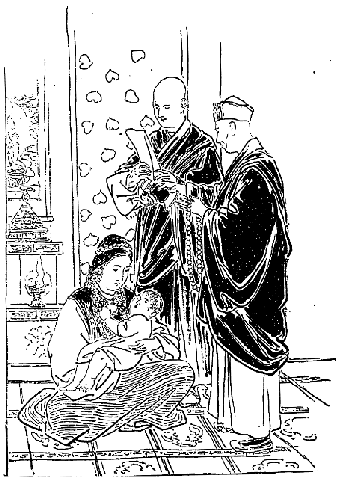
出産命名洗礼式
で三日目の命名式の日になるとまず
灌頂式を行います。それはある僧が秘密の法によって加持したところの浄水中に、
欝金香の花を入れた純粋の黄色な水をその頭に注いで、仏名を
唱え礼拝して居ります中におもなる僧侶がその子供に名を
命けるのです。ところがその名の命け方が実に奇態である。大抵生れた日柄によって名を命ける。例えば日曜日に生れたものなれば男女共にニマ（日曜という意味）という名を
命け、月曜はダアワ、土曜はペンバ、金曜はパーサン、と七曜によって名を命けるのです。
ところがそういう名だけでも同じ名が沢山あって間違いが起るものですから、その上か下へ名を付けて区別する。即ちニマ・チェリンというと日曜長寿、ダアワ・プンツォクというと月曜円満という名になる。そういう風に名を分つです。これはその時その場に立ち会ったラマが名を与えることもありまた
神下しが名を与えることもあり、あるいはその親がこういう名を付けたいといって直ちに
命けることもある。あるいは七曜日に関係せずに全く抽象的の名だけ付けるのもあり、また動物の名をその儘付ける者もある。いろいろになって居ますが、通じて見ると日本の坊さんの名のような抽象的の名が多い。
もしその子供が成長の後寺に入って坊さんになると、更にチョェ・ミンといって法名を命ける。それから命名式の当日はその親族、朋友らからして酒肉あるいは衣服または
銀子等の
贈物をして来る。で、その祝賀のために来たところの人々にはこっちでも茶、酒、米飯、肉等いろいろの
饗応をします。しかしこういう風に祝賀または饗応をするのは都会およびその付近の地方だけで、
辺鄙の土地では
富貴の者でなければしない。
さてこの命名式を挙げおわりますと、その式に臨んだ僧侶はその村の神様および家の神様に対し、今度こういう名の子がこの家に誕生しましたからこの後は尊き神達の守護の下に保育されんことを
希うというて
読経供養をする。この読経供養は新派の僧もあれば古派の僧もあり、あるいはまたポン教の僧侶もあって一定して居りません。もし
神下しの家に子が生れた時分には僧侶を頼まず神下し自身に命名の礼式を挙げるです。ついでにこの子供が大きゅうなって就学する時と、女の子が飾冠を戴く礼式について少しくお話致します。
男の子が成長して八、九歳になると、学業に
就かしめるために自分の師匠の
許へ送るです。大抵師匠の宅に住んで居りますので、ごく近い所なればあるいは通学する者もある。で就学の始めの日には朋友親戚に
報らせます。すると朋友親戚の者は出て来てその子供に例の「カタ」を与え、子供はその「カタ」を首筋へ掛け両端を胸の所へ下げて置く。これはその子供が必ず学業を
成就するようにと祝願するの意味だそうです。で、この日子供の家では酒宴を開いて馳走をなし、またその子供が学業
成就してもはや学校を退くという時分には、まずめでたく事が
済んだというてまた祝宴を開き、その後もし官につくような事がある時分には吉日を選んで大いなる祝宴を開きます。
この時には朋友親戚等よりもなかなか沢山な贈物をして来る。また自分の方でも立派な御馳走を調えて人を饗応するのです。女の子は八、九歳になりますと始めて吉日を選んで
頭飾冠式は
頭髪飾りを付け、この日また親戚、朋友等は「カタ」その他の贈物をして祝意を表し、少女の家では同じく酒宴を開いて馳走する。頭飾りといったところで、大きな人の付けるような具合にするのではなくって、ごく単純なカムの婦人のような具合にすべての髪の毛を後ろへひと纒めに下げてそうして四組一筋に垂れる。で、その
辮髪の上に美しき
珊瑚珠及び
緑玉瑜の混ぜ合せになって居る飾りをごく可愛らしく列べるのです。
この子供らがラサの野でどういうふうにして遊ぶかといいますと、やはりどこの子供でもあどけない。まず冬なれば雪の投合いが最も楽しいので、夏は
角力と石投げ、どっちが余計遠くまで投げたとかどれだけ大きな石をどの点まで投げたという事、それからまた向うの方へ的を拵えて置いて
其的へ大きな石をぶん投げて落してしまうというような遊びもするです。
悪い子供は大きな人の
博奕を見習って博奕をやるものもある。それは日本でいえばメンコのような一種の土塊を拵えて、
其塊を遠く投げるのをこちらに居て打つというやり方、それからまた
線を描いて置いてその中に銀貨を入れて置く。そうしてその銀貨を叩き出すというような事もやって居るです。これは日本の遊びと同じ事である。
それから繩を一筋持って自分一人で頭の上から足の下へ掛けて、廻しては飛び廻しては飛ぶという遊びもある。この遊びはまた十人ばかりで行う事もある。例えば二人の子供が長い繩の端を持ってくるくる廻すのを、十人の子供が足拍子を揃えてひょいひょいと巧く飛び越えるです。これも日本の子供と同じでその飛び越える間にもし一人が繩に引っ掛かって
躓くと、今度は自分が
繩持になって
其繩を廻すことにして居るです。
此遊は男の子ばかりではない。女の子も随分やって居る。
そのほかにアゼ・ハアーモといって、男女混合して河原乞食の芝居のような真似をして遊んで居るのもある。また
鞠を投げて遊ぶことも稀には行われて居りますけれども、これは沢山にありません。チベット人は馬に乗ることが非常に
嗜ですから貴族の子供などは馬の
駈競をやって始終遊んで居るけれども、貧乏人の子供はそうはいかんから野辺へ出掛けて行って馬の形をして居る岩に捉まって、一生懸命走って居るつもりでその岩の上で焦って居る。今記憶に浮かんで来たのはこれ位ですから男の子の遊びはこれだけにして
はどうかというに、これも他の国と同じく男の子に比べるとやはり優しいです。日本の
雛事というような
物祭の遊び、それからまたアゼ・ハアーモの歌を謡い、あるいはラママニといって仏のした行いあるいは昔の高僧の歴史または大王が行うた事蹟についていろいろの説明の絵が描いてある。その絵をば、哀れな声、面白い声、活発な声、いろいろの声で説明する調子が歌のように聞える。一人の女の子が壁の際に立って歌を謡う調子で説明の真似をすると、外の女の子は謹聴しながらその
音頭取りの声に和して、チベット風に念仏を唱えるです。それがいかにも可愛らしく見える。
このラママニというのはチベットにはなかなか沢山居りますがラサ府には冬分は余り居らない。というのは冬分は皆地方へ出稼ぎに行くからです。ちょうど五月頃になりますと地方の方は農業あるいは牧畜の事が忙しくなって、ラママニは地方に居ったところが銭儲けが出来ないからそこでラサ府に集まって来る。その時分がちょうどラサの野辺に小さな赤トンボの飛び交う時節で、その赤トンボが青い草の間を飛ぶようになるとラママニが出て来るものですから、その赤トンボを称してラママニというて居るです。
で子供らはそのラママニ（赤トンボ）を捉まえに行くのも一つの遊びです。野辺へ出てあちらへ走りこちらへ走り、時には水の中に
没り込んで濡れ鼠になったその着物を脱いで乾かし、自分は
裸体で走って居る子供を折々見るです。そういうのが一番子供にとって愉快な遊びである。子供の遊びはこれ位にしてここに
についてはチベット婦人は実に感心な点がありますからして、その事について少しお話をしたいです。大抵チベットではその習慣としてどんな病人でも昼、身体を横にして寝るということは出来ないです。少し後ろに
凭れるような物を拵えてそれに凭れて居る。で、その端には必ず一人の婦人が付き切りで看護をして居て、決してその病人の側を離れない。この看護の婦人はむろん昼と夜とは代るです。貴族などになりますと何遍も交代する。で二人なり三人なり付いて居ることもあるけれども、余り騒がしく話をしたりまた病人の心を動かすような話は決してしない。
それから病人が何か必要に迫られて心の中に望むことがあれば、ほとんどその
容子振りでじきに悟って決して病人には口を
利かせないようにして、お
便をしたいという様子が見えれば早速便器を当てがい、水が欲しけりゃ水を当てがうです。で普通の時には決してお
便をしたからというて拭くということがないですけれども、病気になるといろいろ汚い物が付く。すると臭い匂いがするに拘わらず少しも厭いなく拭き取ったり何かする。
しかし大抵まあチベットの病人の室に入ると、日本人などの病室と違って一種異様な臭い匂い、とても
麝香か何かを持って行かなくては堪えられないような嫌な臭いがして居る。そういう中でその病人を看護して居ますので、全く付き切りでなくてもよさそうな訳であるけれども、チベットでは病人が昼寝るというと、その病人が必ず発熱して治るべき筈の病気も治らなくなってしまうという信仰がなかなか堅いのです。で看護の婦人はつまり
をして居るので、また看護の婦人の外に睡らないように特に見張人を付けて居るのもある。その見張人はなかなか注意をして、病人が今少し睡りを来たそうかという気味になると、声は掛けないけれどもかねて自分の前に茶碗を一つ置いて、その茶碗の中には非常に冷やかな水と
歯楊枝のような物を入れ置きまして、その冷たい水を歯楊枝みたようなもので病人の顔へピョイピョイと振り
撒くです。そうすると顔が冷たいものですから不意と気が付く。病人それ自身も寝てはいけないということを信じて居るものですから、そうされても別段腹も立てないです。よく
看て居てくれる、私のために介抱してくれるとかえって喜んで居る位である。
それでもなお睡るようになって来ると、その番人が立って行って後ろの方から少し
擦り気味に押えて、そうしてその病人に少しこう圧迫を感ぜしめて眼を覚まさせます。また時に声を出して覚ます事もある。こういうふうに我々の眼から見るとごく
酷虐な取扱いのように思えるけれども、チベット人は決して病人を苦しめる趣意からそうするのではなくして、真実その病人が一時も早く癒るようにとこうやって居りますので、この習慣というものは実に非常な勢力があるのです。
医者が
診察に行きまして日中睡るかどうかということを尋ねる。少なくとも睡り掛けていけませんというと「どうも睡ってはしようがない。必ず睡らないようにしなけりゃあならん」と注意し、それから病人に向って「お前死にたければ寝るがよい、けれども死にたくなければ日中決して睡っちゃあいけない」というて、第一病人の守るべき戒条として日中の睡眠を忠告するのです。また人が病気見舞に出て来るとまず見舞の物品あるいは銀貨を与えて、それから病人に対して「日中寝てはいけません。睡るとあなたと私ともう一遍遇ってお話することが出来ないような嫌な事になってしまいますから、これだけは確かにお気を付けるように願います。」
それから看護の人に向って「あなたがたは充分注意が行き届いて居ましょうけれども、
何分長々の病気でお疲れが出るでしょうからその辺はよく注意して下さい。病人はしようがないからあなたがたが睡らせないように用心しなくちゃあなりません」ということを真実に述べるです。なお外の家族の者にもその通り忠告して行きます。もしその病人が案外早く死にでもすると「なあに向うの家ではよくない。大体兄弟も親達も日中睡らさないように心掛けなかったからああいう事になった」といって、とんだ所に罪を帰することがあります。
こういう堅い習慣の出来て居るのは、何かこの国にはこの事についての道理がなくてはならない。ただ馬鹿なためにこういうことをやって居るのじゃああるまいと思いましたから、余程その事について調べて見たです。幸いに私は
藪医者をやって居ったものですからそういうことを調べるにはごく都合がよかった。いろいろの病人に接していろいろ研究を重ねた結果大抵その原因が分りました。
チベットではある種類の病人は日中睡ったためにだんだん発熱が増加して
危殆に陥ることがある。その病気は大抵風邪という
類、それからチベットの
水腫病という病のごときは日中睡って居るうちに発熱を
醸して死んでしまう。しかし私共は風邪を引いたからといって日中睡らない訳に行きませんから、やはり暖たかに寝て居るですが、かえってよく治った事がたびたびあったです。チベット人はそういう区別を知らずに、ただ一、二の例をもってすべての病人を規定しまして、病人の日中不眠が介抱の第一主要なる部分となったろうかと思われました。
チベットでは病人の
全癒を
謀るには医薬がおもなる部分でない。最も主要なる部分すなわち病人に対し最も有効なりとせらるる部分は
祈祷である。彼らの信仰によると病気は大抵悪魔、厄鬼、死霊等の害悪を加うるによるものであるから、まず祈祷の秘密法によって悪癘を払わなくては、たとい
耆婆扁鵲の薬といえども決して利くものでない。で、いかなる悪癘が今その病人に対して
禍を加えて居るかということは、普通人間の知らないところであるから、まずこれを知るためにはラマに尋ねなければならんというので、ラマの所へ指して書面を持たして尋ねにやるとか、あるいは使をやって尋ねるとか、または自分で行って尋ねるです。
するとラマはいろいろその事に関する書物等を見て判断を下し、これは
郎苦叉鬼の
祟りであるとかあるいは
鳩槃陀鬼または
夜叉鬼の害であるとか、あるいは死霊、悪魔、その地方の悪神等が祟りをして居るとかいうことをよく見定めて、それに対する方法としてどこのラマに何々のお経を読んで貰えという。もっともラマの名を書いてある事もあればまた書いてない事もある。それは誰でもやれる方法である時は名は書かない。少しむつかしい方法になると
誰某という指名をするのです。
そこでお医者さんはというた時分に、まずこの秘密の法を三日なり四日なり修めてから、どこのお医者さんを迎えろということもあり、またこの法を修むると同時に迎えということもある。あるいはこの病人は薬は要らない、今まで飲んで居った薬は止してただ祈祷だけで治るというような説明もある。それはいろいろになって居ますが、まずそれを尋ねに行きまして口で答をするのはそんなに高等のラマではない。中等以下のラマがやります。中等以上のラマですと、その方法書を自分の侍者に書かせてラマ自身に実印を
捺し、そしてその書面を尋ねに来た人に渡すです。
で今日医者を迎えれば助かるべき筈の病人でも、その方法書に五日の後に誰それを迎えて治療を頼めと書いてありますと、チベット人は病気はどうあれまず悪魔を払ってしまわなければ、たといお医者を迎えて薬をのんだところが到底治るものでないと堅く信仰して居るからまず祈祷をする、それでその日に病人が薬を得ないために死んでしまっても、その家族等は決してラマなりあるいは
神下しなりを不明であるというて、
怨むこともなければ悪口をいいもしない。かえって「成程えらいラマだ。もう今日死ぬことが分って居ったからお医者さんを迎える必要はないというてわざと五日の後と書かれた。さすがに感心なものだ」といって感心して居る位。
もしもそう言わずに理屈の分った者が「どうもかのラマは詰らない事をいうものだ。かの病人はかの時に薬を
服まして置けば助かるべき筈であるのに、ああいう馬鹿な方法書を書いてくれたためにとうとう病人が死んでしまった」などといいますと、世間ではかえってその人を非常に
罵倒し「彼は
外道である。大罪悪人である。ラマに対して悪口をいうとは
不届である」というて非常に怒るです。その怒られるのが怖さに、よく分って居っても何もいわずに辛抱して居る人間も沢山あるということは、私が確かに認めたところです。
もっとも医者といったところでほとんど病気を治す方法を知らない。ごく古代のインドの五明中の医学が伝って居るだけで、その医学もごく不完全なものである。しかし不完全な医学だけでも心得て居れば、病人に対して幾分の助けをなすことが出来るでしょうけれども、彼らはその医学のなんたるを知らずにただ聞き伝え位でやって居る者が多いのである。
チベットの医者の用うる薬の中にはすべてツァーツク（草の毒）の入って居らぬものは少ない。このツァーツクというのは草の根の毒であって、これを多量に喰えば死んでしまうです。つまり興奮剤のようであるけれども、少し多量に入れてあるのを
服むと身体の各部に
痺れを起すことがある。また少量でも病気の都合によっては非常に腹を
下すこともある。とにかくその薬を
服んで病気の治る治らんに拘わらず、必ず病人に対して何かの変化を与えるです。その変化が起ると病人に
利いたような具合に見えるから、お医者さんは利目を見せるためにどんな薬にもツァーツクを入れる。
昔
漢方医が大抵薬の中に甘草を薬の導きとして入れて居ったようなものでしょう。もっとも一、二の例外はあるけれども、その大部分はそうですから病人は堪らない。決して自分の病気に適当した薬を貰うことが出来ない。その不完全な医学すらも学ばずに医者をやって居る乱暴なドクトル先生が
※扈［＃「足へん＋ノ／友」、U+47E6、第4巻-74-2］して居るのですから、恐らくそういう薬を貰うよりは祈祷者に祈祷だけして貰うて自分の心を安んじ、そして自然療養あるいは信仰的療養をやる方が、かえってチベット今日の状態では大いに得策であると私は考えたです。チベットでは
すなわち酒宴を開く仕方は種々ありますが、その中でもチベット人の最も喜ぶ酒宴であって、私共が見ても一番良い有様を現わして居るのが一つある。それはリンカというて園遊を試み、その園で酒宴を開くのです。これがチベット人が酒を飲む中において最も高尚な遣り方である。この外に酒を飲んだり寄り集まる時分には、いつの場合でも大概喧嘩口論が多い。けれどもこの園遊に行った時分にはいかなる
破落戸も余り喧嘩をして居るのを見ないです。全くないという断言も出来ますまいけれども、私の見聞したところではそんな事は全くなかった。壮士坊主なども園遊を試みる際には随分荒い遊び方をやるけれども、さて喧嘩は余りしないのでございます。
で、その園遊はどういう所で開くかといいますと、ラサ市中を離れて三、四町も行くと南の方向の川のある所を除くの外、西、北、東のいずれにも林が沢山ある。その林はある大家の別荘になって居って、全く垣を廻らして中に人の入ることの出来んようになって居るのもあり、また持主がありながらごく自由に誰もがそこへ遊びに行くことが出来るようになって居るのもある。その中でも殊にいいのはキーチュ川の岸に在る林であって、その林は樹の繁って居る所もありますけれども、下は皆青芝で
毛氈を敷き詰めたごとく至極美麗に見えて居る所もある。
もちろん冬の間は枯れてしまってほとんど何もないかのように見えて居るけれども、四月末から五月になりますと余程芽が出てごく綺麗になるです。殊に川端ではあるし日本でいう
糸垂柳のごときものもずっと茂って居りますし、桃の樹なども随分その間にある。殊に桃の花の開く時分は余程美しい。チベットでは冬の間は枯れ果てた岩山、禿山および青味掛ったもののない、いわゆる灰色の野原ばかり見て居なければならん。冬の一番の眺めは雪の降った中に
数多の鶴が
逍遙して居るのを見るのですが、ラサ府では雪が降っても大抵二、三日で融けてしまう。その雪も一尺以上積もるということは稀です。ですからその綺麗な雪景色も長く見て居ることはもちろん出来ない。地方へ行けばいつまでも雪の積って居る所もあるが、ラサ府では決してそんな事はない。
で冬の間はいつも枯れた景色ばかりを見て居るので、人目も草も枯れ果つるばかりでなく心までいかにも生気がないような
塩梅に、その楽しみがなくなってしまうです。折から野原は一時に青草で満たされ、そうしてその間に緑葉
菁々と生い茂るのであるから、人の心も何となく
長閑になって野外の散歩を試みずには居られない。銘々思い思いにあるいは三々伍々隊を成して、酒を入れた皮袋または酒の瓶を持って出掛けるのです。
その御馳走は小麦の焼
麺麭、小麦粉の油揚、乾乳、乾葡萄、乾桃、乾肉の類で、その家の下僕がその食物と敷物および野辺で茶を沸かす道具などを持って行くです。で朝九時頃から出掛けて、午後四時頃あるいは六時頃までもそこで酒を飲み戯れ遊ぶのですが、その酒はネーチャン（
麦酒）、ベーチャン（米の酒）を用い米酒はごく少ない。あるいは全く用いない者もあって多くはネーチャンを飲みます。この麦の酒の製法はビールなどのような訳ではなくごく単純な方法で拵えて居る。
それはまず始めに麦を
煎じます。その麦も黒い儘洗いもせずじきに水を入れてよく煮たのを広げて冷す。その冷す間に
麦芽を入れてよくこれを
攪き混ぜ、壺に入れて
麹を寝かすような具合にして三日位経ちますと、それが全く麹に変じてしまう。その麹の中へ水を汲み込みそれをよく攪ぜて置き、そうしてその
上澄からだんだん汲んで行くもあれば、またその
滓を絞り取って汁だけ売るのもある。それでまあ麦一升から酒を五升位取るのですから、その薄いことは実に甚しい。特別に良いのを拵える時分には二升位しか取らぬそうです。しかしそんな良いのは通常売って居る所にはない。
今いうた通りの拵え方で三日も経つと酒が出来る。ちゃんとそれを絞り分けて六、七日を置きましたのは、それはもう貴族が飲む酒として非常に尊いもののように思って居るです。なかなか長くは置かない。一月も置いたのはもう余程古い酒として尊ばれて居るのです。その酒をがぶがぶ飲むのですが、どの位飲んでもそんなに酔うということはない。余程沢山飲まなければ酔わない。殊に寒い所ですから酔いの
醒め方も早いようです。だが朝から晩までまた晩から朝まで飲み続けに飲んで居ることもありますから、その場合には随分彼らも
沈酔して前後不覚になって居るようなことも随分あります。
まず園遊で林の木の下の
毛氈を敷いたような青草の上へ
花段通を敷き、その上へいろいろの御馳走を列べ、それを喰いつつ酒を飲みあるいは謡いあるいは舞う。で舞踏をやる時分には
其舞に和して謡いますので、チベット婦人および男子はその舞踏程面白いものがないように思って居るらしい。大抵この舞踏を嫌う人はチベットにはほとんどない位です。もっとも
辺鄙の地に行きますと舞踏はなかなかむつかしいので、それを学ぶことが出来ないからといってようやらない所もありますが、たとい自分がやれなくても見ることだけは大いに好んで居るです。
随分我々から見るとそんなに趣味のあるようには思われませんけれども、面白いという点には確かに賛成が出来る。まあ面白
笑止しく歌を謡い踊を跳りあるいは酒を飲み、常に得難い美食をするのが既に無上の楽しみなんで、その上に一層の楽しみを添えるのはこの辺の景色、あるいはキーチュ川から野辺へ引かれてある誠に清らかな小川の
辺に、子供が遊び戯れて居る。その子供と同じように大きな者までが、うろつき廻って遊んで居る有様は真に無邪気で、見るからがいかにも楽しそうに見えるです。
で遙か遠い所には緑の
滴るごとき峰の頂に、千古の雪を戴きたるいわゆる雪峰が泰然たる雄姿を現わして居る様は
得もいわれぬ。こういう時にこそラサすなわち神の国という名詞が非常に適当したように思われる。この園遊は中等以上の者のする遊びですが、そんなら下等社会の者は園遊には行かないかというとやはり同じように行きます。
しかし下等社会のやることはまあ酒を飲む間に
博奕をやることです。それから
角力、角力といったところで日本のような具合に取るのでなくって、ごく離れ離れになってまあ腕の押し競べというような具合にやるので、相手を倒すというような事はないのです。それから壮士坊主のやる石の投合い、折には走ることの競争をやって居るのもある。下等社会の人達はまさかそんな事もしない。やはりチベット人の最も好きな舞踏をやる、その舞踏は上流社会も下等社会も通じて一つですが、上流社会の人のやって居る方は品が好く見え、下等社会の人のはごく下品で見るから嫌な感情を喚び起すような気味合いがあるです。
しかしチベットの下等社会の婦女子および大変喧嘩好きの下等社会の男子が寄り集まって園遊会を催して居るのですから、いずれ喧嘩か何か起るべき筈であるが、それの起らんのは全く今まで述べた通り彼らは確かに知らず知らず境遇に感化せられて、自分の日頃の行状からいえば
為すべき筈の喧嘩までもせずに、愉快に暮して居るのであろうと考えられたです。
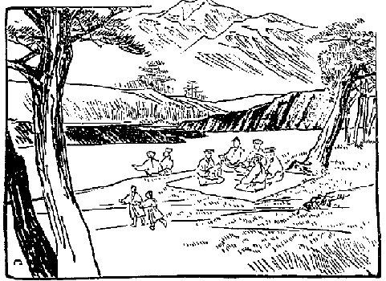
チベット人無上の娯楽なる園遊
なおこの他にチャンサ（酒宴）の事は沢山ございますけれども、これが一番良い酒宴であって、その他婚礼の事はこの間述べたごとくまた自分の親の死んだとかいう場合にも酒宴の開かれる事が沢山ありますけれども、それらは折々財産争いというような事があって、なかなか園遊のような清浄な遊び方は出来ないのでございます。酒宴の事はまずこれで止します。
の事について述ぶる前に、国民一般の独立心がどういうふうになって居るかということを述べて置く必要があります。チベット国民はその国民各自の利害を先にして国家の利害ということを考えて居る者はごく少ない。むしろ
一己の利害を見ることは知って居るけれども、国家の利害を見ることを知らない。大体国家の存在などということはチベット人の
脳裡にはほとんど無いというてもよろしい位です。政府の人とかなんとかいう者は、そりゃ国という観念位は多少持って居るですけれども、それとても国の利益を
謀るのが大事であるか、自分一己の利益を謀るのが大事であるかといえば、むろん自分一己の利益を謀ることを先にして国の利益はまず打ち棄てて置くです。
いなそればかりでなく国家の利益を犠牲に供しても自分一己の利益を謀るというのが、今日のチベットの多くの政治家の常である。中には真に国家を思わいでも、この国に存在して居る仏教を維持しようというために、自分の利益を犠牲に供しても尽そうという考えを持って居る人も幾分か無いではありませんけれども、私の見たところではそれはごく少数で、あるいは口でそういう事を唱えて居る者も、その実仏教そのものよりもまず己れの家を肥そうということに掛って居るのが多いです。
上の者が既にそうですから、まして下の者にいたってはますます甚しいです。ただ下の者は、自分の国は仏教があるから、尊い仏教はすなわち我が国の名物であるからこれを維持しなくてはならん、これに反対する者は誰でも殺されてしまうという位に仏教に重きを置いて居る。ですから政府が何か事をやる時分には、じきに彼は仏教に対してよくないというて、仏教を土台として他の者を攻撃する材料に使うです。
その実政府のいう事が真実チベット仏教のためになって居るか居らんかは問題外で、ほとんど政府のやることは仏教を害する方が多い位です。けれどもその政府は人民に対し仏教を
云々しなければ人民を心服せしむる事が出来んものですから、政府のやることはむしろ仏教を害するのですけれども、それを知覚せずにやはりこうするのが仏教のためであると
謂って、仏教の名をもってかえって国民を
虐げる場合が沢山ある。そうされる時分には人民はもはや泣寝入りです。あるいはこんな事なればむしろ仏教などはなくてもよいという考えを起す人間もありましょう。けれどもまあ大抵そんな事を口先に
上せる者もない。
既にチベットの婦女子の事について述べた時分に、婦女子は自分の利益を
謀ることばかりを先にして少しも他の利害を見ないと申して置きましたが、一般国民はつまりその婦女子から養成されたのですから、それより以上の考えの出ることは余程困難でしょう。だからもう婦女子の事を述べた時分に一般国民の気風も分って居る訳ですけれども、また男は男だけに幾分かえらい考えも起すかと思うて観察したです。けれどもやはり男子も婦女子と余り変らない。ただ少しく友達が大事であるとかなんとかいうて、自分に利害の関係ある者を愛することを知る位で、国家という大きなものにいたっては自分と利害の関係あることをよく知らないで、度外に置いて居るように見受けました。
そこでこういう国に対して外交政略を施そうという外の国は、この弱点につっこんでその大臣等をうまく
籠絡すれば、ほぼ外交上の事が成り立つような具合になって居るです。なぜならばその大臣なる者は、自分の国家を犠牲に供しても自分の家が盛んになりさえすればよい。外国から金を沢山貰って自分一人がうまい汁を吸えばよいという考えですから、国民に難儀をかける位の事は一向平気です。ですからチベットの外交政略はほとんど
政略というよりは
で、すべて利害の感情の上において事が定まるのです。それゆえこれに対する外国は必ずしも賄賂をやってその大臣を
擒にしたからというて、それで成功するということも保し難い。なぜなれば感情なるものは主義と一貫して飽くまでも貫くという性質を持って居らない。したがってぐらぐら変りますからどうせ当てにはならない。ですからこういう国と交際して外交上うまく成功しようというには、なお外に方法がなくてはならんのでしょう。
ところでロシアがチベットを手に入れて居る事は今に始めぬ事で、これはもはや三十年も以前からぼつぼつやって居るのです。あるいはもっと前からやって居ったかもしれないけれども、その形跡の著明に顕われて来たのは三十年以前からで、着々成功の歩を進めたのは誰によってやり来ったかといいますと、チベットの北に当りシベリアの中でモンゴリヤ人の住して居る所がある。すなわち青海湖より
少し北東に当って居る所に、もとシナ領のモンゴリヤのブリヤッドという部落があった。それを露国が征服して今はロシア領になって居る。
ところでロシア政府はギリシア教という国教があって、自分の本国においてはほとんど宗教上の自由を許さない程圧制して、
強固な主義を実行して居るに拘わらず、この辺の仏教徒に対してはごく寛大な主義をとって、彼らをして充分に仏教を信ぜしむるのみならず、またその寺々に保護を与えてなお仏教を盛んにせしめる方針をとって居るです。それはロシア政府が必ずしも仏教を信じて居るのではなく、ただその仏教を盛んにせしむるように見せかけて、その僧侶をうまく心服せしめたものであろうと思われる。
この部落からして沢山なラマがチベットの大学校へ修行に来ますが、それはガンデン、レブン、セラ、ツァン州のタシ・ルフンプー寺にも居るです。今は確かに何名程居るかは分らないが、およそ百五十名以上二百名まで居るかも知れぬ。かようにロシア領のモンゴリヤの僧侶がそれだけ沢山来て居る中で、近来大変な
遣手が出たです。
その豪傑はチベットでツァンニー・ケンボの位階を貰って、今の法王の問答の師匠となったドルジェという人です。ツァンニーとはすなわち定義を問答するという意味で、ケンボというのは教師という意味です。このツァンニー・ケンボが今の法王と非常に
昵懇になり、現にツァンニー・ケンボとなったのも今より十八、九年以前の事です。すなわち法王が子供の時分から問答の遣り方を教えていって、充分法王の気に入るように仕向けて、そうして自分をして信用せしむるように充分方法を廻らしたものとみえる。なかなかの才子ではありまた度量もある人ですから、今の鋭敏な法王、常識に富んで居る法王から見ます時分には、大変立派な師匠に見えたでしょう。なぜならば外にまだ三人の問答教師はありますけれども、一番信用されたのがこの人であるからです。
しかし法王が大きくなるに従ってもはやその稽古も不必要になった。そこでこのツァンニー・ケンボは自分の国（モンゴリヤのブリヤッド）へ帰りかねて、ロシア政府からの
委嘱もあったでしょう、まずこういうふうに成功したということを、いろいろの証拠物件によって証明したものとみえ、ロシア政府はそれに対して沢山な機密費を与え、ツァンニー・ケンボはまたこれを自分の用に使わずにチベットへ持って来て皆良い方法に使ったです。大いに機密費を使うのみならずまたロシアの都から西洋小間物類を沢山に持って来ましたが、それらの中には時計とかあるいは小銃、いろいろな珍しい物があるので、それをただ法王に上げるだけではない。当時最も勢力のあるシャーターという若い宰相にも余程うまく取り入ったです。
その金はどれだけ使ったか秘密で分りませんけれども、まず外の大臣達へ沢山与えた事からみますとシャーターに対しては余程与えたに違いない。なぜならばその後シャーターとそのツァンニー・ケンボとの関係は、兄弟よりもなお親密になったからです。それのみならず法王はツァンニー・ケンボの言う事なればどういう事でも
肯くという程に
惚れ込んでしまった。そこでまず上の方の勢力をツァンニー・ケンボそれ自身に集むることが充分に出来た。
その上チベットでは最も勢力のあるのは坊主社会であるから、この僧侶を手に入れなくちゃあならん。その僧侶を手に入れるというたところでいちいち自分のよい所を
吹聴する訳にもいかず、どうする訳にもいかない。そこで例の「ゲ」といって布施金を各大寺の僧侶に対して施した。それが一度ならず二度ならず何遍もやったです。僧侶なんという者はむろん政治上の考えなどは少しもありませんから、「ツァンニー・ケンボは大変な大金持でその金をチベットの僧侶に供養する。なかなか感心な事だ、出来ない事だ」といって
誉め立てる者ばかりで、ツァンニー・ケンボがその金をどこから持って来たかというような事については少しも研究しない。
ただそういうような事に少し気の付くような僧侶が念のため政府の人に聞くと、政府の人はそれについて「ツァンニー・ケンボの故郷では、皆があの人を自分の国の王様のように尊んで金を沢山上げるものだから、あんなに沢山な金が出来て来たんだ。何も不思議な事はありはしない」とこういうような説明を聞くものですから、別段僧侶だって怪しまないです。そこで誰も貰うということは余り心悪くは感じないもので、殊にチベット人は
一己の利害を見ることに機敏でありますから、そういうふうにたびたび金を施してくれるのを大いに喜んで、その人の言い出す事の是非善悪に拘わらずまず盲従という仕方に至ったです。それでもってツァンニー・ケンボその人は大いにチベットで成功して来た。
ところで一般人民もやはり自分の味方にする必要がある。その遣り方がまたなかなかうまいです。こんなふうに着々と外交政略をその国の人情風俗に従い、その人民の慾望、性質等によく
適ったように施すというのは余程感心なものだと私は大いに感服しました。その遣り方はまずこうです。一般人民の心を取り入れる方法としては、私がちょうどこちらへ来る少し前にその事は着手されて居った。それは別段金もかけないがなかなかうまい。それはどういうことかといいますのに、チベットでは新教派のある昔のラマが拵えた書物の中に予言すなわち未来の
讖言があるです。その讖言はただそのラマ一人が言うたのみならず、また随分外にもそれに和して言い出した者が沢山あるので、ほとんど人民一般の脳髄へ染み込
み書物の上で知って居るのでなくてお
伽噺の上で知って居るです。
その
讖言によって来るところを
繹ぬると、今より二千年以降一千二、三百年までの間において、カシミール地方は大変仏教が盛んであった。元来その国は物産および景色に至るまで実に立派なもので、気候のごときも一年中大抵
杜鵑が
啼いて居るというような場所もあるそうですから、とにかく非常に優美な国である。そのカシミールの少し北の所にもやはり開けて居った国があって、そこには
羅漢あるいは
菩薩というような方も居られたそうです。
つまりそれを種にしたのです。その優美な国が一日
回回教のために滅ぼされて、仏教というものはすべて亡くなってしまったけれども、必ず他日起るべき筈である。というのは前には盛んに仏教が行われて居ったのであるから、その原因によって他日また仏教が行われるようになるであろうと、いわゆる
正因正果の道理を用い過ごして
牽強付会の説を考え出したのです。今いう通りカシミールの北部の菩薩国は今は
回回教のために
蹂躙されて居るが、しかし必ず将来においてその菩薩国から世界を統一するところの大王が起って来るに相違ない。その大王にはチベットの新教派の開山で、ジェ・ゾンカーワという方がなられるのである。その大臣になるのが、またその弟子のジャムヤン・チョェジェ、あるいはチャムバ・チョェジェ、あるいはゲンズン・ツブとかいうような方がなられるので、その人達がその国を再興して大いに仏教の光を世界に放つようになるという未来記があります。
さてその国の名をチャン・シャンバーラという。チャンというのは北方という意味で、シャンバーラというのはカシミールの北にある都か土地の名になって居るように思うです。ところが新教派のあるラマ達が、予言書にいうごとき仏法の大王が生れる前にどうかそういう結構な国を見に行きたいものだ、というて随分出掛けた人がある。その道程もまたそういう想像説を拵えた宣言者によって書かれてある。
それはインドのブダガヤからして西北に一千二百
哩も進んだ所に在るというのですから、まずカシミールの方向に当って居るです。で、その道筋もいろいろと書いてありますが、なにしろユートピア的想像説であるからいちいちそれを証拠立ててこうであるのどうであるのという必要は無論ない。とにかくチベットの仏教が
紊れてほとんどその弊害にたえない時分に、そういう立派な有力な仏法の大王が出て来て、この世界を統一するということが書物に予言されてあって、そしてその通りチベット人は信じて居るのである。
そこでツァンニー・ケンボという先生はその信仰力に乗じて書物を一つ拵えた。そのチャン・シャンバーラは、即ち取りも直さずロシア国である。ロシアの皇帝は全くジェ・ゾンカーワの
化身である。ロシアの皇帝の善い事というものは、常に人民を
撫育して自由を与え、そして外国に対してはごく親切に付き合われる。昔の
金輪を転じたところの徳を備えた大王といえども及ばぬ程の徳をもって居られるお方である。その徳をもって居られるところから考えてみてもまた彼の宣言に対照してみても、その方角といいその場所といい全く符節を合わして居る。だからこの事について疑いを
懐く者は取りも直さず仏教に敵対する者である。すなわちチベットの新教派を開いた開山の大趣意に敵対するところの者である。
誠にありがたい事は、こういう
讖言があったために今日チベット新教派の開山ジェ・ゾンカーワの生れて居るその国を知り、そのお方を知ることが出来たのは結構な訳である。これを要するにロシア皇帝はいわゆるチャン・チュブ・センバ・センバ・チェンボ（
菩提薩陀、
摩訶薩陀という意味）であるからこれに敵対することは出来ん。これを尊崇しなければならんというようなふうに、ちゃんとこのチベット国民の信仰力に合わしていかにも信じ得られるように書いてある。それがチベット語だけで書いてあるのみならず、またモンゴリヤ語でも書いてある。
私はその書物を直接に見ることが出来なかった。けれどもその書物を見た人から
委しく説明を聞いたのです。その書物を一つぜひ見たいと思って居る中に、私がかのチベット国から出ねばならぬようになりましたが、
其書に訳の分らぬ言葉が一つ書いてあるという様子を聞いてみるに、あるいはロシア語ではないかしらんと思いました。どうしても三国の語で対照してその書物が出来て居るらしく、そうして
其書がチベットに沢山配付されて居るそうです。
けれども皆秘密にして唯一の尊い経文を得たかのようにチベット人が隠して持って居るから、無理にそれを
穿鑿して見ようと思うとかえって疑いを
惹く種になりますから、私はあえてそれを見ませんが、まあそういうような意味に記されて居ることは疑いないです。そこでチベット一般人民の希望は、北方にあるロシアという言葉を我が国語に翻訳すればすなわちチャン・シャンバーラである、その国の大王が遠からず世界を統轄して世界仏教の主人公となるのである、と信仰を置くようになって来たです。今日の形勢上は政府より下は人民に至るまで、ほとんどロシアに心を傾けるようになって来た。
それからロシア
贔屓ということが余程盛んになって来たですが、それにはなお他の原因がある。ロシアから輸入されるところの西洋小間物は皆上等の物ばかりである。その上等な物とても売るのでなくって皆人に遣るのです。英領インドから輸入される物は皆安いつまらない物ばかりである。それはその筈でチベットの商隊なり一個人の商業家がインドに出掛けて、高い物を買って来たところがほとんど売ることが出来ない。売れたところで利益を見られんものですから、なるべく安い物を仕入れる。安い物を仕入れなくては運送費が高く掛るからとてもしてみようがない。
ところがロシアのは売るつもりで持って来るのでなく、始めからただ遣るつもりで持って来るから、どんな良い物を持って来てもよい訳で、そこでチベットでは、どうもイギリスのはじきに
毀れてしまうけれどもロシアの物はなかなか堅固である。同じ西洋品ではあるけれども余程ロシアの方がよい。これによって見てもロシアの国の確実なることを信ずるに足る、というような議論をして居る人間もある。
今より四年程以前の事と思う。時は確かに分らない秘密であったから……。まずそれ
位前にロシアの皇帝からチベットの法王に対し、そのツァンニー・ケンボの手によってビショップの
法衣を贈られた。ところがチベットの法王は喜んでその立派なる金色の衣服を受けたそうです。それはただ衣服を受けたというだけでなくって、その衣服を受けるとやはりビショップ（大僧正）の位も受けたことになるのである。余程奇態である。ギリシア教を国教として居る国の皇帝が、そのギリシア教の僧侶の最高官即ちビショップの位をもって、仏教の僧侶たるチベット法王に与えるというのは実に奇態である。
其位を受ける法王は、むろん露国にもやはり仏教が行われて居って、一番最高等の僧侶はこういう物を受けるのである位の事で受けたので、むろん世界の事情に通じないからそういう
欺きを受けるのであります。もしこれがギリシア教のビショップの法衣であることが解ったならば、自分の身に着けることはおろか、見ることも許さぬ位のものである。けれども知らないところからそういう間違った事に陥るのです。これもつまりうまくツァンニー・ケンボの口車に乗ってごまかされてしまったのです。こういう事になるについて
与って力あるのは
宰相の長官シャーターである。
このシャーターという人についても述べねばならん事がある。これはやはり宰相家華族家の中ではなかなか立派な位置を占めて居る人で、この間お話をしましたテンゲーリンという大寺とは昔から相反目し互いに敵視して居るのであって、既に法王が位につくまではテンゲーリンのテーモ・リンボチェが法王であった。その時分にはチベットに居ることが出来ないでダージリンの方へ逃げて行って居った。あるいはシッキムの方を廻りなどして大分に長く流浪して居ったという。その時分にイギリス政府の遣り方を見、あるいはイギリス政府がインドの土民を征服した歴史などを聞いて、大いにイギリス政府に対して恐れを
懐いたのである。
しかしイギリスの事情には大分に通じて居るお方で、今日チベットの国で少なくとも英領インド国の事情に通じて居る者はこの人を除いて外にはないのです。で、イギリス政府と戦ったところが到底勝を得ないとすれば、我が国はシナによるかあるいは他の強国によらなくては到底生存を全うすることが出来ないという考えは、確かにこの若宰相の心に起ったに相違ないです。そういう話がその人の口から折々出た事も伝聞しましたからそれは間違いない。テンゲーリンのテーモ・リンボチェが位を今の法王に譲った時にこの人が帰って来て、ほとんど法王が位につくと同時に宰相の位に上られた。そこでかねて敵視して居ったところのテンゲーリンを滅ぼそうと企てたに違いない。
面はごく優しく見えて居るけれども随分陰謀に富んで居る先生である。それでテンゲーリンの臣下がいろいろの事をやったに付け込んで、その主人のテーモ・リンボチェにまで
累を及ぼして、遂に
縲紲の中に
横死するに至らしめたのである。既にシャーターが
宰相に任ぜられた時分に、前の法王であったテーモ・リンボチェが、ああもう
乃公の寿命もこれで
極ったといったそうですが、それはつまりシャーターのために殺されるということを先見したので、不幸にしてその予言の当ったのはいかにも気の毒である。とにかくこの人はチベットではなかなか外交に力を用いて居る人物である。
内地の事ではあるが自分の敵を滅ぼすに足るだけの
技倆を備えて、善にもあれ悪にもあれ
残酷な遣り方で自分の望み通り敵を滅ぼしとげた位の人物であるから、外交の事に掛けても
一廉の腕前があるに違いない。この人がまた非常にロシアのツァンニー・ケンボと親しいのみならず、非常にロシア政府を慕って居るところを見ると、ツァンニー・ケンボがうまくこの人を取り込んだに違いない。そこでかのビショップの法衣を貰うことも、実は外の大臣の中には知らない者もあろうし、またロシアという国は果たして立派な国であるのか無いのか分らんのに、うかうかした事をしたらば大変な事が起りはすまいかというような疑いを
懐いて、実に
戦々兢々として居る者があるんです。
けれどもチベットの内閣というものはほとんど決断権は宰相一人にあって、内閣員すべてが一致して事をなし遂げるということは決してない。まして個人としてはむろん自分の意見を吐くというような事は決してない。ただその先任大臣の言うことを聞いて「ごもっともでございます」というて盲従するのがつまり普通の有様であるですから、充分露国を疑って居る者もある。私はある
宰相の口から内々聞いた事は、シャーターがツァンニー・ケンボと親しくすることを怪しんだことです。しかしこの
宰相は法王がビショップの法衣を貰う時に、自分で拒むだけの勇気もなければまた拒んでみたところが実際行われない事を知って居るからいわなかったのでしょう。
その上まだチベットをしてロシアに頼るの心を深からしめた
所以は、日清戦争以来シナの勢力が日々に衰えて、チベットの方へは全く及ばぬようになったからでもある。これまではチベットの法王が少し変った事をやるというと、シナ政府からじきに異議を唱えられ、あるいはそのシナ皇帝の命令の下に罰せらるるという
虞があった。全く君と臣の関係程になって居ったです。ところがこの頃は余程変った事をやっても手を着けることが出来ない。すなわちテンゲーリンを滅ぼし、そしてテーモ・リンボチェを亡き者にするというようなああいう大騒動を起しても、シナはそれに対して一定の責を問うことも出来ない。
また問うてみたところが到底駄目なんで、それが気に
喰わなければお前の下に付かないとこういわれた時分には、チベットにあるシナの兵隊はチベット国人に殺され、チベット在留のシナ人ももちろんチベット人に殺されてしまうだけの話で、とても今日の
有様ではシナ政府がチベット内地に踏み込んで征服するというような事は出来ない。その事はチベット人はもうよく知って居る。ですから法王それ自身の考えとしてもシナ政府には
拠ることが出来ず、また英国の主義というものはうまく人を
懐けてその国を奪うのが主義であると聞いて居るので、もとよりこれと親しむことが出来ない。で、その一番英国に反対して居るロシアと親しく交際するということは、外交上実に無上の策であるというような具合に考えたと察するです。
かの考え深い法王が、訳もなくかの綺麗なビショップの法衣をくれたからというて貰うような人でありませんから、きっとそういう考えを起して貰ったものと私は信じて居る。そのビショップの法衣を貰うた返礼として、法王はズーニェル・チェンモ（侍従長）とその従者三名ばかりを使節とし、明治三十三年の十二月ラサより北の方へ路を取り、ツァンニー・ケンボの国を
経て鉄道に乗り、幾月かを経てロシアの首府に達し、そしてチベットの珍しい物をロシア皇帝に差し上げて充分に返礼の敬意を表したという。その時に露国において結ばれて来た
というものはどんな条約であるか私は知らんけれども、ズーニェル・チェンモなる者がなんでも明治三十四年の十二月か翌年の一月か月はしかと分りませんが、その頃にチベットに帰って来た。それから二月経って、後に私がラサ府を出て東北方の二十里ばかりある所へ指して乗馬して運動に出掛けた。運動というのは名だけで実はその辺の民間の様子を見に参りました。その時分に
駱駝が二百疋ばかり東北の方から降って来た。その
駱駝の荷物は皆箱詰で、上は皮で
覆うてあるから何が入って居るか分らない。けれども大きな駱駝の荷物としてはその
荷嵩はごく小さい。で非常に荷が重そうである。
私の察するところではモンゴリヤ人が銀塊でも持って来たものであろうという考えを起したです。その駱駝
牽に大層重そうであるが何が入って居るのかと尋ねますと「何だか知りません。大方銀塊でもありましょう。」「どこから来たのか。」「私共は途中から頼まれたのでよく知りませんが、なんでも北方のモンゴリヤの方から来たらしゅうございます。確かにシナから来たんじゃありません」と告げた。その中にロシアの方から一緒に来た人間が居ったか居らんかそれは分らなかった。で私はその辺を廻って大蔵大臣の宅へ帰って来ますと、現任大蔵大臣も帰って来られて「今日は沢山ロシアから荷物が着きました」という前任大蔵大臣への話です。
「そりゃ何か」といいますと「少し
憚る事がある」という。すなわち私の聞きますのを
忌むようですから私はその場を避けました。その時にはその荷物は何か不明であった。ところがまた政府の側の人でごく秘密を守ることの出来ないある高等官が一人あったです。話のついでに私が何心なく駱駝の事を言い出して「私の見たところでは二百疋位来た」というたら「二百疋来たのはこの間の事でその前に三百疋ばかり来た。実はこりゃ秘密であるけれども……。」「一体あの荷は何ですか。銀塊ですか。」「銀塊があんなに沢山来るものですか。ありゃロシアへズーニェル・チェンモが法王の使節として行かれて、事が
纒ったのでくれたのです。」「その品は何ですか。」「鉄砲の弾丸、その外西洋の珍しい物を沢山持って来られたです。まあ我が国もこれで英国から攻めて来られたところが何も恐るるに足らない。英国と合戦をやるといって来れば早速応ずる。ごく鋭利な良い鉄砲が得られたからこれでまあ充分やり付けることが出来る」というて意気揚々として話されたです。
私はその後ある所でその鉄砲を
一梃見ました。もちろん新式の物ではあるけれどもあまり遠距離に達しない。到底合戦の時の間に合いそうには思われない。しかしチベット人は実に立派なものとして取り扱うて居るです。ところがチベット人は一向ローマ字を知らんものですからどこで拵えた鉄砲か分らない。やはりロシアの都で出来たものと信じて居るですが、その鉄砲の銘を見ますとアメリカ製であります。何千梃来たか分りませんが、駱駝五百
駄の半分以上は鉄砲であったらしい。こういうふうになってもシナ政府はチベット政府のなす儘に放任して居るです。
しかし随分やきもきと気を
揉んでいろいろと方法は
運らして居る。現にツァンニー・ケンボが来た時などは非常にシナの駐蔵大臣が骨を折り、ツァンニー・ケンボを捉えてどうにか一つ方法を運らそうと仕掛けたけれども、チベット政府が保護を加えて居るからどうもその人を捉えることが出来んで、大分ごたごたが起り掛けた際にツァンニー・ケンボは突然ダージリンの方へ逃げて行ってしまった。ある時はネパールの方に逃げてしまった事もある。この人はイギリス政府の方でも充分眼を着け、ネパール政府でも充分注意してその一挙一動を注視して居るです。そういうふうに
がだんだん深くなって来ましたから全くロシア政府の外交はここに成功し、そしてこのチベットを踏台にしてヒマラヤ山上から英領インドに臨んで、インドの全権を
掌握してしまうだけの土台は確かに出来たかというに、今日はそれだけの見込はないです。なお
仔細に観察すると、チベット政府部内でも真実にロシアに対して心を寄せて居るのは法王と長官宰相シャーター二人くらいの者である。その他の者はまず盲従の有様で、訳が分らず仕向け次第でどっちにでもなる人ばかりです。
もしロシアがこの上非常の勢力を得て行けばむろんチベットはロシアに付くでしょう。しかしロシア政府がその願望通りこのチベット国を踏台として、天然の万里の長城ヒマラヤ山上から、英領インドに臨むというような大望を
成就しようというにはまだ大分に時間があるようです。なぜならば政府の内でも既に
猜疑心を起して反対の傾向を持って居る者が沢山ある。現にこういう事をいうて居る人がある。「なるほどロシアという国は大菩薩の王様の国かは知らんけれども、今の世に当り人おのおの利益のみを争うその中に、チベット国に対し訳もないのに沢山な金を施しなお沢山鉄砲などをくれるというのは、こりゃ恐らく何か悪意があって我が国を取るところの
餌にするのではあるまいか。その餌に釣られてこの尊い国をロシアのために撃滅されるという事は
由々しき大事である」というて居る人間もある。
誠に感心な考えでこの位の考えを持って居る人はチベットには沢山はないけれども、私は折々聞いた事がある。そういう人は相当の位置を占めて居り、また着実の考えのある人ですから、随分政府部内においても有力な説として人に伝えられる。その伝えられた話は法王と長官宰相との耳には入りませんけれども、その他の人の耳には案外早く入って居るですから、ただ
表面に現われて居る傾向だけをもって、あるいはツァンニー・ケンボその人の
心算計画がうまく図に当って居るところだけに眼を着けて内部の事情を
疎かにすると、露国政府は沢山金を使ってかえって飛んでもない馬鹿を見ることがあるかも知れんと思う。
チベット人は非常に外国人を
歓待する気味がある。今日は英国人に対し非常な
怨憎心を
懐いて居りますけれども、その実チベット人はどの国民に対しても非常に歓待する性質である。だから英国政府が少しく恩を施すという方針に出てたならば、今日ロシアがチベットを踏台にして英領インドに臨むという憂いもなく、充分に成功することが出来たのである。これは過ぎ去った事で今さらいうて見たところが到底駄目な訳ですけれども、英領インド政府がチベット国の人情および政府の意向をよく知らなかったから、つまりこういう過ちに陥ったと断言するに
憚らない。
かくのごとくチベット国民は戦争以来一般に英国に対して非常な悪感情を懐いて居るのみならず、チベットで名高い学徳兼備の高僧センチェン・ドルジェチャン（
大獅子金剛宝）という方は、サラット・チャンドラ・ダース師が入蔵事件に座して死刑に処せられたことから、チベット国民は一層英領インドに対し悪感情を
懐いて、全然鎖国主義を
執るようになった。ひとり英領インドに対してのみならず、その結果北方のロシア人に対してもまた西方のペルシア人に対しても、皆に対して厳重に鎖国主義を実行し、その後はインド教徒さえもチベットに入ることが出来んようになりました。ですから今英国ではほとんどチベットに対しては戦争でもしなければ手の着けようがない位です。その点においてはロシアは確かに英国よりも便宜の地位に立って居る。
しかしながら英領インド政府はチベット国に対してはなんらの策も施さないかというに、充分に注意を加えてチベット国民の感情を
恢復し、よい感情を持たすようにつとめて居ることは、今日ダージリン及びシッキム等の地方においての実際を見ても明らかに判るです。それは英領インド政府は、特にチベットから出て来たところのダージリンあるいはシッキムに居るチベット人に対し、他の土民よりは充分に保護を与えて居る。
その一例をいうとチベット人の子女はどこの学校に入っても、政府で建てて居る学校なれば月謝は要らないです。それだけではない、その中の
悧発なる子供を選抜し官費生にして充分教育する。で、この頃では学業成って随分英領インド政府の下にあって、土地の測量、郵便事務、あるいは教育に従事して居る者も大分あります。その内の多くは土地測量師である。
これらは決して
軽々に看過することの出来ない英領インド政府の遣り方であるのみならず、チベット一般の国民のためにもなるべく便宜を得るようにして居る。例えばダージリンにおけるダンリーワ（
山駕籠舁夫）は皆チベット人である。これはなかなか
銭儲けの多い仕事で、他の種族もその仕事をやりたいという希望を持って居る。ですけれどもそれはもうチベット人の専有に帰し、なるべく他の人をしてこれに従事せしめないような方針をとって居る。警察官吏のごときもチベット人に対しては余程
寛かにして居る形跡があるです。
ですからダージリンに居るチベット人は皆インド政府の処置に満足して、不平をいわないのみならず、実際心服して英政府のために働きたいという考えをもって居る者が沢山ある。もちろん半期あるいは一年位滞在して居る者にはそんな考えを持って居る者はないけれども、三年、五年と住むに従って、どうもイギリス人の遣り方は立派である、公明正大である、慈悲深い遣り方である。こういう政府の下に属するのは非常に結構である。チベットではちょっと盗みをしても、手を切るとか眼玉を
抉り取られるとかいうような残酷な刑に処せられるけれども、英領インドではどんな重い罪を犯しても、それで死刑に処せられるということはまずない位で実に寛大な刑法である。
道路なども非常に立派なもので、神の国の道のように出来て居る。また病気になっても施薬病院があって結構な薬を銭も取らずにくれる。それから貧苦に迫って食物がなくなればまた相当の補助をしてくれる。こんな結構な政府はどこにもない。チベットでは食物がなくなれば誰もくれる者がないから、餓死をしなくちゃあならんというて、一度足をダージリンに入れたチベット人の誰もが去るに忍びない心を起すです。
もちろんチベットにおいて沢山財産のある者は、いったんダージリンに来たからといって永住する気にもならず、帰る者も沢山ありますけれども、その人間でもやはり英領インドの道路、病院、学校等の完全なる設備を見て大いに感服して帰って行く。なおチベット人の眼を驚かすに足るものは、鉄道、電信、電話その他諸種の器械類の敏速なる働きを見て大いに仰天して、これはとても神の知識でなくては出来得ない事である、という具合に感じて帰って行く者が多いです。
国へ帰ったところで彼らは政府の人に対してそんな事はいえないけれども、内々は大いに英領インドを賛嘆して
喋々と
吹聴するものですから、チベット人は我も我もと先を争うてインドへ出掛けて来て、相当の利益を得ては国へ帰って吹聴するという有様で、今日では民間のある部分すなわち運送商売その他商業上の用向きで出掛けて来る村々の者は、もはやインド政府に対して悪感情を
懐いて居らない。
しかし
表面は全く悪感情を懐いて居るように見えてあるです。なぜならばもしイギリス政府がよいとか何とかいいますれば、じきにその事をチベット政府に告げ口する者があるとその人は恐ろしい刑罰に処せられるから、内々は英国に心を寄せて居りながらも表向きは同情を表するどころではない、大いに憎んで居るかのようにやって居るです。
その外にまだチベット人民が大いに心を寄せて居る次第はです。もし我が国が英領インドの下に属すれば、我々人民は法王政府の
酷虐なる支配を免れて、現にインド人の受けて居るような便宜を得らるるであろう、またインド政府は金が沢山あるから、我々も自然金を得て何事も不自由なく暮せるであろう、という考えを持って居る者も沢山ある。それらは中等および上等社会の人民にも随分あるです。ごく下等な者に至ってはそういう考えも持って居りませんけれども、折には人の言う事を聞き伝えて、内々そんな事を
呟いて居る者もある。ですから今英国政府の執って居る方針は、随分チベット国民の人心を
収攬するに足るだけの効力はあるけれども、しかし政府に対しては全く無効です。
政府部内の人間でも幾分か国民がそういうことを考えて居ると同じように、英国政府と交際をしたならば大いに利益を得らるるだろうなどと考えて居る人間もないではない。いなこの際大いに英国から金を取って、うまい汁を吸いたいという
狡い考えを起して居る悪い人間もあるらしい、ではないきっとあるに違いないです。なぜなればロシア政府から
賄賂を取るのも英国政府から賄賂を取るのも少しも彼らには区別はない。誰からでも構わん、余計くれる方に付くのです。
あながちロシアが非常に結構だからという考えで親しむ訳でない。金を余計くれたからまず向うの言うことを聞いて居るという訳ですから、むろん英国政府が金を出す時分には受け取るに
躊躇するような人間は、まずチベット政府の高等官の中には少ない方です。
それから私がインドのブダガヤ及びネパール地方を遍歴して来たということを知って居る学者、博士達はいつもよく私に英領インドの事を尋ねたです。それに対して余りくわしい説明を与えると、必ず私の身の上に疑いを起しますから「まあ奇態なもんです」位の答をして置くと、学者達は「英人は何でも悪魔の化物か神の化物かどっちかである。あるいは二つとも混って居るかも知れん、鉄道や病院を
拵えて、人を利益するというは全く仏教の趣意に
適った遣り方であるに拘わらず、人の国を取ってうまい汁を吸う事ばかり考えて居る。だから英領インドには悪魔の化物と神様の化物が寄り集まって居るに違いない。さもなければあんな珍しい不思議な事の出来る訳はない」というような事を始終いうて居ったです。
それのみならずチベット国民一般に信じて居る事で面白い事がある。英国の女王ヴィクトリア
陛下はもとラサの釈迦堂の守護の女神である。すなわちパンデン・ラハモ（
聖なる女神）の
化身であって、世界の各部を征服する力を持って居らるる方である。だから英国の女王陛下はチベットに対しては特によい感情を持って、チベット国民を愛せらるる念に富んで居るお方である。けれども陛下のお側にはなお仏の側に悪魔が居るように沢山な悪魔の大臣が付いて居るのである。その悪魔の大臣がチベットを征伐して、そこで悪魔の教えすなわち
耶蘇の教えにしようということに力を尽して居るのである。だから女王は慕うべきであるが悪魔の大臣は憎むべきである。我々はこれを遠ざけなければならんという
妄説は、ただ一部の人の言うに止まらず到る所にこの説が伝わって居ります。
ですからその後女王がお
崩れになったということがチベットに伝わるや、チベット国民は大いに
哀悼の情を表すると同時に、パンデン・ラハモがチベットに帰って来られたというて大いに悦んだ訳でありました。まずチベット政府なり国民なりの英領インド政府に対するところの実況について、私の観察したところはこれ位にしておきます。
ロシア政府は北方シベリアに鉄道の通じて居るのを利用して、チベット内地に兵隊を送ると仮定しても、その鉄道の通じて居る所からラサ府までは少なくも五、六ヵ月の日子を要する。その間には雪の降る時もあり、またごく野蛮で政府の命令も
肯かなければ誰の命令にも従わないというアムドとかカムとかいう地方の、多くの人間が別に部落を組んで居りますから、これらの者がその兵隊に対して
狙撃もし、あるいはその道筋と諸所に
陥隔を設けて露兵を
陥殺するという策も随分取り得られないとも限らない。かたがたチベットのごく内地とてもなかなか広いから――あるいは露政府の手で充分な地図が出来て居るかどうか分らんが――精密に地勢を知ることが困難である。
その地勢をよく知って居る土人は確かにロシアの強い兵隊、完全なる兵器に対するだけの効力を持って居る。だからロシアの兵隊は強い、兵器は完全であるというだけでこの野蛮民を征服して、すぐにチベットのラサ府に進入するということはむつかしい。その事情を知って居るツァンニー・ケンボはまたなかなかうまいので、先にいうたような怪しい未来の
讖言を捉えて、その未来の大王というのはロシアの皇帝であるとこじつけ、人民の心を取り入れようと立ち廻って居りますけれども、この頃はまた随分悪い噂が沢山たって来た。
元来チベット国民はシナ政府に非常に心服して居るのです。その訳は今に始まったことでない。開国以来の事であるというてもよい位。それはこの国に始めて仏法を入れた大王ソンツァン・ガムボは、先に申した通りシナから王妃（
文成公主）を迎えた位であるから、チベット国民の仏教的母親はシナから来られたというてシナを懐かしく思い、いつもシナに頼るという心を持って居る。今日シナが無力になったのは事実であるけれども、国民一般はシナに対する感情を少しも損じない。なおまた
である。それはシナの
五台山には文殊菩薩が居られて、その化身として世に現われて居るのがすなわち今のシナ皇帝であると信仰して居るのです。その信仰力が強いからして余程巧みに未来記に合わした説でも、保守的観念に富んで居るチベット国民一般の信用を得るということは困難である。同時に一般国民はチベットの政府部内で確実なる脳髄を持って居らるる誰それは、チベットに対する露政府の処置についてよからぬ感じを持って居るということを伝え聞くです。チベットにはもちろん新聞紙はないけれども、そういう事はじきに隅から隅まで伝わって行く。
で僧侶のごときも、そういう着実なる考えを持って居る人の手下に付く者が大変に多く、そしてシャーターというような
投人気の仕事をする人に対しては非常に悪感情を懐いて居る。殊に大学の僧侶、壮士坊主に至ってはなお非常に憎んで居る。また憎む訳がある。テンゲーリンのテーモ・リンボチェを殺すようになったのも、シャーターから起ったというような関係があるからです。シャーターのやる事といえば善悪に拘わらず僧侶はまず反対の気味である。
それからまた長官宰相のシャーターは例の
神下し、気狂い坊主のようなネーチュンを好んで法王に
薦め、ネーチュンもまた権威ある者の気に入るような事ばかりいって居ますが、僧侶の少し学識ある者がこのネーチュンに対して、彼は気狂いである、彼は
爛酔漢である、国家を害する腐敗の動機であるとこういって、いつも蔭では悪口ではない、
怨む程にいって居るその言葉は、真に
肺肝から出て非常に
慨いて居る。これは幾分かネーチュンその者が利益を沢山
貪るというところから、多少
嫉妬心で言う人もあるでしょうけれども、その言うところはとにかく適中して居ります。その事から、ひいてシャーターに対してなおさら悪感情を
懐くようになった。
こういう訳ですからツァンニー・ケンボは政府はもちろん僧侶も人民も皆自分に帰服して居るように思って居ますけれども、それは一時の傾向で、今日はその反動力を起して政府部内および民間共に、
暗々裡にツァンニー・ケンボを
排斥するの動機が広く現われて居る。ですから私の考えではロシアの外交手段も、チベットに対してはまだうまく成り立って居るとはいえない。これから露国がどういう働きをするか、その未来の活劇までは予想することは出来ないけれども、まず今日まではロシアのチベットに対する外交政略はこんなものである。
これから英領インド政府とチベットとの関係について少しく述べます。英領インド政府は今より二百年以前より五十年前までは、チベット国とは余程よい関係を持って居った。非常にチベットの民心を
収攬したという程の事はないが、とにかく悪感情を
懐かれなかった。それは十八世紀の時にワーレン・ヘスチングが貿易を開くために、ジョージ・ボーグルを
遣わしてかの国の第二の府シカチェに
駐まらしめた一事を見ても分ります。その後キャプテン・ターナーも次の使者としてシカチェに二年ばかり住んで居った。その後はそういう使者を遣わした事はないけれども、英領インドの土人なれば今より二十二、三年前まではチベット国へ入ることが出来たです。
どういう人がその時分に多く入ったかというと、つまりインド教の修行者あるいは僧侶などが、チベットにおける霊跡を廻るために出掛けていった。それは一人や二人ではない。すなわちサラット・チャンドラ・ダース師のチベットに入る前は、顔に灰を塗り片手に
瓢の水入を
提げ、片手に鉄の
火箸を持って居る
裸体の坊さんが沢山入り込んだということが、今もなおチベットの民間に伝えて居ります。ですから今より二十二、三年前までは、政府同士の関係はともかく、その国民同士は互いに
往ったり来たりするだけの関係になって居ったのです。
この際英領インド政府がうまい方略を執って、チベット人を充分
懐けるようにしたならば、あるいは今日チベットは鎖国の運命を見なかったかも知れぬ。ところがサラット・チャンドラ・ダース師がやはりインド教徒の入って行く時のように、旅行券を貰ってチベット内地に入り込み、学者の本分として相当の取調べをして帰られた。で、その取調べの結果を公にしたところで、英領インド政府はその保護国なるシッキムとチベットとの国境を定めようという意向であった。その時分にチベット政府が例のネーチュンなる
神下し、気狂いのいう事を聞いてシッキムの国境へこれまでなかったところの城を一つ築いた。
その城は英兵のために破られてしまったけれども、今でも英領インドとチベットとの境のニャートンという所からほぼ二十マイル程手前の山の上に、その
城址すなわち平地と少しばかりの石垣が残って居るです。ネーチュンなる神下しが城を建てると自然国境が定まるというた時分に、さすがのチベット政府も少し
躊躇したけれども、その時分に神下しが「もし英国政府が攻めて来る憂いがあれば
乃公の身体を持って行って城の所へ据えて置け。そうすれば決して彼らは
寄付くことが出来ない」と
法螺を吹き立てたその勢いが余り強いものですから、チベット政府はその言を聴いて、自分の領地でないシッキムの範囲内へ城を築いたそうです。
その地は今から見てもシッキムの
版図内ということはよく分って居る。けだしチベット人はもちろんシッキムを占領する権利はないけれども、もとシッキムはチベットに服従して居った国だから、英領インド政府が半分取ればこちらでも半分取る位の考えを起したかも知れぬ。無法にもシッキムの地域内に城を築いたものですから、英国政府の方でも黙っては居らない。その
捫着が持ち上って遂に今より十六、七年前に
が起りまして、チベット人も大分傷つき、英国兵もまた大分死傷があったようです。この時の合戦の実況を聞きますに、チベット人は大いに英兵を怖れて容易に近づかず、なるべく敵の視線を免れるように身構えて発砲して居ったそうです。もっとも地の利は充分チベット人が占めて居ったのですけれども、元来
怖気が付いて居るものですから充分働くことが出来なかった。加うるにその大将あるいは参謀官というような者は、一向戦争の
評定をするでもなければなんでもない。とんと平気なもので
博奕ばかりやって居たそうです。
あるいは平気を
装うて居たのか実際
呑気であったのか分らんが、一体チベット人は何か大事に臨むとごく度量が据って居るかのように
横柄くさく構えて居る風が誰にもあるようです。ああいうところを見ると全く大陸の人民であって、かれこれ
急込ましくしないようですけれどもその戦いには負けた。その結果英国政府は国境を今のニャートンという所まで進めて、折合いを付けたです。もう一つ向うのチュンビー・サンバという所までは確かにシッキム領なんですけれども、それだけは英政府も譲ったらしく見えるです。
しかしこの時の英領インドの大守は、その国境を定めた功のあるに拘わらず、チベット国に対する外交策は全く失敗に帰したということは今日よく証明されて居る。もっとああいう半開人を
懐け、あるいは外交上
樽爼の間に我に従わしむるには、彼の
怨みを買うことはごく損な事で、なるべく威圧してもその
怨みを買わぬ方針を執るのが得策でしょう。それにも拘わらず英領インド政府は、最もチベット人の怨みを買うべき戦いをやったです。
英国政府が二十
哩や三十哩の土地を失って、そこへ城を建てさせて置いたところが別段威厳を損するというような事はもちろんない。だからチベット政府がそこへ城をたてた時分に、外交上の談判位に止めて、そうして今ロシアがやって居るような具合に少し機密費でも使って、かえってチベット人に恩徳を
被せ、貴族を
籠絡して彼の政府の意向をして英国に帰服させるような手段を
運らしたならば、恐らく今日はチベットの天地は開放されて、英国人の別荘がラサ府の空気清浄な天候景色のごく美しい所に建てられてあったに違いないと思われる。
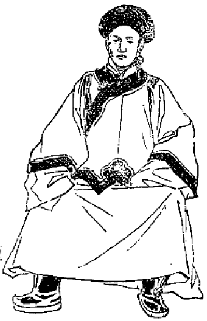
宰相シャーター（壮年時代の肖像）
チベットがシナに対する関係については詳しくいえば大変長くなるですが、これはほとんど専門に歴史上から説かなければ駄目ですから、私はただ今日の状勢を述べるに止めて置きましょう。チベットはシナに対して税金を納めなくてはならん。それはシナの属国として保護を受けて居るからです。だがその税金は昔は納めて居ったですけれどもこの頃は少しも納めない。なぜかといえば、チベットでは年々シナ皇帝のモンラムすなわち大祈祷会を行う。なかなか金が掛るですが、これまではこのモンラムに掛る金をシナ政府から送って来ることになって居ったです。そこでこちらから税金を納めたりまたシナ政府の方からモンラム費用を送るということは、互いに入費を損するだけでつまらない事だから、以後は納税金をもってモンラムを執行するということになってその通り実行して居る。
昔はシナ人はチベットにおいては非常に勢力のあったもので、大抵な無理をいってもチベット国民は盲従して居るという有様でしたから、シナ人の
跋扈というものは非常であったです。しかるに日清戦争以後シナ人の勢力が非常に墜ちて、もはや今日ではチベット人はシナ人に対して敬意を表しないのみならず、ようやく軽蔑する気味が現われて来た。そこでチベットに居るシナ人等は大いにこれを憂えて、何とかしてみたいという考えを起して居ますけれども、何分チベット人が、どうせシナ政府は我が国を助けることは出来やしないと
侮り切って居るものですから、その儘
泣寝入になって勢力は次第に衰えて行くという今日の有様である。
今後シナの勢力はますます衰えるだけで、決してチベットに対してその衰勢を
恢復するということは出来ない。シナからどんな命令があっても、チベット政府は自分に都合の好い事なら
肯きますけれども都合の悪い事は決して
肯かない。既にシナ政府は各国連合軍を受けてその後和約が成った時に、シナの十八省およびチベット、モンゴリヤ等の部分へ黄色な紙に書いたシナ皇帝の勅語を発した。
でチベットでの一番始めのは、ラサ府の釈迦堂の横にある町家の石壁に貼ってあったですが、その勅語の大意は「我が国民はこれまで誤って外国人を
危殆に陥らしめるような事を度々やったけれども、これはその外国人の真相を知らんからである。かの外国人らが我が国へ来て実業に従事し、あるいは教えを布きつつあるは皆相互に利益を謀るためである。しかるにその人々に害を加えるというのはごく善くない事であるから、以後は外国人を害せぬようにせよ。もし害する時分には重刑に処する。既に我が国はどこも皆
開放してしまったから、今後外国人がどこに行っても故障なく通過させるように」という意味であった。
始めにそういう黄色な紙に書いた
詔書が一つ来てラサ府に貼られてあった。その後何枚か来まして、ちょうど三遍に沢山貼り出されたです。その中には多少意味の違ったのもありましたけれども大同小異、我が国は既に外国すべてと和合したから人民もその意を体せよという意味であったです。私はその詔書をラサ府で度々読みました。で、その時始めて確かに各国連合軍が北京を陥れ、皇帝はいずれへか難を避け、やがて
和睦が
調うたその結果こういう
詔勅を発せられたものであるということが分った。
そういうような重い
詔書が来ましても、いやもうチベット人は平気なものです。私がある高等官に尋ねました。「既にこういう
詔書が出たからはもしこれを
楯に取って英国人がここに入って来たらどうするか。」「なあに入れるものか」「どういう訳で。」「どういう訳って、清国皇帝が勝手に言い出した事を何もこっちで
肯く訳はない、まあ大体を考えて見ると、ありゃあ皇帝が言い出した事でなさそうだ。なにしろ皇帝の側には悪い奴が沢山付いて居るから、それらの人間が外国人から金を沢山貰ってよい
塩梅に取り込まれたので、我々人民を
籠絡するためにああいう事を書き出したのだろう。その実皇帝が知らぬに違いない。なぜならばシナ皇帝は文珠菩薩の
化身であるから、チベットの国へ外国人を入れるような馬鹿な事を書くものですか。ありゃ嘘だ、今に分るに違いない」とそれはひとりが言うのみじゃない。そういう事をいう人が沢山ありました。私は確かに皇帝から出された詔勅と信じましたけれども、他の人達はそんな事をいって一向信じないです。シナ皇帝の詔書はチベットにおいては
娼妓の手紙程の
利目もない。実に呆れたものであります。
次にネパールの政府はチベットに対してどうであるか。チベット人がネパールに対する感情等の上において少しく述べたい。ネパール国はこの頃だんだん国民が繁殖して行きます。それは一夫多妻主義で子を沢山
拵えることに骨を折って居るからです。何でも自分の国の勢力を外へ拡張するには、人間を沢山拵えなくちゃあいけない、人を沢山拵えて他国へ押し出すようにしなければならぬという考えで、一夫多妻を非常に奨励したものですから、ようやく喰うことの出来る位の家族でも女房を二人ぐらい持ち、少し
活計向きの豊かなものなれば三人あるいは四人位持って居るというのが今日ネパール国民の状態である。そこで子供が沢山出来る。
どういうものか同じヒマラヤ山中でも、外の国の人間はネパール人程子供は出来ませんが、殊にネパール人は子供が沢山出来る。いつどこの地方へ行って見ても、女が腹を
脹らして居るのを沢山見受けるです。ネパール位腹の脹れた女を沢山見る所はどこにもない。その子供の
殖える数は統計がないから
委しい事は分りませんが、余程沢山なものだろうと思われる。ネパール国内は日本の山家の土地が
拓けて居るように、どこへ行っても田畑が拓かれてある。ヒマラヤ山の中はよく行き届いたもので、林々へ手を入れて森林制度の成り立つようにちゃんと出来てある。もちろんタライの大林などには余り猛獣が沢山棲んで居りますから、その中に手を入れる事は出来ませんけれども、やはりその森林からも多くの材木を沢山
伐り出して、毎年インドの方へ輸出して居るです。
どこへ行ってもなかなか人民が沢山住んで居る。というのは国の小さい割合に人口が多いからです。チベットは恐らくネパール国の十二倍以上の土地を持って居りますけれども、人口はかえってネパールよりも少ない位です。ですからネパール種族はもはや自分の国で喰うことが出来難くなったものですからどしどし外に出掛ける。インドに行って兵士となり商業家となる者もあり、あるいはダージリンからシッキムの方へ来て、新たに田畑を
開墾しその持主となって生計を立てて居るその有様は、実に著しい進歩を呈して居るです。ネパール政府それ自身にも人口のますます繁殖することは自覚して居るものですから、この繁殖する人口をどこへうまく植え付けようかということは、暗々裡にネパール国における一つの困難なる問題となりつつあるです。もちろんその処分法は充分講じなければならん。
ところで英領インド政府と合戦をしてその土地を取り、そしてそこへ移住民を置くがよいかというのにそれは余程困難です。なぜならば小国でありながら大国を相手にして合戦するということは困難である。守ることは出来ても進んでこれを征服してその土地を取るということはほとんど見込みがないのでございますから、そこでネパール政府はチベットの方へ指して、折があったら進撃をしたいというような傾向があるらしく見える。現にネパール国民それ自身を威圧するに足るだけよりもなお多くの兵隊をネパール政府は養成して居るのみか、ほとんどネパール政府は全力を兵士の養成に注いで居るです。
ネパールでは教育とかあるいはその他の文明的事業、即ち施薬病院を建てるとか裁判所を起すとか法律を完全にするというような事については余り多く進んで居らぬ。しかし兵卒は確かに英兵の次に在る位まで訓練されて居る。山で戦う時分にはとても英国兵は及ぶまいと私は信じて居る。なぜならば彼らは山国の住民で日夜山を
降り
昇りする。それもただ降り昇りするだけでなくて、重い荷物を背負って急いで降り昇りする程強い人民である。殊にインドのごとく気候が非常に暑くないところからして人民が余程勤勉である。
インド人は名高い
怠惰者でありますけれども、ネパール人はインド人とほとんど反対であって、どっちかというと日本人に非常によく似て居るです。その容貌といい小さな
身体といい、その色その性質および
義侠心に富んで死を
厭わぬというような点においては、確かに日本人と同一の種族であると思われる程似て居るです。
そういう強い国民の中から選抜して沢山兵士を養成して居るのですからなかなか強い。で、この兵士はどこへ用うるのか。自分の国では用うる場所が少ない。ただ必要あるのは、その自分の国民を移殖する場所を拵えるためにその兵士が必要なんである。その場所はどの方向に求むるかというと、今日のネパール政府の立場としては北方に向うより外に途がない。
形勢既にかくのごとくである上に、今や一大動機がネパール国をして戦争を起さしめねばならんような場合に立ち至らしめたです。それはロシア政府がチベット政府と条約を結び、チベットの法王がロシア皇帝よりビショップの位を得たるのみならず、ロシア政府から多くの兵器を貰うたという事実は、確かにネパール政府をして戒心せしめかつ大いに注意を
惹起せしめたに相違ない。注意すると同時にこの儘打ち棄てて置いて、もし露国がチベットへ侵入して来る時分には唇亡びて歯寒しで、第一に困難を受けるのは即ち我が国であると考えるからには、どうしてもかねての
国是に基づいて施設するところがなくてはならんようになったです。
そこでごくこの頃の事ですがネパール政府からチベット政府へ申込みになった事があるらしい。それはもちろん公然申し込んだのではない。もし公然に申し込めば、返答のいかんによっては是非合戦をやらなくちゃあならん訳ですから、公然と申し込まずにただ「我が国の意向はこうだ、もし貴国においてロシア政府とある約束を結んだ事が事実であり、これからなおますます親密にしようという事であるならば、この儘打ち棄てて置くことは出来ない。早速我が国は我が国の安全を保護するためにチベット政府と合戦を開かなくてはならん」という意向を伝えたらしく私は観察したです（全くの事実なり）。
そもそもこのネパールがチベットに対して戦端を開くということは、こりゃネパール自身が真実希望するところでありましょうか。これを最も希望して居る者はその外に一つある。すなわち英領インド政府です。英国は充分その合戦の起らんことを望むであろうと私は観察するです。なぜならば英国が直接にチベットと合戦
を開くことは損ですからして、英領インド政府からネパールへ幾分の助けをしても、必ずこの戦争を成り立たしめるような
謀をなすに相違ない。
もしそういうふうにして戦争が成り立ちますれば、その戦争に幾多の兵士の生命を
賭けて戦うたネパール人は僅かにうまい汁を吸うに止まって、多くの利益は英国人に帰することになるのでございましょう。そういう利害の点についてネパール政府はよく知って居るか居らないか、私はそれは知らない。今日チベット政府に対してネパール政府が悪感情を
懐くにしてもなるべく合戦を起さぬように、そして実業上多くの人をチベットに遣わしチベットの実業社会の実権を握らせるようにするのが、ネパールの今日とる
国是としては最も得策である。さすればネパール国人は合戦を起さずに自分の目的を達し得ることが出来るです。
そうしてこの後ロシアが入って来たところが、実際にチベットの内地に実業上の勢力を形造って居りますれば、その勢力保護の上から始めて露国と合戦を起しても充分に勝算はあるです。今から
慌てて合戦をするというごときは大いにネパール政府の不得策であって、つまり英領インド政府のためにネパール政府は使われた事になる。思うに現今のネパール国王は思慮に深い人でありますから、
漫りに実益のない戦いを起さぬであろうと私は察するです。私は直接にネパール国王に逢うて度々お話を聞いて、大いにその方の道徳がありかつ智恵の深いのに感服したのみならず、殊にこれを
輔けて居る司令長官などはなかなか世界の事情に通じて居って、容易に人の口車に乗るような方ではない。恐らく英領インド政府の
教唆でチベット政府と合戦をするような事はあるまいと私は信じて居る。
しかしいつまでも合戦をせずに居るということはあるいは出来んかも知れんけれども、今の時に合戦をするのはごく損なのです。たといネパール政府が世間の観察家に観察されたごとく、チベット政府に最後の決心即ち合戦をしようということを申し込んだにしても、それは一時外交上の政略であって、実際やらんのがネパール政府のために大いに執るべき事であるです。で、チベット人はネパール人に対してそんなに悪感情を懐いて居らぬ。また非常に恐れても居らぬ。ただ少しくチベット人の恐るる点は、兵卒がますます多くなるのみかその兵卒が非常に勇敢な者であるという点について、かかる国が我が国へ攻めて来た時分にはどうしようかというて甚だ恐れを懐いて居る。
チベット政府そのものはなるべくネパール政府の歓心を買うようにして居る。既にネパール国王がチベットの
一切蔵経を欲しいというところから、その国のある県の知事スッバ・ハルカマンを、数年前にチベットへその経典を内密に買いにやりました。するとそのスッバ・ハルカマンという人は随分
利かぬ気の人で「ネパール国王から命令を受けて来たのであるからよく拵えろ」というて、版木を摺る場所すなわちナルタンへ
言い付けますと、貴国王からの命令ではお
請をして善いか悪いか、政府に
伺わなければならぬということになった。
元来ネパールの北部にはチベット人が沢山居りまして、その北部のヒマラヤ山中のチベット人はチベットから一切蔵経を買って来ることが例になって居る。ですからその寺なりあるいは随分豪家であれば一切蔵経は大抵持って居るです。チベットでもこれまでは故障なく売って居った。既にそのハルカマン氏のごときもやはり雪山北部の人民でありますから、以前からチベットへ一切蔵経を買いに行った事があって、自分の家にも
祖師部の一切蔵経がある。その一切蔵経の経堂に私は一ヵ月ばかり住んで居ったことがある。
そこで法王政府へ伺ったところがそれはお金を取って売るに及ばない。こちらによいのがあるからこちらからじきにネパール国王にお上げ申すからというような訳で、無代価でもってわざわざネパール国王に献上したです。
其書が今国王の図書館に納まってある。その位で何かにつけてごく親密にやって居るです。ネパール政府もまたチベット国民の歓心を収むるように方法を
運らして居るらしく見える。ネパール国王はインド教の人であって仏教は信じない方であるけれども幾分か信教自由に基づいて、自分の国に居るところのチベット人である仏教信者を随分よく保護されるだけでなく、その仏教の寺とかあるいは霊場に対しても充分に保護を加える、あるいは金を与えるとか
普請をする材木を供給してやるとかいうような事をして充分便宜を与えて居る。
これはネパール内に居るチベット人に対してやって居るのですけれども、人種として同種族でもありその言葉も同じである本部チベットの人も、それを見て幾分か喜ぶ。殊に仏法をよく保護してくれるという点に対して非常に喜んで居る。いま一層ネパール政府の遣り方が積極的に進んで、チベットの民心を
収攬するため及びチベット政府の官吏の心を収むるために、機密費を沢山使いますればネパール政府はきっと成功するだけの位置を占めて居るです。
けれどもネパール政府それ自身が随分内乱が多いので、その国王の実権ある総理大臣はしばしば暗殺されるとか、あるいはその位を退くとかいうような騒ぎをすることが多い。それでチベット政府へ対して手を伸ばす
暇がないのみならず、金もそれだけ沢山入れることが出来ない。今日ネパール政府は兵力を養うことは満足したるに拘わらず、外交上の政略を施す上においては大いに欠けて居るように見えました。
次にチベット外交の将来について一言して置きます。以上述べたごとくチベットは強国三ヵ国からして自分の国に迫られて居る。この強国のいずれが将来この国を支配することになるということについては、大いに
世人の注意するところである。もちろんこの強国三ヵ国が合同してチベットを取ってしまうということは出来ない事情である。あるいは英国とネパールとは合同することが出来るかも知れぬ。ロシアは確かに北方から南下してチベットに侵入しようと
目論見つつある。
その侵入の目的はチベットの乾燥な土地を治めるのが目的でない事は明らかであって、この天然の金城鉄壁ともいうべきヒマラヤ山脈を前にして居るチベット国、即ち天然に
万里の長城を形造って充分に地の利を得たるところの国に指を染めるというは、つまりそのヒマラヤの南の
麓に在る世界の富源地、即ちインドの国を征服したいという目的に出ずることは言を
俟たない。そこで英国とロシアとが合同してチベットを取るというような事はむろん出来ない。
露骨にいえば露国そのものが英国の領分を欲しいという訳ですから、とても合同の出来ない事はきまって居る。
まずこのチベットは英国の手に落ちるか露国の手に落ちるかという、二つの争いになって居るです。ネパール国はこの間において、英国にも譲らず露国にも譲らずして充分自分の目的を達する力には、今兵力を用いるよりも実業的の実力をチベット内部に得ることが一番必要であって、それさえやって置けば決してネパール政府は失敗の位置には立たない。たといチベット国をロシアが取ってもイギリスが取っても、ネパールの占むべき利益は充分占め得らるるです。そこで兵力を用いて争うという場合は露国と英国との
喧嘩のほかにない。
前にも述べましたようにチベット政府は
腐敗極まって、
賄賂次第でどちらへでも向くのですから、こんな政府を相手にすることは出来ないけれども、その政府のおもなる者を
籠絡して幾分かチベットを動揺する力は今日確かにロシアに在る。しかし最も頼みになる愚民までも心服せしむる力は今日英国に在る。ロシアのやって居ることはごく
実着でない。
イギリスの方は誠に実着に出て居りますけれども、外交上の事はどうも実着ばかりで勝を制するとも、また
権謀術数が勝を制するとも、一言にいうことは出来ない。もちろん一番未来の勝利者は
誠実なる方に在ることはきまって居りましょうけれども、今の外交上の場合には一時どうなるか分らんです。容易に判定することが出来ん。ただこの時に当り英領インド政府不注意であったならば露国は遠からずラサ府まで侵入するでありましょう。
果たして侵入することが出来ればそれはもう訳はない。元来チベット国民は仏教を信じて居る優しい心の人間で「これはどうも
前世の約束である」というて
諦めてしまう。ごく消極的因果のみを信ずる性質で、これから進んで自分の国を独立せしめ、そして立派に国の名誉を
挙げようという積極的精神に乏しい人民ですから、ひとたびロシアがラサ府に入った以上はチベット人は諦めてしまうです。もし露国がラサ府に入ったその時は、もはや英領インドの末路がここに現われ来ったものであるというてよい位です。
制海権を握られたる海の上の戦争も確かに怖いけれども、ヒマラヤ山のごとき世界の
金城鉄壁を
楯に取って上から下に臨む戦争も、恐ろしいものであると信ずるです。そうなれば露国は、かのペートル大帝の名高い遺書が世界に実現される事になるは言を
俟たぬ。そんな夢のような事があるものかという者があるかも知らんけれども、それは
畢竟チベットの地勢の
堅固なる事を知らぬからで、もしチベット国の地勢の堅固なる事を知り、そうして確かに露国のような人間が入ったと聞いたならば、もはや英領インドは征服されたものと
見做すでありましょう。
それではチベットはもはや独立することが全く出来んのかという問題が出て来ますが、それはもちろん断言することが出来ない。けれども今日チベット人の依頼的根性は、千数百年以来続いて来たので
一朝一夕に起ったのではない。ある時はインドの大国に心を寄せ、インドによってもって自国の生存を全うしようという依頼心を起し、またある時はシナ政府を頼んで自国の生存を全うしようという考えを起したです。全く
軽弱い婦女子の根性であって少しも独立心というものがない。その独立心のない事は既にチベットの婦女子の性質、一般国民の性質及び政府の意向を述べた時に明らかになって居る訳です。
で私がチベットに居た時分に誠に情けない話を聞いた事がある。それは私の見たところでは今のチベットの法王は非常に鋭敏
果断な方で、また度量も大きくかつ仕事も充分出来る人である。ただ足らぬところは文明的の教育を受けて居らないというだけであって、その他の事は人間としてほとんど完備して居るほどの人である。ことに
下民の情によく通じ、そうして民意を
容れ民心を
収攬することに
力め、また法律を正しゅうしてほとんど
賄賂をもって事を扱うことが出来ぬような
果断の処置をやる方ですから、私はこの法王こそチベット国を独立させるに足るだけの心を持って居らるる方だろうと信じて居りました。
しかるにこれまで英国政府からして何かチベット政府へ掛合い事があって、ややもすると合戦でも起しかねまじき語気を
見すと、法王は大いに恐れて小心
翼々として心配をせられ、
御膳さえろくに
召上らず日夜心を悩まされたそうですが、この頃はこれと打って変って強くなった。イギリス政府がその領分を明らかに定むるために、チベットのある地方においてこれまでの領分より少し余計の場所を取った。その取ったのも訳があるので、ロシア政府がチベットに対しいろいろの
術策を施すのを
見兼ねて、チベット政府の意向を探るために土地を取ったらしい。
ところが法王は少しも
怯む気色なく、いつでも我が国では英国と合戦をやるというような
意気込みで、誠に
愉々快々として
豪傑の本色を表わして居ったというて、感心して居った人がありました。この時私は前に何か事があった時分には、法王が
小心翼々として心を苦しめて居ったということを聞いて居たものですから、豪傑の本色はこんなものか知らんと思って大いに
呆れ、かつチベット国のために悲しんだ訳でありましたが、かように法王が始めは処女のごとく終りは
脱兎のごとき意気込みを示した
所以は、ロシア政府と条約を結び必ず英国政府に対し一致の働きを
執るという約束が成立ちましたのと、兵器などを沢山貰いましたのでもはや英国そのものを
憂うるに足らない、なぜならば今世界において英国の勢力を
挫くに足るものは露国のみであると、こう信じて居るらしい。
右の次第でチベット国にはまず私が遇うた人の中には、その国の独立を謀ろうという考えのある人はほとんどないです。どこか知らん大国に頼らなくてはその国が立行かぬように思うて居る人間ばかりですからもちろん独立は
覚束ない。どれだけ大きな強壮の身体を持って居りましてもそれは
藁人形と同様で、独立心のない豪傑は人の奴隷となるだけです。ただしこの後
意想外の発明の豪傑が出て、仏教上積極的に活発々裡に働くところの
因果の理法を応用して、このチベット国
興隆の策を講じたならば――夢のような望みかも知れんが――確かにチベットは独立することが出来るでございましょう。チベットの外交の将来はこれで
止します。
次にチベットで一番名高いモンラムという祭典について述べます。これはチベット暦の一月三日から始まるので、時によると四日から始まることもあるです。二十四日までその祭典が続いて、二十五日にいよいよ終りの式を
挙げます。これはチベットで最も大なるお祭りであって、また
大祈祷会である。モンラムというのは願いを掛けるという意味ありて、祈祷をするというような事ではない。だがその実際はシナ皇帝の
万歳、万万歳を祈るためにやる方法でございますから、その真実の意味を訳すると大祈祷会ということになるです。けれども
字義通り直訳すれば願いを掛けるというだけの事である。
で、チベット暦の一月一日からこのモンラムの始まるまでは、いわゆる
初春の祝いである。この祝いは遣り方は少しく違って居りますけれども、やはり元日を祝するというに至っては同一です。僧侶は三日からこの
大法会に出て、
読経その他の忙しき仕事に従事しなければならんというところから、大抵十二月二十日から正月休みという休養日を与えらるるが例です。その休みの時分に寺に行って見ると、実に驚くばかりの有様を
呈して居る。私はいかにチベットでもそんな事はあるまいと思いましたが、それは非常なものでお寺の中で公然
骰子を転がして
博奕をやって居る。
どんなに
喧しゅう
夜通しやって居ても誰も何とも言う者がない。子供もみなうまい物を喰うて遊び放題に遊ぶのですから、私共に置いてある小僧なども常はおとなしいけれども、もうこの時ばかりは少しも言うことを
肯かない。夜などはどこに行ったのかちっとも帰って来ない。そういう事がたびたびあって用を
弁ずることが出来んので大いに困った事がある。そのほかに
雇入れてある小僧も同じように出て行ってしまって、二人とも間に合わぬというような訳。これらは例の
汚穢な事をやりに行くらしい様でありました。
そういう時分に堅く身を守ってジーッとして居る人間はほとんど馬鹿のような有様で、学者といわれて
平生むつかしい顔をして居る人も、その時はほとんど酒の飲み続けで酔潰れたかのように精神が
紊れてしまう。
骰子転ばしをするもあれば花を
弄ぶもあり、随分立派な人でも
喰物の
賭け位はやって居る。それが非常に愉快なものと見える。ことに壮士坊主などは歌を謡うやら
角力を取るやら、何が何やら寺の中
一切が乱暴世界になったとしか見えない。近来ますます甚しくなったようです。この時に至ればもはや平生の厳しい法律も
宗規もみな自由に解かれてしもうて、さながら魚が網から飛出して再び大海に泳ぎ出したかのごとくに、
銘々勝手に自分の思う儘をやるという有様です。
ただこの場合において女を寺の中に引込んで怪しい事をするというような事は少しもない。例の美しい小僧が最も
忙しく最も収入の多い時だそうです。心あるラマ博士はこの事を大いに歎いて、その寺の僧侶等に忠告したような著書もある位ですから、全くこれをよいと思って居る人ばかりではない。少し
寛かにする位の事はむろんあるべきはずですが、あるいは
博奕をしたり
公々然と
汚穢な
振舞をしたり、神聖に保たるべき寺の中の騒しい事なお
市場より甚しいというに至っては
言語道断の次第で、全く仏法滅亡の
兆を
顕わして居る。忠告的の書物が幾らあったところが、先生らの耳には
馬耳東風というより見も聞きもせず、いわゆる
余所の国にある
結構な宝物とちっとも違わんのでありますから、何の役にも立たんです。
以上のごとき
乱行が十二日ばかり続いて、いよいよ三日から始まるとなりますと、各寺から僧侶がラサ府を
指して出かけて来る。もちろんセラの大寺から
僅かに一里半の
路程ですから、三日の朝早く出て来れば間に合います。レブンからは三里位これもその日で間に合う。ガンデンから十六里余あるから、二日前から出て二日の晩か三日の朝着くように大抵そういう
都合に出て来るです。その他小さな寺々からも参りますが、この時ラサ府に集まる坊さんの数は二万五、六千人、
歳によって多少はありますけれども、まず大抵その位の数である。
その僧侶はどこへ泊り込むかというと一般に
町家です。町家では一室なり二室なりを明渡して僧侶に貸すというのがラサ市民の義務になって居る。良い僧侶は五人あるいは十人の
弟子坊主を連れて居りますが、二室位借りて別居することが出来ますけれども、つまらない僧侶は二間四面の室に大抵二十人位住んで居るのでございます。まだそのほかに小僧の五、六人も居るというような訳ですから、
鮨を
詰めるように詰めても寝られんで、外へ寝て居る
奴もある。もっとも雪でも降らなければ彼らはそう
酷く寒さを感じないから、外へ寝ることは一向
平気で何とも思わない。ラサ府の住民は大抵
平生五万位のところへ不意に二万五、六千の僧侶が入って来る。その上に各地方から沢山な
参拝人が出て来ますからなかなか大変な人数です。
しかしこの地方から出て来るというのは今の法王になってからの事で、その前は地方から出て来るどころの騒ぎでない。ラサ府に居る人間がどしどし地方へ逃出したという位。「そりゃどうも
奇態だ。モンラムという
大祈祷会があって沢山な人が集まって来るほどなれば、市内に居て
交易でもすれば金が
儲かるではないか。どういう訳で市民がかえって地方へ逃げて行くのか」という疑いが起りましょうけれども、それはこの法王以前におけるラサ府のモンラムの事情を知らないからである。
昔はモンラムの時は、執法僧官なる者が非常の圧制を加えたものであります。その執法僧官はどこから出て来るかといいますと、レブンという三大寺中の一番大きな寺から、一年交代で二人ずつ出て来るです。これはシャーゴというて、つまりレブン寺の法律を
司る僧官である。この僧官の位を得るには、まずその当時の政府の役人に三千円から五千円までの
賄賂を納めなければならんです。競争する人間のいかんによって三千円で得らるる事もあり、また五千円かかることもあります。で、その僧官は一年間レブン寺の法律を司ると同時に、ラサ府におけるモンラムと、この間説明しましたチョエン・ジョェという法王に対する
大祈祷を行う間、ラサ市内の執法官となるのです。
それでモンラム祭のその時はラサ府はすべて僧侶の道場となりまして、人民のすべてはその執法官のもとに服さなければなろん。ところで執法僧官がラサ府において大いに
金儲けをしなくてはならん。というのはもと三千円以上五千円以下の
賄賂を使うたからで、その使うた賄賂を
取戻す上に、自分が一生安楽に
［＃「安楽に」は底本では「安薬に」］暮せるだけの金を儲けなくてはならんという考えから、市民に対して
虐政を施す。その遣り方が実に
酷い。ちょっと
門口の
掃き方が悪いとか、あるいはそこに
塵が一本あったというて、百円の二百円のという罰金を命ずる。何かその時分に
喧嘩でも起るとそれこそ非常な罰金を命じます。ただ罰金を命ずるだけではない。やはりぶん
擲ぐられるです。
それからまた貸した金をどうしても還さないという場合には、この時に願いを
出しますと、まず貸した人間はその半額位しか取ることは出来ないけれども、確かに取ることが出来ます。その代り借りた者はすべての財産を没収されるのみならず、その親類にまで
累を及ぼす事があります。実に乱暴な遣り方で、ほとんどその時の執法僧官なる者は無限の権力を持って居るところの強盗としか思われないほどの悪法を働くです。
そこで市民は
堪らないから「それ
明日からモンラムが始まる」という時分には、その前日、早いのは四、五日前から、道具はことごとく一室に入れて
錠を
卸し、自分達は
田舎へ逃出してしまって、そうして留守番を一人位置いて僧侶にすべての室を貸し与えてしまうという訳ですから、モンラムの時になると十分一位の市民しか居らないで、全く僧侶ばかりが暮して居るという有様になってしまうです。
かの執法僧官は人が居らぬから金を取らぬかというと、何とかかとか口実を
拵えて、あるいは僧侶よりあるいは居残りの人民より沢山な金を取立てる。で、その収入を見当に沢山な金をかけて、僅か一ヵ年間、レブン寺の執法僧官とならん事を希望する人間が沢山あったです。この執法僧官はモンラムの間とチョエン・ジョェの時にラサ府市民及び僧侶を
苛めて金を取るのみでない。そのほか自分の寺へ帰れば、自分がその役を持って居る間は寺で出来得るだけ
賄賂を
貪り、他の僧侶を
虐げて自分の一家を
肥すことを
力めて居るのです。あたかも仏の寺の中で大強盗、大悪魔が横行
跋扈して居るような訳である。
これについて面白い話がある。あるラマ、この方は確かに
神通力を得て居って、地獄に行くことも出来れば極楽あるいは
天堂にも行くことが出来ると社会から信用されて居る方です。あるラサ府の商人がその方の所に行ってからして、「あなたは地獄にお越しになったそうですがどういう方が地獄の中で、最も重い苦しみをして居りましたか。定めし
御覧になりましたろう」というて尋ねた。「はあ見て来ました。」「どういう有様ですか。」「どうも驚いたね、地獄の中に坊さんの多いには。ごろごろ坊主頭が鉄の
臼、鉄の
杵で
酷い鬼に
叩き
潰ぶされて苦しんで居るのを見たが、それでもまあ普通の坊主は地獄の中でも少しはまた楽な事がある。一番酷い苦痛を受けて居る人間の顔を見たところが驚いたね」というと、その商人は大いに驚いて、「それは誰ですか」と尋ねると「それはレブンのシャーゴよ。彼は
無間地獄で一番えらい苦しみを受けて居った。シャーゴといえば我が国に在っては空飛ぶ鳥も落ちるほど恐れられたが、地獄に行くとざまのないものだ」という話をなされたそうですが、成程シャーゴの行くべき未来の世は地獄よりほかにないかも知れません。
さていよいよモンラムが始まるとなると、ラサ府の市街に行列して居った
人糞はどこかへすっかりと持運ばれて
綺麗になってしまう。それから市街の
真中の、小便と人糞で
埋もれて居る
溝もみな埋って平らな道になって居る。実にラサ即ち神国という名の通りに美しく掃除が行届いてしまうです。この時は僧侶にとってはラサ府に居って一番
気色のよい時で、どこへ行っても美しい。
平生は僧侶でも婦人でもちょっと
蹲って
垂流しをやるですが、この時はそういう訳に行かんです。やはりお
厠に行かなくちゃあならん。
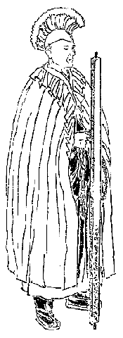
モンラム祭の執法僧官シャーゴ
尾籠な話をするようですが、ラサ府のお厠というのは大抵一軒の家に一つか二つある。または一つ
長屋の内に一つとかいうような
具合になかなか大きく建てられてある。その大きさは二間四面位で、その中へみな入って行く。もっとも入口は小さなもので、中へ入るとその二間四面の
漆喰で固めてある
土間に、深さ一
丈、長さ六尺、幅六寸ほどの穴が
穿たれてありまして、その穴の両側に四角な大きな柱が置かれてあります。そういう
溝のような長い穴が二間四面の内に二つあるいは三つ位
穿ってあって、一つの穴でも二人あるいは三人位列んで出来得るようになって居るのですから、ちょうど九人か十人位の人が一度に
大小便をなし得ることが出来ます。
チベットでは立ってお
便をすることは
在家の男でなくてはほとんどやらないです。僧侶及び婦人、在家の男子でも少し心掛けのある者はみな
蹲って小便をする。そういう風に一家の内でもやはり共同便所のような具合になって居って、その間に
仕切がない。即ち男女混合ですが少しも
愧ずる様子はないです。なお甚しいのは、この際の時に当って少し市中を離れて向うの方へ出ますと小さな川がある。その
川端で僧侶が小便をして居ると、向うの方で婦人がわざと僧侶に対しこれ見よがしに小便をして居るです。実に甚だしい訳で、それがまたモンラムの
御馳走だというて笑って居る僧侶もあるです。
そこでモンラムの
大祈祷会をどこで行うかというと
釈迦堂において行う。およそその釈迦堂はラサ府の図面にも記されてある通り、三階造りの
大伽藍ですがほとんど
詰切れない位集まる。その時の
狭隘しい事というたら
堪らんです。人間の
箱鮨詰というのはああいう時を指して言うのでしょう。子供などは人と人との間に
挾まって動けない。どうかすると
出際に混雑して踏み
蹂られて死んだというような事も
折々あるです。
日に三度ずつ僧侶を集めるのが例で、まず朝五時に始めて七時に終り、二度目は十時に始めて一時前に終り、それから三度目は三時から始めて四時半頃に式を終ってしまうので、金をくれるのは二度目の時です。信者の
布施もあればまた政府からくれる金もある。
一遍に一タンガー即ち二十四銭あるいは四十八銭ないし七十二銭くれる事もあって一定して居らぬ。大抵二十一日間の僧侶一人の収入は毎年五円以上十円位まで大差はない。もし法王が位に
即いた時とか、あるいは
御出生、
御薨去というような場合は例外で、普通の僧侶でも一人二十円内外の収入があるです。高等なるラマになりますとこの時には千円あるいは二千円、多い時には五千円位の収入もある。
しかし僧侶は
宿銭は自分で払わなくちゃあならん。それとても沢山じゃあない。普通の僧侶なれば一人前大抵二十五銭ずつ余程よい室で五十銭位です。特別によい室であれば、そういう室を借りるのはいずれ貴族僧侶ですから、むろん安い銭では借り得られない。三円なりあるいは五円位は出さねばならん。たとい幾ら出しても酒を売る家とかあるいは女の沢山居る家へは――そういう家ではやはり酒を売りますから――僧侶は泊ることが出来ない。また市中の商店にも泊ることが出来ない。しかし商家でも店と全く関係のない別室ならば借りることが出来る。それから祭典中はカムツァンギ・ギケンという教師があって、僧侶の品行を監督して居る。こういう混雑の
最中ですから随分
喧嘩が起らなくてはならんはずですが、
奇態にこの場合には喧嘩をしない。
表面だけは誠におとなしくやって居る。
で毎日三遍ずつモンラムの
祈祷会へ出かけて行くのが例ですから、必ずラサ府の内に住んで居らなければならん。自分の寺に帰って居るということは非常な病人のほかは許されない。ラサ府に
留って居っても必ずその祈祷会に出なければならんという事はないですけれども、まあ大抵出ない者は少ない。ことに昼の
御祈祷の時分には毎日必ず幾分かのゲ（
布施）を貰うことが出来るから、これは格別で、ことによると朝も晩も少しずつくれる事がありますから三度欠かさずに大抵は出かけて行くです。
チベット暦の一月十五日になりますと、チュンガ・チョッパ（十五日の
供養）というてなかなか盛んな
供養会が行われる。これは
夜分の供養会であって昼は全くないのです。この夜分の供養は
二時頃に
済みますけれども、僧侶はそれから外出を許されない。みな自分の室内に
蟄居して居らなければならん。さてその供養物は八丁ほどある釈迦堂の
廻りに供えられるので、その供養のおもなるものはどういうものかといいますと、まずその大なるものは、高さ二十
間、
下幅十五間位ある、長三角形の板へ指してその側面から二頭の
昇り
龍が上って行くところの飾物です。
その板の真中には花の
御殿があり、その御殿の中には仏が
衆生を
済度する有様を
模擬したるものあれば、また王公大臣の模造もあります。その下にもいろいろ人形が置いてあるです。それはみな何で作って居るかといえばバタでもって造ってある。その人形は
極楽世界の天
神、天女もあり、また極楽世界に居るという
迦陵頻迦、
共命鳥というような鳥の類もある。美術心に乏しいチベット人の作としては余程
綺麗にうまく作って居る。これは古代からずっと継続してその遣り方を学び伝えて来たからでありましょう。
それもただバタで拵えただけに止らず、その上に
金箔あるいは五色で
彩りをしてあるから、あたかも美しい絹の着物を着て居るように見えて居る。バタその物は光沢をそれ自身に持って居るからして、こういう風に
彩りをすると非常に光を放つです。その
供養物の前に沢山バタの
燈明を
供え、また道の中央で大なる
篝火――バタの
飾物になるべく熱気の及ばぬところに、それを焚いて誰にもよく見える様にしてある。この供養は朝の四時頃までで日の
上らぬ中に
取片付けてしまう。日が上って来ればバタ細工が
融てしまうからです。で、そのバタの光沢と
金箔、銀箔及び五色の色に映ずるところの幾千万の
燈明とが互いに相照すその美しさは、ほとんどこの世の物とも思えないほどの
壮観及び美観を
呈して居るです。
そういう
供物一つだけではない、小さなのを合せると百二、三十本も
堂塔の廻りに飾られてあるのですからなかなかの美観で、チベットではこれより以上の供物をすることはない。これは一年に
一遍ずつやるのですが、一月十五日はちょうど
陽暦の二月二十三日に当りましたか。どうもその夜の光景というものは、全く一夜に天上の宮殿をこの世界に移したかのように思われる。これは私が見た上での
一家言でなくって、
不風流なチベット人も十五日の供養は
兜率天上弥勒の内縁に供養したその有様をこのラサ府に
現じたのであると、彼らは
諺のようにいうて居る。
この立派な供養を我々僧侶は一人も見ることを許されない。もちろんこの供養に関係ある僧侶だけは役目として見ることが出来ますけれども、二万五、六千の僧侶中それを見得る者は
僅々二、三百人に過ぎない。その他の僧侶はみな自分の室に
蟄居して居なければならぬ。
せっかくの盛大な供養を何で僧侶に見せぬかといいますと、この時にはラサ府の市民が沢山見物に出かけて来ますので非常に
雑踏するです。時々
壮士坊主などが大いに喧嘩を始めて、ラサ市民を
迫害するというような事が起っても、混雑の最中ですから整理のしてみようがない。そこで三十年この方この供養物を見ることを許さぬようになったのだそうです。この供養は夜の八時頃に始まって四時頃に終るのですが、法王がお越しになってよく検分せらるる事もあり、またお越しにならぬ事もある。しかしシナの駐蔵大臣は大抵見廻るようになって居る。
私はやはり僧侶の一員でありましたから、本当はこの供養を見ることが出来ないのですけれども、前大蔵大臣の好意によって一緒に連れて行って貰ったです。大臣と一緒ですから執法僧官のお役人も私を
咎めることが出来ない、もちろん一人で行けばぶん
擲ぐられた上じきに縛られてしまう訳ですが、この時はかえって役人らから舌を出して敬意を表され、じき彼らは他へ避けてしまった位です。で私は大蔵大臣の好意でパルポ商人の大きな家の二階から、大臣と共にまず検分の役人がその供養物を見廻る有様を見ました。
役人の検分が済んだ後でなければ我々は見ることを許されない。例年始めに法王が来られるそうですが、その時には法王がお臨みにならんで
駐蔵大臣が来られた。その
扮装は余程
綺麗な飾りです。
薄絹張の
雪洞に西洋
蝋燭を燈したるものが二十四
張ばかり吊してある。
輦輿の中にシナの立派なる官服を着け、頭にはいわゆる位階を表わしたる帽子を被ってジーッと坐り込んで居る。その前後には何十
疋の馬に乗って居るところのシナ官吏が、今日を
曠れと立派な官服を着飾って
前駆護衛をなして行く。
ことに夜の事で市中に輝いて居る幾万のバタの
燈明は、幾千百のガス燈のごとく白く明かな光を放ってある。その所へ
美麗に飾った
雪洞付の
輦輿に乗って行くのですから余程綺麗です。実に見事ですけれど私は嫌な感じが起った。なぜなればあまりに飾り過ぎて、かえって卑しむべき風を現わして居るからです。チベット人は立派であるというて驚いて居りましたが、確かに我々の眼から見れば実に卑しむべき飾りであると思うて
憫笑せざるを得なかったです。駐蔵大臣の次にはチベットの高等僧官及び俗人の高等官で、一番しまいに出て来るのがその時の
宰相であります。
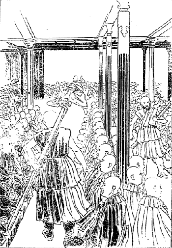
モンラム祭場内の光景及び問答
宰相は四人ある。その名は第一がクショ・シャーター、第二がクショ・ショカン、第三がラマ・テーカン、第四がクショ・ホルカンという。一体は四人とも来るのですがこの日はクショ・シャーターとラマ・テーカンの二人が来られた。ほかは何か差支えがあったらしい。もっともショカンは奥さんが亡くなった当時であるから出て来ることが出来んので、ホルカンはついその頃宰相になったばかりですからまだ出る運びに及ばなかったかも知れぬ。宰相は何のために来るかというと、その供養物の良否および等級を判断するためです。これはどういうところから
供物を上げるかというと、ラサ府で名高い華族あるいは大寺、それから小寺の中でも
由緒あり資産もあるというような寺では年々これを上げることになって居る。
これはむしろ供養というよりも自分の負担すべき税金として上げなければならん事になって居るです。で大抵ごく低いところで三百二十円以上、それからごくよいところで二千円位かかるそうで、そういう物が百二、三十本も立つのですから実に壮観です。恐らくバタでもって一夜にこれだけの大供養を行うということは、私は世界においてほかにあるまいと思います。むろんこれより金のかかった祭典は幾らもありましょう。とにかくバタでもってこれだけ沢山の金をかけて大供養を行うということは
であると私は考えました。このモンラムの祭典中も私はやはり大蔵大臣の家に居りました。で、ただその供養を見ただけで
法会には行きません。なぜ行かないかというに
何分急込しくってなかなか
坐る場所がない。もしうまく坐り得たところがとても動くことも出来ん位ですから、そんな
窮屈な思いをして行くに及ばぬという考えもあったからですけれども、どんな様子か一遍見に行きたいという心地もするものですから見物に出かけたところが、なかなか面白かったです。しかし一番面白いのは壮士坊主の居るところでした。
壮士坊主が騒いで居るところへシャーゴの
下役を勤めて居る警護の僧が、長さ二間ばかり太さ五、六寸ほどの柳の棒を
提げて見廻りに出かけて来る。その棒の端切れが向うの方の隅へでも見えると、今まで鼻唄を
謡ったり
喧嘩をしたり
腕押をして居った奴が、静まり返って
殊勝らしくお経を読み始める。その様子が実に面白い。しかしその人が行ってしまうとお経の声はまた変じてたちまち鼻唄となるので、
祈祷などという考えは
毛頭壮士坊主の心の中にはないようです。
けれども学者の僧侶に至ってはおのずから遣り方が違う。いずれも熱心に問答をやって居る。これはもう博士になる
一世一代の試験をする
大問答ですから、われ劣らじと一生懸命に問答をやるです。この時はセラ大学一ヵ寺でやるのでなく、三大学の僧侶、三大学の僧侶の中でも最も学識有る人間が、今日いよいよ博士になるという人に対して問答を仕掛けるのです。その
答者は即ち二十年間雪中
通夜の問答の苦しみを積み重ね
鍛え来ったところの、いわゆる問答的学問をその時に発表して大いに三大学の間に名声を
轟し、そうして同じ博士になるにしても自分が第一等の博士になろうという考えをもってその
問者に答えて居るその勢いは、
獅子と虎とが戦うかのごとき有様でなかなか愉快です。
一方は
陥穽に入れようとして問いかける。一方はその陥穽の底から
引繰返すような答をする。なかなかその手段の
劇しいことは想像の及ぶところでない。しかして三大学の堂々たる博士、学者達はその周囲を取り巻いていちいち批評を加えるばかりでない。どちらか負けると大いに
鯨波の声を作って笑い立てることがある。その笑いようは、ホホ、ホ、ホホホウと三
切に声を次第に
張上げて行く。そういうふうに二、三人声を
揃えて笑い出すと、数千人の僧侶も一度に
呻り出して堂内も
裂けんばかりの声を挙げるですから、その問答に臨むところのラマは容易な事ではない。
年々このモンラムの間に三大学から十六人ずつ選抜してラハ・ランバのゲーセー（特別の博士号）になる。即ちラサ府のモンラムの時に得たところの博士という意味で、博士の中でも最も名誉ある博士である。その問答試験に応ずる者は三大学中でも
屈指の学僧が選ばれて出るので、普通の僧侶はもちろん出られない。この後チョエン・ジョェの時分にまた十六人選抜する。これは第二流の学僧が出るので、これをツォー・ランバというて居る。そのほかにその寺々で許される博士もある。
これにも二通りあって一つをドー・ランバといい、一つをリンシーという。このドー・ランバの中にはなかなかの学者があって、時によるとラハ・ランバよりもなお立派な学者があります。いきなり名誉高きラハ・ランバになろうとすると金が沢山かかる。しかしいったんドー・ランバになってそれからラハ・ランバの大問答試験を受けるようになると金が沢山かからない。そこで大変立派な学者ではありながら、金の上からどうもラハ・ランバの候補者に選ばれても応ずることが出来ないという事情があって、しばらくここに
辛抱して居るのでほとんど
玉石混淆の観があるけれども、リンシーに至ってはほとんど学力のない事にきまって居る。
ことにレブン及びガンデンの二大寺におけるこの最下等の博士は、大抵五、六年学問を修めた後に金で博士号を買うて自分の田舎へ帰るのです。また田舎へ帰って博士といえば学問の有無に拘わらず信用される。日本でも同じ事ですがチベットでは最も
酷いのです。とにかくモンラムの時に選抜される十六人の博士は立派な者である。その中でも第一等の位置を占めるということは実に名誉である。これはただ博士号を得るに足るだけの教科書に自由自在に通じて居るというただそれだけではこの名誉は
担われない。
確かに他の
一切蔵経に渡って種々の取調べをした人間でなければその選に当ることは今では出来ない。その点から考えますとチベットの仏教学者は、私は日本の仏教学者よりえらいだろうと思う。日本にも天台の宗義に
精しいとか
唯識あるいは真言の宗義に
精しいというえらい学者は沢山ありますけれども、仏教全体に渡って深く通じていずれの点から来ても確かに仏教的の返答が精密に出来るや否やは
覚束ない、この点においては恐らくチベットの博士に及ばぬところがあろうと思います。
モンラム中の様子を見に行くのも随分楽しみで
折々は出かけて見物しましたが、その間は私の仕事はセラのラハ・カンバの大博士とマエ・ケンボという大教師について日々講義を聞きに行くだけ。人は金儲けで忙しいけれども、私は講義を聞きに行くので非常に忙しゅう暮しました。実にその頃はもはやこの国を出ねばならん時機の迫り来ったためか、非常に愉快に勉強することが出来ました。
もちろんその前とてもお医者さんをやるよりも、大蔵大臣の宅に居って書物を読み講義を聞く方が多かったですから、随分よく勉強が出来ましたけれども、この頃からチベットを
出ずる時まで、即ち五月十五、六日頃までは、頭も痛まず肩も
凝らず充分勉強することが出来ました。さて
陽暦の三月四日、即ちチベットの正月二十四日にトーキャ（
投秘剣会）を行いますのでそれを見物に参りました。これとてもすべての僧侶はみな外の方に追出されて容易に見物することが出来んのですけれども、幸いに私は貴族の家（
釈迦堂の前の大家）に
知辺があったものですから、その家の窓から投秘剣会を見ることが出来ました。
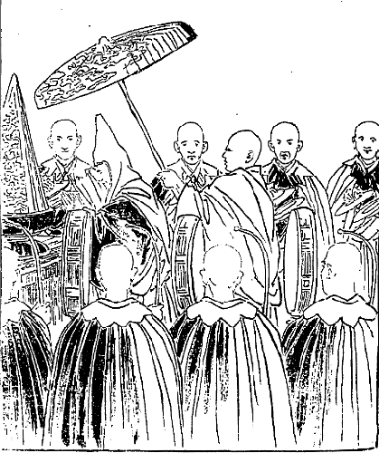
モンラム投秘剣会
この時にはラサ付近における兵士及びラサ府のすべての兵士はもちろん、平生普通の業務を
執って居る者もこの時は兵士となって出て来ますから、ほとんど二千四、五百人の乗馬者があるです。その
装束が実に面白い。ちょうど昔の日本の
鎧兜のような物を着け、またその
兜の上に赤地に白の段だらの
切布を、
赤烏帽子のような具合に後ろに垂れて居る兵士が五百人位あります。そうかと思うと緑と白の段だらを付けてあるとか、あるいは
紫の色とかいろいろの色があって
五色どころじゃない。七色にも八色にもその隊が分れて居る。弓矢を持って居るもあれば鉄砲ばかりを持って行く兵士もある。で
鎧兜の上にはいずれも一人一本ずつ
銘々色変りの小旗を
挾してごく
綺麗な装束です。むしろ戦場に臨んで戦争をやるというよりは
というような具合に私共は見物致しました。その調練もごく儀式的で面白い。いわゆる人が見て戦争の危い事を知るよりは、むしろ戦争というものはこんな
呑気なものか、一つやって見たいという位の
面白味を感ずるです。この日まず一発の号砲と同時に兵士が繰出すので、もっとも
目貫として見るべきは、
釈迦堂の西の部で釈迦堂の上には法王の御座がある。
その式の挙げ方はどうかというと、まず一大隊五百名の五月の
雛飾的の兵士が出て来て一通りの式をやって通り抜けると、また後から出て来て、その通りその式が
済みますと、今度は本堂の中からごく
綺麗な着物を着た坊主が三百人ばかり、
長柄付の
平太鼓、太鼓の表に龍の面の描いてある太鼓を持ち、片手に
弓形の
撥を持って
繰出して参りまして釈迦堂の前面へ円く列ぶです。その次に出て来るのが
鐃鉢を持った僧侶でその数およそ三百人ばかり、その
法衣はいずれも
大金のかかったもので、法衣の下に
金襴のトェカー（肌着）を着けて居る者もある。実に
美々しい
打扮でこの時ばかりはいかに不潔なチベットの者でもその前夜から湯を沸かして身体を
拭きます。
さてその
太鼓隊と鐃鉢隊は二重の円列を作り、やがて一人の鐃鉢を持った隊長らしい僧侶が鐃鉢を打ちつつ踊り出すと同時に、両隊一斉に調子を合せて
叩き立てるかと思うと、ウーウーウーウーと猛虎の
吼ゆるがごとく
酷い声で一斉に呻り立てる。その声は天上にも響くかと思われる位です。その式が済みますと
釈迦堂の内から、例の気狂いのごとくになって居るネーチュン（
神下し）がチベット第一の晴れの
金襴、
錦繍の服を着け、頭にも同様の
冠を
戴き、仰向いて両眼を閉じつつ二人の肩に
縋り、あたかも魚が水を吹出し吸入るるかのごとくにアップアップと、まるで精神を失ったかのように足を
千鳥に運びつつとぼとぼと倒れそうに出かけて来るです。そうすると
愚民はそれに対して一生懸命に拝み立てる、その側にはまた
嘔〔唾〕を吐きかけてやりたそうな顔付をして
嘲って居る僧侶もある。実に面白い。
その
狂人に
付添うて来る僧侶も沢山です。それらの飾りはなかなか立派なもので容易に言葉に尽すことが出来ない。この間セラ寺の
祈祷会の時分に説明して置きましたが、まず
五色の絹で飾り立てたところの二間あまりの宝剣（二十四、五本）を持った奴が両側に列んで出て来る。その次には
金香炉及び種々の
宝物箱を持った
奴が出て来まして、
気狂いはその後から来るのです。どこへ行くかというと釈迦堂から二丁ほどある平地の所へ、
障りなく
投秘剣の式を終えるように守る神様として出て行くのです。
この時ガンデン・チー・リンボチェ即ち私の師匠である方は、そのチー・リンボチェの法服を着けて法王と共に
天蓋付の絹の大傘の下にしずしずと歩んで来られたが、この方が出られた時分には先のネーチュンなる
神下しを
嘲って居った僧侶も、真に敬意を表して静まり返って居る。私などもいかにも善い
如来のごとく思われてありがたく感じました。即ちこのお方が主任者となりその秘剣を放って、シナ皇帝陛下の悪運を払ってしまうという訳になるのでございます。
これで
投秘剣会は終ったのでございますがその終りの式は翌朝挙げるのです。ところがここに妙な習慣がある。僧侶なりあるいはラサの市民なりが石を買うて、一つあるいは二つ位ずつ背負うて東南のキーチュ
河畔に持って行くです。この日そこへ石を持って行って置いて来ると自分の罪障が消えるという信仰からこういうことをやるのです。その石は山の方の人民が割出して持って来るので、一つ十銭とか二十銭という割合で売るのです。
これは大変善い事なんで、つまり夏季に当ってキーチュ川が洪水のために溢れ出しますと、ラサ府はそれがために大損害を受けることになります。
此畔に石を沢山積んで置けば、その水の
氾濫を
禦ぐ用に供することが出来ます。消極的信仰上偶然の善事とはいいながら誠に
結構な事です。
その運ばれる石はなかなか大きなもので、私は二度運んだとか三度運んだとかいうて大いに自慢して居るです。余程良い家の人でも
殊更に自分が運んで行くのもある。また人を五、六人も雇い運び賃を払うて運ばせるのもあるです。
ついでに財政の事について説明します。チベット政府の財政は非常に
錯雑してよく分りかねるのみならず、政府の会計官吏が年々どれだけ収入してどれだけ支出するのか、側の者にはさっぱり分らない。時によって
乱高下があるという大蔵大臣の説明であります。税はすべて物品が多いのですけれども、これを金銭に換算すれば収入が幾らで支出は幾らということが分る訳ですが、どうもそう明らかにし難い場合がある。
物品によっては時に値段に乱高下ありまた値段の定まらんような物もありますから、なかなか統計を取るのがむつかしいです。そういう訳でチベット政府でも統計が出来て居らんのですから、私もそれについては〔数字上〕説明することが出来ない。けれどもどういう具合に
出納が出来て居るか、またどういう方面から税が納まって来るか、どこへ支出されるということは明らかな事でもありかつ納税方法も分って居りますから、その点についてざっと述べて置きます。
はチベット語でラブラン・チェンボという。これを直訳しますとラマの大なる台所という意味で、法王直轄の地方及びその各
荘田主から――人民よりは間接に取立てる訳です――税品を取立てるです。これはその地方から特別に運んで来ますので、決して金を
為替で送るというような便法はない。
ただ物品をその儘二百里あろうが五百里あろうが、その遠い所からみな法王政府に送って来ますですから、納税者は非常に困難ですが、その
途筋では
駅馬を徴発して来ますので、その駅馬なるものはその地方の
賦役として必ず徴発に応じなければならん。その物品はまず麦、豆、小麦、
蕎麦、マル（バタの事なり）、
乾乳等いろいろの物が出て来るです。また税関のある地方からは
珊瑚珠、宝石、布類、
羅紗、
絹及び
乾葡萄、
乾桃、
乾棗類、また地方によっては皮あるいは
宝鹿の
血角を納めるところもある。ほとんどチベットにありとあらゆる産物及び外国から
入来る物品で、大蔵省へ納まらないものはない。
ここに一つ
可笑い事がある。大蔵省でマルを量る
衡がおよそ二十種ばかりある。それから麦、小麦、豆等を量る
枡も三十二種ある。それはみな大小異なって居るので、まずボーチクというのがほぼ我が国の一
斗枡と同じであって正当な枡である。しかるに場合によるとその枡より大きな一斗五
升枡で取立てる事もあり、また七升五合枡で取立てる事もあるから、納税者にとっては大変幸不幸がある。で、その間に大小いろいろの枡が都合三十二種もあるのですが、それでは枡を
拵えて置く必要がないではないかというに、チベット政府ではまた大いにその必要があるです。
まず一番小さな枡で取立てるのはどういう地方の人かといいますと、法王の出られた地方の人とか、あるいは特に政府の高等官に因縁のある地方の人民とかいうような者で、たとい田地一枚について二斗ずつ納むるという名目があっても、ごく余計納むる人の半分しか納めなくて済む。これに反して余計納める人は二斗の名目で三斗納めなくてはならん。ところが法王の出られた所の人達は二斗の名目で一斗五升納めれば事が足るのです。
その地方の人民はかくのごとく特別の待遇を受けて居るに拘わらず、もし政府に反抗したとかあるいはその村から悪漢あるいは大いにその国を害した人間が出たというような場合には、その村民に対し倍の枡を用いて取立てる。名目は半分納める人も倍納める人も同じですから、帳面の上では平均が取れて居るが、事実は大いに相違して居る。そんなら枡が三十余種に分れて居るのはどういう訳かというに、その罪科、責任にはおのずから軽重がある。その軽重に従い、なに村のは第三番枡なになに村のは第十番枡というふうに、所によって用いる枡が違うからです。
バタを収税する時分にもその通り二十種位の
衡を用います。まず収入する時はそういうふうですけれども、
其品を売る時分には決して大きい枡を用いない。平均の枡よりか少し小さいのを用いる。またあまり小さいのを用いると商人が非常に不平を鳴らしますから、そこで少し小さいので売出すです。それから僧侶及び普通政府の役人、あるいは政府の仕事をする職工とか商業家等に
俸禄を与える時分には普通の枡で
量ってやるです。
で、その支出のおもなるものは、前にちょっといった通り
釈迦牟尼如来の本堂費である。即ち堂塔
伽藍の修
復費、
燈明台その他の
什器購入費、
掃除費及び
読経僧侶の手当でありますが、そのうちでも最も多く費用のかかるのは前にいうマルです。マルはこれを油にして日夜幾万の燈明用に供するのです。その燈明の数はラサ府の釈迦堂に上がって居るだけでも二万五千に下らぬと思います。なお何か事のある時分には一万あるいは十万の燈明を上げることがある。それらはみな高価のバタで上げますので、チベットでは
菜種油で燈明を上げるということはほとんどないです。
燈明に菜種油を用いるのは罪悪のように――罪悪とまでは思わんでも仏を
汚すという考えを持って居る。だからラマが「
死際に
供養してくれる時分には決して菜種油を用いてくれるな」と
遺言して死ぬ者も沢山ある。ラサの
釈迦牟尼如来の前には、純金の大なる燈明台が二十四、五も列んであります。その他幾万の燈明台の中には一斗位入るのもありますが、その油は多く大蔵省から供給されるのです。もちろん信者から上がったのもありますけれども……。
チベットの大蔵省はただ
租税を取扱うばかりでない。寄付金または
喜捨の金品も取扱うです。釈迦堂へ何を上げて来ても、あるいは
大法会の時分に、僧侶に対して信者から「ゲ」を与えるにも、いったん大蔵省に納めて後大蔵大臣の命令によって皆に分つのです。
次は法王の宮室費です。これは無制限で何程でも
入用だけ支出しなければならん。とはいうもののむやみに法王の私用に使うということはなく
大凡のきまりはあるそうです。しかし今度の法王になってからなかなか入るものも多くなった代りに、また出るのも多いという話でした。また大蔵省から
取立てた内で、法王政府に属する諸官員及び僧官に
俸禄（年俸と月俸とあり）を与えなければならん。それらは他国に比較するとごく少ないが、しかしその諸官員あるいは僧官は皆
荘田を持って居るのみならずほかに
があります。それは政府から一人について三千円の金を借り得らるる
便宜があるので、その金は僅かに五分の利子である。ところが普通チベットでは年利一割五、六分位で高利は三割位だそうです。この官吏官僧の借りる金は年五分利でありますから、それを借りて普通の商業家に貸しても、一割の利子は取られるようになって居る。
もし官吏官僧が政府への返金を
滞ったからというて、前年の利子を元金に加えることもしなければ、たとい十年利子は払わぬからというて利に利を加えるということは、チベットの法律上許さない。政府は僧俗官吏にかかる
便宜を与え、それから三大寺に対し茶とマルは申すには及ばず、僧侶に対しても一人平均六円位ずつの
僧禄を与えるです。話は余事に
渉ったですが、法王はまた別に財源を持って居る。それは信者からの
上りものもあり、法王自身に付いてある
荘田もあり、また牧畜場もあるです。
その他法王
直轄の商隊があってシナ及びインドの方へ商いに出かける。大蔵省の方にも商隊はあるが、それは法王の商隊とは全く別なんです。法王の台所を称してツェ・ラブラン（峰のラマの台所という意味）という。法王の
御殿が峰の上にあるからで、この法王の宮殿は宮殿なり寺なりまた城なり、即ち一つで三つを
兼ねて居るというて
宜しい。城の建て方としてはチベット第一流である。寺としてもまた非常に立派なものである。宮殿としてもごく適当である。しかしここに
があります。それはこの法王殿の中に一個の
井もなければ泉もない。全く水がないのです。大なる
高塀で厳重に
取囲まれてあるから、敵が攻めて来ても
籠城して居るにはごく都合がよく出来て居るに拘わらず、そのうちに水の出る所のないというのは実に
奇態な訳です。その水はどこから
仰ぐかというと、御殿の所から二、三丁も下へ降り、それからまた平地を二丁ばかり行って
遙か向うに流れてある
川端の
井から水を運ぶのです。
その間の距離は五丁ばかりですが、そのうちにも三丁は非常に厳しい石坂を登らなくてはならん。それからずっと上まで上るには五丁もある。そういう遠い所からして毎日毎日水を運んで居りますので、水運びを商売にして居る人間は沢山あるです。で、その水はつまり法王の宮殿内に住んで居る人が買いますので、価は一ヵ月一人前二十五銭位の割合です。それからこの法王の宮殿に居る貴族的僧侶は百六十五名ありまして、その一団体を称してナムギャル・ターサンというて居る。
この貴族僧侶はその
顔容まで
一粒選りの
綺麗揃いで、その生活の有様は実にチベット国における僧侶中の最高等のものである。またこれまで法王の台所へモンゴリヤから上げた金銀は少なからんです。ところが今日はその収入がほとんどなくなり、したがってチベット国民の負担が重くなったようです。しかしこれまできまって居る租税を多くするという訳にいきませんから、つまり大きな枡で取るというような都合になったのです。
なお地方には政府へ納むべき租税を取立てる場所が二つある。一つは寺で一つは地方官である。寺の
管轄を受けて居る人民は寺に納め、地方官に管轄されて居る人民は地方官に納めるのです。地方には「ゾン」というものがある。このゾンというのは戦争の目的によって建てられたる城でありますが、普通の場合には役所として用いて居る。即ち裁判の事も警察の事もまた租税の取立ても皆
此城でやるです。
そのゾンの建てられてある所はどこでも大抵登り二、三丁位の小山の頂上で、ゾンの中にゾンボン（城の長という意味、ただし俗人なり）という者が居る。日本でいえば知事のようなものです。で麦の出来る所からは麦、小麦の所は小麦、また牧畜地からはバタを取立てるという具合に、その地方地方によって税品が皆違って居る。そのゾンに集まったところの物品あるいは銀貨を中央政府に送ります。もっとも地方政府のゾンボンは中央政府から年俸あるいは月俸等を貰わない。その地方から取立てた租税の中から自分の月俸を取るです。中央政府から地方政府に対して物品あるいは銀貨を送るというような事はほとんどない。何か地方に特別の事が起って、その地方の人民が大いに困難に陥ったとかいう時分には、政府から救助金を送る事があるだけです。
その他中央政府直轄の人民は人頭税を中央政府に納めることがある。また華族及び高等僧侶の寺に属して居る人民は、その所属の華族等に税を取立てられるのはもちろんですけれど、中央政府への分は取立てられる地方もありまた取られない所もある。それは一向不規則できまっては居りません。これがチベットの中央及び地方の財政の概略の説明であります。
次に法王の財産は、法王が一人お
薨れになるとその遺産の半分――半分というは表向きで実は半ば以上――は法王出身地の血族の者が大抵貰うことにきまって居る。その後の金は諸大寺の僧侶及び新派の僧侶等に「ゲ」として与えられるです。
ついでに言うて置きますことは、普通の僧侶の遺産で例えば五千円の資産ある者が死ぬと、大抵四千円までは僧侶の「ゲ」及び
燈明代に供えて、他の一千円をもってその人の
死骸を送り、あるいは
跡始末を付けるという位のもので、その弟子達の受けるのは僅かに三百円か五百円あれば余程よい方である。事によると弟子が借金してでも、その師匠の
功徳の為に「ゲ」及び燈明代を供えるという美風がある。これは俗人社会においては全く見ることは出来んけれども、僧侶社会には普通の事で実によき習慣であると考えるです。
次にチベットの兵制について述べます。ただいま常備兵としてあるのはほとんど五千人足らずであります。実際の名目は五千人ですけれど、私の観察では少し足らないように思う。チベット人口
六百万人に対する五千人の兵士は実に少ない。外国に対する事はおろか自分の国の内乱に対しても、よくこれを平らげて国を安らかに保つということは出来得ないように思われる。
けれどもチベットは兵隊で国が治まって居るのではない。威圧で国が治まって居るのではない。ただ仏教の信仰力あるが為に国が治まって居るのである。多数の
蒙昧なる
愚民はただ仏教を信ずるの一念、即ち法王その人は
活きたる
観世音菩薩と信ずるの余りに、法王に対しては決して
剣を向けることは出来ない。敵として戦うことは決して出来ないという観念は、一般に
染渡って居ります。ですから兵士は僅かでもそんなに多く内乱も起らずに治まって居るです。大抵チベットで
は法王が
薨れたとか、あるいはなお幼くして
政を
親らすることが出来んという時に当り、ある大臣が
威をほしいままにするとか、その時の仮りの法王が権を
専らにして人民を
虐げるという場合に、人民が
憤激して内乱を起すことがありますけれども、法王が成長して実際その国の
政を執るに当っては、多少困難な事が起っても、これは
活きたる
観世音菩薩に仕えるのである、
供養するのであるという観念をもって
心服して居りますから、兵隊は沢山
要らない訳です。
ただチベットで非常に兵士を置く必要を感じたのは、ネパールとの二度の合戦その後また英領インドとの戦争以来、ぜひ兵士がなくてはならぬというて、まず雇兵として五千人の常備兵隊を置いてあるので、義務兵という者は一人もない。この雇い兵士は要所要所に分遣されて居るので、ラサには僅かに一千人、それからシカチェに二千人、テンリーというてネパール国に対する最も緊要なる
防禦場である所に五百名とはいうて居るが、その実三百名しか居らぬかも知れない。
其城にはシナ兵も二、三百名ばかり居る。それからギャンチェに五百名、ダムに五百名、マンカム地方に五百名で都合五千名ということになって居る。
それからシナ兵は二千名程居る。即ちラサに五百名、シカチェに五百名、テンリーにも五百名といいますけれどもこれも二百名位しか居らない。トモ（
靖西）に五百名、合せて二千名です。これらのチベット兵士には五百名に対し一人の大将がある。それはデーボンというて居る。それから二百五十名に対する一人の将官、その下は二十五名について一人、五名について一人というように長を設けて
統轄して居ります。
チベットの雇兵の
月俸は麦二斗余りで、兵舎は別に建てられてなく市中に散在して居るのです。いずれも商家でその家で商いをして居るもあれば、また種々の内職をやって居る者もある。もちろん兵士の居る家の建築費用は市民の負担で、私は市民が折々詰らぬというて不平を漏らすのを聞いたことがありますが、シナ兵もやはり市民の
拵えた普通の家に入って居ります。その中には理髪所もあればまた
喰物店もあるというような訳で、女房もあれば子供もある。二斗の麦で女房子まで
糊口すということはほとんど出来ない事で、つまり商売と内職の方で儲けた銭で生活を立てて居るのです。
で麦二斗貰う義務は月に五回か六回の調練に出かけるだけである。そうして一年に一回大演習をやるです。それはラサ市街の北セラ大学に行く道筋に当って居る一里弱の所に、タブチーという小さな村がある。そこにはシナの
関羽も祀ってある。チベットでは関羽の事をゲーサルギ・ギャルポ（
花蕊の王という意味）というて、悪魔を
祓う神として大いに
尊崇して居る。その多くは
在留シナ人が
参詣しますので
此社には鶏などが沢山飼うてあります。その横にはタブチーという大きな寺があって、このゲーサルギ・ギャルポを祭る坊さんが居るです。
この
関羽の
廟の中に面白い物がある。青鬼赤鬼ら地獄の鬼の姿を沢山
拵えて関羽の
手下のように飾ってある。その美術がてかてか面白く出来て居る。こういう寺及び七、八軒ある小村を過ぎて少しく北に行くと、平地に二丁四面程の高地があって、そこに武器庫が建ててある。それから北へ二里、西へ半里、東へ二里ばかりある
広野があります。その
曠原において大調練をやります。始めの二日はシナ兵、後の二日はチベット兵、これは大抵夏季の終り、即ち
陽暦の八月末九月初頃に行うので、もっともその時が非常に都合が好い、麦は皆
刈取られていずこへ走ったところが
麦作を害するということはないからです。
その時にはシナの駐蔵大臣はもちろんチベットの将軍らも皆出て行きまして、成績良い兵士に一円より十円までの金を与えるもあれば銀製の
賞牌を与えるもあります。今でもチベットでは兵士に弓を引くことを必要なる業として授けて居る。鉄砲もこの頃は幾分か西洋式の調練をやって居るけれども、見るに足る程の事もない。これはシナ兵士が教えまたインドで学んだチベット兵が教えて居るのです。
は私の観察したところではシナ兵にもチベット兵にもない。かえって兵士は普通人民より劣りはすまいかと思う程です。シナ兵の中には
痩せた青い顔をして居る奴が随分多い。チベット兵士にはそんなのは少ないがしかし気概は持って居らない。これは大方収入が少なくて
活計向に心を
艱ますからであろうと思われる。これらの気概の
沮喪した兵士に比すると壮士坊主の方が余程えらい。彼らは妻はなし子はなし、少しも
顧るところがないから実に勇気
凜然として、誰をも恐れないという勢いを持って居る。その点においては確かに壮士坊主の方が頼むに足るです。どうもこれらの兵士は戦争の時分には余り間に合わぬだろうと思う。
一番どういう事の働きをするかといえば、まず戦争が起れば乱暴
狼藉を働いて、内地人の財産を
分捕りする位の事でとても国の役には立たない。これは
畢竟妻帯に原因するので、兵士としては妻帯する程勇気を
沮喪するものはないです。チベット人は最も情緒の力に富んで居って妻子を想うの情も深いです。妻子のある兵士はまず合戦の間に合わぬといってよいでしょう。この点においては情緒には欠けて居るところがあるけれども、チベット中でカムの国の人間は
というてよい。一切の人民は皆兵士であるというてよい。その婦人も婦人というよりもむしろ
女丈夫的兵士であるというも過言でない。彼らの職業はもちろん商売もし耕作もし牧畜もやるけれども、最も彼らの勇気を働かしそして大いに喜ぶところの仕事は何かといえば強盗である。最も同国人の
讃歎するところの面白い仕事は強盗である。あるいは他の部落を
陥れ幾人の人間を殺すことを非常な名誉と思うて居るんである。カムには強盗の歌がある。その
俗謡がなかなか面白い。その謡い方はいかにも勇壮活発で、
斃れて
後已むの
気概が充分に充ち満ちて実に勇ましく聞こえるです。だから子供などは大いに悦んでその強盗の歌を謡うて居る。実に子供の心をして奮起せしむるところのものはこの強盗の歌であるです。
チベットには軍歌というものはない。やはりこのカムの強盗の歌をもって軍歌に代用して居るです。その俗謡はなかなか面白いから二つ三つ訳しましょう。
果てなき原の草の上、巌角するどき険崖の際、鉄の蹄の馬立てて、討手に進む我が心
弾丸ちる霰の中とても、雪波立てたる風とても、厭うことなき鉄の靴、勝手に進む我が心
恃みは妻子にあらずして、寄辺は父母にあらぬなり、何かの艱みを忍びつつ、成功に進む我が心
右の歌を謡うにはその始めに総て「ア、ラ、ラー、ラ、ラ、モ」という発語を用い、その終りには「ラ、ラ、モラ、ラ、ラ、モ」という語尾を付けて勢いよく謡うのであります。
こういう勇壮なる謡は沢山ありますので、その歌を謡う調子の活発さは人をして知らず知らずいかなる
曠原、
漠野の中へも、またいかなる高山積雪の中へも敵を
討つ為には一身を
抛って進もうという勇気を
喚発せしむるに足るです。そこでこの歌の心はどういうものかというと実によい歌です。かかる勇気がなければ到底大敵を
滅して国難を救うことは出来ない。しかしこういう立派な心の歌もです、強盗をする場合に用いますとその歌は
兇器となりその人は大悪人とならざるを得ない。もしこれを交戦の場合に用いますればその人は大忠臣となり、いわゆる国家なる一集合体を利益する訳になるです。
勇進するという心は一つであるけれども、方法として用いる場合と目的いかんによって善と悪とに
岐れるですから、何事にしろただ勇進すればよいという訳にはいかない。また方法はどんなでもよいという訳にいかない。この頃世間の浅はかな学者あるいは
生物識の僧侶または才子らしい人を
欺くところの実に恐るべき毒の言葉がある。その言葉は実に憎むべき言葉である。そりゃどういうことかというと、目的を達する為にはいかなる方法をも
執るべしという
譫言である。この意味を極端に解釈すれば、
己れの幸福なる目的を達する為には、法律規則にさえ触れなければ、たとい他人を
迫害しても白昼公然強盗的行為をやっても構わぬという訳になる。
かかる方法で成功したのはいわゆる悪魔の成功で
憫むべきである。それ故私は断言します、目的を達する為にはただ誠実なる方法を
執るの一つあるのみと。目的というたところが己れの利益を謀るのみなれば
止すがよいです。他人を利するという目的を立て誠実な方法によってこれを実行して行けば、
自から自分も利益を得られて、その国民が和合して国が円満に治まるです。これを要するに、カムの強盗の歌でもその歌の心はよいのですから、これを軍歌に用いても差支えないという感じを述べて置くまでの事であります。次は
チベット宗教の将来について述べます。前から述べて居るところによってもほぼ分りましょうが、チベット一般の国民は実に仏教を信ずる事によって
活きて居るのです。他の学者からいえばあるいは
迷信であるというかも知れない。もちろん迷信が多いので、ほとんど皆が迷信であると思う程感心しない事が沢山ありますけれども、その中に幾分の真実を含んで居るです。全く間違って居る事ばかりと否定するのは
軽卒な判断といわねばならん。ちょうど多くの
石の中に小さな宝石があるようなもので、玉が眼につかぬからというて石と共に棄ててしまうのは識者の取らぬところである。チベット国民の迷信中にも真実価値のある信仰ありと認識しなければならん。
さてそのチベット国民の真実の信仰はどういうのかといいますと二つあります。一つは人間より以上の実在物があって、その実在物は確かに我々を保護して下さる。で、その実在物との交通は我々の信仰によって
為し得るということを確かに信じて居るです。その存在物を信ずる上においては、
種々の間違った祭事や儀式等があるけれども、それは小さな宝玉の周囲にある岩のようなもので、その本心においては確かに
仏陀あるいは
菩薩があって、我々の困難を救い我々に幸福を与えて下さるという信仰を確実に持って居るです。
なおその上に神というものを認めて居りますけれども、どんな神でもあるいは腹を立てて人民に害を与え
仇を加える事がある。例えば
耶蘇教の神さんでも、その昔人民が罪悪に
陥って
済度し難いからというて大いに
憤り、大洪水を起して
総ての罪悪人を殺し、ただその中の善い人間即ちノアという者を救うたというような
依怙贔屓をする者である。チベットの神も皆
然り。いわゆる人間の
喜怒哀楽の情緒をその儘に実行される者である。ところが仏はどんな事があってもお怒りなさらぬ。仏ほど深い慈悲と円満なる智慧を持って居らるるありがたい方は世界にはないと堅く信仰して居るです。それはもう実に
蒙昧なる人民でも神と仏の違い、即ち神は怖いもの仏はありがたいものということをちゃんと知って居る。
かくのごとくチベット人民はごく詰らない迷信を沢山持って居るに拘わらず、こういう立派な信仰を持って居る。今一つは原因結果の道理で何事も
自業自得、自分の
為したる悪事は自分で苦しい思いをして
償わなくちゃあならん、また自分の為したる善事の結果即ち快楽幸福もまた自分が受け得らるるのである。そして原因結果の規則は未来
永劫に続くものである。いわゆる種が実となり実が種となってどこまでも継続して行くものである。
それと同じ事で我々の心もまた死んだからというて決して
滅するものでない。再びこの世に生れ変って来るものであるということを確かに信じて居るのは、いわゆる
瓦礫中の
璧であるです。ところが生れ変って来るという原因結果の道理を信ずるところからして、どこそこのラマその者は今度どこへ生れて来たとかあすこに生れ変って来たとかいうて騒ぎ立てるのは、いわゆる真実の信仰が過ぎて迷信となったのであります。ただ原因結果、自業自得の理法に基づいて自分の
心体そのものは未来永劫
滅しないものであるという尊い信仰は、仏教信者として第一に有すべき信仰でありまして、チベット人はもはやこういう事の話を幼い時からお
伽話として母の口より
吹込まれて居る。ですからチベット人の
のようなもので、古代の神話にしろ何にしろみんな仏教に関係を持たぬ話は一つもないのですが、かく迷信が深いに拘わらず本当の信仰そのものもやはり国民一般に普及して居るのでございます。それゆえに古代のポン教のごときも、いつしか仏教に化せられてしまって、そうして全くその
旨意の違って居る教えが、仏教の説明の通りに説き明かさなければ立たないようになったものですから、ここに新ポン教というものが出来たので、今は古いポン教の面目はどんなものであるかほとんど見ることも出来ないようになってしまいました。
新ポン教の教理は仏教に似て、そうしてまた
神道の
気味合を持って居る教えである。ちょうど日本の
両部神道というたようなものであるが、しかし
其教よりもなお
一層進んで居ります。ポンというは
真如ということで、ポンそのものが真如の本体、
法身であると説明して、それから教えを説き立てて全く仏教のごとくに解釈してしまったです。これいわゆる偉大なるものに小なるものが化せられた訳です。
ここに最も
訝しい事はチベットにマホメット教があることで、その信者はシナ人と往古カシミールから移住した者の
苗裔とであります。ラサ、シカチェを集めておよそ三百人もございましょう。このマホメット教徒は今もやはりその宗義を守り、現にラサの市外にマホメットの寺が二つあり、また墓所も遠い山のあたりに二つあるです。その一つの寺はカシミール人のマホメット教徒の集まる所で、一つはシナ人のマホメット教徒の集まる寺であります。で、この盛大なる仏教国において、微々たる勢力ではあるがマホメット教の面目を維持して居るのは、甚だ奇といわざるを得ない。
それからその教徒の言うことが実に面白い。信者のいうところによれば、回回教にも仏教と同じく
前世もあり未来もありますけれども、現世の人間は未来もやはり人間に生れ、動物はやはり動物に生れるものであるというて、仏教のように人が他の下等動物に生れる事があるとはいわんです。いよいよ
仕舞にはどうなるかというと、神の国に生れるか地獄に行くかの二つであると、こういって居るマホメット教徒もあります。
私がいいました。「お前達の信ずるマホメット教中にはそんな教理はない。
教旨はつまりキリスト教によって立てられたのではないか。コーランの中には前世はあるがまた後に生れ変って来るという説明はほとんどありはしない。全くないとはいわぬ。既に
耶蘇のバイブルの
中にそういうような意味も
顕れて居るから全く無いとはいわないが、お前達の教会においてかつてそんな事をいうた例はない。どうも
訝しいじゃないか」と突っ込みますと、「いや無いことはない。本当にあるんじゃ」なんて本気にいうて居る人が沢山ございましたが、これはいわゆる仏教化されたものであろうと思われる。
この頃欧米の宣教師は、
耶蘇教をチベット人に伝えようとして
百折不撓の精神をもって、熱心に布教に従事して居られるのは実に感服の至りであるけれども、かの国は鎖国であるからして内地人には少しもその教えを及ぼすことは出来ない。まずダージリンに出て来て居る人間あるいはシッキム地方に住んで居るチベット人に対して、耶蘇教を伝えようということを非常に企てて居ります。既にこの布教の為には幾十万の金を費やして、聖書もチベット語の翻訳が出来て居る。その外になお細かな書物も沢山チベット語に翻訳され、またチベット語で仏教の取るに足らぬ事、殊に仏教はほとんど迷信をもって満たされて居るという具合に説明して、数十年この方、僅かにダージリンの開けかけると同時に宣教師はその地に足を入れて、チベット人に対し殊に親切に教えを施すことに尽力して居ります。
前回に述べたごとくキリスト教徒が熱心に尽力して居るに拘わらず、今日までのところでは全く不成功である。僅かに得たる信者はいわゆる
詐欺的信者であって、決して真実の信者を得て居らない。幾分か信者らしい、信者の出て来てあるのはそりゃ純粋のチベット人ではない。チベット人という名はあるけれども、実際はシッキム人である。チベット人というて居るシッキム人の中には、真実に信じて居る者も少しはあるけれども、今日に至るまで内部から出て来たチベット人で、真実に信じて居る者は一人もないといってよい位です。
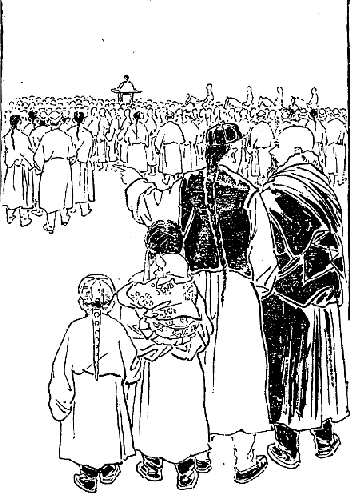
チベット第二の大ラマの行列
ただ
口糊をする為に
耶蘇教に入って居るだけであって、決して耶蘇教を信じて入って居るのでない。なかなか確実な信者であるというて居る者もです。その者の家へ行って見ますと、秘密室内に仏陀を
祀り日夜
燈明を上げて置きながら、外へ出ると自分は耶蘇教徒であると言い触らして、日曜日には聖書を持って耶蘇教徒の会堂へ出かけて行くです。これらのチベット人は欧米人を
誑かしてひたすら
己れの便宜と利益とを
謀る為に、耶蘇教の
尊い聖書を道具に使って居るので実に驚いたものであります。そういう有様ですから、既に宣教師の下働きを
為し、あたかもキリスト教の字引であるかのごとく見えて居るチベット人も、充分腹が太くなって金が少し出来るとじきにひっくり返って、自分は元より仏教徒であるというて耶蘇の教会堂から逃出して
顧みない奴が沢山ある。
それはこうなる筈です。真実仏教を信じて居る者には、どうしても耶蘇教に入ることが出来ない。なぜなれば仏教のいわゆる
解脱ということは、自分自身において絶対的自由、即ち精神的の最大自由を得るの
謂であるのに、耶蘇教には神という一つの無限の勢力者があって、自分が絶対的自由を得ることの出来ないようになって居るです。それにまた因果の道理が耶蘇教では明らかになって居らぬ。もっともよい木はよい実を結び
悪しき木は悪しき実を結ぶということがあるから、全く無い訳ではないけれども、いかにもその範囲が狭いです。もっとその理を
推し拡めて、いわゆる前世にも未来にも及ぼすようにすれば、きっとチベット人に対する道が立つであろうと思います。
また耶蘇教には
自業自得ということもない訳ではない。「
爾自らの信仰、爾を
癒せり」というキリストのお言葉は、即ち自業自得を意味して居るのでありますけれども、今はこの自業自得の理は教会的キリスト教の為に甚だ範囲を
狭められて、その真実の意味が明らかになって居らぬ。自業自得の理を信ずること甚だ厚きチベット人には不向きであろうと思われる。もしキリスト教がチベット人に対し、その布教の目的を成功しようというのには、その教祖の救世主が仰せられた真実の意味を発揮しなければならぬ。しかるにチベット人を感化する為に、数十年の間に何十名の堂々たる〔男〕女宣教師が幾千万の金を費やして布教に従事しながら、僅かに一、二の信者すらも得難いというに至っては、その不成功にもまた驚かざるを得ないではありませんか。
さてチベット宗教の将来はいかがでありましょうか。今最も勢力ある宗教はもちろん仏教であって、それに対する宗教はポン教、マホメット教及びイエス・キリストの教えである。けれどもこの三教は今日の状態を変じなければ決して仏教の地位を奪うことは出来ない。チベットにおける仏教は腐敗して居るというても、前にいう通りチベット人はほとんど先天的に仏教を遺伝されて居りまして、なお幾分かよい現象が存在して居りますから、その中に真実の大菩薩が出でてかの国の仏教の腐敗を一洗し、そして仏教の真面目なる活発発地の大自由の道理を発揮すれば、必ず再び
興ることがありましょう。
けれども今日の様子では、まずチベット仏教は下火に向って居るといわねばならぬ。ただその将来はキリスト教そのものも今のような、腐敗した教会の宗条的キリスト教では、チベット人に対してはほとんど布教の見込みなしというてよい。またチベット仏教も今言う通り大活劇を試みる大菩薩が出なかった時分には、この儘習慣的、儀式的に維持される位のものであると私は考えるのであります。これでチベットの宗教の将来という問題はお
仕舞にして置きます。
昨年インドへ交易に行ったところのツァ・ルンバという者が、明治三十五年の四月三十日に帰って参りました。これは先にも申しました通り、私の信書をインドのダージリンに持って行って、そうしてサラット・チャンドラ・ダース師及びシャブズンというラマに渡し、なお故郷の方へも手紙を送る手続きをしてくれたチベットの商人であります。で、セラの僧舎へ無事に帰って来たという報知がありましたが、その時には私はセラに居らないで大蔵大臣の所に居りました。それで小僧がわざわざその報知を伝えに来ましたから、私はその翌五月
朔日の朝からその返事を受取りかたがた行きました。
幸いに主人が居りまして一別以来の
挨拶を終りますと、ツァ・ルンバのいいますには「どうもダージリンへ行ったところが、サラット・チャンドラ・ダース師は国（インド）の方へ帰って居られてお
不在であったから、
行際に手紙を渡すことが出来なかった。仕方がないからシャブズン・ラマに渡そうとしたところが、ラマもネパールのカトマンズの方へ寺詣りに行かれてお
不在であった。仕方がないからいったんカルカッタの方へ行って、今度帰って来るとちょうどサラット先生もシャブズン・ラマも帰って居られたから手紙を渡した。サラット師は返事を書いて置くから
明後日取りに来いという話であったけれども、私は再びサラット師の所に行くことが出来なかった。なぜなれば私は政府の命を帯びて鉄を沢山買入れた。もしその事が英領インド政府に知れた時分には、私は
捉えられて
酷い眼に遇わねばならん。だからそう長くダージリンに留まって居ることは出来んからで、その翌日
出立して帰ることにした。もっともシャブズン氏からは手紙を貰って来た。シャブズン氏の手紙の中には
委細書いてある筈だ」というて手紙をくれました。
それを
披いて見ると「サラット師への手紙も着き、その中に封じてあった故郷への手紙は
書留にして故郷に送りました。私までへ手紙とお
家苞を下すってありがとうございます」との返事です。チベットでは手紙を出す時分には必ず
土産を
添えてやる。相当の土産がないと、この間申しましたカタという
薄絹を入れてやるのが例ですから、私も相当の土産を贈ってやりました。その礼状かたがたの返事で、その返事に西洋の白砂糖と
外に二、三品珍しい物を添えて
遣されました。で、その時はツァ・ルンバより英杜戦争その他いろいろのダージリンからの
土産話などを聞いて別れたことでございます。
五月十三日即ちチベット暦の四月四日です。その時にツァン州のシカチェ府のタシ・ルフンプー寺の
［＃「ルフンプー寺の」は底本では「ルフンプー等の」］大ラマ、パンチェン・リンボチェ即ち第二の法王がラサ府へ着かるる事になったです。このパンチェン・リンボチェはその当時二十歳の方で
未の歳であります。もう二十歳になれば
具足戒を受ける資格がありますので、今の法王ツプテン・ギャムツォ大ラマよりその戒法を受ける為に来られるのです。
これはなかなかの
大典で、法王が位に
即く時とかあるいは法王が具足戒を受ける時と同一で、上下
挙ってパンチェン・リンボチェをラサの市外、即ち法王の宮殿の西パーマーリーという辺まで歓迎に出掛けて行きます。私も迎えかたがた見物ながら、例の
薬舗の
李之楫氏と共に家の子供などを連れて出かけました。なかなか立派な行列であります。その行列の
概略は、かつてシカチェ府に私が居った時分に説明したのと同一でありますからここには略します。
この日その行列を見まして帰りがけに、ツァ・ルンバがお茶を上げるからというものですから、私はちょっとその宅へ寄りました。で上座の敷物の上に座り込んで居りますと、一人の紳士が入って来ました。
其人は法王の商隊長を勤めて居る男で、タクボ・ツンバイ・チョェン・ジョェという人です。ツァ・ルンバもやっぱり政府の為に鉄を買いに行ったり何かしますから、その関係で互いに往来することがあるのです。私の座って居る室へ入って来るなりジーッと鋭い眼で、しばらく私の顔を見詰めて居ったです。私はその男の容態を見ますのに余程腹の悪い男らしい。けれどもまた非常に才子であるように見受けました。
さてその商隊長はずっと進んで私の前へ座りましたが、
其座にはツァ・ルンバも居ればその妻君も居るです。ところでここに実に危い事が
孕んで来た。その原因を説明しなくてはならん。ツァ・ルンバはインドの方へ交易に行く時分に、私の勢力のますます進んで来るのを見て大いに望みを
嘱して居った。それは私がもし法王の侍従医になるならば、それがためにツァ・ルンバは非常に便宜を得らるるという考えを持って居ったからです。で、インドからラサ府へ帰って見るとますます私の名声が挙って来ました。
またある部類の人は、私の真実の名誉よりも本当の事実よりも誇大に
吹聴し、患者の三人も助かれば五十人も助かったようにいい、チベットにはあれだけのお医者さんはもはやないということまでいいだすようになった。それのみならず私の居る所は大蔵大臣の邸でもあり、またすべての高等官吏および高僧にも交際があるということを以前から知って居て、大いに頼もしく思って居る折から、インドへ行ってカルカッタにおいて日本人が義気に富んで居る事やら、シナと戦争をしたとはいうものの、その実シナのために謀るところもあるというような事を聞いて、ますます日本人を頼もしく思うようになり、チベットへ帰ってその話を私にした事もあるです。
またタクボ・ツンバイ・チョェン・ジョェというのは、これは一体タクボ・ツンバという大いなる富豪の番頭を勤め、なお法王の商隊としてペキンの方へ度々出掛けたことがある。既にこの男は北清事件の時にペキンに居って、日本兵士のために商品のすべてを強奪されたのを憂い、これは決してペキン政府の物でないからというて、だんだんその兵士に頼んだけれどもどうしても聞いてくれなかったそうです。ところがもはやその強奪した物を運び出すという場合に迫って来たので、先生早速軍営へ出かけて将軍に歎願したそうです。
私はチベット人であって、決してペキン政府のためにこの荷物を持って来たのでもなければまた持って帰るのでもない。だからどうぞ私が強奪された品を返して戴きたいといいますと、その将軍はチベット人ということを聞いて大いに同情を表せられ、早速シナ文字と妙な文字で（仮名交りならん）
書付を
認めて将軍自身に判を
捺し、これをその兵士に渡せというから、その書付を持ち帰ってその兵士に渡したところが、その取り押えられたところの品物はすべて元のごとくに返してくれた。誠に日本人という者は義気に富んで居るということを、
喋々とツァ・ルンバに話したそうです。
そこでツァ・ルンバの考えに、このタクボ・ツンバは法王の商隊長であってよく日本人の義気に富んで居ることを知り、かつ日本人の世界に武力を輝かして居ることを知り居るが故に、この際この男にジャパン・ラマの身上を明かして置かば大いに得策であるかも知れんという考えを胸の中に持って居ったそうです。けれども私はそんな事は夢にも知らなかった。
ところでタクボ・ツンバは私の顔をじろりと眺めて、いきなり「あなたはどうも奇態だ」と挨拶もせずに声をかけた。私は黙って居りますと「私は始めあなたを蒙古人かと思ったがどうも純粋の蒙古人とも思われない。またシナ人かというに全くのシナ人でもない。もちろん欧米人でない事はよく分って居る。一体あなたはどこのお方でありますか」といって私に
訝しく
搦んで尋ねて来たです。そこで私が答えようとするその途端、ツァ・ルンバは得たり賢しと「こなたは即ち日本人である」とこう一口に答えてしまった。
さあ大変です。ラサ府において日本人だということを明かされたのは、この時が最初であります。どうも困った事を言い出したと私は思いましたけれども、その場で打ち消す訳にも行かず何か話でもあるのかと思ってジーッと私は黙って居りますと、そのタクボ・ツンバはなるほどといって大いに感心した様子で「それで分った、どうも私は日本人だろうとは思ったけれども、日本人がまさか我が国に入って来るという事は、容易に出来ることでないと思ったからそうは言い出さなかったけれども、日本人といわれて見ればそれに違いない。私は幾人も日本人をペキンで見た事があるから」とこういうてすっかり確定してしまったです。
私が一言も言わぬ先に向う二人で私を日本人と確定してしまった。確定しなくっても日本人である事は
極って居るけれども、今まで隠してあった事がすっかり
顕れてしまったです。私はその儘何もいわずに様子を見て居ますと、そのタクボ・ツンバは私に対し「やあ実に善い事が出来た。かねて私は日本へ一応渡って何か珍しい物を買うて来て、このラサ府で売り出したならば大変儲かるだろうという考えを持って居た。ところが交易場にはシナ語を知ってる者も多少あるそうですけれども、内地へ入ればシナ語を知ってる者がほとんどないということを聞いて居ました。私はシナ語をよくやるけれどもむこうが知らんではどうも間に合わない。それにとにかく外国人として行く時分には、悪い人間に
欺かれ易いからというのでよく行こうとも思わなかった。あなたのようなよい人を得たのは誠に結構だ。セライ・アムチー（セラのドクトルという意味）といえばこの頃実に名高い。よく人のために働かれるということを聞いて居った。幸い
此家で逢うて見て私は大いに満足した。確かにあなたなれば信ずるに
足るから、どうか私を日本へ連れていって貰うことが出来ないだろうか」という案外によい話である。
「やあそりゃようございます。どうしても私は日本へ一遍帰る
心算でもありますから、まあその時に一緒に行くことにしましょう」とこう挨拶をして、それから日本についてのいろいろの話をしますと、商隊長も自身がペキンで困難した話、それからまた日本の将軍から強奪品を返して貰った事やら、日本兵士の勇気は欧米の兵士に勝って居る事等を
喋々と述べ立てて、日本に大いに同情を表して居られた。それは全く
諛辞でない。その人の心の底からいうて居ったです。
そこで私はその人に言ったです。「しかし今私の日本人たることを知って居るのは、ラサ府にはあなたとツァ・ルンバさんより外にはない。もしあなたがたがこの事を言い出すとかえってあなたがたに災難が懸りはすまいか。充分そこは御注意なさらんといけません」という警語を与えた。「それはようございます。あなたが身の利益になるような事情に当て
箝って来た折を見て、いよいよあなたの本性を顕わしてあなたの便宜を謀り、そうして日本人の名誉を我が国に輝かすようにしたら大いに宜しゅうございましょう」とこういうような愉快な話であった。その日はそれで事がすんでその晩私は
薬舗に来て泊りました。
その泊った翌日書記官が例のごとく遊びに来て私にいろいろの話をした。その話の中に余程私の注意を喚起した事があった。それは「どうもあなたはシナの福州の方だというが、私はもちろんそうだと信じて居りますけれども、シナ人一般の性質とあなたの性質がどうも違って居るところがある。余程奇態だ。あなたの先祖はどこか外の国ではありませぬか」というこういう尋ねなんです。
「さあどうか。先祖はどこから来たか私は一向知らないが、なぜあなたは私の性質がシナ人一般の性質と違って居るということをいいますか」と問い返したら「どうも日本人の性質は機敏でどこどこまでも辛抱して進んで行くという気象を持って居る。ところがシナ人は向う見ずに進んで機敏の事をやるということの出来ない
質の人間が多くて、あなたのような人は少ないです。それにどうもシナ人は私共はじめ
悠長な風があるけれども、あなたには悠長なところが余程欠けて居る。いわゆる寛大というような様子がなくって、ごく細かに立ち廻るというような風が見えて居る。その辺は何といってよいか。一言にいえば大体シナ人と見られぬような性質を備えて居るが、一体あなたの先祖はどういう方か」といって尋ねたです。
こういう事を尋ねたのは外じゃあない。私の顔色を見ていろいろ
穿鑿して見ようという考えであったらしい。先生は以前から私と談話するごとに、私の話についてのいろいろの点から研究してみて、全くこれはシナ人でない、日本人であるということまではほとんど観察を下して居ったから、こういう事をいうたものであるです。けれどもよい加減な挨拶をしてその時は何気なく別れましたが、事が重なれば重なるものです。
書記官の話のあった後に
薬舗の奥さんのいう話が妙です。「どうもクショラ（君よ）仕方のないもんですな、
気狂いというものは」と最初に言い出した。「なんですか」と尋ねますと「あのパーラーの気狂い公子が妙な事をいい出したのです。気狂いの言う事ですからもちろん取るに足りませんけれども、公子の言うにはこりゃごく秘密だけれども、今に
乃公の国に大変な事が起って来るという。そりゃどういう事かとだんだん聞きますと、外ではない日本から坊さんが来て居る。それは坊さんというけれども確かに政府の
豪い役人に違いない、その役人が国を探るために来て居る。それは誰かといえば即ちセライ・アムチーである。彼は私がダージリンに行った時に遇うていろいろ話をした人で、なかなか豪い方なんだとしきりにいって居りましたが、奇態な事を言うじゃありませんか。あの人がダージリンに行ったということは誰も知らんのですけれども、本当にダージリンに行って居た事があるのでしょうか」という尋ねですから「それは気狂いだから大方夢でも見てそんな事をいってるのでしょう。どうせ気狂いのいうことは当てになりません」というと、奥さんのいうには「家の人達は気狂いの言うことだけれども、こりゃ本当らしいというて大いに信用して居るようです。とにかくそういう話を聞きましたからあなたに内々申し上げて置きます。お気に
懸けて下すっては困ります」という話は五月十四日の事でございます。その晩私は大蔵大臣の宅へ帰り、その翌日すぐセラの僧舎へ帰りまして夜分人の
寝静ってから、法王に対する
上書を書きました。これは事いよいよ露顕に及んだ時の用意のためでございます。
はなぜその時に書いたかといいますのに、この事はどう事が変るか分らない、もはや大分に様子が
顕われて来たから、この時に当って処置を施さないと大なる禍害を来しますゆえ、まずどういう方向に変じても自分は仏教修行のためにこの国へ来たのであるということを証拠立てる用意をして置かなければならん。それはこの上書を
認めて置くことが必要であるという考えから上書を認めたです。その上書の書面はただいまも私の手に残って居ります。
自分ながらその文が実に面白く出来た。私はチベット文を沢山作り歌も沢山作りましたけれども、この時ほど愉快の文が出来たことはなかった。この文章をもって我が熱心を
顕わし、人をして感動せしむるに足るという勢いは、確かにこの文面に顕われて居ると自分で信じたです。この文章は三晩かかって出来上ったのでございます。その文の大意は、まずチベット風に法王に対し敬意を表する言葉をまず書き
列ね、それからこの雪をもって清められたる美しき美の主人に対し、私は世界の人民の精神的苦痛を救うために、真実仏教の発揚を希望してこの国へ来たのである。今世界に仏教の行われて居る国は沢山あるけれども大抵小乗仏教である。
大乗仏教の行われて居るシナ、朝鮮およびネパールのごときは全く見るに足らない。ただその大乗教の真面目を維持し世界における仏教の粋として今日に現存して居るものは、我が日本仏教とチベットの仏教のみである。そうしてこの尊いところの純粋仏教の真理の種を世界各国に
蒔かなければならん時は確かに
来って居る。世界万国の人々は肉慾的の娯楽に飽きて、精神的の最大自由を求めようということに熱中して居る。この時に当って真実の仏教をもってその欠乏を満たすに
非ずんば、今日大乗仏教国の我々の義務が立たない。面目が立たない。それ故に果たしてチベット仏教が、真実我が日本国家の仏教と一致して居るや
否やを取調べるために私はこの国へ来たのである。
幸いにしてチベットの新教派の仏教は確かに我が国の正統派の真言宗と一致して居る。その教祖（龍樹菩薩）もまた一致して居る。かくもよい教えを持って居る両国の仏教徒は、互いに合同して世界に真実仏教の普及を
謀らなければならん。これ私が千
辛万難を忍び、雪また雪を
踰え川また川を渡ってこの国に出て来た
所以である。その真実の精神は
仏陀も
感応在して、この誰もが入り難い厳重なる
鎖国内に到達して、今日まで仏教を修行することが出来たのである。この国の仏教守護の神々も我が誠心の願望を納受
在して、ここに止まって仏道を修行することを許されて居るのである。
しからばかくも仏陀と仏教守護の神々が保護されたる私に法王殿下の保護を与えられて、共に仏教の光輝を世界に輝かさんことを
力むるは、実に仏教徒たる者の最大義務にあらずや。私は大いにこの事を希望して
已まんものであると説き、それからセイロンのダンマパーラ
居士から、インドのブダガヤの金剛道場の菩提樹下において、釈迦如来の舎利と銀製の舎利塔とを法王に献上してくれろといって頼まれて来ましたからこれを差し上げます、という文句を入れて帰結を付けたのです。
その文章が出来たから、よい紙を捜して早くこれを写して差し上げたいという心の急なるために、それを差し上げたがために私の身分が露顕して死刑に処せらるるというような事も、何も考えなかったです。五月二十日またラサへ帰って大蔵大臣の宅へ泊りました。その日はツェモェ・リンカという林の中へ、前大蔵大臣と一緒に園遊に行きました。これがチベットにおいて私が最後の面白い遊びであった。そこでまあ互いに
胸襟をひらいて、チベット古代の高僧の伝記その他いろいろの話をして愉快に一日を過しました。
ところでこの頃は第二の法王がラサ府へお越しになって、
（〔受戒のために〕）ご
逗留であるからして政府の者は非常に忙しい。また人民も相当に忙しい。地方の人士も沢山ラサ府に集って商いも相応にあるからです。話は少し変りまして、タクボ・ツンバイ・チョェン・ジョェの事になりますが、彼は五月二十日ちょうど私がリンカ（園遊）に行った日です。その時にヤブシー・サルバ（新しい法王の親家という意味）へチョェン・ジョェが遊びに行きました。一体今の法王は父母は既に亡くなられてただ兄さんがあるだけ、その兄さんが親の代りになってシナ皇帝から公爵の位を受け、でラサ府の南の側に新しい邸が出来てそこに住んで居られるです。法王の威権
赫々たると同時にその兄の威光もまた大いに民間に顕われて居る。その兄さんにチョェン・ジョェが逢いましていろいろの話の折に、余程話の都合が好かったと見えて私の事について何か話し出したそうです。
その時の話の様子をツァ・ルンバから聞きますとこういう様子でありました。「どうも我が国へ感心な人が来て居る」といってしきりに誉め立てると、法王の兄さんは「それはどういう人か。」「外でもないが日本という国から我が国へ妙な人が来て居る。その人は日本の正しいラマである。そのラマというのはシナの
和尚に似たような者であるがそれよりもまだ
豪い。本当の坊さんと見えて毎日二食、それも日中（正午）を過ぎては少しも喰わない。それに肉食をしない。また酒も飲まない。どうも感心なもので」というて
喋々述べ立てたそうです。
時に法王の兄は「その人は一体どこに居るのか」というと「それはあなた御承知でしょう。セライ・アムチーです。あの名高いセライ・アムチーです」と聞くより、法王の兄はしばらく考えた後、「セライ・アムチーというのはこの頃非常な評判で、既に我が法王においてもお迎えになる位の事。また貴族、高僧も争って迎えられるというなかなかの名医。僅か一、二年の中にこれだけの名声を博する程の奇々妙々の医術を施すというところを見ると、こりゃとてもシナ人でない。事によると西洋人ではあるまいかと思うて居ったが、今日お前の言うことを聞いて始めて分った。なるほど日本の人間は西洋人に劣らない豪い事をやるもんだ。しかしどうも困った事が起ったね」というて首を傾けたそうです。
そこでチョェン・ジョェは「なんですか困った事というのは」と申すと「なあに外じゃないが日本という国は私の聞くところによると英国と親しいそうだ。英国と親しいとするとどうも怪しい。なおこの国はシナの大国すらも
苛める位の強力の国である。いわんや我が国のごときは小国、殊に仏教国であるから自分の下に付けようという考えで、まず国事探偵を我が国に派遣して我が国の内情を探らしめたものと考える。それはもうそれに違いない。はて困った事が起ったな。セライ・アムチーに関係ある貴族達はまたサラット・チャンドラ・ダース師が入った時のように、非常な困難に遇いはすまいか。セラ大学も
に遇うというような事が起りはすまいか。どうも困った事だ。何にしてもこりゃ
打棄って置くことが出来ないがどうしたもんだろう」といいだしたそうです。チョェン・ジョェの考えでは法王の兄はさぞ悦ぶだろうと思って言い出した事が、案に相違したので大いに
憂えの状態に変じてしまった。もとより一定の主義と見識とを持って居らぬところのチョェン・ジョェは、たちまち恐怖の念を
懐いて大いに私を弁護しようという気で「なあにそりゃどうしても政府の国事探偵と見ることが出来ない。なぜなればあの人は
肉食をしなくてはほとんど一日も居られない程のラサ府に居りながら、殊にセラ大寺では
肉粥や肉の食物を
布施として沢山施される所に居りながら、それを少しも受けずに
麦焦しばかりを喰って居るというのは、これは必ず日本の尊いラマであるに違いない」というて非常に力をこめて説明したそうです。
ところが法王の兄のいいますには「そりゃお前達は智慧が足りないんだ。世には如来によう似た悪魔がある。悪魔ほど如来によう似せるものだ。釈迦牟尼如来より第五代目の
優婆掬多尊者は、仏滅後に生れた方で全く仏陀にはお遇い申すことが出来なかった。で、ある時真の仏陀すなわち三十二相、八十種好を備えたる金色円満の仏陀の姿を見たいものだが、さてどういう方法にしたら見られるか知らん。聞けば第六天の魔王は仏陀世尊在世の時に、その真実の
相好をたびたび拝したという事であるから、彼に頼み彼の
神通力をもってその姿を一つ見せてくれろと言うたらば、きっと見られるに違いないという考えを起して、第六天の魔王に頼むと、魔王はじきに仏陀世尊の姿を現わして尊き金剛道場に坐せられた。
優婆掬多尊者はその姿を見て
自ら三拝せざるを得なかったという。それほど尊く現われた。そのごとく悪魔の王が真実仏陀のごとく見せかけるということは実に
仕易い事である。おそらくセライ・アムチーもその実国事探偵でありながら真実僧侶のごとくに装うて、大いに我が国民を惑わして居るのかも知れない。決して信ずることは出来ない、かつ我が国はあの通り厳重に
鎖してあるのに、どこから来たか分らないが入って来るというに至りては、必ず一通りの奴でない。どこからか飛んで来たのかあるいは不思議の作用をやる者であるかも知れない。だから容易に軽卒な取扱いも出来ないが、しかし困った事が出来た」と聞いて、チョェン・ジョェは
真蒼になって飲んで居る酒も一遍に醒めてしまったそうです。
タクボ・ツンバイ・チョェン・ジョェ（以下単に商隊長と記す）は心配らしい顔をしてツァ・ルンバの所へ尋ねて来たが、その話は言わぬつもりであったそうです。ちょうど晩であったものですからツァ・ルンバは、お酒をお上りなさいといって充分酒を
侑めた。ところが商隊長は
焦飲のような具合にしきりに飲んで居った。もとより親しい友達の仲ですからツァ・ルンバが「あなた何か心配な事があると見えて
焦飲のような具合に酒を飲んで居るがどうしたのですか」というと「いや何でもありませぬ」といって始めは少しもいわなかったそうです。
だんだん酔が廻って来るに従って、言わぬ決心の奴がとうとう口を開いて、法王の兄との話の
一伍一什を話してしまったです。で、その話の終った時は夜の十二時で、先生はその儘帰ってしまった。その翌朝早く使に馬を持たして私をセラへ迎えに遣わしたそうですけれども、その時私はセラの僧舎に居らない。もっともツァ・ルンバは大抵私が大蔵大臣の宅に居るだろうとは察して居ったですけれども、自分の所からじきに使を
遣すことを
憚ってよう遣さなかったのだそうです。
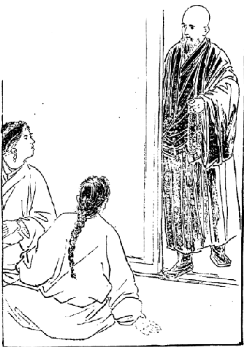
ツァ・ルンバ夫婦の驚愕
その夜商隊長が帰ってからツァ・ルンバ夫婦はもううろうろして、どうしようかと心配の余りよう寝なかったそうで、可哀そうにその翌日大蔵大臣の方へ手を廻して、私をひそかに呼び出そうというて使を
遣したそうです。ところが私はその日は二十一日の事であったから、外へ行って居りまして大蔵大臣の宅にも居らなかった。そこで大蔵大臣の宅にも居らぬということになったので「さあどうしたらよかろうか」と大変に気を
揉み出した。それは外でもない。ツァ・ルンバがダージリンから託されて来た手紙が私の
手許にある。私が取り押えられるとその手紙を証拠にされて、ツァ・ルンバその人は
下獄されるであろうという恐れを抱き、また私の
身上も大いに気遣ったのです。
何しろ自分の身上に降り懸った災難でもあり、また私のためにも大難が起ったというような考えでありますから、夫婦は
血眼になってラサの町を捜し廻ったけれども見つからない。ほとんど疲れ果てどうしたらよかろうか、もう縛られたのではないか知らんと思案に暮れて居るところへ、私はその夕方不意と遊びに行ったところが、二人は飛び付くように涙を流して「あなたまあよう来て下すった。こりゃもう仏様があなたを導き下すったのだ」と泣き付くようにいう。何事が起ったのか知らんと思ったけれども「そう
慌てていわれたところで一向
訳が分らぬ。静かにしなさい」といいながら席に着いて話を聞くと、例の商隊長の話を説明したです。
二人は代る代る説明しおわって「さてあなたどうして下さる御思案でございますか。とにかく私が持って帰ったところのあの書面は焼いて戴きたい。そこであなたの方針はどういうふうにお
極めになるつもりでございますか」と尋ねられた。そこで私は答えた。「いや私は
極って居る。この間からちゃんと
上書も認めてあるし、いつ事が起って来ても気遣いのないように私の方ではもう極りはちゃんと付けてある」というと「それじゃああなたはもう知って居るのですか」というてびっくりして居る。
「それは分って居る。その位の事は知って居る。」「それだからあなたは恐ろしいお方だ。法王の兄さんは、あなたは理想外の神通力でも得て居るように思って居なさる。」「いや神通力も何もないが私は推理上こういう事が起って来るであろうと大抵知って居たから、その
下拵えをして居た」とこういいましたけれども、ツァ・ルンバは推理作用が鈍いから「いやあなたは神通力があって、商隊長と法王の兄さんとの話を知って居られた。それで今もあなたがここに来られたのはあなたがそれと悟られての事だ。それならば早く来て下さればよいに、私共は昨夕寝ずに居た」といって
愚痴を
溢して居たです。
それからまた「あなたはその上書を法王に差し上げなさるのですか。そんな事をされては我々は堪らない。あなたは尊いラマに違いないけれども、法王の兄さんはああいう心の黒い人ですから何を言い出すか知れない。法王がもし兄の言う事を聞くと、この先どうなるか分りゃあしません。そうなると我々は困難しますがどうです」という。「とにかく今夜
断事観三昧に入って、いずれの方法を執るがよいかを
極めた上でなければどうするという決定は出来ないが、とにかく私がこう極めようという方法だけをいうて置きましょう。まずその
は四つある。一つは日本人としてラサ府に入って来たのは私が始めてである。事ここに及んで私の身分、心事をこの国人に知らさずに出て行くというのはいかにも残念であるから、たとい私が害を受けても、あなたがたや大蔵大臣およびセラ大寺に害を及ぼさなければ、私はここに止まって法王に上書します。第二は上書して私は身を
完うすることが出来ても、他の人々に害を及ぼす憂いがあれば断じて上書しません。
第三は上書せずに私がインドの方へ出て行っても、その後にこの国民に害を及ぼすような事が起らなければ、私は上書せずにインドへ帰ってしまう。第四は上書のいかんに拘わらず私がインドへ帰った後に、私が知って居る人のすべてに禍いが及ぶならば私は帰らない。この儘この国に居って上書します。なぜなれば私が帰っても害が起り帰らないでも害が起るならば、その難儀を知人と共に受けてこの国で死ぬのが私の義務であるからです。ただし自分だけ逃れて出るということは断じてしません。もしインドへ帰って行ってもこの国に大いなる害が起らないか、あるいは全く害が起らないという見込みが、
断事観三昧で立ちますれば私は帰って行きます。
で、この四通りに分けて私は今晩断事観三昧に入ってその
執るべき道を
極めようと思う。しかしこれは私が極めるので、どうも自分の事を自分で極めるだけでは気が済まぬから、なお私の師匠のガンデン・チー・リンボチェについてこの事を問い
糺す。もちろん私は日本人で今度こういう事になったから帰るというては問わぬ。私は巡礼に出かけにゃあならぬ必要があるが、出掛けた後の多数の病人の利害いかんという点について判断を願って、二者一致すればこれを執り、なおその場合に一致しなければ、更にツェ・モェリンのラマに頼んでもう一遍判断して貰う。で、それが師匠の判断と一致すればその判断に従い、私の判断と一致すればその方に従う」とこう答えました。
するとツァ・ルンバ夫婦のいいますには「そんなに何も外の方に見て戴くことは要りません。あなたが極めればそれでよいじゃありませんか。どうかあなただけで極めて下さい」といいましたけれども、「そりゃいけない。こういう大切な場合には人の意見を聞かなければならん必要があるから、私はそういう方針を執らねばならん」といったところが、「そんならそういうことにどうか早く願いたいものである」ということで、その夜はわかれることになりました。そこで私は帰って大蔵大臣の別殿で独り静かに
断事観三昧に入って、確かにその一番善い点を発見することに
力めた。
余程長時間を経て始めて無我の境に入ることが出来て、その後判断が出来ました。それはこの国に留まって居っては上書してもしないでも害がある。他国へ去ってもこの国人に大いなる害の及ぶことはないという事であった。まず自分の判断は
極りました。その翌朝早速ガンデン・チー・リンボチェの所に参りました。巡礼に出かけるというつもりで伺いましたところが、師匠は笑いながら判断してくれましたが、「どうも巡礼に出かけると今まで苦しんで居った病人がかえってよくなる訳になって居る。しかしあなたのいわゆる病人というのは本当の病人じゃあるまい。まああなたがここに居るとラサ府のお医者さんが喰って行くことが出来ないから、その助けにでもなるというようなものかね」というお話であった。しかし確かに師匠は私のこの国を去るということを知って居られたようですが、実に恐ろしい人です。他にも尊いラマは沢山あるように承りましたけれども、とにかく私の
親炙して教えを受け殊に敬服したのはこの方であった。これが師匠のガンデン・チー・リンボチェと私との最終のお
訣れであったです。
この日私はまた大蔵大臣の宅へ帰りまして、大臣にこれまでの秘密を打ち明けようと思ったところが、
生憎この日は五月二十二日即ちチベット暦の四月十三日で、法王がノルプ・リンカの離宮からラサ府へお越しになるということで、前大蔵大臣も奉迎に行かれたです。私も仕方がないから忙しい中に法王の行列を拝観に行きました。この日の法王の行列は大したもので、四人の宰相および各省大臣らを始めとして皆新調の服を着け、立派に飾り立てて出て行かれた。ところがラサ市街へ着かれる前からして非常に雨が降ったです。
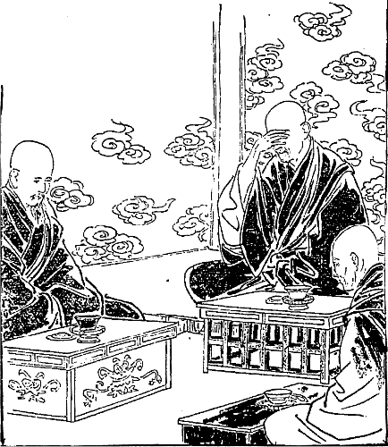
恩人に秘密を明かして後事を談ず
その雨といったら
酷い。頭が痛いような雨、ただに雨のみでなく
霰も混って居りますので、見物人も奉迎人も皆ずぶ濡れです。ところがこういう場合にでも雨具を着けることを許されない。
下僕とか
馬方とかいうような者は、皆
合羽を着て居るから好都合であるけれども、
金襴の衣裳を着けた大臣達は、顔も手先も雨と霰に打たれながらびしょ濡れになって、馬に乗って来る
態はいかにも気の毒の次第でした。
ところがその法王の行列がラサ府をぐるりと廻って釈迦堂へ指して入ってしまうと、雨がピタリと
歇んでしまったです。そうすると実に愉快であった、愉快であったというて喜んだのはシナ人で、ざまを見ろ法王の
餓鬼が途中で大変な雨に遇って好い気味であったと
罵って居た。しかし余り奇態な雨の降り方で実に不思議であった。その晩です。私は今晩少し秘密にお話をしたい事があるというて前大蔵大臣と尼僧に遇いました。
尼僧は母親のように私を大切にしてくれた方ですから、僅か一年程の交わりでありましたけれども十年も十五年も交際したよりなお情が深いのであります。その方と二人に対して私の秘密を明かさなければならぬ場合に立ち至った。私はいよいよラサ府を去ろうと
極めた訳です。けれども、我が恩を受けて居るところの前大蔵大臣と
尼公に対し、自分の本来を打ち明けずに
欺いて帰るに忍びないからです。
それで私は前大蔵大臣に申しました。「秘密というのは外の事ではありませんが、私は一体シナ人でない。日本人である。今突然こういう事を申してもあるいはお信じなさらぬかも知れませんけれども、その証拠はこれでございます」といって、日本の外務省から貰った外国旅行券を示しました。すると前大蔵大臣は少しくシナ文字を知って居られるものですから、その昇り龍二頭の間に大日本帝国外務省之印としてある字を読まれて、私の日本人であることを確かめられた。
で前大臣は「なるほどそれで分った。私はあなたをシナ人とは思わなかった。始めはそうかとも思ったけれども、あなたのように仏法を熱心に学ぶシナ人には今まで私は一人も遇ったことがない。かつシナには僧侶こそ沢山あれ、仏教上の智識ある僧侶はほとんどない位のものだ。余程学者であるというて人が驚いて居るところのシナの仏教僧侶でさえ、実に
詰らぬものであるということを私はしばしば発見した。しかるにあなたはそうでない。真に仏教を研究して居られるから、かねて私はシナ人でないと思って居ったが、あるいは私の知らないシナの福州という地方には仏教の盛んな地方があるのかと、実は内々疑って居ったが、今日始めて明らかにすることが出来た」といいまして、それから「日本人というのは西洋人と同じ事だというような説もあるが違うのか」という尋ねでありました。
私は「そりゃ人種は全く違って居る。日本人は貴国の人民と同一の種族である。いわゆる蒙古種族であって、決してヨーロッパ人種ではない。また宗教も違って居る」と答えましたが、それはもとよりほぼ知って居られる事ですから、すぐ私の言葉を信じられて「さてその秘密というのはただ日本人だという事だけであって、何も外に変った事がないのですか」という。時に私は「今日私が日本人たる事を法王政府に告げなければならぬ場合に立ち至りました」といいますと「それはどういう訳か。何も別段告げる必要はないじゃないか」という。「いや実はこういう訳である」というて前にあった
一伍一什の事情をすべて打ち明けたです。
けれども自分が
断事観三昧に入った事と、ガンデン・チー・リンボチェに判断して貰うた事が、自分の断定と符節を合わすがごとくであったという事だけは言わなかったです。どうもそれを言うとなんだか自分がよくよくインドの方へ帰りたいという考えがあるようになりますので、よう言い得なかったのです。
前大臣はしばらく考えて居りましたが「それではこれからどうなさる
心算ですか。」私は断然答えました。「折角この国に来たもんですから、法王に私の日本人であることをお知らせ申したい。この上書を」といいながら懐から前に書いてあったところの書面を出して、大臣の手に渡しました。そうしてまた私は大臣に向って「その上書を法王に
奉って、私の日本人であることをお知らせ申すのは誠に易い事ではあるけれども、そうするとあなたがたに大いに禍いを
醸す事があるかも知れない。よってあなたがたが、私の他国人たる事を知ったから政府に引き渡すというて私に
法王政府に渡して下さい。さすればあなたがたに災害の及ぶ気遣いはございません。私はまた私だけの真実の意見、即ち仏法を修行するためにこの国に来たということを、法王政府に向って説明しますから」と決然と言いました。すると大臣は眉を
顰めて言われますには「そりゃいけない。そんな事をしたならばきっとあなたは
獄屋に入れられて、遂には
餓と
凍えとに死なねばならん。よしまたよい都合に行って餓と凍えに死なぬにしろ、きっと殺されるに違いない。もちろん外国人たるあなたを公然死刑に処するという訳にはいかぬから、例の毒でもってひそかに殺すに違いない。何もそんな真似をして死にに行く必要はない。死んでは事が成らぬではないか」と私に厳しく
詰られました。
そこで私は「事が成っても他人に禍いを掛けては何にもならない。自分が死んでも人に禍いを及ぼさなければそれで充分です。既に今日まで真の親子のごとくに慈愛されたあなたがたお二人に禍いを
遺して、自分の身だけ
逃れるということはどうしても出来ませぬ」といいましたところが、慈愛深き老尼僧は今まで少し
顫えて居られましたが、眼には涙が満ちて非常に心配らしくまた悲しい有様を呈して居ましたが、一時に
俯伏せになり声を殺して泣かれました。
時に大臣は
辞色を正しゅうして「そういう立派な志のある方を殺して、
老先短き我々が災難を
免れたとて何の役に立とうか。私も不肖ながら仏教を真実に信じて居る一人である。自分の災難を免るるために人に繩を掛けて殺すような事は出来ない。殊に私はあなたが国事探偵でもなければ、また我が国の仏教を盗むために来られた
外道の人でもない事は、これまで種々の方面から観察して確かに知って居ります。たとい
真実に仏教修行に来られた方を苦しめて、自分の難儀を
免れることは私にはとても出来ない。殊に我が国の現今の状態は、決して貴僧の本籍を明らかにすべき時機ではありません。ですから一時帰郷せられて他日の好時機を
俟つより外にしようがない。私も不肖であるがガンデン・チー・リンボチェの肉弟である。また弟子である。その大慈悲の教えを受けながら、あなたを殺して私の難を免れるということはどうしても出来ない。もし我々があなたの去った後に困難に
陥ることがあるならば、
前世の
因縁であると諦めなければならぬ」というて老尼僧を顧み「のう、そうではないかニンジェ・イセー（
悲智尼）よ」といわれますと、老尼僧はようやく頭を上げて嬉しそうに言われますに「ようまあおっしゃって下さいました。本当に
危うございますから一時も早くお帰りなさるが
宜しい。決してこちらの事は御心配には及びません。こちらの事はどうにかまた方法が付きましょうからして、いらない義理立てをせずに早くお立ちなさるがよい。ちょうどこの時機が忍んで立たれるにはしごく好い時であります。第二の法王パンチェン・リンボチェはこちらに来てござるし、この月中はラサ府の
市街は上を下へと騒いで居りますから、あなたがお立ちになっても誰も気の付く者もありませず、誠に好い都合であります。もしこういう時でもなかった時分には、たとい疑いを受けなくてもあなたはとてもインドへ行くことが出来ないであろうと私は思う。なぜなれば既にラーメンバ（侍従医長）があなたを是非この国に止めて置かなければならんという意見で、法王にもその事は既にお話があった位ですから――。この時こそ好時期、早速お立ちなさる
拵えをして早く立たれるがよかろう」と言葉に真実を
籠めて、涙ながらに説き勧めてくれました。
私はその時このお
二方の誠実なる慈悲の心に感じて、心の底から真に悦んだ。余り悦んだものですから覚えず涙が出ました。このお二方の言わるるところは私にとっては誠に都合のよい事であるけれども、さりとておいそれというてじきにその言に従う訳に行きませんから、ひとまず言葉を尽して「お二方に後日
禍いの起らぬようにどうか私を政府に引き渡して下さい」というて説き勧めてはみましたけれども、なかなか聞き入れてくれなかった。遂に老尼僧が私に向って「そんなに争って居ても仕方がないから、ともかくチー・リンボチェに判断して戴いたらどうでしょう。それで双方に害がないという事なれば、あなたの望み通り法王に上書なさるもよいじゃありませんか。なんぼ争って居たところが
前途の事が分らぬでは駄目ですから」といわれますと、大臣もじきにその事に同意されました。
そこで私は
只今まで言わずに居ったチー・リンボチェに尋ねた事をば、とうとう話さねばならぬ事になってしまった。で、その次第を話しなおかつ私が
断事観三昧に入って見た事も話しますと、お二方は笑いながら「そんな事なら何もこんなに心配するに及ばんのである。もはやお帰りなさるだけの事だ。何も繩を掛けて政府へ渡すのどうのということはいらぬ事だ。あなたが私達に義理立てをしてそんな事を言わるるのでしょうけれどもそれは無益な事だ。もうチー・リンボチェがそうおっしゃれば確かな事である。またあなたの判断までがそれと符合して居るというのは、実にこりゃ仏の
思召があるから、それに
背くとかえってあなたが
禍いを招く基になる。早くお帰りなさるがよかろう。そのうえまた帰られる道々の事についても、こちらから保護をするという訳には行きませんけれども、もしこの事が露顕してあなたの後を追って行くというような事になれば、どうにか方便を付けてあなたがこの国を安全に出られるように私共でも祈祷を致します」というていろいろ説き勧めてくれました。真に自分の禍いを忘れてただ私の身ばかり思って下すった事はどうも一生忘れる事の出来ぬ程ありがたく感じたのでございます。
そこで私は大臣の宅に置いてあるところの経書類のすべてを取り集めて、じきに
薬舗の
天和堂へ持って行きまして
其宅に預けて置きました。で
天和堂の主人
李之楫氏に向い、私は少し考えもありまたいろいろ買物をしたい事があるから、カルカッタの方に一度行って来たいと思う。カルカッタに行ってから、幸いに自分の国から金を取り寄せて書物を買う事が出来ればじきにこちらに引き返して来るが、もし国から金を取り寄せる事が困難であれば、私は一応国へ帰って金の都合をして、来年なり
再来年なりこちらに来たいと思うて居る。どうなるか確かな事はもちろん今から極めることは出来ない。とにかく至急に出立せなければならん。そこで一番
で、書物も持って帰って、一応我が国人にこういう物を得て来たというて示さなければならん訳であるから、この書物類はすべて持って帰る。ついてはこの書物を荷造りをして持って行くようにしなければならず、またこの荷物を運送しなければならんが、馬を買うとかなんとかよい便宜があるまいか、というて相談しました。ところがこの李之楫氏はもうほとんど私のためには身命を
擲っても事をやろうという程私を信じてくれたお方です。
こういう人があればこそうまく事が運びましたので、もしこの人が私を信じて居らなかったならばきっとこの時になんらの働きをせず、かえって裏を
掻くような事をされて私は大いなる禍いに遭ったかも知れないけれども、この人は実に私を信じて充分尽してくれた。その内実は私の日本人であるということをほぼ知って居ったようです。なぜなれば私の宅へ来た時分に、ふと日本語で書いた書物を見て不思議に思われたからで、その後は余程注目していよいよ私の日本人であるということを確かめて居ったようです。
ですから私がこの時いよいよ帰るとなって見れば、世間でも幾分かの噂の立って来て居る時ですから、普通の人間なら随分危い仕事だと思ってなにも世話をしなかったかも知れぬ。ところがなかなかそうでない。よく引き受けてくれまして「それには大変よい事がある。雲南省の商人で私と同郷の者がちょうどこれから四日程後にカルカッタに商いに行く。それと一緒に行ってはどうか。その者に荷物を託すれば運送賃も安く付く」という。「幸いにそういう便宜があれば一つ頼みたい。」「よろしい。私の友達だから決して
否とはいいますまい。どうせ帰りに荷物を沢山積んで来るので往きには空馬が沢山あるから」というような話で、よい都合に話が成り立ちそうですからいろいろ頼んで居りますと、その友達である雲南省の商人がそこへ出て来たです。
すると主人がその人に向うて「ちょうど今あなたの話をして居るところだ。誠によい都合だ、実はこういう訳だがお前一つ二駄ばかりの荷物をカルカッタまで送って貰うことは出来まいか」と頼みました。ところがその商人は元来私とは売買上の関係のある人なんです。私がその人から
麝香を買うたり、あるいはまた
宝鹿の
血角を買うた事もあり薬を
拵えた事もあって、私が取引上真実を守ることをよく承知して居るからして、早速引受けてくれたけれども、その人の言うには「私の所には空馬がない。幸いここによい事がある。ちょうどこの人も四、五日
経つと行くのだが、我々よりもかえって早くカルカッタに着く人がある。それは駐蔵大臣の
衙門からトモの城へ指して兵士の給料を持って行くので、大分に馬も空いて居る様子だからそれに積んで行って貰うたら都合がよくはないか。その代り少し金を沢山遣らんでは
肯くまいがどうだろう」という。「よろしい。荷物が早く着くなら金は少し余計遣ってもよろしいから」というのでその事はほぼ
極った。そういう事でかれこれ夕方まで話をして居りました。それからまず寺に帰って来たが、寺にあるところの経書類の仮荷造りをしてラサ府まで持ち出さなければならん。
そこでその夜は徹夜して書物の仮荷造りをして、その翌五月二十四日の午前中に人を雇うて、その経書類を皆ラサ府の
天和堂に送ってしまった。ところがその日は幸いに寺内が非常に淋しいです。元来六、七千の僧侶が居っていつでも
賑かで、荷物などの
取片付けをすれば人が見てどうしたとかこうしたというような
喧しい話も沢山出るのですけれども、その日は一つのカムツァン（僧舎）に二人か三人しか居らない。だからまあ
何所へいっても人がおらないようなものです。それ故夜通し荷造りをしても、あるいは翌日人を雇うて送らしても人の疑いを惹き起すような事もなかったのです。
それから私の今まで使って居ったチャンバイセー（慈智）という小僧がある。長く
仕えて居ったものですから、その小僧の始末を付けなけりゃあならぬ。それは今までは私が居らなくても毎日書物を学ばせるために教師のもとに預けてあるので、私が帰って行けばやはり帰って来て水を汲んだり茶を
沸かしたりする事はやって居るのです。私が今
此寺を去るのに黙って出て行く訳にはいかない。やはりお暇を遣らなければならぬ。そうでないとなぜ書籍などを持ち出すのであろうかとじきに疑いを起されますから。
それで私がその小僧らにも言い聞かしました。「これから私は大変よい都合が出来たから巡礼に出かけなけりゃあならん。それは大蔵大臣の弟でツァーリーの方に住んで居られる方がある。ツァーリーというのは第二の霊跡とされて居る所である。元来チベットには三つの霊跡がある。一つは西北原のカン・リンボチェ即ちマウント・カイラスである。一つはツァーリーというて東南に当り、インドのアッサム地方と境して居るヒマラヤ山中にある峰である。一つはチョモ・ラハリというて、世界第一の高雪峰ゴーリサンガあるいはエヴェレストともいう。これをチベット雪峰の三霊跡として居る。その一つなるツァーリーに私は
参詣する
心算であるが多分四ヵ月は掛るだろう。四ヵ月だけの食糧と学資金とを置いて行くから」というて四ヵ月に余る食糧と学資金を教師に預けて置いた。子供に持たして置くと一度に使ってしまうからです。
それからまた自分がセラ大学に入る時分に保証人に立って貰った人がある。その人には私の
法衣の一通りと少しばかりの金を与え、なお外の恩を受けた人達および講義をしてくれた教師達には、皆相当の物品あるいは金を
記念の
証として送り、それらの用事を皆済ましてちょうど午後四時
過に、私が属して居るジェ・ターサンの大本堂に参詣して燈明を上げ、供養物も供えそして釈尊の前にて
を読み立てました。その願文は「チベット国セラ大寺のジェ・ターサンの大本堂において、
慧海仁広稽首百拝して大恩師釈迦牟尼如来に念願し奉る。仏法もとより
無碍にして
偏在なしといえども、
衆生の
業力異なるに従いて仏教者中にその偏在を見るは
遺憾の至りなり。慧海仁広宿業
拙くして、現時日蔵仏教徒の協同和合を
成就する
能わずして、空しくこの国を去るに至るといえども、願わくは今日の善縁をもって他日日蔵仏教徒の円満なる和合を成就し、世界に真実仏教の光輝を
顕揚するに至らんことを謹んで至心に祈願し奉る」と唱えて、それから釈迦牟尼如来の御名を十唱十礼して本堂を降りました。
本堂の石段を降り、板石の広庭を左に通り抜けて参りますと長い急な石段がある。それは
法林道場（問答の場所）の横に
架って居る石段である。その石段を降ると法林道場の美しい門の前に出ます。その門は平地よりは少しく高くなって居りまして、石段を一間半ばかり登りますと、その中にシナ風の門があって、その門の中は、いわゆる法林道場であります。その周囲はすべて低い石の
塀でその塀は白く塗られてある。その門の前へ出ましたが門前の所もやはり等級の低い僧侶が問答の
下稽古をする場所でなかなか広いものです。そこにも青々として
楡、柳の類があって、その間にチベットの
木蓮の花が美しい香気を放って居ります。
その場所は恐らく風流心のないチベット国人が
拵えた場所としては実に
雅味のある所で、私は三大寺共に見ましたが、この法林道場ほど風雅な景色に富んで居る所はない。その法林道場のずっと
上手を見ますと
巌山が
突兀［＃ルビの「とっこつ」は底本では「とっごつ」］と
聳えて居て、その岩の間に流水が日光に映じた
景色は実に美しく、そういう天然の景色に人為的
雅味を付け加えたのですから、
自から一種の風致があります。
この法林道場に来まして私は一種の非常なる感情に打たれました。いかにも
釈迦牟尼如来に
訣れを告げてこれから帰るとはいうたものの、せっかく日本人としてこの国に来て居ながら、どうも日本人ということを言明かさずにおめおめ帰って行くというのは
意気地のない話だ。何とか他の人々に
禍いの及ばぬようなよい
分別がないものか知らん。死ということは無論どこへ行っても
免れない。早く死ぬか
晩く死ぬかいずれとも死ぬに
極って居る。この際死を的にして一つ法王政府に、私は日本人であるということを知らしてやろうか知らん。こういうよい文章（上書文）が出来たのに、この文章を示さずに殺してしまうというのは残念だと、非常な刺戟に打たれつつ出て
参りましたが、不思議にもその法林道場の
辺際より、ギョクポ・ペブという奇態な大声が聞えました。
これはチベット語で和訳しますと、早くお越しなさいということで、一体この今の言葉は
誰人が誰に話しかけたのかと、怪しんであたりを見回しますと誰も居らない。ただ夕陽が法林の樹枝に映って美しき緑光が放って居るばかりで……。が
鶯の声でもないに何の声であろう。我が心中の迷いの声ででもあろうかなどと思うて二、三歩
歩行ますと、また不思議にもギョクポ・ペブという美しい大きな声が聞えました。こりゃ誰か私に告げるのじゃと思って、誰かといいつつ
遠近を見廻わして、法林道場の後ろの方にも人が居らないかと
索めて見ましたが誰も居らない……。いかにも不思議と思いつつ自分の
舎に帰る方向に着きますと、またまた不思議の声が幾度か発しました。
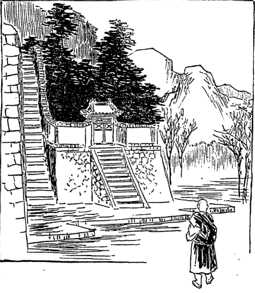
著者法林道場にて不可思議の声を聞く
ところで我が心はもはやチベットに留って居ては善くない、帰るということに決定しますと、その今まで叫びし声はなくなりました。その時はちょうど
解脱仏母の小堂の横の石段に上って居りました。それからセラ大寺の大本堂の前を通って自分の
舎に着きました。それから少し残してある荷物をさげて、その晩ラサ府へ参って
天和堂へ泊りました。その翌二十五日天和堂から出まして、これまで
誂えてある書物の
取纒めに掛りましたが、せっかく誂えた書物なりかつは得難い書物ですから、金の払ってある分だけは集めようと思いましたので、その夕方大分集まりその翌日も余程集まったです。そこで午後に私も手伝いましたが、主の
李之楫［＃ルビの「リツシュウ」は底本では「リシシュウ」］氏が箱などを拵えて荷造りをしてくれました。
その翌日ですがヤクは毎日午後二時頃から沢山殺すのですから、そのヤクの生皮を三枚ばかり買って来ました。それは私共が行って買うのではない。皮仕事をする人間が
屠所へ行って買って来るのですがその皮は誠に柔い。で、その血のついてある皮で箱を包むのですが――もっともお経文は幾重にも巻いて箱の中に
詰めてあるから汚れはしませんが――内皮を外にし毛のついてある方を内にしてうまく縫付けた。それが干し固まると板のように張り切ってしまうから、実に堅固な荷造りが出来るです。その荷造りのすっかり出来たのが五月二十七日です。その翌五月二十八日はいよいよその商人らも
出立するということですから、その商人から馬一疋借りて、私もいよいよその商人らと共に出立することに
極め、その夜大蔵大臣の宅へ
訣れに行きました。
私の
法衣とか
袈裟とか通常の法衣類はすっかり荷物の中へ入れてしまって、どうも出すのに不便ですから、前大蔵大臣から一揃えの
法衣を借り、なお大臣から
餞別として百ルピー戴きました。これはつまりこれまでお世話になったところのお礼であるといってくれました。実はこっちからお礼をしなくちゃあならん位のものであるですけれども、この場合に百ルピーは私にとっては非常に役に立つのでございますから、その金を戴き
懇ろに
訣れを告げてその晩
天和堂の宅へ帰って来ました。
するとその帰って来た夜です。これまで全く頼みにして居ったカルカッタ行きのシナ人について、全く変ったところの一事件が起って来た。その変事はどういう事から起って来たかというのに、かねて私と懇意な駐蔵大臣の書記官
馬詮が、今度カルカッタに行くシナ人とは至って
昵懇の間である。そこでその書記官が自分の友達のためを思って私の事を内々話し込んだです。
彼は決してシナ人ではない。確かに日本人らしく見える。西洋人でない事は
極って居るけれどもどういう
魂胆があって来て居るか訳が分りゃあしない。もっとも仏法の方に掛けてはなかなか
遣手であるけれども、今の時に当って仏法だけの見込みでこの国に来るということは余程不思議な事である。事によると英国政府の依頼を受けてその国の探偵に来て居るかも知れない。そういう人と一緒に行くと後にお前の首がありゃしないと告げたものですから、そのシナ人は大いに驚いたです。書記官はラサのシナ人中では最も
物識、最も老練家として尊敬を受けて居る人ですが、そういう事をいわれたから一遍に信用してしまった。それでこれまで頼みにして居った事が全く水の泡になってしまったという
天和堂主人の秘密談である。
そうなって見ればどんなにその人に頼んだところで、一緒に行くものでもなければ荷物を運んでくれるものでもないです。なお李之楫氏がいわれますには「しかし荷物だけはどうにか私が引き受けてやることが出来るだろうと思う。金は少し余計掛るけれども、この
薬舗から駐蔵大臣の下僕らに特別に頼めば
秘密で持って行ってくれましょう。それは
何程［＃ルビの「なんぼ」は底本では「なんぽ」］で承知するか分らんけれども、私の薬であるといってやりさえすればそんなに
貪りはすまい」という話。「それならどうか荷物だけを一つ出して貰うようにして貰いたい。それから私は急に出掛けて行かなければならんが、夜着や食物の用意をして行かんと途中で困るから、その
荷持の下僕を一人雇うて貰いたい」とようよう話が纒まって、李之楫氏はじきに交渉に行ってくれたですけれども、先方の人が居らぬとかいうて落胆して帰って来ました。
その翌五月二十八日いつも朝寝の主人が早く起きて、まず荷物運搬の交渉に行ってくれた。うまく説き付けたものかその荷物を監督して行く人には特別に二十ルピーの手数料、それからスイシー即ちトモまでの馬二
駄の運送賃が四十ルピーで運んで貰う約束をして来たから、早速その金を先方へ渡してくれろということですから渡して遣り、で、その荷物はその夜ひそかに運んで置きました。元来シナ人は横着で駐蔵大臣の命で給料などを運送して参ります時分には、十疋で足る場合でも十五疋も十六疋も徴発して、その余分の馬に秘密で人から頼まれた荷物を積んで賃銭を貪ることを、
役徳のように心得て居るのがシナ人の常です。
そういう訳ですから私の荷物も
天和堂主人の頼みにより、
薬舗の荷物と心得て運ぶことになったのでございます。荷物の方は片付いたが私と一緒に行くところの下僕を得て居らない。それを大いに
天和堂の主人も心配し、またその妻君も非常に
奔走してくれまして、ちょうどよい人を見付けてくれた。それは
還俗僧でテンバという人なんです。その人はもとテンゲーリンの相当なる僧侶であった。ところがテンゲーリンのテーモ・リンボチェが牢内でお
逝れになると同時に、
其寺の僧侶の
流浪する者も大分出来ました。
その人もその一人でその後
零落して妻君を持ったという始末。至って正直な人であるという。それのみならずダージリンの方へは若い時分から三遍も行った事があって、大いにダージリンの地理に委しいという。その人をどういう風にして雇ったかといいますと、まずダージリンの方へ出掛けて行ってブータン、シッキムにおける雪山の霊場を巡り、再びダージリンに引き還してカルカッタに出てブダガヤ、ベナレス等へ参詣し、それよりネパールの霊跡を巡ってチベットに入りラサ府へ帰って来るのです。
その旅行の予定がまず四ヵ月間。そこでお前の食物および着類等は主人持として、一ヵ月の賃銭が七円五十銭、その半額だけを前金に渡すという約束で雇いまして十五円だけ渡して遣りました。その金はすべてその男が妻君に渡してしまったそうですが、それは妻君が四ヵ月間の食料となるのです。その翌五月二十九日チベット暦の四月二十日荷物の渡すべきものは渡して、いよいよラサ府を
出立することになりました。
この
時分のラサ府は非常に混雑して、上下の騒ぎは実に眼を廻すばかりである。コーチャクパ（警部）三十名、ラーギャブパ（巡査）三十名、これがラサ府のすべての警察官吏である。これらは平生泥棒を
捉えたり、あるいは怪しい者を捜索したりするのが本職であるけれども、この時はすべて法王及び第二の法王の
警護にのみ掛って居りますから、外の事は何もやらないです。また高等官及び高等僧官等もすべて自分の職掌上の事に追い廻されて居りますから、他の事はどうなって居るかという事も気が付かぬ位です。誠に私の出立には好都合の時であったです。
けれどもラサ府には沢山の人が入り込んで居って、既に私の居ったセラの僧侶なども皆行って居るものですから、ラサ府を出立する時分に旅行服に着替えて出ますと、人の疑いを
惹く種となりますから、その前々日大臣の所から法服を借りて来たので、私はその法服を着けてやはり普通セラ寺の僧侶がラサ府に滞在して居るという風に
装おうて居ったです。いよいよ出立の当日午前十一時頃までに、
天和堂の夫婦は、もはや今日はお立ちになるのであるというて、
精進料理の御馳走を
拵えて別宴を開きました。
可哀そうなのはその家の十一になる姉娘と五つになる男の子供です。その二人が行かれるのが厭だといって泣いて居る。殊に姉の方は
俯伏せになったまま、顔も見せないでさも悲しそうに
啜り
泣きをして居る。もういよいよ立つという時になったものですから、母親がお
訣れしないかというと大きな声で泣き立ててどうもしようがなかったです。いかにも親しくなると子供でもこういうものか知らんと思いましたが、やはり人情上自分も幾分か離別の苦痛を感じた訳でございました。
で、その家の弟と妻君の弟とそれから妻君の姪になる娘と、テンバという私の連れて行く男の女房四人が私を見送ることになったですが、そう一緒に連なって行きますと人の疑いを
惹くからというので、ラサ府を離れてレブン寺の前の林の中で出遇うことにしようという約束で、皆別々に出かけた。私は荷持を連れ僧服を着けてぼつぼつラサの町を出て、釈迦堂の少し前の所へ来ると
巡査が一人居りましてずかずかと私の前へ走って来まして、時が時ですから何か変な事でも発覚して
捉えに来たのじゃないかと、ちょっと私も注意を惹き起したです。すると私をジーッと眺めて「おめでとうございます」という訳なんです。どういう訳でそういう事をいい居るのか一向訳が分らん。分らん事にどうとも挨拶が出来んものですから黙って居りますと「実におめでとうございます。まあ何もかもよく
整いましておめでとうございます」と何をいい居るのか少しも分らんから、私は「ふーん」と一声放った切りで様子を見て居ますと、その男が三遍礼拝しました。
「こりゃあ私を捉える訳でもないらしい。しかしどうも奇態だ礼拝するというのは」と思って居るうちに不意と気がついた。なるほど私の着て居る法衣は大臣の所から借りて来たので、いわゆる高等官吏まず侍従医にならなければ着られぬ位の着物です。ところでその時分私が侍従医になるとかならぬとか非常に評判の高い矢先に、そういう立派な着物を着て出掛けたものですから、先生いよいよ私が侍従医になったと判断を下したに違いない。それ故に何もかも整うておめでとうございますといったのでしょう。
そんなら銭を遣らなくちゃあならんわいと思って居ますと、その男は三礼を済ましそれから舌を出して頭を突き付けた。そこで私は頭へ片手を付けて遣って一タンガー遣りますと、彼は舌を出しつつ大いに悦んで去ってしまいました。今ラサ府を離るるという釈迦堂の辺においてです。こういう言葉を聞くというのは、途中
滞りなく目的地へ到達し得るというおめでたい縁起になったかも知れない。
この巡査の事についてちょっと言って置きたい事がある。チベットの巡査には大変悪風があって実に困った事があるです。第一この巡査には
極った月給がない。その月給は何から仰ぐかというと市中へ貰いに廻るのです。貰いに行くといっても乞食のようにへいこらいって一生懸命頼む訳ではない。大抵、三人連れで町家の
門に立ち大きな声で
怒鳴り立てる。その言葉がなかなか面白いです。
百千万の金銀を持たるる方の施しを受くべき者は我らなり。何もなき身の頼みに応じ千万金を惜気なく与うる主は君らなり。茅屋親爺の三十人に大判三十与えよや。茅屋婆の三十人に大判三十与えよや。君は世間を救う主。すべての情を汲み分けて我らの苦患を救う主。今日君よりの賜物を、今宵我が家に持ち行きて、飢えたる婆を悦ばせん。欠けたる椀に芳しき酒なみなみと注ぎ湛え、前後知らずに酔い臥して、飲まれぬまでに賜えかし、ラハーキャロー
このラハーキャローという言葉は、善神の勝利を得たという意味です。右の歌のようなものをこつこつと何遍か述べ立てて居ると、
家内から
金盆の中へ
麦焦しを入れ、その真ん中によい
家なれば銀貨三枚位、悪い家なれば一枚あるいは半分の銀貨を入れて、その
糧の所にカタ（薄絹）の小さいのを一つ添えてあるです。もしその家に似合わず少しくれると、こういう事は前から習慣がない、あなたの家では確かに銀貨二枚ずつ月に
一遍ずつくれたではないかという談判を始める。いろいろな事を言われるのが嫌ですから、もうどこでも始めから当り前にやるだけの物はやるです。
これらはやはり寺の中へも出て来ますが、寺では平生乞食の入ることを許さないこともありまた許す時がある。平生遣って置かないと、その時に来てぐずつかれて大いに面目を失するような事がありますから、平生でも皆相応に遣るです。その貰って来た金は巡査中の
頭取（コーチャクパ即ち警部にあらずして三十人の巡査部長のごときもの）に渡して、その中から月に幾らといって銘々分けて
貰いますので、一文でも盗むことは出来ない。盗むとすぐに知れますから……。
なおこの巡査らはそういう事をして金を得るばかりでない。田舎から
道者がラサ府へ出て来ると金をくれろというです。そこで田舎者は一タンガーも遣れば沢山だと思って遣ると、お前もその位よい着物を着て居ながらよくこの位の金を出したなといって喧嘩を吹っ掛け、うかうかして居るとぶんなぐられた上謝って、また金を沢山取られるようになるということはかねて田舎へも聞えて居りますから、なるべくその
鋒先を避けてこちらから頼んで金を取って貰うようにするです。
私が始めてラサ府に着いた時は、正規の僧服でなくて旅服を着けて居たものですから、じきに巡査に銭をくれといってぐずられたから早速一タンガー遣りましたが、それで事が済んだです。今度出立する時にもそういう風で、着物の立派なのを着て居ったのが誤りで銭をくれろといわれたのですが、一体は僧侶にくれろということを言い得ない規則になって居るのです。もっとも何かめでたい事があって、その人の等級が上がるとか何とかいう時分にはくれろといわれるのですから、そこで私の等級が上がったと思って、くれろといったのでしょう。
この巡査が泥棒などを
捉えに行く時でも決して旅費を持って行かない。行った先で飯を喰い酒を飲み自由自在にやって行く。もし三日でも四日でも人の居ない地方へ行く時分には、その近所の人民に充分余る程の食物の用意をさせてそれから出掛けて行くです。コーチャクパの方になりますと、なかなか立派なものでそういうような事をしない。そのかわりに政府の方からも幾分の手当金があって大分に品格が違って居ります。
その巡査と別れていよいよラサ府を離れる時に、ちょっと釈迦堂へ参拝して別れを告げ、それから法王の宮殿の下を通りだんだん外へ出て、橋を渡り広原へ出てレブン寺の少し前の小さな林に着きました。
其林には
薬舗の番頭とその他三人の者が待ち受けて居ります。私はもちろん酒も飲まずもう御飯も済んだのですから何もやる必要はないけれども、着物を着替えなければならん。着て居る法衣を脱ぎ棄てて旅行服に着替え、これを大蔵大臣の宅に還してくれといってその人達に頼みました。
先生らは皆酒を沢山持って飲みながらどうも別れが辛い、僅か四ヵ月位の旅ですけれども殊にインド
辺りの熱い所へ行くのだから死なないようにして下さい、大変御恩になったのにお帰りになって今度また来られるかどうかその事も分らないといって皆泣き出したです。こちらはそれほどにも感じて居らんのですけれども、非常に泣き立てて送られたものですから私も
荷持も泣き別れに別れました。やがてレブン寺の下を通り抜けてシン・ゾンカー駅に着いたのはちょうど日暮でその駅に泊ることにしました。
五月三十日
駅馬を雇いシン・ゾンカーを
出立しましたが、その道々において
荷持のテンバを少しく
誡めなければならん事があったです。チベット人はいつも嘘を
吐いたり
仰々しい事を言うのが癖で、もし途中でこのお方は法王の侍従医だなんて、仰々しい事を言われるとかえって
妨げになるだろうと思い、決してそういう事を言うてはならぬと
誡めたに拘わらず、昨夜泊った所であのお方はどこの方かと
尋ねた時分に「ありゃラマの
化身である」と答えたのを聞いたです。それから
其家ではわざわざ室を
換えて床から何から皆別々にしてしまった。一時の便宜を得たような訳ですけれども、そんなことばかり言って人を
欺いて行くと大変困った事が生ずる。
「自分が実際ラマの化身でないのに化身なんていうのは、かえって毒をもって人を害したような結果になるから、以後は決してそういう事を言ってはならぬ」と
誡めますと、テンバの言うには「こちらから言わいでも、むこうから化身でしょうと尋ねたから、そうですと答えたまでの事で、これから先もそういう風にしてお越しにならぬと損です。ラマの化身というとこの辺では駄目ですけれども、田舎の方に行くと
敬われた上によい
金儲けになる。あなたのように堅い事ばかり言っては金儲けは出来ません」という。
それから少しく怒って「
己れは金儲けに出掛けるのではない。人を
訛かして金を儲けるなんてもっての外の事を言う。実際ラマの化身でないのに化身だなんて、罪を作り金を儲けたからって何のためになるか」と
叱りつけてやりました。先生大いに
辟易して心得ましたとはいったが「どうも我々は金が欲しいものですから」とぐずぐずいって居りました。
その日はネータンという所で
昼餉を済まし、それより二里半ばかり行きますとナムという村があります。私がラサ府に着く前にこの村の一軒家に泊ったといいましたので、サラット師の著書と相違して居るといった人もあるそうですが、私は道中記はなるべく簡略にしてくれろという御注文もあり、かたがた
省き得らるるだけは省く方針を
執りましたので、もちろんナムの村落の変った事などをことさらに話す程の事もないと実は心付かん位でした。念のため弁じて置きましょう。
今より二十二年前私の
師匠のサラット・チャンドラ・ダース師が参った時分は、ナムという村には三十軒ばかり家があったのですから、なるほど一軒家へ泊ったといえば
訝しく聞えましょうけれども、それは
畢竟その後の変遷を知らんからで、サラット師がチベットを去ってより六年後、即ち今より十六年前に、キーチュ川の大洪水のためにその村落は洗い去られてしまったので、その後ナムの住民は以前の土地から七、八丁西の方の
谷間の高地へ移ったのです。
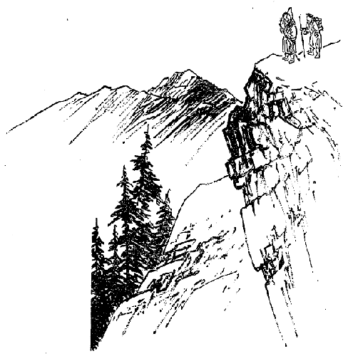
ゲンパラの絶頂よりラサを望む
けれどもそれではどうもネータンとジャンマェとの
駅継場がなくなるものですから、ナムの人が駅継場として
以前の所へ一軒家を建てて、その家で酒や何かを売って居りますので、この前の時は私は
其家へ泊ったのです。
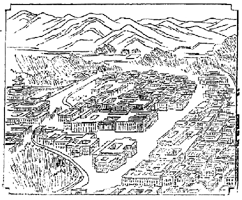
ラサ府の遠望
余談に
渉りましたが再びそのナムを通って、ジャントェという村まで着きました。この村にはかねてセラ寺において私をよく知って居る僧侶の家があって相当の
活計をして居るです。その家に着きましたところが大いに
悦んで、どこへ出掛けるかという。「実はこれから巡礼に行く
心算だ」というと「そりゃ善い事だ」といって充分手当をしてくれた。その翌日も馬で送るというような
都合で大変よい
塩梅に行ったです。
三十一日の
未明にその僧侶から送ってくれた馬に乗って、チャクサムという所まで急いで出て来ました。それは前に説明した木の船と皮の船のある所です。そこから馬を返し、
木船に乗って向う岸に渡りパーチェという駅まで着きました。これはゲンパラという坂の
峻しい山の下に在る駅であって、
此駅へ
日暮方着きました。その夜馬を雇う
支度をして六月一日午前四時にパーチェ駅を
出立し、馬でゲンパラに登りましたが、ちょうど中ほど過ぎまで登りますと、私より一日先に立って居ったシナ人がその坂の中ほどで馬に草を喰わせ、自分らは茶を
拵えて朝御膳を喰って居ったです。私はその人達にちょっと挨拶して、荷物はどうかといいますと、もう送って来ることになって居るから安心してくれろという事でした。
それでその人達に別れを告げてゲンパラの頂上へ馬で登りました。その頂上から振返って見ますと、ラサ府が
遙かに東北の方に
彷彿と見えて居るのみならず、法王の宮殿も
糢糊の間に見えて居りますと、幸いに
往きも帰りも好天気であったものですから、この絶頂から遙かに法王の宮殿を拝することが出来ました。ゲンパラは海面を抜くこと一万四千九百
尺にして、ラサは一万二千
尺弱、ラサよりほとんど三千
尺の高山でその
路程は四十八
哩、直径およそ三十五哩、日本の里数にして十四、五里位なものです。
この山に登るとラサの法王の宮殿が見えるということはチベット人の誰もが言う事で、あるいはこの絶頂からラサは見えぬという説もあるそうですが、それは事実と違って居ります。その絶頂から一歩坂を向うへ降りますともうラサ府は見えないです。まずここで久しく住み慣れたラサ府にお別れを告げようと思って居りますと、不意と思い出した面白い
旧話がありますからちょっとお話して置きます。
それはネパールに住んで居るチベット人でごく豊かな
家の
下僕である。その名はペンバ・プンツォというごく
剽軽な罪のない男なんです。その男がネパールのチベット人なる自分の近辺の者及び主人などと一緒に巡礼にやって来た。ところで自分の国の方では食物が沢山あって
値も安いから毎日米の飯を喰って居る。また麦も沢山ある。しかるにラサ府の方へ参りますと食物が非常に高い。高いからして、巡礼に行った者などは余り余計喰わない。いつもひだるい腹を抱えて居るところで
尊いラマに逢いに行くと、ラマというのは大抵皆金満家ですから昼
御膳などはなかなか立派なもので、前には
乾肉の山が出来て居る位。そのほか卵製の
饂飩などの御馳走で御膳を
喫べるというのですから申し分はないです。
けれども自分達は
石屑や
小砂利の混ってある
麦焦しの粉を少しばかり
椀の中に入れて、それを茶で
掻廻して喫べる位のもので、それも腹一ぱい喰べればいいけれども腹八分目とまではいかない。いつでも半分位で
辛抱してろくに茶を飲むことも出来ず水を呑んで居るという
始末。ですから赤い顔が青くなってだんだん
痩せてしまう。
そういう風で先生達は名高い〔霊場や〕ラマ達の巡礼を
済まして、ゲンパラ即ち今私の立止って居る所まで帰って来た。そこで皆の者は振返ってラサ府を望み「ああいうありがたい所へ我々が
参詣することが出来て誠に結構な事である。どうか未来はこういう結構な仏の国へ指して生れますように」とありがた涙を流しながら仏さまに願いを掛けておったところが、ペンバ・プンツォという男は同行の者が一生懸命拝んで居るにも拘わらず、ラサ府の方に
臀部を向けて不作法な真似をして居るので皆驚いて、ありゃ気狂いになったのじゃないか知らん、おいおい
貴様何をやって居るのかと
咎めますと、その男は一向平気で「ああ
嬉しい事をした。このラサという所ほど
気色の悪い腹の立つ所はない。一体ラサという所は
餓鬼の住む所だ。悪魔の住む所だ。おれはもうこんな所に来ないぞといって願いを掛けたんだ」という。
「それにしてもそんな不作法な事をしないでもよいじゃないか。
大方貴様は気が違ったのだろう。」「いやお前達こそ気狂いだ。俺達は家に居ると米の飯も喰えばうまい肉も喰えるし、麦焦しの粉だってラサのような砂だらけでないのを
満腹喰って豊かに暮らせる。ラサという所はラマだの
糸瓜だのといいながら、
夜叉や
郎苦叉鬼のように肉を山のように積んで、俺達に
一臠もくれんで自分ばかり喰って居る。こんな所は極楽も
糸瓜もあったもんじゃない。こりゃ餓鬼の国だ。悪魔の国だ」といって大いに
罵ると、皆の者が怒って「お前のような者と一緒に帰ることは出来ない。
罰が
中るから」というと、「罰など
中っても構わない。こんなラサのような所に生れて来ない方がありがたいのだ。実に気が
晴々した。ラサに居る悪魔共が俺に
罰を
中てることが出来れば気が
利いてる」といったそうですが、こりゃ随分罪のない男でその言うところはまた一理あります。
盗人にも
三分の道理といいますけれどもこの男のは八分位の道理はあるのです。どうも貧民はラサ府では実に困難です。
餓鬼の国という批評はよく
中って居るです。その非常に苦しい状態は
啻にこのペンバ・プンツォのみならず、ほかの貧民も乞食も皆そういうような状態に在る者が多いからして、そこでこういう事をいったのでしょう。
もちろん乞食でもラサ府の乞食の内には高利貸をして居る
奴があります。
金貸をする位の乞食でもなかなかうまい物を喰わない。
不味い物でも腹一ぱい喰わんで、いつでもひだるい腹を抱えつつ金を
溜めて高利貸をして居る。死んだらどうするかというと、地面の中に埋めてあったところの銀貨を掘出して、
其金をセラ大寺なりあるいはガンデン、レブンの二大寺の僧侶の
布施金として上げてしまうのです。そういう
奇態な高利貸の乞食がある。さすがに餓鬼の国に住んで居る乞食だけあって金の溜め方がひと風変って居るです。そういう有様を細かに見て来たから、ラサ府を指して餓鬼の国といい、ラマすべてを
夜叉である、
郎苦叉鬼である、肉喰いの悪魔であると
罵倒したのは、あながち理由のない事ではございません。
私はそういう旧話を思い出して
笑止しく感じたです。こりゃごく近頃の話でまだ二十年はたたない。そのペンバ・プンツォという男はまだネパールとチベットの国境のニャアナムの近所に住んで居るのでございます。私はその男の感じたような事は感じなかった。
とにかく私がラサ府において種々の点から観察した概略のお話は既に述べたごとくでありまして、いずれ凡聖同居の浄土にはいろいろのものがあるのは
普通のはずである。とにかくラサ府は悪魔も沢山居るけれども、悪魔ばかりでなくてそのうちに
菩薩も居られるありがたい所である。願わくば再びこの地に来り日本仏教とチベット仏教との協同和合に
一臂の力を尽し、幸いに世界仏教の基礎となるを得ば誠に愉快の事である。
別れに臨んでひとえにこの事を願うという意味で
般若心経三巻を読みました。ときに皆が山を降るものですから一緒に降って行きましたが、今度は道を換えてターマルンという村のある方に降りました。これは別段その方向に降るべき必要はないですけれども、そこの村で
昼食をして馬を替えなければパルテー駅まで進むことが出来ないからです。そこでターマルンで馬を替え昼食をしてパルテー駅に進みました。これは先に述べたごとくヤムド湖の岸で殊に美しい場所ですが、前に通った時ほど美しく感じなかった。
半夜深山の旅行
蜿蜒と
畝って居る道を南の方へ進んでパルテー駅に着いた時はちょうど夕方でございました。ところが私の
荷持のテンバなる者は私のセラの医者であるという事を話したものと見えて、セラのお医者さんならこの頃名高い医者であるといって、その村長が出て来て早速病人を見て
戴きたいという。一応は断ったけれどもなかなか
肯かない。断ればなお付け込んで
強いるものですから
診てやりましたが、もうその辺ではセラのお医者ということは非常な名声になって居りまして、ほとんど
薬師如来が来たか何ぞのように
礼拝してものを頼むという
次第で実に驚きまして、その翌六日午前二時パルテー駅出立、昨夜雇い入れた馬に乗り午前八時頃ヤーセという駅の東の方に着きました。この間の景色は非常によいですけれども、前に述べてありますから略します。
ヤーセ駅の一里ばかり東の方から、
入江のごとくになって居る湖水に流れ込んで居る川があります。その川に
架ってある石の小橋を南に渡ったです。ここまでは往程と道が一つでもこれから橋を渡って向うに行きますとすっかり道が変ります。その橋を渡り東南の湖水に沿うて一里半も行きますと、また南に曲るようになって居るです。その湖水に沿うて五里ばかり南へ進み湖水を離れて少しく行きまして、ナンカツェという所で
昼食を使いました。
下僕は余程疲れたと見えてそこへ泊る
心算であったですが、私は非常に先を急ぐものですからそのナンカツェを離れてまた西の方向に向うて進みますと、非常に大きな原に出ました。で向うの方にはブータンの国境に近い雪山が沢山見えて居る。ごく景色の美しい所でだんだんその平原地を山の中へ山の中へと進み、ごく狭い谷間をだんだん上って行くとその
川端に一軒家があります。そこから五里ばかり行かなくちゃあ家がないというのでそこへ泊り込んだ。その一軒家までは僅かに三里半の路程ですが、日暮ではあり大変に
荷持が疲れて居るものですからかれこれ半日ばかり
掛ったです。
翌日夜の十二時に起きてもはや
出立するといったところがテンバは大いに不平を鳴らしたけれども、この間は少し急がなくてはどういう事でまた後から
追手が来ないにも限らないから、急いでその一軒家を出立することにしました。ところがテンバはどうもまだ
真夜中のようでございます、どこの様子を見ても急に夜が明けそうにありませんと
愚痴を
溢して居るです。それはもうそのはずです。確かに十二時頃に出立したのですから……。
だんだん山の中へ登って行く程
寂寥ではあり、雪もだんだん深くなって来るものですから先生大いに恐怖の念を懐いて、どうか私を先に
遣ってくれという。ところで先に立たして遣ると向うの方に何か居るようだから一遍見届けてくれという。気の弱い
奴で、何が怖いかというと何だか知らんが怖い、この辺には悪い神さんが沢山居るから何か
悪戯をしやしないかと思って怖くてなりませんという。大丈夫だ、そういう神さんはお前ら一人で行くと危ないけれども、私と一緒に行くと
滅多に
悪戯をしないから安心して行けといっても余程怖いと見えてビリビリ
震えて居る。
お前は私より歳が上で四十二だといって居るが子供のように怖がって居るではないか。そんなに怖がるものでないと
宥めながら五里ばかり山を登って行く間に、ザーラーという一村落に着いたのはちょうど明方でその村で朝御飯を喫べまた馬を雇うた。この馬を雇うということは容易でない。よい具合に
荷馬か旅馬が来合わさないと馬を得ることは余程
難い。駅馬はあるがそれは毎日政府の用に取られてしまうから我々の手には決して入らない。ここで馬を得たのは非常の便利で、これからネーチェン・カーサンというチベット中の最高雪峰を登って行かねばならん。
三里余り急な坂を登ってまた三里余
降るとちょっとした斜線状の原へ出ましたが、この辺の山道はなかなか
酷い。馬でも容易な事では登れない――もちろん降り坂は馬に乗る必要はないですけれども――
道普譜が出来て居るではなし、岩と岩との
雪路を進んで行くので馬も余程慣れては居るが充分注意しないと谷間へ放り込まれてしまう。殊に空気の
稀薄な所を登るのですからなかなか困難です。けれども急ぐ時は馬に乗らぬと進むことは出来ない。
さてその草の生えかかった斜線状の平原をです、遙かのかなたに
空を刺すがごとく
聳えて居る
幾多の美しい雪峰を望みながら行くこと三里ばかりにして、その夕方ラルンという所へ着くや否や、例のごとく早く休みまして翌日夜半に出立したです。馬に乗り山間の谷川に沿うて降って行くと十里半にしてツァナンという村に着いた。この十里の間に低い山の谷筋を伝うて行くのですから少しも
雪峰を見ることが出来ない。チベットでは道中雪山を見なければ景色の味というものはほとんどない位のものですから実に淋しいです。ツァナンに一宿し翌五日乗馬してギャンチェという駅に着きました。この駅は
ここにパンコル・チョェテンという大きな寺があって、僧侶も千五百人程居ります。その寺の会計長で法王政府から
派遣されている
勅任の官吏がある。この人は老
尼僧の
姪の
聟さんで私と一緒に大臣の宅に住居して居たのでごく心安い人でありますから、私はそこへ
尋ねて行ったところが大変悦びました。その住んで居る家は寺内の横に在る大きな家で家名をセルチョクという。
主人は私に十日も二十日も遊んで居ったらよかろうという
呑気な事を言って居りましたが、私は巡礼に出掛けるので
明日出立するといったところが、ここから出立して行くには入用の物を買って行かないと道で非常に困るといいますし、自分もまたパンコル・チョェテン（聖廻塔）という寺も一遍拝観したいと思いましたから一日そこへ
逗留したです。
そのパンコル・チョェテンの寺内にはチベット第一の大きな塔があってなかなかの大寺、僧侶の少ない割には僧舎がほとんどセラ大寺の半分位はあるです。この寺にはただ新派の僧侶だけ居るのでなく、旧教派の僧侶もサッキャア派の僧侶もカルマ派の僧侶もこの寺に留学することが出来るようになって居ります。この寺の宝物などを拝観してまた宿に帰りました。一体このギャンチェという地方は大変商売の
繁昌して居る所で、毎日朝その大寺の門前に大きな市が立って、その近辺の村々から沢山買物にも来ればまた売りにも来るという訳でなかなか盛んなものです。
市場にはそれぞれ
張店をして、青物、肉類、
麦焦し、乳、バタ、布類及び羊毛の布類を列べて、一切
此市で交易商売が行なわれるのであります。また西北原及び北原からインドへ
輸り出す羊毛及びヤクの尾等は皆
此市へ持って来まして、単に
此市を
継場としてパーリーの方へ
輸り出すものもあれば、またシカチェ辺の商人が
此市へ来て買うて
輸り出すもあるです。しかし羊毛類は必ずしもこのギャンチェ都会において仲買されてパーリーに出るとばかりは
極って居りませんけれども多くは
此市から輸り出されるです。
私は一日その寺に
逗留して六月七日午前五時に
出立、主人の厚意により五日間程馬で送ってくれることになりましたので、その馬に乗りギャンチェの町を通り抜けてツァンチュ川を渡り、南方へ指してだんだん進んで参りますとネーニンという
尼寺があります。この尼寺には
活きた
解脱仏母が居るという。その時の解脱仏母は
僅かに七歳です。私は
遇わぬからどんな方か知らなかったけれども、とにかく
其寺には活きた女の仏様が居るのです。
チョモ・ラハリ雪峰とラハム・ツォ湖の夜景
その寺の前で
昼食をしてそれから南の山の中へどしどし進んでちょうど十里ばかり参りますと、
荷持のテンバという男の故郷へ着きました。で小さな寺に宿りました。そこには自分の兄弟も居るものですからテンバは大いに悦んでこの夜は
大分酒を飲んだです。ときにその兄が「どうもあの方の
様子を見ると非常に色が白い。
蒙古人の色の白さとは少し変って居る。西洋人ではあるまいか知らん」というとテンバは大いに弁解を始めました。
「ありゃセラのお医者でこうこういう
尊いお方だ」といってすっかり説明しました。すると「そりゃ俺だって知ってるけれどもそのセラのお医者さんというのは怪しい。不思議な事ばかりして死んだ者でも生返らせるという話。そういう事をするのは西洋人に限る。お前うかうか行って
酷い目に遇いはしないか」と私が隣室に居るのを打忘れてしきりにそんな話をして居るです。困った事を言出した、せっかくここまでおとなしく
従て来たのにいろいろな
注智恵をしてこの正直な男を
煽動しちゃあ困るわいと気遣って居ると、テンバは熱心に「いやそんな事はない。ありゃ
天和堂の主人と
懇意な人でやはりシナの人なんだ」と天和堂の主人から聞いた事を
喋々述べ立てて居りました。
私は翌早朝そんな事は聞かぬふりして午前五時に
出立する際に、兄は何か弟に
耳打して居りました。だんだん南の山の中へ進んで行くこと七里ばかりにしてカンマという駅に着き小休みして居りますと、十二、三頭の
駄馬の中に私の荷物は全く二疋の馬に載せられてどしどしやって行く。その運んで行くのはシナ人で全く私の荷物であるということを知らぬようでした。私はその荷物を見てこれなら荷物はたしかに
カルカッタまで着くに違いないと大いに安心しました。
けれどもテンバはその荷物を見ていよいよ疑いが
劇しくなったようです。「かの荷物は
天和堂で荷造りをして居る時は
薬舗へ預けて置くような風であったが
今日運んで行くところを見ると
訝しい」と思うたものと見えて、それからというものはテンバは物も言わず考え考え
従て来たですが、だんだん
路を歩いて来ますと少し話し掛けた。
「これからもうパーリーという関所までは大方五、六日の
路程しかないですが、
真直にパーリーへ行くよりは私はどうも
外の道を通ってお
出でになる方が得策だろうと思う。なぜなればパーリーへ掛ると第一あの関所の取調べが非常に巌しい。その上に保証人がなければ決して旅行券をくれない。なぜにその保証人が
要るかというとつまりインドの方へ行っても決してインドに永住しない、必ずこっちへ帰って来るというところの証拠立てをする者がなくてはならんですからです。
その保証人は
外の土地の人間ではいけない、あの村の人間に限って居るのです。そこでパーリーで保証人を頼もうとすると非常に金を
貪られるのみならず旅行券を得るにも多分の
賄賂を使わなければならぬ。どうも金は沢山掛るしその上に大いなる困難が生じて、事によると関所を通り抜けることが出来ないような事があるかも知れない。
ところでここに大変よい事がある。そんなに沢山金を使わないでも私にその半分も酒代として下さればよい道を案内します。それは外の道ではない、カンブーロン（
桃溪）のサンワイラム（間道）を通り抜けて行けばきっとやすやすと向うへ出ることが出来ます。少し道中は困難でもありまた野獣が出て来て害を加えぬにも限りませんけれどもまあ
大抵そんな事はない。私は二度その道を通った事がある。
其道が危ないと思うならブータンの方に行くがよい。ブータンには強盗が沢山居るけれども荷物を隠し悪い着物を
被てお越しになれば強盗に遇う
気遣いはあるまい。ですからこの二つの
中どっちかお取りなすっちゃどうですか」と私に尋ねたです。
私はじきに返答しました。「何かパーリーへ行けば金を沢山取られるから怖いというのか。」「別に怖い訳もないけれども
要らない事に金を沢山使っちゃあ
詰らんじゃありませんか。」「そうさ金はどの位掛るか知らんけれども、しかし要らない事に自分の命を棄てる程
馬鹿気た事はないじゃないか。お前の言う通り桃溪の間道を通ったりブータンの間道を通れば十中の八九は死ぬのだ。死にに行くより金を沢山出して良い道を取る方が結構じゃないか。お前は一体馬鹿な事をいう。金がなきゃあそういう危ない道も行かなくちゃならんが、こっちは金がないという訳じゃあない。そんな危険な間道を通って往く必要はない。殊に強盗の沢山居るブータンに行ったら殺されてしまうより外はない。お前そんなに
酒代が欲しいのか。一月七円五十銭の給金といえばチベットに居って一年も働かなければ得られない給金だ。しかし仕事が
豪いから割増をしてこれだけ
遣るのだ。その上にもまた酒代が欲しいのか。酒代は遣らぬとはいわない。あちらまで辛抱して行けば
酒代は遣ろうけれどもさもなければ一文も遣ることは出来ない。この後は決してそんな事を言うな」と言聞かせますと先生幾分か疑いが
融けたらしい。
というのはもし私がそんならお前に金を遣るから間道の案内をしてくれといえば、これ必ず怪しむべき人間であると私の心を試すために言出したので、実際自分は間道から行きたい事はないのですからその晩必ず私の寝息を
窺い荷物でも持って逃げて行くに違いない。そりゃもうよく分って居るのでございます。そういう点においてはチベット人は決して信用することが出来ない。ごく知合の中で互いに世間体を飾って居る間は正直を守って居るですけれども、社会の制裁を離れたいわゆる世間から飛び離れた所に出て来た時分にはなかなか
狡猾で、どんな恥かしい事でも構わずにやり遂げるという風がございますから容易に油断はなりません。
それからまた五里ばかり同じような山中をそんな話をしながら進んで、サールーという村に着いて宿りました。六月八日午前一時に出立して南へ出掛けて参りましたが、やはり先生は山の中が怖いと見えて何だかぐずぐずいって行くのを嫌がって居るようでした。だんだん西南の方へ進んで三里ばかり行くと、大変高く登って行かねばならぬ高原地に出ました。登って行くこと四里半にして大なる池のある所に着きその池の横に沿うて小さな川がある。
その川の南に付いて登って行くこと一里半にして大きな湖水のある所へ出たです。これをラハム・ツォ湖という。今私の沿うて来た小川はこの湖と前の池との
繋ぎになって居る。この湖水を右へ廻りいわゆる西側から行ってもパーリーの方に出られます。また東の方からでも出られます。私共は左側の方から進みました。
この辺もまたヒマラヤ山脈の雪峰が曠原の間にどっかりと腰を掛けて居るがごとく、いわゆるこの辺の景色を称して雪山
榻子の国とでもいうのであろうと思われる。そういう雪峰が沢山
並列して居るけれども珍らしい事には余り高くない。ほとんど一千尺位の全く雪を
冠って居る山ばかりで、そんなに美しい景色は
余所の国では決して見ることが出来ぬだろうと思う。もはや夏季でありますから山の
麓の方には幾分か草も生え、殊に湖水の辺には草が沢山ありますからこの辺は夏季の好牧場であります。
で、その湖水に沿うて南に進むこと八里ばかりにして、夕暮にラハムマェという村へ着いた時分には、五月二日の月が日本の三日月ほどに光を放って居るです。ある牧畜をやります石造りの家に泊りましたが、その家の南方に大変大きな山がありまして、これをチベット語にチョモ・ラハリ（尊母神山）といって居りますが、このチョモ・ラハリはチベットには沢山あります。大きな雪の峰はすべて霊ある名跡とせられ皆この名をもって称せられて居る。あるいはいう、二十一ありまた三十二ありと。いずれが真か分らぬが何しろチベットのぐるりを廻って居る大きな山は皆この名をもって称せられて居るようであります。
このチョモ・ラハリはあたかも
毘婁遮那の
厳かに坐するがごとく
曠原の一角に
聳え、しかしてこの湖水を
擁してずらりと
列べる雪峰は天然の
白衣観音あるいは
妙音菩薩が無声の音楽を
弄して
毘婁遮那大仏に供養するかのごとく、実に壮快なる天然の
曼陀羅を現わして居るのです。この辺は麦も小麦も何にも出来ない、全く西北の曠原地と同じ事で牧畜しか出来ない土地です。牧畜も冬になればほとんど出来難いので他へ移転する者もある位です。しかしこのラハム・ツォという湖水には七寸以上一尺二寸までの魚が沢山居る。
其魚を捕る漁師がありまして夏の間はこの湖水へ来て漁をして売りもしあるいは乾して冬の食料に当てますが、冬はこれらの漁師はチベットの中央地方へ
乞食に出掛けるのです。いわゆる夏は漁師で冬は乞食、そういう人間が大分この辺に居るそうです。
六月九日やはり湖辺に沿い乗馬して南の方へ出掛けました。ところがテンバはまた妄想を起したです。もはや
明日はパーリーという第一の関門へ着くので、事もし発覚すればおのれも
捉えられて
獄裡の
憂目を見なければならぬという怖れを懐いたからでしょう。彼は私に向い「この間あなたに申し上げたところが間道を取るには及ばぬと
仰しゃったけれども一体つまらぬじゃございませんか。間道とてもそれほど道も困難じゃない。私は二度通ったからよく知って居るが、一人でさえそんなに猛獣などが出て来て害しはしない。少し向うの方で鳴いて居るのが気味の悪い位の話で、火さえ
焚いて居れば大丈夫だから間道をお
採りなさい。この間も言いました通りパーリーはなかなか
厳しくって金を
貪ることが甚しい。私の考えでは十四、五円位で
済むかと思って居るけれども、三十円取られるか五十円取られるか分りゃあしない。その上早くて四日、遅いと七日も八日も引留められます。お急ぎだというのに暇を費やし無駄な金を取られるよりか、僅か二日の事ですから間道をお通りなさい」としきりに説き立てた。
それから私は「お前はまたそんな事をいってるのか。役人が金を沢山貪るとは面白い。どうか沢山取って貰いたいものだ。法王への
家苞にするから」とだんだん説きますと彼は大いに驚いて大分疑念を氷解してしまったです。その日ちょっとまた面白い事があった。二里ばかり行くとごくあらけない四人ばかりの人が私の馬に乗って居る前まで来て立止まり、
一斉に礼拝を行うてお願い申したいことがあるという。
何かというと「私共は北方からパーリーへ塩を売りに出て来たものですが、一昨夜ヤクに草を喰わして居る間に番人が居眠って居ったものですから、ブータンの人間かチベットの人間か分りませんが四十五、六疋持去られてしまいました。その盗人を捜しに来たのですがどの方向へ逃げて行きましたか見て戴きたい。もしブータンの方へ行って居るものならばこれから
引還して南の方に行かなければならぬ。チベットへ持去ったものならばこれから北に進んで行かなければならぬ。誰に見て貰うという人もないからどうか見て貰いたい」という。私はそんな事を知らんというのも可哀そうですから、ちょっと
占筮者のような真似をして「急いで北の方へ行けば今日中に見付けることが出来る」といってやった。ところが彼らは大いに悦んで行ってしまいました。その夜はチョモ・ラハリという
山際の、ラハムトェという貧村に泊った。この村はほとんど食物もなく政府へ
租税を納めることが出来んで苦しんで居る者ばかりだそうです。
ところがブータンからチベット政府へ
貢物を納めるためにこの村に来て居る者があります。ブータンは一体独立国であるがどういう関係かチベット政府に対し毎年幾分かの貢物を納めて居る。もっともブータンには国王はあるけれども国内は統一して居らぬようです。それゆえかある部落部落からチベット政府へ貢物を納めるだけで、一国の中央政府から納めるのではない。その貢物を納めに来るといろいろな物を貰って帰る。つまり貢物の交易でちょうどネパール政府が五年に一遍
象牙とか虎の皮とかいうような貢物をシナ政府へ納めて、
絹布、
金襴の類を沢山貰って帰るようなものでしょう。
もっともネパール政府では一万円位の物を持って行って自分の国へ持って帰ると五万円位の
価ある物を貰って来るのですから、つまり商売的銭儲けに売物を持って行くようなものです。さて私はいよいよ関門に近づいたのですから、テンバには公道を取ると断言したようなものの、いよいよどういう方向を取るかということを定むるために
断事観三昧に入らねばならぬ事になった時に、私が先に見てやって北原人のヤクを取られた者が四人ともやはり私の泊って居る所へ帰って来て、盗まれただけ一頭も失わずに連れて帰ることが出来ましたといって私を仏のごとくに礼拝して、二タンガーにカタを一つ添えてくれたです。
それを見て下僕はいよいよ
吃驚して「こりゃ本当にただのお方でない」と大いに恐れて、もはや疑いを起す余地もなくなってしまった様子でした。その夜人の寝静まるまで
経文を唱えて居りまして三昧に入りました結果、いよいよ公道を取って進むことに決定しました。もしこれを普通の論理的思想から考えますとまず公道を取るとすれば
において取調べを受けなければならぬ。一番始めに最も
酷いパーリー・ゾンにおいて厳重な取調べを受けなければならん。この関門を通過するには第一保証人を要する訳ですが、まずその保証人を頼むにも相当の礼金を与えなければならず、それから官吏に沢山な
賄賂を使い四、五日掛ってようやく旅行券を得、その旅行券を持って第二の関門なるチュンビー・サンバに到り、第一の関門から貰うて来た旅行券を渡し取調べを受けた上、役人の承認を得てその門を通過し、それから第三の関門のピンビタンというシナ兵の居る城内で取調べを受けて通行の許可を得なければならぬ。
無事にそこを通り抜けたところで今度は第四の関門のトモ・リンチェンガンにおいてまた取調べを受けて書面を貰わなければならぬ。
其書はニャートン城の大関門仮通過の許可書であります。その書面を持って第五の関門のニャートンに到り、また沢山な
賄賂を使い、その長官の面前で直接に取調べを受けて一通の書面を貰い、その書面を持ってまた
跡戻りをしてトモ・リンチェンに帰って来なければならぬ。で、その書面を渡して再び取調べを受けた上シャーゴから二通の書面を渡して貰うです。
その二通の書面を持ってまた後戻りをして第三の関門のピンビタンまで引返さなけりゃあならぬ。その二通の書面の内一通をピンビタンのシナの将校に渡し、そしてシナ将軍から一通のシナ文字の書面を渡してくれる。その書面と第四の関門のシャーゴから貰った一通の書面
都合二通を持って最後の関門即ちニャートン城に来り、その書面を示し始めて大関門を通り抜けることが出来るのです。
で、その大関門を通り抜けニャートンの小村を過ぎ小橋を渡ると、そこにシナ兵が
屯して居ります。そのシナ兵にシナの将軍即ち第三の関門から受けて来たところの通行券を渡し、そして第四の関門即ちトモ・リンチェンのシャーゴから受けて来たところの通行券だけを自分が持って出て来るのです。これはつまりインドで所用を
済して帰る時分に、その書面を示して始めてチベットに帰ることを許される手続きになって居るのでございます。ただそれだけの手続きを経るだけなれば非常に面倒ではあるが何も気遣うことはない。
ところがこのパーリー・ゾンからニャートンに到る間において、かつて私がダージリンに居る間に友達となった人間も居り、また私の顔を知って居る人間も沢山ある。殊に
耶蘇教の女宣教師ミス・テーラーという人がニャートン城の向うの小村に住居をして居りまして、そこにはまた荷物を取調べるところの官吏も居ります。その官吏はチベット人で私の事をよく知っている。なかなか
根性の悪い男ですから油断はならぬのみならず、またミス・テーラーに付いて居る下僕もやはり私と
知合の人間である。だから首尾よく関門の内に入ることが出来たところで、あるいはどういう結果を見るかも分らない。この長い間を通過する時において知って居る人に少しも会わぬということは全く望み得られない事である。
なおまたパーリー・ゾン（第一の関門）において少なくとも四、五日も抑留されますから、後から
追蒐けられるという一つの困難がある。もちろん私がラサを出た日からどうしても十日後でなければ事の発覚する気遣いはない。なぜならばチベット暦の四月二十日から三十日まではラサの役人は非常に
忙しくて、私の居らない事などはほとんど気の付かぬ位であろうと思われるからです。ようやく第二の法王の
具足戒が済み役人達も
手隙になり私のひそかに立去った事を知ったところで、どの方面へ逃げたろうかと始めて
穿鑿に掛ってこちらへ
追手を向けるということになるのでしょう。
さすれば今日はまだチベット暦の五月三日、今日明日に追手の追付く訳はないとしたところで、四、五日パーリー・ゾンに引留められて居りますとその間に
追手が着くことになるです。下僕や荷物を持って居る私の旅行と違い、彼らは官命を帯び二人なり三人なり早馬で夜を日に
継いで
追蒐けましょうからどうしても六日間で追付かれる勘定です。
詳しくいえばパーリー・ゾンで五日
暇取るとすればチベット暦の五月八日まで掛る。で三日追手がラサを出立すると仮定すればちょうど私は関門内にぐずぐずして居る中に
捉えてしまう訳です。
ですから常識の上から考えてはとてもこの五重の関門を無事に通り抜けるということはほとんど出来得ない事である。否全く出来ない事と考えにゃあならぬ。しかるに
三昧の示すところは常識上どうしても考え得られないところの方向を取ることを示して居る。間道を取れば強盗及び猛獣の難あり、公道を取れば
縲紲の
辱めを受くる恐れあり、いずれの道を取れば無事に目的地に着く事が出来ましょうか。
私の考えるにはこれは常識上の道理に従わなければならぬ事であるけれども、一体どっちから行っても危険の度から言えば同じ事である。つまり公道を取って
捕縛せられて
酷い目に遇うかまた間道を取って猛獣のために喰われて死ぬか、あるいは強盗のために殺されるか、どうせ
免れぬ困難なら本道を取りましょう。殊にこれまで三昧の示すところに従って着々成功したから、まず今度もその示したところに従って行こうという決心が着いたです。そこでその夜は少しく居眠り翌朝早く馬にて出掛け、チョモ・ラハリの大雪峰の山腹を巡りだんだん南に進みようやくラハム・ツォという湖水を離れ、なお南の高原に上って行きますと東と西の
遙かの
彼方には例の大雪峰が
雪達磨のごとく
聳えているです。
その間は広い高原でもはや夏の時ではありますけれども、非常に寒い所ですからそんなに草も
生えて居らぬ。ごく地に
引付いたような草が少し生えて居るだけでほとんど
石磧であるです。今日はどうかパーリー城まで着きたいものであると思うて余程急いで馬を走らしたけれども、何分
下僕は
徒歩ですから追付くことが出来ぬ。チュキャーという村に着いた時は日がすっかり暮れてしまった。
この辺は余程の高原で大分寒い。それにただ土地が高いというだけでなく、両脇には大きな雪の山がずらりと
列んで居るですから寒気も非常に厳しい。夜分などはヤクの乾した
糞を沢山集めそれを燃して
暖気を取らないとどうも寒くて
堪らぬ。日本の
厳冬の間よりもなお厳しい寒さを感じたです。ひとまずラサ府からダージリンへ来るまでの間においてこの辺が一番寒い所でしょう。その翌六月十一日朝四時に起きて少しく茶を
沸して飲んでから
発足したです。で
曠原地の川に沿うて南に行くこと二里余にしてちょうど日の上る時分に
という城に着きました。例のごとく大きな城が山の上に建てられてある。ちょうどその形はラサ府の法王殿の様な具合に出来て居るが法王殿程立派ではない、その城下に家があります。その家は皆黒く見えて居ります。このパーリーという所は雪山と雪山との間の原で、ダージリン及びカルカッタ、ボンベイ
辺りから出て来る輸入品は皆ここへ掛りますので、ここに税関があってその物品に対しいちいち課税するです。またチベットからの輸出品も大抵ここから輸出される。その輸出品に対する関税は十分の一取るもあり十分の二取るものもあり、また物によって十分の四取って居るものもある。
余り税金は高い方ではありませんけれども大抵物品で取るのが多い。物品で取れない物は相当の銀貨に換算して取って居ります。その城下を通って行くとその横に小さな三丁
周囲位の池がある。その池の城の山手になって居る間の道に見張って居る人間がある。その人は誰か通り掛るとどこの宿に着くかというて尋ねるです。私共はどこそこの宿ということは分らぬからどこかよい宿を世話してくれんかといったら、
宜しゅうございますというて、こちらが相当の風俗をして居るものですからその番人は貴族の僧侶と眼を着けたと見えて、よい宿を世話してくれた。
宿屋というても
木賃宿で本当の宿屋はチベットには一軒もない。ヤクの
糞を貰ったその賃を払うだけですから
糞賃宿というてもよいです。その糞賃宿へ泊りましたが、まずそこへ
逗留しなくちゃあならぬという
始末。宿屋の主人がいいますには「どちらへお越しですか。」「ちょっとカルカッタの方へ行ってブダガヤへも
参詣する
心算だが、しかし急な用事があるから事によるとブダガヤへ参詣出来ぬかも知れぬ。早く帰って来なければならぬかも知れぬ。」「何の御用事でございますか。」「いやその用事は何という事はない。また言うほどの必要もない。」「
貴僧はどちらですか。」「おれはラサだ。」「ラサはどちらです。」「セラだ」といいますと「ほほう、それじゃあ
貴僧は
化身のラマでございますか」と
尋ね
掛けた。
「いや」というと
下僕が側から「いやそうじゃない、もっと
豪いお方だ。」「どなたですか」というと「このお方は法王の……」とちょっと言い
掛けたから「黙れ、貴様馬鹿な事を言ってはいけないぞ」と
叱り付けた。宿屋の
主は変に思ったようです。「それでは
貴僧は何ですか。法王の僧官で居らっしゃるですか。」「いやそうではない。ただセラのお寺に居るだけである」といいますと非常に聞きたがるです。聞きたがるほどこちらでは言う必要がないから「そんな事を言う必要がないじゃないか」とはねつけました。
ところが「いやそれはいけません。ここは非常に面倒な所でそのすべてどこにお住みになるか、どういう御身分の者かすっぱり
取糺して、怪しい点があれば証明をしなければならぬ。それからまた
貴僧がインドへ行かれてこちらへ確かに帰って来るという
証拠人を立てなければならぬ。その証拠人は容易な事では立てられぬ。その証拠人を立てるについてはすっかり
貴僧の事を聞いて置かなければならぬ」という。
「それでは言う。私はセラの普通の僧侶で大学部に入って
問答を
修行して居る者である」といいますと「どうもそういうお方とは見えない。
貴僧の様子から着て居る物から察すると、どうも
貴僧は高等僧官であるかあるいは
化身のラマであるかのように見える。」「そういう風に見るのはお前の勝手で、私の方ではそんな事はない。それは私の
僧舎に問合せても分る」といいますと「そうでございますか」といって出て行くその後から
下僕の
奴もまた出て行ったです。狭い
家ですから向うの
室で話をして居ることがこちらによく聞える。
「お前の主人はあんな事を言ってるがどういう身分の方か一つ聞きたい。本当の事を言わないと十日
経っても二十日経ってもここを出る訳にいかないから」というような事を言いますと、
下僕は「それでもいうたら大変に怒られるから
仕様がない。」「そんならこの儘
打棄って置いてもよいか。一月
掛ってもよいのか。」「いや大変急いで居る。非常に急な用を持って居る様子で夜通し来た位である。」「そりゃあ怪しいじゃないか。夜通し来るというのはどんな用事で行くか知らんけれども一通りの坊さんじゃない、誰か」と非常にひそひそ話をして居るです。
すると
下僕は「そんならまあ言うけれども俺から聞いたといわんでくれ。実はセライ・アムチーだ。」「ふふん、そんならあの死んだ人を救うというお医者さんか。」「うむそうだ。法王の所にも行かれて侍従医か博士かどっちか我々はよく知らんけれども、世間の評判では侍従医になったという。一体私はあの人にずっと
従いて居った
下僕じゃない。実はその少し
出立前に私の知って居る
薬舗の紹介で
従いて来たのだから
悉しい事はよく知らぬけれども、何してもラサ府では空飛ぶ鳥も落ちるようなお医者さんで非常な評判だ。」「そうか、それではなるべく早く手続きをして四、五日中に旅行券を得るようにしなければいくまい。」「そうして貰わなくちゃあ困る。」
「時にそのお医者さんというので思い出したが大変ここに難儀の病人がある。私の親類の者だが一つその病人を
診て貰う訳にはいかぬだろうか。」
下僕の言うには「医者などはしない。誠に
頑固しい
訝しな人で何と勧めても人の言うことを
肯かない。道々お医者さんをして来れば
儲かるのに、それを
打棄って来るという始末で俺あ惜しくて
堪らなかった。」「お前一つ頼んで見てくれないか」というてしきりに頼んで居る。
それで
下僕がお医者さんという事だけ口が
辷った事にしてこちらへ出て来まして「やあどうも何です。主人が
貴僧の事をいろいろ
尋ねるものですからつい口が
辷って、お医者さんという事だけ言いましたが、大変な病人があるそうですから、どうせ四、五日
逗留の
序に
診てやって下さい。」「そんな事をいって病人を診て居った日には限りがない。殊に急用を持って居るから病人などを見て
暇取って居る訳には行かない」というと「
衆生済度のためですからぜひ診て遣って下さい」という。仕方がないから「実は大変な用事を持って居るから」と大いに
拒むようにして承諾してやりました。
宿の主人は
悦んで飛出してしまった。で
暫く
経つと
外の人を一人連れて主人が帰って来まして、私をある家へ連れて行ったです。その辺の家は皆黒く見えて居る。何で
拵えたかというと土の付いた儘の
芝草を
煉瓦石のような具合に、長さ一尺二寸、幅七寸、厚さ三寸位に切って干し固め、それを積み立てて家を拵える。それはなかなか強いものですが、しかしそればかり積み立てて置くと風の時分に倒れるから、その間々に柱を立ててある。全く芝草で拵えた家ですがなかなか大きな家がある。ただし城だけは石で積み立ててある。この辺は山が遠くて石を運ぶには余程入費が掛るから芝草などで家を立てて居るものと見える。
しかしラサ府などとは違って二階家というものはほとんどない。一、二軒見受けたが下の一階だけは石で積立ててその上を芝草で積むようにしてある。それは芝草ばかりで拵えると二階の落ちる危険があるからでしょう。私はそういう二階家へ案内されました。ところで私が脈を見ただけで大変心地よくなったようです。つまり自分の信仰力で
快くするのでございます。病人はそこの娘さんですが神経病、ちょうど肺病などが起りかけたような具合にごく気が
鬱して居るだけの事ですが、そういう病気に
罹って居るものですから少しも外に出ないという。
それから少しばかりの薬を与えて「これをのむと非常に気分が
晴々するからお飲みなさい。それから朝晩
観音様へ
参詣なさい」といって帰って来たです。
暫く
経って大分気分がよくなったというて宿の主が大いに悦んで、礼かたがた私の室へ来て「ここでは証人を頼むことが非常に困難ですが貴僧どうなさる
心算か。」「それには困って居るがぜひとも一つ証人を見付けなければならぬ。相当のお礼はする
心算だ」といいますと「それでは私が証人の所へ一緒に行ってお話して上げましょう。
此国では誰もが証人になるという訳に行かない。私共で出来るなら
容易いが政府が許さない。で普通の人が行って頼んでもなかなか
肯いてくれないから私が頼んで上げましょう。さすれば沢山な金を取られる
気遣いもないから」という。
宜しく頼むという証人の宅へ行きました。その証人も案外悪い人でもない。けれども善い着物でも着て居ると金を
貪りたがるのがチベット人の常であります。ところが私が身分などを言うてはならぬと
戒めて置いたに
拘わらず、主人が「このお方はセラのアムチーでなかなか
尊い方、法王の侍従医です」と口走ってしまった。鶴の一声というようなものか早速その人が証人に立つことを承諾してくれました。
その証人のいいますに「お礼も何も要らぬ。手続きを経るだけの金を一ルピー半出せばよいです。しかし今日はこれから行ったところで通行券を貰う訳には行きますまい。会議は
明日あるか
明後日あるか分りませんが、なるべく早くして貰うように申して置きましょう。さすれば四、五日の
中には
出立することが出来ましょう。しかし
今日早く願いを出して置かないとまた遅くなりますから
今日御案内致しましょう」といって、いそいそ関所へ連れて行ってくれることになりました。
関所は城下の民家の間に建てられてありますので内に会議室らしいような所も何もない。役人は大分寄って居るらしい。その
外に上の役人が沢山居るのかどうか知らぬが、十四、五人も居りました。チベットの官吏の事ですから役人が揃って居りながら、
賄賂を
貪るために今日も会議を開かぬ。今日もまだ開かぬというて三日も四日も
甚だしきは十日も
打棄てて置くのではないか。その間に
絞れるだけ賄賂を絞り上げ、つまり賄賂の多少によって早く旅行券を出すとか出さぬとか
極めるのであろうと思われる。
証人の案内で願書を出しますとその役人中の一番
豪そうな人が「今日はむろん会議はない。いずれ
明後日あたり会議を開く手続きになって居るから会議を開いた上で何分の返辞をいたす。自分で来るに及ばぬ、
明後日宿の主人を聞きに
遣せば分る」という
挨拶。それはどういう意味かというと、
明後日宿の主人を聞きに
遣れば今日は通行券は遣れない、しかしこれ位金を
納めれば大抵
明後日集会の折に通行券が
戴けるだろうというような訳で、どうしても五日位掛るそうです。
余程沢山
賄賂を出してそういう
都合に運びますので、私は急がねばならぬ関係があるから特別に今日戴く訳に参るまいかといいますと、あなたどういう用事があるか知らんけれども、ここではその日に着いてその日に通行券を貰うという例はない。またこちらでも与えることは出来ない。今日はお帰りになるがよかろうといいますと、私が病気を
診て遣った娘の親と宿の主人も
一緒に参ったのですが、その人達がその官吏をあちらの方へ呼んで行って、あの人は法王の侍従医であるというような事を告げたらしい。するとその役人が出て来て私に言いますには「あなたはどういう用事で行かれるか」という話。「ごく急用があって行くのですが明日にも会議を開いて貰うことが出来ぬだろうか」というと「それはとても出来ぬ」と長官が答えた。
明後日まで待ったところで得られそうな様子もない。そこで私は一策を案じました。
「それは
明後日まで私は待ちますから、あなたの方で私が今日ここに到着したけども会議を開く余裕がなかったから三日間待たして置いたということの
書付を貰いたい」というと「そんな例はない」という。「例はあるまいだろうが私は普通の私用で行くものではない。秘密の用事を帯びて居るものである。その用事は今は明かすことは出来ぬ。あなたが聞こうというならば、相当の手続きを経てラサ府の方へ行かれて法王の外務係について聞いて貰いたい。今は私の身分も明かされないけれども、暇が掛るなら掛るで
宜しい。こうこういう訳で暇が掛ったというだけの証明をして貰わなくちゃならぬ。」
「その
用向の大体は」というから「実はラサ府に容易ならぬ病人があってその病人に
服ませる薬を急いで買いに行かなければならぬ。ブダガヤに行くというのは一つの方便でその実カルカッタまで早く行ってじきに帰って来なければならぬ。非常な急用で一日もカルカッタに泊って居ることが出来んのである。ただその薬一品買えばじきに引返してラサ府に帰らなければならぬ。しかるにここで二日あるいは三日逗留することになればそれだけ遅れる訳になって私の責任を
完うする事が出来ぬから、ぜひその証明をして貰わなくちゃあならぬのである。もちろん私の身にとっては二、三日逗留したい。この間から昼夜の別なく一生懸命にここまで急いで出て来て非常に
身体が疲れて居るから、どうか二、三日逗留が出来れば
結構であるけれども、それでは秘密の用事を
果すことが出来ぬ。今日得らるれば今日にも立ちたい位のものなるがしかしぜひくれろとはいわない。どうぞ証明して貰いたい」とこういいますと「一体
貴僧は何をなさるお方か。」「それは申しますまい。私が薬が入用だといえば何をして居るということは分って居ましょう。だが私はそれだけの用事で行くのではなく、
外に非常に大切な
用向を
帯びて居るので、実は一日もここに止まって居ることが出来んのであるから、どうか私が今日ここに来て願書を出したという
書付だけ下さい。三日逗留して居たという証明は三日経って後でもよいから」と
儼然と言い放ちました。
すると長官はびっくりして少し
蒼味がかかった顔をして「いやそういう事とは全く知らなかった。どうか少し別席に
控えて戴きたい。そういうお医者であるということを
承わる上は、実はこちらにも非常な病人がありますからそれも見て戴きたい。しかし長く止まって居る事が出来ぬというお話でござれば長く
引留は致さぬけれども、とにかく私の一
了簡で
極める訳にいかないから、一応協議の上
直に通行券を与えるか与えぬかと決定して早速お返事を致します。別席にお控えなすって居るその間に病人を
診て貰いたい」という依頼でありました。
それから
外の家へ参りその病人を診たり何かして居りますと、ちょうどその日の三時頃に出て来いといいますからまた出掛けて行きますと「今日は特別に協議会を開きました。こういう事は一体例のない事ですけれども、どうもあなたの内情を
承わってみるといかにもごもっともの点もあるように考えます。会議の結果早速旅行券を上げることに決定致しましたから四時頃までお待ち下さい」という。暫く待って居りますと、誠に好都合にその日の四時頃私の手に通行券が入ったです。かねて通行券を持って居るチベット政府の官商でも、いろいろの打合せやら荷物の取調べやらでどうしても二、三日は逗留しなくちゃあならんそうです。しかるに私はその日に得てしまった。その夜出立したところで途中に泊るべき所がないものですから一夜だけそこに泊りました。
その翌日早く
出立してだんだん南西の山中に進んで参りました。この辺はもう大きな雪山ばかりで、その間が少し平原になって居ります。三里ばかり上って平原の頂上に着きますともうパーリー城は見えない。これから
降り坂。
昨夜霰が降って土地が非常に
湿って居る。
四辺の雪山は新たに降った霰のために
新衣を着けて居る。その寒さはまた格別で、殊に日光の反射が
酷いものですから痛く眼を打ちます。水の流れて居る辺には幾分の短な草などが生えて居るばかりで、別段樹のようなものはない。ごく淋しい景色です。
水はこの平原の頂上を境として、一方はチベット
曠原に落ち一方はインドの方へ落ちます。その坂を
踰え雪山の少し降り形になって居る所を通って行きますと大分に太い
溪流がありまして、その水の美しい事といったら
透き通って水底に在る白い石と黒い石が玉のごとくに見えて居ります。
喉が乾いて居りますから
一掬い飲んで見ると手は縮み上がる程冷たいので、二度と
掬って飲む勇気がなかった。馬は既にパーリー城で還してしまったものですから、馬に乗ってその水の中を渡るという訳にはいかない。
履を脱いでこの冷たい川を渡るのは
難儀だなあと考えて居りますと、下僕はまず荷物を先に渡しまたこちらに
後戻りをして私を渡してくれましたので、その冷たい水へ入らずに
済みました。その水は私が西北原において首っきり入って渡った水の冷たさと別段変って居らぬのですけれども、もうチベットのラサ府で大分に
安楽な
活計に慣れて来たものですから非常に冷たく感じましたので、困難に堪えて居る時分には非常な困難でも随分
辛抱し易いが、安楽に慣れて居ると少しの辛抱すら辛いようになるものであると深く感じました。
二里ばかり山を降って来ますと、雪山の
麓の
疎らに生えて居る小木の間に、黄、赤、紫、薄桃色等いろいろな名の知れぬ美しい花が
毛氈を敷きつめたように生えて居る。私は植物学を研究しないからそういう植物については一向知らないけれども非常に美しい。
四辺の景色に
見惚れて居りますと、彼方の雪山の
頂に白雲の飛び
交うその変幻出没の有様は、あたかも雪山の仙人が雲に乗りて遊戯
三昧に入り、あちらこちらに


して居るかのごとくに見えるです。
チベット雪峰間の美景
だんだん下へ降って来るに従って
蕭々と雨が降りだして、今まで日光に照されて美しく光って居りました雪山の光景はいつの間にか消え去りましたが、雨中の雪峰はまた一段の眺めでございます。道のあちらこちらにはパル（匂いある黄色の
皐月花）、スル（同じ
赤皐月）その他いろいろの草花に
雫の溜って居る様は、あたかも
璧を山間に連ねたかのごとくに見えて居ります。だんだん山間の溪流に沿うて降って行きますと、
奔流の岩に激して流るるその
飛沫が足もとに打付けるという実に愉快なる光景であります。そういう面白い光景も不風流なるチベット人には……
呟く種とほかならぬ。
「どうもこんな所で雨に降出されては困る」といって、私の
下僕は非常に怒って居りまして「天道様があるならば
日和にしてくれればよいのに困ったものだ。荷物が
湿って重くなって仕様がありゃあしない。どこにも今夜泊る所があるのではなし、困ったな」と非常に呟くのは無理はないです。苦しいには相違ないが、もし景色を愛する心があったなればその苦しみは忘れたろうと思う。けれども彼らには景色を愛する観念は少しもない。また奇態にチベット人は景色の趣味を持って居らぬ。
石磧や
禿山の中で生れた人間が多いのですから景色の趣味を解することが出来ぬと見える。絵でもチベット固有の景色を描いたものは一枚もない。もしあればその絵は必ずシナの絵を真似て書いた位のもんです。
ですから私の
下僕などはそういう景色のよい所へ来ても、ヤクの
糞の
粒々行列して居る野原へ来ても一向平気なものです。雨の降ってるのも自分の着物の濡れるのも打忘れて面白くて堪らぬ。私がもし絵を書くことが出来て、この景色を描いて持って帰ったらさぞ人が喜ぶだろう。写真機械があってこういう景色を写して行ったら、どんなに人が喜ぶだろうかと思うほど惜しくて堪らぬような景色。時々刻々眼先が変りだんだん進んで来ますと、ヒマラヤ山中の名物であるロードデンドロンというその色の
鮮かさといったら何と形容してよいか分らぬほど。美しい花（小木）が
千載の古木と
突兀［＃ルビの「とっこつ」は底本では「とっごつ」］たる岩の間に今を盛りと咲き競うて居る。
あちらこちらに種々の珍花異草が
綾なして
轟々たる
溪流に臨んで居る様は、人をして奇と呼び怪と叫ばしめてなお
飽くことを知らず、我この所に止まってこの風景と共に
仙化せんか、ああ我が父我が母ないし我が国人にこの景色を見せたならばいかばかり喜ぶ事かと、
暫く岩の上に腰を掛け我を忘れてつくづくと眺めて居った。その時の愉快は今思い出しても心中の
俗塵を洗い去るの感がございます。けれども非常な降雨で御飯を
喫べる所もないという訳で誠に困りましたが、もう少し行くと大きな
窟穴があるというので
其穴まで急いで参りまして、その
川端の
窟で
濡れた
枯木をようやく燃しつつ溪流の
清水で茶を
拵えて飲み、それからまただんだん降ってダカルポ（
白岩村）という所に出ました。
この日の行程八里、ここは村というほどでもありませんけれども兵舎があって
其舎に兵士が十六名居るです。その
外にちょっとした一軒家のようなものがあって
其家に兵士の女房などが大分住んで居ります。兵舎の横に高さ三十間以上の大きな白い岩がずぶりと立って居ります。石の質は何であるかよく見ませぬ。非常に白い間に草などが生えて居りました。私はその夜兵舎に泊りましたがここの兵士は旅行券を
検めたり何かするのじゃない。
これはパーリー城とチョェテン・カルポ（
白塔）城の間の手紙を取次ぐ場所で、ここまで一方から手紙を持って来ると、その手紙を持って一方の城へ行くのです。チベットではここほど完全に手紙の遣り取りの出来る所はない。外の所では例えば二十里あるいは三十里位行って
駅継に手紙を渡して向うに運んで貰うという順序になって居ります。それも政府が地方の役所に命令を伝える時に限って行いますので、平生普通の手紙の往復は
取次がない。ですからもし民間の人が手紙を往復するという場合には自分の家の者を
遣わすかあるいは人を雇わなくてはならぬ。
その夜兵舎では私を立派な寝台の上に寝かしてくれました。インドを立って以来立派な西洋風の寝台で寝たのはこの時が始めてであります。ちょうどこの頃は雨期、殊にヒマラヤ山中のダージリンから北の方に掛けては非常に雨の多い所で、その翌日も大降りですけれども、ここに泊って居る必要がないから
下僕の泣言をいうに拘わらず午前五時頃大雨を冒して出掛け、今度は凄いような森の中へ掛りました。
ところが三、四人で抱える位の大きな樹が沢山生えて居ります。これらは皆チベット政府の属領ですが、この辺から樹を
伐り出したところでチベット内地に持って行くことは出来ない。水は悪し、運搬の道具は
揃わず、水は南方に流れて自分の国の方へ流れて行かぬですから、いかにしても運送の便利がない。その儘
打棄ててあるらしく見える。ほとんど四里ばかりの森林でその間には平地もあり、チベットのパーリーの峰から流れて来て居る川もあります。その流れは始めは非常に細いですけれどもだんだん溪流や小川を集めて、下に行くほど太くなって行くという有様であります。ダカルポから六里余り来ましてチョェテン・カルポの城に着きました。この
は欧州人の著書に記されてあるのか無いのか、私の見た書物の中には一向見当らなかった。これはごく新しく出来た城ですから事によるとまだ欧米人の間に分らぬのかも知れない。あるいは分って居っても秘密にしてあるのかも知れぬ。けれどもとにかく新城でシナ兵が二、三百名ほど居ります事も全く分らぬものと見えて、ダージリンに着きました時分にその地方の長官がこういう所に城があるという話だが、その城の状態から兵士はどれだけ居るかぜひ知らしてくれといって非常に問われた。
「そんな事を尋ねないでもあなたの方で分って居るだろう」というと「どうもあそこには秘密
探偵が行くことが出来ぬから分らぬ」といって居りましたが果たしてそうかどうか。ダージリンに居るチベット人でも古くから居る者はその城のある事を知らぬようです。またチベット人は銭儲けには
抜目はないがそういう事にはごく不注意で、あそこに城の門みたようなものがあるという位の話で、兵士が何人居ってどういう仕事をするのか、どういう目的のために居るのか、そんな事は平気なものです。で、その城の下が通路になって居りますけれども私は特別に城の中に入って行きました。別段
喧しく言う者もなかったです。
その城内にシナ兵の
市街がありましてその市街に三百人ほど兵士が居ります。山の中ではあるがなかなか盛んな
市街で、理髪をする兵隊もあれば
饂飩を
拵えて売る兵隊もあり、また
豆腐を拵えて居るもあれば
小間物を売って居る者もあり、兵士は皆相当の商売をして妻君もあれば子供のある者もあります。兵舎とはいうものの全く一つの
市街のようになって居ります。これらの兵士は半ヵ年交代で、ある時にはシカチェの方から出て来るもあり、他の半ヵ年はギャンチェから出て参ります。いずれもシナ政府の
俸禄を貰うばかりでなくまたチベット政府からも手当があります。随分収入は多いと見えて立派に生活して居るです。
兵隊町のある兵舎に着き昼飯を注文致しますと、米があるからといってわざわざ米の御飯を炊いてくれ、その他いろいろシナ流の御馳走を出してくれたけれども、豚やヤクの肉類が多いから下僕は悦んで喰いましたが、私はこれは喰わぬからといって
断りますと、
菜漬の大変うまいのをくれた。この時始めて日本の菜漬を
喫べるような味が致しました。そこでは別に
咎めも何もせぬ。ここの城はなかなか堅固に出来て居りまして、その南方に当り
両脇の山に沿うて大いなる
石塀が建てられてありその
真中に門が二つあるです。その門には毎日六時に開けて午後六時に締めるという
書付が貼ってあります。
その通りやって居るかとその辺の人に聞くと、それは非常に確実なものでたまたま兵士などが何か特別な急用でも出来るとその届けをしてあけて貰うことがあるけれども、その外は夜分など往来すると猛獣に
出遇う恐れがあるから余り往来させないという事です。ちょっとした橋を渡り半里ばかり
登形の原を進み、それから元の川に沿うて森林を降り半里ばかりある原に出ますと、美しい草もあり馬も沢山居ります。
その原を離れ橋を渡り四、五丁行きましてチュンビーの橋に着きました。大分大きな橋で長さ二十四、五間、幅二間位あるが
欄干も何もない。橋の東側の方には門が立って居り、その門の前に小さな家があって兵士がその門を守って居ります。旅行券はその兵士に渡すのですが、もしそこで
胡乱な者と認めらるれば送り還されるという話です。そんな事はないでしょうけれども、兵士に遣る物を遣らないと送り還されるという風説は前から聞いて居りました。
そこへ着くと私の様子を見て「どこへ行かれるのか」といって
執拗く尋ねましたが、
下僕が長官に旅行券を渡しますと長官が「聞くに及ばぬ、早速通せ。」というのは旅行券の中に「この人に対しては決して一言も訝な事をいうたりいろいろの挙動をすることはならぬ。もしそういう事があれば後に
酷い目に遇うからかれこれ言わずに早速通せ」という命令があるからで、何の故障もなくその門を通してくれた。まあこれで二つの関所を通り脱けた訳です。更にまた三つの関所を
踰えなければならぬ。こりゃまた新しい試験です。しかし第一の試験に及第しましたから、つまり
三昧の示したところが当って居るのであるという信仰も出まして実に愉快でした。川に沿いだんだん南に降って行くこと二里半ばかりにして即ち
に着きました。この日は雨が沢山降って居ったものですから下僕も私も非常に疲れたので、いよいよそのピンビタンの兵営に着きある兵舎を借りて宿りました。明日はこの兵舎の取調べは受けないでもよいという話。
直にここからトモ・リンチェンガンに行き、その関所の長官より
書付を貰い、その書付を証拠としても一つ向うのシナ人の守って居るニャートンの城門を通して貰うて、それからいわゆる第五の関所なるニャートンの本城の守関長の取調べを受け書面を貰うて、またピンビタンに引返して来なければならぬ。ところがピンビタンでは午前十一時から十一時半までの間でなければ書面を渡さぬということを聞きました。
そこでまず
明日早くからトモの方に出掛ける必要があるけれども、なかなか明日中には片付きそうもない。これもやはり四、五日は
掛るであろうという予定であった。この間でもやはりぐずぐずして居るとどうも
追手の着く
憂があるのみならず、もうパーリーまでこういう者を
捉えてくれという通知があればニャートンまでは夜通しでもじきに手紙が通じますから、私は到底自分の目的を達することが出来ぬ。何とか方法を
運らさにゃあならんと思いました。
ところがその夜幸いに誰が連れて来たのか、どういう関係から出て来たのか分りませんが、ピンビタンの城を守って居る長官（シナの将校）の女房が診断を受けに来ました。
此女はチベットの婦人でその婦人が長く
煩って居るという。ちょっとヒステリーのような病気でありますが非常な美人で、なかなかシナの将校に対しては無限の勢力を持って居る。その将校は兵士に対してはもちろん命令を下す権力を持って居ますけれども、家族の中に在っては妻君が隊長で自分は兵卒となってその命令の
下に従って居るという話をして居った兵士がありました。
それは兵士の悪口でありましょうけれども、せっかく出て来たものですから望みに応じて
診て
遣りまして病症の説明をして注意を加え、少しばかりの薬を遣りましたところが、私の説明が長く
煩って居る容体に適中したと見えて、なるほどセラのアムチーは
豪いものだと感じたか大いに悦び「何かお礼をしたいが欲しいと思う物がないか」という。何も欲しい物がないといいますと自分が家に帰って
直に
包物を持って来ました。
どれだけ入って居ったか知りませんが私は
其包を押返して「私は
明日急ぐ用事があってニャートンの方へ行かなければならぬので、ニャートンの関所で書付を貰ってこちらの関所に旅行券を貰いに来なければならぬ。自分も引返して来たいとは思うけれどもあるいは
使だけよこすかも知れぬ。その時分に長官が手間取るに違いなかろうけれども、
直に渡してくれるように取計らって下さる訳には行くまいか」と頼みますと「そんな事は訳はない。家の人は堅い人で部下の兵士が行く場合でも十一時から十一時半までの間でなければ旅行券を渡さぬけれどもそれは私が確かに引受けます」という。
「それだけがお頼みで今度また帰って来る時にお目に掛りましょう。
此包は全く
要らぬから」といって無理に押戻してしまった。その婦人は悦んで帰られた。明日あちらの方さえうまく行けばこちらの手続きは出来た
心算であるけれども、なお
気遣われるから私の泊って居る家の兵士の女房に聞きますと「そりゃもうきっとうまく行くに違いない。あの人は家の人に対しては無限の権力を持って居ますから」という。日本でいう
嚊大明神の家庭であったらしく見える。
その翌六月十四日午前三時雨を
冒して二里余り行きますとトモ・リンチェンガンに着きました。まだ夜が明けませんでどこもかしこも戸が締って居るからちょっと休む家もないです。幸いに雨も少し
歇んで来たものですからある家の
軒下に
佇んで居りますとやがて戸をあけました。そこで関所はどこかと聞きますとこの村外れであるという。関所といっても別に門はない。ただ見張をして居る家があるだけです。そこに着くと今起きたというところ。
それから事情を話して通行券を戴きたいといったところが、例の通りそんな例がないとかぐずぐずいって居りますと、下僕が「こりゃセラのアムチーです」と口走ったです。すると「それじゃあ何ですか、この頃大変名高い法王の侍従医になられたというお方じゃございませんか」と私に尋ねたから「法王の侍従医になった訳じゃないけれども、とにかく急用を帯びて居るから早く行かなくちゃあならぬ」とチベットの紳士流にぼんやり答えますと、たちまち信用して思ったよりは易く書付を書いてくれたです。
村を離れて一里ばかり登りこれより本流の
河川と離れ、西少し南の山間の太い川に沿うてだんだん上に登って行きました。もはやこの辺には大木はない。小さい木が少しあるばかりで田地もあって小麦ぐらい出来るそうです。それから一里ばかり行くと城がある。一番大きな城でまた一番
仕舞の城であります。城は三つほどあってこの城に居る兵士の数は二百名、ピンビタンには百名その前のチョェテン・カルポ城に二百名、すべてで五百名であります。ある時は
此城の兵士が五十名位ピンビタンの方へ行くこともあるという話でした。
ここの兵士町は二丁余りの長さで
裏長屋になって居る。その間にはやはりチョェテン・カルポの兵隊町のようにいろいろの商売をして居る兵士があります。これはピンビタンにもあったです。その兵隊町を
出抜けると大きな門がありその門の脇に見張の兵隊が二人居りますから、その兵隊に書面を示すと早速判を
捺して通行を許された。それから一丁半ばかりあるニャートン駅に行くのですが、このニャートン駅は私にとっては非常に危ない所です。
なにゆえニャートンの関門が危ないかというに、私の知って居る人が沢山居るからです。もちろん敵のような人は少しも居らぬけれども、元来チベット人は非常に
銭儲けを好む
質ですから、私の顔を見てチベットの役人にこうこういう者であると告げれば銭儲けになるという考えで
訐く者があるかも知れぬ。英国人も二人居る。一人はミス・テーラーという女宣教師である。この人の事は前にもお話をしましたが、チベットの内地へ入ろうとしてシナの方から道を取ってナクチューカという所まで進んで来ました。
ここからチベットのラサ府までは馬で行けば
十五日、歩いても二十日か二十四、五日かかれば着きます。ここまで来てとうとう謝絶された。もっともそこまでは訳なく来られることになって居るです。シナ領のチベットであるから。それから、こちらは法王領のチベットであるから進んで来ることを許されなかった。それがために後戻りをして、今チベット人を感化するの目的をもってこのニャートン駅に住居して居ります。ここは英領インドとチベットと境界を接して居る所で、チベット政府の官吏も居れば英政府の官吏も居るです。また貨物の輸出入を取調べるためにシナ政府から雇われてその駅に住んで居る英人もあり、その英人に付いて居るチベット人の書記もあります。
なおその外にダージリンから来て居るチベット人が四、五名居りまして、それらは大抵私の顔を知ってるです。その人らに見付けられたらもうお
仕舞です。余程注意を加えて行かにゃあならぬけれども見付かったら百年目、それまでの運命と覚悟してずんずんやって行った。そこには十軒ばかりの家がある。その中でも最も大きな家はその官吏の住んで居る家と宣教師の住んで居る家である。それからなお一つシナ官吏の住むような家もある。
宣教師の家の向うにチーキャブ（総管）という官名で、その人の実際の名はサタ・ダルケというのである。サタというのは
人足廻しという意味で、ダルケはその人の本当の名です。ダージリンにダンリーワ即ち
山駕籠舁が居りますが、もとこの人はその
人足廻しで人を
欺いたりあるいは
脅かしたりして金を
貪ることをほとんど常職にして居った
悪漢で、ダージリンの誰に聞いてもサタ・ダルケほど
残酷な奴はないと、現在
酷い目に遇った人などは涙を流して
罵って居るのをしばしば聞いた位ですから、非常に悪い人と見える。その人に
遇わなければならぬ。
そういう
人足廻しの成上り者ですがチーキャブといえばいわゆるチベットの勅任官で、大変な権力があって帽子には
珊瑚珠の飾りを着けることが出来るのです。成上り者の常としてその言葉の使い方などはラサ府における総理大臣よりも
威張りくさって居ります。なかなか私共がその門に行って遇わしてくれろといったところが門前
払いを喰うに違いない。その
真向いの家はさすが欧州人の家だけあって寝室、書室、接客室などもあってなかなか立派な家で、多くの
下僕があちこちと忙しそうに働いて居りました。
その中には私の顔を知って居る者があったろうけれども、私はなるべくその方を見ぬようにして居ったから誰が居たかよう分らない。で、チーキャブの所へ尋ねて行きましたけれどもなかなか上に上げてくれない。その中に一人の人が出て来て私の顔を見まして「ありゃ誰か」といって内々
下僕に尋ねたです。すると下僕が「こりゃセラのアムチー」といい終らぬ
中に「おおあの名高いアムチーか、誰かがセラのアムチーがこっちへ来るといい居った」というと、
下僕は「急ぎの用事で出て来たので一日も暇取って居ることは出来ない。パーリーでもその日
直に旅行券をくれた位だから早く書付をくれるようにしてくれ」という。大分うまくやるわいと思って居ますと「ともかくこちらへお上りなさい」という。このチーキャブには二人の女房がある。一人は人足廻し時代からの女房、また一人の美人はチーキャブになってからの女房です。
事情を打明けて通過の許可書を与えてくれといいますと「どういう用事か」という。「ほかではないが私は法王内殿の秘密の用事を帯びて早くカルカッタの方に行かなくちゃあならぬ。出来得るならばどうか二十日程の間にこちらに帰って来たいと思って居るほどの急用。しかし
掛るだけの
用向があって暇の掛るのは仕方がない。それだけの証明さえ戴けばラサへ帰ってからの申し訳が立つから
宜しい」と例のごとくいい放ちますと、チーキャブは「その秘密の用事というのは私の
職掌として聞いて置かなくちゃあならぬ」という。
「そうですか。あなたは総理大臣の秘密をお聞きになる権利を持って居るですか。いわんや法王だけしか知らぬ秘密をお聞きになる権利がありますか。それをぜひ言えと言うならばいわんじゃない。しかし言った以上の責任はあなたが帯びるという証明書に職務上の印を
捺したものを貰いたい。そうすれば私は人を遠ざけてあなたに法王の秘密を打明けますから」と、
儼然威儀を正して言いますと「いやそういう事ならむろん聞きません。そういう大切の御用を帯びて居るからは、一日でも止めて置くことは出来ぬから早速旅行券を得らるる方法を運びましょう。ついては私が書面を
認めるから
其書を
下僕に持たしてトモ・リンチェンガンまでおやりなさるが
宜しい。さすればトモ・リンチェンガンで二通の書面をくれますから、その書面を持ってピンビタンへ行けばシナ将校から一通の書面をくれます。その書面さえ持って来れば皆
此関を通過することが出来るようになるのですから」というて、
直にトモ・リンチェンガン宛の書面を認めてくれたです。前にもちょっと説明して置きましたがここでかの第四の関門即ちトモ・リンチェンガンで貰う二通の書面について説明して置きます。二通の内シナ文字で書いた一通は第三の関門即ちピンビタンに持って参ります証明書で、これはピンビタンの将校に渡してしまうのです。他の一通のチベット文字で書いたのは
で私がインドで用事を済ましてチベットへ帰って行く時分に、第五の関門――帰る時には第五ではない第一の関門ですが――のチーキャブにこの帰国証を見せて、新たに旅行券を貰う手続きをする証拠物でございます。ところが私は出て来た
切で帰りませぬからこの帰国証書が私の手に記念として残って居るのでございます。お話は戻りますが、チーキャブから書面を得るということは容易ならぬ事です。この人が一番
賄賂を
貪るという評判が高いのです。
（ニャートンの守関長がセラの慧海とその僕と二人にカリンポンまで往くことを得るの証明書を与う 壬寅五月八日 書記印）
その
容子といったら見るからが嫌な
風采で、私が法王の秘密用を帯びて居るといい出すとたちまちひしげて
見悪いほどお
辞儀ばかりして居りましたが、それ俺の
手際を見ろといわぬばかりの語気を示して居った。その
豹変の
甚だしいには私も
呆れたです。この時私はどこの国でも下の者に対してむやみに威張る奴は必ず上に対して
諂う奴、上に対して非常に諂って居る奴はきっと下に対して威張る奴で、実に憎むべき
侫人であるとはかねて信じて居りましたが、この時において一層深い感じを持ちました。
その第五の関門の
総管から貰った書面を
下僕に渡し「トモ・リンチェンガンでは
此書を持って行けば書面をくれるだろうが、ピンビタンではかれこれ言うだろう。そうしたら将校の奥さんの所に行って頼め。きっと渡すように
計らってくれるに違いないから」と内々
吩付けました。ところが下僕は
吃驚して「どうしてこんなに早くくれたのでしょう。夢のような訳ですな。しかしあなたも一緒にお越しにならんでトモの方でも承知致しますまい」という。
「いやそれは私も気遣ったからチーキャブに尋ねたところが、委細この書面に書いてあるから、トモの関長が必ずピンビタンへ送る書面を書いてくれるに違いない。遠い所へわざわざお越しに及ばぬ、
下僕だけやってあなたはこっちに待って居るがいいという話だから」といい聞かせますと、下僕はその書面と
出際に私共が持って来たところの一通の書面――それには総管の印が捺してあります――とを持って、荷物はなし身軽ですから、
一散に走って
後戻りをして行きました。
で先に通り抜けて来たニャートンの大城門のかたわらに見張をして居る兵士にそのチーキャブから判を捺して貰った書面を渡し、そしてチーキャブから貰った一通だけを携えてトモ・リンチェンガンに行くのです。その関長に書面を渡しますと、普通の者なれば
賄賂を使ってさえ二日も三日も掛るところですが、チーキャブからの特別の命令もあり先生もまた私を信じてしまったものですから、
直に書面を二通
拵えてくれた。
ニャートン城
その二通の書面を持ってまた二里余の道を後戻りしてピンビタンまで参りました。そこでピンビタンの役所に着いて二通の
中の一通を渡し、そして一通のシナ文字で書いた書面を
請取る訳なんです。ところが午後の一時半頃になって参ったものですから案のごとくくれないという。それからその
下僕は私の
吩付けた通り将校の宅の方へ参って、その奥さんに「どうか書面を貰ってくれろ」といって頼みますと、その奥さんが
直に関所へ駈け付けて来たです。で将校即ち夫に対して、この方に書面を
遣ってくれろというたところが「
今日は遣ることは出来ぬ。
明日遣る」といいますと、その奥さんは非常に怒り出し「私が引受けてあるものをあなたが
肯かぬというのですか」と、ほとんどチベット婦人の本性を現わして
喧嘩腰になりますと
仕方がないと思ったのか、急に我を折って、一通の書面を書いてくれたという下僕の話。下僕はその書面を持ち急いで帰って来ましたのはちょうど四時過ぎでございました。その二通の書面の一通はシナ文字で、一通はチベット文字即ち前に掲げてある証書であります。
雨は降って居りますしもはや四時過ぎですから、今夜一晩ここに泊ってもいい位の考えはありましたけれども、なるべくならば
出立する方がよい、もうここを離れて半日行けば英領インドに入るのだからどうか今日出立したいものであると思って居りますと、チーキャブのいうには「今日はあいにく雨が降って非常に困ったものですけれども、これからナクタンという駅へ着くまではなかなか道が遠い。で、その間にはどこにも泊る所がない。もっともこれから四里ばかり上ると一軒家がある。今夜その一軒家まで着くことが出来れば非常に結構である。そこまで行かれると明日ごく楽にナクタンまで着くことが出来るが、そうでないと
明日は午前の三時頃から立ってもナクタンに着くことはむつかしゅうございましょう。殊に大切の用事を帯びて居られるから困難ではあろうけれども今日お立ちになってはどうです」という。
「私はどうも疲れて居るから今晩ここへ泊りたいと思うが、しかしどうしても明日中にナクタンまで着くことが出来んでしょうか」といいますと「いやそれはどうしたって出来ない。」そこで私は
下僕に向い「どうだ行けるか」と尋ねますと「どうも困りました」という。ところがチーキャブの言うに「主人が大切の用事を帯びて居るのに不届きな奴だ。行かぬということがあるか」と非常な声で
叱り付けた。下僕はへいへいと実に
蛭に塩を掛けたように縮こまって
閉口してしまった。私も一日ここに泊って居っても
禍いでも買うような種になりはすまいかというような
萌しもありますから「じゃあそろそろ出掛けることに致しましょう」といってチーキャブに
暇を告げて
出立しました。ニャートン城は図面にもある通りなかなか立派な城であります。ニャートン駅を出てちょっと降ると川がある。二間余の小橋を渡り四、五間行くと、ちょっと一軒家があってそこにシナ兵士が居る。そのシナ兵にピンビタンから貰って来たシナ文字の通行券を渡して行くので、
其書にはこの二人の通行を許せという文句が書いてあるのです。それからだんだん山に登って行くと、雨はどしどし降り坂は
峻しいが、しかしこの辺の道は大分によく出来て居る。チベット国の境界になってるところで全く英領ではない。今ニャートンに居る英人はチベットの土地を借りて住んで居るような訳です。
雨を
冒して非常に樹の
生え茂って居る急な坂を二里ばかり登ると
闇くなった。例のごとく
下僕は
呟き出した。「何もチーキャブの家へ泊らないでも外に泊る所は沢山ある。この雨の降るのにわざわざ出て来たってどこにも泊る所はあるもんか。荷が重くて動けやしない」とぶつぶついって居る。「それじゃあおれが半分助けてやるから」といっても、道の中へ坐り込んで動かんです。ようやく
宥め宥めちょうど八時頃まで歩いたが、その一軒家の所まではまだ二里もあるといってなかなか歩かない。ところがその辺に小さなテントを張ってその中で火を燃して居る者があって、そのテントの近辺に
騾馬が沢山草を喰って居ります。
これはトモの人でカリンポンまで騾馬で羊毛の荷を運ぶのであります。そのテントについてぜひここに泊めてくれと頼んだところが、この通り
幕内には五人も居って入る所がないという
始末。けれども何といっても下僕は進まぬから仕方がない、坐って居ってもよいから泊めてくれと
推して頼んだので、ようやくその中に入れて貰うことになった。
泊りは泊ったが寝ることも出来ないからその儘坐って居るといろいろの感に打たれたです。あのような
厳しい五重の関門を
僅か三日間に通り抜けたということは実に不思議である。ごく旅慣れてこの辺をたびたび通過して居るところのチベット商人でさえ、この関門を通過するには七日以上十四、五日掛るという予定。しかるに私は殊に大雨中三日間に通り抜けてここまで無事に出て来たというのはいかにも不思議である。始めこの五重の関門を通ろうという決心をしたのは、どうせ
前世の
羯摩（
業力）の結果、
免かれぬ
因縁があればブータンの間道を取ろうが
桃溪の間道を取ろうが、運命は一つであると考えたからで、幸い事を誤らずにここまで着くことが出来た。しかしこの間において不思議な事は、私が予期しなかった
謀事がずんずんその場合に臨んで
施されるように、向うから
仕向けてくれた一事である。
いずれの関門長も俗にいう狐に
魅まれたごとく、ことにかの眼の鋭いチーキャブ、二十年以来インド地方に在って
艱難辛苦を
甞めつつ種々の世渡りをして来たかの
人足廻しのダルケさえ、私の心事について
素振に対して一点の疑いを
挾むこともなく、かえって
閉口頓首してその日の中に送り出すようにしてくれたというのは、これ全く我が信仰する本師
釈迦牟尼世尊の守護下された徳による事であると、実に仏の
冥加の恐ろしいほど有難いのに感涙を催し、その夜は特にお
経を読み夜中
一睡もせずにテントの中で夜を明かしました。けれども私が全くチベットを去ってのちラサ府に
大疑獄が起り、それがために五重の関門通過の苦痛よりも痛く心を傷めるとはなんらの
因縁でございましょうか。その疑獄についてのお話はおいおい申します。
ここでちょっと私の歩いた
道程を申すと、ダージリンからラサ府まで
大約二千四百九十哩ばかり歩いて居ります。まず［明治三十二年一月五日に］ダージリンを出発し、汽車に乗ってカルカッタを経てセゴーリという所まで来て、ここからまた歩いて［二月五日に］カトマンズに着きました。セゴーリからカトマンズまで約百十五哩です。［三月七日に］ここを立ってポカラに着いた［のが同月十一日。十四日に］ポカラを出発して［四月の十六日に］チベット国境から僅か十八哩を
距って居るロー、ツァーランに着しましたが、カトマンズからここまで歩いたのが二百六十哩ばかりです。
このロー、ツァーランに一年ほど滞在して、［翌三十三年四月の六日にここを立って］チベット侵入の便宜上再び前の方へ戻って来て、ドーラギリー山の
東谿にあるマルバ山村に出で、［六月十二日に］
此村を立ってドーラギリー山の北の中腹のほとんど二万尺の所を
踰えて西北原の方に進み、［七月四日に］チベット西北原のホルトショ州の
山峡に達しました。ツァーランからマルバまで約七十哩、マルバからホルトショ州まで
大約百五十五哩ほどあります。
この間は
藪の中や
豁を廻って行きましたから思わず道を余計に歩きました。それから［十二月五日に］シカチェ府のタシ・ルフンプー寺に着き、
三日間滞在して同地を出発して、［明治三十四年三月二十一日に］ダージリンを出てからちょうど二ヵ年と三ヵ月ばかりでラサ府のセラ大寺へ着しましたのですが、ホルトショ州からラサ府までは
種々廻り道などしたので千二百七十九哩も歩いて居ります。この間の事は前に
委しくお話した通りであります。
その翌朝起き出ずるとそこには昨夜集めて来てあったところの
薪があって、その薪で湯を
沸かし茶を
拵えたから、そのついでに
麦焦しを
喫べましてそれから出立しました。その日はどうせ麦焦しも何にも喰うことが出来んというのでしっかり
喫べ込んで山に登り掛けた。雨は
歇んで居るし大変よい都合、だんだん登ってちょうど二里足らず登りますと、もはや樹の非常に茂って居る山を離れて、今度は小さい樹の間に出て来た。それから半里ばかり行くと一軒家がある。
その一軒家は何のためにそこに建てられてあるかというと、ダージリンの方から怪しい者が来た時分に、それは欧州人でなくてもたといインド人でもどういう人でも、顔の知らん人がそこへ出て来た時分には差止めて、ニャートン城に報知する事になって居る。また忍んで
折々歩いて来る人間があれば、
捕まえてじきにニャートンに報知する事になって居る。そのためにここに一軒家があるのです。その家には
婆さんと
外に一人居りました。その
息子というのはカリンポンの方へ
商いに行って留守だということでそこでまた幸いに茶を飲む事が出来
、なおこれからはどうしても行けないというものですから、またもう一度酷い坂を登って来て腹も減り加減になったからまた一度やり、それから山へ登って行った。
そうして一里ばかりごく小さな木の生えて居る間を登って行くと、今度は全く雪の山になってしまいましたが、その雪の山に
這入る前に池がありました。その池には氷が張りそれから一里ばかり上は非常な雪でしたが、人が沢山通るものですから
其雪が踏まれて堅くなって居る上に昨夜また降ったので、その踏んで堅くなって居る上に新しい雪が積って居って、やはり堅い所ではあるけれども幾分か踏みしめて行くような
塩梅になって進んで行ったです。この坂の名をゼーラという。
その雪の中を登って行く
中にも、ずっと
下の方を見るとなかなか大変な広い野原の谷間から雲が立って居りまして、それが大いなる林の間に飛んで居るというような
有様、実に
綺麗です。で上の方にはパル、スルの花が盛んに咲いてあるのがよく見えて居ました。
その一里ばかりの雪の中を通り抜けて頂上へ着きました。この頂上が英領インドとチベットとの本当の境目である。ここを一足向うに下ればもう、チベットの法律をもって支配さるる事のない人間になってしまう。これより東北はチベットである。これより西南は英領インドである。まずそこまで着きまして、そこで私は東北の方を眺めてまたその
漠々たる広い谷を
踰えて遙かの東北に当る雪の山が、その雲の中に見えつ隠れつして居る様を
観た。
ゼーラ坂の頂上
あの雪山の
彼方にはなお雪山があって、その雪山の彼方にはラサ府があるのだ。で、そのラサ府から今日ここまで出て来て、ここでいよいよチベットと全くお別れする事になった。で、ちょうど私がチベットの国境即ちヒマラヤ山中のツァーランに着いてからこの方ほとんど三年の
星霜を経たが、無事に今日自由に音信の出来る国まで到達する事が出来たのは、これ全く
釈迦牟尼如来の加護力による事であるという感が一層深くなったものですから、その時にまた
世尊釈迦牟尼仏に対し
礼拝をし、それからそのうちに感じた二、三の歌があります。それをここに述べます。
みほとけの護りの力我れなくは
ゆき高原に我れ失せけんを
あまつ原深雪の山をふみこえて
妙の御法の会にも逢ひけり
万代に変らぬ雪の深山路を
ふみ別けにしは法の徳にそ
そこでチベットのすべてに対し
一旦別れを告げてめでたく英領インドの方へ下る事になりました。
その時はもう長く山上に
留まって居ったものですから余程寒くなりましたが、それをも打忘れたです。まず
関鎖幾重の難関を無事に
踰えた喜びの余りに、
仏陀の徳を感謝するその思いの強いために非常に寒かった事も忘れた。もう元に返って来る事になると非常の寒さで、幸いに日が照って居るものですからまあそのうちにも幾分か
温まりを感ずるような事でありました。で雪の中をまた一里ばかり下りますと石で幅三尺位の道が出来て居る。その道はチベットでは夢にも見る事の出来ない立派な道である。
私の出て来た
歳には殊に大きな
雹が降った。その雹は雪山の名物ともいうべき物で、私は一度ネパールの中で
出逢った事がある。実に驚くべき大きな
雹です。雪の中を掘って見ましたがちょうど
鳩の卵位のものが沢山ありました。降った時の大きさはどの位かというと、鶏の大きな卵ほどであったという。そういう奴がどんどん降り掛けて来るという話だけ聞いた分にはとても信じられんけれども、今幾分か残って居るのを見てもその大きさが鳩の卵ほどあるのですから
真事であると信じられたです。
で、この辺はもはやダージリンの方へ
商いに来る者が沢山にありまして、あっちこっち通行するです。ダージリンの方から人が沢山来るのでなくて、いわゆるトモの方から出掛けて行って、買物をしあるいは売るというような事をやります。で、そういう人らについて聞いて見ると全く今いったような大きな雹であるです。そういう雹が降ってからして、一月半ばかりは通行が止まって居ってようようこの頃道が開けたというような事です。そこで大分にその雹が
解けて
嵩が低くなったものですから、ようやく半ヵ月前からこの通行が出来るようになったという。
その雪の中を放れて今度はだんだん下って行く事一里にして、また坂を登って行く事が二里です。また下る事二里にしてナクタンという駅に着きました。ここには二十軒ばかりの家がある。そうしてまた、昔は兵舎に
充てられて居ったものです。今は羊の毛の荷物などを入れるようにして居る場所がある。非常な雨降りであってその町の中の道は非常に悪くなって居る。そこのある家に泊りましてその夜はよく寝ました。
六月十六日午前五時に非常に雨の降る中を
冒して
出立して、
欝葱たる林の坂道を下ること十三哩にしてリンタムに着きましてそこに宿ったです。
日和なら随分進めるところなんですけれども、雨は降るしもはやチベット領を離れてそんなに急ぐ必要もないので、ぶらぶらやって来た。それでこの駅に泊まらねばならん事になった。翌日はまた下って行く事四哩、その辺へ来ますともう熱気が
酷い暑さで堪らない。まず着物を脱ぎましてそれを男に持たせ
薄着になって行きましたが、坂を登るんでもないのに汗が沢山出て全身を
湿おすです。
そういう所からまた西南の方へ登って行き、ツォムタクバという所まで進んで宿りましたが、やはり雨が
蕭々と降って居る。翌十八日また雨の中を下って行く事三哩、またそれから橋を
踰えて登る事三哩。その辺は田野がよく開けて、ネパール人がこの辺には沢山移住して来て新しく田野の開けたのが沢山ある。これは英領でその
租税は皆英領インド政府に納まるんです。だがその人は大抵ネパール人が多い。またその間にはシッキム人もある。
このシッキム人の事については少し面白い話がありますから後に致す事として、この道筋で面白く感じた事は、その雨の降って居る中で
田植をして居る。米が沢山出来て日本の米と同じように非常にうまい。インド米といえば大抵まずいのが多いけれども、このヒマラヤ山中のこの辺に出来るのは
光沢があって、そうして粒も日本の米と同じようである。
香ばしい匂いがあってなかなかよい味をもって居る。そういう米を作るために田植をやって居る。雨がびしょびしょ降って居る。ちょうど日本の事を思い出されて
詰らん
腰折が出来ました。
五月雨のヒマラヤ山の稲植ゑに
大和のさまのをしと思はる
それからボェトンという駅に着きました。この辺には欧州人の住んで居ります者もありますし、その中にも農業を
営って居る者が多いようです。そのボェトン駅には郵便局もあれば
天主教の会堂もありその会堂に付属した貧民学校もある。なかなか盛んな駅である。その郵便局の下の方まで私共が来ますと、郵便局はなかなか立派な家で、その
椽側に立って下を通る人を眺めて居るチベットの紳士が一人居たです。
それが私の顔を見てちょっと驚いたような顔をして「上へおあがりなさい」と突然声を掛けたから「いや私は上に
上る必要はない。宿を求めて居るが宿を貸してくれるか」とこういうたところが「何でもよいから上におあがりなさい。」「しかし雨の降るのに上にあがったところで宿を貸してくれないと困る。」「
宜しい、ともかくお上りなさい」と笑って居る。こりゃ
可怪しい、まるで友達扱い、変だなと思いながら上の方へずっとあがって行くと、英語で「あなた私を忘れたか」というを見ると、なるほどダージリンに居った時分に学校に居ったチベット語の教師。私の教師ではない、第二番目の教師。そんなに学問は深い人じゃないけれども普通よく物の解る教師である。それが郵便局長をやって居るです。
で顔を見ると忘れた男、英語でそういうから自分も察して「いや
失敬した」という訳で、それから一別以来の
挨拶をして、一体あなたがチベットに居られるという
噂も聞いたが、殺されはしないかと案じて居ったという。ふいと気が付いたのは私の
下僕です。英語で話して居るのを見てぼけたような顔をして居る。これはいけない、チベット語で話掛けるとどうもその局長はチベット人ではあるけれども、ダージリンで生れたのであるからラサ府の言葉を知らぬ。チベット語で話をしてもじきに英語に移ってしまう。それからまあ英語で話しました。
私は元来英語は
上手じゃない。どうかするとチベット語が出てしまう。そこで英語とチベット語と双方で話すようになったです。すると
下僕は非常な疑いが起ったものと見えて向うの方へ行って駅長の奥さんに尋ねる。「ありゃ一体どこのお方か。」「あれはジャパン・ラマだ。」「ジャパンというのはどういう所ですか。イギリスの国の言葉を使って居るがイギリス人じゃないか。」「そうさ、イギリスみたような強い国だ。イギリスでも驚くほど強くなった国で、
旭日の昇るごとくにこの頃は万国に名が輝いて、
良人は新聞を読んでそういう事を知って居る」といったところが、
下僕は「そりゃ大変だ、私は殺される」といって
一遍に青い顔になって怖くて仕様がないという。
それは細君が後に出て来ての話なんです。私の下僕はもうびくびく
震えて居る。で、まあどうなる事かと非常に心配して居る様子であったですけれども、下僕に対してそんな話をして居る
暇もない。その夜は大変立派な西洋風の寝床の上に寝て、ラサ府を離れてから久々で人間らしい寝方をして
寝みました。
その翌日雨を
冐してカリンポンに着きました。その間十五
哩、この都会はダージリンの東、一つの大なる
豁を
距てあります。ダージリンより余程土地が低い。そうしてなかなか商売は
繁昌して居る。かえってダージリンよりも
商い高は多い。従って上等の物は売れないけれども
安物は沢山売れる。それにチベット及びシッキム、ブータンの人は大抵ここで交易をしてしまうです。この土地でもやはりダージリンと同じように、欧州人、チベット人、インド人、シッキム人、ブータン人、ネパール人等が住んで居ります。ここには
耶蘇の新教の大きな会堂もあり、学校もありまた病院もあり仏教の寺院もありその他宗教の小さな祭り所は余程あります。
この内に住んで居るチベット人でプチュンという人がある。これはシカチェから僧侶を
廃めて出て来て、こちらで商売をして居って相当の暮しをして居る。私が天和堂の紹介でシナ官吏に託した荷物は、その官吏が兵隊の俸給と共にトモ・リンチェンガンまで運んでくれて、そうしてトモからまたシナ人がここまで運んでくれる訳に約束してあるのです。もはや着いて居ることと思ってプチュンの所へ来ましたところが、その荷物はどういう都合か着いて居ない。私はその家に泊ってその荷物を待たねばならん事になった。プチュンは私が往った時分には全くのチベット人と思うて取扱うた。
暫くすると私の
下僕がプチュンに尋ねたところが知らないという。「ありゃジャパン・ラマだというがジャパン・ラマというのは一体どんな人間か。」そこでプチュンは「ジャパン・ラマといえば前にダージリンに居ったということを聞いて居るが、その人はチベットのラサでお医者さんをして居るという事を聞いたがその人ではないか。」「うんその人だ。そりゃ大変だ」といって、それで私の所にプチュンが出て来て「今下僕から聞くとこれこれですがあなたは前にダージリンに居られたお方ですか。ここに来ては隠す必要もないからどうか本当の事をいって戴きたい。」「いや隠す必要もない。昨夜から知れて居る。実はボェトンの郵便局から分ってしまったのでそれで隠す必要も何にもない。ところでどうも困ったのはあの
下僕だ」というと、さあ大変心配してどうも青い顔になって食物を朝から喰べなかったという始末。
どうとか方法を付けて上げなけりゃならんでしょうというプチュンの話。いやそれはどうかしてやらにゃあならんが、ただ本人の望みに任せる。こちらからどうしようという事はいわない。こちらはただ本人の望みに応じて金を出すというだけだから本人の望みを聞かなくちゃあならん。一体あれは国に女房もあってその女房が
孕んで居る。その外に子供もあるのだから国の方へ帰りたければ帰る方法を付けねばならん。またもう恐ろしいから帰るのが厭だというならこの辺かダージリンに居って商売をするもよかろう。
それだけの事はこちらでも方法を立てる。そうすれば手紙を遣って女房を呼寄せるがいい。その事はどちらでもよいからお前から聞いて見てくれ、そう心配するに及ばんといってやりますと、下僕の方では再びその主人と私の所に来て、どうかあなた
易を
観て戴きたい、ラサへ帰って罪になって苦しむような事があるかまた帰らずにここに居る方がよいかという事を一つ
観て戴きたいというものですから、そりゃいけない、私の
下僕でもなくまた私に少しも関係のない者ならそりゃ観てもやろうけれども、何分にも私に関係して居る事で、もしその易がここに留ってよいという事が出ると私の方の
便宜のためにお前を
瞞して留めて居ったというような事に取られてもいけない。
また帰る方がよいといったところでその事が出た時分にお前の方で疑うて見れば、どうもここに置いては
邪魔になるから
僅かな金をくれて追い返したという事に取られると誠に困る、私の方では別段にどうせねばならんという必要はないからお前の方でこの辺に善いラマがあるだろうからそこへ行って
観て貰って決定するがよい。この事については私は観てやらんからというと、いやぜひ観て戴きたい、あなたの御覧になった事はたびたび知って居りますしこれまで見ても居りますからどうか願いたいという。それはいけない、私はチベットに居る間は仕方なしにやったがこれからはこんな馬鹿な真似をする必要はないからいけない、断然やらない、たとい外の人が頼んでもこれからは私はそういう依頼に応じない。まず他で見て貰うがよいといって断り付けました。
すると彼は外へ行って観て貰って来て、帰る方がよいという事になったという。それじゃあ帰る事にしろといってやはり三十五ルピーと着物の古いのとそれから関門を出てしまうまでの間の食物を持って、間道を通っていわゆる
桃溪街道を通って帰る事になりましたが、これは後に聞いて見ますとやはりその男が私に
随いて来た事までは探偵が行届いて居らんようです。ネパールに
這入ってからもその事について
取糺したが害が及んで居らんらしい。どうにかうまく
免れたものと見えるです。
それから四、五日待って居るけれども私が荷物を
托したシナ人が出て来ない。どうしたものか向うの方が少しあとになって立ったのだけれどもそんなに遅れる訳はない。関所で止められたところがもはや来なければならん時分である。荷物は関所で止められる気遣いはないから先へトモまで来て居る筈だと考えて居りましたが一向便りがない。七日経っても便りがない。
八日経つとトモ・リンチェンガンの地方から出て来た商人があってそれに聞きますと、シナ人二人が大変
下僕を沢山連れて馬と
騾馬二十疋ばかりで出て来たところが、雨が沢山降って居るところへあの危ない道を来たもんだから、馬が
辷り落ちてしまって三疋川の中に
陥り込んだ。それで馬は死んでしまう、荷物は何か分らんがまずその言うところによると
麝香と銀貨が沢山入って居ったという事で、そのシナの商人はトモからこちらへは来ないであとへ引き戻すというような訳。商売に出掛ける金が無くなってしまったからでしょう。それからどちらのシナ人の荷物が失くなったのかと聞きますと、
丈の高い方のシナ人だという。
して見ると私の預けた人に当りますので、こりゃ困った事が出来た、自分の荷物が着かん事になる。で十日経ってもただそんな話を聞くばかりで一向荷物の出て来る様子も見えない。朝夕案じて居ると十二日目の朝便りがあってその晩方シナ人が二人とも着きまして、それは皆私の荷物も一緒に積んで来たです。そこでまあ私の荷物は無事に受取る事が出来た。トモからここまで運んで来た馬二
駄の入費が十三ルピー、それを払いまして七月一日にその荷物を受取り、その翌日すぐにカリンポンを
出立して坂を下る事十
哩にしてチスターという大なる川に出ました。
そこには立派な欧州風の鉄橋が
架ってある。長さ一町足らずで非常に立派な
釣橋であって、下は余程早川ですから棒杭を立てる訳に行かんようです。もっともここまで来るまでは近道と遠道とがあって、その遠道は山をくるくる廻って薄暗いがカリンポンまでずっと続いて上がるようになって居る。シリグリーという停車場、インドのいわゆる平原地の停車場である。この停車場からカリンポンまで荷車で物品の運送が出来る。またそれよりもう少し先のボェトンまで荷車は通じて居る。
このチスターの川はちょっと
謂れのある川で、ここでこのヒマラヤ山住民の内で今もなお原人時代の有様を
有って居る種族がある。その種族の祖先がこの川の近所から生れたのであるという
言伝えがありますから、この種族について少し説明をしたいと思います。この種族の名はラブチェという。これに二つの分れがあって、一つは幾分か智能があるのです。
一つは実に無能なる種族である。この有能なる種族の祖先は父をチークム・セーロンといいましてこのヒマラヤ山の土から
化生したという。その母をドミという。このチスターの川をばドミのランニー・ウンラム・ホクラムといって居る。この女はこの川の水から化生したのである。それでその二人からして我々は出来たのであるというような事が、ラブチェ種族の間に神話として伝えられて居る。このチスター川はダージリンの北東の大なる
谿を流れて、そうしてインドのガンジス川に合して居る。
その無能なる種族の方はダージリンの西北原の山のダラムタン山村の大なる石より生れた者の子孫であって、今でもその村には祖先の石が存在して居って、その村人がこの石の子孫であるといって居る。そうしてそのまた子孫はその村だけに居るばかりでない。シッキムの周囲にその種族が散在して居る。この種族は実に石から生れたというごとく、その性質が至って
頑冥であることこの石のようにあるです。
この種族の婦人という者はその
下顎に三つの
縦筋を描いて居る。それは黒く
入墨をして居るものもあれば、入墨するだけの余裕のない者は植物性の黒い物で描いて居る。もっともラブチェ種族のこの頃ダージリンに住んで居る者は少しあります。それらは皆チベット風あるいはネパール風の衣服を着けて居ますけれども、山の間に住んで居るすべてのラブチェ種族はいまなおこの種族固有の風俗を用いて居る。その服はサーチェという草の幹の繊維で
織って
拵えて全く縫う事をしない。その布の儘に十文字に体に
捲き付け、そうして
陰部へもまた捲き付けて端の方でくるっと
掩うて居る。これをドミのクスドムといって居る。この一つの着物の外になんにも着けない。
その食物は多くは山林の自然生の草の実あるいは
茸等であって、その草の毒であるか毒でないかという事を知るのは実に鋭敏なもので、なんでもこの草はこういう病気の折にはこれを喰えば
癒るとか、これはいつの時候でなければ喰えないとか、これはまたどういう時に喰えばよいとかというような事は、皆立派なお医者さんが草の有毒無毒あるいはその性を
別かつごとくに知って居る。その点についてはインド人などはとても及ばんです。インド人は一般に実に
愚かなるもので、草の名でも知って居る者はありはしない。花の名でも知って居る者はごく
稀で、どんな花を見ても花だというだけでなんにも外の事は知らぬのが沢山ある。
しかしこの種族はこの点については
土語でいちいち名を知って居る。それらは実に感心なものです。そうしてまた動物性の物も喰うですけれども多くは植物性の物を喰って居る。そうしてこの種族には竹が最も必要なるものである。まず竹の筒を
釜にしてその中へ種々の物を入れそれで
蒸すので、あるいは草の根とか果物とかいういろいろな物を入れ、また
穀類を入れる事もある。塩、蜜等を入れてその竹の筒をすっかり
蓋をしてそれをば竹の
薪木で燃やすです。よく焼けてほとんど
外部が黒く焼けてほどよい頃まで焼きます。それを取出しその蓋を明けてこれを取出して喰うです。それを喰うには竹で拵えた
椀のようなもので喰うです。
水を
汲みに行くにも飲食や何かを貯えて置くのも竹の筒である。彼らは何を貯えて置くにも大抵竹の筒の中に入れて置く。それから乳などを貯えて置くのも竹筒である。山間に居る彼らの内には全く土の
竈に
鍋というような物を持って居らん者がある。これらは皆竹の釜で一度煮てしまうとその焼けた竹は筒を一度
毎に棄てて喫べる毎に新しい物を用いる。それから彼らは竹で弓を拵えて竹の矢に草の毒を付けて、それで動物を
射る事をやるです。それはなかなか巧みなものです。
この種族には稀に一夫多妻の者がありますけれども、多くは一夫一妻でチベットのように多夫一妻は許さぬ。その性質は非常に
怯懦であって
亡国人のごとく全く精気がない。けれどもそれかといってこの種族が
漸次全滅に帰する傾向があるかというに、そういう傾向も現わして居ない。その子孫の生産力はチベット人に劣らんほどです。それはなぜかというと、一夫一妻も
与って力あるだろうと思う。この種族はその古代神話の伝説の通りに果たしてヒマラヤ山中から生れた土着のものであるか、あるいはそうでないかという事は、今明瞭にいう事は出来んけれども、その言葉の上から考えますとチベット語
でもなくまたインド語でもない。これは全く土着の者でここに出来たものであるという解釈を下せばまあ適当のように見える。
その容貌は余程
綺麗です。色が白くてそうして品格も
卑しくはない。ヒマラヤ山民中で一番綺麗なのはこの種族であろうと思う。
外のネパールとかあるいはブータンとかの種族はこれほどに清潔でない。そうしてその
顔容及び色の白さ加減はまた日本人の
肺病患者によう似て居る。女も男もそういうのが多い中には少しは活発な者もありますけれども、大体において勇気というようなものは少しもない。けれども彼らには憎むべき性質をもって居ない。盗みという事も盛んにやるが、それかといって人を殺すような
残酷な事をする
野蛮人でもない。ごく温順な野蛮人である。
で今日ダージリンに出て来て居る者は二種ある種族の内のよい方の部である。悪い方の部の者は折々出て来てもなかなか怖がって、余
程注意してどうかするとそうそう自分の
山家へ逃げて帰るというような者が多い。ヒマラヤ山民中で比較的一番
綺麗ですから、その婦人などはダージリンで兵士のためにいわゆる
辻姫となって居る者が沢山ある。これはほとんどこの種族に限るほどダージリンには沢山居るです。
このほかシッキムにはチベットからとブータンから移住して来た種族も沢山あって、それらは純粋のチベット語ではないけれどもまずチベットの
訛り言葉を使って居る。これはチベット人ということは分るし、またラブチェその者とは余程体格といい
容貌といい
容子といい習慣風俗の点に至っても違って居る。このラブチェ種族はやはりチベット仏教を信ずるけれども、それはごく単純な程度において信じて居るのです。そこでこの住民について充分研究すれば、あるいは人類学上面白い事を発見するかも知れんと思われる事が沢山ある。もしもこれが土着のものであったならばこの種族からどういう風に外に分れて行ったかという研究の材料を得るかも知れない。
それからこの者の土語はその語源において確かにチベット語と
インド語とも違って居る様子ですから、その言葉がどういう風に他に関係を及ぼして居るか、あるいはやはりサンスクリットの言葉に関係あるものかどうか充分研究したならば、この種族の根本が解る
便宜を得るかも知れん。あるいはまたこの種族は
他の国から非常の古代にここに移住して来て、そこでこういう風になったものであるかも知れぬ。とにかくこの種族については一つの研究する必要は学術上あるのでございます。
で私は今のチスターの橋を渡ってからまたよい道をずんずんと登って行き、今度は登るばかりでジョルバンガローまでおよそ十七
哩あるのですが、その日
直ちにジョルバンガローまで着きたいと思うたが、降雨と荷馬の弱いためそうは進めない。私は馬に乗って居りますけれども二
疋の荷馬はなかなか進めない。七哩ほど来ましてある小村に泊り、その翌日早くジョルバンガローへ着き、
それから
（〔鉄道兼行路の大道を〕）三哩余りで
（〔七月三日〕）ダージリンのラハサ・ビラに着きました。ここは私がチベット語を初めて学んだサラット・チャンドラ・ダース氏の別荘のある所で、そこへ着いて門口へ進みますと家にはサラット・チャンドラ・ダース氏とその夫人と子供達が居られた。私が声を掛けるとその子供が出て来た。私はよく覚えて居るけれどもその子供は忘れてしまったと見えて「どなたですか」と聞く。その内に夫人がまた出て来られて「何の用事でお越しになったか」という訳。
私は笑いながら「お忘れになりましたか」というたがまだ分らない。するとサラット先生が出て来て「おやこれは」と驚いて、まあどうして帰る事が出来たか、
嬉しいといって大層な喜び。早速荷物を
卸せといって下僕に取片付けを命じた。そこで馬三疋と
馬士には賃銭を
遣わして帰してしまいました。サラット先生の喜びは非常なものです。
ちょうど本年の春であったかラサ府よりの手紙、昨年もラサ府からお手紙を戴いたが、あの手紙で無事にラサ府に
這入って居る事は承知して居った。また他の者の噂によっても大分お医者さんが
流行り、法王の侍従医になって居るという事を聞いたから安心して居ったけれども、そうなって見ればこちらへ出て来る場合にどうして出て来るかという事が心配であった。
這入る事も困難であるが、出て来るのは一層困難であろうと非常に心配して居った。けれどもまあここまで来れば安心、もうチベットに
留まって居る必要もあるまい。
実はあの時返事をツァ・ルンバに
託して出そうと思うて居ると、彼は私の宅へ寄らずに逃げてしまった。それでよう返事を出さなかった。あなたがこちらに送って来た手紙を読んで見ると、もうチベット語を
学る必要もない。またチベット仏教を覚える必要もない。それだから早くお帰りなさいといって出そうと思ってたがまあよく帰って来られた。とにかく南条文雄博士が大変に心配して、私の方へ手紙を
寄越すたびに、あなたの事について何か聞いた事がないかというて尋ねて来られた。まず博士の方へあなたが無事に着かれたという事を私が早速手紙を書いて出すからというて、じきにその手紙を出してくれた。
そういう事でその夜は
済ますというとその翌日朝方から大熱病です。その熱が発した事は非常であって、
暫くして熱が
覚めたと思うと今度は
痺れ出して、足の先から手の先までだんだん感覚を失い、その
麻痺がだんだん心臓の方まで侵入して来る事を自覚したです。で手を動かす事も足を動かす事も出来んようになった。
僂麻質斯ではない、何か熱が変化して進撃を始めて居るように感じたです。この様子で心臓まで
麻痺してしまったらいわゆる
脚気衝心というような具合で死ぬのか知らんと思いました。
博士も大分心配せられて
傍らを去らずに付き切り、その内にドクトルが出て来られて
確とは分らんけれども、これはチスター熱に違いない。チスターのマラリヤ熱に相違ない。あそこの熱を受けては困ったものだというて居られたそうです。私はこりゃもう死ぬのだな、ここまで来て死ねば死んだ事がよく分るからまあ好い都合である。しかしここまで持って来た書物を、日本の大学に贈るかあるいはその故郷の人が見られ得る図書館に贈るとか
遺言して置かなければならんという考えを起して、夢中になって居りましたが、それだけは確かに考えをもって居った。
その
遺言を書取ってくれといって私は英語でぼちぼち
喋舌りかけたが、なかなか苦しくって言い得なかった。博士は、それは言う必要はない。あなたのいう意味はわかって居るからいわん方がかえって
身体のためによかろう。また医者も余り精神を使ってはよくないというからなるべく精神を
鎮めるがよかろうという話。その夜は別に苦しみという事はないけれどもやはり足も手も
麻痺してしまって感覚のない事は
以前の通りであります。その夜自分は観念に入って
病の基礎となるべく遠ざかるような風に心を用いて居りました。ちょうどその状態を他からいえばほとんど正気の
沙汰ではないような風に見えて居ったろうと思われる。
で三日ばかりは非常に苦しみましたが、ドクトルが余程骨を折ってくれたものか三日ばかり経つと大分手足に感覚のある事を覚えて来た。だんだんよくなって来まして八日の日には少し手を動かす事が出来るようになった。それから何にしても電報で故郷へ知らしてやりたいと思いましたけれども、電報を三文字かけるにダージリンから日本まで三十七ルピー掛るという。そんなに沢山な金はもはや持って居らん。いろいろ払いを済ましてしまったあとで
僅か二ルピーしか残って居らん。博士に借りるといったところがどうもそう自由に行かないような点もありまして、とうとう電報を出す事が出来なかった。
どうかまあ筆の廻わる範囲においてここまで帰ったという事を知らしてやりたいというので、故郷の
肥下徳十郎氏に
宛てて手紙を出しました。それはどんな事を書いて出したか今判らんです。ただ着いたという事を知らしてやったように覚えて居ります。それからだんだんよくなりましたが、一ヵ月ほどは本当に何もする事が出来なかった。その熱病のために非常に
痩せたです。チベットに居た時分は余程
肥えて体格も丈夫であった。チベット人も始めラサ府に着いた時と十ヵ月後とは全く見違えるようになったといって居たが、私も自身でもそう感じて居ったところが、また
以前のように痩せてしまいました。
幸いに
仏陀の
加護で命だけは助かって一ヵ月余経ってから大分に書面を
認め、書物を見る事が出来るようになった。それから後に
尋ねて来る人は実に沢山でありました。その人々の誠実なる話、
滑稽なる話、また馬鹿気た話。種々の点について言うべき事は沢山ありますけれども、これらは別段チベット旅行という事に関係した事ではない。間接には幾分か関係のある面白い話も沢山ありますけれども、直接の関係はないからここに
殊更お話する必要はありません。
ここに私がダージリンに
暫く
止らにゃあならんようになったのは
外ではない、これから
直にインドの方に降りますとインドの平原地は非常な熱気である。私は病気
揚句でその熱気に
堪えることは出来ない。殊にチベットの寒い国に長く住んで居ったものですから、急にインドへ出てしまうと
折角治った病気が再発するという
懸念もあり、医者の勧告もあり、かたがた三ヵ月はダージリンに
止まるがよいということでそこに止まることにした。
ようやく十月頃になるとラサ府から商人が出て来ました。それまではほとんどこのパーリーとダージリン間の交通は
杜絶されて居るといってもよい位。私の通って来た時分はもうごく
仕舞の荷物をカリンポンまで送り出すという場合で、その後は誰も通らぬ事になって居る。けれどもトモ・リンチェンガン
辺りの人間は気候に慣れて居るから熱病を
煩うことは少ない。チベット人は私の出て来た時分に来れば必ず熱病に
罹るに
極って居るですから、その時分は誰も往来しない。私はその事をよく知って居った。
もとよりヒマラヤ山中は夏季に旅行することは出来ぬ。北部の雪のある辺ばかりなればそれは大丈夫であるけれども、南部の谷間の方にはいつもマラリヤ熱があるです。もしマラリヤ熱に
冒されぬにしても、熱気が厳しいからどの道、
外の熱病を
惹き起す
憂があります。それを知りつつ出て来たのはラサ府に起ったやむを得ぬ事情のために出て来たので、私がダージリンで病気に
罹ったのもそういう危険を
冒したからです。チベットからは十月頃にようやく第一着の商隊がダージリンに着きました。その商隊の人の話を聞きますと、セライ・アムチーが日本人であるということが分ってこのラサ府から逃げ出し、そして一ヵ月も経たぬ
中にラサ府に
が起った。その事件はセライ・アムチーの住んで居った家の前大蔵大臣及び大臣の官邸に在る老尼僧、それからその
下僕の大臣に最も親しくして居った者一人が
捉って下獄された。新大蔵大臣は余り関係がないというのでその儘になって居る。それからセラ大学は閉門、ツァ・ルンバ夫婦とタクボ・ツンバイ・チョェン・ジョェも獄に下され、日々の
攻苦は非常なもので誠に気の毒な事であるという風説。
なおセライ・アムチーの親しく出入りした家も
穿鑿中でいつ呼び出されるか知れぬ。それがためにラサ府の人々でセライ・アムチーにちょっとでも関係のあった人は皆恐れを
懐いて、隠す事に非常に
尽力をしてまた
賄賂が盛んに行われて居るという話ですけれども、私は考えた。いつもチベット人は嘘を製造してダージリンに持って来て人の心を驚かすような事がたびたびあるのですから、セライ・アムチーがダージリンに帰ったという事を聞いてその説に想像説を加えて作った話ではあるまいかと信用しなかった。で出て来るなりそんな馬鹿な事があるものかとはいったけれども少しは疑念もあったです。
その事は
直にダージリンの地方長官の耳にも入りましたので、地方長官が私を呼び出して「セラの寺には僧侶がどれだけ居るか、またどういう制度か。それからそういう大事件の起った時分には大学に対し
閉門を申し付けるというような法律があるかどうか。そしてこの風説をあなたは事実と思うか」という尋ねであった。「私は事実とは思わぬ。だがしかし事実でないという断言もようしないけれども、多分チベット人が
拵えた嘘ではあるまいかと思う」と答えました。というのは、シナ人でもです、ロシア人が来て居らないのにロシア人が来て居るというような嘘を
吐く。ロシアの支配下のモンゴリヤ人が来て居るので、本当のロシア人はどこにも見出せないのに、それをラサの
市街を
濶歩して居るかのようにダージリンへ来て
吹聴して居る。それがいちいち地方長官の耳へ入るです。
地方長官はチベットの内情を知ることに非常に熱心であって、どんな嘘でもチベットから出て来た人の話は皆書付けて置くです。現にジョルバンガローにおいてはチベット人にいろいろの事を尋ねる官吏を置いてある。その官吏はまずどんなチベット人が出て来てもその者に対し「お前はどこから来たか、どういう用事で来たか」といちいち尋ねて、何か面白い話があると長官の所に連れて行って長官の前で説明させるです。
その長官も充分にチベット俗語を使用するという事はとても出来ませんが、子供がチベット語を使う位には出来るです。けれどもそれだけでは間に合わぬから、チベット人が出て来ますとチベット人の訳官が英語に訳して伝えるです。この地方長官はチベットの俗語と文章上の解訳が少し出来ると試験を受けることが出来る。その試験に
及第すれば一千ルピーの賞典を英領インド政府から貰えるです。
ダージリン居住のチベットの荷持少女
ですからダージリンの地方長官となった人は大抵チベット語を研究しない者はない。またカリンポンの長官でも同じ事です。これらは英領インド政府がチベットに対しいかに注意を
怠らぬかを推知するに足るです。殊にわざわざ高い月給を払ってその番人を置くというに至っては、その注意の綿密なるに驚かざるを得ない。
チベット人はもとよりそういう内情を知る筈はないけれども、チベット人の嘘を
吐くことは
甚だしいですから、その儘に聞き流して二週間ばかり経ちますと、またチベット人が出て来ました。それもやはり同様な話を伝えるです。その後ラサで私が知合になった商人が来たというから、私はその宿へ逢いに行きまして「こういう話があるが一体どうか」というと「それほど
酷くもなって居らんけれども実際事は起って居る。前大蔵大臣は一旦呼び出されたが
牢屋には入れられずお下げになった様子である。けれども後にはきっと
捕縛されるに違いないという評判。世間ではもう前大蔵大臣は牢に入ったかのごとく評判して居るけれども、私の出て来る時分は屋敷に居られたようである。しかし私が出て来てから後にあるいは牢に入れられたかも知れない。確かに入れられて居るのはセラの教師と保証人、それからツァ・ルンバ夫婦とタクボ・ツンバイ・チョェン・ジョェで、日々の
攻苦の
酷いことは私が説明するまでもなくあの柳の
生棒で一日置きに三百ずつ
笞たれて居る。我々も差入物に行きたいけれども世間を
憚って行かなかった」という話。そこで私は「日本人という事が分って居ればそんな事をしないでもよさそうなものじゃないか」というと、「なるほどチベット政府でも日本という国はシナを征服する位の立派な国であるということも知り、また仏法国で我々と同じ教えが行われて居るというて同情を表する点もあるけれども、政府ではあなたを
と思って居る」という。「しかし私の事を英国人だというた者があるのか。」「そりゃああのニャートンの守関長のチーキャブがラサ府に報告した事がある。それはこういう話だ。これまで日本人だといってラサ府に入って居ったラマがあるがそれは日本ではないのである。英国のある高等官と兄弟であってその高等官の望みを達するために、自分は日本人という仏教国民の名をもってラサ府に入ったものである。で、そのラサ府に居る間もダージリンの方へはたびたび手紙の往復をした。
その手紙の取次をした人間は誰かというとツァ・ルンバなりあるいはタクボなりという説がある。またそのほかの商人にもその日本人なりといって居る。
米国の国事探偵は沢山金を遣ってダージリンへ書面を送りまたこちらからも書面を持って来て貰ったという。ところがその事は誰か密告するものがあって分るような都合になったのでラサ府を逃げ出したのであるという。ところが彼は不思議な術を知って居る者で決して一通りの人間でない。欧州人の中には稀にはそういう者がある。
彼はもちろん私の関所へは来なかったがしかし間道というたところが厳重に
塞いであるから通れる筈はない。だからあるいは山の際まで来てそれから空中を飛んで出て行ったかも知れない。既にラサを逃げ出しニャートンに掛らずしてダージリンに行って居るところを見ると、確かにそれに相違ないといって、法王に対し
上書したという。それから皆が一層非常な
呵責を受けるようになったのですが、一体あなたはニャートンからこちらへお越しになったかあるいは空を飛んでお越しになったか」という話なのです。
という奇問。「私は鳥じゃああるまいし、そんな事は出来やしない」というと「しかしあなたにはそれが出来るという評判になって居るのです。様子を聞いて見るとセラでも不思議な事が沢山あったという。死んだ人さえ助けたというじゃないか。空を飛ぶ位は何でもない事だ。チベットでは皆チーキャブが法王に
上書した事を本当にして居る」というような話。「それじゃあ私が空を飛んで来たかどうか、よく分る事があるから
一遍私の居る所へ来て見るがよい。」「それは何ですか。」「あのチーキャブの命令で貰って来るところの帰国通行券があるのだ。かの通行券を私と
下僕と二人分だけ貰って来てあるからそれを見れば分る。」「そんな事がありますか。そりゃ嘘でしょう。」「そんな嘘を
吐いても仕方がない。
冗談は止して来て見るがよい」というような話。
既にその時分にはダージリンでも「あの人はあんな事をいって居るけれどもなあに本当の道を通って来たんじゃない。どうしてあれだけの荷物を持出せるものか。我々が少しの荷物を持出すさえ非常な難儀をした位。しかるにあれだけの荷物をやすやすと持出し自分の身体もやすやすと出て来るというのは魔術を使って出て来たに違いない」という評判が立って居ったそうです。チベット人がそんな事をいって居るというのはチーキャブがおのれの罪を
免れるために馬鹿な事を上書したからです。
その後その男が来ましたからラサ府に帰る通行券を示したところが、
其書は真実と信じましたけれどもまた一つの疑いを起し、多分チーキャブの眼を
眩まして取って来たろうと考えて居たらしい。どうも愚民というものは正当の事を正当に信ぜずかえって不思議として信ずる。それらもチベット人の癖です。誠の事を誠に言いもし信じもすれば、人の害にもならず自分の損にもならず
後々までも円満にこの事が
成就する訳ですけれども、チベット人は誠の事をわざわざ
枉げて言いもし信じもする
弊がありますので誠に困った国民です。けだし真実の事実をわざわざ
枉げて不思議の事にして信仰したいのが愚民の癖と見える。哀れな者であります。そういう事を聞いて見ますと私がじっとして居る訳にはいかない。どうか
を
運らさなければならぬ。まず前大蔵大臣はあるいは
獄屋に入れられたようにもありまたそうでもないようで分らない。どうせそういう疑いの
端緒を見出された上は、これまで私と関係のあった事を発見されてあるいは
奇禍を買われるような事があるかも知れない。それはあるべき筈で、前大蔵大臣はなかなか切って廻すという
質で随分敵も持って居る方ですから、その敵の奴があるいは
仇を加える事に
奔走するに違いない。だから実に危ない。
殊に自分のために
一方ならぬ骨を折ってくれたツァ・ルンバ及びセラ大学における教師、保証人らが
縲絏の苦を受けて居るということを聞いては、私は枕を高うして寝ることが出来ない程苦しんだです。というて神でもなければ仏でもないから、空を飛んで行って助けに行く訳には行かず、どうしたらよいかと思案に暮れて日夜その事ばかり考えにゃあならぬ事になってしまった。その結果としてペキンへ行って
清国政府に願うてチベット政府の方へ命令を下すように手続きを取るのが利益か、ネパールの方へ行って頼むのが利益かということについて余程考えたです。
ところで清国の方へ行って頼んだところが、よし清国の方で私の願いを
容れ、また日本の外務省においてもよくその情状を察しそれだけの取計らいを清国に通じ清国政府においてよくやってくれると仮定したところで――そういう事にするのも我々
一介の僧侶としてはむつかしい事でありますけれども――チベットの実情を考えて見るとどうしてもいけない。なぜならばチベットでは既に清国そのものを信じて居らぬからです。清国皇帝は英国の貴婦人を
皇妃に貰うて
以来、英国と非常に親密になって居るために清国が
紊れるのであるという風説がチベットに
流布して居るのみならず、政府の内にもそういう馬鹿な事を信じて居る者もある。
全く清国政府に対して信用をおいて居らぬのみならず、清国は既に無勢力になったからかの国の言う事を
肯かないでも自分の方には少しも
痛痒を感じないという考えもあり、殊に外国との関係について清国から申込みがあった時分には、チベットはその善悪に
拘わらずほとんど反対に出る位の意向を持って居るです。というのは清国の
執って居る方針はとにかく外国と親密にするという意向が
表面に
顕われて居るですが、それはチベット政府の大いに嫌うところであるからです。それゆえに今私が清国の手を経て頼むということは非常に不利益で、チベットの人間を助くる場合には至らない。かえって害を増す位のものであると考えたです。
ネパールの方であるとチベット人はネパールに対してこの頃は大分に恐れを抱いて居る。というのはネパール国民は非常に勇気があって強いのみならず、その兵隊のごときもすべて英国主義の調練をもって養われ、いざ
合戦という場合には非常に強かろうと想像して、なるべくネパール国の歓心を買うようにして居る場合であるからです。この際ネパールに行って頼むということは非常に利益である。殊にネパール政府は日本に対し余程好意を表し留学生も送って居るという位であるから、この際ネパール政府に頼むのは最も好都合である。まずネパールに行って頼むことにしなければならぬ。
それについては金が必要であるけれども自分の手には金が
一文もなくなって、その時には既に借金が沢山出来て居ったです。ところが幸いにして郷里の
肥下、伊藤、渡辺等の諸氏が非常に
尽力されて、五、六名でもって三百円の金を送ってくれたです。その金を持ってまずネパールへ行って救済の方法を立てなくちゃあならぬと決心した。ところがダージリンで仕掛けてある仕事がまだ片付かない。その仕事というのはダース博士から頼まれたチベット語の
文典の
編纂です。
一旦断ったけれどもダース先生は既に英語とチベット語の大字典を
拵え、それについて完全なるチベット語の文典が必要であるけれども、その文典をこの際拵える人はあなたより
外に適当の人を見出さないから拵えてくれというしいての依頼であった。それで二十
頁ばかり書きましたがなかなか文典というものは新聞雑誌の文章を書くように
直ちに
拵えてしまうという訳にいかない。
参考書も見なければならず、他の人の説明も取調べて完全なる文典を拵えなければならぬと思って三ヵ月余り掛りましたけれども、なかなかはかどらない。まずこれは三ヵ年あるいは五ヵ年位掛らなければ完全なものが出来ぬということを感じたです。のみならず目下に迫るラサの疑獄事件について及ぶだけの力を尽さなければならず、また郷里の方にも帰らなければならぬから、文典の方は後の事としてその次第をダース先生に語り十一月下旬カルカッタの方へ出て参りました。
私はカルカッタのマハーボーデ・ソサイティに着き、ここに二、三日居りましたが、日本人も居りませず話をする人もなし、
僅かにビルマの坊さんとかセイロンの坊さんばかりで余り感服しない。私の同窓の友で
大宮孝潤という方がサンスクリット語研究のため、長くこの地に留学して居りますからそこへ尋ねて行きました。私は例のチベット服しかないからその服を着てずっと大宮さんの所に行ったです。大宮君はある商家の
小綺麗な二階を借りて居られる。誠に綺麗好きな人で入るからが気持ちの好い室である。
私は
階下の接客室へずっと入って行きましたが、日本語を長く使わなかったものですからちょっとうまく出ない。余程注意して居てもどうかするとチベット語が出てしまう。日本語より英語の方が
幼稚ではあるが、使う場合が多かったものですからちょっと出やすい。
何しろそんな風で言葉を
掛けることが
不性になって居ったものですから、突っ立った切り大宮君を眺めて居りますと、大宮君もまた私の方をジーッと眺めて、トム・カハー・アドミヤハー（お前はどこの人か）という。私はおかしくって堪らぬから君は大宮君ですかといったです。
すると「あなたは日本人ですか」といって私に
椅子を与えて、お掛け下さいといって先生も腰を掛けてジーッと私の顔を眺めて居る。私も変な顔をして眺めて居った。どうも大宮君に違いないがと思って居ると、先生は「あなたはどなたですか。」「私は河口です。」「いやこりゃどうも
失敬であった。」
滑稽でもあり実にどうもおかしかった。シナ人かチベット人の様に以前とは丸っきり変って居るといって大いに驚いたです。それほど私は変って居ったものと見える。大宮さんは天台宗の方でなかなか
洒落な人です。
停車場にて藤井宣正氏と邂逅す
十二月十四日の日暮に私はちょっと外に出て居りますと、井上
円了博士が大宮さんの所に着かれたです。ところが私がそこに
居合わしたものですから、殊に先生には教えを哲学館で受け師弟の関係もあるものですから非常に喜んでくれたです。まず私は先生を導いてダージリンへ参り、その翌朝三時頃先生を起して
虎ヶ岡へ案内致し世界第一の高山を御覧に入れた。その時分は一番ヒマラヤ山を見るの好時期ではあるけれども、それでも大抵九時か十時頃からは雲が出て見えなくなるのが例ですから、先生を早く起して案内したので井上先生をして「
只看唯我独尊山」というてエヴェレストに
三嘆せしめたです。それについて私の歌とか先生の歌とか
発句とかいうようなものが沢山出来ましたが、この紀行はチベット探検には関係がないから略して置きます。二十三日に先生と共にまたカルカッタに帰り、その日の夜
直ちに先生と共に立ってブダガヤに
参詣することになりました。
私はブダガヤに参詣するばかりが目的ではなかった。一つはデリー市へ参りまして、この頃インド皇帝
戴冠式に臨まれて居る日本の
奥中将に依頼して、そうしてネパール国王に紹介して貰って、ネパール国王から私がチベット法王に
奉る
上書を差上ぐるような手続きにして貰いたいという考えがあった。けれども私は奥中将には一面の識もないから、
大宮孝潤君の紹介でボンベイの三井物産会社の支配人の
間島与喜氏の紹介状を貰い、その紹介状を持って奥中将の所へ行く事になったです。
その目的のためにまずブダガヤに行き、それからベナレスの仏跡を参拝しベナレスで井上先生と別れて、私はデリーに行き先生はボンベイの方へ行くことになったです。その夜汽車に乗り翌日昼過ぎにバンキープールという停車場に着きました。その停車場で汽車を乗換えて、ガヤという所まで行くのですが、五時間ばかり
経たないと発車しないという。井上先生は電報を打ちに行き私は休憩室に荷物の番をして居りますと、そこに英語の分ったインド人が一人居りまして「あなたはチベット人であるか」といって
尋ねたです。
「いやそうではない。」「それではネパール人か。」「そうでもない。」「それじゃああなたはチベットから来たのではないか。」「私はチベットから来たのです。」「へえチベットから来ながらチベット人ではないか。」「チベットから来たからといってチベット人に限った事はありはしない」といって居りますと、便所の方から
慌だしく飛出して来た人がある。その人がずっと私の側へ来て「やあやあ話の様子を聞いて居ったが果たしてそうであった」と大いに悦んで私の手を握られたのが、この間フランスのマルセーユで
逝なられた文学士
藤井宣正師である。
「どうも奇態な所で
出逢った。よう死なずに帰って来てくれた。それにしても一体こんな所でなぜ待って居るのか。」「実はこれからブダガヤの方へ出掛ける
心算です。」「君一人か。」「いや井上
円了さんも来て居る。」「そりゃ
奇遇だ。君が
出際に死なずに帰ってくれろといって僕は頼んだが、よう死なずに帰って来た。実にうまくいった」といって非常な喜び。とかくする中に井上円了先生は用を
済まして帰って来られた。互いに奇遇の喜びを談じ、それではこれからどうしようかという訳。
ところでガヤの方に行ったところがホテルはなし、ダルバンガローにはあるそうだがそこには沢山な人が泊って居るから駄目だろうと井上先生が言うと、藤井さんの言うには「なあに
大谷光瑞さんがガヤのダルバンガローに居るから、とにかく今から電報を打って置いて夜通しでも構わぬから行こうではないか。」「それは実にいい都合である」というので早速ガヤの方に発電して置いて、それから乗車して我々三人はガヤの方に出発致しました。で、ガヤへ着きますと大谷さんの向けられた二人の迎えの方が来て居られて、馬車で我々をガヤの
市街に在るダルバンガローへ導いてくれたです。
夜の十一時前でございましたが、大谷
上人を始め他の随行の方々と我々と共に
団坐してお話することが出来ました。いろいろの話の末「これからあなたはどこへ行くか」という大谷上人のお
尋ねであった。すると井上先生が「どうも困ったものだ。これからネパールの方へ出掛けるという。
甚だよくない事だ」といいますと、藤井さんは
躍起となって「これからネパールに行くとはもっての外の事だ。それは自分の身を考えないというものだ。どういう事情があるか知らないがそれは
止すがよい」といって止められますと、井上さんは私に代って答え、かつ理屈を述べられた。
「ネパールに行かねばならぬという
用向が二つある。一つはこれまで買ってある書物は皆ネパールに預けてあるからその書を取出しに行く事、最も重要なる用事はラサに起ってある疑獄事件を救うためであるという。その事は河口師
自ら聞かれたのみならず、私もダージリンにおいてその噂を聞いて実に気の毒だとは思って居るけれども、これを救いにネパールに行ったところで果たして救われると
極ったものでもない。よし救われるにしたところが、そういう事をやって居るより早く日本に帰って世界にかの
闇黒なるチベットの事情を紹介して貰いたい。それを私は最も大切な事と思うがあなたがたはどう
思召すか」といって、大谷上人を始め藤井師に尋ねられた。
ところが藤井師は「もちろんあなたの説に賛成である。どうしても君は出掛けるのか。」「もちろん私は行きます。」「こりゃ驚いた。なぜ井上先生はお止めにならなかったのです。」ところが井上さんは「止めたところでなかなか
肯かない。」「肯かないからって
打棄てて置いてはいかぬ。君が行くという理屈はちょっと立って居るが、大体考えて見るがよい。これまでの
河口慧海とは違うぞ。もはや世界の河口という事を知って居るか。君は書生時代の河口のように思って居るからまたネパールに行くなどという。途中でマラリヤ熱に
罹るか、猛獣、強盗に
出遇って殺されたらどうするか。そんな小事件のために自分の身を忘れてそんな馬鹿な事をするより、早く日本に帰る手続きをするがよい」と実に強硬なる言い方であったです。
時に井上先生は「
新門様のお考えはどうでございますか。」
上人の言われますには「河口さんの言うところも
道理なところもあるけれども、まあ今日の場合は身を大切にして早く日本に帰られるのが相当の事と思う。私も両君の説に賛成です。それを
片意地を張って行くということはよくない。もっともそれだけの精神がなくてはこれだけのチベット探検を完成して帰るということは出来ない事だけれども、よく今日の身分を考えて両君の説に従いお帰りなすってはどうか」という
懇ろなお話でありました。
そこで私は「皆さんの
仰しゃるところは道理ですけれども、それじゃあどうも日本人の義気というものは全く失くなってしまう。殊に私は仏教を修めて居るもので、何の
因縁がなくても人の困難を救わにゃあならぬほどの職分を持って居る。まして因縁あるのみならず、私はその人達より
一方ならぬ深い恩を受け、私がここまで出て来る事の出来ないのを出て来られるようにほとんど
仕向けてくれたといってもよい恩人が今日
禍いに
罹って居るのを知りながら、自分は大切な身分であるからといって
打棄てて日本に帰るということはどうしても出来ない。私は今こういう所に暖かに寝起きして居るが、さて私の恩人である人、友人である方は今ラサ府でどういう苦しみを受けて居るであろうか。昼は残忍なる
攻苦に
遇い、夜は殊に寒いチベットの
獄屋、日当りのない
石牢の中に入れられて食物は
僅かに日に一度の
麦焦し、どうして過して居るか知らんと思うと私は寝て居る中にも涙が出て
腸を断ち
截かるるの思いがある。そういう事情に迫って居るのを知りながら
打棄てて帰ることは出来ません」と断然答えました。
私はその忠告に応じないものですから、藤井さんは「大体その道理が分らぬ。婦人の
仁というのはその事だ。いわゆる
小仁を知って
大仁を知らぬ者の言だ。その理屈は君はまだ分らんのだろうからおれが言って聞かせる。元来チベットに起って居る事件は何人位死刑に遇うのか分らんけれども、ここに十名の人なり二十名の人なりが死刑あるいは財産を没収されると仮定したところで、それが世界に対しどれだけの害を及ぼすかそれをよく考えて見なさい。鎖国を
励行する一つの動機になるだけで、そんなに大きな害はありませぬ。しかるに君がこれからネパール国へ入って不幸にして死んだらどうするか。折角
出難いチベットから出て来て世界に紹介すべき大功の事を
冥土に
齎らしたからといって何の益があるか。早く日本に帰ってこれを世界に紹介したならば、間接にどれ位世界の学者に利益を与えるか知れない。だからこの場合は世界に対する義務ということに重きをおいて、チベットに対する小さな義務を棄てにゃあならぬ。しかるにその別ちも付かずにただ子供のように女のように、
区々たる人情に
搦まれて居るというのは分らん話だ」とこういう御説明で、
大谷上人も井上さんも御同意であった。
そこで私は「
御説法はよく分って居るけれども私はお説に従うことは出来ない。それは世界に対する善い事をして来たか知れんけれども、私はそんな感覚は少しも持って居らぬ。仏法の
修行が充分出来て居るではなし、
僅かにこの身を
免れて来たからといって、世界に対する義務とか何とか書生の喜ぶような事をいって
胡魔化そうとしても、私はお説に従うに忍びない事情がある。その忍びない事を実行せずして日本に帰ったからといって
晏然として居られるものでない。たとい世界に対する義務を尽しても、自分が自分に対する義務すら尽すことが出来んようでは何にもならぬ。私が眼前に担うて居る
を尽さずしてこの儘に日本へ帰り、世界に対し
闇黒なるチベットの事情を明らかにして学者社会に功を現わす事があったと仮定しても、恐らくは天下
後世日本の人は何というか知らんが、世界の人は日本人の
誰某は恩人が
獄屋に
繋がれて非常な苦しみを受けて居るのを知りつつ
打棄てて国に帰ってしまった。実に薄情なものである。ただおのれの功をなすばかりに急にして、人はどんな害に
陥っても構わぬというのは日本人の気質でもあるかのようにいわれるのが残念である。この場合世界に対する名誉を取ろうよりむしろ恩人を救うところの義務を
果し、死して不名誉に陥っても私はそれで満足でございますからそういう
脅迫談判は
止して頂きたい」といいますと、藤井さんを始め皆さんが
苧環の糸を繰返して何遍か同じような事をいって勧められた。
もう
睡くて仕様がない。何でも三時頃になりましたろう。非常に睡くなって来ました。「前夜からろくに寝ないので睡くて堪らんから、今晩はその事を
止して寝さして下さい」というと、藤井さんのいうには「行かないという決答をしなければ今夜寝かさない。」「それは人の自由を
拘束するというもの。私はそういう決答は出来ない。」「そんならどうにか決答しろ。」「
明朝まで思案をさせて貰いたい。」「それはいけない。眠くても決答しろ」「どうか今晩は堪忍してくれ」といってもなかなか
肯かないから「それじゃあこうして下さい。私はこれから
奥中将の所へ頼みに行きますから、奥さんがネパール国王にチベットの法王へ
上書を取次いでくれるように
計らってくれるというならば、私はネパールへ書物を取りに行かねばならぬ用事があるけれども、それは打棄てて置いてあなたのお説に従い国へ帰ることにしますから」という。
それでも藤井さんはなかなか
肯かなかったですが、大谷さんや井上さんが日本の軍人は親切で義気に富んで居るからその位の事は個人としてもやってくれるだろうからというので、ようやく寝られるような事になったです。その翌日七時過ぎに起きて、いよいよみんなでブダガヤに
参詣に出掛けるということで朝御飯を
喫べることになった。私はその時朝御飯も
昼御飯も一つ事で、共に
膳につきますとまたまた非常な忠告を受けましたけれども、私は一旦決心した事でもありもはや馬車も来て居りますので、一緒にブダガヤへ出掛けて参詣を済ましその日一日
名跡廻りに費やし、その夜井上博士と私は大谷さんの一行に別れてベナレスの方へ出掛けた。
ベナレスにロシアの博士でマッチンセンという人がある。この人は私がダージリンでいろいろ仏教上の事について話などをした方で少しはチベット語も知って居ります。大分親しくなって居ったものですからその人の所へ行って泊った。マッチンセン博士はここでサンスクリット語を研究して居るので、世間の噂によるとこの博士は
であるという事をダージリンで聞きましたけれども、とにかく個人として仏教を非常に熱心に研究するということは感心でありますから、仏教上の事については充分に説明し博士も大いに
悦んで私共を
厚遇してくれたです。翌日は井上博士と共にサラナータといういわゆる仏が始めて法をお説きになったベナレスの
鹿野苑に参詣し、帰途にオルコット氏とイギリスの女流社会における第一の演説家ベザント嬢の演説を聞きに出掛けて行った。で私は井上先生と共にベザント嬢に遇っていろいろ話をしたです。
井上先生はその晩
直にボンベイに行かれた。私はその翌日汽車便の都合によってベナレスからデリーの方へ参りました。デリー市へ着いたのが夜の二時頃であった。デリー市には非常に人が集まって居りましてなかなか我々がちょっと泊りに行く宿屋もない位。よし有っても一夜の泊り賃がごく安いので六十ルピー、高いのは百五十ルピーもするという。そんな金は私共には一文もないのですからむろん宿屋に泊ることは出来ない。
まあ夜中でも何でも構わぬからどうか奥中将の居られる方に行きたいと思って馬車を雇おうとすると、馬車賃を二十ルピーくれという。余り高いから少し
値切って話をしようと思うと相手にしない。そこで巡査に頼んだところが「馬車は到底駄目でしょう。ほとんどない位の話だから」といって
荷持を一人世話してくれた。ところが五ルピーくれという。巡査が
喧しくいったので三ルピーで荷物を持って行くことになった。
中将の居らるる所までは二
哩ほどしかないのですが、私がチベット服を着けて居るものですから荷持は
早合点をして、ジャパニーズ・ゼネラルの居る所へと
吩付けたに拘わらず、大変方向の違ったシッキムの王様の居る方へ連れて行った。というのは英領のシッキム人は皆チベット服を着けて居るからです。そこまではステーションからほとんど五哩もあるので夜明の七時頃着いた。ところがあに図らんやシッキム王のテントが張ってある。
「こりゃ違う」と思ったが、私はインド語は使えないから英語を知って居る人について「私は日本人の所へ行くのだからよく
下僕にいってくれろ」と頼んだところがよく話してくれたけれど、荷持は疲れて居るから「行かれない」という。金を少しやるからとようやく
賺して出掛けたです。僅か三
哩か四哩しかないのですが、荷持は非常に疲れてなかなか動かない。私も御飯は喰わないし茶も飲まないので非常に腹が減って困難したが、ようやく十一時頃に中将の居られる天幕の中に着きました。そこは軍営になって居りましてその入口の所は英領インド政府の兵士が警護して居りまして容易に奥中将に遇わせない。ようやく案内に従って行きますと、始めに伊藤大尉が遇われて「河口さんというのはあなたか。どうもお気の毒な事であった。実は
間島君からの手紙であったからこちらから
直に返書を出して置いたが、
其書があなたの方に着く
暇がなかったと見える。わざわざ
此処まで出て来られて実にお気の毒であった。この一件についてあなたが聞きに来たのかどうかは知らぬけれども、こっちではもう決議してしまった事であるからその理由を一通り告げなければならぬが、しかしちょっとお待ち下さい」といって外に出られました。
ほどなく由比少佐が出て来られて、やはり同じように伊藤さんの
仰しゃった事を始めに言うて、それから「どうもこれは私の方で取次いで上げるということは出来ない。ネパール国王に紹介をしてあなたの望みを全うするということは出来ない。というものは、第一我々はただこのインド皇帝陛下の
戴冠式を祝するために客分で出て来て居るだけであって外交官としてここに来て居るのではない。であるから外交上の事に
喙を
容れる権利はむろんない。またそういう事は出来ない地位に在る。よしその情いかにも気の毒であるからただ自分の
義侠心でやると中将閣下がなされたところが、これが国際問題になると実に面倒な事が起って来る。その国際問題になる事を知りつつ我々が手を下すということは、これまた出来ぬ第二の理由である。
それからおよそ物事には軽重がある。いま日本と英国とはあなたも御承知でもあろうが同盟をして居るのである。既に同盟をして善い感情をもって交際して居る時に当り、このネパールの国王を通じてチベット国へかれこれするということは、甚だ英領インド政府の感情を害する事である。その感情を害するに忍びない。これまたお取次ぎ出来ぬという第三の点である。もしその感情を害する事も厭わぬとしたところでそういう事をやるだけの価値があるかどうか。英国に対する同盟を
完うするということは今日我が国においては一大問題である。チベット国の疑獄者を救うということは我が国にとっての大問題でも何でもない。
この国家の上から考えて見てまず大事を先にして小事を後にするということは、どうしても我々の
執らなければならぬ方針であるから、そういう理由をもって取次ぎをせぬ事に確定してしまった。それでその
旨を書付けた書面を間島さんに送り、その書面をあなたに送るようにしたのである。こういう理由であるからどうもやることは出来ぬ。なおそのほかにもあなたが日本人でありながらチベット服を着けてここに居られると、いかにも国事探偵であるかのごとく見える。こうして居る間にも英国政府の注意を引くことがあろうと思われる。だから余り長く話することも好まないのである。
それにまたあなたの言うところを
容れてこれをネパール政府に掛合うとしたところが、我々が直接に掛合う訳にはいかない。いずれともこの英領インド政府の長官に依頼してそうして事を
完うするような手続きにしなければならぬ。ところがこの英国の主義として表向きそんな事をいうて居らぬけれども、なるべく自分の保護国とかあるいはこのインドの近くに在る国、例えばネパールは独立国であるけれども、まず英国に関係ある国である。それに何の関係もない日本国政府の官吏がそういう話をするということは英国政府の
嫌疑を受ける
嫌いがある。どういう方面から考えて見てもあなたの望みに応ずることは出来ないのである」という話ですから、
「私はそういう
心算でお頼みに参ったのでない。一個人としてして戴きたい。決して国家を代表してやって貰いたい訳ではない」という説明に掛りますと、少佐はそれを打消されるような
口調で「そりゃどうもあなたには感慨に堪えぬ事もあるであろう。またあなたの情としては
爾かあるべきことで、随分理屈もあるであろうと思う。けれども閣下には既にこの事はどう依頼されても出来ないと決定されて、我々もその決議にはもはや賛成して確定した事であるから何といわれても出来ぬと
極って居る。余り長く止まって居ると、あの通り外にも兵士が護衛して居るような訳で、何を話をするかという疑いを彼らに起させるような事になるから、
甚だ気の毒であるけれども早く引取って貰いたい」とこういう話であって何とも
そういう決定になって居るものをどれだけ頼んだところが
肯いてくれようもなし、また
承われば国家のためにこの依頼に応ずる事はどうしても出来ないという事であって見れば、国家の事まで
賭してやって下さいという事はむろん私の身分として出来る事でないから「それではどうも仕方がないから帰りますが、さて私は昼を過ぎると
御膳を
喫べないのが例でもはや今日は十一時半にもなって居るようですが、昨日も昼飯を喰わず殊に
昨夜から実に長い路を遠廻りをして来ましたので、腹が減って動くことが出来ない始末になって居りますからどうか何か喰わして下さいませんか」といって私は
乞食をやりました。
ところが「こういう所だから別段何もないがお茶とパンでもあればようござりますが」といって、パン二切とお茶を一杯下すった。けれども腹はなかなか
癒えない。なおその喰っただけが食物を
渇望する動機になったものかぐうぐう腹が鳴って仕方がない。その上求むることも出来ませず「これから歩くのも非常に困難ですから馬車をどうかして戴きたい。
賃銭は払いますから」といいますと「それはむつかしい話だ」とお二人とも困って居られたですが、御相談の上「その位の事はまさか疑いもすまいから」といってようやく馬車を一輛世話してくれました。その賃銀は私の情を
憐んで下すったのか取られなかったです。
ステーションへ来たのは昼の一時頃でございましたが夜の十時過ぎにならなければ汽車が出ない。その間ステーションで
茫然と待って居らなければならぬ。腹は減るし目的は達せず
凡夫という者はこんなつまらぬ考えをするものかと思うような
愚痴も実は心の中に浮びました。この儘ネパールへ行くことも出来ない。まずカルカッタに帰ってネパールに行く手続きをしなくちゃあならぬからまたおめおめとカルカッタに引返して来た。で、あっちこっちと
奔走しましたが相当の金を費やせばまた道の明くもので、ようやくネパールへ入る手続きだけは出来ました。
それはこのカルカッタ市にてネパールのカトマンズ府の学校の長をして居った老人で、ケダルナート・チャタルジーというベンガル人がある。この人はネパール国王の信認を得て居る人であるという事を聞いたので、そのお方に「私はぜひネパールの
霊跡を
参拝したいからどうかかの国へ入れるよう王様から通行券を戴けるよう御紹介を願います」と頼みましたところが、快く承諾して国王への紹介状を
認めてくれました。
もっともチベット人、ブータン人、シッキム人などは特別に大王から通行券を受けなくても、ビールガンジに居らるる司令長官から通行券を受ければそれで事が済むのですけれども、他の外国人はそうはいかない。直接に大王から受けねばならぬという事ですから
伝手を求めてこの老人に頼んだのでございます。その紹介状を持って一月十日にカルカッタを
発足してネパールに行ったです。で、ネパールの入口に在るラクソールの停車場に十一日の日暮に着きました。
午後六時
荷持を一人雇うて出発、やがてインドの国境を離れネパールの国境に在るシマンという川を渡り、上に昇ると巡査の派出所があってその巡査が向うへの通行を許さぬ。なぜ通行を許さぬかというと「この頃国王がデリーから帰って来るので非常に厳重な取締りで、これから向うには容易に入れることは出来ない。よく取調べた上に入れることにするから
暫く待って居れ」という。土人などはそういって
咎められると非常に
辞を低うし内々
賄賂でもやるのかどうか
仕舞には通って行ってしまうです。私も賄賂でもやればよいのかと思うと外国人だからどんな事をしても通行を許すことは出来ぬという。仕方がないから私はカルカッタから貰って来た国王へ
宛てたる紹介状を示して「この通りであるから通してくれ」といいますと、今まではそこの派出所を守って居る長に遇わさなかったが、じきに長の所へ連れて行って遇わせました。
で、どうしたらよかろうかと問いますと、早速その書面をビールガンジの関所に送って何分の処置を
請うがよいという事であった。そこで私の人相風俗から国籍姓名目的等すべてを詳しく記して、紹介状と共にビールガンジの関所の方へ送ってしまいました。そのビールガンジには司令長官が居って国王の留守中の代理をして居るのです。早速その命令があるべき筈であるのに待っても待っても命令は来ない。とうとう夜の十一時頃になって余り寒くて仕様がないから茶を
沸して飲み掛けて居ると、そこへ国王付きの巡査がやって来て、これから直ちにビールガンジへ来いという。随分辛いが一緒に参りました。で、その間に一首の狂歌が浮びました。
酒飲まで旅のなやみに酔ひにける
ビールガンジの冬の夕暮
その派出所とビールガンジの間は
僅かに一哩余りしかないものですから、十一時半頃にビールガンジに着きまして、病院の向うの方に在る小さな家を貸してくれたから、そこへ泊りました。その翌日旅行免状を受けるために司令長官の
邸へ行き、朝から待って居りましてようやく午後五時頃に国王代理に遇うことが出来ました。概略の事を告げると、彼がいいますには、来る十四日に国王がここに帰って来られるという。この国王ということについては言うて置かなければならぬ事があります。
ネパールには王が二人あっていずれも大王といって居る。大王の権利ある者は総理大臣で、本当の大王はほとんど権利もなければ何もない。ただ大王の実権ある総理大臣から供給される
年俸を貰って、その俸で生活をして居るというだけで、一切の権利はこの総理大臣に在る。ネパール国民は総理大臣の国王あるを知って真実なる国王ある事を知って居る者は僅かに官吏位のもので、外の者は有るげな位のものです。そのいわゆる総理大臣の国王がここに帰って来られるから、そのお方に逢って旅行免状を受けるがよい。それについては私が紹介の労を
執るからということで国王代理と別れたです。
で十四日の夕暮総理大臣は大変盛んな式で帰って来られた。随分盛んな歓迎で大砲の十二、十三発も発せられ、その他いろいろの美しい花を散らして歓迎するという次第。なかんずく盛大なるは象の沢山ある事で、ネパールの姫君とかあるいは王子とかいうような方が沢山象に乗って来ます。この国はもちろん一夫多妻でありますから国王に王子、王女が沢山あります。この日はその儘に過ごしその翌朝十時頃から行くがよい、さすれば午後五時頃に総理大臣が内廷散歩の際遇われるように
取計ろうからということであった。
これはじきに御殿へ行って遇うということは始めての者には出来ぬ
塩梅らしい。幸いに内廷で遇うことが出来たから、かねて用意して行った日本の美術品を
土産に上げたです。すると総理大臣の言うにはこれは
貴い物ゆえ
価をいって貰いたい。その価を上げたいからということであった。私は殿下に上げたものですから価を戴く必要はないと答えました。
それじゃあとにかくこちらへ一緒に来るがよいといって、総理大臣は私の顔を見てほとんど十年以前から知って居ったかのように親切に導かれて
殿上に連れて上がった。で総理大臣が腰を掛けられた。その側にまた一人腰を掛けられた人があった。これは総理大臣の下席の大臣であるかと思って見ましたが、後に聞いて見るとこれは
真の国王であるという。総理大臣はいわゆるそのお方の総理大臣ですけれどもどうも容姿といい何といい全く総理大臣が真の国王のようにあって、真の国王その者はかえって一つの大臣たるに過ぎないような
有様であった。
で総理大臣なる国王は私に尋ねていいますには「あなたはチベットに行ったということを聞いて居るが、何の目的があってあの秘密国に入ったか。」私は「あの国の仏教修行のためであります」と答えると「あの国で多くの貴族高僧に
交ったという事を聞いて居るが、現今あの政府内で最も権力ある者は誰か」という。「私は僧侶の事で仏法を専修して居ったから政府の事は確かに知ることが出来ない」といいますと、総理大臣はじきに「あなたそれを隠すには及ばない。我が国とあのチベット国とは親密に交際して居るから明白にこれをいったところが何も差支えない。私は参考のためにこれを聞いて置くだけである。かつあなたがチベットの内情に
委しく通じて居るということは私はもう前から知って居る。あなたがチベットから出られた事も知って居った」とこう言われたです。
そこで私は「もちろん貴国とチベット国とは交際国であるということは私も知って居りますけれども、余り確かでない事を言うて誤りを伝えるのも本意でありませんから辞退します。」「それは
宜しい。とにかく私に言って見て下さい。その誤りと誤りでないとは私の問うところではないから」といいますから、私は「ただ今チベット国の最上権者は法王で臣下の中で最も権力ある者はシャーターであります。」総理大臣は再び「今チベットに居るシナ官吏のチベット政府に対する勢力はいかに。」「現今は
衰えて何事も出来ぬという有様。」「何のために勢力が衰えたか。」「これペキン政府の次第に無能力になったのと一つは現法王が鋭敏果断にして政略に長じて居ることによります。」「あなたはロシアのツァンニー・ケンボを知って居るか。」「知りませぬ。私がラサに居った時分には居りませぬから。」
「それじゃああなたは彼について何か聞いた事があるか。」「それはあります。」「彼はチベット政府の誰と最も親密であるか。彼は法王と最も親密であって彼の言うところは皆法王に聞かるるという
有様があるか。またすべての大臣高官に信用されて居るか。」「シャーター一人は法王と共に彼を信任して居るが、他の者は皆
忌み嫌って居ります」というと総理大臣の隣に座って居る
下席大臣らしいお方は、ネパール語で「あの日本の僧の言うところとあなたの今まで聞くところの秘密報告とは相違があるかないか」と尋ねられますと、総理大臣の国王はその言うところ実に
であるといって答えたです。そうして私の方を振向いて「チベットがロシア政府と秘密条約を結んだならばこれを
全うすることが出来るかどうか。」「それは条約の文面を取りかわして置くだけならばとにかく
成就するでありましょうが、これを公然発表して実地に交際するということになると法王が毒殺されるか、人民が内乱を起すかは
免れませぬ。」「それはなぜそういう風になるか。」「それは二、三の人の希望だけで政府及び人民一般の希望でないから」というような事で
肝要な話は終りました。
総理大臣が非常に聞きたがったのは「あなたはどこの道から入ったか」という事であったです。答えようかと思ったが、これを言った日にはまたこのネパール国民に大害を及ぼしはしないか、大なる迷惑を与えるかも知れない。まずこれは言わずに置いて、後に充分好い機会を見て言うのがよかろうと思いましたから「どうもこれは大変
錯雑した事実で英語で言うのが困難でありますから、いずれ殿下の臣下にはチベット語をよくする人がありましょうから、首府へお帰りになった後その訳官について詳細に申し上げたい」というと「それでよい」といって、それから日本国が
旭日の昇るごとく強大になったのはどういう理由であるかというお
尋ね。「それは人民を充分強健に教育して、
天賦の愛国心を
発揮せしめたからであります。しかし国を出でてより長い事であるからこの頃の事は知りませぬ」といってそれで話は終りました。ところが今日は遅くなって旅行券を与えることが出来ぬから明日二時頃に来いということでその日はお
暇いたしました。
その翌日行きますと門衛の兵士が
威張ってなかなか入れてくれない。無理に入ろうとするとぶん
擲ぐるという勢い。ようやく五時頃門内に入れてくれた。で総理大臣の国王に
遇いますと「今日は非常に
忙しい。明日ランボンの
猟宮へ来てくれ。旅行券を与えるから」という。余儀なく自分の居る所に帰って来ると、下僕が「どうもこりゃあ怪しい。あなたはとても旅行券を貰うことが出来ない。総理大臣はあなたをネパールの内地へ入れることを許さない考えである。明日ランボンまで行かれはしない。きっと途中で兵士に道を
遮られてしまうに違いない」という。
「そりゃ困った」といって、私はまた
侍従長の所へわざわざ一里もある所を夜分
尋ねに参りました。すると「そんな事は決してない」といってだんだん説明をしてくれましたからそれでまた帰って来たです。翌十七日にエッカという一人乗りの馬車を雇うて、ビンビテーという山の下まで四日間ほどの
道程を
荷持と共に参りました。ランボンという
猟宮はタライ・ジャンガルというヒマラヤ山の
麓に在る大なる林の入口に在るので、別段猟宮といって常にそこに建物がある訳ではない。
一時
猟をする場合に仮に設けるのですが、今度インド皇帝陛下の
戴冠式の祝いを兼ねてやりますから非常に盛んなもので、何でもネパール国の首府に在るすべての天幕はそこに張られたかと思われるほど沢山天幕がありました。およそ五、六
千の天幕はありましたろう。そのうちにも国王及び
王妃の居らるる所はなかなか立派なもので、それに相応して大臣方の居らるる立派な天幕も沢山あります。赤、黄、白、青などいろいろ
綺麗な天幕が深い林の中に見えて居るからなかなか立派です。
兵士も二千人ばかり居ります。その調練を見ますに全く英国風であって、服も皆英制に
則りそして実に立派な大きな体格の人間ばかりを択んで王の親兵にしてあります。私は中へ入って行って旅行券を貰おうと思うが、なかなか兵士が入れてくれない。外で四時間ばかり待って居りますとようやく総理殿下（国王の実権あるゆえ殿下というなり）が大象に乗って
銃猟に出掛けるのに
出遇いました。
そこで私は「どうか早く旅行券を下さい」といったところが「いやどうも失敬をした。
明日こそきっと与えるから」といって居る
中に大象は立上った。明日何時頃といったかもう大象は森林の方に向って走り込んでしまいました。仕方がないからそこから一哩隔って居るシムラというネパールの方に行く公道に在る小村に着いて、その夜は宿りました。すると私の
荷持が「こりゃきっとくれない。今日くれない位ではいよいよ
欺かれたに違いない」と
呟く。「お前の国の王様は人を欺くか。王様に嘘はない。おのれの心をもって王様の心を
忖るような事をするな。
明日はきっとくれるに違いない」と
叱り付けました。
著者番兵に掴み出さる
で翌朝六時に食事を終えてじきに
猟宮に出掛けて行きまして、まず番兵の居らぬ所から
柵内に入りましたが、総理殿下の対面所がどこに在るか沢山な天幕であるからいくら捜してもちっとも分らない。余りあちこちとうろ付いて居たものですから、将校が私を
咎めて「お前はなぜあちこち見廻って歩くか。」「私は総理殿下の対面所を求めて居ります」というと「今は対面の時でない、
柵外に去れ」といって、一人の兵士をして私を柵外に送らしめた。
外に出てはとても遇われないと思いますからその兵士に構わずに私はある場所に止まって居ったです。すると兵士はなかなか
肯かない。「なぜ出ぬか」といって、押出そうとする。私は黙って知らぬ振りをして居りますと、番兵らしい者が出て来て、「
柵外に出ろ」といって厳命を下した。「私は総理殿下の命令で今日遇いに来いといわれたから来たので、私は出ませぬ」といって少しも動かずに居りますと、だんだん
迫って来てついには私の座って居るのを後ろから
襟をひっ
掴んでずっと上に引上げた。すると私はぴょいと立上った。その途端に番兵は片っ方の手で私を引上げて置いてドーンと一つ私の背中を打ったです。
ひょろひょろ
転げかけるところを
無手と私の
襟をひっ
捉まえて、まるで
賽の
磧の子供が鬼にふん
捉まえられて行くような具合に、柵外へ
掴み出されてしまった。そうすると外の兵士共や見物人が一同にどっと笑い出し、中には
嘲けるような人もあったです。この時ばかりは何ぼ心ない
出家の身にも不愉快を感じました。しかしこういう場合に不愉快を感ずるというのは自分の
忍辱心が乏しいからで、実に自分はまだ修行が届かぬと不愉快の念を
戒めながらジーッと
草叢の上へ座り込みました。
思えば思うほどかかる兵士の無礼を怒るより自分の忍辱心の足らないのを歎きました。この位な無礼を受けてさえも忍び難いほど苦しい観念が起る位だから、チベットの
獄裡に
虐待を受けて居る我が恩人はどうして居るかと思わず涙が
溢れました。その時
高原の獄屋の友を思ふにぞ
わが苦しみは忍ばれにける
とうとう十一時頃まで考えて居りますと総理殿下の
侍従長が出て来られた。「こりゃ善い人が出て来た」と思うてじきにそこへ行きまして「実はこういう訳で困って居りますが、総理殿下に遇わして下さらぬか」というと「それはどうも失礼な事をした」というて早速兵士を呼立てて「このお方を総理殿下の対面所まで案内しろ」と
吩付けたので案内してくれたです。そこで二時間ばかり待って居りますと午後一時に総理大臣の王様は対面所に出て来られたです。
命に従って対面所に入りますと、大王（総理なり）が尋ねていうには「あなたが今最も必要なものは何であるか。」私はじきに答えました、「通行券です」と。「通行券はもとよりこれを与える。私の尋ぬる意味はそういう事じゃない。あなたは充分の旅行費を持って居るか。」「はい当座用は充分です。」すると殿下は「どれだけ持って居るか。」「三百ルピーほど持って居ります。」「それは少ない。私が二百ルピー与える。五百ルピーあれば充分に行ける。」「いいえ私は私の持っているだけで沢山です。殿下の
御下賜金は辞退します」というと再三殿下はこれを受けよというて、左右に命じて金を出せといわれた。
そこで私は答えました。「私は金を貰うためにこの国へ出て来たのじゃあございません。一つの必要な事があって来たのでございます。」「その必要な事は何か。」この時が
上書の事を言い出さなかったのは、一つはうかと言い出してネパールの少しでも私に関係ある人々に
禍いの及ばん事を恐れたからでございます。「私が第一に欲しいのはあなたの国に存在して居るサンスクリット語の
一切蔵経であります。もしこういう
結構な物を下さる事が出来ますれば、私の国に在る日本の一切蔵経を殿下に捧げます」と答えたです。
すると殿下は「その
経典の目録を書いて出せ。私は今から二十五日間経つと首府に帰るからそれまではカトマンズに居る国王代理の司令長官に目録を出して置くがよい。司令長官にそれを買い
調えるように命じて置くから」といって、それから左右に命じて通行券を
拵えてくれました。私はその通行券を貰って一人の護衛巡査に送られてシムラという小村に帰って来ました。すると
荷持は大変心配らしいような顔をして「どうも馬車屋が逃げてしまって居らない」という。「どうした。」「馬車屋は外に
乗人が出来たので逃げてしまったのです。金を取って置きながら不届きな奴だ」といって居る。
荷持も一つ腹でやったかよく分らんですけれども、そんな悪い事をするような奴でもない。察するに馬車屋が逃げたらしく思った。巡査は非常に怒って荷持をぶん
擲ぐろうとしたから「それは止せ」といって私は
叱り付けた。いよいよそこから北に向って進もうとすると「もはや午後三時、これから進んで行ったところが四里の間は森林で泊る所がない。殊に虎などが居るから明日にするがよい」といわれたけれど、私は一日も早くネパールの首府へ着きたくもあり、かねて勝手を知って居るから大抵虎などに襲われるような
気遣いはあるまいという考えでその日進んで行きました。
その森林の四里の間は一里
毎に大なる溜池があり、その溜池に鉄管が通じて居って往来の人に水を供給するようになって居る。その水は実に
清水である。これはネパール国王の
王妃がお
薨れになった時分に、その
功徳を
修むるためにこの四里の大林の間には一滴も水がないから、一里毎に
溜池を設けて、通行の人々に水を与えるようにしろという
遺言をされたので
拵えた溜池であるです。随分大金が掛って居るようでその構造も非常に立派である。その次第がいちいち石に
刻み付けてある。ある所にはチベット語で記されてありその次はネパール語、次にインド語、英語、パーシー語と五つに分れて居る。その夕暮ビチャゴリという小さな村に着きました。
其村は前にも泊った所で、前に泊った時分には虎の
嘯いて居る声を聞いて
月清しをどろに嘯く虎の音に
ビチャゴリ川の水はよどめる
と
詠んだ事を思い出し、翌朝早く起きた時分に虎は居りませぬが月がよく
冴えて居ります。その月を見てまたその答に一首詠みました。
ビチャゴリの月は昔の月ながら
嘯く虎の今はいづくぞ
早朝出立、川を渡って向うに行きますと番兵所があって、そこで通行券を取調べる。番兵所には五、六人の兵士が居って五、六
挺の鉄砲が備えてある。もし怪しい挙動の者があれば
直に銃殺してもよいというだけの権利を番兵に
付与されてある。この間文学上いろいろ感じた歌などを作ったり何かしましたが、この事は直接に関係がないから略して置きます。この日は実に沢山な道を通過しスパルタという所を通り抜けてバヒセという所に宿り、その翌日三里ほど進んでビンビテーという駅に着きました。
この駅までは牛車及び馬車等が通過するけれども、これから先は非常な急坂で馬も車も通じない。四年以前にこの急坂を登った時分には何も持たんで登ったが非常に苦しかった。今度は物を持って登ったがごく平気なもので、どんどん進んで
酷い坂を一里半ばかり登ると兵隊が居る。そこはチスパニーといいあるいはチスガリーともいって居る。ここで始めに貰って来た通行券を納めてしまうのです。もちろん通行券を取調べる所はこれまで来る間に三ヵ所ありました。
ここには税関もあって輸出入の物品に税金を課するですが、私は特に国王からの報知が前に着いて居ったものと見えて、他の者は大抵荷物の取調べやら課税やらで一日位
逗留しなければならぬのですが私だけは荷物の取調べもなく
僅かに三十分ばかりで通してくれた。これまで付いて来た巡査はここから後戻りをして
更めて護衛兵を一人付けてくれた。チスガリーの頂上より北方を眺めますと、ダージリンで見たよりもなお豪壮雄大なるヒマラヤ雪峰が
巍然として
聳えて居るです。私はこの六年間常に雪の山と離れた事はなかったけれども、やはりここに来て見るとまた新しい感じが起るです。その時の歌を一つ申して置きます。
讃辞をばいはまほしくも如何にせむ
眼にさへあまるヒマラヤの空
釈尊が雪山六年の修業を積まれたのはこの辺から起った事であるという事を想い起し、自分も年数だけは六年間ヒマラヤ山と離れなかったけれども、
成仏はさて置いて
菩薩にもなることの出来ぬのは
慚愧の至りであると思ってまた一つの
腰折が出来ました。
雪山に六歳経し身の如何にして
暁の星にあはで過せし
「暁の星にあはで」ということは、
釈尊が
菩提樹下に在って暁の星を見て
悟りを開いたという故事がありますのでかく
詠んだのであります。急坂を一里余り降りクリカネ村を過ぎ鉄橋を渡り、二里余り進んでマルクーという村に泊りました。翌二十一日午前三時に
支度を調えて山の中へ登って行きました。今日は急いで行けば大抵首府カトマンズに着ける
心算ですから余程早く起きましたので、やがて山上の平原に出ますと広い芝原に大変
霜が降って居るです。
空を仰げば、銀色の
玉兎が雲間に
隠顕して居る光景は
爛漫たる
白花を下界に散ずるの趣あり、足音はそくそくとして寒気
凜然膚に迫るものから、
荷持も兵士も
顫いながら山を登りますと、その山の間にはヒマラヤ山の名物のロードデンドロンの花は今やまさに
綻びんとし、奇岩怪石左右に
欹つその間に小鳥の
囀って居る様は実に愉快な光景でありました。一里余り登ってまた一里ばかり降りますと、
遙かの向うに大きな原あり原の向うはやはり雪の山であります。
今私の通り掛って居る峰をチャンドラギリー（月の峰）という。その山を降ると平原に出ます。そこは海面を抜くこと六千尺余りの山原で、その山原に出てから三里余り行きますとネパールのカトマンズ府に着きました。その
雑沓して居る市中を通り過ぎて、当時総理大臣の代理をして居るコンマンダー・イン・チーフ（司令長官）の邸へ着きました。私に付いて来た兵士は私を司令長官の役人に引渡したです。ところが今度はまた二人の兵士を付けてくれた。今日は非常に司令長官は忙しいから明日遇うという。
そこで私は自分の友達であるブッダ・バッザラ師の所に行くことになった。門の外に出ますとブ師の送ってくれた馬とその令息と
下僕が迎えに来て居りました。その馬に乗って
迦葉波仏陀の塔を指して参りまして、その夕暮無事にそこに着きました。この塔の主人はブッダ・バッザラ師で同師は門前へ迎えに出られて居った。同師に
誘われて三階に登り四年以前別後の
挨拶終って例のチベット茶の御馳走になりました。このブ師は旧教派の人であるけれどもネパールの風俗として妻君はやはり二人ある。もっともネパールでは三人も五人も女房を持って居る人がある。チベットとほとんど反対である。
こちらは子供が十三人あるです。その夜は私はかかる
尊い霊場に泊ったのでございますから、バタの
燈明を
拵えて私が留守中に死なれた我が父及び特に私のために親切にしてくれた故人の跡を
弔い、なおまた
有縁無縁の
一切衆生の
菩提成就を願うために
読経回向を致しました。誠にこういう尊い霊場で故人殊に恩人友人の後を弔うということは、
深甚にありがたく感じて
悦ばしいやら悲しいやらの涙の
溢れるを禁じ得なかったです。その翌朝早く眼が覚めて窓の辺から外を眺めると、雪山の間から登りました
旭日の光が
大塔の
金輪に映じて居る様は実に美しいです。また一首
鳥の啼く吾妻の国に生れしが
身は雪山の光をぞうたふ
この日午後一時ブ師と共に乗馬して司令長官ビーム・サムセールという方の
邸に行きまして、
暫く待って居りますと司令長官はこの邸内にあるテントの事務所から
館の方に帰って来られた。
楼上の接客室で逢いましたが、その
容貌は温厚
篤実でその中に威儀
凜然として侵すべからざる一種の徳を備え英語もなかなかよく出来る。
楼上の室内を見るに甚だ
宏大で十四、五の欧州風の椅子があり、上座には白布で
蔽うてある長方形の厚いネパール風の敷物があります。また欧州風の額面を室の四壁に
懸けてある。すべての装飾がヨーロッパ風とネパール風の
折衷であります。こりゃごく小事ですけれどもこの国の
国是の方針がどんなものかということは、この室内の装飾でもちょっと知り得ることが出来るです。その問答の次第は次に述べます。
主客席定まって司令長官が私に尋ねて言いますには「この度あなたは我が国へ出て来てどういう感覚を起したか。」「私は実に喜びに堪えぬ。」「どういう訳であるか。」「私はあたかも我が故郷に帰ったかのような観念を得たからです。それは貴国の山水、植物の類が実に我が国のものに似たばかりでなく、貴国一般の国民は我が
邦の同胞に甚だよく似て居りますから、私は山路の困難も忘れて大いに
悦んだ訳でございます」というと、長官は少し
笑を含み「そりゃもとより我々は同種族であるからその
酷似しているのも怪しむべきでないけれども、その山水植物等もまたよく似て居るというのは奇態である。果たしてそうですか。」
「ただに山水の景色がよく似て居るばかりでない。松、杉、
檜、
樫、

、柳、
槻、桜、桃、梨、
橙、
楡、
躑躅、
蜜柑というようなものは皆同一種類で、米、麦、豆、
粟、
稗、
黍、
蕎麦、
玉蜀黍というような物もまた同じ種類であります。なおこの他に似たところの草木、花鳥の類が実に多いから、私はほとんど自分の国へ帰ったかのような観念を得、かつ貴国国民が勇気あるのみならず他国の人に対してもごく親切にされるのを感じた訳でございます」というと、長官は大変喜びおもむろに
話端を一転して言わるるよう「チベット政府はロシア政府と条約を結んだというが何か証拠があるか。」
「どうもその結んだ証拠物件は私は見ないけれども、ツァンニー・ケンボのやったところと法王がビショップの法衣を受けたところを見ると、あるいはそうであろうかと思われるのみならず、チベットからロシアに行った使者がこちらに帰って来てからは、チベット政府の意思は実に
鞏固になって誰とでも戦いをやるという勢いを持つようになった。そういう事から考えてもあるいは確実に秘密条約が結ばれたものかとも思われる。」「それは結んだに違いないが、なぜチベット政府はロシアと秘密条約を結ぶようになったろうか」という。「私は僧侶の事で政治上の事を専門にして居るものでないから確実な事を知ることが出来ないけれども、チベット政府の考えでは現今のシナ政府は頼むに足らぬ、
どうしようかと
煩悶して居る
折柄、うまくツァンニー・ケンボ（
蒙古人にして露国の秘密探偵）に誘われて露国に
拠るに至ったのではあるまいかと思う。」「なぜチベット政府は英国を敵として居るのか。」「想うにチベット政府の意向は英国は異教、異人種の国であるから、もし彼らと親しくすればチベット国の仏教を亡滅せらるるに至らんと
憂いて、それで英国に
拠らぬのであろうと思われる。」すると司令長官は大いに笑って言いますには「そんならロシアもまた異教徒、異人種であって英国と一つ事ではないか。」「それはそうです。」「そんならなぜ一つを敵として一つを親類として居るか。」
そこで私はチベット政府の世界の事情に暗い事から、ツァンニー・ケンボに
欺かれてロシアは真に仏教国でその皇帝は
菩提薩陲、
塵謌薩陲であると信じて居るという話を致しますと、司令長官は「この秘密条約はチベットの将来に利益ありと思うか。」「現今は幾分か利益のあるような姿を顕わして居るけれども、将来はもちろんチベット国そのもののために危険であります」というと「チベット政府はなぜ同じ人種、同じ教えの強大なる貴国に
拠らぬのであろうか。」「チベット政府には従来我が日本の名さえ知って居る者が
甚だ少ない。だからその考えのここに出でぬのは当り前の事であります」というと長官は大いに歎じて「チベット政府が現今の世界の事情に通ぜぬには驚かざるを得ない」といって居られたです。
そこで私は話の
端緒を改め「私がこのたび貴国へ参りました目的に二つあります。一つは私に関係した事についてチベット国において一大疑獄事件が進行しつつあるという事を聞きましたが、それを貴大官らの力によって救済せられん事を歎願するためであります。その次第は私がラサを出てから一ヵ月も経たないうちに、私の日本人であるということがほぼ
露顕したについて、私を通過せしめたニャートンの税関長が自分の
責を
免れるために、チベット政府へ、私を英国の国事探偵であると告げました。それがためにチベット政府は非常の疑いを増して、
無辜の知人を獄に下し大いに
呵責拷問して居るということです。
かかる事を確かに聞きながら
余所事に
看過して国に帰るということはどうしても出来ません。そこでこの事をシナ政府へ頼もうかと思いましたけれども、余り道が遠くあるいは事の間に合わぬ
憂もあり、かたがた貴国はチベット政府とは
甚だ親密なる関係を持って居られる事でありますから、貴国政府の力によってかの国の法王に私の真実を
籠めた
上書を
奉ることが出来ますれば、恐らくかの国の
無辜の下獄者はその罪を
免れて自由の身となることが出来るであろうという考えから、わざわざお頼みに来たのでございます。
どうかこれを一つ聞いて戴きたい。その
外の目的というのは、ビンドラバン（ネパール語にてタライ大林の事）のランボンで総理殿下から命令がありまして、サンスクリット語の仏典を
閣下に請求しろという事でありますからこの事についても一つ
御尽力を願いたいのであります」といいましたところが、司令長官はおもむろに「チベットにおける疑獄事件は私も在ラサ公使からの報告によりかねて承知して居った。同種族、同教国の人間が入ったのに自分の国民を苦しめるというのは何たるたわけた事であるかと、チベット政府の遣り方を
憤り、またその罪人については大いに気の毒に思って居った。幸いあなたがそういう善い心掛けなら結構な事、私はむろんあなたの上書をかの国の法王へ取次ぐことは承諾したけれども、何分この事について全権ある者は大王殿下（総理大臣）であるから、大王殿下にあなたからよく願って見るがよい。私もまたその事については充分申上げて置くから」というごく同情を表せられた親切なお話でありました。また
については「かねて大王殿下からの報告もあるからそれは充分尽力致す。しかし困難な事はどうも写本が一つあるだけであるからそれを写さにゃあならぬ。写すにしてもなかなか時間が掛るが大抵あなたはどの位滞在の見込みか」という。「一ヵ月の見込みであります。」「それでは間に合いそうもないがしかし幾分かは写し集める事が出来るだろう。また図書館に二部あるものは一部上げてもよい訳だからどうにか充分得られる事に尽力しようけれども、しかし皆得られぬのは困ったものだな」というお話でありました。
「それは
御斟酌に及びません。いずれ満二ヵ年の中にはこのネパール国へもう一度私は参ります。で、その時に日本の仏教の
一切蔵経を大王殿下に献上する
心算でありますから、その時に下さればそれで充分であります。ただ今集め得らるるだけ戴けばそれで私は満足でございます」と答えますと、司令長官は文部の高等官吏を
召喚して委細の命令を下し、その高等官から図書館長に命令を伝える事となったです。そこでこの話はまず一つ片付きましたからやがて長官に別れを告げて帰ろうとしますと、長官は厚く私を扱うて廊下の端まで送って来られたです。余り
畏れ多いからどうかお引取り下さいといって頼みましたけれども、わざわざ下の方まで来られて「私は名誉ある日本人のあなたに遇うた事を非常に喜ぶ」といわれて殿内に入ってしまわれた。ちょうどその夕暮私はブッダ・バッザラ師と共に
寓居に帰りました。
私はその寓居に止って居る間にネパール国誌ようなものを作って日本への
家苞にしたいという考えを起して少し取調べに掛ろうとしたけれども、どうも様子を考えるによろしくない。それは私は表向き宗教家として入って居るけれども、その実日本政府の官吏であっていわゆる国事探偵である、それがためにこのネパール及びチベット国を廻って居るというような風説をちょっと聞いたです。そういう風説のある中に余りこの国について日本に紹介しようとして調べた事がかえって
奇禍を買うような事になっては
詰らぬ。これはまた後にも出来るという考えもあり、かたがた英国人の中にもこの国の事は余程詳しゅう世間に紹介されて居りますからその儘に
打棄てて自分は
専ら歌など作って居りました。
ここに一つ聞いた話があります。それはチベットからここへ
参詣に来る者が毎年二千ないし三千位ありますが殊に今年は多い。なぜかというにこの
大塔へ金を塗るとかいうようななかなかの
大普請をして居りますから、その普請を見に来る者と寄付に来る者が沢山あるからで、それらの人についていろいろチベット内部の事を聞いて見ますと、大蔵大臣もいよいよ入牢されたというような話もあればまた「いやそうでない。私の来る時分にはまだ居られた。ただ一遍尋ねられただけである」というような説もあって
一向要領を得ない。
けれども確かに数名は入獄されて居るということは明らかな事実であります。もっとも大蔵大臣の事についてかれこれ証拠立てて言う人もありましたけれども、その人はどういう性質の人か解らぬから
一概に信用することが出来なかった。ここにクショ・ロケラという高僧があります。
此人はもとラサ府のテンゲーリンのテーモ・リンボチェの会計主任です。ですからテーモ・リンボチェがチベットの国権を握って居る間は非常の権力があったのですけれども、元来この人は誠に平和円滑の人ですからその時分からして余り
威張ったり
賄賂を
貪ったりするような事をしなかった。
それゆえにテーモ・リンボチェが下獄され牢死するような不幸に遇っても、この人ばかりはその
禍いを
免れて自分の寺に住んで居られるようになった。このお方がテーモ・リンボチェの
菩提を
弔うために諸所の霊跡を巡拝したいということを政府に願うてその許可を得、チベットは申すに及ばずネパール国、インド等における霊跡をあちこちと参拝して、夏になると一応ラサへ帰ってまた出掛けるという都合で、こんどはラサ府からカトマンズへ直接に出て来たので一ヵ月半しか掛らなかったという。
チベット高僧と泣き物語
私はその人に遇うことが出来ましたからチベットの内情についていろいろ聞いて見ました。ところが「私が立つまでは前大蔵大臣は随分世間の噂は
喧しかったけれども何の事もなかった。もっとも私の立った
後にあるいは
縛られたとかいうような説もあるが、何分ラサの人間は嘘を
吐く者が多いからどうも当てにはならない。まあそんな気遣いはあるまい」という話で、少しは私も安心しましたが、最も聞いて悲しみに堪えなかった話はクショ・ロケラがラサ府の
白洲へ何か用事があって行かれた時分に、ツァ・ルンバが呼出されて来て居たという。
もっとも外の罪人もあるが一人ずつ取調べるのでツァ・ルンバは白洲の蔭に待って居ったから、それとは知らずにどうしたのかと尋ねたところが、ツァ・ルンバは涙を流していうには「どうも私は
盗人もしなければまた人と
喧嘩をした訳でもない。ただどこの人か知らずにお医者さんを頼んだところが、その人が日本のお方であったという事から、私がその日本人の使いをしたとかあるいはまた
謀事を互いに通じてこの国の
不為を謀ったとかいうような事で毎日調べられるけれども、私は
一向そんな事は知らない。ただありがたい
結構なお医者さんと思ってお付合い申しただけである。それのみならず私の夢にも知らない事までお前がやったろうといっていろいろ
糺問されますけれども、どうも全く知らない事は幾ら言ってみろと言われたところで何にもしてみようがない。
大方これは
前世の罪でもあったのでしょう。私はそう
諦めて居ります、といって居ったが実に
可哀そうであった」という話です。
で、そのほかの入牢されて居る人はどういう様子かというと「
外の人には実際遇って見ないから分らないけれども、ツァ・ルンバの様子を見ると
痩せ
衰えて余程困ったらしい。そのはずだろう、一日置きにぶん
擲ぐられるから」という話を聞いていよいよ私は辛くなりました。このクショ・ロケラという人は決して嘘を
吐くような人でないから、いよいよその事の
事実である事を確かめて真に心を痛めました。その夜思わず「チベット
獄裡の友を
懐う」という歌が出来ました。
聞くにもつらしいふもうし、まして筆もてしるさむは、いと傷ましき業なれど、後に忍ばんたよりとも、思ふ心に水茎の、あとに斯くこそ遺すなれ
思へば六とせそのかみに、妙の御法ををさめんと、わが故郷を後にして、深雪の山に旅寝して、ボウダの国に入りにしが、今また雪の山に来て
ボウダの国のわが友の、思ひも寄らぬまがつみに、かゝりて今は石壁の、ひとやのうちに縛られて、われの故にぞ苦しむと、聞く憂事のあぢきなき
いとゞ寒さのきびしきに、雪の都の高塀の、日影もらさぬ石牢に、しとねもあらぬ板の間に、こゞえ縮みつ苦しまん、友をおもへばたゞ涙
食糧を誰の与ふらん、ボウダの国のひとやには、日々に一度の食事さへ、片手にぎりの焼麦粉より、得られぬためし受けむには餓と凍えに果てやせん
まして無残の獄吏等は、それすら与へずうちはたく、この世からなる餓鬼地獄、絶えも入りたく思ふらん、獄屋の友を忍ぶにぞ絶えも入りたく思はるゝ
あはれなる哉吾友よ、我のラサ府にありし時、その身につみの及ばんを、知らぬこころゆ吾ために、尽せし君を我いかに、棄てゝや安く過すべき
人なみ／＼の心より、思へば汝はこの我を、憎きものとぞ怨むらん、吾も斯くこそ思ひしが、法の庭にて汝にあひし、人の言の葉きゝけるに
汝がその人に云ひしには、吾はぬすみもいさかひも、なさざりしかど前の世の、罪のむくひの来りしか、あだ国人と知らざりし、やまとの人に交はりし
事のおきてに違ふとて、せめらるゝ事の苦しきも、過世のつみの滅びんと、思ふ心に忍べりと、聞ける吾身のいかにして、忍ばるべしや忍ばれん
この歌に顕われたよりもまだ私の苦しく感じた事は一通りではなかった。早く大王に遇ってかの国の法王へ
上書したいものである。そうなりさえすれば、どうにかまた方法が立つであろうという考えにばかり
駆られつつ待って居りますと、大王は二月の七日頃に首府に帰られたです。その時分にはもはやネパール首府でも私の評判が大変盛んになって来た。あのラマはこの前も既にこの国に来られて地図を
拵えそれからチベットへ行って地図を拵えてまたこの国へ来たのであるというような流説が立って居ったです。
二月九日の午後二時に大王殿下にお目に掛ることになりまして、ブッダ・バッザラ師と共に国王の実権ある大王即ち普通の官名は総理大臣、その名はチャンドラ・サムシャール、そのお方の屋敷へ参りました。この屋敷は前に司令長官をして居られた時分の屋敷であって、それほど大きくない。この頃新たに造って居る屋敷は非常に立派なものですが、まだそれは
普請中で移られて居らんので、元の屋敷の方へ参ったのです。
それでもなかなか大きなもので三丁四面余あります。その屋敷の大門の
片脇には兵士が立番をして居る。その大門から
砥石のような広い
段垂の道を登り形に行くこと二丁余り、その道の左側には兵営もありまた小さな練兵場もありまた右には競馬場があります。登り詰めた道の正面に内殿の接客室がある。我々二人はこの接客室に案内されました。室の正面には
椅子三脚とネパール製の白布の長方形の厚い敷物があり、欧州風の
黒檀の
茶棚の上にはネパール製の
女神の獅子に乗って居る白色の置物あり、その
傍の壁の柱には同国製の雄壮なる大獅子の面が掛けられてあります。
入口が二つありましてその二つの入口の間の壁の内部には大いなる掛時計があって、その両脇には鹿とは思われぬほど猛烈な顔をして居る鹿の面が一個ずつ掛ってあるです。で私共の坐って居る所からガラス
障子を隔てて南を望みますと、月ノ峰、
龍樹ヶ
岳等の諸山高く
聳えて呼べばまさに
応えんとする
風情は
佳い眺めでございます。大王殿下と会見の次第は次回に述べます。
宮殿の接客室には将校達が沢山居る。その中に外務大書記官も居りますが大王殿下は居りませぬ。外務大書記官は私に向い「あなたはここに着いてからもう二十日ばかり
経ったがその間に何をして居られたか。」「
坐禅観法をしまた和歌を作って居りました。」書記官は話頭を転じて「あなたは日本で何の
爵位があり何の官職があるか。」「私は何もありませぬ。」「何もそんなに隠すことはない。あなたが高等官吏であって
勲何等である位は大抵私共の方でも想像が出来る。あなたが幾ら隠したところが到底
駄目だから包まず言われるがよい。」「私は仏教僧侶で爵位、官職、勲等などのある者ではありません。」
「それではどういう訳で多くの金を
費やしてチベットに入りまたこのネパール国に来られたか。」「私は官用を帯びてチベットに行ったのでもなければまたこの国へ来たのでもありません。ただチベット仏教を研究するために困難を
冒してかの国に行きまたこの国に来たのであります。」「チベットに進入された道はどちらからであるか。」「私はマナサルワ湖の辺から」といいかけますと、書記官は
一際妙な声でいわれますには「そのマナサルワ湖に着くまでに経た道はどこであるか」と猫の鼠を追うがごとくに問い
詰めた。
私は
泰然として「その行路の事は大王殿下に申上げた後でなければ口外することは出来ませぬ。」「何故に。」「私は他に害の及ぶことを恐れるからこの事は今
直に言うことが出来ませぬ」と答えました。察するところかねて私の聞いて居った風説のごとくに、ネパール政府では私がかつてこの国へ来たことをよく知って居るので、こういう話が済んで後に外務大書記官は
室外へ出て行かれた。それは大王に
上申するためであるということは後に分ったです。後に残って居る将校の方々はチベット及び日本の兵士の習慣、意気、軍紀等についていろいろの事を問いましたがそれは略します。そういう話をして後に彼らは「この方は僧侶だといって居るけれどもきっと日本の高等官吏であるに違いない」とネパール語で内々話して戻りました。
暫く経って大王殿下は親兵百余人に前後を
護らせつつ内殿から出て大門の横に在る別殿に行かれた。私もその接客室から出まして、やはり大王の行く方へ来いというものですからずっと下の方に降って正門の臣下の待合所の所まで来ますと、
恭しく礼をして居るところの地方長官が大分に居りました。その
中に私の顔を見て
吃驚して居る人がありました。私も不意と見て吃驚しましたが
其人はハルカマン・スッバという人で、ドーラギリーの雪峰の
麓に在るツクジェという辺の知事であります。
かつてその人の宅に私が居った事があるのです。その時分には
一介の乞食坊主でありますから、今日ネパール国王の内殿から出て来たのを見て非常に驚いたのも道理です。大王殿下はまず献上の馬の善悪を見終ってから別段の長椅子に坐られた。私はその前に近く進んで居りました。すると大王は「あなたは何か私に要求する事があるか。」「私が殿下に対する一番の要求というのは、チベット法王への
上書を殿下の手によってかの法王に送られんことを願いますので、なお次にこの間願いました
梵語仏典を戴きたい。願いというのはこれだけでございます」というと、大王は「その事は暫く
措いてあなたは四年以前に我が国に出て来られたと聞くがその事は真実であるか。」「四年以前に確かに来ました。」
大王は少し改まった形できっと言われますには「なぜそういう事実なれば私とビールガンジで
遇うた時分にこの事実を告げなかったのであるか。あの時に告ぐるが至当の順序ではないか」とこう
詰問されたです。「私はその時申上げる事を
切に願って居りましたけれども、これを申上ぐるについて一つの
憂いと
恐れとを懐いて居りましたゆえ申上げなかったのでございます。」
「何ゆえに憂い何ゆえに恐れて居ったか。」「この事は
妄りに発言出来ぬ一つの理由があります。私は四年以前にこの国を通過したには違いございませんけれども、突然この事を申上げますれば、当国の関所の官吏及び
聊かにても関係ある当国民が、殿下の怒りに触れて法律上あるいは罰せらるるに至りはしないかと
憂いましたから、そこで私はこれを殿下に申上げなかったのでございます。もし
妄りにこれを告げて当国の官吏なり国民なりがチベットの知人のごとく不幸な有様に
陥るような事があったならば、私はいかに悲しい思いをするか知れませぬ。ただこの時に当り私の願うところは、私が当国を旅行したゆえをもって殿下の臣民を罰せざらん事を真実に希望するのでございます。もしその希望を
容れられぬならば、私は確かにこの国を通過したに相違ございませぬけれども、ただ今申上げた私の言葉はお取消を願いたい」と真実
籠めて頼み入りましたところが、大王はその熱心に感ぜられたか「
宜しい、私は決してあなたがこちらに来た事については我が臣民らを罰しません。全くあなたは安心するが宜しい」とこういわれた。
大王の
一言もって動かすべからず、実に私はこの一言を得て心の底から悦びその歓喜の情は
自ら満面に溢れたかと思います。私は深い喜びの余りに思わず「殿下のただ今の御命令は実に歓喜に
堪えませぬ。
慎んで
寛仁大量の御命令を感謝致します」とお礼を申しますと大王も悦ばれた。誠実の
徹るところの喜びというものは恐らくこれより上の喜びは世界にまたとあるまいと思うほどでございました。
そこで大王は語端を
改め「誰があなたを我が国及びチベットに送ったのであるか。貴国の外務大臣かはたまた大将軍であるか。真実にその秘密を告げろ」というお
尋ねであったが、この一言は
正しく私をもって日本の国事探偵であるとの嫌疑から発せられたお言葉であります。実に私はその言を聞いてただ風説ばかりではない。大王殿下までかかる疑いを起して公然私に問わるるというのは、チベットあたりならば格別、ネパールは世界の文明を学んで居る国である、しかるにかからんとは……。かつ世界は非常に文明に進むというに拘わらずいずこの国においてもうるさいのは国際上の
猜疑心である。
各国皆共々に猜疑心を起し、ロシアがどうしたとか英国がこうしたとかいって、互いに疑いを起して居る有様は実に奇態な現象また馬鹿げた話で、まして私ごとき
鐚一文の関係もない
一介の僧侶が、国際上の事に関係したかのように思わるるのは
味気なき事と、余りの事に私は
呆れ果てて
暫く何もいわずに居ったです。ところが大王は「その秘密を言うに忍びないのですか」と問われた。
「私には
一切秘密はありません。私が心中の真実を告げます。私を送ったものは私自身の意思であります」と答えると、大王は笑いながら「大金を要するところのこの長途の旅行、殊に私と司令長官にさえ沢山な贈物をしたではないか。その大金の出所はいずこであるか。六年間の長旅というものは容易の金で出来るものではない。これらの大金は決して一介の貧僧に出来得べき事でない。その上にその学識と世界の事情に通じて居るところを考えて見ても、決してあなたを
塵外の僧侶と認むることが出来ない。もはや今日我が前においてその秘密を守る必要はない。もし秘密を守らねばならぬ必要があれば明日私が内殿において余人を遠ざけ、親しくこれを聞くからして隠さずに言うのがあなたの利益である。もし明日またも隠すような事があれば私は決してあなたの要求のすべてを
容れない。また保護も与えることが出来ない」ということでありました。
そこで「私はもとより
仏陀の命令を守って居るものでありますから決して虚言を申しません。もし殿下にして私の真実を御信認なき以上は、私は私の真実を守りし事をもって
自ら満足するだけで、ただ今殿下にこれを証明する途を持って居りませぬ。これまで私の言った言葉のいかんは他日殿下の知らるる時がございましょう」といったところが「あなたが内心の真実を告げるならば誰かこれを疑わん。されば明後日午前十時半に遇うてゆるゆるその真実を聞きたいから今晩よく考えて来るがよい」ということでお別れ申したです。
で私はブッダ・バッザラ師と共に門外に出て乗馬にて帰りながら考えた。日本の高等官吏であるといって
嘘を
吐けば充分厚遇もしてくれる訳であるが、もし嘘を吐かずに本当の事をいえば私のすべての望みは達せられない。ただ書物を得られぬのは忍び得るけれども、忍び得られぬのはチベット国の
獄屋に
繋がれて居る友人の身上、どうかこの友人を救う道はないものだろうかと考えに
駆られた結果つい
腰折が出ました。
解けがたき雪の山路の雪のまに
解けぬ思ひの苦しくもあるかな
雪山の雲のかなたに閉ぢらるゝ
友の行方のいかになるらん
我が友の苦しみごとを思ふにぞ
時にあひぬるてだてをやせん
寓居への帰路、馬上より
遙かの空を眺めますと、世界第一のゴーリサンガの高雪峰の
巍然として
雲際に
聳え千古
不磨の姿を現わして居るのを
看て大いに感じたです。今や人間界の
煩悩の雲が
正に我が心の
誠実を
遮ろうとして居るけれども、我はいかに不成功の不運に遇うとも
真実を守る我が心を変えじと決心致した嬉しさにまた一首浮びました。
方便とていつはり事を知りながら
云ひ得ぬ我の苦しくもあるかな
究竟の果の信実を願ふ心にぞ
種も方便も信実こそとれ
とこう決心を付けてその夕方
寓居に帰りました。この頃私はサンスクリット語の書物を買うことに
奔走して三部ばかりとまた外の参考品なども余程買い
整えた。それからカルカッタの在留日本人からして銀の仏を
調えてくれろといって百ルピー寄附してくれたから、私は百十五ルピー
掛けて銀の仏像三台と
其仏を蔵める
厨子一個を
拵えた。後に聞いて見るとその金は実は私の旅費に使ってくれろという事であったそうです。
著者、ブッダ・バッザラ師と雪光を臨んで帰寓す
またその外にシナの
康有為先生それから英国人、インド人及びアフリカの在留日本人でその当時カルカッタに来て居った人などが私に沢山金をくれました。私はその金でカルカッタに居る時分随分沢山参考書を買い、なおネパール国王に上げる
家苞物にもなかなか沢山金を
費したけれども、三百ルピーの金が余って居ったです。その金を旅費にしてネパール国へ出掛けた訳でありますが、私は
一文でも金をくれろといって頼んで貰った訳ではない。全く皆様の
であったです。けれどもその金はネパールで大方使ってしまった。何に使ったかというと書物を買うたりあるいは参考品を買うたりする事のために皆使ってしまったのです。御承知の通り私は
喰物や着物には
一向金の掛らぬ人間で、そんな物にはごく
僅かほか
要らぬ。酒、
煙草には一文も要りませず、うまい肉を買って喰う必要もなし、その上に大抵どこへ泊っても喰物だけは人がくれることに
極って居るようなものですからその点においては実に楽なんです。
だんだん使ってしまって
懐にはもはや十ルピーほどしか残って居らない。「こりゃ困った。国王から書物を貰わぬでも大分に荷物が沢山になったからこれだけの金ではカルカッタに帰ることが出来ない」と思うところからカルカッタに居られる学友の
大宮孝潤氏に頼んで百ルピーだけ送って貰いました。大宮君もその時には
有余った金がなかったそうで、外から借入れてわざわざ送ってくれたのだそうです。まあその金で始末をしてどうにかカルカッタまで帰ることが出来たような訳です。
余事に
渉りましたが、その翌十日の日でございます。ブッダ・バッザラ師といろいろ話の
折に、同師が私に勧告されますには「私はむろんあなたは日本の純粋の僧侶であるということは信じて居るけれども、こういう場合に際しては外にどうもしてみようがないから、まず日本の高等官吏であるといわにゃああなたに大変な不利益を来たす。書物位はどうでもいいというたところが一番
肝腎な事はチベットの
獄裡に在る友人を救う事であるが、それが救えないでは
詰らぬじゃないか。どうでもよい、一時逃れをいって置きなさるがよかろう」という。
「いやその事については随分私も心を
傷めていろいろ考えて見たが、この際
偽りをいうことは到底出来ない。真実をいうてそれで願いが
適わなければ、これからシナの方へでも行って方法を
運らす外はない」と答えますと「そんな手続きをして居る間にチベットの下獄者が処刑に遇うかも知れない。それは随分暇の掛る事でもあり、それにあなたはこの際偽りは言えぬと
強情を張るけれども、あなたがこれまでの経歴を聞いて見ると随分偽りをいって居るじゃないか。大体チベットへござる時分にもシナ人だと偽って行ったではないか。必要の場合には偽りをいわにゃあならぬ。これも人を救う
方便じゃから
明日国王に対し偽りをいうてはどうか」という道理らしい話であった。
「私はどうも
一旦決心した事は
止すことは出来ない。で乱世の時には人に災難を及ばさぬよう自分もまた災難を受けぬよう、自他を守る上から
権謀術数も必要であるけれども、今日は乱世でもなければ殊にネパールは道理の分って居る文明的の国であるから、
偽りをいうて一時を
弥縫するということはむろん出来ない。チベットのようにどこからも入ることの出来ない国に入る時分には、権謀術数でなければ入れはしない。私は日本人でござるといって入ろうとすれば誰も入れてくれやしない。そういう場合にはやむを得んけれども、今日はもはやその必要はない。ネパール大王が私を信じなければまた他に
誠実の方法を求むる外はない。平和の世に処するに乱世の行いをもってするということは私にはどうしても出来ない」といいますと根が
善人しい人ですから「それもそうです」というて
済んでしまったものの余程
懸念して居られました。
その翌十一日午前十時半に約のごとく大王の内殿の接客室に参りますと、四、五名の将校と一人の書記官が居りました。で、その書記官は英語で私の姓名、父母の名ならびに住所等を尋ねて記された。またこの書記官からいろいろの質問がありましたが、つまり私が日本の国事探偵ではないかということを
探るためであった。その際突然英語に熟練して居る一人の高等官は私の前に参りまして「あなたはチベットならびに我が国の地図を作ったでしょうな。一応私に見せて戴きたい。それはただ今御持参ですか。どこにありますか」という
途方もない尋ね。
「私は仏教僧侶で仏道を
修行する者である。だから地図などを作って居るような
暇はございません」と答えたところがそのお方は「いやいや、決してそうではない。私はあなたの地図を作った事を確かに認めて居る」という。「それはあなたの認めるのはあなたの御随意。眼に
翳ある者は空中に花を見、また心中に恐怖の念ある者は繩を蛇と見違い、探偵吏は多くの人を盗人と見るの習いですから私はあなたの見る儘に
任して置きます。」「なるほどそう言われて見ればちょっと理屈があるようだけれども、これはあえて私一人が認めて居るだけではない。
衆人がそう認めて居るのである。」「衆人がそう見るなら衆人の見るに一任して置きます」と押問答して居る間に本当の国王が来られたといって
一同迎えに出られまして、その国王は後の内殿に入ってしまいました。
書記官も見えなくなりましたが大方私と問答の様子を大王に伝えに行ったらしい。
暫く
経つと伝命官は命を伝えて、私とブ師を王の内殿の方に導かれた。四階の
殿楼を昇りその上に着きますと、誠に
綺麗な一室の中央に
控えて居ります
貴き御方のその
傍に大王殿下が坐を
構え、二、三の将校は外の方に座り数名の侍従官は外側に立って居るです。総理大臣の大王は私に近くその前に坐れという。私はチベット風に大王の前に
胡座をかいて坐りまして中央に居られる方を見ますと、あに図らん先に私がビールガンジにおいて一人の下席大臣と思うたその人が真の国王であったので実に私は驚いたです。
席定まって総理殿下は「
一昨日話して置いた件について、あなたが秘密に私に対し最も言おうとして居るところの用件は何であるか」と尋ねましたら「私は秘密は持ちませぬ。しかし最も言わんと願うところの要件は、殿下の御親切なる取扱いによってチベット法王に私の
上書を伝えられんことと、
梵語仏典を与えられんことを願うの二事でございます。」大王すっかり
的が外れたというような風でありました。けれどもなかなか機に応ずることの早い殿下でありますから
直に、「なにゆえにチベット法王に上書するのであるか、そしてその上書の趣意はどうか一通り述べて見なさい。」
そこで私はラサにおける恩人ら下獄の伝説を述べ、ついで「その上書の趣意という、私は仏教国なる日本僧侶であってチベットに行った目的は仏道修行の外に何にもない。しかるにチベット政府は私が世間普通の
交りをした方々を獄に下して、罪なきの罪を罰せんために予審の法廷を開きつつあるということを聞いた。あの人々は始めから私の日本人であるということを知って交わったのでない。彼らは全く私に対しては何事をも知らぬのである。
かかる
無辜の人々を
毫も罰する理由はない。もしその罪を問うことが必要ならば、
必竟その罪の帰するところは彼らに
非ずして全く私に在るのである。なぜならば私が貴国に入らなかったならば貴国臣民は決してかかる問法の
責に当る筈はないからである。
希くは決して貴国臣民を罰することなくして私を相当の処分に付する手続きを尽すよう願いたい。それがために法王殿下が私を
召喚せらるるならば私は再び貴国に参ります。もし私のチベットに入ることを許されぬならば、
殿下の政府が下獄されて居る臣民を
罰しない前に殿下の命により、最も学識ある数名の博士を日本に送りそして我が国の状況はいかがであるか、また私ははたして政府の人であるかあるいは純粋の仏教僧侶であるか、またその
平生の行為はいかがであるかを逐一調査せられたい。
もし厳密に精確の調査を遂げて帰らるるにおいては、法王殿下はその臣民を法に問うべきものであるか無いかということがきっと
判然せらるるに違いない。それゆえにいよいよ私を
召喚するの必要あらば、このネパールへ
指して命令を下して戴きたい。また博士を送り調査の必要ありという
思召なれば、私はその
往来の旅費を支弁しその博士をして
首尾よく法王に復命し得らるるようの便宜を
供しますから、この二つ
中その一つを聞いて戴きたい。これが私の上書の趣意でございます」とかく答えました。大王は静かに聞いて居られましたが、私の説明を聞き終って余程日本の国事探偵であるという
嫌疑心が薄らいだようになって来たです。
そこで総理大臣の大王は「しからばその
上書文をチベット語とネパール語の二つにて記しなさい。そのチベット文のものをチベット法王に送りネパール文の方を私の方に
止めて置くから」という
御挨拶を聞いた時は私は喜びの情に堪えず、心中に
嬉し涙を流して殿下の親切なる御厚意を謝しました。大王は
話頭を改めて「あなたがチベットに居った時分に誰にもあなたの日本人であるということを告げなかったか」というお尋ねであった。
「いや私は帰り掛けに一人の人に告げました。それは御承知でもございましょうが、かつて私がチベット滞在中非常に好遇してくれた前大蔵大臣に身分を明しました」といってその
顛末を告げますると、大王殿下は私が日本の国事探偵であるという
嫌疑心は大いに氷解したようですけれども、私がここに〔二〕十日間ばかり住んで居った間に何をして居ったかということをよく知られなかったと見えて、まだ幾分か疑いも存して居るようでありました。それは無理もないので皆が私をもって日本の国事探偵であると想像的に断定して居る。その想像がもはや変じて事実のように思われて居るから容易にその疑いが
解けない。それについて尋ねられたですが、この時に臨んでの私の弁明は確かに殿下の疑いをば氷解せしめたようです。
大王は「あなたは我が国に来てから既に二十日余り経ったが、この長時間に何事をせられて居ったか。」私は「ヒマラヤ山の風景、壮観が私をして
転た
深趣の感に堪えざらしめましたゆえ、そのつど感想上に浮んだ事を詩文に作って居りました」といって、懐中からその
書物とそれから私が必要と思う
梵語文典の目録を出し「この目録の中にて民間から買い得らるるものはこの際買入れとうございます。しかし
浄書せねばならぬ分は明年十一月か十二月頃また出て来ますから、その時にお与え下されば好都合であります」といって大王に渡しますと、大王はつらつらそれを見てこれを伝命官に渡して言われますには「この目録によって至急に民間に在るものを十五日以内になるべく調えるように尽力しろ」という命令を下され、さらに私に対し英語で「十五日以内に
若干のサンスクリット語の仏典を民間から捜し集めて与える。しかし多少時日が遅れるかも知れないからその
心算で居って貰いたい」という。大王は英語を使うことに
熟練して居りますが私はそういう具合に行かぬから、大王はネパール語、私はチベット語でブッダ・バッザラ師の通弁で自由にいろいろの話をして居りますと、大王は突然言葉を改めて言われますには、「これから
をするから共に英語を用いろ。しかしこの談話は全く秘密であるから日誌にも
記さず決して他に口外せぬということを約束して貰いたい。」「
宜しゅうございます。」その時に
殿上に居るところの人々は真の国王を始め一人も英語を知って居る者はないのです。これは始めから大王殿下の注意に
出でたものと思われるです。で私と大王との談話は二時間余り続きましたが、その約束を守らねばならんによって私の日誌にも記してなければまたここに言うことも出来ませぬ。
午後三時過ぎにブ師と共に乗馬して帰って参りました。道は一昨日の帰り路と同じですけれども、
今日は殊にこの国に来たところの目的を達した訳ですから何となく喜びの感に堪えず、
巍々たる最高雪峰ゴーリサンガも
一際妙光を満空に放ち洋々
乎として和楽するがごとくに見えて居ります。我が願いのかくも満足に
成就したのは
正しく
仏陀世尊の
妙光裡に接取せられて居るからであると深く内心に感謝し、紀念のために歌を作りました。
昨日まで如何になりゆく我身ぞと
なやみし夢のとけし雪山
誠こそ手段のなかの方便なれ
事成らぬともまことなるゆゑ
いづくにか仏のゐまさぬ所やあると
眺むる空にひかる雪山
と
口吟みつつ馬上静かに進んで参りますと、ブッダ・バッザラ師は馬の上で声を掛けられて「どうも今日は都合好く参りました。今日の事は危ないと思って心配して居りましたが誠にうまく行きました。どうもあなたのこれまでして来られた事をだんだん聞いてみると、全く仏様が道を
拵えてあなたを導いたとしか思われない。もっともあなたの信心が
堅固でその道を変えないからしてこういう
功徳を得られたのでございましょうけれども、とにかく仏様がかくまで御
護り下されたのはありがたい事でございます」という話に、私はかつて故郷を
出際に我が親友島村清吉という方が私に対し歌を一首送られた、その歌と今ブ師の言うた事とちょうど
符合して居るように思いますから歌で答えました。島村氏の歌は
御仏のみちびき給ふ旅なれば
ゆきのまに／＼道ぞ出てこむ
私の返歌は
御仏のみちびき給ふ旅なれば
重なる憂きもとくる雪山
こういうような喜びを持ちつつまたもカッサパ
仏陀の
大塔の下に在る
寓居に帰って参りました。
私の仕事はチベット語の
上書はもはや
認めてあるですが、その上書をネパール語に
翻訳して貰わなければならぬ。それには私の友人のブッダ・バッザラ師がごく適当でありますから、同師に頼んでこれを翻訳して貰いました。やがてその翻訳が出来ましたので、今度はブッダ・バッザラ師一人で二月十五日に大王殿下の所へ参ったです。で、その夜帰って来られての話に「実に今日は愉快であった」という。
「どういう話か」といって聞きますと「今日あなたの上書を差上げたところが、このチベット語で書いてある文章は誰が作ったのか」というお尋ね。もとよりあなたがお作りになったのであるからその通りに述べたところが、かかる長文をこんなに立派に書くことが出来るかという問であるから、私の訳したのは本文ほど立派に出来ませんけれどもそれによっても文章の善い悪いはお分りになりましょうと申上げたところ、大王はずっと一読せられて結文に至り
チベットの法王殿下は観世音菩薩の化身にして一切智者である。その一切智者の殿下に直接に日本の僧慧海がお遇い申すことを得て親しくお言葉を戴き、その教えを受くるに至りしはこれとりも直さず仏陀世尊がこれを許されたのみならず、殿下の内殿の四方を護らせらるるところの仏法外護の神々が許されたからであります。また貴国が全く鎖国となって以来既に二十年余りを経たれど、誰も今日まで入ることの出来ぬその中に独り私が入ることの出来たのは、その国の境界を守って居るところの神々が私をしてこの国に入ることを許さしめたからであります。殊に殿下は一切智者にして慧海の入国を寛大に看過し、しかして私にその秘密の教えを授けられたのはそもそも由縁ある事でございましょう。
世界における大乗仏教国は、今日においては我が日本帝国とチベット国のみであるというてもよい位であります。もちろん外にも大乗仏教国はあるけれども萎靡振わずしてほとんどその真面目を失うて居ります。
今日世界における二つの大乗仏教国が互いに相知り相交って世界に真実仏教の光輝を発揚するの時機は正しく来ったのであります。その時機来りしがため私をして入り難きチベットに入らしめ、遇い難き法王に遇わしめ、受け難き法王の秘密を受けしめたのであると私は思いまする。ゆえに法王殿下には篤とこの事を御考慮遊ばされて、私の真実なる願いを容れられん事を希う。
という結末であります。これを読まれた時分にネパールの大王殿下はその書を下に置き手を
拍って「愉快だ、実に愉快だ」と三度
大呼せられ、なお「チベット法王の胸に一弾丸を放って
貫いたごとく実にこの論法は
鋭い。これならば法王もよもやその臣民を罰することは出来ぬだろう。自分は一切智者でありながら
殊に日本の僧に遇って置きながら、後で日本人であるということが知れたからといってその知人を罰するということは出来ぬ訳だ。実に好い所から柔かにうまく
撃った。感心な僧侶である。大いに満足した。特にこの事を本人に伝えてくれ」という命令でありましたからあなたにお話するということでありました。
図らざりき、私がネパールにおいて最大有力なる
知己を得んとは。これまた仏陀の
妙助であると感謝しました。その翌三月十日頃までは書物はこの国の図書館長が買い集めてくれますから、私は
別段用事もない。それかといって余りあちこち見に歩くのも疑いを受ける種を
蒔くようなものですから、
殊更に司令長官に願いを出して
龍樹ヶ岳の禅定窟
ことを許された。龍樹ヶ岳の光景は詳しく言う必要はない。ここは龍樹菩薩の修行地また
釈迦牟尼如来が因位の説法をせられた所でありまして、その説法せられた山の頂上には小さな
卒塔婆が立ってあり、そこから三里ばかり降りますと龍樹菩薩の坐禅せられた
窟があり、この窟で大乗仏教の妙理を観察せられたのであります。また古来の伝説に龍樹菩薩が
龍宮に降って
大般若の妙典を得て来たという穴はやはり岩で
蓋がしてある。
其穴は
巌窟の少し東の
山間にあるので、即ち
尸棄仏陀の塔の横に在る家の中に在るのですが、この穴は十二年に一遍ずつしか開けられない。
そもそも龍樹菩薩は大般若経の妙理について、如来の説かれた小さな原本によってその説を
敷衍するためこの窟に坐禅せられたので、その坐禅の有様を形容して龍宮に入ったというのか、あるいはまたその外に宗教上不可知的の真理があって坐禅の上であるいは他の世界の仏典を得て来たのか、これは未定の問題でありますけれども、大乗は釈迦牟尼如来の説かれたものであるということはチベット語にて伝わって居る龍樹菩薩の伝記によっても分ることであります。
で龍樹ヶ岳から帰りましてその夜は龍樹ヶ岳に登るの
賦を作り、それから
真妙純愛観ならびに雪山にて亡き父を
弔い、
在せる母を
懐うというような歌を作るのを仕事にして三月十日頃まで過ごしました。こういう事でもしなければ
外にどうもしてみようがない。地理や何かの取調べをすれば直に疑いを受けます。私は何も疑いを起されてまでその国情を取調べにゃあならぬという必要はないから、まあ自分の好きな仕事をして居りました。
三月十二日に大王殿下から呼出しがあって
梵語仏典を下された。その時に私は日本から送って貰った紅白の
縮緬をめでたい祝いとして差上げますと、大王はたびたびの贈物を受ける訳に行かぬといって非常に辞退されましたけれども、これは日本におけるめでたい礼式であるからといって、しいて納めました。で大王殿下は今日は特に改まって、英語の通弁官を
介しネパール語で「この書物は沢山はない。ただ四十一
帙だけ集めることが出来た。これはあなたの贈物に対する返礼として上げるのであるからそのつもりで受取るがよい」という。私は厚くお礼を申上げ
暇を告げて帰途に着きました。
随分沢山な書物で二人の
荷持がようやくの事でブッダ・バッザラ師の宅まで運んでくれた。それから私は荷物の取片付けなどをして十四日に
出立する
心算でありましたが少し遅れました。それは普通なれば荷物はチスパニーという所まで持って行って、そこで
検めて貰って税金を払わねばならんのです。それではなかなか手数も掛り折々物品の紛失することもあるそうですから、特別に願ってこちらで調べて貰うことにしたです。役人の方でももちろん取調べる必要があると認めたものかその翌日即ち三月十五日に取調べがありました。で三月十六日に三人の
荷持と共にブ師の送られた馬に乗って出立しました。
その馬は半日ばかりの道を来て跡に
還し、それから我々は毎日毎日早くから遅くまで歩みましてその月の二十一日の夜ラクソールの停車場に着き、その荷物を汽車に積込みその翌日の夜カルカッタの
大宮孝潤氏の寓に着きました。その時にはもう金がほとんどなくなって居った。大宮氏は大変に心配せられて「どうも君のように金の有りたけ使ってしまっては困るじゃないか。」「しかし入用の品を考えたからつい買ってしまって金がなくなった」というような訳で大いに
戒められた。
とにかく私はネパールで拵えて来た銀の仏様をカルカッタの在留日本人に見せなければならぬ。というのはその人達から上げて貰った金で拵えたからで、ある日その三台の仏像を
開眼供養するために例のごとく説教しました。私はカルカッタでもボンベイでも到る所で在留日本人のために説教するのを自分の職務のように考えて居りましたから、どこへ行っても説教しました。その日仏様の供養をしたところが、その人達のいうには「私達はこんな立派な物を拵えて戴く
心算ではなかった。こりゃ実にありがたい」といって相当のお
賽銭を上げてくれた。その金が百四、五十ルピーばかりあった。また外に特に金を
喜捨してくれた人もあったです。
その時にカルカッタに在留して居るある日本の紳士が、何かの
名目を付けて私に金をくれたいと思って居るけれども、私は名目なしに金を受けなかったものですから、大いに困って居られたという。ある時私に
出遇いますと「実はあなたがチベットから帰って来られた祝いとして金を上げたいと思うけれども、ただこういったばかりでは受けてくれまい。私もまた何か恩でも
被せるようになっては心苦しいから、あなたは私から貰ったということを忘れてくれまいか」という。
「そうですか、
宜しい、そんならあなたも私に与えるということを忘れて下さい」といったところがかの紳士は大いに笑って「いやこりゃ一本参りました。禅宗の僧侶には
閉口でございます」という。いわゆる
彼忘、
我忘の
喜捨金でありますからその高は言いませぬ。私はその金でまた参考書を買いました。ところが銭さえあると無くしてしまうことが好きな男だといって大宮君に
叱られた。で、ボンベイに行こうと思いましたが少しも金がない。しかしチベット語と英語の字引だけはぜひ買いたいと思ってまた五十ルピー借入れ、荷物はボンベイの間島さんの方へ
賃銭先払いで送り、そして私がボンベイに着いたのは四月上旬であります。
ところが三井物産の間島さんは私の慰労かたがたチベットの話を聞きたいということで、私は
正金銀行支店長の
松倉吉士という方の宅へ招かれて、在留日本人の紳士紳商の方々のために
一夕チベット談を致し、それから一回アジア学会会員の招きに応じ英語の通弁人を介して演説を致しました。で間島さんは特に
発起されて私のために幾分の寄贈金を集めてくれた。
其金が四百五十三ルピーばかりありました。
其金でカルカッタの大宮さんから借りた百五十ルピーを
還し、なお帰国の船賃に
充てました。特に日本郵船会社の支店長から船長に対し私を優待するようにという御厚意もあったものですから、私は船中において非常に
便宜を得ました。
ボンベイにていろいろの買物を
済まし、いよいよ四月二十四日ボンベイ発のボンベイ丸に乗って帰国することになりました。
出際私は
和泉の国で生れて
和泉丸に乗りました。今度はボンベイからボンベイ丸に乗って帰ることになりました。航海中は例のごとく説教しその間には読書するのが私の楽しみでだんだん進んで参りました。坊主が一人船に乗込むと海が荒れるということはよく昔から言うことで大分気にした人もありましたが海は至って
穏かでありました。
だんだん日本に近づくに従って私は非常の
感慨に打たれて、どうも日本に帰るのが
恥かしくなった。それは私が始め
出立の時分に立てた真実の目的はチベットにおいて充分仏教の
修行を
遂げ、少なくとも
大菩薩になって日本に帰りたいという決心でありました。しかるに今日は
以前の凡夫のその儘で帰るのですから実に自分の故郷の人に対して恥かしいのみならず、誓いを立てて出た
故山に対しいかにして顔を合わせることが出来ようかと、ホンコンを離れて日本間近になるまで非常に心を傷めましたが、一つの歌が出来ましたので大いに心を慰めました。
日本に帰ったところがヒマラヤ山で修行して居る
心算で帰ればよい。日本の社会の中にはヒマラヤ山中に居る悪神よりも恐ろしい悪魔が居るかも知れない。またその
陥穽は雪山の谷間よりも
酷いものがあるであろうけれども、そういう
修羅の
巷へ仏法修行に行くと思えばよいと決心致しました。その歌は
日の本に匂ふ旭日はヒマラヤの
峰を照せる光なりけり
仏日の
光輝は至らぬ
隈なく宇宙に
遍満して居りますから、いずれの世界に行っても修行の出来ぬ道場はない、日本も我が修行の道場であると観ずれば別段苦しむにも及ばないと
諦め、五月十九日に
門司港を経て同月二十日に神戸に着きました。汽船の上から
桟橋の上を眺めますと、出立の時に涙をもって送られたところの親友、信者の方々は喜びの涙をもって無言の
裡に
真実の情を湛え、
懇ろに私を迎えてくれました。余りの
嬉しさに
暫くは互いに物を言うことが出来ませんでした。